Date: 2019-12-26 01:03:15 CET, cola version: 1.3.2
Document is loading...
All available functions which can be applied to this res_list object:
res_list
#> A 'ConsensusPartitionList' object with 24 methods.
#> On a matrix with 12208 rows and 77 columns.
#> Top rows are extracted by 'SD, CV, MAD, ATC' methods.
#> Subgroups are detected by 'hclust, kmeans, skmeans, pam, mclust, NMF' method.
#> Number of partitions are tried for k = 2, 3, 4, 5, 6.
#> Performed in total 30000 partitions by row resampling.
#>
#> Following methods can be applied to this 'ConsensusPartitionList' object:
#> [1] "cola_report" "collect_classes" "collect_plots" "collect_stats"
#> [5] "colnames" "functional_enrichment" "get_anno_col" "get_anno"
#> [9] "get_classes" "get_matrix" "get_membership" "get_stats"
#> [13] "is_best_k" "is_stable_k" "ncol" "nrow"
#> [17] "rownames" "show" "suggest_best_k" "test_to_known_factors"
#> [21] "top_rows_heatmap" "top_rows_overlap"
#>
#> You can get result for a single method by, e.g. object["SD", "hclust"] or object["SD:hclust"]
#> or a subset of methods by object[c("SD", "CV")], c("hclust", "kmeans")]
The call of run_all_consensus_partition_methods() was:
#> run_all_consensus_partition_methods(data = mat, mc.cores = 4)
Dimension of the input matrix:
mat = get_matrix(res_list)
dim(mat)
#> [1] 12208 77
The density distribution for each sample is visualized as in one column in the following heatmap. The clustering is based on the distance which is the Kolmogorov-Smirnov statistic between two distributions.
library(ComplexHeatmap)
densityHeatmap(mat, ylab = "value", cluster_columns = TRUE, show_column_names = FALSE,
mc.cores = 4)
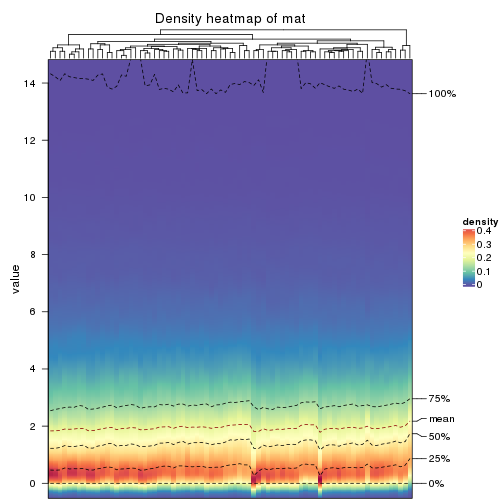
Folowing table shows the best k (number of partitions) for each combination
of top-value methods and partition methods. Clicking on the method name in
the table goes to the section for a single combination of methods.
The cola vignette explains the definition of the metrics used for determining the best number of partitions.
suggest_best_k(res_list)
| The best k | 1-PAC | Mean silhouette | Concordance | Optional k | ||
|---|---|---|---|---|---|---|
| CV:skmeans | 3 | 1.000 | 0.983 | 0.992 | ** | 2 |
| ATC:hclust | 2 | 1.000 | 0.996 | 0.997 | ** | |
| ATC:kmeans | 3 | 1.000 | 0.944 | 0.970 | ** | |
| MAD:NMF | 3 | 0.978 | 0.962 | 0.982 | ** | 2 |
| MAD:pam | 6 | 0.978 | 0.920 | 0.964 | ** | 2,3 |
| SD:NMF | 5 | 0.971 | 0.925 | 0.963 | ** | 2,3 |
| ATC:NMF | 5 | 0.962 | 0.921 | 0.963 | ** | 2,3 |
| ATC:pam | 5 | 0.960 | 0.914 | 0.968 | ** | 2,4 |
| CV:NMF | 2 | 0.946 | 0.934 | 0.974 | * | |
| SD:pam | 3 | 0.928 | 0.927 | 0.973 | * | 2 |
| MAD:skmeans | 5 | 0.922 | 0.892 | 0.944 | * | 2,3 |
| ATC:skmeans | 5 | 0.915 | 0.860 | 0.938 | * | 3,4 |
| SD:kmeans | 3 | 0.912 | 0.902 | 0.957 | * | |
| SD:skmeans | 6 | 0.908 | 0.780 | 0.890 | * | 2,3,5 |
| ATC:mclust | 4 | 0.887 | 0.883 | 0.942 | ||
| MAD:kmeans | 3 | 0.835 | 0.893 | 0.943 | ||
| SD:mclust | 5 | 0.782 | 0.851 | 0.921 | ||
| MAD:mclust | 5 | 0.780 | 0.854 | 0.921 | ||
| CV:pam | 3 | 0.775 | 0.888 | 0.955 | ||
| CV:mclust | 2 | 0.758 | 0.833 | 0.929 | ||
| CV:kmeans | 2 | 0.683 | 0.919 | 0.947 | ||
| MAD:hclust | 3 | 0.610 | 0.785 | 0.876 | ||
| SD:hclust | 3 | 0.468 | 0.787 | 0.877 | ||
| CV:hclust | 3 | 0.415 | 0.635 | 0.772 |
**: 1-PAC > 0.95, *: 1-PAC > 0.9
Cumulative distribution function curves of consensus matrix for all methods.
collect_plots(res_list, fun = plot_ecdf)
Consensus heatmaps for all methods. (What is a consensus heatmap?)
collect_plots(res_list, k = 2, fun = consensus_heatmap, mc.cores = 4)
collect_plots(res_list, k = 3, fun = consensus_heatmap, mc.cores = 4)
collect_plots(res_list, k = 4, fun = consensus_heatmap, mc.cores = 4)
collect_plots(res_list, k = 5, fun = consensus_heatmap, mc.cores = 4)
collect_plots(res_list, k = 6, fun = consensus_heatmap, mc.cores = 4)
Membership heatmaps for all methods. (What is a membership heatmap?)
collect_plots(res_list, k = 2, fun = membership_heatmap, mc.cores = 4)
collect_plots(res_list, k = 3, fun = membership_heatmap, mc.cores = 4)
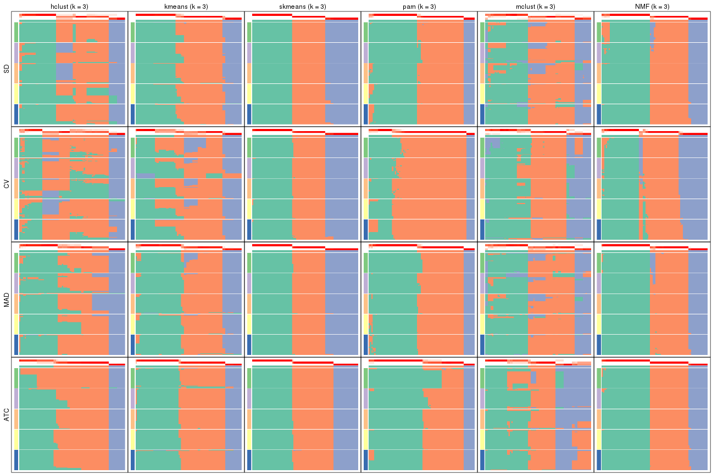
collect_plots(res_list, k = 4, fun = membership_heatmap, mc.cores = 4)
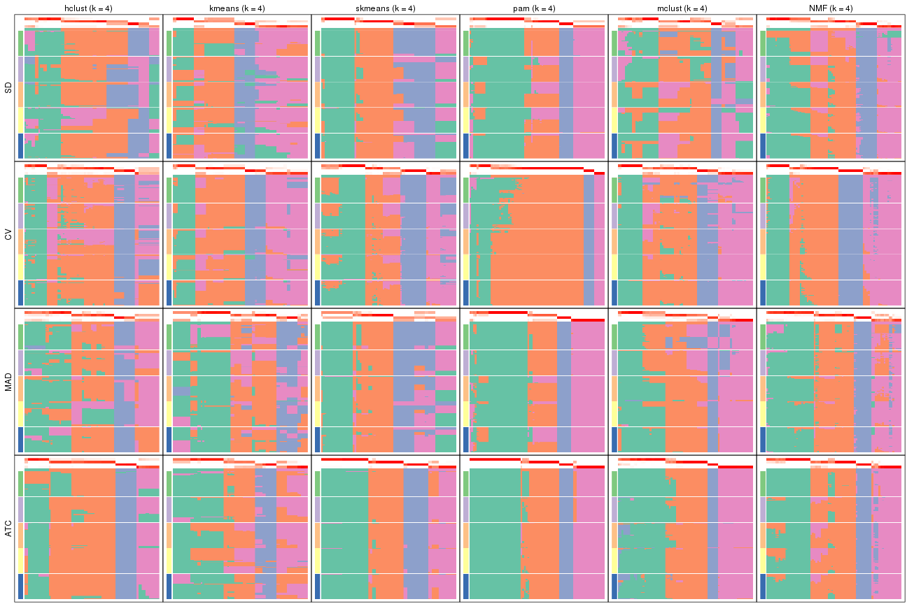
collect_plots(res_list, k = 5, fun = membership_heatmap, mc.cores = 4)
collect_plots(res_list, k = 6, fun = membership_heatmap, mc.cores = 4)
Signature heatmaps for all methods. (What is a signature heatmap?)
Note in following heatmaps, rows are scaled.
collect_plots(res_list, k = 2, fun = get_signatures, mc.cores = 4)
collect_plots(res_list, k = 3, fun = get_signatures, mc.cores = 4)
collect_plots(res_list, k = 4, fun = get_signatures, mc.cores = 4)
collect_plots(res_list, k = 5, fun = get_signatures, mc.cores = 4)
collect_plots(res_list, k = 6, fun = get_signatures, mc.cores = 4)
The statistics used for measuring the stability of consensus partitioning. (How are they defined?)
get_stats(res_list, k = 2)
#> k 1-PAC mean_silhouette concordance area_increased Rand Jaccard
#> SD:NMF 2 0.920 0.947 0.978 0.377 0.637 0.637
#> CV:NMF 2 0.946 0.934 0.974 0.467 0.524 0.524
#> MAD:NMF 2 0.946 0.950 0.979 0.396 0.610 0.610
#> ATC:NMF 2 1.000 0.995 0.998 0.305 0.699 0.699
#> SD:skmeans 2 1.000 0.999 0.999 0.493 0.508 0.508
#> CV:skmeans 2 0.973 0.961 0.984 0.502 0.498 0.498
#> MAD:skmeans 2 1.000 0.987 0.994 0.494 0.508 0.508
#> ATC:skmeans 2 0.851 0.929 0.966 0.478 0.513 0.513
#> SD:mclust 2 0.477 0.599 0.826 0.471 0.518 0.518
#> CV:mclust 2 0.758 0.833 0.929 0.497 0.494 0.494
#> MAD:mclust 2 0.448 0.604 0.821 0.480 0.513 0.513
#> ATC:mclust 2 0.437 0.836 0.886 0.414 0.576 0.576
#> SD:kmeans 2 0.445 0.860 0.898 0.362 0.699 0.699
#> CV:kmeans 2 0.683 0.919 0.947 0.478 0.508 0.508
#> MAD:kmeans 2 0.347 0.722 0.851 0.421 0.565 0.565
#> ATC:kmeans 2 0.533 0.920 0.921 0.312 0.733 0.733
#> SD:pam 2 0.919 0.931 0.970 0.498 0.498 0.498
#> CV:pam 2 0.496 0.882 0.929 0.345 0.651 0.651
#> MAD:pam 2 0.919 0.933 0.973 0.501 0.498 0.498
#> ATC:pam 2 1.000 0.970 0.988 0.249 0.752 0.752
#> SD:hclust 2 0.338 0.429 0.672 0.389 0.547 0.547
#> CV:hclust 2 0.186 0.482 0.766 0.417 0.576 0.576
#> MAD:hclust 2 0.225 0.717 0.794 0.441 0.494 0.494
#> ATC:hclust 2 1.000 0.996 0.997 0.270 0.733 0.733
get_stats(res_list, k = 3)
#> k 1-PAC mean_silhouette concordance area_increased Rand Jaccard
#> SD:NMF 3 0.902 0.938 0.971 0.699 0.661 0.494
#> CV:NMF 3 0.879 0.856 0.946 0.433 0.691 0.469
#> MAD:NMF 3 0.978 0.962 0.982 0.615 0.663 0.486
#> ATC:NMF 3 1.000 0.987 0.994 1.083 0.665 0.521
#> SD:skmeans 3 1.000 0.994 0.996 0.365 0.732 0.514
#> CV:skmeans 3 1.000 0.983 0.992 0.339 0.732 0.510
#> MAD:skmeans 3 1.000 0.995 0.997 0.361 0.732 0.514
#> ATC:skmeans 3 1.000 0.989 0.996 0.381 0.676 0.449
#> SD:mclust 3 0.611 0.812 0.881 0.351 0.716 0.516
#> CV:mclust 3 0.645 0.826 0.902 0.308 0.690 0.460
#> MAD:mclust 3 0.608 0.834 0.889 0.334 0.733 0.537
#> ATC:mclust 3 0.571 0.720 0.841 0.567 0.515 0.305
#> SD:kmeans 3 0.912 0.902 0.957 0.743 0.663 0.518
#> CV:kmeans 3 0.510 0.659 0.817 0.307 0.647 0.423
#> MAD:kmeans 3 0.835 0.893 0.943 0.513 0.658 0.461
#> ATC:kmeans 3 1.000 0.944 0.970 0.995 0.640 0.509
#> SD:pam 3 0.928 0.927 0.973 0.193 0.907 0.813
#> CV:pam 3 0.775 0.888 0.955 0.352 0.889 0.830
#> MAD:pam 3 0.928 0.926 0.973 0.184 0.907 0.813
#> ATC:pam 3 0.713 0.905 0.949 1.279 0.604 0.492
#> SD:hclust 3 0.468 0.787 0.877 0.576 0.623 0.423
#> CV:hclust 3 0.415 0.635 0.772 0.346 0.854 0.752
#> MAD:hclust 3 0.610 0.785 0.876 0.399 0.867 0.736
#> ATC:hclust 3 0.692 0.887 0.926 1.138 0.658 0.534
get_stats(res_list, k = 4)
#> k 1-PAC mean_silhouette concordance area_increased Rand Jaccard
#> SD:NMF 4 0.679 0.758 0.833 0.1385 0.778 0.479
#> CV:NMF 4 0.822 0.846 0.930 0.1059 0.730 0.376
#> MAD:NMF 4 0.740 0.791 0.883 0.1302 0.784 0.491
#> ATC:NMF 4 0.708 0.762 0.893 0.1466 0.758 0.449
#> SD:skmeans 4 0.773 0.827 0.827 0.0991 0.904 0.716
#> CV:skmeans 4 0.746 0.700 0.826 0.1142 0.829 0.544
#> MAD:skmeans 4 0.767 0.830 0.801 0.0988 0.917 0.750
#> ATC:skmeans 4 0.915 0.913 0.954 0.1146 0.860 0.620
#> SD:mclust 4 0.574 0.411 0.678 0.1219 0.828 0.589
#> CV:mclust 4 0.707 0.832 0.898 0.1188 0.893 0.705
#> MAD:mclust 4 0.664 0.713 0.804 0.1277 0.799 0.532
#> ATC:mclust 4 0.887 0.883 0.942 0.1059 0.895 0.709
#> SD:kmeans 4 0.712 0.689 0.767 0.1335 0.811 0.544
#> CV:kmeans 4 0.687 0.780 0.872 0.1552 0.746 0.429
#> MAD:kmeans 4 0.677 0.551 0.716 0.1211 0.954 0.872
#> ATC:kmeans 4 0.681 0.692 0.768 0.1472 0.871 0.664
#> SD:pam 4 0.786 0.847 0.880 0.1805 0.837 0.619
#> CV:pam 4 0.779 0.838 0.928 0.1510 0.956 0.918
#> MAD:pam 4 0.785 0.895 0.916 0.1785 0.870 0.686
#> ATC:pam 4 0.956 0.906 0.965 0.2583 0.786 0.527
#> SD:hclust 4 0.621 0.588 0.735 0.1207 0.957 0.887
#> CV:hclust 4 0.509 0.716 0.751 0.1675 0.773 0.547
#> MAD:hclust 4 0.562 0.781 0.761 0.1306 0.873 0.672
#> ATC:hclust 4 0.647 0.869 0.891 0.1575 0.913 0.781
get_stats(res_list, k = 5)
#> k 1-PAC mean_silhouette concordance area_increased Rand Jaccard
#> SD:NMF 5 0.971 0.925 0.963 0.0776 0.807 0.425
#> CV:NMF 5 0.743 0.763 0.877 0.0595 0.864 0.551
#> MAD:NMF 5 0.836 0.875 0.919 0.0814 0.829 0.476
#> ATC:NMF 5 0.962 0.921 0.963 0.0746 0.828 0.480
#> SD:skmeans 5 0.924 0.914 0.960 0.0793 0.926 0.722
#> CV:skmeans 5 0.794 0.712 0.869 0.0730 0.863 0.527
#> MAD:skmeans 5 0.922 0.892 0.944 0.0807 0.939 0.766
#> ATC:skmeans 5 0.915 0.860 0.938 0.0863 0.938 0.758
#> SD:mclust 5 0.782 0.851 0.921 0.0922 0.824 0.488
#> CV:mclust 5 0.735 0.771 0.839 0.0820 0.878 0.588
#> MAD:mclust 5 0.780 0.854 0.921 0.0797 0.847 0.528
#> ATC:mclust 5 0.847 0.570 0.815 0.0832 0.923 0.743
#> SD:kmeans 5 0.705 0.595 0.731 0.0809 0.895 0.680
#> CV:kmeans 5 0.722 0.693 0.791 0.0768 0.868 0.571
#> MAD:kmeans 5 0.703 0.728 0.792 0.0832 0.862 0.585
#> ATC:kmeans 5 0.720 0.728 0.823 0.0846 0.826 0.471
#> SD:pam 5 0.847 0.810 0.887 0.0683 0.974 0.910
#> CV:pam 5 0.662 0.694 0.857 0.0718 0.895 0.797
#> MAD:pam 5 0.839 0.821 0.899 0.0670 0.956 0.857
#> ATC:pam 5 0.960 0.914 0.968 0.0311 0.974 0.908
#> SD:hclust 5 0.693 0.769 0.843 0.0965 0.817 0.503
#> CV:hclust 5 0.529 0.664 0.784 0.0319 0.996 0.987
#> MAD:hclust 5 0.645 0.775 0.825 0.0771 0.938 0.770
#> ATC:hclust 5 0.715 0.831 0.837 0.0496 0.954 0.866
get_stats(res_list, k = 6)
#> k 1-PAC mean_silhouette concordance area_increased Rand Jaccard
#> SD:NMF 6 0.892 0.824 0.919 0.0268 0.936 0.734
#> CV:NMF 6 0.846 0.821 0.903 0.0303 0.905 0.617
#> MAD:NMF 6 0.889 0.816 0.917 0.0311 0.952 0.790
#> ATC:NMF 6 0.835 0.786 0.891 0.0531 0.884 0.537
#> SD:skmeans 6 0.908 0.780 0.890 0.0467 0.934 0.693
#> CV:skmeans 6 0.768 0.723 0.819 0.0388 0.916 0.613
#> MAD:skmeans 6 0.896 0.799 0.868 0.0457 0.947 0.749
#> ATC:skmeans 6 0.889 0.775 0.872 0.0468 0.899 0.553
#> SD:mclust 6 0.769 0.797 0.885 0.0443 0.961 0.824
#> CV:mclust 6 0.768 0.778 0.875 0.0400 0.966 0.833
#> MAD:mclust 6 0.786 0.781 0.888 0.0437 0.961 0.818
#> ATC:mclust 6 0.862 0.834 0.912 0.0414 0.852 0.478
#> SD:kmeans 6 0.786 0.599 0.802 0.0513 0.839 0.494
#> CV:kmeans 6 0.761 0.580 0.806 0.0395 0.901 0.610
#> MAD:kmeans 6 0.753 0.617 0.786 0.0500 0.911 0.647
#> ATC:kmeans 6 0.718 0.676 0.717 0.0501 0.932 0.706
#> SD:pam 6 0.884 0.839 0.924 0.0606 0.891 0.625
#> CV:pam 6 0.656 0.758 0.886 0.0641 0.963 0.915
#> MAD:pam 6 0.978 0.920 0.964 0.0545 0.935 0.768
#> ATC:pam 6 0.829 0.837 0.921 0.0959 0.884 0.595
#> SD:hclust 6 0.704 0.795 0.846 0.0181 0.992 0.962
#> CV:hclust 6 0.588 0.656 0.770 0.0620 0.902 0.711
#> MAD:hclust 6 0.658 0.752 0.843 0.0190 0.996 0.978
#> ATC:hclust 6 0.807 0.884 0.915 0.1265 0.851 0.554
Following heatmap plots the partition for each combination of methods and the lightness correspond to the silhouette scores for samples in each method. On top the consensus subgroup is inferred from all methods by taking the mean silhouette scores as weight.
collect_stats(res_list, k = 2)
collect_stats(res_list, k = 3)
collect_stats(res_list, k = 4)
collect_stats(res_list, k = 5)

collect_stats(res_list, k = 6)
Collect partitions from all methods:
collect_classes(res_list, k = 2)
collect_classes(res_list, k = 3)
collect_classes(res_list, k = 4)
collect_classes(res_list, k = 5)
collect_classes(res_list, k = 6)
Overlap of top rows from different top-row methods:
top_rows_overlap(res_list, top_n = 1000, method = "euler")
top_rows_overlap(res_list, top_n = 2000, method = "euler")
top_rows_overlap(res_list, top_n = 3000, method = "euler")
top_rows_overlap(res_list, top_n = 4000, method = "euler")
top_rows_overlap(res_list, top_n = 5000, method = "euler")
Also visualize the correspondance of rankings between different top-row methods:
top_rows_overlap(res_list, top_n = 1000, method = "correspondance")
top_rows_overlap(res_list, top_n = 2000, method = "correspondance")
top_rows_overlap(res_list, top_n = 3000, method = "correspondance")
top_rows_overlap(res_list, top_n = 4000, method = "correspondance")
top_rows_overlap(res_list, top_n = 5000, method = "correspondance")
Heatmaps of the top rows:
top_rows_heatmap(res_list, top_n = 1000)
top_rows_heatmap(res_list, top_n = 2000)
top_rows_heatmap(res_list, top_n = 3000)
top_rows_heatmap(res_list, top_n = 4000)
top_rows_heatmap(res_list, top_n = 5000)
The object with results only for a single top-value method and a single partition method can be extracted as:
res = res_list["SD", "hclust"]
# you can also extract it by
# res = res_list["SD:hclust"]
A summary of res and all the functions that can be applied to it:
res
#> A 'ConsensusPartition' object with k = 2, 3, 4, 5, 6.
#> On a matrix with 12208 rows and 77 columns.
#> Top rows (1000, 2000, 3000, 4000, 5000) are extracted by 'SD' method.
#> Subgroups are detected by 'hclust' method.
#> Performed in total 1250 partitions by row resampling.
#> Best k for subgroups seems to be 3.
#>
#> Following methods can be applied to this 'ConsensusPartition' object:
#> [1] "cola_report" "collect_classes" "collect_plots"
#> [4] "collect_stats" "colnames" "compare_signatures"
#> [7] "consensus_heatmap" "dimension_reduction" "functional_enrichment"
#> [10] "get_anno_col" "get_anno" "get_classes"
#> [13] "get_consensus" "get_matrix" "get_membership"
#> [16] "get_param" "get_signatures" "get_stats"
#> [19] "is_best_k" "is_stable_k" "membership_heatmap"
#> [22] "ncol" "nrow" "plot_ecdf"
#> [25] "rownames" "select_partition_number" "show"
#> [28] "suggest_best_k" "test_to_known_factors"
collect_plots() function collects all the plots made from res for all k (number of partitions)
into one single page to provide an easy and fast comparison between different k.
collect_plots(res)
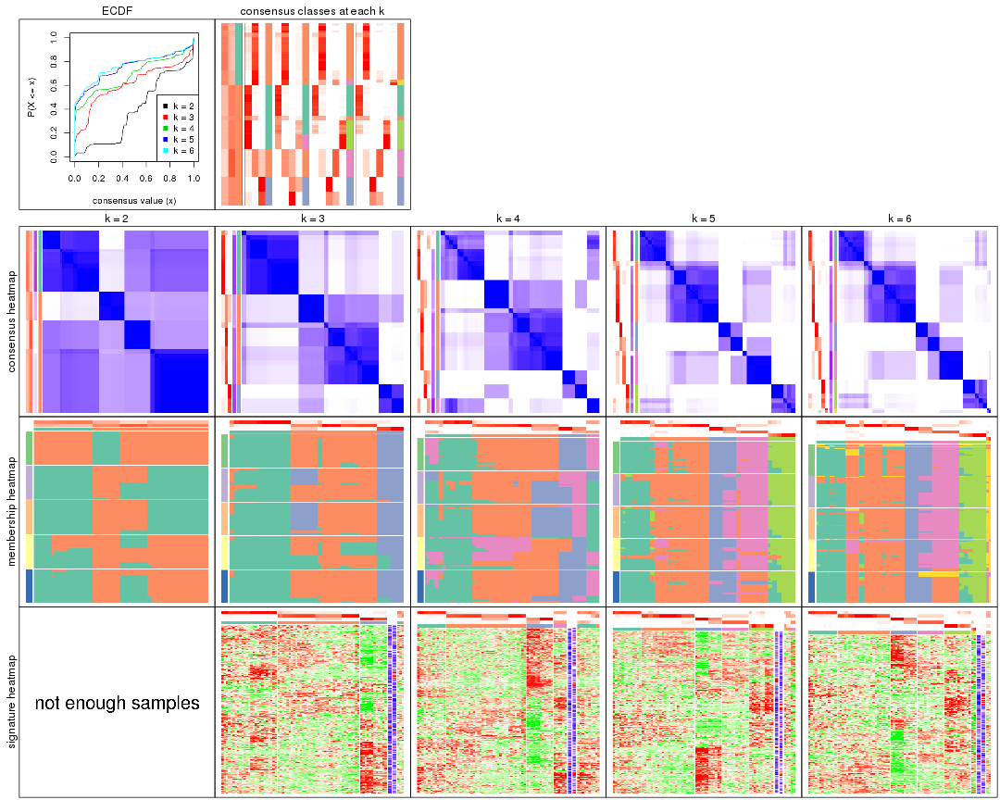
The plots are:
k and the heatmap of
predicted classes for each k.k.k.k.All the plots in panels can be made by individual functions and they are plotted later in this section.
select_partition_number() produces several plots showing different
statistics for choosing “optimized” k. There are following statistics:
k;k, the area increased is defined as \(A_k - A_{k-1}\).The detailed explanations of these statistics can be found in the cola vignette.
Generally speaking, lower PAC score, higher mean silhouette score or higher
concordance corresponds to better partition. Rand index and Jaccard index
measure how similar the current partition is compared to partition with k-1.
If they are too similar, we won't accept k is better than k-1.
select_partition_number(res)
The numeric values for all these statistics can be obtained by get_stats().
get_stats(res)
#> k 1-PAC mean_silhouette concordance area_increased Rand Jaccard
#> 2 2 0.338 0.429 0.672 0.3888 0.547 0.547
#> 3 3 0.468 0.787 0.877 0.5762 0.623 0.423
#> 4 4 0.621 0.588 0.735 0.1207 0.957 0.887
#> 5 5 0.693 0.769 0.843 0.0965 0.817 0.503
#> 6 6 0.704 0.795 0.846 0.0181 0.992 0.962
suggest_best_k() suggests the best \(k\) based on these statistics. The rules are as follows:
suggest_best_k(res)
#> [1] 3
Following shows the table of the partitions (You need to click the show/hide
code output link to see it). The membership matrix (columns with name p*)
is inferred by
clue::cl_consensus()
function with the SE method. Basically the value in the membership matrix
represents the probability to belong to a certain group. The finall class
label for an item is determined with the group with highest probability it
belongs to.
In get_classes() function, the entropy is calculated from the membership
matrix and the silhouette score is calculated from the consensus matrix.
cbind(get_classes(res, k = 2), get_membership(res, k = 2))
#> class entropy silhouette p1 p2
#> SRR2044063 1 0.975 0.8426 0.592 0.408
#> SRR2044062 1 0.913 0.9086 0.672 0.328
#> SRR2044061 1 0.913 0.9086 0.672 0.328
#> SRR2044060 1 0.975 0.8426 0.592 0.408
#> SRR2044099 2 0.939 0.2074 0.356 0.644
#> SRR2044098 1 0.969 0.7868 0.604 0.396
#> SRR2044097 2 0.939 0.2074 0.356 0.644
#> SRR2044096 2 0.939 0.2074 0.356 0.644
#> SRR2044095 1 0.943 0.8728 0.640 0.360
#> SRR2044094 2 0.943 0.1934 0.360 0.640
#> SRR2044087 1 0.925 0.8995 0.660 0.340
#> SRR2044086 1 0.943 0.8728 0.640 0.360
#> SRR2044085 1 0.925 0.8995 0.660 0.340
#> SRR2044084 1 0.943 0.8728 0.640 0.360
#> SRR2044083 1 0.943 0.8728 0.640 0.360
#> SRR2044082 1 0.936 0.8849 0.648 0.352
#> SRR2044075 1 0.913 0.9086 0.672 0.328
#> SRR2044074 1 0.913 0.9086 0.672 0.328
#> SRR2044073 1 0.913 0.9086 0.672 0.328
#> SRR2044072 1 0.913 0.9086 0.672 0.328
#> SRR2044071 1 0.913 0.9086 0.672 0.328
#> SRR2044070 1 0.913 0.9086 0.672 0.328
#> SRR2044069 2 0.973 0.3809 0.404 0.596
#> SRR2044068 2 0.973 0.3809 0.404 0.596
#> SRR2044067 2 0.973 0.3809 0.404 0.596
#> SRR2044066 2 0.973 0.3809 0.404 0.596
#> SRR2044065 2 0.973 0.3809 0.404 0.596
#> SRR2044064 2 0.973 0.3809 0.404 0.596
#> SRR2044059 1 0.913 0.9086 0.672 0.328
#> SRR2044058 1 0.913 0.9086 0.672 0.328
#> SRR2044057 2 0.939 0.2074 0.356 0.644
#> SRR2044056 2 0.939 0.2074 0.356 0.644
#> SRR2044055 2 0.939 0.2074 0.356 0.644
#> SRR2044054 2 0.939 0.2074 0.356 0.644
#> SRR2044053 2 0.939 0.2074 0.356 0.644
#> SRR2044052 2 0.939 0.2074 0.356 0.644
#> SRR2044051 1 0.973 0.8370 0.596 0.404
#> SRR2044050 1 0.975 0.8426 0.592 0.408
#> SRR2044049 1 0.975 0.8426 0.592 0.408
#> SRR2044048 1 0.973 0.8370 0.596 0.404
#> SRR2044047 1 0.975 0.8426 0.592 0.408
#> SRR2044046 1 0.975 0.8426 0.592 0.408
#> SRR2044045 2 0.939 0.2074 0.356 0.644
#> SRR2044044 2 0.939 0.2074 0.356 0.644
#> SRR2044042 2 0.939 0.2074 0.356 0.644
#> SRR2044041 2 0.939 0.2074 0.356 0.644
#> SRR2044040 2 0.939 0.2074 0.356 0.644
#> SRR2044039 2 0.730 0.0590 0.204 0.796
#> SRR2044038 2 0.730 0.0590 0.204 0.796
#> SRR2044037 2 0.730 0.0590 0.204 0.796
#> SRR2044036 2 0.730 0.0590 0.204 0.796
#> SRR2044035 2 0.730 0.0590 0.204 0.796
#> SRR2044034 2 0.730 0.0590 0.204 0.796
#> SRR2044033 2 0.939 0.2074 0.356 0.644
#> SRR2044032 2 0.946 0.1791 0.364 0.636
#> SRR2044031 2 0.939 0.2074 0.356 0.644
#> SRR2044030 2 0.939 0.2074 0.356 0.644
#> SRR2044029 2 0.946 0.1791 0.364 0.636
#> SRR2044028 2 0.939 0.2074 0.356 0.644
#> SRR2044027 2 0.730 0.0590 0.204 0.796
#> SRR2044026 2 0.730 0.0590 0.204 0.796
#> SRR2044024 2 0.730 0.0590 0.204 0.796
#> SRR2044023 2 0.730 0.0590 0.204 0.796
#> SRR2044025 2 0.730 0.0590 0.204 0.796
#> SRR2044022 2 0.730 0.0590 0.204 0.796
#> SRR2044021 2 0.939 0.2074 0.356 0.644
#> SRR2044020 2 0.981 -0.0878 0.420 0.580
#> SRR2044019 2 0.939 0.2074 0.356 0.644
#> SRR2044018 2 0.939 0.2074 0.356 0.644
#> SRR2044017 2 0.981 -0.0878 0.420 0.580
#> SRR2044016 2 0.939 0.2074 0.356 0.644
#> SRR2044015 2 0.969 0.3829 0.396 0.604
#> SRR2044014 2 0.969 0.3829 0.396 0.604
#> SRR2044013 2 0.969 0.3829 0.396 0.604
#> SRR2044011 2 0.969 0.3829 0.396 0.604
#> SRR2044010 2 0.969 0.3829 0.396 0.604
#> SRR2044012 2 0.969 0.3829 0.396 0.604
cbind(get_classes(res, k = 3), get_membership(res, k = 3))
#> class entropy silhouette p1 p2 p3
#> SRR2044063 2 0.0592 0.760 0.012 0.988 0.000
#> SRR2044062 2 0.2959 0.777 0.100 0.900 0.000
#> SRR2044061 2 0.2959 0.777 0.100 0.900 0.000
#> SRR2044060 2 0.0592 0.760 0.012 0.988 0.000
#> SRR2044099 1 0.1411 0.938 0.964 0.036 0.000
#> SRR2044098 2 0.6045 0.441 0.380 0.620 0.000
#> SRR2044097 1 0.2261 0.909 0.932 0.068 0.000
#> SRR2044096 1 0.1411 0.938 0.964 0.036 0.000
#> SRR2044095 2 0.5859 0.503 0.344 0.656 0.000
#> SRR2044094 1 0.2356 0.905 0.928 0.072 0.000
#> SRR2044087 2 0.4062 0.753 0.164 0.836 0.000
#> SRR2044086 2 0.4235 0.751 0.176 0.824 0.000
#> SRR2044085 2 0.4062 0.753 0.164 0.836 0.000
#> SRR2044084 2 0.4346 0.744 0.184 0.816 0.000
#> SRR2044083 2 0.4346 0.744 0.184 0.816 0.000
#> SRR2044082 2 0.4235 0.748 0.176 0.824 0.000
#> SRR2044075 2 0.3482 0.770 0.128 0.872 0.000
#> SRR2044074 2 0.2959 0.777 0.100 0.900 0.000
#> SRR2044073 2 0.2959 0.777 0.100 0.900 0.000
#> SRR2044072 2 0.3482 0.770 0.128 0.872 0.000
#> SRR2044071 2 0.2959 0.777 0.100 0.900 0.000
#> SRR2044070 2 0.2959 0.777 0.100 0.900 0.000
#> SRR2044069 3 0.0000 0.912 0.000 0.000 1.000
#> SRR2044068 3 0.0000 0.912 0.000 0.000 1.000
#> SRR2044067 3 0.0000 0.912 0.000 0.000 1.000
#> SRR2044066 3 0.0000 0.912 0.000 0.000 1.000
#> SRR2044065 3 0.0000 0.912 0.000 0.000 1.000
#> SRR2044064 3 0.0000 0.912 0.000 0.000 1.000
#> SRR2044059 2 0.2959 0.777 0.100 0.900 0.000
#> SRR2044058 2 0.2959 0.777 0.100 0.900 0.000
#> SRR2044057 1 0.0000 0.944 1.000 0.000 0.000
#> SRR2044056 1 0.0000 0.944 1.000 0.000 0.000
#> SRR2044055 1 0.0000 0.944 1.000 0.000 0.000
#> SRR2044054 1 0.0000 0.944 1.000 0.000 0.000
#> SRR2044053 1 0.0000 0.944 1.000 0.000 0.000
#> SRR2044052 1 0.0000 0.944 1.000 0.000 0.000
#> SRR2044051 2 0.0000 0.753 0.000 1.000 0.000
#> SRR2044050 2 0.0592 0.760 0.012 0.988 0.000
#> SRR2044049 2 0.0592 0.760 0.012 0.988 0.000
#> SRR2044048 2 0.0000 0.753 0.000 1.000 0.000
#> SRR2044047 2 0.0592 0.760 0.012 0.988 0.000
#> SRR2044046 2 0.0592 0.760 0.012 0.988 0.000
#> SRR2044045 1 0.0000 0.944 1.000 0.000 0.000
#> SRR2044044 1 0.0000 0.944 1.000 0.000 0.000
#> SRR2044042 1 0.0000 0.944 1.000 0.000 0.000
#> SRR2044041 1 0.0000 0.944 1.000 0.000 0.000
#> SRR2044040 1 0.0000 0.944 1.000 0.000 0.000
#> SRR2044039 2 0.8262 0.520 0.116 0.608 0.276
#> SRR2044038 2 0.8262 0.520 0.116 0.608 0.276
#> SRR2044037 2 0.8262 0.520 0.116 0.608 0.276
#> SRR2044036 2 0.8262 0.520 0.116 0.608 0.276
#> SRR2044035 2 0.8262 0.520 0.116 0.608 0.276
#> SRR2044034 2 0.8262 0.520 0.116 0.608 0.276
#> SRR2044033 1 0.0000 0.944 1.000 0.000 0.000
#> SRR2044032 1 0.0424 0.942 0.992 0.008 0.000
#> SRR2044031 1 0.1411 0.938 0.964 0.036 0.000
#> SRR2044030 1 0.0000 0.944 1.000 0.000 0.000
#> SRR2044029 1 0.0424 0.942 0.992 0.008 0.000
#> SRR2044028 1 0.1411 0.938 0.964 0.036 0.000
#> SRR2044027 2 0.8262 0.520 0.116 0.608 0.276
#> SRR2044026 2 0.8262 0.520 0.116 0.608 0.276
#> SRR2044024 2 0.8262 0.520 0.116 0.608 0.276
#> SRR2044023 2 0.8262 0.520 0.116 0.608 0.276
#> SRR2044025 2 0.8262 0.520 0.116 0.608 0.276
#> SRR2044022 2 0.8262 0.520 0.116 0.608 0.276
#> SRR2044021 1 0.1411 0.938 0.964 0.036 0.000
#> SRR2044020 1 0.5905 0.376 0.648 0.352 0.000
#> SRR2044019 1 0.1411 0.938 0.964 0.036 0.000
#> SRR2044018 1 0.1411 0.938 0.964 0.036 0.000
#> SRR2044017 1 0.5905 0.376 0.648 0.352 0.000
#> SRR2044016 1 0.1411 0.938 0.964 0.036 0.000
#> SRR2044015 3 0.3682 0.908 0.116 0.008 0.876
#> SRR2044014 3 0.3682 0.908 0.116 0.008 0.876
#> SRR2044013 3 0.3682 0.908 0.116 0.008 0.876
#> SRR2044011 3 0.3682 0.908 0.116 0.008 0.876
#> SRR2044010 3 0.3682 0.908 0.116 0.008 0.876
#> SRR2044012 3 0.3682 0.908 0.116 0.008 0.876
cbind(get_classes(res, k = 4), get_membership(res, k = 4))
#> class entropy silhouette p1 p2 p3 p4
#> SRR2044063 2 0.0336 0.754 0.008 0.992 0.000 0.000
#> SRR2044062 2 0.2751 0.754 0.040 0.904 0.000 0.056
#> SRR2044061 2 0.2751 0.754 0.040 0.904 0.000 0.056
#> SRR2044060 2 0.0336 0.754 0.008 0.992 0.000 0.000
#> SRR2044099 1 0.1398 0.636 0.956 0.040 0.000 0.004
#> SRR2044098 2 0.5917 0.413 0.320 0.624 0.000 0.056
#> SRR2044097 1 0.1867 0.608 0.928 0.072 0.000 0.000
#> SRR2044096 1 0.1398 0.636 0.956 0.040 0.000 0.004
#> SRR2044095 2 0.5721 0.482 0.284 0.660 0.000 0.056
#> SRR2044094 1 0.1940 0.603 0.924 0.076 0.000 0.000
#> SRR2044087 2 0.3919 0.722 0.104 0.840 0.000 0.056
#> SRR2044086 2 0.4094 0.715 0.116 0.828 0.000 0.056
#> SRR2044085 2 0.3919 0.722 0.104 0.840 0.000 0.056
#> SRR2044084 2 0.4205 0.707 0.124 0.820 0.000 0.056
#> SRR2044083 2 0.4205 0.707 0.124 0.820 0.000 0.056
#> SRR2044082 2 0.4094 0.714 0.116 0.828 0.000 0.056
#> SRR2044075 2 0.3320 0.742 0.068 0.876 0.000 0.056
#> SRR2044074 2 0.2751 0.754 0.040 0.904 0.000 0.056
#> SRR2044073 2 0.2751 0.754 0.040 0.904 0.000 0.056
#> SRR2044072 2 0.3320 0.742 0.068 0.876 0.000 0.056
#> SRR2044071 2 0.2751 0.754 0.040 0.904 0.000 0.056
#> SRR2044070 2 0.2751 0.754 0.040 0.904 0.000 0.056
#> SRR2044069 3 0.4855 0.770 0.000 0.000 0.600 0.400
#> SRR2044068 3 0.4855 0.770 0.000 0.000 0.600 0.400
#> SRR2044067 3 0.4855 0.770 0.000 0.000 0.600 0.400
#> SRR2044066 3 0.4855 0.770 0.000 0.000 0.600 0.400
#> SRR2044065 3 0.4855 0.770 0.000 0.000 0.600 0.400
#> SRR2044064 3 0.4855 0.770 0.000 0.000 0.600 0.400
#> SRR2044059 2 0.2751 0.754 0.040 0.904 0.000 0.056
#> SRR2044058 2 0.2751 0.754 0.040 0.904 0.000 0.056
#> SRR2044057 4 0.5163 1.000 0.480 0.000 0.004 0.516
#> SRR2044056 4 0.5163 1.000 0.480 0.000 0.004 0.516
#> SRR2044055 1 0.0376 0.593 0.992 0.004 0.000 0.004
#> SRR2044054 4 0.5163 1.000 0.480 0.000 0.004 0.516
#> SRR2044053 4 0.5163 1.000 0.480 0.000 0.004 0.516
#> SRR2044052 1 0.1109 0.559 0.968 0.000 0.004 0.028
#> SRR2044051 2 0.1743 0.731 0.004 0.940 0.000 0.056
#> SRR2044050 2 0.0336 0.754 0.008 0.992 0.000 0.000
#> SRR2044049 2 0.0336 0.754 0.008 0.992 0.000 0.000
#> SRR2044048 2 0.1743 0.731 0.004 0.940 0.000 0.056
#> SRR2044047 2 0.0336 0.754 0.008 0.992 0.000 0.000
#> SRR2044046 2 0.0336 0.754 0.008 0.992 0.000 0.000
#> SRR2044045 4 0.5163 1.000 0.480 0.000 0.004 0.516
#> SRR2044044 1 0.5105 -0.752 0.564 0.000 0.004 0.432
#> SRR2044042 4 0.5163 1.000 0.480 0.000 0.004 0.516
#> SRR2044041 1 0.5105 -0.752 0.564 0.000 0.004 0.432
#> SRR2044040 1 0.0376 0.593 0.992 0.004 0.000 0.004
#> SRR2044039 2 0.5915 0.508 0.000 0.560 0.400 0.040
#> SRR2044038 2 0.5915 0.508 0.000 0.560 0.400 0.040
#> SRR2044037 2 0.5915 0.508 0.000 0.560 0.400 0.040
#> SRR2044036 2 0.5915 0.508 0.000 0.560 0.400 0.040
#> SRR2044035 2 0.5915 0.508 0.000 0.560 0.400 0.040
#> SRR2044034 2 0.5915 0.508 0.000 0.560 0.400 0.040
#> SRR2044033 1 0.4741 -0.391 0.668 0.000 0.004 0.328
#> SRR2044032 1 0.5204 -0.558 0.612 0.012 0.000 0.376
#> SRR2044031 1 0.1211 0.636 0.960 0.040 0.000 0.000
#> SRR2044030 1 0.4428 -0.194 0.720 0.000 0.004 0.276
#> SRR2044029 1 0.5204 -0.558 0.612 0.012 0.000 0.376
#> SRR2044028 1 0.1211 0.636 0.960 0.040 0.000 0.000
#> SRR2044027 2 0.5915 0.508 0.000 0.560 0.400 0.040
#> SRR2044026 2 0.5915 0.508 0.000 0.560 0.400 0.040
#> SRR2044024 2 0.5915 0.508 0.000 0.560 0.400 0.040
#> SRR2044023 2 0.5915 0.508 0.000 0.560 0.400 0.040
#> SRR2044025 2 0.5915 0.508 0.000 0.560 0.400 0.040
#> SRR2044022 2 0.5915 0.508 0.000 0.560 0.400 0.040
#> SRR2044021 1 0.1798 0.631 0.944 0.040 0.000 0.016
#> SRR2044020 1 0.6495 0.177 0.560 0.356 0.000 0.084
#> SRR2044019 1 0.1211 0.636 0.960 0.040 0.000 0.000
#> SRR2044018 1 0.1798 0.631 0.944 0.040 0.000 0.016
#> SRR2044017 1 0.6495 0.177 0.560 0.356 0.000 0.084
#> SRR2044016 1 0.1211 0.636 0.960 0.040 0.000 0.000
#> SRR2044015 3 0.0000 0.779 0.000 0.000 1.000 0.000
#> SRR2044014 3 0.0000 0.779 0.000 0.000 1.000 0.000
#> SRR2044013 3 0.0000 0.779 0.000 0.000 1.000 0.000
#> SRR2044011 3 0.0000 0.779 0.000 0.000 1.000 0.000
#> SRR2044010 3 0.0000 0.779 0.000 0.000 1.000 0.000
#> SRR2044012 3 0.0000 0.779 0.000 0.000 1.000 0.000
cbind(get_classes(res, k = 5), get_membership(res, k = 5))
#> class entropy silhouette p1 p2 p3 p4 p5
#> SRR2044063 2 0.2763 0.7112 0.000 0.848 0.0 0.148 0.004
#> SRR2044062 2 0.0000 0.8311 0.000 1.000 0.0 0.000 0.000
#> SRR2044061 2 0.0000 0.8311 0.000 1.000 0.0 0.000 0.000
#> SRR2044060 2 0.2763 0.7112 0.000 0.848 0.0 0.148 0.004
#> SRR2044099 1 0.1831 0.9585 0.920 0.076 0.0 0.000 0.004
#> SRR2044098 2 0.3684 0.6166 0.280 0.720 0.0 0.000 0.000
#> SRR2044097 1 0.2127 0.9296 0.892 0.108 0.0 0.000 0.000
#> SRR2044096 1 0.1831 0.9585 0.920 0.076 0.0 0.000 0.004
#> SRR2044095 2 0.3452 0.6637 0.244 0.756 0.0 0.000 0.000
#> SRR2044094 1 0.2179 0.9246 0.888 0.112 0.0 0.000 0.000
#> SRR2044087 2 0.1478 0.8221 0.064 0.936 0.0 0.000 0.000
#> SRR2044086 2 0.1671 0.8163 0.076 0.924 0.0 0.000 0.000
#> SRR2044085 2 0.1478 0.8221 0.064 0.936 0.0 0.000 0.000
#> SRR2044084 2 0.1792 0.8113 0.084 0.916 0.0 0.000 0.000
#> SRR2044083 2 0.1792 0.8113 0.084 0.916 0.0 0.000 0.000
#> SRR2044082 2 0.1671 0.8165 0.076 0.924 0.0 0.000 0.000
#> SRR2044075 2 0.0794 0.8307 0.028 0.972 0.0 0.000 0.000
#> SRR2044074 2 0.0000 0.8311 0.000 1.000 0.0 0.000 0.000
#> SRR2044073 2 0.0000 0.8311 0.000 1.000 0.0 0.000 0.000
#> SRR2044072 2 0.0794 0.8307 0.028 0.972 0.0 0.000 0.000
#> SRR2044071 2 0.0000 0.8311 0.000 1.000 0.0 0.000 0.000
#> SRR2044070 2 0.0000 0.8311 0.000 1.000 0.0 0.000 0.000
#> SRR2044069 3 0.0000 0.7437 0.000 0.000 1.0 0.000 0.000
#> SRR2044068 3 0.0000 0.7437 0.000 0.000 1.0 0.000 0.000
#> SRR2044067 3 0.0000 0.7437 0.000 0.000 1.0 0.000 0.000
#> SRR2044066 3 0.0000 0.7437 0.000 0.000 1.0 0.000 0.000
#> SRR2044065 3 0.0000 0.7437 0.000 0.000 1.0 0.000 0.000
#> SRR2044064 3 0.0000 0.7437 0.000 0.000 1.0 0.000 0.000
#> SRR2044059 2 0.0000 0.8311 0.000 1.000 0.0 0.000 0.000
#> SRR2044058 2 0.0000 0.8311 0.000 1.000 0.0 0.000 0.000
#> SRR2044057 5 0.0324 0.8267 0.004 0.004 0.0 0.000 0.992
#> SRR2044056 5 0.0324 0.8267 0.004 0.004 0.0 0.000 0.992
#> SRR2044055 1 0.1493 0.9215 0.948 0.028 0.0 0.000 0.024
#> SRR2044054 5 0.0324 0.8267 0.004 0.004 0.0 0.000 0.992
#> SRR2044053 5 0.0324 0.8267 0.004 0.004 0.0 0.000 0.992
#> SRR2044052 1 0.0794 0.8870 0.972 0.000 0.0 0.000 0.028
#> SRR2044051 4 0.5128 0.0896 0.028 0.392 0.0 0.572 0.008
#> SRR2044050 2 0.2763 0.7112 0.000 0.848 0.0 0.148 0.004
#> SRR2044049 2 0.2763 0.7112 0.000 0.848 0.0 0.148 0.004
#> SRR2044048 4 0.5128 0.0896 0.028 0.392 0.0 0.572 0.008
#> SRR2044047 2 0.2763 0.7112 0.000 0.848 0.0 0.148 0.004
#> SRR2044046 2 0.2763 0.7112 0.000 0.848 0.0 0.148 0.004
#> SRR2044045 5 0.0324 0.8267 0.004 0.004 0.0 0.000 0.992
#> SRR2044044 5 0.3327 0.7964 0.144 0.028 0.0 0.000 0.828
#> SRR2044042 5 0.0324 0.8267 0.004 0.004 0.0 0.000 0.992
#> SRR2044041 5 0.3327 0.7964 0.144 0.028 0.0 0.000 0.828
#> SRR2044040 1 0.1493 0.9215 0.948 0.028 0.0 0.000 0.024
#> SRR2044039 4 0.3177 0.8906 0.000 0.208 0.0 0.792 0.000
#> SRR2044038 4 0.3210 0.8891 0.000 0.212 0.0 0.788 0.000
#> SRR2044037 4 0.3210 0.8891 0.000 0.212 0.0 0.788 0.000
#> SRR2044036 4 0.3177 0.8906 0.000 0.208 0.0 0.792 0.000
#> SRR2044035 4 0.3210 0.8891 0.000 0.212 0.0 0.788 0.000
#> SRR2044034 4 0.3210 0.8891 0.000 0.212 0.0 0.788 0.000
#> SRR2044033 5 0.4703 0.5905 0.340 0.028 0.0 0.000 0.632
#> SRR2044032 5 0.4615 0.7008 0.252 0.048 0.0 0.000 0.700
#> SRR2044031 1 0.1671 0.9588 0.924 0.076 0.0 0.000 0.000
#> SRR2044030 5 0.4866 0.4835 0.392 0.028 0.0 0.000 0.580
#> SRR2044029 5 0.4615 0.7008 0.252 0.048 0.0 0.000 0.700
#> SRR2044028 1 0.1671 0.9588 0.924 0.076 0.0 0.000 0.000
#> SRR2044027 4 0.3177 0.8906 0.000 0.208 0.0 0.792 0.000
#> SRR2044026 4 0.3177 0.8906 0.000 0.208 0.0 0.792 0.000
#> SRR2044024 4 0.3177 0.8906 0.000 0.208 0.0 0.792 0.000
#> SRR2044023 4 0.3177 0.8906 0.000 0.208 0.0 0.792 0.000
#> SRR2044025 4 0.3177 0.8906 0.000 0.208 0.0 0.792 0.000
#> SRR2044022 4 0.3177 0.8906 0.000 0.208 0.0 0.792 0.000
#> SRR2044021 1 0.2983 0.9191 0.868 0.076 0.0 0.000 0.056
#> SRR2044020 2 0.6100 -0.0774 0.428 0.448 0.0 0.000 0.124
#> SRR2044019 1 0.1671 0.9588 0.924 0.076 0.0 0.000 0.000
#> SRR2044018 1 0.2450 0.9457 0.896 0.076 0.0 0.000 0.028
#> SRR2044017 2 0.6100 -0.0774 0.428 0.448 0.0 0.000 0.124
#> SRR2044016 1 0.1671 0.9588 0.924 0.076 0.0 0.000 0.000
#> SRR2044015 3 0.4182 0.6769 0.000 0.000 0.6 0.400 0.000
#> SRR2044014 3 0.4182 0.6769 0.000 0.000 0.6 0.400 0.000
#> SRR2044013 3 0.4182 0.6769 0.000 0.000 0.6 0.400 0.000
#> SRR2044011 3 0.4182 0.6769 0.000 0.000 0.6 0.400 0.000
#> SRR2044010 3 0.4182 0.6769 0.000 0.000 0.6 0.400 0.000
#> SRR2044012 3 0.4182 0.6769 0.000 0.000 0.6 0.400 0.000
cbind(get_classes(res, k = 6), get_membership(res, k = 6))
#> class entropy silhouette p1 p2 p3 p4 p5 p6
#> SRR2044063 2 0.3196 0.7385 0.000 0.828 0.0 0.108 0.000 0.064
#> SRR2044062 2 0.0000 0.8438 0.000 1.000 0.0 0.000 0.000 0.000
#> SRR2044061 2 0.0000 0.8438 0.000 1.000 0.0 0.000 0.000 0.000
#> SRR2044060 2 0.3196 0.7385 0.000 0.828 0.0 0.108 0.000 0.064
#> SRR2044099 1 0.2002 0.9443 0.908 0.076 0.0 0.000 0.004 0.012
#> SRR2044098 2 0.3586 0.6248 0.268 0.720 0.0 0.000 0.000 0.012
#> SRR2044097 1 0.2053 0.9175 0.888 0.108 0.0 0.000 0.000 0.004
#> SRR2044096 1 0.2002 0.9443 0.908 0.076 0.0 0.000 0.004 0.012
#> SRR2044095 2 0.3368 0.6775 0.232 0.756 0.0 0.000 0.000 0.012
#> SRR2044094 1 0.2100 0.9127 0.884 0.112 0.0 0.000 0.000 0.004
#> SRR2044087 2 0.1500 0.8347 0.052 0.936 0.0 0.000 0.000 0.012
#> SRR2044086 2 0.1686 0.8300 0.064 0.924 0.0 0.000 0.000 0.012
#> SRR2044085 2 0.1500 0.8347 0.052 0.936 0.0 0.000 0.000 0.012
#> SRR2044084 2 0.1802 0.8251 0.072 0.916 0.0 0.000 0.000 0.012
#> SRR2044083 2 0.1802 0.8251 0.072 0.916 0.0 0.000 0.000 0.012
#> SRR2044082 2 0.1686 0.8297 0.064 0.924 0.0 0.000 0.000 0.012
#> SRR2044075 2 0.0820 0.8421 0.016 0.972 0.0 0.000 0.000 0.012
#> SRR2044074 2 0.0000 0.8438 0.000 1.000 0.0 0.000 0.000 0.000
#> SRR2044073 2 0.0000 0.8438 0.000 1.000 0.0 0.000 0.000 0.000
#> SRR2044072 2 0.0820 0.8421 0.016 0.972 0.0 0.000 0.000 0.012
#> SRR2044071 2 0.0000 0.8438 0.000 1.000 0.0 0.000 0.000 0.000
#> SRR2044070 2 0.0000 0.8438 0.000 1.000 0.0 0.000 0.000 0.000
#> SRR2044069 3 0.0000 0.6603 0.000 0.000 1.0 0.000 0.000 0.000
#> SRR2044068 3 0.0000 0.6603 0.000 0.000 1.0 0.000 0.000 0.000
#> SRR2044067 3 0.0000 0.6603 0.000 0.000 1.0 0.000 0.000 0.000
#> SRR2044066 3 0.0000 0.6603 0.000 0.000 1.0 0.000 0.000 0.000
#> SRR2044065 3 0.0000 0.6603 0.000 0.000 1.0 0.000 0.000 0.000
#> SRR2044064 3 0.0000 0.6603 0.000 0.000 1.0 0.000 0.000 0.000
#> SRR2044059 2 0.0000 0.8438 0.000 1.000 0.0 0.000 0.000 0.000
#> SRR2044058 2 0.0000 0.8438 0.000 1.000 0.0 0.000 0.000 0.000
#> SRR2044057 5 0.0000 0.7805 0.000 0.000 0.0 0.000 1.000 0.000
#> SRR2044056 5 0.0000 0.7805 0.000 0.000 0.0 0.000 1.000 0.000
#> SRR2044055 1 0.1341 0.9007 0.948 0.028 0.0 0.000 0.000 0.024
#> SRR2044054 5 0.0000 0.7805 0.000 0.000 0.0 0.000 1.000 0.000
#> SRR2044053 5 0.0000 0.7805 0.000 0.000 0.0 0.000 1.000 0.000
#> SRR2044052 1 0.0935 0.8499 0.964 0.000 0.0 0.004 0.000 0.032
#> SRR2044051 6 0.4453 0.7793 0.000 0.044 0.0 0.332 0.000 0.624
#> SRR2044050 2 0.3196 0.7385 0.000 0.828 0.0 0.108 0.000 0.064
#> SRR2044049 2 0.3196 0.7385 0.000 0.828 0.0 0.108 0.000 0.064
#> SRR2044048 6 0.1007 0.7815 0.000 0.044 0.0 0.000 0.000 0.956
#> SRR2044047 2 0.3196 0.7385 0.000 0.828 0.0 0.108 0.000 0.064
#> SRR2044046 2 0.3196 0.7385 0.000 0.828 0.0 0.108 0.000 0.064
#> SRR2044045 5 0.0000 0.7805 0.000 0.000 0.0 0.000 1.000 0.000
#> SRR2044044 5 0.3043 0.7716 0.132 0.024 0.0 0.000 0.836 0.008
#> SRR2044042 5 0.0000 0.7805 0.000 0.000 0.0 0.000 1.000 0.000
#> SRR2044041 5 0.3043 0.7716 0.132 0.024 0.0 0.000 0.836 0.008
#> SRR2044040 1 0.1074 0.9083 0.960 0.028 0.0 0.000 0.000 0.012
#> SRR2044039 4 0.2793 0.9979 0.000 0.200 0.0 0.800 0.000 0.000
#> SRR2044038 4 0.2823 0.9957 0.000 0.204 0.0 0.796 0.000 0.000
#> SRR2044037 4 0.2823 0.9957 0.000 0.204 0.0 0.796 0.000 0.000
#> SRR2044036 4 0.2793 0.9979 0.000 0.200 0.0 0.800 0.000 0.000
#> SRR2044035 4 0.2823 0.9957 0.000 0.204 0.0 0.796 0.000 0.000
#> SRR2044034 4 0.2823 0.9957 0.000 0.204 0.0 0.796 0.000 0.000
#> SRR2044033 5 0.4428 0.6072 0.324 0.024 0.0 0.000 0.640 0.012
#> SRR2044032 5 0.4259 0.7008 0.240 0.044 0.0 0.000 0.708 0.008
#> SRR2044031 1 0.1757 0.9474 0.916 0.076 0.0 0.000 0.000 0.008
#> SRR2044030 5 0.4591 0.5040 0.376 0.024 0.0 0.000 0.588 0.012
#> SRR2044029 5 0.4259 0.7008 0.240 0.044 0.0 0.000 0.708 0.008
#> SRR2044028 1 0.1757 0.9474 0.916 0.076 0.0 0.000 0.000 0.008
#> SRR2044027 4 0.2793 0.9979 0.000 0.200 0.0 0.800 0.000 0.000
#> SRR2044026 4 0.2793 0.9979 0.000 0.200 0.0 0.800 0.000 0.000
#> SRR2044024 4 0.2793 0.9979 0.000 0.200 0.0 0.800 0.000 0.000
#> SRR2044023 4 0.2793 0.9979 0.000 0.200 0.0 0.800 0.000 0.000
#> SRR2044025 4 0.2793 0.9979 0.000 0.200 0.0 0.800 0.000 0.000
#> SRR2044022 4 0.2793 0.9979 0.000 0.200 0.0 0.800 0.000 0.000
#> SRR2044021 1 0.3033 0.9041 0.856 0.076 0.0 0.000 0.056 0.012
#> SRR2044020 2 0.5785 -0.0499 0.416 0.448 0.0 0.000 0.124 0.012
#> SRR2044019 1 0.1757 0.9474 0.916 0.076 0.0 0.000 0.000 0.008
#> SRR2044018 1 0.2556 0.9312 0.884 0.076 0.0 0.000 0.028 0.012
#> SRR2044017 2 0.5785 -0.0499 0.416 0.448 0.0 0.000 0.124 0.012
#> SRR2044016 1 0.1757 0.9474 0.916 0.076 0.0 0.000 0.000 0.008
#> SRR2044015 3 0.3756 0.6609 0.000 0.000 0.6 0.400 0.000 0.000
#> SRR2044014 3 0.3756 0.6609 0.000 0.000 0.6 0.400 0.000 0.000
#> SRR2044013 3 0.3756 0.6609 0.000 0.000 0.6 0.400 0.000 0.000
#> SRR2044011 3 0.3756 0.6609 0.000 0.000 0.6 0.400 0.000 0.000
#> SRR2044010 3 0.3756 0.6609 0.000 0.000 0.6 0.400 0.000 0.000
#> SRR2044012 3 0.3756 0.6609 0.000 0.000 0.6 0.400 0.000 0.000
Heatmaps for the consensus matrix. It visualizes the probability of two samples to be in a same group.
consensus_heatmap(res, k = 2)
consensus_heatmap(res, k = 3)
consensus_heatmap(res, k = 4)
consensus_heatmap(res, k = 5)
consensus_heatmap(res, k = 6)
Heatmaps for the membership of samples in all partitions to see how consistent they are:
membership_heatmap(res, k = 2)
membership_heatmap(res, k = 3)
membership_heatmap(res, k = 4)
membership_heatmap(res, k = 5)
membership_heatmap(res, k = 6)
As soon as we have had the classes for columns, we can look for signatures which are significantly different between classes which can be candidate marks for certain classes. Following are the heatmaps for signatures.
Signature heatmaps where rows are scaled:
get_signatures(res, k = 2)

get_signatures(res, k = 3)
get_signatures(res, k = 4)
get_signatures(res, k = 5)
get_signatures(res, k = 6)
Signature heatmaps where rows are not scaled:
get_signatures(res, k = 2, scale_rows = FALSE)

get_signatures(res, k = 3, scale_rows = FALSE)
get_signatures(res, k = 4, scale_rows = FALSE)
get_signatures(res, k = 5, scale_rows = FALSE)
get_signatures(res, k = 6, scale_rows = FALSE)
Compare the overlap of signatures from different k:
compare_signatures(res)
get_signature() returns a data frame invisibly. TO get the list of signatures, the function
call should be assigned to a variable explicitly. In following code, if plot argument is set
to FALSE, no heatmap is plotted while only the differential analysis is performed.
# code only for demonstration
tb = get_signature(res, k = ..., plot = FALSE)
An example of the output of tb is:
#> which_row fdr mean_1 mean_2 scaled_mean_1 scaled_mean_2 km
#> 1 38 0.042760348 8.373488 9.131774 -0.5533452 0.5164555 1
#> 2 40 0.018707592 7.106213 8.469186 -0.6173731 0.5762149 1
#> 3 55 0.019134737 10.221463 11.207825 -0.6159697 0.5749050 1
#> 4 59 0.006059896 5.921854 7.869574 -0.6899429 0.6439467 1
#> 5 60 0.018055526 8.928898 10.211722 -0.6204761 0.5791110 1
#> 6 98 0.009384629 15.714769 14.887706 0.6635654 -0.6193277 2
...
The columns in tb are:
which_row: row indices corresponding to the input matrix.fdr: FDR for the differential test. mean_x: The mean value in group x.scaled_mean_x: The mean value in group x after rows are scaled.km: Row groups if k-means clustering is applied to rows.UMAP plot which shows how samples are separated.
dimension_reduction(res, k = 2, method = "UMAP")
dimension_reduction(res, k = 3, method = "UMAP")
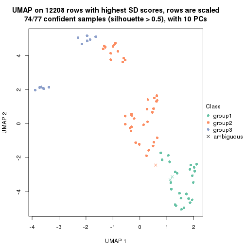
dimension_reduction(res, k = 4, method = "UMAP")
dimension_reduction(res, k = 5, method = "UMAP")
dimension_reduction(res, k = 6, method = "UMAP")
Following heatmap shows how subgroups are split when increasing k:
collect_classes(res)
If matrix rows can be associated to genes, consider to use functional_enrichment(res,
...) to perform function enrichment for the signature genes. See this vignette for more detailed explanations.
The object with results only for a single top-value method and a single partition method can be extracted as:
res = res_list["SD", "kmeans"]
# you can also extract it by
# res = res_list["SD:kmeans"]
A summary of res and all the functions that can be applied to it:
res
#> A 'ConsensusPartition' object with k = 2, 3, 4, 5, 6.
#> On a matrix with 12208 rows and 77 columns.
#> Top rows (1000, 2000, 3000, 4000, 5000) are extracted by 'SD' method.
#> Subgroups are detected by 'kmeans' method.
#> Performed in total 1250 partitions by row resampling.
#> Best k for subgroups seems to be 3.
#>
#> Following methods can be applied to this 'ConsensusPartition' object:
#> [1] "cola_report" "collect_classes" "collect_plots"
#> [4] "collect_stats" "colnames" "compare_signatures"
#> [7] "consensus_heatmap" "dimension_reduction" "functional_enrichment"
#> [10] "get_anno_col" "get_anno" "get_classes"
#> [13] "get_consensus" "get_matrix" "get_membership"
#> [16] "get_param" "get_signatures" "get_stats"
#> [19] "is_best_k" "is_stable_k" "membership_heatmap"
#> [22] "ncol" "nrow" "plot_ecdf"
#> [25] "rownames" "select_partition_number" "show"
#> [28] "suggest_best_k" "test_to_known_factors"
collect_plots() function collects all the plots made from res for all k (number of partitions)
into one single page to provide an easy and fast comparison between different k.
collect_plots(res)
The plots are:
k and the heatmap of
predicted classes for each k.k.k.k.All the plots in panels can be made by individual functions and they are plotted later in this section.
select_partition_number() produces several plots showing different
statistics for choosing “optimized” k. There are following statistics:
k;k, the area increased is defined as \(A_k - A_{k-1}\).The detailed explanations of these statistics can be found in the cola vignette.
Generally speaking, lower PAC score, higher mean silhouette score or higher
concordance corresponds to better partition. Rand index and Jaccard index
measure how similar the current partition is compared to partition with k-1.
If they are too similar, we won't accept k is better than k-1.
select_partition_number(res)
The numeric values for all these statistics can be obtained by get_stats().
get_stats(res)
#> k 1-PAC mean_silhouette concordance area_increased Rand Jaccard
#> 2 2 0.445 0.860 0.898 0.3619 0.699 0.699
#> 3 3 0.912 0.902 0.957 0.7429 0.663 0.518
#> 4 4 0.712 0.689 0.767 0.1335 0.811 0.544
#> 5 5 0.705 0.595 0.731 0.0809 0.895 0.680
#> 6 6 0.786 0.599 0.802 0.0513 0.839 0.494
suggest_best_k() suggests the best \(k\) based on these statistics. The rules are as follows:
suggest_best_k(res)
#> [1] 3
Following shows the table of the partitions (You need to click the show/hide
code output link to see it). The membership matrix (columns with name p*)
is inferred by
clue::cl_consensus()
function with the SE method. Basically the value in the membership matrix
represents the probability to belong to a certain group. The finall class
label for an item is determined with the group with highest probability it
belongs to.
In get_classes() function, the entropy is calculated from the membership
matrix and the silhouette score is calculated from the consensus matrix.
cbind(get_classes(res, k = 2), get_membership(res, k = 2))
#> class entropy silhouette p1 p2
#> SRR2044063 1 0.0000 0.863 1.000 0.000
#> SRR2044062 1 0.0000 0.863 1.000 0.000
#> SRR2044061 1 0.0000 0.863 1.000 0.000
#> SRR2044060 1 0.0000 0.863 1.000 0.000
#> SRR2044099 1 0.7376 0.831 0.792 0.208
#> SRR2044098 1 0.1843 0.863 0.972 0.028
#> SRR2044097 1 0.6973 0.838 0.812 0.188
#> SRR2044096 1 0.7453 0.829 0.788 0.212
#> SRR2044095 1 0.1843 0.863 0.972 0.028
#> SRR2044094 1 0.6973 0.838 0.812 0.188
#> SRR2044087 1 0.0000 0.863 1.000 0.000
#> SRR2044086 1 0.0000 0.863 1.000 0.000
#> SRR2044085 1 0.0376 0.862 0.996 0.004
#> SRR2044084 1 0.0000 0.863 1.000 0.000
#> SRR2044083 1 0.0000 0.863 1.000 0.000
#> SRR2044082 1 0.0000 0.863 1.000 0.000
#> SRR2044075 1 0.0000 0.863 1.000 0.000
#> SRR2044074 1 0.0000 0.863 1.000 0.000
#> SRR2044073 1 0.0000 0.863 1.000 0.000
#> SRR2044072 1 0.0000 0.863 1.000 0.000
#> SRR2044071 1 0.0000 0.863 1.000 0.000
#> SRR2044070 1 0.0000 0.863 1.000 0.000
#> SRR2044069 2 0.0000 0.981 0.000 1.000
#> SRR2044068 2 0.0000 0.981 0.000 1.000
#> SRR2044067 2 0.0000 0.981 0.000 1.000
#> SRR2044066 2 0.0000 0.981 0.000 1.000
#> SRR2044065 2 0.0000 0.981 0.000 1.000
#> SRR2044064 2 0.0000 0.981 0.000 1.000
#> SRR2044059 1 0.0000 0.863 1.000 0.000
#> SRR2044058 1 0.0000 0.863 1.000 0.000
#> SRR2044057 1 0.7453 0.829 0.788 0.212
#> SRR2044056 1 0.7453 0.829 0.788 0.212
#> SRR2044055 1 0.7453 0.829 0.788 0.212
#> SRR2044054 1 0.7453 0.829 0.788 0.212
#> SRR2044053 1 0.7453 0.829 0.788 0.212
#> SRR2044052 1 0.7453 0.829 0.788 0.212
#> SRR2044051 1 0.2603 0.849 0.956 0.044
#> SRR2044050 1 0.2423 0.850 0.960 0.040
#> SRR2044049 1 0.2423 0.850 0.960 0.040
#> SRR2044048 1 0.2603 0.849 0.956 0.044
#> SRR2044047 1 0.2423 0.850 0.960 0.040
#> SRR2044046 1 0.2423 0.850 0.960 0.040
#> SRR2044045 1 0.7453 0.829 0.788 0.212
#> SRR2044044 1 0.7056 0.837 0.808 0.192
#> SRR2044042 1 0.7453 0.829 0.788 0.212
#> SRR2044041 1 0.7056 0.837 0.808 0.192
#> SRR2044040 1 0.7453 0.829 0.788 0.212
#> SRR2044039 1 0.6712 0.764 0.824 0.176
#> SRR2044038 1 0.5408 0.796 0.876 0.124
#> SRR2044037 1 0.5408 0.796 0.876 0.124
#> SRR2044036 1 0.6712 0.764 0.824 0.176
#> SRR2044035 1 0.5408 0.796 0.876 0.124
#> SRR2044034 1 0.5408 0.796 0.876 0.124
#> SRR2044033 1 0.7453 0.829 0.788 0.212
#> SRR2044032 1 0.7056 0.837 0.808 0.192
#> SRR2044031 1 0.7453 0.829 0.788 0.212
#> SRR2044030 1 0.7453 0.829 0.788 0.212
#> SRR2044029 1 0.7056 0.837 0.808 0.192
#> SRR2044028 1 0.7453 0.829 0.788 0.212
#> SRR2044027 2 0.4562 0.889 0.096 0.904
#> SRR2044026 1 0.5408 0.796 0.876 0.124
#> SRR2044024 2 0.4562 0.889 0.096 0.904
#> SRR2044023 1 0.5408 0.796 0.876 0.124
#> SRR2044025 1 0.5946 0.780 0.856 0.144
#> SRR2044022 1 0.5946 0.780 0.856 0.144
#> SRR2044021 1 0.7453 0.829 0.788 0.212
#> SRR2044020 1 0.6973 0.838 0.812 0.188
#> SRR2044019 1 0.7453 0.829 0.788 0.212
#> SRR2044018 1 0.7453 0.829 0.788 0.212
#> SRR2044017 1 0.6973 0.838 0.812 0.188
#> SRR2044016 1 0.7453 0.829 0.788 0.212
#> SRR2044015 2 0.0376 0.981 0.004 0.996
#> SRR2044014 2 0.0376 0.981 0.004 0.996
#> SRR2044013 2 0.0376 0.981 0.004 0.996
#> SRR2044011 2 0.0376 0.981 0.004 0.996
#> SRR2044010 2 0.0376 0.981 0.004 0.996
#> SRR2044012 2 0.0376 0.981 0.004 0.996
cbind(get_classes(res, k = 3), get_membership(res, k = 3))
#> class entropy silhouette p1 p2 p3
#> SRR2044063 2 0.0237 0.923 0.004 0.996 0.000
#> SRR2044062 2 0.0237 0.923 0.004 0.996 0.000
#> SRR2044061 2 0.0237 0.923 0.004 0.996 0.000
#> SRR2044060 2 0.0237 0.923 0.004 0.996 0.000
#> SRR2044099 1 0.0747 0.989 0.984 0.016 0.000
#> SRR2044098 1 0.0892 0.985 0.980 0.020 0.000
#> SRR2044097 1 0.0747 0.989 0.984 0.016 0.000
#> SRR2044096 1 0.0747 0.989 0.984 0.016 0.000
#> SRR2044095 1 0.0892 0.985 0.980 0.020 0.000
#> SRR2044094 1 0.0747 0.989 0.984 0.016 0.000
#> SRR2044087 2 0.5882 0.524 0.348 0.652 0.000
#> SRR2044086 2 0.4452 0.742 0.192 0.808 0.000
#> SRR2044085 2 0.6299 0.182 0.476 0.524 0.000
#> SRR2044084 2 0.5859 0.533 0.344 0.656 0.000
#> SRR2044083 2 0.4654 0.725 0.208 0.792 0.000
#> SRR2044082 2 0.5859 0.533 0.344 0.656 0.000
#> SRR2044075 2 0.0237 0.923 0.004 0.996 0.000
#> SRR2044074 2 0.0424 0.921 0.008 0.992 0.000
#> SRR2044073 2 0.0424 0.921 0.008 0.992 0.000
#> SRR2044072 2 0.0237 0.923 0.004 0.996 0.000
#> SRR2044071 2 0.0424 0.921 0.008 0.992 0.000
#> SRR2044070 2 0.0424 0.921 0.008 0.992 0.000
#> SRR2044069 3 0.0424 0.927 0.008 0.000 0.992
#> SRR2044068 3 0.0424 0.927 0.008 0.000 0.992
#> SRR2044067 3 0.0424 0.927 0.008 0.000 0.992
#> SRR2044066 3 0.0424 0.927 0.008 0.000 0.992
#> SRR2044065 3 0.0424 0.927 0.008 0.000 0.992
#> SRR2044064 3 0.0424 0.927 0.008 0.000 0.992
#> SRR2044059 2 0.0237 0.923 0.004 0.996 0.000
#> SRR2044058 2 0.0237 0.923 0.004 0.996 0.000
#> SRR2044057 1 0.0237 0.987 0.996 0.000 0.004
#> SRR2044056 1 0.0237 0.987 0.996 0.000 0.004
#> SRR2044055 1 0.0592 0.989 0.988 0.012 0.000
#> SRR2044054 1 0.0237 0.987 0.996 0.000 0.004
#> SRR2044053 1 0.0237 0.987 0.996 0.000 0.004
#> SRR2044052 1 0.0000 0.987 1.000 0.000 0.000
#> SRR2044051 2 0.0237 0.921 0.000 0.996 0.004
#> SRR2044050 2 0.0237 0.923 0.004 0.996 0.000
#> SRR2044049 2 0.0237 0.923 0.004 0.996 0.000
#> SRR2044048 2 0.0237 0.921 0.000 0.996 0.004
#> SRR2044047 2 0.0237 0.923 0.004 0.996 0.000
#> SRR2044046 2 0.0237 0.923 0.004 0.996 0.000
#> SRR2044045 1 0.0237 0.987 0.996 0.000 0.004
#> SRR2044044 1 0.0237 0.987 0.996 0.000 0.004
#> SRR2044042 1 0.0237 0.987 0.996 0.000 0.004
#> SRR2044041 1 0.0237 0.987 0.996 0.000 0.004
#> SRR2044040 1 0.0747 0.989 0.984 0.016 0.000
#> SRR2044039 2 0.0424 0.917 0.000 0.992 0.008
#> SRR2044038 2 0.0000 0.922 0.000 1.000 0.000
#> SRR2044037 2 0.0000 0.922 0.000 1.000 0.000
#> SRR2044036 2 0.0424 0.917 0.000 0.992 0.008
#> SRR2044035 2 0.0000 0.922 0.000 1.000 0.000
#> SRR2044034 2 0.0000 0.922 0.000 1.000 0.000
#> SRR2044033 1 0.0237 0.987 0.996 0.000 0.004
#> SRR2044032 1 0.0237 0.987 0.996 0.000 0.004
#> SRR2044031 1 0.0747 0.989 0.984 0.016 0.000
#> SRR2044030 1 0.0237 0.987 0.996 0.000 0.004
#> SRR2044029 1 0.0237 0.987 0.996 0.000 0.004
#> SRR2044028 1 0.0747 0.989 0.984 0.016 0.000
#> SRR2044027 3 0.6451 0.323 0.004 0.436 0.560
#> SRR2044026 2 0.0000 0.922 0.000 1.000 0.000
#> SRR2044024 3 0.6451 0.323 0.004 0.436 0.560
#> SRR2044023 2 0.0000 0.922 0.000 1.000 0.000
#> SRR2044025 2 0.0000 0.922 0.000 1.000 0.000
#> SRR2044022 2 0.0000 0.922 0.000 1.000 0.000
#> SRR2044021 1 0.0747 0.989 0.984 0.016 0.000
#> SRR2044020 1 0.0747 0.989 0.984 0.016 0.000
#> SRR2044019 1 0.0747 0.989 0.984 0.016 0.000
#> SRR2044018 1 0.0747 0.989 0.984 0.016 0.000
#> SRR2044017 1 0.0747 0.989 0.984 0.016 0.000
#> SRR2044016 1 0.0747 0.989 0.984 0.016 0.000
#> SRR2044015 3 0.0661 0.928 0.004 0.008 0.988
#> SRR2044014 3 0.0829 0.927 0.004 0.012 0.984
#> SRR2044013 3 0.0829 0.927 0.004 0.012 0.984
#> SRR2044011 3 0.0829 0.927 0.004 0.012 0.984
#> SRR2044010 3 0.0829 0.927 0.004 0.012 0.984
#> SRR2044012 3 0.0661 0.928 0.004 0.008 0.988
cbind(get_classes(res, k = 4), get_membership(res, k = 4))
#> class entropy silhouette p1 p2 p3 p4
#> SRR2044063 4 0.3074 0.7517 0.000 0.152 0.000 0.848
#> SRR2044062 4 0.3583 0.7449 0.004 0.180 0.000 0.816
#> SRR2044061 4 0.3583 0.7449 0.004 0.180 0.000 0.816
#> SRR2044060 4 0.3074 0.7517 0.000 0.152 0.000 0.848
#> SRR2044099 2 0.4985 0.6588 0.468 0.532 0.000 0.000
#> SRR2044098 2 0.5229 0.6284 0.428 0.564 0.000 0.008
#> SRR2044097 2 0.4977 0.6582 0.460 0.540 0.000 0.000
#> SRR2044096 2 0.4985 0.6588 0.468 0.532 0.000 0.000
#> SRR2044095 2 0.5099 0.5916 0.380 0.612 0.000 0.008
#> SRR2044094 2 0.4977 0.6582 0.460 0.540 0.000 0.000
#> SRR2044087 2 0.5300 0.4171 0.028 0.664 0.000 0.308
#> SRR2044086 2 0.4877 0.3737 0.008 0.664 0.000 0.328
#> SRR2044085 2 0.5300 0.4171 0.028 0.664 0.000 0.308
#> SRR2044084 2 0.5300 0.4171 0.028 0.664 0.000 0.308
#> SRR2044083 2 0.4877 0.3737 0.008 0.664 0.000 0.328
#> SRR2044082 2 0.5300 0.4171 0.028 0.664 0.000 0.308
#> SRR2044075 4 0.3710 0.7391 0.004 0.192 0.000 0.804
#> SRR2044074 4 0.3908 0.7223 0.004 0.212 0.000 0.784
#> SRR2044073 4 0.3908 0.7223 0.004 0.212 0.000 0.784
#> SRR2044072 4 0.3710 0.7391 0.004 0.192 0.000 0.804
#> SRR2044071 4 0.3908 0.7223 0.004 0.212 0.000 0.784
#> SRR2044070 4 0.3908 0.7223 0.004 0.212 0.000 0.784
#> SRR2044069 3 0.0188 0.8647 0.000 0.004 0.996 0.000
#> SRR2044068 3 0.0188 0.8647 0.000 0.004 0.996 0.000
#> SRR2044067 3 0.0188 0.8647 0.000 0.004 0.996 0.000
#> SRR2044066 3 0.0188 0.8647 0.000 0.004 0.996 0.000
#> SRR2044065 3 0.0188 0.8647 0.000 0.004 0.996 0.000
#> SRR2044064 3 0.0188 0.8647 0.000 0.004 0.996 0.000
#> SRR2044059 4 0.3583 0.7449 0.004 0.180 0.000 0.816
#> SRR2044058 4 0.3583 0.7449 0.004 0.180 0.000 0.816
#> SRR2044057 1 0.0000 0.8933 1.000 0.000 0.000 0.000
#> SRR2044056 1 0.0000 0.8933 1.000 0.000 0.000 0.000
#> SRR2044055 2 0.4985 0.6588 0.468 0.532 0.000 0.000
#> SRR2044054 1 0.0000 0.8933 1.000 0.000 0.000 0.000
#> SRR2044053 1 0.0000 0.8933 1.000 0.000 0.000 0.000
#> SRR2044052 2 0.4996 0.6246 0.484 0.516 0.000 0.000
#> SRR2044051 4 0.1867 0.7481 0.000 0.072 0.000 0.928
#> SRR2044050 4 0.0592 0.7646 0.000 0.016 0.000 0.984
#> SRR2044049 4 0.0592 0.7646 0.000 0.016 0.000 0.984
#> SRR2044048 4 0.1474 0.7520 0.000 0.052 0.000 0.948
#> SRR2044047 4 0.0592 0.7646 0.000 0.016 0.000 0.984
#> SRR2044046 4 0.0592 0.7646 0.000 0.016 0.000 0.984
#> SRR2044045 1 0.0000 0.8933 1.000 0.000 0.000 0.000
#> SRR2044044 1 0.0000 0.8933 1.000 0.000 0.000 0.000
#> SRR2044042 1 0.0000 0.8933 1.000 0.000 0.000 0.000
#> SRR2044041 1 0.0000 0.8933 1.000 0.000 0.000 0.000
#> SRR2044040 2 0.4985 0.6588 0.468 0.532 0.000 0.000
#> SRR2044039 4 0.4535 0.6385 0.000 0.292 0.004 0.704
#> SRR2044038 4 0.4053 0.6914 0.000 0.228 0.004 0.768
#> SRR2044037 4 0.4053 0.6914 0.000 0.228 0.004 0.768
#> SRR2044036 4 0.4535 0.6385 0.000 0.292 0.004 0.704
#> SRR2044035 4 0.4053 0.6914 0.000 0.228 0.004 0.768
#> SRR2044034 4 0.4053 0.6914 0.000 0.228 0.004 0.768
#> SRR2044033 1 0.0000 0.8933 1.000 0.000 0.000 0.000
#> SRR2044032 1 0.4605 -0.0271 0.664 0.336 0.000 0.000
#> SRR2044031 2 0.4985 0.6588 0.468 0.532 0.000 0.000
#> SRR2044030 1 0.0000 0.8933 1.000 0.000 0.000 0.000
#> SRR2044029 1 0.4605 -0.0271 0.664 0.336 0.000 0.000
#> SRR2044028 2 0.4985 0.6588 0.468 0.532 0.000 0.000
#> SRR2044027 4 0.7646 0.1768 0.000 0.292 0.244 0.464
#> SRR2044026 4 0.4088 0.6887 0.000 0.232 0.004 0.764
#> SRR2044024 4 0.7646 0.1768 0.000 0.292 0.244 0.464
#> SRR2044023 4 0.4088 0.6887 0.000 0.232 0.004 0.764
#> SRR2044025 4 0.4509 0.6420 0.000 0.288 0.004 0.708
#> SRR2044022 4 0.4509 0.6420 0.000 0.288 0.004 0.708
#> SRR2044021 2 0.4985 0.6588 0.468 0.532 0.000 0.000
#> SRR2044020 2 0.5161 0.6497 0.476 0.520 0.000 0.004
#> SRR2044019 2 0.4985 0.6588 0.468 0.532 0.000 0.000
#> SRR2044018 2 0.4985 0.6588 0.468 0.532 0.000 0.000
#> SRR2044017 2 0.5161 0.6497 0.476 0.520 0.000 0.004
#> SRR2044016 2 0.4985 0.6588 0.468 0.532 0.000 0.000
#> SRR2044015 3 0.4098 0.8564 0.000 0.204 0.784 0.012
#> SRR2044014 3 0.5198 0.8280 0.000 0.252 0.708 0.040
#> SRR2044013 3 0.5198 0.8280 0.000 0.252 0.708 0.040
#> SRR2044011 3 0.5198 0.8280 0.000 0.252 0.708 0.040
#> SRR2044010 3 0.5198 0.8280 0.000 0.252 0.708 0.040
#> SRR2044012 3 0.4098 0.8564 0.000 0.204 0.784 0.012
cbind(get_classes(res, k = 5), get_membership(res, k = 5))
#> class entropy silhouette p1 p2 p3 p4 p5
#> SRR2044063 2 0.3508 0.6281 0.000 0.748 0.000 NA 0.000
#> SRR2044062 2 0.3707 0.6313 0.000 0.716 0.000 NA 0.000
#> SRR2044061 2 0.3707 0.6313 0.000 0.716 0.000 NA 0.000
#> SRR2044060 2 0.3508 0.6281 0.000 0.748 0.000 NA 0.000
#> SRR2044099 1 0.0000 0.8225 1.000 0.000 0.000 NA 0.000
#> SRR2044098 1 0.1571 0.7948 0.936 0.004 0.000 NA 0.000
#> SRR2044097 1 0.0510 0.8202 0.984 0.000 0.000 NA 0.000
#> SRR2044096 1 0.0000 0.8225 1.000 0.000 0.000 NA 0.000
#> SRR2044095 1 0.2006 0.7800 0.916 0.012 0.000 NA 0.000
#> SRR2044094 1 0.0510 0.8202 0.984 0.000 0.000 NA 0.000
#> SRR2044087 1 0.5921 0.4251 0.568 0.136 0.000 NA 0.000
#> SRR2044086 2 0.6668 0.2973 0.264 0.440 0.000 NA 0.000
#> SRR2044085 1 0.5810 0.4451 0.580 0.124 0.000 NA 0.000
#> SRR2044084 1 0.5921 0.4251 0.568 0.136 0.000 NA 0.000
#> SRR2044083 2 0.6692 0.2820 0.272 0.432 0.000 NA 0.000
#> SRR2044082 1 0.5810 0.4451 0.580 0.124 0.000 NA 0.000
#> SRR2044075 2 0.3774 0.6304 0.000 0.704 0.000 NA 0.000
#> SRR2044074 2 0.3774 0.6304 0.000 0.704 0.000 NA 0.000
#> SRR2044073 2 0.3774 0.6304 0.000 0.704 0.000 NA 0.000
#> SRR2044072 2 0.3774 0.6304 0.000 0.704 0.000 NA 0.000
#> SRR2044071 2 0.3774 0.6304 0.000 0.704 0.000 NA 0.000
#> SRR2044070 2 0.3774 0.6304 0.000 0.704 0.000 NA 0.000
#> SRR2044069 3 0.5513 0.5887 0.000 0.000 0.524 NA 0.068
#> SRR2044068 3 0.5467 0.5887 0.000 0.000 0.524 NA 0.064
#> SRR2044067 3 0.5513 0.5887 0.000 0.000 0.524 NA 0.068
#> SRR2044066 3 0.5467 0.5887 0.000 0.000 0.524 NA 0.064
#> SRR2044065 3 0.5513 0.5887 0.000 0.000 0.524 NA 0.068
#> SRR2044064 3 0.5467 0.5887 0.000 0.000 0.524 NA 0.064
#> SRR2044059 2 0.3707 0.6313 0.000 0.716 0.000 NA 0.000
#> SRR2044058 2 0.3707 0.6313 0.000 0.716 0.000 NA 0.000
#> SRR2044057 5 0.3690 0.9778 0.200 0.000 0.000 NA 0.780
#> SRR2044056 5 0.3690 0.9787 0.200 0.000 0.000 NA 0.780
#> SRR2044055 1 0.1341 0.8122 0.944 0.000 0.000 NA 0.000
#> SRR2044054 5 0.3690 0.9778 0.200 0.000 0.000 NA 0.780
#> SRR2044053 5 0.3690 0.9787 0.200 0.000 0.000 NA 0.780
#> SRR2044052 1 0.1502 0.8112 0.940 0.000 0.000 NA 0.004
#> SRR2044051 2 0.3888 0.4702 0.000 0.804 0.000 NA 0.120
#> SRR2044050 2 0.0609 0.5642 0.000 0.980 0.000 NA 0.020
#> SRR2044049 2 0.0609 0.5642 0.000 0.980 0.000 NA 0.020
#> SRR2044048 2 0.3215 0.5033 0.000 0.852 0.000 NA 0.092
#> SRR2044047 2 0.0609 0.5642 0.000 0.980 0.000 NA 0.020
#> SRR2044046 2 0.0609 0.5642 0.000 0.980 0.000 NA 0.020
#> SRR2044045 5 0.3690 0.9778 0.200 0.000 0.000 NA 0.780
#> SRR2044044 5 0.4021 0.9753 0.200 0.000 0.000 NA 0.764
#> SRR2044042 5 0.3690 0.9778 0.200 0.000 0.000 NA 0.780
#> SRR2044041 5 0.4021 0.9753 0.200 0.000 0.000 NA 0.764
#> SRR2044040 1 0.1341 0.8122 0.944 0.000 0.000 NA 0.000
#> SRR2044039 3 0.7342 -0.0427 0.004 0.400 0.412 NA 0.060
#> SRR2044038 2 0.7140 0.1423 0.004 0.508 0.308 NA 0.056
#> SRR2044037 2 0.7140 0.1423 0.004 0.508 0.308 NA 0.056
#> SRR2044036 3 0.7342 -0.0427 0.004 0.400 0.412 NA 0.060
#> SRR2044035 2 0.7140 0.1423 0.004 0.508 0.308 NA 0.056
#> SRR2044034 2 0.7140 0.1423 0.004 0.508 0.308 NA 0.056
#> SRR2044033 5 0.3690 0.9789 0.200 0.000 0.000 NA 0.780
#> SRR2044032 1 0.4503 0.3605 0.696 0.000 0.000 NA 0.268
#> SRR2044031 1 0.1197 0.8158 0.952 0.000 0.000 NA 0.000
#> SRR2044030 5 0.3690 0.9789 0.200 0.000 0.000 NA 0.780
#> SRR2044029 1 0.4503 0.3605 0.696 0.000 0.000 NA 0.268
#> SRR2044028 1 0.1197 0.8158 0.952 0.000 0.000 NA 0.000
#> SRR2044027 3 0.7111 0.2105 0.004 0.284 0.528 NA 0.060
#> SRR2044026 2 0.7239 0.1105 0.004 0.488 0.324 NA 0.060
#> SRR2044024 3 0.7111 0.2105 0.004 0.284 0.528 NA 0.060
#> SRR2044023 2 0.7239 0.1105 0.004 0.488 0.324 NA 0.060
#> SRR2044025 2 0.7337 -0.0191 0.004 0.424 0.388 NA 0.060
#> SRR2044022 2 0.7337 -0.0191 0.004 0.424 0.388 NA 0.060
#> SRR2044021 1 0.0000 0.8225 1.000 0.000 0.000 NA 0.000
#> SRR2044020 1 0.0162 0.8214 0.996 0.000 0.000 NA 0.004
#> SRR2044019 1 0.1197 0.8158 0.952 0.000 0.000 NA 0.000
#> SRR2044018 1 0.0000 0.8225 1.000 0.000 0.000 NA 0.000
#> SRR2044017 1 0.0162 0.8214 0.996 0.000 0.000 NA 0.004
#> SRR2044016 1 0.1197 0.8158 0.952 0.000 0.000 NA 0.000
#> SRR2044015 3 0.2818 0.6365 0.000 0.000 0.856 NA 0.012
#> SRR2044014 3 0.0162 0.6229 0.004 0.000 0.996 NA 0.000
#> SRR2044013 3 0.0162 0.6229 0.004 0.000 0.996 NA 0.000
#> SRR2044011 3 0.0162 0.6229 0.004 0.000 0.996 NA 0.000
#> SRR2044010 3 0.0162 0.6229 0.004 0.000 0.996 NA 0.000
#> SRR2044012 3 0.2818 0.6365 0.000 0.000 0.856 NA 0.012
cbind(get_classes(res, k = 6), get_membership(res, k = 6))
#> class entropy silhouette p1 p2 p3 p4 p5 p6
#> SRR2044063 2 0.2996 0.113 0.000 0.772 0.000 0.000 0.000 0.228
#> SRR2044062 2 0.1204 0.468 0.000 0.944 0.000 0.000 0.000 0.056
#> SRR2044061 2 0.1204 0.468 0.000 0.944 0.000 0.000 0.000 0.056
#> SRR2044060 2 0.2969 0.125 0.000 0.776 0.000 0.000 0.000 0.224
#> SRR2044099 1 0.0291 0.853 0.992 0.000 0.000 0.004 0.000 0.004
#> SRR2044098 1 0.2822 0.789 0.852 0.040 0.000 0.000 0.000 0.108
#> SRR2044097 1 0.1341 0.851 0.948 0.024 0.000 0.000 0.000 0.028
#> SRR2044096 1 0.0291 0.853 0.992 0.000 0.000 0.004 0.000 0.004
#> SRR2044095 1 0.2889 0.785 0.848 0.044 0.000 0.000 0.000 0.108
#> SRR2044094 1 0.1341 0.851 0.948 0.024 0.000 0.000 0.000 0.028
#> SRR2044087 2 0.5290 0.250 0.380 0.524 0.000 0.004 0.000 0.092
#> SRR2044086 2 0.4513 0.406 0.212 0.692 0.000 0.000 0.000 0.096
#> SRR2044085 2 0.5205 0.173 0.412 0.496 0.000 0.000 0.000 0.092
#> SRR2044084 2 0.5275 0.265 0.372 0.532 0.000 0.004 0.000 0.092
#> SRR2044083 2 0.4513 0.406 0.212 0.692 0.000 0.000 0.000 0.096
#> SRR2044082 2 0.5191 0.207 0.400 0.508 0.000 0.000 0.000 0.092
#> SRR2044075 2 0.0000 0.509 0.000 1.000 0.000 0.000 0.000 0.000
#> SRR2044074 2 0.0000 0.509 0.000 1.000 0.000 0.000 0.000 0.000
#> SRR2044073 2 0.0000 0.509 0.000 1.000 0.000 0.000 0.000 0.000
#> SRR2044072 2 0.0000 0.509 0.000 1.000 0.000 0.000 0.000 0.000
#> SRR2044071 2 0.0000 0.509 0.000 1.000 0.000 0.000 0.000 0.000
#> SRR2044070 2 0.0000 0.509 0.000 1.000 0.000 0.000 0.000 0.000
#> SRR2044069 3 0.0363 0.857 0.000 0.000 0.988 0.000 0.000 0.012
#> SRR2044068 3 0.0508 0.856 0.000 0.000 0.984 0.000 0.004 0.012
#> SRR2044067 3 0.0146 0.857 0.000 0.000 0.996 0.000 0.000 0.004
#> SRR2044066 3 0.0146 0.857 0.000 0.000 0.996 0.000 0.004 0.000
#> SRR2044065 3 0.0363 0.857 0.000 0.000 0.988 0.000 0.000 0.012
#> SRR2044064 3 0.0146 0.857 0.000 0.000 0.996 0.000 0.004 0.000
#> SRR2044059 2 0.0713 0.491 0.000 0.972 0.000 0.000 0.000 0.028
#> SRR2044058 2 0.1204 0.468 0.000 0.944 0.000 0.000 0.000 0.056
#> SRR2044057 5 0.1882 0.953 0.060 0.000 0.000 0.008 0.920 0.012
#> SRR2044056 5 0.2146 0.954 0.060 0.000 0.000 0.008 0.908 0.024
#> SRR2044055 1 0.3043 0.803 0.792 0.000 0.000 0.008 0.000 0.200
#> SRR2044054 5 0.1882 0.953 0.060 0.000 0.000 0.008 0.920 0.012
#> SRR2044053 5 0.2146 0.954 0.060 0.000 0.000 0.008 0.908 0.024
#> SRR2044052 1 0.3073 0.801 0.788 0.000 0.000 0.008 0.000 0.204
#> SRR2044051 6 0.5979 0.961 0.000 0.392 0.000 0.156 0.012 0.440
#> SRR2044050 2 0.5461 -0.730 0.000 0.520 0.000 0.136 0.000 0.344
#> SRR2044049 2 0.5461 -0.730 0.000 0.520 0.000 0.136 0.000 0.344
#> SRR2044048 6 0.5967 0.960 0.000 0.408 0.000 0.140 0.016 0.436
#> SRR2044047 2 0.5461 -0.730 0.000 0.520 0.000 0.136 0.000 0.344
#> SRR2044046 2 0.5461 -0.730 0.000 0.520 0.000 0.136 0.000 0.344
#> SRR2044045 5 0.1863 0.953 0.060 0.000 0.000 0.004 0.920 0.016
#> SRR2044044 5 0.3389 0.931 0.060 0.000 0.000 0.008 0.824 0.108
#> SRR2044042 5 0.1863 0.953 0.060 0.000 0.000 0.004 0.920 0.016
#> SRR2044041 5 0.3389 0.931 0.060 0.000 0.000 0.008 0.824 0.108
#> SRR2044040 1 0.2848 0.814 0.816 0.000 0.000 0.008 0.000 0.176
#> SRR2044039 4 0.0865 0.764 0.000 0.036 0.000 0.964 0.000 0.000
#> SRR2044038 4 0.3068 0.740 0.000 0.088 0.000 0.840 0.000 0.072
#> SRR2044037 4 0.3068 0.740 0.000 0.088 0.000 0.840 0.000 0.072
#> SRR2044036 4 0.0865 0.764 0.000 0.036 0.000 0.964 0.000 0.000
#> SRR2044035 4 0.3068 0.740 0.000 0.088 0.000 0.840 0.000 0.072
#> SRR2044034 4 0.3068 0.740 0.000 0.088 0.000 0.840 0.000 0.072
#> SRR2044033 5 0.2685 0.947 0.060 0.000 0.000 0.000 0.868 0.072
#> SRR2044032 1 0.5690 0.298 0.536 0.000 0.000 0.004 0.284 0.176
#> SRR2044031 1 0.2135 0.838 0.872 0.000 0.000 0.000 0.000 0.128
#> SRR2044030 5 0.2740 0.945 0.060 0.000 0.000 0.000 0.864 0.076
#> SRR2044029 1 0.5690 0.298 0.536 0.000 0.000 0.004 0.284 0.176
#> SRR2044028 1 0.2135 0.838 0.872 0.000 0.000 0.000 0.000 0.128
#> SRR2044027 4 0.1562 0.744 0.000 0.004 0.032 0.940 0.000 0.024
#> SRR2044026 4 0.3020 0.744 0.000 0.076 0.000 0.844 0.000 0.080
#> SRR2044024 4 0.1562 0.744 0.000 0.004 0.032 0.940 0.000 0.024
#> SRR2044023 4 0.3020 0.744 0.000 0.076 0.000 0.844 0.000 0.080
#> SRR2044025 4 0.2294 0.763 0.000 0.036 0.000 0.892 0.000 0.072
#> SRR2044022 4 0.2294 0.763 0.000 0.036 0.000 0.892 0.000 0.072
#> SRR2044021 1 0.0291 0.853 0.992 0.000 0.000 0.004 0.000 0.004
#> SRR2044020 1 0.2260 0.805 0.860 0.000 0.000 0.000 0.000 0.140
#> SRR2044019 1 0.2135 0.838 0.872 0.000 0.000 0.000 0.000 0.128
#> SRR2044018 1 0.0291 0.853 0.992 0.000 0.000 0.004 0.000 0.004
#> SRR2044017 1 0.2260 0.805 0.860 0.000 0.000 0.000 0.000 0.140
#> SRR2044016 1 0.2135 0.838 0.872 0.000 0.000 0.000 0.000 0.128
#> SRR2044015 3 0.5918 0.372 0.000 0.000 0.532 0.328 0.040 0.100
#> SRR2044014 4 0.5766 0.303 0.000 0.000 0.288 0.572 0.036 0.104
#> SRR2044013 4 0.5766 0.303 0.000 0.000 0.288 0.572 0.036 0.104
#> SRR2044011 4 0.5766 0.303 0.000 0.000 0.288 0.572 0.036 0.104
#> SRR2044010 4 0.5766 0.303 0.000 0.000 0.288 0.572 0.036 0.104
#> SRR2044012 3 0.5918 0.372 0.000 0.000 0.532 0.328 0.040 0.100
Heatmaps for the consensus matrix. It visualizes the probability of two samples to be in a same group.
consensus_heatmap(res, k = 2)
consensus_heatmap(res, k = 3)
consensus_heatmap(res, k = 4)

consensus_heatmap(res, k = 5)
consensus_heatmap(res, k = 6)
Heatmaps for the membership of samples in all partitions to see how consistent they are:
membership_heatmap(res, k = 2)
membership_heatmap(res, k = 3)
membership_heatmap(res, k = 4)
membership_heatmap(res, k = 5)
membership_heatmap(res, k = 6)
As soon as we have had the classes for columns, we can look for signatures which are significantly different between classes which can be candidate marks for certain classes. Following are the heatmaps for signatures.
Signature heatmaps where rows are scaled:
get_signatures(res, k = 2)
get_signatures(res, k = 3)
get_signatures(res, k = 4)
get_signatures(res, k = 5)
get_signatures(res, k = 6)
Signature heatmaps where rows are not scaled:
get_signatures(res, k = 2, scale_rows = FALSE)
get_signatures(res, k = 3, scale_rows = FALSE)
get_signatures(res, k = 4, scale_rows = FALSE)
get_signatures(res, k = 5, scale_rows = FALSE)
get_signatures(res, k = 6, scale_rows = FALSE)
Compare the overlap of signatures from different k:
compare_signatures(res)
get_signature() returns a data frame invisibly. TO get the list of signatures, the function
call should be assigned to a variable explicitly. In following code, if plot argument is set
to FALSE, no heatmap is plotted while only the differential analysis is performed.
# code only for demonstration
tb = get_signature(res, k = ..., plot = FALSE)
An example of the output of tb is:
#> which_row fdr mean_1 mean_2 scaled_mean_1 scaled_mean_2 km
#> 1 38 0.042760348 8.373488 9.131774 -0.5533452 0.5164555 1
#> 2 40 0.018707592 7.106213 8.469186 -0.6173731 0.5762149 1
#> 3 55 0.019134737 10.221463 11.207825 -0.6159697 0.5749050 1
#> 4 59 0.006059896 5.921854 7.869574 -0.6899429 0.6439467 1
#> 5 60 0.018055526 8.928898 10.211722 -0.6204761 0.5791110 1
#> 6 98 0.009384629 15.714769 14.887706 0.6635654 -0.6193277 2
...
The columns in tb are:
which_row: row indices corresponding to the input matrix.fdr: FDR for the differential test. mean_x: The mean value in group x.scaled_mean_x: The mean value in group x after rows are scaled.km: Row groups if k-means clustering is applied to rows.UMAP plot which shows how samples are separated.
dimension_reduction(res, k = 2, method = "UMAP")
dimension_reduction(res, k = 3, method = "UMAP")

dimension_reduction(res, k = 4, method = "UMAP")
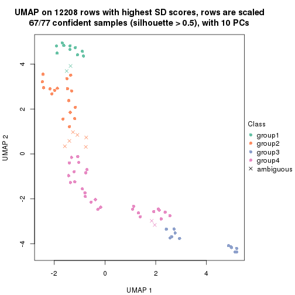
dimension_reduction(res, k = 5, method = "UMAP")
dimension_reduction(res, k = 6, method = "UMAP")

Following heatmap shows how subgroups are split when increasing k:
collect_classes(res)
If matrix rows can be associated to genes, consider to use functional_enrichment(res,
...) to perform function enrichment for the signature genes. See this vignette for more detailed explanations.
The object with results only for a single top-value method and a single partition method can be extracted as:
res = res_list["SD", "skmeans"]
# you can also extract it by
# res = res_list["SD:skmeans"]
A summary of res and all the functions that can be applied to it:
res
#> A 'ConsensusPartition' object with k = 2, 3, 4, 5, 6.
#> On a matrix with 12208 rows and 77 columns.
#> Top rows (1000, 2000, 3000, 4000, 5000) are extracted by 'SD' method.
#> Subgroups are detected by 'skmeans' method.
#> Performed in total 1250 partitions by row resampling.
#> Best k for subgroups seems to be 6.
#>
#> Following methods can be applied to this 'ConsensusPartition' object:
#> [1] "cola_report" "collect_classes" "collect_plots"
#> [4] "collect_stats" "colnames" "compare_signatures"
#> [7] "consensus_heatmap" "dimension_reduction" "functional_enrichment"
#> [10] "get_anno_col" "get_anno" "get_classes"
#> [13] "get_consensus" "get_matrix" "get_membership"
#> [16] "get_param" "get_signatures" "get_stats"
#> [19] "is_best_k" "is_stable_k" "membership_heatmap"
#> [22] "ncol" "nrow" "plot_ecdf"
#> [25] "rownames" "select_partition_number" "show"
#> [28] "suggest_best_k" "test_to_known_factors"
collect_plots() function collects all the plots made from res for all k (number of partitions)
into one single page to provide an easy and fast comparison between different k.
collect_plots(res)
The plots are:
k and the heatmap of
predicted classes for each k.k.k.k.All the plots in panels can be made by individual functions and they are plotted later in this section.
select_partition_number() produces several plots showing different
statistics for choosing “optimized” k. There are following statistics:
k;k, the area increased is defined as \(A_k - A_{k-1}\).The detailed explanations of these statistics can be found in the cola vignette.
Generally speaking, lower PAC score, higher mean silhouette score or higher
concordance corresponds to better partition. Rand index and Jaccard index
measure how similar the current partition is compared to partition with k-1.
If they are too similar, we won't accept k is better than k-1.
select_partition_number(res)
The numeric values for all these statistics can be obtained by get_stats().
get_stats(res)
#> k 1-PAC mean_silhouette concordance area_increased Rand Jaccard
#> 2 2 1.000 0.999 0.999 0.4926 0.508 0.508
#> 3 3 1.000 0.994 0.996 0.3653 0.732 0.514
#> 4 4 0.773 0.827 0.827 0.0991 0.904 0.716
#> 5 5 0.924 0.914 0.960 0.0793 0.926 0.722
#> 6 6 0.908 0.780 0.890 0.0467 0.934 0.693
suggest_best_k() suggests the best \(k\) based on these statistics. The rules are as follows:
suggest_best_k(res)
#> [1] 6
#> attr(,"optional")
#> [1] 2 3 5
There is also optional best \(k\) = 2 3 5 that is worth to check.
Following shows the table of the partitions (You need to click the show/hide
code output link to see it). The membership matrix (columns with name p*)
is inferred by
clue::cl_consensus()
function with the SE method. Basically the value in the membership matrix
represents the probability to belong to a certain group. The finall class
label for an item is determined with the group with highest probability it
belongs to.
In get_classes() function, the entropy is calculated from the membership
matrix and the silhouette score is calculated from the consensus matrix.
cbind(get_classes(res, k = 2), get_membership(res, k = 2))
#> class entropy silhouette p1 p2
#> SRR2044063 2 0.0938 0.988 0.012 0.988
#> SRR2044062 1 0.0376 0.996 0.996 0.004
#> SRR2044061 1 0.0376 0.996 0.996 0.004
#> SRR2044060 2 0.0938 0.988 0.012 0.988
#> SRR2044099 1 0.0000 1.000 1.000 0.000
#> SRR2044098 1 0.0000 1.000 1.000 0.000
#> SRR2044097 1 0.0000 1.000 1.000 0.000
#> SRR2044096 1 0.0000 1.000 1.000 0.000
#> SRR2044095 1 0.0000 1.000 1.000 0.000
#> SRR2044094 1 0.0000 1.000 1.000 0.000
#> SRR2044087 1 0.0000 1.000 1.000 0.000
#> SRR2044086 1 0.0000 1.000 1.000 0.000
#> SRR2044085 1 0.0000 1.000 1.000 0.000
#> SRR2044084 1 0.0000 1.000 1.000 0.000
#> SRR2044083 1 0.0000 1.000 1.000 0.000
#> SRR2044082 1 0.0000 1.000 1.000 0.000
#> SRR2044075 1 0.0000 1.000 1.000 0.000
#> SRR2044074 1 0.0000 1.000 1.000 0.000
#> SRR2044073 1 0.0000 1.000 1.000 0.000
#> SRR2044072 1 0.0000 1.000 1.000 0.000
#> SRR2044071 1 0.0000 1.000 1.000 0.000
#> SRR2044070 1 0.0000 1.000 1.000 0.000
#> SRR2044069 2 0.0000 0.999 0.000 1.000
#> SRR2044068 2 0.0000 0.999 0.000 1.000
#> SRR2044067 2 0.0000 0.999 0.000 1.000
#> SRR2044066 2 0.0000 0.999 0.000 1.000
#> SRR2044065 2 0.0000 0.999 0.000 1.000
#> SRR2044064 2 0.0000 0.999 0.000 1.000
#> SRR2044059 1 0.0376 0.996 0.996 0.004
#> SRR2044058 1 0.0376 0.996 0.996 0.004
#> SRR2044057 1 0.0000 1.000 1.000 0.000
#> SRR2044056 1 0.0000 1.000 1.000 0.000
#> SRR2044055 1 0.0000 1.000 1.000 0.000
#> SRR2044054 1 0.0000 1.000 1.000 0.000
#> SRR2044053 1 0.0000 1.000 1.000 0.000
#> SRR2044052 1 0.0000 1.000 1.000 0.000
#> SRR2044051 2 0.0000 0.999 0.000 1.000
#> SRR2044050 2 0.0000 0.999 0.000 1.000
#> SRR2044049 2 0.0000 0.999 0.000 1.000
#> SRR2044048 2 0.0000 0.999 0.000 1.000
#> SRR2044047 2 0.0000 0.999 0.000 1.000
#> SRR2044046 2 0.0000 0.999 0.000 1.000
#> SRR2044045 1 0.0000 1.000 1.000 0.000
#> SRR2044044 1 0.0000 1.000 1.000 0.000
#> SRR2044042 1 0.0000 1.000 1.000 0.000
#> SRR2044041 1 0.0000 1.000 1.000 0.000
#> SRR2044040 1 0.0000 1.000 1.000 0.000
#> SRR2044039 2 0.0000 0.999 0.000 1.000
#> SRR2044038 2 0.0000 0.999 0.000 1.000
#> SRR2044037 2 0.0000 0.999 0.000 1.000
#> SRR2044036 2 0.0000 0.999 0.000 1.000
#> SRR2044035 2 0.0000 0.999 0.000 1.000
#> SRR2044034 2 0.0000 0.999 0.000 1.000
#> SRR2044033 1 0.0000 1.000 1.000 0.000
#> SRR2044032 1 0.0000 1.000 1.000 0.000
#> SRR2044031 1 0.0000 1.000 1.000 0.000
#> SRR2044030 1 0.0000 1.000 1.000 0.000
#> SRR2044029 1 0.0000 1.000 1.000 0.000
#> SRR2044028 1 0.0000 1.000 1.000 0.000
#> SRR2044027 2 0.0000 0.999 0.000 1.000
#> SRR2044026 2 0.0000 0.999 0.000 1.000
#> SRR2044024 2 0.0000 0.999 0.000 1.000
#> SRR2044023 2 0.0000 0.999 0.000 1.000
#> SRR2044025 2 0.0000 0.999 0.000 1.000
#> SRR2044022 2 0.0000 0.999 0.000 1.000
#> SRR2044021 1 0.0000 1.000 1.000 0.000
#> SRR2044020 1 0.0000 1.000 1.000 0.000
#> SRR2044019 1 0.0000 1.000 1.000 0.000
#> SRR2044018 1 0.0000 1.000 1.000 0.000
#> SRR2044017 1 0.0000 1.000 1.000 0.000
#> SRR2044016 1 0.0000 1.000 1.000 0.000
#> SRR2044015 2 0.0000 0.999 0.000 1.000
#> SRR2044014 2 0.0000 0.999 0.000 1.000
#> SRR2044013 2 0.0000 0.999 0.000 1.000
#> SRR2044011 2 0.0000 0.999 0.000 1.000
#> SRR2044010 2 0.0000 0.999 0.000 1.000
#> SRR2044012 2 0.0000 0.999 0.000 1.000
cbind(get_classes(res, k = 3), get_membership(res, k = 3))
#> class entropy silhouette p1 p2 p3
#> SRR2044063 2 0.0000 1.000 0 1.000 0.000
#> SRR2044062 2 0.0000 1.000 0 1.000 0.000
#> SRR2044061 2 0.0000 1.000 0 1.000 0.000
#> SRR2044060 2 0.0000 1.000 0 1.000 0.000
#> SRR2044099 1 0.0000 1.000 1 0.000 0.000
#> SRR2044098 1 0.0000 1.000 1 0.000 0.000
#> SRR2044097 1 0.0000 1.000 1 0.000 0.000
#> SRR2044096 1 0.0000 1.000 1 0.000 0.000
#> SRR2044095 1 0.0000 1.000 1 0.000 0.000
#> SRR2044094 1 0.0000 1.000 1 0.000 0.000
#> SRR2044087 2 0.0000 1.000 0 1.000 0.000
#> SRR2044086 2 0.0000 1.000 0 1.000 0.000
#> SRR2044085 2 0.0000 1.000 0 1.000 0.000
#> SRR2044084 2 0.0000 1.000 0 1.000 0.000
#> SRR2044083 2 0.0000 1.000 0 1.000 0.000
#> SRR2044082 2 0.0000 1.000 0 1.000 0.000
#> SRR2044075 2 0.0000 1.000 0 1.000 0.000
#> SRR2044074 2 0.0000 1.000 0 1.000 0.000
#> SRR2044073 2 0.0000 1.000 0 1.000 0.000
#> SRR2044072 2 0.0000 1.000 0 1.000 0.000
#> SRR2044071 2 0.0000 1.000 0 1.000 0.000
#> SRR2044070 2 0.0000 1.000 0 1.000 0.000
#> SRR2044069 3 0.0000 0.988 0 0.000 1.000
#> SRR2044068 3 0.0000 0.988 0 0.000 1.000
#> SRR2044067 3 0.0000 0.988 0 0.000 1.000
#> SRR2044066 3 0.0000 0.988 0 0.000 1.000
#> SRR2044065 3 0.0000 0.988 0 0.000 1.000
#> SRR2044064 3 0.0000 0.988 0 0.000 1.000
#> SRR2044059 2 0.0000 1.000 0 1.000 0.000
#> SRR2044058 2 0.0000 1.000 0 1.000 0.000
#> SRR2044057 1 0.0000 1.000 1 0.000 0.000
#> SRR2044056 1 0.0000 1.000 1 0.000 0.000
#> SRR2044055 1 0.0000 1.000 1 0.000 0.000
#> SRR2044054 1 0.0000 1.000 1 0.000 0.000
#> SRR2044053 1 0.0000 1.000 1 0.000 0.000
#> SRR2044052 1 0.0000 1.000 1 0.000 0.000
#> SRR2044051 2 0.0000 1.000 0 1.000 0.000
#> SRR2044050 2 0.0000 1.000 0 1.000 0.000
#> SRR2044049 2 0.0000 1.000 0 1.000 0.000
#> SRR2044048 2 0.0000 1.000 0 1.000 0.000
#> SRR2044047 2 0.0000 1.000 0 1.000 0.000
#> SRR2044046 2 0.0000 1.000 0 1.000 0.000
#> SRR2044045 1 0.0000 1.000 1 0.000 0.000
#> SRR2044044 1 0.0000 1.000 1 0.000 0.000
#> SRR2044042 1 0.0000 1.000 1 0.000 0.000
#> SRR2044041 1 0.0000 1.000 1 0.000 0.000
#> SRR2044040 1 0.0000 1.000 1 0.000 0.000
#> SRR2044039 3 0.0000 0.988 0 0.000 1.000
#> SRR2044038 3 0.2066 0.947 0 0.060 0.940
#> SRR2044037 3 0.2066 0.947 0 0.060 0.940
#> SRR2044036 3 0.0000 0.988 0 0.000 1.000
#> SRR2044035 3 0.2066 0.947 0 0.060 0.940
#> SRR2044034 3 0.2066 0.947 0 0.060 0.940
#> SRR2044033 1 0.0000 1.000 1 0.000 0.000
#> SRR2044032 1 0.0000 1.000 1 0.000 0.000
#> SRR2044031 1 0.0000 1.000 1 0.000 0.000
#> SRR2044030 1 0.0000 1.000 1 0.000 0.000
#> SRR2044029 1 0.0000 1.000 1 0.000 0.000
#> SRR2044028 1 0.0000 1.000 1 0.000 0.000
#> SRR2044027 3 0.0000 0.988 0 0.000 1.000
#> SRR2044026 3 0.0747 0.979 0 0.016 0.984
#> SRR2044024 3 0.0000 0.988 0 0.000 1.000
#> SRR2044023 3 0.0747 0.979 0 0.016 0.984
#> SRR2044025 3 0.0000 0.988 0 0.000 1.000
#> SRR2044022 3 0.0000 0.988 0 0.000 1.000
#> SRR2044021 1 0.0000 1.000 1 0.000 0.000
#> SRR2044020 1 0.0000 1.000 1 0.000 0.000
#> SRR2044019 1 0.0000 1.000 1 0.000 0.000
#> SRR2044018 1 0.0000 1.000 1 0.000 0.000
#> SRR2044017 1 0.0000 1.000 1 0.000 0.000
#> SRR2044016 1 0.0000 1.000 1 0.000 0.000
#> SRR2044015 3 0.0000 0.988 0 0.000 1.000
#> SRR2044014 3 0.0000 0.988 0 0.000 1.000
#> SRR2044013 3 0.0000 0.988 0 0.000 1.000
#> SRR2044011 3 0.0000 0.988 0 0.000 1.000
#> SRR2044010 3 0.0000 0.988 0 0.000 1.000
#> SRR2044012 3 0.0000 0.988 0 0.000 1.000
cbind(get_classes(res, k = 4), get_membership(res, k = 4))
#> class entropy silhouette p1 p2 p3 p4
#> SRR2044063 2 0.0000 0.915 0.000 1.000 0.000 0.000
#> SRR2044062 2 0.0000 0.915 0.000 1.000 0.000 0.000
#> SRR2044061 2 0.0000 0.915 0.000 1.000 0.000 0.000
#> SRR2044060 2 0.0000 0.915 0.000 1.000 0.000 0.000
#> SRR2044099 1 0.0188 0.928 0.996 0.000 0.000 0.004
#> SRR2044098 1 0.0188 0.928 0.996 0.000 0.000 0.004
#> SRR2044097 1 0.0000 0.929 1.000 0.000 0.000 0.000
#> SRR2044096 1 0.0188 0.928 0.996 0.000 0.000 0.004
#> SRR2044095 1 0.0188 0.927 0.996 0.004 0.000 0.000
#> SRR2044094 1 0.0000 0.929 1.000 0.000 0.000 0.000
#> SRR2044087 2 0.4972 0.177 0.456 0.544 0.000 0.000
#> SRR2044086 2 0.3219 0.765 0.164 0.836 0.000 0.000
#> SRR2044085 1 0.4431 0.476 0.696 0.304 0.000 0.000
#> SRR2044084 2 0.4866 0.331 0.404 0.596 0.000 0.000
#> SRR2044083 2 0.3219 0.765 0.164 0.836 0.000 0.000
#> SRR2044082 1 0.4817 0.280 0.612 0.388 0.000 0.000
#> SRR2044075 2 0.0000 0.915 0.000 1.000 0.000 0.000
#> SRR2044074 2 0.0000 0.915 0.000 1.000 0.000 0.000
#> SRR2044073 2 0.0000 0.915 0.000 1.000 0.000 0.000
#> SRR2044072 2 0.0000 0.915 0.000 1.000 0.000 0.000
#> SRR2044071 2 0.0000 0.915 0.000 1.000 0.000 0.000
#> SRR2044070 2 0.0000 0.915 0.000 1.000 0.000 0.000
#> SRR2044069 3 0.4560 0.787 0.004 0.000 0.700 0.296
#> SRR2044068 3 0.4560 0.787 0.004 0.000 0.700 0.296
#> SRR2044067 3 0.4560 0.787 0.004 0.000 0.700 0.296
#> SRR2044066 3 0.4560 0.787 0.004 0.000 0.700 0.296
#> SRR2044065 3 0.4560 0.787 0.004 0.000 0.700 0.296
#> SRR2044064 3 0.4560 0.787 0.004 0.000 0.700 0.296
#> SRR2044059 2 0.0000 0.915 0.000 1.000 0.000 0.000
#> SRR2044058 2 0.0000 0.915 0.000 1.000 0.000 0.000
#> SRR2044057 4 0.4382 1.000 0.296 0.000 0.000 0.704
#> SRR2044056 4 0.4382 1.000 0.296 0.000 0.000 0.704
#> SRR2044055 1 0.0000 0.929 1.000 0.000 0.000 0.000
#> SRR2044054 4 0.4382 1.000 0.296 0.000 0.000 0.704
#> SRR2044053 4 0.4382 1.000 0.296 0.000 0.000 0.704
#> SRR2044052 1 0.0000 0.929 1.000 0.000 0.000 0.000
#> SRR2044051 2 0.4304 0.567 0.000 0.716 0.284 0.000
#> SRR2044050 2 0.0188 0.914 0.000 0.996 0.004 0.000
#> SRR2044049 2 0.0188 0.914 0.000 0.996 0.004 0.000
#> SRR2044048 2 0.0592 0.905 0.000 0.984 0.016 0.000
#> SRR2044047 2 0.0188 0.914 0.000 0.996 0.004 0.000
#> SRR2044046 2 0.0188 0.914 0.000 0.996 0.004 0.000
#> SRR2044045 4 0.4382 1.000 0.296 0.000 0.000 0.704
#> SRR2044044 4 0.4382 1.000 0.296 0.000 0.000 0.704
#> SRR2044042 4 0.4382 1.000 0.296 0.000 0.000 0.704
#> SRR2044041 4 0.4382 1.000 0.296 0.000 0.000 0.704
#> SRR2044040 1 0.0000 0.929 1.000 0.000 0.000 0.000
#> SRR2044039 3 0.0000 0.756 0.000 0.000 1.000 0.000
#> SRR2044038 3 0.4477 0.491 0.000 0.312 0.688 0.000
#> SRR2044037 3 0.4477 0.491 0.000 0.312 0.688 0.000
#> SRR2044036 3 0.0000 0.756 0.000 0.000 1.000 0.000
#> SRR2044035 3 0.4477 0.491 0.000 0.312 0.688 0.000
#> SRR2044034 3 0.4477 0.491 0.000 0.312 0.688 0.000
#> SRR2044033 4 0.4382 1.000 0.296 0.000 0.000 0.704
#> SRR2044032 4 0.4382 1.000 0.296 0.000 0.000 0.704
#> SRR2044031 1 0.0000 0.929 1.000 0.000 0.000 0.000
#> SRR2044030 4 0.4382 1.000 0.296 0.000 0.000 0.704
#> SRR2044029 4 0.4382 1.000 0.296 0.000 0.000 0.704
#> SRR2044028 1 0.0000 0.929 1.000 0.000 0.000 0.000
#> SRR2044027 3 0.0188 0.757 0.000 0.000 0.996 0.004
#> SRR2044026 3 0.4406 0.508 0.000 0.300 0.700 0.000
#> SRR2044024 3 0.0336 0.758 0.000 0.000 0.992 0.008
#> SRR2044023 3 0.4406 0.508 0.000 0.300 0.700 0.000
#> SRR2044025 3 0.0000 0.756 0.000 0.000 1.000 0.000
#> SRR2044022 3 0.0000 0.756 0.000 0.000 1.000 0.000
#> SRR2044021 1 0.0188 0.928 0.996 0.000 0.000 0.004
#> SRR2044020 1 0.0188 0.928 0.996 0.000 0.000 0.004
#> SRR2044019 1 0.0000 0.929 1.000 0.000 0.000 0.000
#> SRR2044018 1 0.0336 0.924 0.992 0.000 0.000 0.008
#> SRR2044017 1 0.0188 0.928 0.996 0.000 0.000 0.004
#> SRR2044016 1 0.0000 0.929 1.000 0.000 0.000 0.000
#> SRR2044015 3 0.4382 0.788 0.000 0.000 0.704 0.296
#> SRR2044014 3 0.4382 0.788 0.000 0.000 0.704 0.296
#> SRR2044013 3 0.4382 0.788 0.000 0.000 0.704 0.296
#> SRR2044011 3 0.4382 0.788 0.000 0.000 0.704 0.296
#> SRR2044010 3 0.4382 0.788 0.000 0.000 0.704 0.296
#> SRR2044012 3 0.4382 0.788 0.000 0.000 0.704 0.296
cbind(get_classes(res, k = 5), get_membership(res, k = 5))
#> class entropy silhouette p1 p2 p3 p4 p5
#> SRR2044063 2 0.0880 0.897 0.000 0.968 0.000 0.032 0.000
#> SRR2044062 2 0.0000 0.908 0.000 1.000 0.000 0.000 0.000
#> SRR2044061 2 0.0000 0.908 0.000 1.000 0.000 0.000 0.000
#> SRR2044060 2 0.0510 0.904 0.000 0.984 0.000 0.016 0.000
#> SRR2044099 1 0.0162 0.971 0.996 0.000 0.000 0.000 0.004
#> SRR2044098 1 0.0566 0.962 0.984 0.004 0.000 0.012 0.000
#> SRR2044097 1 0.0000 0.970 1.000 0.000 0.000 0.000 0.000
#> SRR2044096 1 0.0162 0.971 0.996 0.000 0.000 0.000 0.004
#> SRR2044095 1 0.1364 0.935 0.952 0.036 0.000 0.012 0.000
#> SRR2044094 1 0.0000 0.970 1.000 0.000 0.000 0.000 0.000
#> SRR2044087 2 0.3628 0.697 0.216 0.772 0.000 0.012 0.000
#> SRR2044086 2 0.0566 0.904 0.004 0.984 0.000 0.012 0.000
#> SRR2044085 1 0.4288 0.492 0.664 0.324 0.000 0.012 0.000
#> SRR2044084 2 0.3123 0.773 0.160 0.828 0.000 0.012 0.000
#> SRR2044083 2 0.0566 0.904 0.004 0.984 0.000 0.012 0.000
#> SRR2044082 2 0.4641 0.122 0.456 0.532 0.000 0.012 0.000
#> SRR2044075 2 0.0000 0.908 0.000 1.000 0.000 0.000 0.000
#> SRR2044074 2 0.0162 0.908 0.004 0.996 0.000 0.000 0.000
#> SRR2044073 2 0.0324 0.907 0.004 0.992 0.000 0.004 0.000
#> SRR2044072 2 0.0000 0.908 0.000 1.000 0.000 0.000 0.000
#> SRR2044071 2 0.0162 0.908 0.004 0.996 0.000 0.000 0.000
#> SRR2044070 2 0.0324 0.907 0.004 0.992 0.000 0.004 0.000
#> SRR2044069 3 0.0000 1.000 0.000 0.000 1.000 0.000 0.000
#> SRR2044068 3 0.0000 1.000 0.000 0.000 1.000 0.000 0.000
#> SRR2044067 3 0.0000 1.000 0.000 0.000 1.000 0.000 0.000
#> SRR2044066 3 0.0000 1.000 0.000 0.000 1.000 0.000 0.000
#> SRR2044065 3 0.0000 1.000 0.000 0.000 1.000 0.000 0.000
#> SRR2044064 3 0.0000 1.000 0.000 0.000 1.000 0.000 0.000
#> SRR2044059 2 0.0000 0.908 0.000 1.000 0.000 0.000 0.000
#> SRR2044058 2 0.0000 0.908 0.000 1.000 0.000 0.000 0.000
#> SRR2044057 5 0.0000 0.999 0.000 0.000 0.000 0.000 1.000
#> SRR2044056 5 0.0000 0.999 0.000 0.000 0.000 0.000 1.000
#> SRR2044055 1 0.0162 0.971 0.996 0.000 0.000 0.000 0.004
#> SRR2044054 5 0.0000 0.999 0.000 0.000 0.000 0.000 1.000
#> SRR2044053 5 0.0000 0.999 0.000 0.000 0.000 0.000 1.000
#> SRR2044052 1 0.0162 0.971 0.996 0.000 0.000 0.000 0.004
#> SRR2044051 4 0.4161 0.297 0.000 0.392 0.000 0.608 0.000
#> SRR2044050 2 0.2471 0.830 0.000 0.864 0.000 0.136 0.000
#> SRR2044049 2 0.2516 0.826 0.000 0.860 0.000 0.140 0.000
#> SRR2044048 2 0.3039 0.766 0.000 0.808 0.000 0.192 0.000
#> SRR2044047 2 0.2424 0.833 0.000 0.868 0.000 0.132 0.000
#> SRR2044046 2 0.2471 0.830 0.000 0.864 0.000 0.136 0.000
#> SRR2044045 5 0.0000 0.999 0.000 0.000 0.000 0.000 1.000
#> SRR2044044 5 0.0000 0.999 0.000 0.000 0.000 0.000 1.000
#> SRR2044042 5 0.0000 0.999 0.000 0.000 0.000 0.000 1.000
#> SRR2044041 5 0.0000 0.999 0.000 0.000 0.000 0.000 1.000
#> SRR2044040 1 0.0162 0.971 0.996 0.000 0.000 0.000 0.004
#> SRR2044039 4 0.0404 0.925 0.000 0.000 0.012 0.988 0.000
#> SRR2044038 4 0.0451 0.926 0.000 0.008 0.004 0.988 0.000
#> SRR2044037 4 0.0451 0.926 0.000 0.008 0.004 0.988 0.000
#> SRR2044036 4 0.0404 0.925 0.000 0.000 0.012 0.988 0.000
#> SRR2044035 4 0.0451 0.926 0.000 0.008 0.004 0.988 0.000
#> SRR2044034 4 0.0451 0.926 0.000 0.008 0.004 0.988 0.000
#> SRR2044033 5 0.0000 0.999 0.000 0.000 0.000 0.000 1.000
#> SRR2044032 5 0.0162 0.996 0.000 0.000 0.000 0.004 0.996
#> SRR2044031 1 0.0162 0.971 0.996 0.000 0.000 0.000 0.004
#> SRR2044030 5 0.0000 0.999 0.000 0.000 0.000 0.000 1.000
#> SRR2044029 5 0.0162 0.996 0.004 0.000 0.000 0.000 0.996
#> SRR2044028 1 0.0162 0.971 0.996 0.000 0.000 0.000 0.004
#> SRR2044027 4 0.2966 0.758 0.000 0.000 0.184 0.816 0.000
#> SRR2044026 4 0.0451 0.926 0.000 0.008 0.004 0.988 0.000
#> SRR2044024 4 0.2929 0.763 0.000 0.000 0.180 0.820 0.000
#> SRR2044023 4 0.0451 0.926 0.000 0.008 0.004 0.988 0.000
#> SRR2044025 4 0.0404 0.925 0.000 0.000 0.012 0.988 0.000
#> SRR2044022 4 0.0404 0.925 0.000 0.000 0.012 0.988 0.000
#> SRR2044021 1 0.0404 0.966 0.988 0.000 0.000 0.000 0.012
#> SRR2044020 1 0.0807 0.963 0.976 0.000 0.000 0.012 0.012
#> SRR2044019 1 0.0162 0.971 0.996 0.000 0.000 0.000 0.004
#> SRR2044018 1 0.0162 0.971 0.996 0.000 0.000 0.000 0.004
#> SRR2044017 1 0.0807 0.963 0.976 0.000 0.000 0.012 0.012
#> SRR2044016 1 0.0162 0.971 0.996 0.000 0.000 0.000 0.004
#> SRR2044015 3 0.0000 1.000 0.000 0.000 1.000 0.000 0.000
#> SRR2044014 3 0.0000 1.000 0.000 0.000 1.000 0.000 0.000
#> SRR2044013 3 0.0000 1.000 0.000 0.000 1.000 0.000 0.000
#> SRR2044011 3 0.0000 1.000 0.000 0.000 1.000 0.000 0.000
#> SRR2044010 3 0.0000 1.000 0.000 0.000 1.000 0.000 0.000
#> SRR2044012 3 0.0000 1.000 0.000 0.000 1.000 0.000 0.000
cbind(get_classes(res, k = 6), get_membership(res, k = 6))
#> class entropy silhouette p1 p2 p3 p4 p5 p6
#> SRR2044063 2 0.1219 0.6930 0.000 0.948 0.000 0.004 0.000 0.048
#> SRR2044062 2 0.3499 0.4676 0.000 0.680 0.000 0.000 0.000 0.320
#> SRR2044061 2 0.3428 0.4917 0.000 0.696 0.000 0.000 0.000 0.304
#> SRR2044060 2 0.1219 0.6924 0.000 0.948 0.000 0.004 0.000 0.048
#> SRR2044099 1 0.0748 0.9086 0.976 0.004 0.000 0.000 0.004 0.016
#> SRR2044098 1 0.3864 0.3730 0.520 0.000 0.000 0.000 0.000 0.480
#> SRR2044097 1 0.0632 0.9090 0.976 0.000 0.000 0.000 0.000 0.024
#> SRR2044096 1 0.0935 0.9070 0.964 0.004 0.000 0.000 0.000 0.032
#> SRR2044095 6 0.3706 -0.0513 0.380 0.000 0.000 0.000 0.000 0.620
#> SRR2044094 1 0.0865 0.9012 0.964 0.000 0.000 0.000 0.000 0.036
#> SRR2044087 6 0.2100 0.6580 0.004 0.112 0.000 0.000 0.000 0.884
#> SRR2044086 6 0.2260 0.6521 0.000 0.140 0.000 0.000 0.000 0.860
#> SRR2044085 6 0.2258 0.6185 0.060 0.044 0.000 0.000 0.000 0.896
#> SRR2044084 6 0.1957 0.6572 0.000 0.112 0.000 0.000 0.000 0.888
#> SRR2044083 6 0.2135 0.6573 0.000 0.128 0.000 0.000 0.000 0.872
#> SRR2044082 6 0.2350 0.6423 0.036 0.076 0.000 0.000 0.000 0.888
#> SRR2044075 2 0.3867 -0.0414 0.000 0.512 0.000 0.000 0.000 0.488
#> SRR2044074 6 0.3843 0.1901 0.000 0.452 0.000 0.000 0.000 0.548
#> SRR2044073 6 0.3843 0.1880 0.000 0.452 0.000 0.000 0.000 0.548
#> SRR2044072 2 0.3860 0.0272 0.000 0.528 0.000 0.000 0.000 0.472
#> SRR2044071 6 0.3851 0.1612 0.000 0.460 0.000 0.000 0.000 0.540
#> SRR2044070 6 0.3838 0.2014 0.000 0.448 0.000 0.000 0.000 0.552
#> SRR2044069 3 0.0000 0.9690 0.000 0.000 1.000 0.000 0.000 0.000
#> SRR2044068 3 0.0000 0.9690 0.000 0.000 1.000 0.000 0.000 0.000
#> SRR2044067 3 0.0000 0.9690 0.000 0.000 1.000 0.000 0.000 0.000
#> SRR2044066 3 0.0000 0.9690 0.000 0.000 1.000 0.000 0.000 0.000
#> SRR2044065 3 0.0000 0.9690 0.000 0.000 1.000 0.000 0.000 0.000
#> SRR2044064 3 0.0000 0.9690 0.000 0.000 1.000 0.000 0.000 0.000
#> SRR2044059 2 0.3695 0.3426 0.000 0.624 0.000 0.000 0.000 0.376
#> SRR2044058 2 0.3464 0.4807 0.000 0.688 0.000 0.000 0.000 0.312
#> SRR2044057 5 0.0000 0.9933 0.000 0.000 0.000 0.000 1.000 0.000
#> SRR2044056 5 0.0000 0.9933 0.000 0.000 0.000 0.000 1.000 0.000
#> SRR2044055 1 0.0000 0.9124 1.000 0.000 0.000 0.000 0.000 0.000
#> SRR2044054 5 0.0000 0.9933 0.000 0.000 0.000 0.000 1.000 0.000
#> SRR2044053 5 0.0000 0.9933 0.000 0.000 0.000 0.000 1.000 0.000
#> SRR2044052 1 0.0000 0.9124 1.000 0.000 0.000 0.000 0.000 0.000
#> SRR2044051 2 0.2212 0.5982 0.000 0.880 0.000 0.112 0.000 0.008
#> SRR2044050 2 0.0458 0.7005 0.000 0.984 0.000 0.016 0.000 0.000
#> SRR2044049 2 0.0458 0.7005 0.000 0.984 0.000 0.016 0.000 0.000
#> SRR2044048 2 0.1007 0.6780 0.000 0.956 0.000 0.044 0.000 0.000
#> SRR2044047 2 0.0458 0.7005 0.000 0.984 0.000 0.016 0.000 0.000
#> SRR2044046 2 0.0458 0.7005 0.000 0.984 0.000 0.016 0.000 0.000
#> SRR2044045 5 0.0000 0.9933 0.000 0.000 0.000 0.000 1.000 0.000
#> SRR2044044 5 0.0363 0.9892 0.000 0.000 0.000 0.000 0.988 0.012
#> SRR2044042 5 0.0000 0.9933 0.000 0.000 0.000 0.000 1.000 0.000
#> SRR2044041 5 0.0363 0.9892 0.000 0.000 0.000 0.000 0.988 0.012
#> SRR2044040 1 0.0000 0.9124 1.000 0.000 0.000 0.000 0.000 0.000
#> SRR2044039 4 0.0146 0.9501 0.000 0.000 0.000 0.996 0.000 0.004
#> SRR2044038 4 0.1082 0.9595 0.000 0.040 0.000 0.956 0.000 0.004
#> SRR2044037 4 0.1082 0.9595 0.000 0.040 0.000 0.956 0.000 0.004
#> SRR2044036 4 0.0146 0.9510 0.000 0.000 0.000 0.996 0.000 0.004
#> SRR2044035 4 0.1082 0.9595 0.000 0.040 0.000 0.956 0.000 0.004
#> SRR2044034 4 0.1082 0.9595 0.000 0.040 0.000 0.956 0.000 0.004
#> SRR2044033 5 0.0000 0.9933 0.000 0.000 0.000 0.000 1.000 0.000
#> SRR2044032 5 0.0790 0.9774 0.000 0.000 0.000 0.000 0.968 0.032
#> SRR2044031 1 0.0146 0.9125 0.996 0.000 0.000 0.000 0.000 0.004
#> SRR2044030 5 0.0000 0.9933 0.000 0.000 0.000 0.000 1.000 0.000
#> SRR2044029 5 0.0790 0.9774 0.000 0.000 0.000 0.000 0.968 0.032
#> SRR2044028 1 0.0260 0.9125 0.992 0.000 0.000 0.000 0.000 0.008
#> SRR2044027 4 0.2265 0.8996 0.000 0.000 0.052 0.896 0.000 0.052
#> SRR2044026 4 0.1970 0.9543 0.000 0.060 0.000 0.912 0.000 0.028
#> SRR2044024 4 0.2066 0.9102 0.000 0.000 0.040 0.908 0.000 0.052
#> SRR2044023 4 0.1829 0.9562 0.000 0.056 0.000 0.920 0.000 0.024
#> SRR2044025 4 0.1713 0.9572 0.000 0.044 0.000 0.928 0.000 0.028
#> SRR2044022 4 0.1780 0.9571 0.000 0.048 0.000 0.924 0.000 0.028
#> SRR2044021 1 0.0692 0.9093 0.976 0.004 0.000 0.000 0.000 0.020
#> SRR2044020 1 0.4092 0.5927 0.636 0.000 0.000 0.000 0.020 0.344
#> SRR2044019 1 0.0260 0.9125 0.992 0.000 0.000 0.000 0.000 0.008
#> SRR2044018 1 0.0665 0.9084 0.980 0.004 0.000 0.000 0.008 0.008
#> SRR2044017 1 0.4264 0.6016 0.636 0.000 0.000 0.000 0.032 0.332
#> SRR2044016 1 0.0260 0.9125 0.992 0.000 0.000 0.000 0.000 0.008
#> SRR2044015 3 0.1575 0.9677 0.000 0.000 0.936 0.032 0.000 0.032
#> SRR2044014 3 0.1789 0.9645 0.000 0.000 0.924 0.044 0.000 0.032
#> SRR2044013 3 0.1789 0.9645 0.000 0.000 0.924 0.044 0.000 0.032
#> SRR2044011 3 0.1720 0.9658 0.000 0.000 0.928 0.040 0.000 0.032
#> SRR2044010 3 0.1789 0.9645 0.000 0.000 0.924 0.044 0.000 0.032
#> SRR2044012 3 0.1575 0.9677 0.000 0.000 0.936 0.032 0.000 0.032
Heatmaps for the consensus matrix. It visualizes the probability of two samples to be in a same group.
consensus_heatmap(res, k = 2)
consensus_heatmap(res, k = 3)
consensus_heatmap(res, k = 4)
consensus_heatmap(res, k = 5)
consensus_heatmap(res, k = 6)
Heatmaps for the membership of samples in all partitions to see how consistent they are:
membership_heatmap(res, k = 2)
membership_heatmap(res, k = 3)
membership_heatmap(res, k = 4)
membership_heatmap(res, k = 5)
membership_heatmap(res, k = 6)
As soon as we have had the classes for columns, we can look for signatures which are significantly different between classes which can be candidate marks for certain classes. Following are the heatmaps for signatures.
Signature heatmaps where rows are scaled:
get_signatures(res, k = 2)
get_signatures(res, k = 3)
get_signatures(res, k = 4)
get_signatures(res, k = 5)
get_signatures(res, k = 6)
Signature heatmaps where rows are not scaled:
get_signatures(res, k = 2, scale_rows = FALSE)
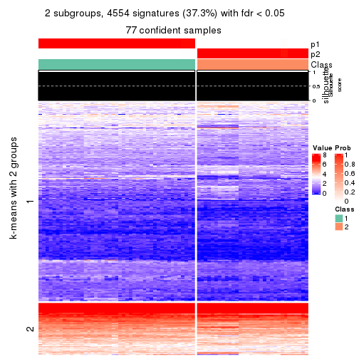
get_signatures(res, k = 3, scale_rows = FALSE)
get_signatures(res, k = 4, scale_rows = FALSE)
get_signatures(res, k = 5, scale_rows = FALSE)
get_signatures(res, k = 6, scale_rows = FALSE)
Compare the overlap of signatures from different k:
compare_signatures(res)
get_signature() returns a data frame invisibly. TO get the list of signatures, the function
call should be assigned to a variable explicitly. In following code, if plot argument is set
to FALSE, no heatmap is plotted while only the differential analysis is performed.
# code only for demonstration
tb = get_signature(res, k = ..., plot = FALSE)
An example of the output of tb is:
#> which_row fdr mean_1 mean_2 scaled_mean_1 scaled_mean_2 km
#> 1 38 0.042760348 8.373488 9.131774 -0.5533452 0.5164555 1
#> 2 40 0.018707592 7.106213 8.469186 -0.6173731 0.5762149 1
#> 3 55 0.019134737 10.221463 11.207825 -0.6159697 0.5749050 1
#> 4 59 0.006059896 5.921854 7.869574 -0.6899429 0.6439467 1
#> 5 60 0.018055526 8.928898 10.211722 -0.6204761 0.5791110 1
#> 6 98 0.009384629 15.714769 14.887706 0.6635654 -0.6193277 2
...
The columns in tb are:
which_row: row indices corresponding to the input matrix.fdr: FDR for the differential test. mean_x: The mean value in group x.scaled_mean_x: The mean value in group x after rows are scaled.km: Row groups if k-means clustering is applied to rows.UMAP plot which shows how samples are separated.
dimension_reduction(res, k = 2, method = "UMAP")
dimension_reduction(res, k = 3, method = "UMAP")
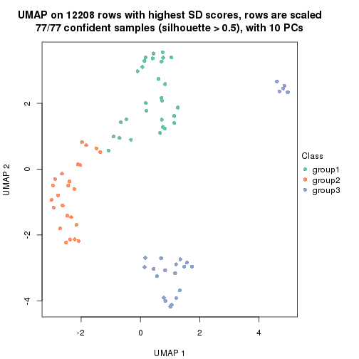
dimension_reduction(res, k = 4, method = "UMAP")
dimension_reduction(res, k = 5, method = "UMAP")
dimension_reduction(res, k = 6, method = "UMAP")
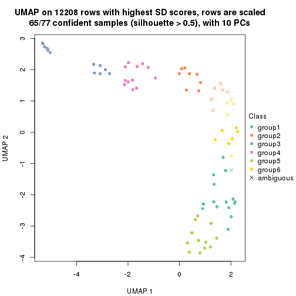
Following heatmap shows how subgroups are split when increasing k:
collect_classes(res)
If matrix rows can be associated to genes, consider to use functional_enrichment(res,
...) to perform function enrichment for the signature genes. See this vignette for more detailed explanations.
The object with results only for a single top-value method and a single partition method can be extracted as:
res = res_list["SD", "pam"]
# you can also extract it by
# res = res_list["SD:pam"]
A summary of res and all the functions that can be applied to it:
res
#> A 'ConsensusPartition' object with k = 2, 3, 4, 5, 6.
#> On a matrix with 12208 rows and 77 columns.
#> Top rows (1000, 2000, 3000, 4000, 5000) are extracted by 'SD' method.
#> Subgroups are detected by 'pam' method.
#> Performed in total 1250 partitions by row resampling.
#> Best k for subgroups seems to be 3.
#>
#> Following methods can be applied to this 'ConsensusPartition' object:
#> [1] "cola_report" "collect_classes" "collect_plots"
#> [4] "collect_stats" "colnames" "compare_signatures"
#> [7] "consensus_heatmap" "dimension_reduction" "functional_enrichment"
#> [10] "get_anno_col" "get_anno" "get_classes"
#> [13] "get_consensus" "get_matrix" "get_membership"
#> [16] "get_param" "get_signatures" "get_stats"
#> [19] "is_best_k" "is_stable_k" "membership_heatmap"
#> [22] "ncol" "nrow" "plot_ecdf"
#> [25] "rownames" "select_partition_number" "show"
#> [28] "suggest_best_k" "test_to_known_factors"
collect_plots() function collects all the plots made from res for all k (number of partitions)
into one single page to provide an easy and fast comparison between different k.
collect_plots(res)
The plots are:
k and the heatmap of
predicted classes for each k.k.k.k.All the plots in panels can be made by individual functions and they are plotted later in this section.
select_partition_number() produces several plots showing different
statistics for choosing “optimized” k. There are following statistics:
k;k, the area increased is defined as \(A_k - A_{k-1}\).The detailed explanations of these statistics can be found in the cola vignette.
Generally speaking, lower PAC score, higher mean silhouette score or higher
concordance corresponds to better partition. Rand index and Jaccard index
measure how similar the current partition is compared to partition with k-1.
If they are too similar, we won't accept k is better than k-1.
select_partition_number(res)
The numeric values for all these statistics can be obtained by get_stats().
get_stats(res)
#> k 1-PAC mean_silhouette concordance area_increased Rand Jaccard
#> 2 2 0.919 0.931 0.970 0.4977 0.498 0.498
#> 3 3 0.928 0.927 0.973 0.1933 0.907 0.813
#> 4 4 0.786 0.847 0.880 0.1805 0.837 0.619
#> 5 5 0.847 0.810 0.887 0.0683 0.974 0.910
#> 6 6 0.884 0.839 0.924 0.0606 0.891 0.625
suggest_best_k() suggests the best \(k\) based on these statistics. The rules are as follows:
suggest_best_k(res)
#> [1] 3
#> attr(,"optional")
#> [1] 2
There is also optional best \(k\) = 2 that is worth to check.
Following shows the table of the partitions (You need to click the show/hide
code output link to see it). The membership matrix (columns with name p*)
is inferred by
clue::cl_consensus()
function with the SE method. Basically the value in the membership matrix
represents the probability to belong to a certain group. The finall class
label for an item is determined with the group with highest probability it
belongs to.
In get_classes() function, the entropy is calculated from the membership
matrix and the silhouette score is calculated from the consensus matrix.
cbind(get_classes(res, k = 2), get_membership(res, k = 2))
#> class entropy silhouette p1 p2
#> SRR2044063 2 0.0938 0.976 0.012 0.988
#> SRR2044062 2 0.0938 0.976 0.012 0.988
#> SRR2044061 2 0.0938 0.976 0.012 0.988
#> SRR2044060 2 0.0938 0.976 0.012 0.988
#> SRR2044099 1 0.0000 0.958 1.000 0.000
#> SRR2044098 1 0.0000 0.958 1.000 0.000
#> SRR2044097 1 0.0000 0.958 1.000 0.000
#> SRR2044096 1 0.0000 0.958 1.000 0.000
#> SRR2044095 1 0.0000 0.958 1.000 0.000
#> SRR2044094 1 0.0000 0.958 1.000 0.000
#> SRR2044087 1 0.9580 0.396 0.620 0.380
#> SRR2044086 1 0.6247 0.795 0.844 0.156
#> SRR2044085 1 0.0672 0.952 0.992 0.008
#> SRR2044084 1 0.9881 0.236 0.564 0.436
#> SRR2044083 1 0.0376 0.955 0.996 0.004
#> SRR2044082 1 0.9552 0.406 0.624 0.376
#> SRR2044075 2 0.0938 0.976 0.012 0.988
#> SRR2044074 2 0.8207 0.660 0.256 0.744
#> SRR2044073 2 0.2948 0.940 0.052 0.948
#> SRR2044072 2 0.0938 0.976 0.012 0.988
#> SRR2044071 2 0.7883 0.696 0.236 0.764
#> SRR2044070 2 0.6801 0.784 0.180 0.820
#> SRR2044069 2 0.0000 0.976 0.000 1.000
#> SRR2044068 2 0.0000 0.976 0.000 1.000
#> SRR2044067 2 0.0000 0.976 0.000 1.000
#> SRR2044066 2 0.0000 0.976 0.000 1.000
#> SRR2044065 2 0.0000 0.976 0.000 1.000
#> SRR2044064 2 0.0000 0.976 0.000 1.000
#> SRR2044059 2 0.0938 0.976 0.012 0.988
#> SRR2044058 2 0.0938 0.976 0.012 0.988
#> SRR2044057 1 0.0376 0.955 0.996 0.004
#> SRR2044056 1 0.0000 0.958 1.000 0.000
#> SRR2044055 1 0.0000 0.958 1.000 0.000
#> SRR2044054 1 0.0000 0.958 1.000 0.000
#> SRR2044053 1 0.0000 0.958 1.000 0.000
#> SRR2044052 1 0.0000 0.958 1.000 0.000
#> SRR2044051 2 0.0938 0.976 0.012 0.988
#> SRR2044050 2 0.0938 0.976 0.012 0.988
#> SRR2044049 2 0.0938 0.976 0.012 0.988
#> SRR2044048 2 0.0938 0.976 0.012 0.988
#> SRR2044047 2 0.0938 0.976 0.012 0.988
#> SRR2044046 2 0.0938 0.976 0.012 0.988
#> SRR2044045 1 0.0000 0.958 1.000 0.000
#> SRR2044044 1 0.0000 0.958 1.000 0.000
#> SRR2044042 1 0.0000 0.958 1.000 0.000
#> SRR2044041 1 0.0000 0.958 1.000 0.000
#> SRR2044040 1 0.0000 0.958 1.000 0.000
#> SRR2044039 2 0.0000 0.976 0.000 1.000
#> SRR2044038 2 0.0938 0.976 0.012 0.988
#> SRR2044037 2 0.0938 0.976 0.012 0.988
#> SRR2044036 2 0.0000 0.976 0.000 1.000
#> SRR2044035 2 0.0938 0.976 0.012 0.988
#> SRR2044034 2 0.0938 0.976 0.012 0.988
#> SRR2044033 1 0.0000 0.958 1.000 0.000
#> SRR2044032 1 0.0000 0.958 1.000 0.000
#> SRR2044031 1 0.0000 0.958 1.000 0.000
#> SRR2044030 1 0.0000 0.958 1.000 0.000
#> SRR2044029 1 0.0000 0.958 1.000 0.000
#> SRR2044028 1 0.0000 0.958 1.000 0.000
#> SRR2044027 2 0.0000 0.976 0.000 1.000
#> SRR2044026 2 0.0000 0.976 0.000 1.000
#> SRR2044024 2 0.0000 0.976 0.000 1.000
#> SRR2044023 2 0.0000 0.976 0.000 1.000
#> SRR2044025 2 0.0000 0.976 0.000 1.000
#> SRR2044022 2 0.0000 0.976 0.000 1.000
#> SRR2044021 1 0.0000 0.958 1.000 0.000
#> SRR2044020 1 0.0000 0.958 1.000 0.000
#> SRR2044019 1 0.0000 0.958 1.000 0.000
#> SRR2044018 1 0.0000 0.958 1.000 0.000
#> SRR2044017 1 0.0000 0.958 1.000 0.000
#> SRR2044016 1 0.0000 0.958 1.000 0.000
#> SRR2044015 2 0.0000 0.976 0.000 1.000
#> SRR2044014 2 0.0000 0.976 0.000 1.000
#> SRR2044013 2 0.0000 0.976 0.000 1.000
#> SRR2044011 2 0.0000 0.976 0.000 1.000
#> SRR2044010 2 0.0000 0.976 0.000 1.000
#> SRR2044012 2 0.0000 0.976 0.000 1.000
cbind(get_classes(res, k = 3), get_membership(res, k = 3))
#> class entropy silhouette p1 p2 p3
#> SRR2044063 2 0.0000 0.973 0.000 1.000 0.000
#> SRR2044062 2 0.0000 0.973 0.000 1.000 0.000
#> SRR2044061 2 0.0000 0.973 0.000 1.000 0.000
#> SRR2044060 2 0.0000 0.973 0.000 1.000 0.000
#> SRR2044099 1 0.0000 0.949 1.000 0.000 0.000
#> SRR2044098 1 0.0000 0.949 1.000 0.000 0.000
#> SRR2044097 1 0.0000 0.949 1.000 0.000 0.000
#> SRR2044096 1 0.0000 0.949 1.000 0.000 0.000
#> SRR2044095 1 0.0000 0.949 1.000 0.000 0.000
#> SRR2044094 1 0.0000 0.949 1.000 0.000 0.000
#> SRR2044087 1 0.6045 0.400 0.620 0.380 0.000
#> SRR2044086 1 0.3941 0.768 0.844 0.156 0.000
#> SRR2044085 1 0.0424 0.941 0.992 0.008 0.000
#> SRR2044084 1 0.6235 0.242 0.564 0.436 0.000
#> SRR2044083 1 0.0237 0.945 0.996 0.004 0.000
#> SRR2044082 1 0.6026 0.410 0.624 0.376 0.000
#> SRR2044075 2 0.0000 0.973 0.000 1.000 0.000
#> SRR2044074 2 0.5098 0.658 0.248 0.752 0.000
#> SRR2044073 2 0.1529 0.931 0.040 0.960 0.000
#> SRR2044072 2 0.0000 0.973 0.000 1.000 0.000
#> SRR2044071 2 0.4887 0.688 0.228 0.772 0.000
#> SRR2044070 2 0.4121 0.773 0.168 0.832 0.000
#> SRR2044069 3 0.0000 0.999 0.000 0.000 1.000
#> SRR2044068 3 0.0000 0.999 0.000 0.000 1.000
#> SRR2044067 3 0.0000 0.999 0.000 0.000 1.000
#> SRR2044066 3 0.0000 0.999 0.000 0.000 1.000
#> SRR2044065 3 0.0000 0.999 0.000 0.000 1.000
#> SRR2044064 3 0.0000 0.999 0.000 0.000 1.000
#> SRR2044059 2 0.0000 0.973 0.000 1.000 0.000
#> SRR2044058 2 0.0000 0.973 0.000 1.000 0.000
#> SRR2044057 1 0.0237 0.945 0.996 0.004 0.000
#> SRR2044056 1 0.0000 0.949 1.000 0.000 0.000
#> SRR2044055 1 0.0000 0.949 1.000 0.000 0.000
#> SRR2044054 1 0.0000 0.949 1.000 0.000 0.000
#> SRR2044053 1 0.0000 0.949 1.000 0.000 0.000
#> SRR2044052 1 0.0000 0.949 1.000 0.000 0.000
#> SRR2044051 2 0.0000 0.973 0.000 1.000 0.000
#> SRR2044050 2 0.0000 0.973 0.000 1.000 0.000
#> SRR2044049 2 0.0000 0.973 0.000 1.000 0.000
#> SRR2044048 2 0.0000 0.973 0.000 1.000 0.000
#> SRR2044047 2 0.0000 0.973 0.000 1.000 0.000
#> SRR2044046 2 0.0000 0.973 0.000 1.000 0.000
#> SRR2044045 1 0.0000 0.949 1.000 0.000 0.000
#> SRR2044044 1 0.0000 0.949 1.000 0.000 0.000
#> SRR2044042 1 0.0000 0.949 1.000 0.000 0.000
#> SRR2044041 1 0.0000 0.949 1.000 0.000 0.000
#> SRR2044040 1 0.0000 0.949 1.000 0.000 0.000
#> SRR2044039 2 0.0000 0.973 0.000 1.000 0.000
#> SRR2044038 2 0.0000 0.973 0.000 1.000 0.000
#> SRR2044037 2 0.0000 0.973 0.000 1.000 0.000
#> SRR2044036 2 0.0000 0.973 0.000 1.000 0.000
#> SRR2044035 2 0.0000 0.973 0.000 1.000 0.000
#> SRR2044034 2 0.0000 0.973 0.000 1.000 0.000
#> SRR2044033 1 0.0000 0.949 1.000 0.000 0.000
#> SRR2044032 1 0.0000 0.949 1.000 0.000 0.000
#> SRR2044031 1 0.0000 0.949 1.000 0.000 0.000
#> SRR2044030 1 0.0000 0.949 1.000 0.000 0.000
#> SRR2044029 1 0.0000 0.949 1.000 0.000 0.000
#> SRR2044028 1 0.0000 0.949 1.000 0.000 0.000
#> SRR2044027 2 0.0000 0.973 0.000 1.000 0.000
#> SRR2044026 2 0.0000 0.973 0.000 1.000 0.000
#> SRR2044024 2 0.0000 0.973 0.000 1.000 0.000
#> SRR2044023 2 0.0000 0.973 0.000 1.000 0.000
#> SRR2044025 2 0.0000 0.973 0.000 1.000 0.000
#> SRR2044022 2 0.0000 0.973 0.000 1.000 0.000
#> SRR2044021 1 0.0000 0.949 1.000 0.000 0.000
#> SRR2044020 1 0.0000 0.949 1.000 0.000 0.000
#> SRR2044019 1 0.0000 0.949 1.000 0.000 0.000
#> SRR2044018 1 0.0000 0.949 1.000 0.000 0.000
#> SRR2044017 1 0.0000 0.949 1.000 0.000 0.000
#> SRR2044016 1 0.0000 0.949 1.000 0.000 0.000
#> SRR2044015 3 0.0237 0.996 0.000 0.004 0.996
#> SRR2044014 2 0.0237 0.970 0.000 0.996 0.004
#> SRR2044013 2 0.0237 0.970 0.000 0.996 0.004
#> SRR2044011 2 0.0747 0.960 0.000 0.984 0.016
#> SRR2044010 2 0.0237 0.970 0.000 0.996 0.004
#> SRR2044012 3 0.0000 0.999 0.000 0.000 1.000
cbind(get_classes(res, k = 4), get_membership(res, k = 4))
#> class entropy silhouette p1 p2 p3 p4
#> SRR2044063 2 0.0000 0.8202 0.000 1.000 0.000 0.000
#> SRR2044062 2 0.0000 0.8202 0.000 1.000 0.000 0.000
#> SRR2044061 2 0.0000 0.8202 0.000 1.000 0.000 0.000
#> SRR2044060 2 0.0188 0.8168 0.000 0.996 0.000 0.004
#> SRR2044099 1 0.0000 0.9028 1.000 0.000 0.000 0.000
#> SRR2044098 1 0.0000 0.9028 1.000 0.000 0.000 0.000
#> SRR2044097 1 0.0000 0.9028 1.000 0.000 0.000 0.000
#> SRR2044096 1 0.0000 0.9028 1.000 0.000 0.000 0.000
#> SRR2044095 1 0.0000 0.9028 1.000 0.000 0.000 0.000
#> SRR2044094 1 0.0000 0.9028 1.000 0.000 0.000 0.000
#> SRR2044087 1 0.7002 0.1563 0.492 0.120 0.000 0.388
#> SRR2044086 2 0.4761 0.4755 0.372 0.628 0.000 0.000
#> SRR2044085 2 0.4776 0.4680 0.376 0.624 0.000 0.000
#> SRR2044084 1 0.6813 0.1332 0.516 0.104 0.000 0.380
#> SRR2044083 2 0.4761 0.4755 0.372 0.628 0.000 0.000
#> SRR2044082 2 0.6362 0.4456 0.368 0.560 0.000 0.072
#> SRR2044075 2 0.0000 0.8202 0.000 1.000 0.000 0.000
#> SRR2044074 2 0.2216 0.7763 0.092 0.908 0.000 0.000
#> SRR2044073 2 0.0707 0.8155 0.020 0.980 0.000 0.000
#> SRR2044072 2 0.0592 0.8047 0.000 0.984 0.000 0.016
#> SRR2044071 2 0.1867 0.7906 0.072 0.928 0.000 0.000
#> SRR2044070 2 0.1557 0.8002 0.056 0.944 0.000 0.000
#> SRR2044069 3 0.0000 0.9987 0.000 0.000 1.000 0.000
#> SRR2044068 3 0.0000 0.9987 0.000 0.000 1.000 0.000
#> SRR2044067 3 0.0000 0.9987 0.000 0.000 1.000 0.000
#> SRR2044066 3 0.0000 0.9987 0.000 0.000 1.000 0.000
#> SRR2044065 3 0.0000 0.9987 0.000 0.000 1.000 0.000
#> SRR2044064 3 0.0000 0.9987 0.000 0.000 1.000 0.000
#> SRR2044059 2 0.0000 0.8202 0.000 1.000 0.000 0.000
#> SRR2044058 2 0.0000 0.8202 0.000 1.000 0.000 0.000
#> SRR2044057 1 0.4222 0.7361 0.728 0.000 0.000 0.272
#> SRR2044056 1 0.4222 0.7361 0.728 0.000 0.000 0.272
#> SRR2044055 1 0.0000 0.9028 1.000 0.000 0.000 0.000
#> SRR2044054 1 0.4222 0.7361 0.728 0.000 0.000 0.272
#> SRR2044053 1 0.4222 0.7361 0.728 0.000 0.000 0.272
#> SRR2044052 1 0.0000 0.9028 1.000 0.000 0.000 0.000
#> SRR2044051 4 0.4250 0.9971 0.000 0.276 0.000 0.724
#> SRR2044050 2 0.0000 0.8202 0.000 1.000 0.000 0.000
#> SRR2044049 2 0.4713 -0.0999 0.000 0.640 0.000 0.360
#> SRR2044048 4 0.4250 0.9971 0.000 0.276 0.000 0.724
#> SRR2044047 2 0.0000 0.8202 0.000 1.000 0.000 0.000
#> SRR2044046 2 0.0000 0.8202 0.000 1.000 0.000 0.000
#> SRR2044045 1 0.4222 0.7361 0.728 0.000 0.000 0.272
#> SRR2044044 1 0.0000 0.9028 1.000 0.000 0.000 0.000
#> SRR2044042 1 0.4222 0.7361 0.728 0.000 0.000 0.272
#> SRR2044041 1 0.0000 0.9028 1.000 0.000 0.000 0.000
#> SRR2044040 1 0.0000 0.9028 1.000 0.000 0.000 0.000
#> SRR2044039 4 0.4250 0.9971 0.000 0.276 0.000 0.724
#> SRR2044038 4 0.4250 0.9971 0.000 0.276 0.000 0.724
#> SRR2044037 4 0.4250 0.9971 0.000 0.276 0.000 0.724
#> SRR2044036 4 0.4250 0.9971 0.000 0.276 0.000 0.724
#> SRR2044035 4 0.4250 0.9971 0.000 0.276 0.000 0.724
#> SRR2044034 4 0.4250 0.9971 0.000 0.276 0.000 0.724
#> SRR2044033 1 0.2973 0.8252 0.856 0.000 0.000 0.144
#> SRR2044032 1 0.0000 0.9028 1.000 0.000 0.000 0.000
#> SRR2044031 1 0.0000 0.9028 1.000 0.000 0.000 0.000
#> SRR2044030 1 0.1792 0.8680 0.932 0.000 0.000 0.068
#> SRR2044029 1 0.0000 0.9028 1.000 0.000 0.000 0.000
#> SRR2044028 1 0.0000 0.9028 1.000 0.000 0.000 0.000
#> SRR2044027 4 0.4250 0.9971 0.000 0.276 0.000 0.724
#> SRR2044026 4 0.4250 0.9971 0.000 0.276 0.000 0.724
#> SRR2044024 4 0.4250 0.9971 0.000 0.276 0.000 0.724
#> SRR2044023 4 0.4250 0.9971 0.000 0.276 0.000 0.724
#> SRR2044025 4 0.4250 0.9971 0.000 0.276 0.000 0.724
#> SRR2044022 4 0.4250 0.9971 0.000 0.276 0.000 0.724
#> SRR2044021 1 0.0000 0.9028 1.000 0.000 0.000 0.000
#> SRR2044020 1 0.0000 0.9028 1.000 0.000 0.000 0.000
#> SRR2044019 1 0.0000 0.9028 1.000 0.000 0.000 0.000
#> SRR2044018 1 0.0000 0.9028 1.000 0.000 0.000 0.000
#> SRR2044017 1 0.0000 0.9028 1.000 0.000 0.000 0.000
#> SRR2044016 1 0.0000 0.9028 1.000 0.000 0.000 0.000
#> SRR2044015 3 0.0336 0.9940 0.000 0.000 0.992 0.008
#> SRR2044014 4 0.4401 0.9914 0.000 0.272 0.004 0.724
#> SRR2044013 4 0.4401 0.9914 0.000 0.272 0.004 0.724
#> SRR2044011 4 0.4776 0.9798 0.000 0.272 0.016 0.712
#> SRR2044010 4 0.4401 0.9914 0.000 0.272 0.004 0.724
#> SRR2044012 3 0.0188 0.9970 0.000 0.000 0.996 0.004
cbind(get_classes(res, k = 5), get_membership(res, k = 5))
#> class entropy silhouette p1 p2 p3 p4 p5
#> SRR2044063 2 0.0000 0.8663 0.000 1.000 0.000 0.000 0.000
#> SRR2044062 2 0.0000 0.8663 0.000 1.000 0.000 0.000 0.000
#> SRR2044061 2 0.0000 0.8663 0.000 1.000 0.000 0.000 0.000
#> SRR2044060 2 0.0162 0.8635 0.000 0.996 0.000 0.004 0.000
#> SRR2044099 1 0.0000 0.8728 1.000 0.000 0.000 0.000 0.000
#> SRR2044098 1 0.0000 0.8728 1.000 0.000 0.000 0.000 0.000
#> SRR2044097 1 0.0000 0.8728 1.000 0.000 0.000 0.000 0.000
#> SRR2044096 1 0.0000 0.8728 1.000 0.000 0.000 0.000 0.000
#> SRR2044095 1 0.0000 0.8728 1.000 0.000 0.000 0.000 0.000
#> SRR2044094 1 0.0000 0.8728 1.000 0.000 0.000 0.000 0.000
#> SRR2044087 1 0.5803 0.2265 0.532 0.100 0.000 0.368 0.000
#> SRR2044086 2 0.3707 0.6075 0.284 0.716 0.000 0.000 0.000
#> SRR2044085 2 0.4210 0.4111 0.412 0.588 0.000 0.000 0.000
#> SRR2044084 1 0.4872 0.1896 0.540 0.024 0.000 0.436 0.000
#> SRR2044083 2 0.3774 0.5945 0.296 0.704 0.000 0.000 0.000
#> SRR2044082 2 0.5611 0.3454 0.408 0.516 0.000 0.076 0.000
#> SRR2044075 2 0.0000 0.8663 0.000 1.000 0.000 0.000 0.000
#> SRR2044074 2 0.0000 0.8663 0.000 1.000 0.000 0.000 0.000
#> SRR2044073 2 0.0000 0.8663 0.000 1.000 0.000 0.000 0.000
#> SRR2044072 2 0.0609 0.8502 0.000 0.980 0.000 0.020 0.000
#> SRR2044071 2 0.0000 0.8663 0.000 1.000 0.000 0.000 0.000
#> SRR2044070 2 0.0000 0.8663 0.000 1.000 0.000 0.000 0.000
#> SRR2044069 3 0.0000 1.0000 0.000 0.000 1.000 0.000 0.000
#> SRR2044068 3 0.0000 1.0000 0.000 0.000 1.000 0.000 0.000
#> SRR2044067 3 0.0000 1.0000 0.000 0.000 1.000 0.000 0.000
#> SRR2044066 3 0.0000 1.0000 0.000 0.000 1.000 0.000 0.000
#> SRR2044065 3 0.0000 1.0000 0.000 0.000 1.000 0.000 0.000
#> SRR2044064 3 0.0000 1.0000 0.000 0.000 1.000 0.000 0.000
#> SRR2044059 2 0.0000 0.8663 0.000 1.000 0.000 0.000 0.000
#> SRR2044058 2 0.0000 0.8663 0.000 1.000 0.000 0.000 0.000
#> SRR2044057 1 0.4576 0.6044 0.608 0.000 0.000 0.016 0.376
#> SRR2044056 1 0.4576 0.6044 0.608 0.000 0.000 0.016 0.376
#> SRR2044055 1 0.0000 0.8728 1.000 0.000 0.000 0.000 0.000
#> SRR2044054 1 0.4576 0.6044 0.608 0.000 0.000 0.016 0.376
#> SRR2044053 1 0.4576 0.6044 0.608 0.000 0.000 0.016 0.376
#> SRR2044052 1 0.0000 0.8728 1.000 0.000 0.000 0.000 0.000
#> SRR2044051 4 0.0703 0.9975 0.000 0.024 0.000 0.976 0.000
#> SRR2044050 2 0.0000 0.8663 0.000 1.000 0.000 0.000 0.000
#> SRR2044049 2 0.4302 0.0366 0.000 0.520 0.000 0.480 0.000
#> SRR2044048 4 0.0703 0.9975 0.000 0.024 0.000 0.976 0.000
#> SRR2044047 2 0.0000 0.8663 0.000 1.000 0.000 0.000 0.000
#> SRR2044046 2 0.0000 0.8663 0.000 1.000 0.000 0.000 0.000
#> SRR2044045 1 0.4576 0.6044 0.608 0.000 0.000 0.016 0.376
#> SRR2044044 1 0.0000 0.8728 1.000 0.000 0.000 0.000 0.000
#> SRR2044042 1 0.4576 0.6044 0.608 0.000 0.000 0.016 0.376
#> SRR2044041 1 0.0000 0.8728 1.000 0.000 0.000 0.000 0.000
#> SRR2044040 1 0.0000 0.8728 1.000 0.000 0.000 0.000 0.000
#> SRR2044039 4 0.0703 0.9975 0.000 0.024 0.000 0.976 0.000
#> SRR2044038 4 0.0703 0.9975 0.000 0.024 0.000 0.976 0.000
#> SRR2044037 4 0.0703 0.9975 0.000 0.024 0.000 0.976 0.000
#> SRR2044036 4 0.0703 0.9975 0.000 0.024 0.000 0.976 0.000
#> SRR2044035 4 0.0703 0.9975 0.000 0.024 0.000 0.976 0.000
#> SRR2044034 4 0.0703 0.9975 0.000 0.024 0.000 0.976 0.000
#> SRR2044033 1 0.3366 0.7344 0.768 0.000 0.000 0.000 0.232
#> SRR2044032 1 0.0000 0.8728 1.000 0.000 0.000 0.000 0.000
#> SRR2044031 1 0.0000 0.8728 1.000 0.000 0.000 0.000 0.000
#> SRR2044030 1 0.2690 0.7843 0.844 0.000 0.000 0.000 0.156
#> SRR2044029 1 0.0000 0.8728 1.000 0.000 0.000 0.000 0.000
#> SRR2044028 1 0.0000 0.8728 1.000 0.000 0.000 0.000 0.000
#> SRR2044027 4 0.1403 0.9662 0.000 0.024 0.000 0.952 0.024
#> SRR2044026 4 0.0703 0.9975 0.000 0.024 0.000 0.976 0.000
#> SRR2044024 4 0.0703 0.9975 0.000 0.024 0.000 0.976 0.000
#> SRR2044023 4 0.0703 0.9975 0.000 0.024 0.000 0.976 0.000
#> SRR2044025 4 0.0703 0.9975 0.000 0.024 0.000 0.976 0.000
#> SRR2044022 4 0.0703 0.9975 0.000 0.024 0.000 0.976 0.000
#> SRR2044021 1 0.0000 0.8728 1.000 0.000 0.000 0.000 0.000
#> SRR2044020 1 0.0000 0.8728 1.000 0.000 0.000 0.000 0.000
#> SRR2044019 1 0.0000 0.8728 1.000 0.000 0.000 0.000 0.000
#> SRR2044018 1 0.0000 0.8728 1.000 0.000 0.000 0.000 0.000
#> SRR2044017 1 0.0000 0.8728 1.000 0.000 0.000 0.000 0.000
#> SRR2044016 1 0.0000 0.8728 1.000 0.000 0.000 0.000 0.000
#> SRR2044015 5 0.4354 0.3102 0.000 0.000 0.368 0.008 0.624
#> SRR2044014 5 0.4114 0.7374 0.000 0.000 0.000 0.376 0.624
#> SRR2044013 5 0.4114 0.7374 0.000 0.000 0.000 0.376 0.624
#> SRR2044011 5 0.4114 0.7374 0.000 0.000 0.000 0.376 0.624
#> SRR2044010 5 0.4114 0.7374 0.000 0.000 0.000 0.376 0.624
#> SRR2044012 5 0.4354 0.3102 0.000 0.000 0.368 0.008 0.624
cbind(get_classes(res, k = 6), get_membership(res, k = 6))
#> class entropy silhouette p1 p2 p3 p4 p5 p6
#> SRR2044063 2 0.0000 0.9321 0.000 1.000 0 0.000 0.000 0.000
#> SRR2044062 2 0.0000 0.9321 0.000 1.000 0 0.000 0.000 0.000
#> SRR2044061 2 0.0000 0.9321 0.000 1.000 0 0.000 0.000 0.000
#> SRR2044060 2 0.0146 0.9286 0.000 0.996 0 0.004 0.000 0.000
#> SRR2044099 1 0.0865 0.8314 0.964 0.000 0 0.000 0.036 0.000
#> SRR2044098 1 0.3309 0.7621 0.720 0.000 0 0.000 0.280 0.000
#> SRR2044097 1 0.0000 0.8272 1.000 0.000 0 0.000 0.000 0.000
#> SRR2044096 1 0.1267 0.8297 0.940 0.000 0 0.000 0.060 0.000
#> SRR2044095 1 0.3309 0.7621 0.720 0.000 0 0.000 0.280 0.000
#> SRR2044094 1 0.0000 0.8272 1.000 0.000 0 0.000 0.000 0.000
#> SRR2044087 1 0.4788 0.7474 0.740 0.080 0 0.084 0.096 0.000
#> SRR2044086 2 0.3499 0.4764 0.320 0.680 0 0.000 0.000 0.000
#> SRR2044085 1 0.2883 0.6972 0.788 0.212 0 0.000 0.000 0.000
#> SRR2044084 4 0.5994 -0.1941 0.420 0.016 0 0.420 0.144 0.000
#> SRR2044083 2 0.3843 0.0779 0.452 0.548 0 0.000 0.000 0.000
#> SRR2044082 1 0.1866 0.7950 0.908 0.084 0 0.008 0.000 0.000
#> SRR2044075 2 0.0000 0.9321 0.000 1.000 0 0.000 0.000 0.000
#> SRR2044074 2 0.0000 0.9321 0.000 1.000 0 0.000 0.000 0.000
#> SRR2044073 2 0.0000 0.9321 0.000 1.000 0 0.000 0.000 0.000
#> SRR2044072 2 0.0547 0.9125 0.000 0.980 0 0.020 0.000 0.000
#> SRR2044071 2 0.0000 0.9321 0.000 1.000 0 0.000 0.000 0.000
#> SRR2044070 2 0.0000 0.9321 0.000 1.000 0 0.000 0.000 0.000
#> SRR2044069 3 0.0000 1.0000 0.000 0.000 1 0.000 0.000 0.000
#> SRR2044068 3 0.0000 1.0000 0.000 0.000 1 0.000 0.000 0.000
#> SRR2044067 3 0.0000 1.0000 0.000 0.000 1 0.000 0.000 0.000
#> SRR2044066 3 0.0000 1.0000 0.000 0.000 1 0.000 0.000 0.000
#> SRR2044065 3 0.0000 1.0000 0.000 0.000 1 0.000 0.000 0.000
#> SRR2044064 3 0.0000 1.0000 0.000 0.000 1 0.000 0.000 0.000
#> SRR2044059 2 0.0000 0.9321 0.000 1.000 0 0.000 0.000 0.000
#> SRR2044058 2 0.0000 0.9321 0.000 1.000 0 0.000 0.000 0.000
#> SRR2044057 5 0.0000 0.9335 0.000 0.000 0 0.000 1.000 0.000
#> SRR2044056 5 0.0000 0.9335 0.000 0.000 0 0.000 1.000 0.000
#> SRR2044055 1 0.0000 0.8272 1.000 0.000 0 0.000 0.000 0.000
#> SRR2044054 5 0.0000 0.9335 0.000 0.000 0 0.000 1.000 0.000
#> SRR2044053 5 0.0000 0.9335 0.000 0.000 0 0.000 1.000 0.000
#> SRR2044052 1 0.1075 0.8299 0.952 0.000 0 0.000 0.048 0.000
#> SRR2044051 4 0.0000 0.9088 0.000 0.000 0 1.000 0.000 0.000
#> SRR2044050 2 0.0000 0.9321 0.000 1.000 0 0.000 0.000 0.000
#> SRR2044049 4 0.3869 -0.0135 0.000 0.500 0 0.500 0.000 0.000
#> SRR2044048 4 0.0000 0.9088 0.000 0.000 0 1.000 0.000 0.000
#> SRR2044047 2 0.0000 0.9321 0.000 1.000 0 0.000 0.000 0.000
#> SRR2044046 2 0.0000 0.9321 0.000 1.000 0 0.000 0.000 0.000
#> SRR2044045 5 0.0000 0.9335 0.000 0.000 0 0.000 1.000 0.000
#> SRR2044044 1 0.3309 0.7621 0.720 0.000 0 0.000 0.280 0.000
#> SRR2044042 5 0.0000 0.9335 0.000 0.000 0 0.000 1.000 0.000
#> SRR2044041 1 0.3309 0.7621 0.720 0.000 0 0.000 0.280 0.000
#> SRR2044040 1 0.0000 0.8272 1.000 0.000 0 0.000 0.000 0.000
#> SRR2044039 4 0.0000 0.9088 0.000 0.000 0 1.000 0.000 0.000
#> SRR2044038 4 0.0000 0.9088 0.000 0.000 0 1.000 0.000 0.000
#> SRR2044037 4 0.0000 0.9088 0.000 0.000 0 1.000 0.000 0.000
#> SRR2044036 4 0.0000 0.9088 0.000 0.000 0 1.000 0.000 0.000
#> SRR2044035 4 0.0000 0.9088 0.000 0.000 0 1.000 0.000 0.000
#> SRR2044034 4 0.0000 0.9088 0.000 0.000 0 1.000 0.000 0.000
#> SRR2044033 5 0.3175 0.5094 0.256 0.000 0 0.000 0.744 0.000
#> SRR2044032 1 0.3309 0.7621 0.720 0.000 0 0.000 0.280 0.000
#> SRR2044031 1 0.0000 0.8272 1.000 0.000 0 0.000 0.000 0.000
#> SRR2044030 1 0.3847 0.4331 0.544 0.000 0 0.000 0.456 0.000
#> SRR2044029 1 0.3309 0.7621 0.720 0.000 0 0.000 0.280 0.000
#> SRR2044028 1 0.0000 0.8272 1.000 0.000 0 0.000 0.000 0.000
#> SRR2044027 4 0.0632 0.8884 0.000 0.000 0 0.976 0.000 0.024
#> SRR2044026 4 0.0000 0.9088 0.000 0.000 0 1.000 0.000 0.000
#> SRR2044024 4 0.0000 0.9088 0.000 0.000 0 1.000 0.000 0.000
#> SRR2044023 4 0.0000 0.9088 0.000 0.000 0 1.000 0.000 0.000
#> SRR2044025 4 0.0000 0.9088 0.000 0.000 0 1.000 0.000 0.000
#> SRR2044022 4 0.0000 0.9088 0.000 0.000 0 1.000 0.000 0.000
#> SRR2044021 1 0.3050 0.7776 0.764 0.000 0 0.000 0.236 0.000
#> SRR2044020 1 0.3309 0.7621 0.720 0.000 0 0.000 0.280 0.000
#> SRR2044019 1 0.0000 0.8272 1.000 0.000 0 0.000 0.000 0.000
#> SRR2044018 1 0.0547 0.8305 0.980 0.000 0 0.000 0.020 0.000
#> SRR2044017 1 0.3309 0.7621 0.720 0.000 0 0.000 0.280 0.000
#> SRR2044016 1 0.0000 0.8272 1.000 0.000 0 0.000 0.000 0.000
#> SRR2044015 6 0.0000 1.0000 0.000 0.000 0 0.000 0.000 1.000
#> SRR2044014 6 0.0000 1.0000 0.000 0.000 0 0.000 0.000 1.000
#> SRR2044013 6 0.0000 1.0000 0.000 0.000 0 0.000 0.000 1.000
#> SRR2044011 6 0.0000 1.0000 0.000 0.000 0 0.000 0.000 1.000
#> SRR2044010 6 0.0000 1.0000 0.000 0.000 0 0.000 0.000 1.000
#> SRR2044012 6 0.0000 1.0000 0.000 0.000 0 0.000 0.000 1.000
Heatmaps for the consensus matrix. It visualizes the probability of two samples to be in a same group.
consensus_heatmap(res, k = 2)

consensus_heatmap(res, k = 3)
consensus_heatmap(res, k = 4)
consensus_heatmap(res, k = 5)
consensus_heatmap(res, k = 6)
Heatmaps for the membership of samples in all partitions to see how consistent they are:
membership_heatmap(res, k = 2)
membership_heatmap(res, k = 3)
membership_heatmap(res, k = 4)
membership_heatmap(res, k = 5)
membership_heatmap(res, k = 6)
As soon as we have had the classes for columns, we can look for signatures which are significantly different between classes which can be candidate marks for certain classes. Following are the heatmaps for signatures.
Signature heatmaps where rows are scaled:
get_signatures(res, k = 2)
get_signatures(res, k = 3)
get_signatures(res, k = 4)
get_signatures(res, k = 5)
get_signatures(res, k = 6)
Signature heatmaps where rows are not scaled:
get_signatures(res, k = 2, scale_rows = FALSE)
get_signatures(res, k = 3, scale_rows = FALSE)
get_signatures(res, k = 4, scale_rows = FALSE)
get_signatures(res, k = 5, scale_rows = FALSE)
get_signatures(res, k = 6, scale_rows = FALSE)
Compare the overlap of signatures from different k:
compare_signatures(res)
get_signature() returns a data frame invisibly. TO get the list of signatures, the function
call should be assigned to a variable explicitly. In following code, if plot argument is set
to FALSE, no heatmap is plotted while only the differential analysis is performed.
# code only for demonstration
tb = get_signature(res, k = ..., plot = FALSE)
An example of the output of tb is:
#> which_row fdr mean_1 mean_2 scaled_mean_1 scaled_mean_2 km
#> 1 38 0.042760348 8.373488 9.131774 -0.5533452 0.5164555 1
#> 2 40 0.018707592 7.106213 8.469186 -0.6173731 0.5762149 1
#> 3 55 0.019134737 10.221463 11.207825 -0.6159697 0.5749050 1
#> 4 59 0.006059896 5.921854 7.869574 -0.6899429 0.6439467 1
#> 5 60 0.018055526 8.928898 10.211722 -0.6204761 0.5791110 1
#> 6 98 0.009384629 15.714769 14.887706 0.6635654 -0.6193277 2
...
The columns in tb are:
which_row: row indices corresponding to the input matrix.fdr: FDR for the differential test. mean_x: The mean value in group x.scaled_mean_x: The mean value in group x after rows are scaled.km: Row groups if k-means clustering is applied to rows.UMAP plot which shows how samples are separated.
dimension_reduction(res, k = 2, method = "UMAP")
dimension_reduction(res, k = 3, method = "UMAP")
dimension_reduction(res, k = 4, method = "UMAP")
dimension_reduction(res, k = 5, method = "UMAP")
dimension_reduction(res, k = 6, method = "UMAP")
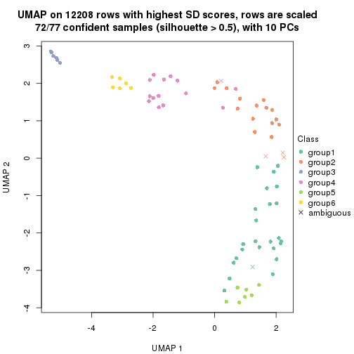
Following heatmap shows how subgroups are split when increasing k:
collect_classes(res)
If matrix rows can be associated to genes, consider to use functional_enrichment(res,
...) to perform function enrichment for the signature genes. See this vignette for more detailed explanations.
The object with results only for a single top-value method and a single partition method can be extracted as:
res = res_list["SD", "mclust"]
# you can also extract it by
# res = res_list["SD:mclust"]
A summary of res and all the functions that can be applied to it:
res
#> A 'ConsensusPartition' object with k = 2, 3, 4, 5, 6.
#> On a matrix with 12208 rows and 77 columns.
#> Top rows (1000, 2000, 3000, 4000, 5000) are extracted by 'SD' method.
#> Subgroups are detected by 'mclust' method.
#> Performed in total 1250 partitions by row resampling.
#> Best k for subgroups seems to be 5.
#>
#> Following methods can be applied to this 'ConsensusPartition' object:
#> [1] "cola_report" "collect_classes" "collect_plots"
#> [4] "collect_stats" "colnames" "compare_signatures"
#> [7] "consensus_heatmap" "dimension_reduction" "functional_enrichment"
#> [10] "get_anno_col" "get_anno" "get_classes"
#> [13] "get_consensus" "get_matrix" "get_membership"
#> [16] "get_param" "get_signatures" "get_stats"
#> [19] "is_best_k" "is_stable_k" "membership_heatmap"
#> [22] "ncol" "nrow" "plot_ecdf"
#> [25] "rownames" "select_partition_number" "show"
#> [28] "suggest_best_k" "test_to_known_factors"
collect_plots() function collects all the plots made from res for all k (number of partitions)
into one single page to provide an easy and fast comparison between different k.
collect_plots(res)
The plots are:
k and the heatmap of
predicted classes for each k.k.k.k.All the plots in panels can be made by individual functions and they are plotted later in this section.
select_partition_number() produces several plots showing different
statistics for choosing “optimized” k. There are following statistics:
k;k, the area increased is defined as \(A_k - A_{k-1}\).The detailed explanations of these statistics can be found in the cola vignette.
Generally speaking, lower PAC score, higher mean silhouette score or higher
concordance corresponds to better partition. Rand index and Jaccard index
measure how similar the current partition is compared to partition with k-1.
If they are too similar, we won't accept k is better than k-1.
select_partition_number(res)
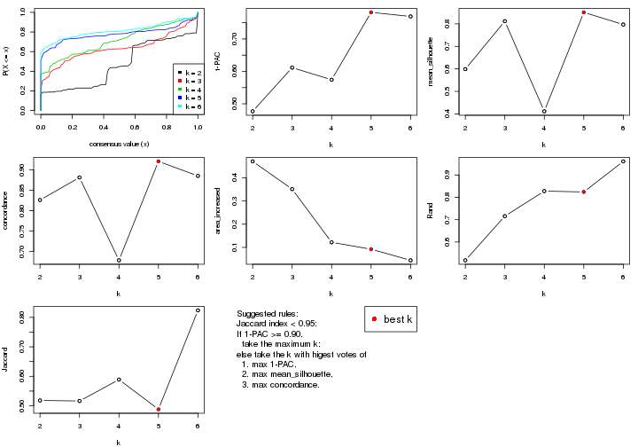
The numeric values for all these statistics can be obtained by get_stats().
get_stats(res)
#> k 1-PAC mean_silhouette concordance area_increased Rand Jaccard
#> 2 2 0.477 0.599 0.826 0.4708 0.518 0.518
#> 3 3 0.611 0.812 0.881 0.3512 0.716 0.516
#> 4 4 0.574 0.411 0.678 0.1219 0.828 0.589
#> 5 5 0.782 0.851 0.921 0.0922 0.824 0.488
#> 6 6 0.769 0.797 0.885 0.0443 0.961 0.824
suggest_best_k() suggests the best \(k\) based on these statistics. The rules are as follows:
suggest_best_k(res)
#> [1] 5
Following shows the table of the partitions (You need to click the show/hide
code output link to see it). The membership matrix (columns with name p*)
is inferred by
clue::cl_consensus()
function with the SE method. Basically the value in the membership matrix
represents the probability to belong to a certain group. The finall class
label for an item is determined with the group with highest probability it
belongs to.
In get_classes() function, the entropy is calculated from the membership
matrix and the silhouette score is calculated from the consensus matrix.
cbind(get_classes(res, k = 2), get_membership(res, k = 2))
#> class entropy silhouette p1 p2
#> SRR2044063 2 0.0000 0.7265 0.000 1.000
#> SRR2044062 2 0.9129 0.5735 0.328 0.672
#> SRR2044061 2 0.9209 0.5690 0.336 0.664
#> SRR2044060 2 0.0000 0.7265 0.000 1.000
#> SRR2044099 1 0.6531 0.5805 0.832 0.168
#> SRR2044098 2 0.9833 0.5092 0.424 0.576
#> SRR2044097 1 0.9996 -0.3268 0.512 0.488
#> SRR2044096 1 0.0376 0.7573 0.996 0.004
#> SRR2044095 2 0.9833 0.5092 0.424 0.576
#> SRR2044094 1 0.9522 0.0839 0.628 0.372
#> SRR2044087 2 0.9833 0.5092 0.424 0.576
#> SRR2044086 2 0.9833 0.5092 0.424 0.576
#> SRR2044085 2 0.9833 0.5092 0.424 0.576
#> SRR2044084 2 0.9833 0.5092 0.424 0.576
#> SRR2044083 2 0.9833 0.5092 0.424 0.576
#> SRR2044082 2 0.9833 0.5092 0.424 0.576
#> SRR2044075 2 0.9833 0.5092 0.424 0.576
#> SRR2044074 2 0.9833 0.5092 0.424 0.576
#> SRR2044073 2 0.9833 0.5092 0.424 0.576
#> SRR2044072 2 0.9833 0.5092 0.424 0.576
#> SRR2044071 2 0.9833 0.5092 0.424 0.576
#> SRR2044070 2 0.9833 0.5092 0.424 0.576
#> SRR2044069 1 0.9833 0.3757 0.576 0.424
#> SRR2044068 1 0.9833 0.3757 0.576 0.424
#> SRR2044067 1 0.9833 0.3757 0.576 0.424
#> SRR2044066 1 0.9833 0.3757 0.576 0.424
#> SRR2044065 1 0.9833 0.3757 0.576 0.424
#> SRR2044064 1 0.9833 0.3757 0.576 0.424
#> SRR2044059 2 0.9580 0.5401 0.380 0.620
#> SRR2044058 2 0.9170 0.5714 0.332 0.668
#> SRR2044057 1 0.0000 0.7593 1.000 0.000
#> SRR2044056 1 0.0000 0.7593 1.000 0.000
#> SRR2044055 2 0.9833 0.5092 0.424 0.576
#> SRR2044054 1 0.0000 0.7593 1.000 0.000
#> SRR2044053 1 0.0000 0.7593 1.000 0.000
#> SRR2044052 2 0.9833 0.5092 0.424 0.576
#> SRR2044051 2 0.0000 0.7265 0.000 1.000
#> SRR2044050 2 0.0000 0.7265 0.000 1.000
#> SRR2044049 2 0.0000 0.7265 0.000 1.000
#> SRR2044048 2 0.0000 0.7265 0.000 1.000
#> SRR2044047 2 0.0000 0.7265 0.000 1.000
#> SRR2044046 2 0.0000 0.7265 0.000 1.000
#> SRR2044045 1 0.0000 0.7593 1.000 0.000
#> SRR2044044 1 0.0000 0.7593 1.000 0.000
#> SRR2044042 1 0.0000 0.7593 1.000 0.000
#> SRR2044041 1 0.0000 0.7593 1.000 0.000
#> SRR2044040 2 0.9850 0.5012 0.428 0.572
#> SRR2044039 2 0.0000 0.7265 0.000 1.000
#> SRR2044038 2 0.0000 0.7265 0.000 1.000
#> SRR2044037 2 0.0000 0.7265 0.000 1.000
#> SRR2044036 2 0.0000 0.7265 0.000 1.000
#> SRR2044035 2 0.0000 0.7265 0.000 1.000
#> SRR2044034 2 0.0000 0.7265 0.000 1.000
#> SRR2044033 1 0.0000 0.7593 1.000 0.000
#> SRR2044032 1 0.0000 0.7593 1.000 0.000
#> SRR2044031 1 0.9850 -0.1254 0.572 0.428
#> SRR2044030 1 0.0000 0.7593 1.000 0.000
#> SRR2044029 1 0.0000 0.7593 1.000 0.000
#> SRR2044028 1 0.9909 -0.1813 0.556 0.444
#> SRR2044027 2 0.0000 0.7265 0.000 1.000
#> SRR2044026 2 0.0000 0.7265 0.000 1.000
#> SRR2044024 2 0.0000 0.7265 0.000 1.000
#> SRR2044023 2 0.0000 0.7265 0.000 1.000
#> SRR2044025 2 0.0000 0.7265 0.000 1.000
#> SRR2044022 2 0.0000 0.7265 0.000 1.000
#> SRR2044021 1 0.0000 0.7593 1.000 0.000
#> SRR2044020 1 0.0376 0.7573 0.996 0.004
#> SRR2044019 1 0.5629 0.6318 0.868 0.132
#> SRR2044018 1 0.0000 0.7593 1.000 0.000
#> SRR2044017 1 0.0376 0.7573 0.996 0.004
#> SRR2044016 1 0.7528 0.4997 0.784 0.216
#> SRR2044015 2 0.0000 0.7265 0.000 1.000
#> SRR2044014 2 0.0000 0.7265 0.000 1.000
#> SRR2044013 2 0.0000 0.7265 0.000 1.000
#> SRR2044011 2 0.0000 0.7265 0.000 1.000
#> SRR2044010 2 0.0000 0.7265 0.000 1.000
#> SRR2044012 2 0.0000 0.7265 0.000 1.000
cbind(get_classes(res, k = 3), get_membership(res, k = 3))
#> class entropy silhouette p1 p2 p3
#> SRR2044063 2 0.0237 0.844 0.000 0.996 0.004
#> SRR2044062 2 0.2356 0.837 0.072 0.928 0.000
#> SRR2044061 2 0.2356 0.837 0.072 0.928 0.000
#> SRR2044060 2 0.0237 0.844 0.000 0.996 0.004
#> SRR2044099 1 0.0237 0.859 0.996 0.004 0.000
#> SRR2044098 1 0.4654 0.773 0.792 0.208 0.000
#> SRR2044097 1 0.3192 0.846 0.888 0.112 0.000
#> SRR2044096 1 0.0237 0.859 0.996 0.004 0.000
#> SRR2044095 1 0.4452 0.788 0.808 0.192 0.000
#> SRR2044094 1 0.3192 0.846 0.888 0.112 0.000
#> SRR2044087 2 0.3482 0.793 0.128 0.872 0.000
#> SRR2044086 2 0.3267 0.804 0.116 0.884 0.000
#> SRR2044085 1 0.5882 0.568 0.652 0.348 0.000
#> SRR2044084 2 0.3482 0.793 0.128 0.872 0.000
#> SRR2044083 2 0.3412 0.797 0.124 0.876 0.000
#> SRR2044082 1 0.6062 0.488 0.616 0.384 0.000
#> SRR2044075 2 0.2356 0.837 0.072 0.928 0.000
#> SRR2044074 2 0.2356 0.837 0.072 0.928 0.000
#> SRR2044073 2 0.2356 0.837 0.072 0.928 0.000
#> SRR2044072 2 0.2356 0.837 0.072 0.928 0.000
#> SRR2044071 2 0.2356 0.837 0.072 0.928 0.000
#> SRR2044070 2 0.2356 0.837 0.072 0.928 0.000
#> SRR2044069 3 0.1964 0.884 0.056 0.000 0.944
#> SRR2044068 3 0.1964 0.884 0.056 0.000 0.944
#> SRR2044067 3 0.1964 0.884 0.056 0.000 0.944
#> SRR2044066 3 0.1964 0.884 0.056 0.000 0.944
#> SRR2044065 3 0.1964 0.884 0.056 0.000 0.944
#> SRR2044064 3 0.1964 0.884 0.056 0.000 0.944
#> SRR2044059 2 0.2356 0.837 0.072 0.928 0.000
#> SRR2044058 2 0.2356 0.837 0.072 0.928 0.000
#> SRR2044057 1 0.5810 0.509 0.664 0.000 0.336
#> SRR2044056 1 0.2711 0.827 0.912 0.000 0.088
#> SRR2044055 1 0.3551 0.837 0.868 0.132 0.000
#> SRR2044054 1 0.5810 0.509 0.664 0.000 0.336
#> SRR2044053 1 0.2711 0.827 0.912 0.000 0.088
#> SRR2044052 1 0.3784 0.836 0.864 0.132 0.004
#> SRR2044051 2 0.4351 0.784 0.004 0.828 0.168
#> SRR2044050 2 0.0237 0.844 0.000 0.996 0.004
#> SRR2044049 2 0.0237 0.844 0.000 0.996 0.004
#> SRR2044048 2 0.2066 0.830 0.000 0.940 0.060
#> SRR2044047 2 0.0237 0.844 0.000 0.996 0.004
#> SRR2044046 2 0.0237 0.844 0.000 0.996 0.004
#> SRR2044045 1 0.2711 0.827 0.912 0.000 0.088
#> SRR2044044 1 0.2356 0.835 0.928 0.000 0.072
#> SRR2044042 1 0.2711 0.827 0.912 0.000 0.088
#> SRR2044041 1 0.2356 0.835 0.928 0.000 0.072
#> SRR2044040 1 0.3551 0.837 0.868 0.132 0.000
#> SRR2044039 2 0.4931 0.758 0.004 0.784 0.212
#> SRR2044038 2 0.4784 0.769 0.004 0.796 0.200
#> SRR2044037 2 0.4784 0.769 0.004 0.796 0.200
#> SRR2044036 2 0.4931 0.758 0.004 0.784 0.212
#> SRR2044035 2 0.4784 0.769 0.004 0.796 0.200
#> SRR2044034 2 0.4784 0.769 0.004 0.796 0.200
#> SRR2044033 1 0.2356 0.835 0.928 0.000 0.072
#> SRR2044032 1 0.1289 0.852 0.968 0.000 0.032
#> SRR2044031 1 0.3551 0.837 0.868 0.132 0.000
#> SRR2044030 1 0.2356 0.835 0.928 0.000 0.072
#> SRR2044029 1 0.1289 0.852 0.968 0.000 0.032
#> SRR2044028 1 0.3482 0.839 0.872 0.128 0.000
#> SRR2044027 2 0.5588 0.679 0.004 0.720 0.276
#> SRR2044026 2 0.4784 0.769 0.004 0.796 0.200
#> SRR2044024 2 0.5553 0.685 0.004 0.724 0.272
#> SRR2044023 2 0.4784 0.769 0.004 0.796 0.200
#> SRR2044025 2 0.4784 0.769 0.004 0.796 0.200
#> SRR2044022 2 0.4784 0.769 0.004 0.796 0.200
#> SRR2044021 1 0.0237 0.859 0.996 0.004 0.000
#> SRR2044020 1 0.0424 0.859 0.992 0.008 0.000
#> SRR2044019 1 0.3192 0.846 0.888 0.112 0.000
#> SRR2044018 1 0.0661 0.858 0.988 0.004 0.008
#> SRR2044017 1 0.0892 0.858 0.980 0.020 0.000
#> SRR2044016 1 0.3192 0.846 0.888 0.112 0.000
#> SRR2044015 3 0.3644 0.877 0.004 0.124 0.872
#> SRR2044014 3 0.3918 0.858 0.004 0.140 0.856
#> SRR2044013 3 0.3644 0.877 0.004 0.124 0.872
#> SRR2044011 3 0.3644 0.877 0.004 0.124 0.872
#> SRR2044010 3 0.3644 0.877 0.004 0.124 0.872
#> SRR2044012 3 0.3644 0.877 0.004 0.124 0.872
cbind(get_classes(res, k = 4), get_membership(res, k = 4))
#> class entropy silhouette p1 p2 p3 p4
#> SRR2044063 2 0.0817 0.5999 0.024 0.976 0.000 0.000
#> SRR2044062 2 0.3356 0.5173 0.176 0.824 0.000 0.000
#> SRR2044061 2 0.3356 0.5173 0.176 0.824 0.000 0.000
#> SRR2044060 2 0.0817 0.5999 0.024 0.976 0.000 0.000
#> SRR2044099 1 0.2281 0.6615 0.904 0.000 0.000 0.096
#> SRR2044098 1 0.4837 0.3996 0.648 0.348 0.000 0.004
#> SRR2044097 1 0.0000 0.7097 1.000 0.000 0.000 0.000
#> SRR2044096 1 0.2281 0.6615 0.904 0.000 0.000 0.096
#> SRR2044095 1 0.4643 0.4022 0.656 0.344 0.000 0.000
#> SRR2044094 1 0.0000 0.7097 1.000 0.000 0.000 0.000
#> SRR2044087 1 0.4941 0.1461 0.564 0.436 0.000 0.000
#> SRR2044086 2 0.4941 0.1348 0.436 0.564 0.000 0.000
#> SRR2044085 1 0.4331 0.4665 0.712 0.288 0.000 0.000
#> SRR2044084 1 0.4967 0.1153 0.548 0.452 0.000 0.000
#> SRR2044083 2 0.5000 -0.0528 0.496 0.504 0.000 0.000
#> SRR2044082 1 0.4356 0.4603 0.708 0.292 0.000 0.000
#> SRR2044075 2 0.4222 0.4174 0.272 0.728 0.000 0.000
#> SRR2044074 2 0.4790 0.2485 0.380 0.620 0.000 0.000
#> SRR2044073 2 0.4790 0.2485 0.380 0.620 0.000 0.000
#> SRR2044072 2 0.4222 0.4174 0.272 0.728 0.000 0.000
#> SRR2044071 2 0.4790 0.2485 0.380 0.620 0.000 0.000
#> SRR2044070 2 0.4790 0.2485 0.380 0.620 0.000 0.000
#> SRR2044069 3 0.0000 1.0000 0.000 0.000 1.000 0.000
#> SRR2044068 3 0.0000 1.0000 0.000 0.000 1.000 0.000
#> SRR2044067 3 0.0000 1.0000 0.000 0.000 1.000 0.000
#> SRR2044066 3 0.0000 1.0000 0.000 0.000 1.000 0.000
#> SRR2044065 3 0.0000 1.0000 0.000 0.000 1.000 0.000
#> SRR2044064 3 0.0000 1.0000 0.000 0.000 1.000 0.000
#> SRR2044059 2 0.3486 0.5071 0.188 0.812 0.000 0.000
#> SRR2044058 2 0.3356 0.5173 0.176 0.824 0.000 0.000
#> SRR2044057 4 0.4356 0.2761 0.292 0.000 0.000 0.708
#> SRR2044056 4 0.4817 0.2371 0.388 0.000 0.000 0.612
#> SRR2044055 1 0.0000 0.7097 1.000 0.000 0.000 0.000
#> SRR2044054 4 0.4356 0.2761 0.292 0.000 0.000 0.708
#> SRR2044053 4 0.4817 0.2371 0.388 0.000 0.000 0.612
#> SRR2044052 1 0.0188 0.7083 0.996 0.000 0.004 0.000
#> SRR2044051 2 0.4978 0.4308 0.000 0.664 0.012 0.324
#> SRR2044050 2 0.0000 0.5982 0.000 1.000 0.000 0.000
#> SRR2044049 2 0.0000 0.5982 0.000 1.000 0.000 0.000
#> SRR2044048 2 0.2589 0.5525 0.000 0.884 0.000 0.116
#> SRR2044047 2 0.0000 0.5982 0.000 1.000 0.000 0.000
#> SRR2044046 2 0.0000 0.5982 0.000 1.000 0.000 0.000
#> SRR2044045 4 0.4817 0.2371 0.388 0.000 0.000 0.612
#> SRR2044044 4 0.4933 0.1876 0.432 0.000 0.000 0.568
#> SRR2044042 4 0.4817 0.2371 0.388 0.000 0.000 0.612
#> SRR2044041 4 0.4933 0.1876 0.432 0.000 0.000 0.568
#> SRR2044040 1 0.0000 0.7097 1.000 0.000 0.000 0.000
#> SRR2044039 2 0.6426 0.3716 0.000 0.568 0.080 0.352
#> SRR2044038 2 0.6412 0.3771 0.000 0.572 0.080 0.348
#> SRR2044037 2 0.6412 0.3771 0.000 0.572 0.080 0.348
#> SRR2044036 2 0.6426 0.3716 0.000 0.568 0.080 0.352
#> SRR2044035 2 0.6412 0.3771 0.000 0.572 0.080 0.348
#> SRR2044034 2 0.6412 0.3771 0.000 0.572 0.080 0.348
#> SRR2044033 4 0.4817 0.2371 0.388 0.000 0.000 0.612
#> SRR2044032 1 0.4948 0.0766 0.560 0.000 0.000 0.440
#> SRR2044031 1 0.0000 0.7097 1.000 0.000 0.000 0.000
#> SRR2044030 4 0.4817 0.2371 0.388 0.000 0.000 0.612
#> SRR2044029 1 0.4948 0.0766 0.560 0.000 0.000 0.440
#> SRR2044028 1 0.0000 0.7097 1.000 0.000 0.000 0.000
#> SRR2044027 4 0.7082 -0.1799 0.000 0.428 0.124 0.448
#> SRR2044026 2 0.6412 0.3771 0.000 0.572 0.080 0.348
#> SRR2044024 4 0.7082 -0.1799 0.000 0.428 0.124 0.448
#> SRR2044023 2 0.6412 0.3771 0.000 0.572 0.080 0.348
#> SRR2044025 2 0.6412 0.3771 0.000 0.572 0.080 0.348
#> SRR2044022 2 0.6412 0.3771 0.000 0.572 0.080 0.348
#> SRR2044021 1 0.3024 0.6185 0.852 0.000 0.000 0.148
#> SRR2044020 1 0.6514 0.2127 0.516 0.076 0.000 0.408
#> SRR2044019 1 0.0000 0.7097 1.000 0.000 0.000 0.000
#> SRR2044018 1 0.3764 0.5477 0.784 0.000 0.000 0.216
#> SRR2044017 1 0.6507 0.2178 0.520 0.076 0.000 0.404
#> SRR2044016 1 0.0000 0.7097 1.000 0.000 0.000 0.000
#> SRR2044015 4 0.7431 -0.0118 0.000 0.172 0.380 0.448
#> SRR2044014 4 0.7431 -0.0118 0.000 0.172 0.380 0.448
#> SRR2044013 4 0.7431 -0.0118 0.000 0.172 0.380 0.448
#> SRR2044011 4 0.7431 -0.0118 0.000 0.172 0.380 0.448
#> SRR2044010 4 0.7431 -0.0118 0.000 0.172 0.380 0.448
#> SRR2044012 4 0.7431 -0.0118 0.000 0.172 0.380 0.448
cbind(get_classes(res, k = 5), get_membership(res, k = 5))
#> class entropy silhouette p1 p2 p3 p4 p5
#> SRR2044063 2 0.0000 0.907 0.000 1.000 0.000 0.000 0.000
#> SRR2044062 2 0.0162 0.908 0.004 0.996 0.000 0.000 0.000
#> SRR2044061 2 0.0162 0.908 0.004 0.996 0.000 0.000 0.000
#> SRR2044060 2 0.0000 0.907 0.000 1.000 0.000 0.000 0.000
#> SRR2044099 1 0.2193 0.809 0.900 0.008 0.000 0.000 0.092
#> SRR2044098 1 0.3723 0.790 0.804 0.152 0.000 0.000 0.044
#> SRR2044097 1 0.0290 0.840 0.992 0.000 0.000 0.000 0.008
#> SRR2044096 1 0.1764 0.824 0.928 0.008 0.000 0.000 0.064
#> SRR2044095 1 0.3573 0.791 0.812 0.152 0.000 0.000 0.036
#> SRR2044094 1 0.0290 0.840 0.992 0.000 0.000 0.000 0.008
#> SRR2044087 1 0.2516 0.799 0.860 0.140 0.000 0.000 0.000
#> SRR2044086 1 0.4219 0.336 0.584 0.416 0.000 0.000 0.000
#> SRR2044085 1 0.2471 0.800 0.864 0.136 0.000 0.000 0.000
#> SRR2044084 1 0.2471 0.801 0.864 0.136 0.000 0.000 0.000
#> SRR2044083 1 0.3966 0.531 0.664 0.336 0.000 0.000 0.000
#> SRR2044082 1 0.2471 0.800 0.864 0.136 0.000 0.000 0.000
#> SRR2044075 2 0.2329 0.862 0.124 0.876 0.000 0.000 0.000
#> SRR2044074 2 0.2020 0.876 0.100 0.900 0.000 0.000 0.000
#> SRR2044073 2 0.2280 0.865 0.120 0.880 0.000 0.000 0.000
#> SRR2044072 2 0.2329 0.862 0.124 0.876 0.000 0.000 0.000
#> SRR2044071 2 0.1908 0.880 0.092 0.908 0.000 0.000 0.000
#> SRR2044070 2 0.2471 0.846 0.136 0.864 0.000 0.000 0.000
#> SRR2044069 3 0.0000 1.000 0.000 0.000 1.000 0.000 0.000
#> SRR2044068 3 0.0000 1.000 0.000 0.000 1.000 0.000 0.000
#> SRR2044067 3 0.0000 1.000 0.000 0.000 1.000 0.000 0.000
#> SRR2044066 3 0.0000 1.000 0.000 0.000 1.000 0.000 0.000
#> SRR2044065 3 0.0000 1.000 0.000 0.000 1.000 0.000 0.000
#> SRR2044064 3 0.0000 1.000 0.000 0.000 1.000 0.000 0.000
#> SRR2044059 2 0.0162 0.908 0.004 0.996 0.000 0.000 0.000
#> SRR2044058 2 0.0162 0.908 0.004 0.996 0.000 0.000 0.000
#> SRR2044057 5 0.0000 0.953 0.000 0.000 0.000 0.000 1.000
#> SRR2044056 5 0.0000 0.953 0.000 0.000 0.000 0.000 1.000
#> SRR2044055 1 0.0000 0.841 1.000 0.000 0.000 0.000 0.000
#> SRR2044054 5 0.0000 0.953 0.000 0.000 0.000 0.000 1.000
#> SRR2044053 5 0.0000 0.953 0.000 0.000 0.000 0.000 1.000
#> SRR2044052 1 0.0000 0.841 1.000 0.000 0.000 0.000 0.000
#> SRR2044051 4 0.4235 0.371 0.000 0.424 0.000 0.576 0.000
#> SRR2044050 2 0.0880 0.894 0.000 0.968 0.000 0.032 0.000
#> SRR2044049 2 0.0880 0.894 0.000 0.968 0.000 0.032 0.000
#> SRR2044048 2 0.3895 0.452 0.000 0.680 0.000 0.320 0.000
#> SRR2044047 2 0.0880 0.894 0.000 0.968 0.000 0.032 0.000
#> SRR2044046 2 0.0880 0.894 0.000 0.968 0.000 0.032 0.000
#> SRR2044045 5 0.0000 0.953 0.000 0.000 0.000 0.000 1.000
#> SRR2044044 5 0.2127 0.906 0.108 0.000 0.000 0.000 0.892
#> SRR2044042 5 0.0000 0.953 0.000 0.000 0.000 0.000 1.000
#> SRR2044041 5 0.2127 0.906 0.108 0.000 0.000 0.000 0.892
#> SRR2044040 1 0.0000 0.841 1.000 0.000 0.000 0.000 0.000
#> SRR2044039 4 0.0794 0.920 0.000 0.028 0.000 0.972 0.000
#> SRR2044038 4 0.2020 0.915 0.000 0.100 0.000 0.900 0.000
#> SRR2044037 4 0.2020 0.915 0.000 0.100 0.000 0.900 0.000
#> SRR2044036 4 0.0794 0.920 0.000 0.028 0.000 0.972 0.000
#> SRR2044035 4 0.2020 0.915 0.000 0.100 0.000 0.900 0.000
#> SRR2044034 4 0.2020 0.915 0.000 0.100 0.000 0.900 0.000
#> SRR2044033 5 0.0000 0.953 0.000 0.000 0.000 0.000 1.000
#> SRR2044032 5 0.2127 0.906 0.108 0.000 0.000 0.000 0.892
#> SRR2044031 1 0.0000 0.841 1.000 0.000 0.000 0.000 0.000
#> SRR2044030 5 0.0000 0.953 0.000 0.000 0.000 0.000 1.000
#> SRR2044029 5 0.2127 0.906 0.108 0.000 0.000 0.000 0.892
#> SRR2044028 1 0.0000 0.841 1.000 0.000 0.000 0.000 0.000
#> SRR2044027 4 0.0162 0.916 0.000 0.004 0.000 0.996 0.000
#> SRR2044026 4 0.2020 0.915 0.000 0.100 0.000 0.900 0.000
#> SRR2044024 4 0.0162 0.916 0.000 0.004 0.000 0.996 0.000
#> SRR2044023 4 0.2020 0.915 0.000 0.100 0.000 0.900 0.000
#> SRR2044025 4 0.2020 0.915 0.000 0.100 0.000 0.900 0.000
#> SRR2044022 4 0.2020 0.915 0.000 0.100 0.000 0.900 0.000
#> SRR2044021 1 0.3209 0.729 0.812 0.008 0.000 0.000 0.180
#> SRR2044020 1 0.4604 0.248 0.560 0.012 0.000 0.000 0.428
#> SRR2044019 1 0.0000 0.841 1.000 0.000 0.000 0.000 0.000
#> SRR2044018 1 0.3421 0.702 0.788 0.008 0.000 0.000 0.204
#> SRR2044017 1 0.4604 0.248 0.560 0.012 0.000 0.000 0.428
#> SRR2044016 1 0.0000 0.841 1.000 0.000 0.000 0.000 0.000
#> SRR2044015 4 0.0404 0.912 0.000 0.000 0.012 0.988 0.000
#> SRR2044014 4 0.0404 0.912 0.000 0.000 0.012 0.988 0.000
#> SRR2044013 4 0.0404 0.912 0.000 0.000 0.012 0.988 0.000
#> SRR2044011 4 0.0404 0.912 0.000 0.000 0.012 0.988 0.000
#> SRR2044010 4 0.0404 0.912 0.000 0.000 0.012 0.988 0.000
#> SRR2044012 4 0.0404 0.912 0.000 0.000 0.012 0.988 0.000
cbind(get_classes(res, k = 6), get_membership(res, k = 6))
#> class entropy silhouette p1 p2 p3 p4 p5 p6
#> SRR2044063 2 0.0363 0.8543 0.000 0.988 0 0.012 0.000 0.000
#> SRR2044062 2 0.0260 0.8560 0.000 0.992 0 0.000 0.000 0.008
#> SRR2044061 2 0.0000 0.8558 0.000 1.000 0 0.000 0.000 0.000
#> SRR2044060 2 0.0363 0.8543 0.000 0.988 0 0.012 0.000 0.000
#> SRR2044099 1 0.3167 0.8152 0.852 0.028 0 0.000 0.040 0.080
#> SRR2044098 1 0.4117 0.7488 0.740 0.204 0 0.000 0.012 0.044
#> SRR2044097 1 0.0547 0.8285 0.980 0.000 0 0.000 0.000 0.020
#> SRR2044096 1 0.3078 0.8168 0.856 0.028 0 0.000 0.032 0.084
#> SRR2044095 1 0.3991 0.7522 0.748 0.200 0 0.000 0.008 0.044
#> SRR2044094 1 0.0458 0.8300 0.984 0.000 0 0.000 0.000 0.016
#> SRR2044087 1 0.4032 0.7478 0.740 0.192 0 0.000 0.000 0.068
#> SRR2044086 1 0.4756 0.3890 0.540 0.408 0 0.000 0.000 0.052
#> SRR2044085 1 0.3422 0.7718 0.792 0.168 0 0.000 0.000 0.040
#> SRR2044084 1 0.3971 0.7540 0.748 0.184 0 0.000 0.000 0.068
#> SRR2044083 1 0.4606 0.5363 0.604 0.344 0 0.000 0.000 0.052
#> SRR2044082 1 0.3422 0.7718 0.792 0.168 0 0.000 0.000 0.040
#> SRR2044075 2 0.3159 0.7968 0.100 0.832 0 0.000 0.000 0.068
#> SRR2044074 2 0.2129 0.8399 0.056 0.904 0 0.000 0.000 0.040
#> SRR2044073 2 0.2910 0.8131 0.080 0.852 0 0.000 0.000 0.068
#> SRR2044072 2 0.3159 0.7968 0.100 0.832 0 0.000 0.000 0.068
#> SRR2044071 2 0.2001 0.8428 0.048 0.912 0 0.000 0.000 0.040
#> SRR2044070 2 0.2962 0.8094 0.084 0.848 0 0.000 0.000 0.068
#> SRR2044069 3 0.0000 1.0000 0.000 0.000 1 0.000 0.000 0.000
#> SRR2044068 3 0.0000 1.0000 0.000 0.000 1 0.000 0.000 0.000
#> SRR2044067 3 0.0000 1.0000 0.000 0.000 1 0.000 0.000 0.000
#> SRR2044066 3 0.0000 1.0000 0.000 0.000 1 0.000 0.000 0.000
#> SRR2044065 3 0.0000 1.0000 0.000 0.000 1 0.000 0.000 0.000
#> SRR2044064 3 0.0000 1.0000 0.000 0.000 1 0.000 0.000 0.000
#> SRR2044059 2 0.0000 0.8558 0.000 1.000 0 0.000 0.000 0.000
#> SRR2044058 2 0.0000 0.8558 0.000 1.000 0 0.000 0.000 0.000
#> SRR2044057 5 0.0000 0.9373 0.000 0.000 0 0.000 1.000 0.000
#> SRR2044056 5 0.0000 0.9373 0.000 0.000 0 0.000 1.000 0.000
#> SRR2044055 1 0.0146 0.8339 0.996 0.000 0 0.000 0.000 0.004
#> SRR2044054 5 0.0000 0.9373 0.000 0.000 0 0.000 1.000 0.000
#> SRR2044053 5 0.0000 0.9373 0.000 0.000 0 0.000 1.000 0.000
#> SRR2044052 1 0.0146 0.8339 0.996 0.000 0 0.000 0.000 0.004
#> SRR2044051 4 0.3288 0.5437 0.000 0.276 0 0.724 0.000 0.000
#> SRR2044050 2 0.3050 0.6577 0.000 0.764 0 0.236 0.000 0.000
#> SRR2044049 2 0.3050 0.6577 0.000 0.764 0 0.236 0.000 0.000
#> SRR2044048 4 0.3428 0.4906 0.000 0.304 0 0.696 0.000 0.000
#> SRR2044047 2 0.3050 0.6577 0.000 0.764 0 0.236 0.000 0.000
#> SRR2044046 2 0.3050 0.6577 0.000 0.764 0 0.236 0.000 0.000
#> SRR2044045 5 0.0000 0.9373 0.000 0.000 0 0.000 1.000 0.000
#> SRR2044044 5 0.2662 0.8750 0.120 0.000 0 0.000 0.856 0.024
#> SRR2044042 5 0.0000 0.9373 0.000 0.000 0 0.000 1.000 0.000
#> SRR2044041 5 0.2662 0.8750 0.120 0.000 0 0.000 0.856 0.024
#> SRR2044040 1 0.0146 0.8339 0.996 0.000 0 0.000 0.000 0.004
#> SRR2044039 4 0.3804 -0.0235 0.000 0.000 0 0.576 0.000 0.424
#> SRR2044038 4 0.0000 0.8185 0.000 0.000 0 1.000 0.000 0.000
#> SRR2044037 4 0.0000 0.8185 0.000 0.000 0 1.000 0.000 0.000
#> SRR2044036 4 0.3804 -0.0235 0.000 0.000 0 0.576 0.000 0.424
#> SRR2044035 4 0.0000 0.8185 0.000 0.000 0 1.000 0.000 0.000
#> SRR2044034 4 0.0000 0.8185 0.000 0.000 0 1.000 0.000 0.000
#> SRR2044033 5 0.0000 0.9373 0.000 0.000 0 0.000 1.000 0.000
#> SRR2044032 5 0.2706 0.8718 0.124 0.000 0 0.000 0.852 0.024
#> SRR2044031 1 0.0000 0.8339 1.000 0.000 0 0.000 0.000 0.000
#> SRR2044030 5 0.0260 0.9350 0.000 0.000 0 0.000 0.992 0.008
#> SRR2044029 5 0.2706 0.8718 0.124 0.000 0 0.000 0.852 0.024
#> SRR2044028 1 0.0000 0.8339 1.000 0.000 0 0.000 0.000 0.000
#> SRR2044027 6 0.3578 0.6680 0.000 0.000 0 0.340 0.000 0.660
#> SRR2044026 4 0.0000 0.8185 0.000 0.000 0 1.000 0.000 0.000
#> SRR2044024 6 0.3578 0.6680 0.000 0.000 0 0.340 0.000 0.660
#> SRR2044023 4 0.0000 0.8185 0.000 0.000 0 1.000 0.000 0.000
#> SRR2044025 4 0.0000 0.8185 0.000 0.000 0 1.000 0.000 0.000
#> SRR2044022 4 0.0000 0.8185 0.000 0.000 0 1.000 0.000 0.000
#> SRR2044021 1 0.3860 0.7884 0.804 0.028 0 0.000 0.084 0.084
#> SRR2044020 1 0.4826 0.6016 0.676 0.048 0 0.000 0.244 0.032
#> SRR2044019 1 0.0146 0.8336 0.996 0.000 0 0.000 0.000 0.004
#> SRR2044018 1 0.3959 0.7819 0.796 0.028 0 0.000 0.092 0.084
#> SRR2044017 1 0.4884 0.6036 0.672 0.052 0 0.000 0.244 0.032
#> SRR2044016 1 0.0146 0.8336 0.996 0.000 0 0.000 0.000 0.004
#> SRR2044015 6 0.1863 0.9135 0.000 0.000 0 0.104 0.000 0.896
#> SRR2044014 6 0.1863 0.9135 0.000 0.000 0 0.104 0.000 0.896
#> SRR2044013 6 0.1863 0.9135 0.000 0.000 0 0.104 0.000 0.896
#> SRR2044011 6 0.1863 0.9135 0.000 0.000 0 0.104 0.000 0.896
#> SRR2044010 6 0.1863 0.9135 0.000 0.000 0 0.104 0.000 0.896
#> SRR2044012 6 0.1863 0.9135 0.000 0.000 0 0.104 0.000 0.896
Heatmaps for the consensus matrix. It visualizes the probability of two samples to be in a same group.
consensus_heatmap(res, k = 2)
consensus_heatmap(res, k = 3)
consensus_heatmap(res, k = 4)
consensus_heatmap(res, k = 5)
consensus_heatmap(res, k = 6)
Heatmaps for the membership of samples in all partitions to see how consistent they are:
membership_heatmap(res, k = 2)
membership_heatmap(res, k = 3)
membership_heatmap(res, k = 4)
membership_heatmap(res, k = 5)
membership_heatmap(res, k = 6)
As soon as we have had the classes for columns, we can look for signatures which are significantly different between classes which can be candidate marks for certain classes. Following are the heatmaps for signatures.
Signature heatmaps where rows are scaled:
get_signatures(res, k = 2)
get_signatures(res, k = 3)
get_signatures(res, k = 4)
get_signatures(res, k = 5)
get_signatures(res, k = 6)
Signature heatmaps where rows are not scaled:
get_signatures(res, k = 2, scale_rows = FALSE)
get_signatures(res, k = 3, scale_rows = FALSE)
get_signatures(res, k = 4, scale_rows = FALSE)
get_signatures(res, k = 5, scale_rows = FALSE)
get_signatures(res, k = 6, scale_rows = FALSE)
Compare the overlap of signatures from different k:
compare_signatures(res)
get_signature() returns a data frame invisibly. TO get the list of signatures, the function
call should be assigned to a variable explicitly. In following code, if plot argument is set
to FALSE, no heatmap is plotted while only the differential analysis is performed.
# code only for demonstration
tb = get_signature(res, k = ..., plot = FALSE)
An example of the output of tb is:
#> which_row fdr mean_1 mean_2 scaled_mean_1 scaled_mean_2 km
#> 1 38 0.042760348 8.373488 9.131774 -0.5533452 0.5164555 1
#> 2 40 0.018707592 7.106213 8.469186 -0.6173731 0.5762149 1
#> 3 55 0.019134737 10.221463 11.207825 -0.6159697 0.5749050 1
#> 4 59 0.006059896 5.921854 7.869574 -0.6899429 0.6439467 1
#> 5 60 0.018055526 8.928898 10.211722 -0.6204761 0.5791110 1
#> 6 98 0.009384629 15.714769 14.887706 0.6635654 -0.6193277 2
...
The columns in tb are:
which_row: row indices corresponding to the input matrix.fdr: FDR for the differential test. mean_x: The mean value in group x.scaled_mean_x: The mean value in group x after rows are scaled.km: Row groups if k-means clustering is applied to rows.UMAP plot which shows how samples are separated.
dimension_reduction(res, k = 2, method = "UMAP")
dimension_reduction(res, k = 3, method = "UMAP")
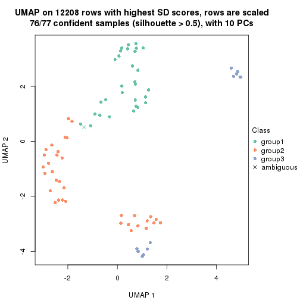
dimension_reduction(res, k = 4, method = "UMAP")
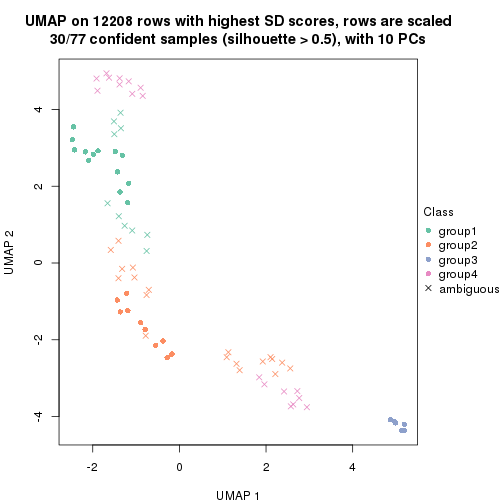
dimension_reduction(res, k = 5, method = "UMAP")
dimension_reduction(res, k = 6, method = "UMAP")
Following heatmap shows how subgroups are split when increasing k:
collect_classes(res)
If matrix rows can be associated to genes, consider to use functional_enrichment(res,
...) to perform function enrichment for the signature genes. See this vignette for more detailed explanations.
The object with results only for a single top-value method and a single partition method can be extracted as:
res = res_list["SD", "NMF"]
# you can also extract it by
# res = res_list["SD:NMF"]
A summary of res and all the functions that can be applied to it:
res
#> A 'ConsensusPartition' object with k = 2, 3, 4, 5, 6.
#> On a matrix with 12208 rows and 77 columns.
#> Top rows (1000, 2000, 3000, 4000, 5000) are extracted by 'SD' method.
#> Subgroups are detected by 'NMF' method.
#> Performed in total 1250 partitions by row resampling.
#> Best k for subgroups seems to be 5.
#>
#> Following methods can be applied to this 'ConsensusPartition' object:
#> [1] "cola_report" "collect_classes" "collect_plots"
#> [4] "collect_stats" "colnames" "compare_signatures"
#> [7] "consensus_heatmap" "dimension_reduction" "functional_enrichment"
#> [10] "get_anno_col" "get_anno" "get_classes"
#> [13] "get_consensus" "get_matrix" "get_membership"
#> [16] "get_param" "get_signatures" "get_stats"
#> [19] "is_best_k" "is_stable_k" "membership_heatmap"
#> [22] "ncol" "nrow" "plot_ecdf"
#> [25] "rownames" "select_partition_number" "show"
#> [28] "suggest_best_k" "test_to_known_factors"
collect_plots() function collects all the plots made from res for all k (number of partitions)
into one single page to provide an easy and fast comparison between different k.
collect_plots(res)
The plots are:
k and the heatmap of
predicted classes for each k.k.k.k.All the plots in panels can be made by individual functions and they are plotted later in this section.
select_partition_number() produces several plots showing different
statistics for choosing “optimized” k. There are following statistics:
k;k, the area increased is defined as \(A_k - A_{k-1}\).The detailed explanations of these statistics can be found in the cola vignette.
Generally speaking, lower PAC score, higher mean silhouette score or higher
concordance corresponds to better partition. Rand index and Jaccard index
measure how similar the current partition is compared to partition with k-1.
If they are too similar, we won't accept k is better than k-1.
select_partition_number(res)
The numeric values for all these statistics can be obtained by get_stats().
get_stats(res)
#> k 1-PAC mean_silhouette concordance area_increased Rand Jaccard
#> 2 2 0.920 0.947 0.978 0.3772 0.637 0.637
#> 3 3 0.902 0.938 0.971 0.6989 0.661 0.494
#> 4 4 0.679 0.758 0.833 0.1385 0.778 0.479
#> 5 5 0.971 0.925 0.963 0.0776 0.807 0.425
#> 6 6 0.892 0.824 0.919 0.0268 0.936 0.734
suggest_best_k() suggests the best \(k\) based on these statistics. The rules are as follows:
suggest_best_k(res)
#> [1] 5
#> attr(,"optional")
#> [1] 2 3
There is also optional best \(k\) = 2 3 that is worth to check.
Following shows the table of the partitions (You need to click the show/hide
code output link to see it). The membership matrix (columns with name p*)
is inferred by
clue::cl_consensus()
function with the SE method. Basically the value in the membership matrix
represents the probability to belong to a certain group. The finall class
label for an item is determined with the group with highest probability it
belongs to.
In get_classes() function, the entropy is calculated from the membership
matrix and the silhouette score is calculated from the consensus matrix.
cbind(get_classes(res, k = 2), get_membership(res, k = 2))
#> class entropy silhouette p1 p2
#> SRR2044063 1 0.000 0.975 1.000 0.000
#> SRR2044062 1 0.000 0.975 1.000 0.000
#> SRR2044061 1 0.000 0.975 1.000 0.000
#> SRR2044060 1 0.000 0.975 1.000 0.000
#> SRR2044099 1 0.000 0.975 1.000 0.000
#> SRR2044098 1 0.000 0.975 1.000 0.000
#> SRR2044097 1 0.000 0.975 1.000 0.000
#> SRR2044096 1 0.000 0.975 1.000 0.000
#> SRR2044095 1 0.000 0.975 1.000 0.000
#> SRR2044094 1 0.000 0.975 1.000 0.000
#> SRR2044087 1 0.000 0.975 1.000 0.000
#> SRR2044086 1 0.000 0.975 1.000 0.000
#> SRR2044085 1 0.000 0.975 1.000 0.000
#> SRR2044084 1 0.000 0.975 1.000 0.000
#> SRR2044083 1 0.000 0.975 1.000 0.000
#> SRR2044082 1 0.000 0.975 1.000 0.000
#> SRR2044075 1 0.000 0.975 1.000 0.000
#> SRR2044074 1 0.000 0.975 1.000 0.000
#> SRR2044073 1 0.000 0.975 1.000 0.000
#> SRR2044072 1 0.000 0.975 1.000 0.000
#> SRR2044071 1 0.000 0.975 1.000 0.000
#> SRR2044070 1 0.000 0.975 1.000 0.000
#> SRR2044069 2 0.000 0.983 0.000 1.000
#> SRR2044068 2 0.000 0.983 0.000 1.000
#> SRR2044067 2 0.000 0.983 0.000 1.000
#> SRR2044066 2 0.000 0.983 0.000 1.000
#> SRR2044065 2 0.000 0.983 0.000 1.000
#> SRR2044064 2 0.000 0.983 0.000 1.000
#> SRR2044059 1 0.000 0.975 1.000 0.000
#> SRR2044058 1 0.000 0.975 1.000 0.000
#> SRR2044057 1 0.000 0.975 1.000 0.000
#> SRR2044056 1 0.000 0.975 1.000 0.000
#> SRR2044055 1 0.000 0.975 1.000 0.000
#> SRR2044054 1 0.000 0.975 1.000 0.000
#> SRR2044053 1 0.000 0.975 1.000 0.000
#> SRR2044052 1 0.118 0.961 0.984 0.016
#> SRR2044051 1 0.000 0.975 1.000 0.000
#> SRR2044050 1 0.000 0.975 1.000 0.000
#> SRR2044049 1 0.000 0.975 1.000 0.000
#> SRR2044048 1 0.000 0.975 1.000 0.000
#> SRR2044047 1 0.000 0.975 1.000 0.000
#> SRR2044046 1 0.000 0.975 1.000 0.000
#> SRR2044045 1 0.000 0.975 1.000 0.000
#> SRR2044044 1 0.000 0.975 1.000 0.000
#> SRR2044042 1 0.000 0.975 1.000 0.000
#> SRR2044041 1 0.000 0.975 1.000 0.000
#> SRR2044040 1 0.000 0.975 1.000 0.000
#> SRR2044039 2 0.260 0.950 0.044 0.956
#> SRR2044038 1 0.469 0.879 0.900 0.100
#> SRR2044037 1 0.518 0.862 0.884 0.116
#> SRR2044036 2 0.260 0.950 0.044 0.956
#> SRR2044035 1 0.506 0.866 0.888 0.112
#> SRR2044034 1 0.653 0.796 0.832 0.168
#> SRR2044033 1 0.000 0.975 1.000 0.000
#> SRR2044032 1 0.000 0.975 1.000 0.000
#> SRR2044031 1 0.000 0.975 1.000 0.000
#> SRR2044030 1 0.000 0.975 1.000 0.000
#> SRR2044029 1 0.000 0.975 1.000 0.000
#> SRR2044028 1 0.000 0.975 1.000 0.000
#> SRR2044027 2 0.000 0.983 0.000 1.000
#> SRR2044026 1 0.981 0.289 0.580 0.420
#> SRR2044024 2 0.000 0.983 0.000 1.000
#> SRR2044023 1 0.998 0.121 0.528 0.472
#> SRR2044025 2 0.141 0.970 0.020 0.980
#> SRR2044022 2 0.662 0.791 0.172 0.828
#> SRR2044021 1 0.000 0.975 1.000 0.000
#> SRR2044020 1 0.000 0.975 1.000 0.000
#> SRR2044019 1 0.000 0.975 1.000 0.000
#> SRR2044018 1 0.000 0.975 1.000 0.000
#> SRR2044017 1 0.000 0.975 1.000 0.000
#> SRR2044016 1 0.000 0.975 1.000 0.000
#> SRR2044015 2 0.000 0.983 0.000 1.000
#> SRR2044014 2 0.000 0.983 0.000 1.000
#> SRR2044013 2 0.000 0.983 0.000 1.000
#> SRR2044011 2 0.000 0.983 0.000 1.000
#> SRR2044010 2 0.000 0.983 0.000 1.000
#> SRR2044012 2 0.000 0.983 0.000 1.000
cbind(get_classes(res, k = 3), get_membership(res, k = 3))
#> class entropy silhouette p1 p2 p3
#> SRR2044063 2 0.000 0.967 0.000 1.000 0.000
#> SRR2044062 2 0.000 0.967 0.000 1.000 0.000
#> SRR2044061 2 0.000 0.967 0.000 1.000 0.000
#> SRR2044060 2 0.000 0.967 0.000 1.000 0.000
#> SRR2044099 1 0.000 0.959 1.000 0.000 0.000
#> SRR2044098 1 0.000 0.959 1.000 0.000 0.000
#> SRR2044097 1 0.000 0.959 1.000 0.000 0.000
#> SRR2044096 1 0.000 0.959 1.000 0.000 0.000
#> SRR2044095 1 0.000 0.959 1.000 0.000 0.000
#> SRR2044094 1 0.000 0.959 1.000 0.000 0.000
#> SRR2044087 1 0.369 0.841 0.860 0.140 0.000
#> SRR2044086 1 0.540 0.668 0.720 0.280 0.000
#> SRR2044085 1 0.460 0.778 0.796 0.204 0.000
#> SRR2044084 1 0.424 0.807 0.824 0.176 0.000
#> SRR2044083 1 0.497 0.737 0.764 0.236 0.000
#> SRR2044082 1 0.489 0.748 0.772 0.228 0.000
#> SRR2044075 2 0.000 0.967 0.000 1.000 0.000
#> SRR2044074 2 0.000 0.967 0.000 1.000 0.000
#> SRR2044073 2 0.000 0.967 0.000 1.000 0.000
#> SRR2044072 2 0.000 0.967 0.000 1.000 0.000
#> SRR2044071 2 0.000 0.967 0.000 1.000 0.000
#> SRR2044070 2 0.000 0.967 0.000 1.000 0.000
#> SRR2044069 3 0.000 0.987 0.000 0.000 1.000
#> SRR2044068 3 0.000 0.987 0.000 0.000 1.000
#> SRR2044067 3 0.000 0.987 0.000 0.000 1.000
#> SRR2044066 3 0.000 0.987 0.000 0.000 1.000
#> SRR2044065 3 0.000 0.987 0.000 0.000 1.000
#> SRR2044064 3 0.000 0.987 0.000 0.000 1.000
#> SRR2044059 2 0.000 0.967 0.000 1.000 0.000
#> SRR2044058 2 0.000 0.967 0.000 1.000 0.000
#> SRR2044057 1 0.000 0.959 1.000 0.000 0.000
#> SRR2044056 1 0.000 0.959 1.000 0.000 0.000
#> SRR2044055 1 0.000 0.959 1.000 0.000 0.000
#> SRR2044054 1 0.000 0.959 1.000 0.000 0.000
#> SRR2044053 1 0.000 0.959 1.000 0.000 0.000
#> SRR2044052 1 0.000 0.959 1.000 0.000 0.000
#> SRR2044051 2 0.000 0.967 0.000 1.000 0.000
#> SRR2044050 2 0.000 0.967 0.000 1.000 0.000
#> SRR2044049 2 0.000 0.967 0.000 1.000 0.000
#> SRR2044048 2 0.000 0.967 0.000 1.000 0.000
#> SRR2044047 2 0.000 0.967 0.000 1.000 0.000
#> SRR2044046 2 0.000 0.967 0.000 1.000 0.000
#> SRR2044045 1 0.000 0.959 1.000 0.000 0.000
#> SRR2044044 1 0.000 0.959 1.000 0.000 0.000
#> SRR2044042 1 0.000 0.959 1.000 0.000 0.000
#> SRR2044041 1 0.000 0.959 1.000 0.000 0.000
#> SRR2044040 1 0.000 0.959 1.000 0.000 0.000
#> SRR2044039 2 0.533 0.640 0.000 0.728 0.272
#> SRR2044038 2 0.000 0.967 0.000 1.000 0.000
#> SRR2044037 2 0.000 0.967 0.000 1.000 0.000
#> SRR2044036 2 0.529 0.647 0.000 0.732 0.268
#> SRR2044035 2 0.000 0.967 0.000 1.000 0.000
#> SRR2044034 2 0.000 0.967 0.000 1.000 0.000
#> SRR2044033 1 0.000 0.959 1.000 0.000 0.000
#> SRR2044032 1 0.000 0.959 1.000 0.000 0.000
#> SRR2044031 1 0.000 0.959 1.000 0.000 0.000
#> SRR2044030 1 0.000 0.959 1.000 0.000 0.000
#> SRR2044029 1 0.000 0.959 1.000 0.000 0.000
#> SRR2044028 1 0.000 0.959 1.000 0.000 0.000
#> SRR2044027 3 0.245 0.918 0.000 0.076 0.924
#> SRR2044026 2 0.000 0.967 0.000 1.000 0.000
#> SRR2044024 3 0.271 0.905 0.000 0.088 0.912
#> SRR2044023 2 0.000 0.967 0.000 1.000 0.000
#> SRR2044025 2 0.460 0.745 0.000 0.796 0.204
#> SRR2044022 2 0.245 0.898 0.000 0.924 0.076
#> SRR2044021 1 0.000 0.959 1.000 0.000 0.000
#> SRR2044020 1 0.000 0.959 1.000 0.000 0.000
#> SRR2044019 1 0.000 0.959 1.000 0.000 0.000
#> SRR2044018 1 0.000 0.959 1.000 0.000 0.000
#> SRR2044017 1 0.000 0.959 1.000 0.000 0.000
#> SRR2044016 1 0.000 0.959 1.000 0.000 0.000
#> SRR2044015 3 0.000 0.987 0.000 0.000 1.000
#> SRR2044014 3 0.000 0.987 0.000 0.000 1.000
#> SRR2044013 3 0.000 0.987 0.000 0.000 1.000
#> SRR2044011 3 0.000 0.987 0.000 0.000 1.000
#> SRR2044010 3 0.000 0.987 0.000 0.000 1.000
#> SRR2044012 3 0.000 0.987 0.000 0.000 1.000
cbind(get_classes(res, k = 4), get_membership(res, k = 4))
#> class entropy silhouette p1 p2 p3 p4
#> SRR2044063 2 0.4431 0.6453 0.000 0.696 0.000 0.304
#> SRR2044062 2 0.4103 0.6946 0.000 0.744 0.000 0.256
#> SRR2044061 2 0.4103 0.6946 0.000 0.744 0.000 0.256
#> SRR2044060 2 0.4382 0.6550 0.000 0.704 0.000 0.296
#> SRR2044099 1 0.4103 0.8089 0.744 0.256 0.000 0.000
#> SRR2044098 2 0.4977 -0.3012 0.460 0.540 0.000 0.000
#> SRR2044097 2 0.4304 0.3068 0.284 0.716 0.000 0.000
#> SRR2044096 1 0.4134 0.8074 0.740 0.260 0.000 0.000
#> SRR2044095 2 0.4697 0.0749 0.356 0.644 0.000 0.000
#> SRR2044094 2 0.3486 0.5181 0.188 0.812 0.000 0.000
#> SRR2044087 2 0.0000 0.7463 0.000 1.000 0.000 0.000
#> SRR2044086 2 0.0000 0.7463 0.000 1.000 0.000 0.000
#> SRR2044085 2 0.0000 0.7463 0.000 1.000 0.000 0.000
#> SRR2044084 2 0.0188 0.7437 0.004 0.996 0.000 0.000
#> SRR2044083 2 0.0000 0.7463 0.000 1.000 0.000 0.000
#> SRR2044082 2 0.0000 0.7463 0.000 1.000 0.000 0.000
#> SRR2044075 2 0.2921 0.7535 0.000 0.860 0.000 0.140
#> SRR2044074 2 0.2216 0.7630 0.000 0.908 0.000 0.092
#> SRR2044073 2 0.2081 0.7634 0.000 0.916 0.000 0.084
#> SRR2044072 2 0.3024 0.7510 0.000 0.852 0.000 0.148
#> SRR2044071 2 0.2149 0.7633 0.000 0.912 0.000 0.088
#> SRR2044070 2 0.1867 0.7621 0.000 0.928 0.000 0.072
#> SRR2044069 3 0.0000 0.9046 0.000 0.000 1.000 0.000
#> SRR2044068 3 0.0000 0.9046 0.000 0.000 1.000 0.000
#> SRR2044067 3 0.0000 0.9046 0.000 0.000 1.000 0.000
#> SRR2044066 3 0.0000 0.9046 0.000 0.000 1.000 0.000
#> SRR2044065 3 0.0000 0.9046 0.000 0.000 1.000 0.000
#> SRR2044064 3 0.0000 0.9046 0.000 0.000 1.000 0.000
#> SRR2044059 2 0.3907 0.7110 0.000 0.768 0.000 0.232
#> SRR2044058 2 0.4072 0.6978 0.000 0.748 0.000 0.252
#> SRR2044057 1 0.3219 0.6930 0.836 0.000 0.000 0.164
#> SRR2044056 1 0.0000 0.8344 1.000 0.000 0.000 0.000
#> SRR2044055 1 0.4304 0.7938 0.716 0.284 0.000 0.000
#> SRR2044054 1 0.3266 0.6881 0.832 0.000 0.000 0.168
#> SRR2044053 1 0.0188 0.8327 0.996 0.000 0.000 0.004
#> SRR2044052 1 0.4594 0.7939 0.712 0.280 0.008 0.000
#> SRR2044051 4 0.1716 0.9053 0.000 0.064 0.000 0.936
#> SRR2044050 2 0.4331 0.6633 0.000 0.712 0.000 0.288
#> SRR2044049 2 0.4431 0.6453 0.000 0.696 0.000 0.304
#> SRR2044048 4 0.3837 0.6793 0.000 0.224 0.000 0.776
#> SRR2044047 2 0.4406 0.6503 0.000 0.700 0.000 0.300
#> SRR2044046 2 0.4406 0.6503 0.000 0.700 0.000 0.300
#> SRR2044045 1 0.0188 0.8327 0.996 0.000 0.000 0.004
#> SRR2044044 1 0.0000 0.8344 1.000 0.000 0.000 0.000
#> SRR2044042 1 0.0336 0.8307 0.992 0.000 0.000 0.008
#> SRR2044041 1 0.0000 0.8344 1.000 0.000 0.000 0.000
#> SRR2044040 1 0.4331 0.7909 0.712 0.288 0.000 0.000
#> SRR2044039 4 0.0000 0.9027 0.000 0.000 0.000 1.000
#> SRR2044038 4 0.2345 0.8763 0.000 0.100 0.000 0.900
#> SRR2044037 4 0.1211 0.9127 0.000 0.040 0.000 0.960
#> SRR2044036 4 0.0707 0.8896 0.000 0.000 0.020 0.980
#> SRR2044035 4 0.2149 0.8880 0.000 0.088 0.000 0.912
#> SRR2044034 4 0.1792 0.9027 0.000 0.068 0.000 0.932
#> SRR2044033 1 0.0000 0.8344 1.000 0.000 0.000 0.000
#> SRR2044032 1 0.0000 0.8344 1.000 0.000 0.000 0.000
#> SRR2044031 1 0.4382 0.7839 0.704 0.296 0.000 0.000
#> SRR2044030 1 0.0000 0.8344 1.000 0.000 0.000 0.000
#> SRR2044029 1 0.0000 0.8344 1.000 0.000 0.000 0.000
#> SRR2044028 1 0.4356 0.7876 0.708 0.292 0.000 0.000
#> SRR2044027 4 0.2760 0.7537 0.000 0.000 0.128 0.872
#> SRR2044026 4 0.0817 0.9142 0.000 0.024 0.000 0.976
#> SRR2044024 4 0.2814 0.7475 0.000 0.000 0.132 0.868
#> SRR2044023 4 0.0707 0.9134 0.000 0.020 0.000 0.980
#> SRR2044025 4 0.0469 0.9101 0.000 0.012 0.000 0.988
#> SRR2044022 4 0.1004 0.9143 0.000 0.024 0.004 0.972
#> SRR2044021 1 0.3024 0.8303 0.852 0.148 0.000 0.000
#> SRR2044020 1 0.4103 0.8089 0.744 0.256 0.000 0.000
#> SRR2044019 1 0.4406 0.7799 0.700 0.300 0.000 0.000
#> SRR2044018 1 0.1022 0.8365 0.968 0.032 0.000 0.000
#> SRR2044017 1 0.4164 0.8056 0.736 0.264 0.000 0.000
#> SRR2044016 1 0.4406 0.7799 0.700 0.300 0.000 0.000
#> SRR2044015 3 0.0000 0.9046 0.000 0.000 1.000 0.000
#> SRR2044014 3 0.4888 0.4115 0.000 0.000 0.588 0.412
#> SRR2044013 3 0.4776 0.4927 0.000 0.000 0.624 0.376
#> SRR2044011 3 0.1302 0.8823 0.000 0.000 0.956 0.044
#> SRR2044010 3 0.3311 0.7784 0.000 0.000 0.828 0.172
#> SRR2044012 3 0.0000 0.9046 0.000 0.000 1.000 0.000
cbind(get_classes(res, k = 5), get_membership(res, k = 5))
#> class entropy silhouette p1 p2 p3 p4 p5
#> SRR2044063 2 0.0162 0.939 0.004 0.996 0.000 0.000 0.000
#> SRR2044062 2 0.0703 0.941 0.024 0.976 0.000 0.000 0.000
#> SRR2044061 2 0.0404 0.941 0.012 0.988 0.000 0.000 0.000
#> SRR2044060 2 0.0162 0.939 0.004 0.996 0.000 0.000 0.000
#> SRR2044099 1 0.0880 0.942 0.968 0.000 0.000 0.000 0.032
#> SRR2044098 1 0.0162 0.948 0.996 0.004 0.000 0.000 0.000
#> SRR2044097 1 0.0000 0.949 1.000 0.000 0.000 0.000 0.000
#> SRR2044096 1 0.0794 0.944 0.972 0.000 0.000 0.000 0.028
#> SRR2044095 1 0.0162 0.948 0.996 0.004 0.000 0.000 0.000
#> SRR2044094 1 0.0000 0.949 1.000 0.000 0.000 0.000 0.000
#> SRR2044087 1 0.1851 0.884 0.912 0.088 0.000 0.000 0.000
#> SRR2044086 2 0.4150 0.383 0.388 0.612 0.000 0.000 0.000
#> SRR2044085 1 0.0703 0.937 0.976 0.024 0.000 0.000 0.000
#> SRR2044084 1 0.1544 0.904 0.932 0.068 0.000 0.000 0.000
#> SRR2044083 1 0.3983 0.463 0.660 0.340 0.000 0.000 0.000
#> SRR2044082 1 0.1270 0.918 0.948 0.052 0.000 0.000 0.000
#> SRR2044075 2 0.1197 0.934 0.048 0.952 0.000 0.000 0.000
#> SRR2044074 2 0.1341 0.930 0.056 0.944 0.000 0.000 0.000
#> SRR2044073 2 0.1341 0.930 0.056 0.944 0.000 0.000 0.000
#> SRR2044072 2 0.0880 0.940 0.032 0.968 0.000 0.000 0.000
#> SRR2044071 2 0.1341 0.930 0.056 0.944 0.000 0.000 0.000
#> SRR2044070 2 0.1341 0.930 0.056 0.944 0.000 0.000 0.000
#> SRR2044069 3 0.0000 0.894 0.000 0.000 1.000 0.000 0.000
#> SRR2044068 3 0.0000 0.894 0.000 0.000 1.000 0.000 0.000
#> SRR2044067 3 0.0000 0.894 0.000 0.000 1.000 0.000 0.000
#> SRR2044066 3 0.0000 0.894 0.000 0.000 1.000 0.000 0.000
#> SRR2044065 3 0.0000 0.894 0.000 0.000 1.000 0.000 0.000
#> SRR2044064 3 0.0000 0.894 0.000 0.000 1.000 0.000 0.000
#> SRR2044059 2 0.0880 0.940 0.032 0.968 0.000 0.000 0.000
#> SRR2044058 2 0.0609 0.941 0.020 0.980 0.000 0.000 0.000
#> SRR2044057 5 0.0162 0.981 0.000 0.000 0.000 0.004 0.996
#> SRR2044056 5 0.0290 0.985 0.008 0.000 0.000 0.000 0.992
#> SRR2044055 1 0.0510 0.949 0.984 0.000 0.000 0.000 0.016
#> SRR2044054 5 0.0162 0.981 0.000 0.000 0.000 0.004 0.996
#> SRR2044053 5 0.0290 0.985 0.008 0.000 0.000 0.000 0.992
#> SRR2044052 1 0.0798 0.947 0.976 0.000 0.008 0.000 0.016
#> SRR2044051 2 0.2798 0.785 0.000 0.852 0.000 0.140 0.008
#> SRR2044050 2 0.0000 0.938 0.000 1.000 0.000 0.000 0.000
#> SRR2044049 2 0.0000 0.938 0.000 1.000 0.000 0.000 0.000
#> SRR2044048 2 0.0992 0.917 0.000 0.968 0.000 0.024 0.008
#> SRR2044047 2 0.0000 0.938 0.000 1.000 0.000 0.000 0.000
#> SRR2044046 2 0.0000 0.938 0.000 1.000 0.000 0.000 0.000
#> SRR2044045 5 0.0162 0.984 0.004 0.000 0.000 0.000 0.996
#> SRR2044044 5 0.0290 0.985 0.008 0.000 0.000 0.000 0.992
#> SRR2044042 5 0.0162 0.984 0.004 0.000 0.000 0.000 0.996
#> SRR2044041 5 0.0290 0.985 0.008 0.000 0.000 0.000 0.992
#> SRR2044040 1 0.0510 0.949 0.984 0.000 0.000 0.000 0.016
#> SRR2044039 4 0.0000 0.993 0.000 0.000 0.000 1.000 0.000
#> SRR2044038 4 0.0162 0.993 0.000 0.004 0.000 0.996 0.000
#> SRR2044037 4 0.0162 0.993 0.000 0.004 0.000 0.996 0.000
#> SRR2044036 4 0.0000 0.993 0.000 0.000 0.000 1.000 0.000
#> SRR2044035 4 0.0162 0.993 0.000 0.004 0.000 0.996 0.000
#> SRR2044034 4 0.0162 0.993 0.000 0.004 0.000 0.996 0.000
#> SRR2044033 5 0.0290 0.985 0.008 0.000 0.000 0.000 0.992
#> SRR2044032 5 0.1341 0.938 0.056 0.000 0.000 0.000 0.944
#> SRR2044031 1 0.0162 0.950 0.996 0.000 0.000 0.000 0.004
#> SRR2044030 5 0.0290 0.985 0.008 0.000 0.000 0.000 0.992
#> SRR2044029 5 0.1341 0.938 0.056 0.000 0.000 0.000 0.944
#> SRR2044028 1 0.0290 0.950 0.992 0.000 0.000 0.000 0.008
#> SRR2044027 4 0.0000 0.993 0.000 0.000 0.000 1.000 0.000
#> SRR2044026 4 0.0290 0.991 0.000 0.008 0.000 0.992 0.000
#> SRR2044024 4 0.0000 0.993 0.000 0.000 0.000 1.000 0.000
#> SRR2044023 4 0.0290 0.991 0.000 0.008 0.000 0.992 0.000
#> SRR2044025 4 0.0324 0.992 0.000 0.004 0.004 0.992 0.000
#> SRR2044022 4 0.0290 0.991 0.000 0.008 0.000 0.992 0.000
#> SRR2044021 1 0.1341 0.925 0.944 0.000 0.000 0.000 0.056
#> SRR2044020 1 0.1197 0.936 0.952 0.000 0.000 0.000 0.048
#> SRR2044019 1 0.0162 0.950 0.996 0.000 0.000 0.000 0.004
#> SRR2044018 1 0.1608 0.911 0.928 0.000 0.000 0.000 0.072
#> SRR2044017 1 0.1043 0.939 0.960 0.000 0.000 0.000 0.040
#> SRR2044016 1 0.0162 0.950 0.996 0.000 0.000 0.000 0.004
#> SRR2044015 3 0.3730 0.629 0.000 0.000 0.712 0.288 0.000
#> SRR2044014 4 0.0000 0.993 0.000 0.000 0.000 1.000 0.000
#> SRR2044013 4 0.0162 0.991 0.000 0.000 0.004 0.996 0.000
#> SRR2044011 4 0.0703 0.974 0.000 0.000 0.024 0.976 0.000
#> SRR2044010 4 0.0510 0.982 0.000 0.000 0.016 0.984 0.000
#> SRR2044012 3 0.4114 0.463 0.000 0.000 0.624 0.376 0.000
cbind(get_classes(res, k = 6), get_membership(res, k = 6))
#> class entropy silhouette p1 p2 p3 p4 p5 p6
#> SRR2044063 2 0.2003 0.764 0.000 0.884 0.000 0.000 0.000 0.116
#> SRR2044062 2 0.0713 0.811 0.000 0.972 0.000 0.000 0.000 0.028
#> SRR2044061 2 0.0865 0.809 0.000 0.964 0.000 0.000 0.000 0.036
#> SRR2044060 2 0.2048 0.761 0.000 0.880 0.000 0.000 0.000 0.120
#> SRR2044099 1 0.0777 0.896 0.972 0.004 0.000 0.000 0.000 0.024
#> SRR2044098 1 0.2877 0.757 0.820 0.168 0.000 0.000 0.000 0.012
#> SRR2044097 1 0.0520 0.900 0.984 0.008 0.000 0.000 0.000 0.008
#> SRR2044096 1 0.0865 0.891 0.964 0.000 0.000 0.000 0.000 0.036
#> SRR2044095 1 0.2357 0.812 0.872 0.116 0.000 0.000 0.000 0.012
#> SRR2044094 1 0.0717 0.898 0.976 0.016 0.000 0.000 0.000 0.008
#> SRR2044087 1 0.4260 0.125 0.512 0.472 0.000 0.000 0.000 0.016
#> SRR2044086 2 0.1802 0.753 0.072 0.916 0.000 0.000 0.000 0.012
#> SRR2044085 1 0.4238 0.228 0.540 0.444 0.000 0.000 0.000 0.016
#> SRR2044084 2 0.4184 0.185 0.408 0.576 0.000 0.000 0.000 0.016
#> SRR2044083 2 0.2212 0.713 0.112 0.880 0.000 0.000 0.000 0.008
#> SRR2044082 2 0.3789 0.403 0.332 0.660 0.000 0.000 0.000 0.008
#> SRR2044075 2 0.0458 0.812 0.000 0.984 0.000 0.000 0.000 0.016
#> SRR2044074 2 0.0260 0.808 0.000 0.992 0.000 0.000 0.000 0.008
#> SRR2044073 2 0.0146 0.810 0.000 0.996 0.000 0.000 0.000 0.004
#> SRR2044072 2 0.1075 0.809 0.000 0.952 0.000 0.000 0.000 0.048
#> SRR2044071 2 0.0260 0.808 0.000 0.992 0.000 0.000 0.000 0.008
#> SRR2044070 2 0.0146 0.810 0.000 0.996 0.000 0.000 0.000 0.004
#> SRR2044069 3 0.0000 1.000 0.000 0.000 1.000 0.000 0.000 0.000
#> SRR2044068 3 0.0000 1.000 0.000 0.000 1.000 0.000 0.000 0.000
#> SRR2044067 3 0.0000 1.000 0.000 0.000 1.000 0.000 0.000 0.000
#> SRR2044066 3 0.0000 1.000 0.000 0.000 1.000 0.000 0.000 0.000
#> SRR2044065 3 0.0000 1.000 0.000 0.000 1.000 0.000 0.000 0.000
#> SRR2044064 3 0.0000 1.000 0.000 0.000 1.000 0.000 0.000 0.000
#> SRR2044059 2 0.0458 0.812 0.000 0.984 0.000 0.000 0.000 0.016
#> SRR2044058 2 0.0790 0.810 0.000 0.968 0.000 0.000 0.000 0.032
#> SRR2044057 5 0.0000 0.969 0.000 0.000 0.000 0.000 1.000 0.000
#> SRR2044056 5 0.0146 0.971 0.004 0.000 0.000 0.000 0.996 0.000
#> SRR2044055 1 0.0547 0.898 0.980 0.000 0.000 0.000 0.000 0.020
#> SRR2044054 5 0.0000 0.969 0.000 0.000 0.000 0.000 1.000 0.000
#> SRR2044053 5 0.0146 0.971 0.004 0.000 0.000 0.000 0.996 0.000
#> SRR2044052 1 0.0547 0.898 0.980 0.000 0.000 0.000 0.000 0.020
#> SRR2044051 6 0.2282 0.903 0.000 0.088 0.000 0.024 0.000 0.888
#> SRR2044050 2 0.2941 0.653 0.000 0.780 0.000 0.000 0.000 0.220
#> SRR2044049 2 0.3706 0.363 0.000 0.620 0.000 0.000 0.000 0.380
#> SRR2044048 6 0.2378 0.906 0.000 0.152 0.000 0.000 0.000 0.848
#> SRR2044047 2 0.3330 0.563 0.000 0.716 0.000 0.000 0.000 0.284
#> SRR2044046 2 0.3607 0.446 0.000 0.652 0.000 0.000 0.000 0.348
#> SRR2044045 5 0.0000 0.969 0.000 0.000 0.000 0.000 1.000 0.000
#> SRR2044044 5 0.0146 0.971 0.004 0.000 0.000 0.000 0.996 0.000
#> SRR2044042 5 0.0000 0.969 0.000 0.000 0.000 0.000 1.000 0.000
#> SRR2044041 5 0.0146 0.971 0.004 0.000 0.000 0.000 0.996 0.000
#> SRR2044040 1 0.0260 0.900 0.992 0.000 0.000 0.000 0.000 0.008
#> SRR2044039 4 0.0260 0.912 0.000 0.000 0.000 0.992 0.000 0.008
#> SRR2044038 4 0.0790 0.911 0.000 0.000 0.000 0.968 0.000 0.032
#> SRR2044037 4 0.0632 0.912 0.000 0.000 0.000 0.976 0.000 0.024
#> SRR2044036 4 0.0260 0.912 0.000 0.000 0.000 0.992 0.000 0.008
#> SRR2044035 4 0.0632 0.912 0.000 0.000 0.000 0.976 0.000 0.024
#> SRR2044034 4 0.0458 0.912 0.000 0.000 0.000 0.984 0.000 0.016
#> SRR2044033 5 0.0260 0.969 0.008 0.000 0.000 0.000 0.992 0.000
#> SRR2044032 5 0.1806 0.879 0.088 0.000 0.000 0.000 0.908 0.004
#> SRR2044031 1 0.0146 0.900 0.996 0.000 0.000 0.000 0.000 0.004
#> SRR2044030 5 0.0260 0.969 0.008 0.000 0.000 0.000 0.992 0.000
#> SRR2044029 5 0.2191 0.834 0.120 0.000 0.000 0.000 0.876 0.004
#> SRR2044028 1 0.0146 0.900 0.996 0.000 0.000 0.000 0.000 0.004
#> SRR2044027 4 0.0547 0.911 0.000 0.000 0.000 0.980 0.000 0.020
#> SRR2044026 4 0.1387 0.898 0.000 0.000 0.000 0.932 0.000 0.068
#> SRR2044024 4 0.0790 0.911 0.000 0.000 0.000 0.968 0.000 0.032
#> SRR2044023 4 0.1644 0.889 0.000 0.004 0.000 0.920 0.000 0.076
#> SRR2044025 4 0.1387 0.900 0.000 0.000 0.000 0.932 0.000 0.068
#> SRR2044022 4 0.1556 0.893 0.000 0.000 0.000 0.920 0.000 0.080
#> SRR2044021 1 0.0790 0.894 0.968 0.000 0.000 0.000 0.000 0.032
#> SRR2044020 1 0.0964 0.893 0.968 0.016 0.000 0.000 0.004 0.012
#> SRR2044019 1 0.0146 0.900 0.996 0.000 0.000 0.000 0.000 0.004
#> SRR2044018 1 0.1010 0.890 0.960 0.000 0.000 0.000 0.004 0.036
#> SRR2044017 1 0.0820 0.894 0.972 0.016 0.000 0.000 0.000 0.012
#> SRR2044016 1 0.0363 0.900 0.988 0.000 0.000 0.000 0.000 0.012
#> SRR2044015 4 0.4181 0.179 0.000 0.000 0.476 0.512 0.000 0.012
#> SRR2044014 4 0.1196 0.904 0.000 0.000 0.008 0.952 0.000 0.040
#> SRR2044013 4 0.1245 0.904 0.000 0.000 0.016 0.952 0.000 0.032
#> SRR2044011 4 0.1421 0.901 0.000 0.000 0.028 0.944 0.000 0.028
#> SRR2044010 4 0.1245 0.904 0.000 0.000 0.016 0.952 0.000 0.032
#> SRR2044012 4 0.3992 0.475 0.000 0.000 0.364 0.624 0.000 0.012
Heatmaps for the consensus matrix. It visualizes the probability of two samples to be in a same group.
consensus_heatmap(res, k = 2)
consensus_heatmap(res, k = 3)
consensus_heatmap(res, k = 4)
consensus_heatmap(res, k = 5)
consensus_heatmap(res, k = 6)

Heatmaps for the membership of samples in all partitions to see how consistent they are:
membership_heatmap(res, k = 2)
membership_heatmap(res, k = 3)
membership_heatmap(res, k = 4)
membership_heatmap(res, k = 5)
membership_heatmap(res, k = 6)
As soon as we have had the classes for columns, we can look for signatures which are significantly different between classes which can be candidate marks for certain classes. Following are the heatmaps for signatures.
Signature heatmaps where rows are scaled:
get_signatures(res, k = 2)
get_signatures(res, k = 3)
get_signatures(res, k = 4)
get_signatures(res, k = 5)
get_signatures(res, k = 6)
Signature heatmaps where rows are not scaled:
get_signatures(res, k = 2, scale_rows = FALSE)

get_signatures(res, k = 3, scale_rows = FALSE)
get_signatures(res, k = 4, scale_rows = FALSE)
get_signatures(res, k = 5, scale_rows = FALSE)
get_signatures(res, k = 6, scale_rows = FALSE)
Compare the overlap of signatures from different k:
compare_signatures(res)
get_signature() returns a data frame invisibly. TO get the list of signatures, the function
call should be assigned to a variable explicitly. In following code, if plot argument is set
to FALSE, no heatmap is plotted while only the differential analysis is performed.
# code only for demonstration
tb = get_signature(res, k = ..., plot = FALSE)
An example of the output of tb is:
#> which_row fdr mean_1 mean_2 scaled_mean_1 scaled_mean_2 km
#> 1 38 0.042760348 8.373488 9.131774 -0.5533452 0.5164555 1
#> 2 40 0.018707592 7.106213 8.469186 -0.6173731 0.5762149 1
#> 3 55 0.019134737 10.221463 11.207825 -0.6159697 0.5749050 1
#> 4 59 0.006059896 5.921854 7.869574 -0.6899429 0.6439467 1
#> 5 60 0.018055526 8.928898 10.211722 -0.6204761 0.5791110 1
#> 6 98 0.009384629 15.714769 14.887706 0.6635654 -0.6193277 2
...
The columns in tb are:
which_row: row indices corresponding to the input matrix.fdr: FDR for the differential test. mean_x: The mean value in group x.scaled_mean_x: The mean value in group x after rows are scaled.km: Row groups if k-means clustering is applied to rows.UMAP plot which shows how samples are separated.
dimension_reduction(res, k = 2, method = "UMAP")
dimension_reduction(res, k = 3, method = "UMAP")

dimension_reduction(res, k = 4, method = "UMAP")
dimension_reduction(res, k = 5, method = "UMAP")
dimension_reduction(res, k = 6, method = "UMAP")
Following heatmap shows how subgroups are split when increasing k:
collect_classes(res)
If matrix rows can be associated to genes, consider to use functional_enrichment(res,
...) to perform function enrichment for the signature genes. See this vignette for more detailed explanations.
The object with results only for a single top-value method and a single partition method can be extracted as:
res = res_list["CV", "hclust"]
# you can also extract it by
# res = res_list["CV:hclust"]
A summary of res and all the functions that can be applied to it:
res
#> A 'ConsensusPartition' object with k = 2, 3, 4, 5, 6.
#> On a matrix with 12208 rows and 77 columns.
#> Top rows (1000, 2000, 3000, 4000, 5000) are extracted by 'CV' method.
#> Subgroups are detected by 'hclust' method.
#> Performed in total 1250 partitions by row resampling.
#> Best k for subgroups seems to be 3.
#>
#> Following methods can be applied to this 'ConsensusPartition' object:
#> [1] "cola_report" "collect_classes" "collect_plots"
#> [4] "collect_stats" "colnames" "compare_signatures"
#> [7] "consensus_heatmap" "dimension_reduction" "functional_enrichment"
#> [10] "get_anno_col" "get_anno" "get_classes"
#> [13] "get_consensus" "get_matrix" "get_membership"
#> [16] "get_param" "get_signatures" "get_stats"
#> [19] "is_best_k" "is_stable_k" "membership_heatmap"
#> [22] "ncol" "nrow" "plot_ecdf"
#> [25] "rownames" "select_partition_number" "show"
#> [28] "suggest_best_k" "test_to_known_factors"
collect_plots() function collects all the plots made from res for all k (number of partitions)
into one single page to provide an easy and fast comparison between different k.
collect_plots(res)
The plots are:
k and the heatmap of
predicted classes for each k.k.k.k.All the plots in panels can be made by individual functions and they are plotted later in this section.
select_partition_number() produces several plots showing different
statistics for choosing “optimized” k. There are following statistics:
k;k, the area increased is defined as \(A_k - A_{k-1}\).The detailed explanations of these statistics can be found in the cola vignette.
Generally speaking, lower PAC score, higher mean silhouette score or higher
concordance corresponds to better partition. Rand index and Jaccard index
measure how similar the current partition is compared to partition with k-1.
If they are too similar, we won't accept k is better than k-1.
select_partition_number(res)
The numeric values for all these statistics can be obtained by get_stats().
get_stats(res)
#> k 1-PAC mean_silhouette concordance area_increased Rand Jaccard
#> 2 2 0.186 0.482 0.766 0.4174 0.576 0.576
#> 3 3 0.415 0.635 0.772 0.3461 0.854 0.752
#> 4 4 0.509 0.716 0.751 0.1675 0.773 0.547
#> 5 5 0.529 0.664 0.784 0.0319 0.996 0.987
#> 6 6 0.588 0.656 0.770 0.0620 0.902 0.711
suggest_best_k() suggests the best \(k\) based on these statistics. The rules are as follows:
suggest_best_k(res)
#> [1] 3
Following shows the table of the partitions (You need to click the show/hide
code output link to see it). The membership matrix (columns with name p*)
is inferred by
clue::cl_consensus()
function with the SE method. Basically the value in the membership matrix
represents the probability to belong to a certain group. The finall class
label for an item is determined with the group with highest probability it
belongs to.
In get_classes() function, the entropy is calculated from the membership
matrix and the silhouette score is calculated from the consensus matrix.
cbind(get_classes(res, k = 2), get_membership(res, k = 2))
#> class entropy silhouette p1 p2
#> SRR2044063 2 0.0672 0.6359 0.008 0.992
#> SRR2044062 2 0.6247 0.6624 0.156 0.844
#> SRR2044061 2 0.6148 0.6626 0.152 0.848
#> SRR2044060 2 0.0672 0.6359 0.008 0.992
#> SRR2044099 2 0.9833 0.3374 0.424 0.576
#> SRR2044098 2 0.8909 0.5367 0.308 0.692
#> SRR2044097 2 0.9427 0.4565 0.360 0.640
#> SRR2044096 2 0.9850 0.3274 0.428 0.572
#> SRR2044095 2 0.7674 0.6289 0.224 0.776
#> SRR2044094 2 0.9129 0.5149 0.328 0.672
#> SRR2044087 2 0.7883 0.6187 0.236 0.764
#> SRR2044086 2 0.7299 0.6422 0.204 0.796
#> SRR2044085 2 0.7299 0.6452 0.204 0.796
#> SRR2044084 2 0.7056 0.6505 0.192 0.808
#> SRR2044083 2 0.7602 0.6294 0.220 0.780
#> SRR2044082 2 0.7056 0.6505 0.192 0.808
#> SRR2044075 2 0.6623 0.6598 0.172 0.828
#> SRR2044074 2 0.6623 0.6591 0.172 0.828
#> SRR2044073 2 0.6623 0.6591 0.172 0.828
#> SRR2044072 2 0.6148 0.6636 0.152 0.848
#> SRR2044071 2 0.6623 0.6591 0.172 0.828
#> SRR2044070 2 0.6623 0.6591 0.172 0.828
#> SRR2044069 1 0.9970 0.1265 0.532 0.468
#> SRR2044068 1 0.9970 0.1265 0.532 0.468
#> SRR2044067 1 0.9970 0.1265 0.532 0.468
#> SRR2044066 1 0.9970 0.1265 0.532 0.468
#> SRR2044065 1 0.9970 0.1265 0.532 0.468
#> SRR2044064 1 0.9970 0.1265 0.532 0.468
#> SRR2044059 2 0.6438 0.6611 0.164 0.836
#> SRR2044058 2 0.6343 0.6619 0.160 0.840
#> SRR2044057 1 0.1414 0.6815 0.980 0.020
#> SRR2044056 1 0.1414 0.6815 0.980 0.020
#> SRR2044055 1 0.9248 0.2923 0.660 0.340
#> SRR2044054 1 0.1414 0.6815 0.980 0.020
#> SRR2044053 1 0.1414 0.6815 0.980 0.020
#> SRR2044052 1 0.1414 0.6815 0.980 0.020
#> SRR2044051 2 0.1414 0.6194 0.020 0.980
#> SRR2044050 2 0.0672 0.6359 0.008 0.992
#> SRR2044049 2 0.0672 0.6359 0.008 0.992
#> SRR2044048 2 0.1414 0.6194 0.020 0.980
#> SRR2044047 2 0.0672 0.6359 0.008 0.992
#> SRR2044046 2 0.0672 0.6359 0.008 0.992
#> SRR2044045 1 0.1414 0.6815 0.980 0.020
#> SRR2044044 1 0.2423 0.6755 0.960 0.040
#> SRR2044042 1 0.1414 0.6815 0.980 0.020
#> SRR2044041 1 0.2423 0.6755 0.960 0.040
#> SRR2044040 2 0.9944 0.2730 0.456 0.544
#> SRR2044039 2 0.6712 0.5465 0.176 0.824
#> SRR2044038 2 0.6712 0.5465 0.176 0.824
#> SRR2044037 2 0.6712 0.5465 0.176 0.824
#> SRR2044036 2 0.6712 0.5465 0.176 0.824
#> SRR2044035 2 0.6712 0.5465 0.176 0.824
#> SRR2044034 2 0.6712 0.5465 0.176 0.824
#> SRR2044033 1 0.1414 0.6815 0.980 0.020
#> SRR2044032 1 0.5059 0.6388 0.888 0.112
#> SRR2044031 2 0.9710 0.3918 0.400 0.600
#> SRR2044030 1 0.4815 0.6439 0.896 0.104
#> SRR2044029 1 0.5059 0.6388 0.888 0.112
#> SRR2044028 2 0.9710 0.3918 0.400 0.600
#> SRR2044027 2 0.6712 0.5465 0.176 0.824
#> SRR2044026 2 0.6712 0.5465 0.176 0.824
#> SRR2044024 2 0.6712 0.5465 0.176 0.824
#> SRR2044023 2 0.6712 0.5465 0.176 0.824
#> SRR2044025 2 0.6712 0.5465 0.176 0.824
#> SRR2044022 2 0.6712 0.5465 0.176 0.824
#> SRR2044021 1 0.9977 -0.0857 0.528 0.472
#> SRR2044020 1 0.9988 -0.1313 0.520 0.480
#> SRR2044019 2 0.9686 0.3988 0.396 0.604
#> SRR2044018 2 0.9909 0.2841 0.444 0.556
#> SRR2044017 1 0.9933 -0.0359 0.548 0.452
#> SRR2044016 2 0.9754 0.3783 0.408 0.592
#> SRR2044015 2 0.9970 0.0873 0.468 0.532
#> SRR2044014 2 0.9963 0.1024 0.464 0.536
#> SRR2044013 2 0.9963 0.1024 0.464 0.536
#> SRR2044011 2 0.9963 0.1024 0.464 0.536
#> SRR2044010 2 0.9963 0.1024 0.464 0.536
#> SRR2044012 2 0.9970 0.0873 0.468 0.532
cbind(get_classes(res, k = 3), get_membership(res, k = 3))
#> class entropy silhouette p1 p2 p3
#> SRR2044063 2 0.0237 0.6759 0.000 0.996 0.004
#> SRR2044062 2 0.3752 0.6915 0.144 0.856 0.000
#> SRR2044061 2 0.3686 0.6917 0.140 0.860 0.000
#> SRR2044060 2 0.0237 0.6759 0.000 0.996 0.004
#> SRR2044099 2 0.6168 0.3501 0.412 0.588 0.000
#> SRR2044098 2 0.5529 0.5724 0.296 0.704 0.000
#> SRR2044097 2 0.5882 0.4836 0.348 0.652 0.000
#> SRR2044096 2 0.6180 0.3390 0.416 0.584 0.000
#> SRR2044095 2 0.4702 0.6616 0.212 0.788 0.000
#> SRR2044094 2 0.5678 0.5372 0.316 0.684 0.000
#> SRR2044087 2 0.4842 0.6500 0.224 0.776 0.000
#> SRR2044086 2 0.4452 0.6741 0.192 0.808 0.000
#> SRR2044085 2 0.4452 0.6707 0.192 0.808 0.000
#> SRR2044084 2 0.4291 0.6815 0.180 0.820 0.000
#> SRR2044083 2 0.4654 0.6641 0.208 0.792 0.000
#> SRR2044082 2 0.4291 0.6815 0.180 0.820 0.000
#> SRR2044075 2 0.4002 0.6902 0.160 0.840 0.000
#> SRR2044074 2 0.4002 0.6880 0.160 0.840 0.000
#> SRR2044073 2 0.4002 0.6880 0.160 0.840 0.000
#> SRR2044072 2 0.3686 0.6930 0.140 0.860 0.000
#> SRR2044071 2 0.4002 0.6880 0.160 0.840 0.000
#> SRR2044070 2 0.4002 0.6880 0.160 0.840 0.000
#> SRR2044069 3 0.0000 0.9265 0.000 0.000 1.000
#> SRR2044068 3 0.0000 0.9265 0.000 0.000 1.000
#> SRR2044067 3 0.0000 0.9265 0.000 0.000 1.000
#> SRR2044066 3 0.0000 0.9265 0.000 0.000 1.000
#> SRR2044065 3 0.0000 0.9265 0.000 0.000 1.000
#> SRR2044064 3 0.0000 0.9265 0.000 0.000 1.000
#> SRR2044059 2 0.3879 0.6901 0.152 0.848 0.000
#> SRR2044058 2 0.3816 0.6909 0.148 0.852 0.000
#> SRR2044057 1 0.1163 0.8277 0.972 0.028 0.000
#> SRR2044056 1 0.1163 0.8277 0.972 0.028 0.000
#> SRR2044055 1 0.5905 0.4053 0.648 0.352 0.000
#> SRR2044054 1 0.1163 0.8277 0.972 0.028 0.000
#> SRR2044053 1 0.1163 0.8277 0.972 0.028 0.000
#> SRR2044052 1 0.1289 0.8273 0.968 0.032 0.000
#> SRR2044051 2 0.1399 0.6634 0.028 0.968 0.004
#> SRR2044050 2 0.0237 0.6759 0.000 0.996 0.004
#> SRR2044049 2 0.0237 0.6759 0.000 0.996 0.004
#> SRR2044048 2 0.1399 0.6634 0.028 0.968 0.004
#> SRR2044047 2 0.0237 0.6759 0.000 0.996 0.004
#> SRR2044046 2 0.0237 0.6759 0.000 0.996 0.004
#> SRR2044045 1 0.1163 0.8277 0.972 0.028 0.000
#> SRR2044044 1 0.1753 0.8248 0.952 0.048 0.000
#> SRR2044042 1 0.1163 0.8277 0.972 0.028 0.000
#> SRR2044041 1 0.1753 0.8248 0.952 0.048 0.000
#> SRR2044040 2 0.6252 0.2677 0.444 0.556 0.000
#> SRR2044039 2 0.5465 0.4730 0.000 0.712 0.288
#> SRR2044038 2 0.5465 0.4730 0.000 0.712 0.288
#> SRR2044037 2 0.5465 0.4730 0.000 0.712 0.288
#> SRR2044036 2 0.5465 0.4730 0.000 0.712 0.288
#> SRR2044035 2 0.5465 0.4730 0.000 0.712 0.288
#> SRR2044034 2 0.5465 0.4730 0.000 0.712 0.288
#> SRR2044033 1 0.1163 0.8277 0.972 0.028 0.000
#> SRR2044032 1 0.3340 0.7804 0.880 0.120 0.000
#> SRR2044031 2 0.6079 0.4092 0.388 0.612 0.000
#> SRR2044030 1 0.3192 0.7882 0.888 0.112 0.000
#> SRR2044029 1 0.3340 0.7804 0.880 0.120 0.000
#> SRR2044028 2 0.6079 0.4092 0.388 0.612 0.000
#> SRR2044027 2 0.5591 0.4502 0.000 0.696 0.304
#> SRR2044026 2 0.5591 0.4502 0.000 0.696 0.304
#> SRR2044024 2 0.5591 0.4502 0.000 0.696 0.304
#> SRR2044023 2 0.5591 0.4502 0.000 0.696 0.304
#> SRR2044025 2 0.5591 0.4502 0.000 0.696 0.304
#> SRR2044022 2 0.5591 0.4502 0.000 0.696 0.304
#> SRR2044021 1 0.6305 -0.0581 0.516 0.484 0.000
#> SRR2044020 1 0.6308 -0.0960 0.508 0.492 0.000
#> SRR2044019 2 0.6062 0.4173 0.384 0.616 0.000
#> SRR2044018 2 0.6225 0.2910 0.432 0.568 0.000
#> SRR2044017 1 0.6286 0.0167 0.536 0.464 0.000
#> SRR2044016 2 0.6111 0.3925 0.396 0.604 0.000
#> SRR2044015 3 0.2448 0.9238 0.000 0.076 0.924
#> SRR2044014 3 0.3038 0.9090 0.000 0.104 0.896
#> SRR2044013 3 0.3038 0.9090 0.000 0.104 0.896
#> SRR2044011 3 0.3038 0.9090 0.000 0.104 0.896
#> SRR2044010 3 0.3038 0.9090 0.000 0.104 0.896
#> SRR2044012 3 0.2448 0.9238 0.000 0.076 0.924
cbind(get_classes(res, k = 4), get_membership(res, k = 4))
#> class entropy silhouette p1 p2 p3 p4
#> SRR2044063 2 0.4948 -0.0957 0.000 0.560 0.000 0.440
#> SRR2044062 2 0.2216 0.7039 0.000 0.908 0.000 0.092
#> SRR2044061 2 0.2345 0.6963 0.000 0.900 0.000 0.100
#> SRR2044060 2 0.4941 -0.0820 0.000 0.564 0.000 0.436
#> SRR2044099 2 0.4586 0.6960 0.136 0.796 0.000 0.068
#> SRR2044098 2 0.2565 0.7348 0.056 0.912 0.000 0.032
#> SRR2044097 2 0.3525 0.7208 0.100 0.860 0.000 0.040
#> SRR2044096 2 0.4636 0.6940 0.140 0.792 0.000 0.068
#> SRR2044095 2 0.0188 0.7411 0.000 0.996 0.000 0.004
#> SRR2044094 2 0.3009 0.7268 0.052 0.892 0.000 0.056
#> SRR2044087 2 0.2021 0.7441 0.024 0.936 0.000 0.040
#> SRR2044086 2 0.0592 0.7406 0.000 0.984 0.000 0.016
#> SRR2044085 2 0.1975 0.7435 0.016 0.936 0.000 0.048
#> SRR2044084 2 0.0921 0.7375 0.000 0.972 0.000 0.028
#> SRR2044083 2 0.0000 0.7411 0.000 1.000 0.000 0.000
#> SRR2044082 2 0.0921 0.7375 0.000 0.972 0.000 0.028
#> SRR2044075 2 0.1716 0.7252 0.000 0.936 0.000 0.064
#> SRR2044074 2 0.1389 0.7334 0.000 0.952 0.000 0.048
#> SRR2044073 2 0.1389 0.7334 0.000 0.952 0.000 0.048
#> SRR2044072 2 0.2408 0.6947 0.000 0.896 0.000 0.104
#> SRR2044071 2 0.1389 0.7334 0.000 0.952 0.000 0.048
#> SRR2044070 2 0.1389 0.7334 0.000 0.952 0.000 0.048
#> SRR2044069 3 0.0000 0.9123 0.000 0.000 1.000 0.000
#> SRR2044068 3 0.0000 0.9123 0.000 0.000 1.000 0.000
#> SRR2044067 3 0.0000 0.9123 0.000 0.000 1.000 0.000
#> SRR2044066 3 0.0000 0.9123 0.000 0.000 1.000 0.000
#> SRR2044065 3 0.0000 0.9123 0.000 0.000 1.000 0.000
#> SRR2044064 3 0.0000 0.9123 0.000 0.000 1.000 0.000
#> SRR2044059 2 0.1557 0.7294 0.000 0.944 0.000 0.056
#> SRR2044058 2 0.2149 0.7077 0.000 0.912 0.000 0.088
#> SRR2044057 1 0.0657 0.9147 0.984 0.004 0.000 0.012
#> SRR2044056 1 0.0657 0.9147 0.984 0.004 0.000 0.012
#> SRR2044055 2 0.6453 0.3609 0.360 0.560 0.000 0.080
#> SRR2044054 1 0.0657 0.9147 0.984 0.004 0.000 0.012
#> SRR2044053 1 0.0657 0.9147 0.984 0.004 0.000 0.012
#> SRR2044052 1 0.3754 0.8632 0.852 0.064 0.000 0.084
#> SRR2044051 4 0.2281 0.4002 0.000 0.096 0.000 0.904
#> SRR2044050 2 0.4961 -0.1224 0.000 0.552 0.000 0.448
#> SRR2044049 2 0.4961 -0.1224 0.000 0.552 0.000 0.448
#> SRR2044048 4 0.2281 0.4002 0.000 0.096 0.000 0.904
#> SRR2044047 2 0.4961 -0.1224 0.000 0.552 0.000 0.448
#> SRR2044046 2 0.4961 -0.1224 0.000 0.552 0.000 0.448
#> SRR2044045 1 0.0657 0.9147 0.984 0.004 0.000 0.012
#> SRR2044044 1 0.1854 0.9075 0.940 0.048 0.000 0.012
#> SRR2044042 1 0.0657 0.9147 0.984 0.004 0.000 0.012
#> SRR2044041 1 0.1854 0.9075 0.940 0.048 0.000 0.012
#> SRR2044040 2 0.5011 0.6764 0.160 0.764 0.000 0.076
#> SRR2044039 4 0.7834 0.8903 0.000 0.308 0.284 0.408
#> SRR2044038 4 0.7834 0.8903 0.000 0.308 0.284 0.408
#> SRR2044037 4 0.7834 0.8903 0.000 0.308 0.284 0.408
#> SRR2044036 4 0.7834 0.8903 0.000 0.308 0.284 0.408
#> SRR2044035 4 0.7834 0.8903 0.000 0.308 0.284 0.408
#> SRR2044034 4 0.7834 0.8903 0.000 0.308 0.284 0.408
#> SRR2044033 1 0.1151 0.9110 0.968 0.008 0.000 0.024
#> SRR2044032 1 0.3862 0.8173 0.824 0.152 0.000 0.024
#> SRR2044031 2 0.4245 0.7063 0.116 0.820 0.000 0.064
#> SRR2044030 1 0.4656 0.7802 0.784 0.160 0.000 0.056
#> SRR2044029 1 0.3862 0.8173 0.824 0.152 0.000 0.024
#> SRR2044028 2 0.4245 0.7063 0.116 0.820 0.000 0.064
#> SRR2044027 4 0.7870 0.8877 0.000 0.308 0.300 0.392
#> SRR2044026 4 0.7870 0.8877 0.000 0.308 0.300 0.392
#> SRR2044024 4 0.7870 0.8877 0.000 0.308 0.300 0.392
#> SRR2044023 4 0.7870 0.8877 0.000 0.308 0.300 0.392
#> SRR2044025 4 0.7870 0.8877 0.000 0.308 0.300 0.392
#> SRR2044022 4 0.7870 0.8877 0.000 0.308 0.300 0.392
#> SRR2044021 2 0.5657 0.5938 0.244 0.688 0.000 0.068
#> SRR2044020 2 0.5383 0.4966 0.292 0.672 0.000 0.036
#> SRR2044019 2 0.4188 0.7069 0.112 0.824 0.000 0.064
#> SRR2044018 2 0.4829 0.6853 0.156 0.776 0.000 0.068
#> SRR2044017 2 0.5614 0.4094 0.336 0.628 0.000 0.036
#> SRR2044016 2 0.4356 0.7026 0.124 0.812 0.000 0.064
#> SRR2044015 3 0.2300 0.9016 0.000 0.064 0.920 0.016
#> SRR2044014 3 0.2965 0.8858 0.000 0.072 0.892 0.036
#> SRR2044013 3 0.2965 0.8858 0.000 0.072 0.892 0.036
#> SRR2044011 3 0.2965 0.8858 0.000 0.072 0.892 0.036
#> SRR2044010 3 0.2965 0.8858 0.000 0.072 0.892 0.036
#> SRR2044012 3 0.2300 0.9016 0.000 0.064 0.920 0.016
cbind(get_classes(res, k = 5), get_membership(res, k = 5))
#> class entropy silhouette p1 p2 p3 p4 p5
#> SRR2044063 1 0.4297 -0.1006 0.528 0.000 0.000 0.472 0.000
#> SRR2044062 1 0.2020 0.7122 0.900 0.000 0.000 0.100 0.000
#> SRR2044061 1 0.2127 0.7069 0.892 0.000 0.000 0.108 0.000
#> SRR2044060 1 0.4294 -0.0871 0.532 0.000 0.000 0.468 0.000
#> SRR2044099 1 0.3847 0.6868 0.784 0.180 0.000 0.000 0.036
#> SRR2044098 1 0.2193 0.7461 0.900 0.092 0.000 0.000 0.008
#> SRR2044097 1 0.3182 0.7193 0.844 0.124 0.000 0.000 0.032
#> SRR2044096 1 0.3883 0.6845 0.780 0.184 0.000 0.000 0.036
#> SRR2044095 1 0.0290 0.7525 0.992 0.008 0.000 0.000 0.000
#> SRR2044094 1 0.2505 0.7349 0.888 0.092 0.000 0.000 0.020
#> SRR2044087 1 0.1854 0.7550 0.936 0.036 0.000 0.020 0.008
#> SRR2044086 1 0.0404 0.7518 0.988 0.000 0.000 0.012 0.000
#> SRR2044085 1 0.1756 0.7546 0.940 0.016 0.000 0.036 0.008
#> SRR2044084 1 0.0703 0.7493 0.976 0.000 0.000 0.024 0.000
#> SRR2044083 1 0.0162 0.7523 0.996 0.004 0.000 0.000 0.000
#> SRR2044082 1 0.0703 0.7493 0.976 0.000 0.000 0.024 0.000
#> SRR2044075 1 0.1410 0.7401 0.940 0.000 0.000 0.060 0.000
#> SRR2044074 1 0.1121 0.7458 0.956 0.000 0.000 0.044 0.000
#> SRR2044073 1 0.1121 0.7458 0.956 0.000 0.000 0.044 0.000
#> SRR2044072 1 0.2127 0.7110 0.892 0.000 0.000 0.108 0.000
#> SRR2044071 1 0.1121 0.7458 0.956 0.000 0.000 0.044 0.000
#> SRR2044070 1 0.1121 0.7458 0.956 0.000 0.000 0.044 0.000
#> SRR2044069 3 0.0000 0.8866 0.000 0.000 1.000 0.000 0.000
#> SRR2044068 3 0.0000 0.8866 0.000 0.000 1.000 0.000 0.000
#> SRR2044067 3 0.0000 0.8866 0.000 0.000 1.000 0.000 0.000
#> SRR2044066 3 0.0000 0.8866 0.000 0.000 1.000 0.000 0.000
#> SRR2044065 3 0.0000 0.8866 0.000 0.000 1.000 0.000 0.000
#> SRR2044064 3 0.0000 0.8866 0.000 0.000 1.000 0.000 0.000
#> SRR2044059 1 0.1270 0.7429 0.948 0.000 0.000 0.052 0.000
#> SRR2044058 1 0.1965 0.7158 0.904 0.000 0.000 0.096 0.000
#> SRR2044057 5 0.0000 0.7978 0.000 0.000 0.000 0.000 1.000
#> SRR2044056 5 0.0000 0.7978 0.000 0.000 0.000 0.000 1.000
#> SRR2044055 1 0.5234 0.3256 0.496 0.460 0.000 0.000 0.044
#> SRR2044054 5 0.0000 0.7978 0.000 0.000 0.000 0.000 1.000
#> SRR2044053 5 0.0000 0.7978 0.000 0.000 0.000 0.000 1.000
#> SRR2044052 2 0.0963 0.0000 0.000 0.964 0.000 0.000 0.036
#> SRR2044051 4 0.0880 0.1012 0.000 0.032 0.000 0.968 0.000
#> SRR2044050 1 0.4304 -0.1363 0.516 0.000 0.000 0.484 0.000
#> SRR2044049 1 0.4304 -0.1363 0.516 0.000 0.000 0.484 0.000
#> SRR2044048 4 0.0880 0.1012 0.000 0.032 0.000 0.968 0.000
#> SRR2044047 1 0.4304 -0.1363 0.516 0.000 0.000 0.484 0.000
#> SRR2044046 1 0.4304 -0.1363 0.516 0.000 0.000 0.484 0.000
#> SRR2044045 5 0.0162 0.7960 0.000 0.004 0.000 0.000 0.996
#> SRR2044044 5 0.3445 0.7409 0.036 0.140 0.000 0.000 0.824
#> SRR2044042 5 0.0000 0.7978 0.000 0.000 0.000 0.000 1.000
#> SRR2044041 5 0.3445 0.7409 0.036 0.140 0.000 0.000 0.824
#> SRR2044040 1 0.4384 0.6480 0.728 0.228 0.000 0.000 0.044
#> SRR2044039 4 0.6554 0.8804 0.272 0.000 0.252 0.476 0.000
#> SRR2044038 4 0.6554 0.8804 0.272 0.000 0.252 0.476 0.000
#> SRR2044037 4 0.6554 0.8804 0.272 0.000 0.252 0.476 0.000
#> SRR2044036 4 0.6554 0.8804 0.272 0.000 0.252 0.476 0.000
#> SRR2044035 4 0.6554 0.8804 0.272 0.000 0.252 0.476 0.000
#> SRR2044034 4 0.6554 0.8804 0.272 0.000 0.252 0.476 0.000
#> SRR2044033 5 0.2424 0.7532 0.000 0.132 0.000 0.000 0.868
#> SRR2044032 5 0.5043 0.5917 0.136 0.160 0.000 0.000 0.704
#> SRR2044031 1 0.3655 0.6966 0.804 0.160 0.000 0.000 0.036
#> SRR2044030 5 0.5923 0.3436 0.140 0.288 0.000 0.000 0.572
#> SRR2044029 5 0.5043 0.5917 0.136 0.160 0.000 0.000 0.704
#> SRR2044028 1 0.3655 0.6966 0.804 0.160 0.000 0.000 0.036
#> SRR2044027 4 0.6612 0.8779 0.272 0.000 0.268 0.460 0.000
#> SRR2044026 4 0.6612 0.8779 0.272 0.000 0.268 0.460 0.000
#> SRR2044024 4 0.6612 0.8779 0.272 0.000 0.268 0.460 0.000
#> SRR2044023 4 0.6612 0.8779 0.272 0.000 0.268 0.460 0.000
#> SRR2044025 4 0.6612 0.8779 0.272 0.000 0.268 0.460 0.000
#> SRR2044022 4 0.6612 0.8779 0.272 0.000 0.268 0.460 0.000
#> SRR2044021 1 0.4756 0.5798 0.668 0.288 0.000 0.000 0.044
#> SRR2044020 1 0.5472 0.4729 0.656 0.156 0.000 0.000 0.188
#> SRR2044019 1 0.3615 0.6976 0.808 0.156 0.000 0.000 0.036
#> SRR2044018 1 0.4054 0.6720 0.760 0.204 0.000 0.000 0.036
#> SRR2044017 1 0.5799 0.3958 0.612 0.168 0.000 0.000 0.220
#> SRR2044016 1 0.3734 0.6903 0.796 0.168 0.000 0.000 0.036
#> SRR2044015 3 0.2654 0.8821 0.064 0.000 0.888 0.048 0.000
#> SRR2044014 3 0.3119 0.8670 0.068 0.000 0.860 0.072 0.000
#> SRR2044013 3 0.3119 0.8670 0.068 0.000 0.860 0.072 0.000
#> SRR2044011 3 0.3119 0.8670 0.068 0.000 0.860 0.072 0.000
#> SRR2044010 3 0.3119 0.8670 0.068 0.000 0.860 0.072 0.000
#> SRR2044012 3 0.2654 0.8821 0.064 0.000 0.888 0.048 0.000
cbind(get_classes(res, k = 6), get_membership(res, k = 6))
#> class entropy silhouette p1 p2 p3 p4 p5 p6
#> SRR2044063 4 0.5034 0.344 0.000 0.404 0.000 0.520 0.000 0.076
#> SRR2044062 2 0.4046 0.698 0.000 0.748 0.000 0.168 0.000 0.084
#> SRR2044061 2 0.4111 0.690 0.000 0.740 0.000 0.176 0.000 0.084
#> SRR2044060 4 0.5040 0.331 0.000 0.408 0.000 0.516 0.000 0.076
#> SRR2044099 2 0.3121 0.709 0.148 0.824 0.000 0.000 0.008 0.020
#> SRR2044098 2 0.3793 0.748 0.080 0.812 0.004 0.084 0.000 0.020
#> SRR2044097 2 0.2826 0.737 0.112 0.856 0.000 0.024 0.008 0.000
#> SRR2044096 2 0.3159 0.708 0.152 0.820 0.000 0.000 0.008 0.020
#> SRR2044095 2 0.2408 0.759 0.012 0.876 0.000 0.108 0.000 0.004
#> SRR2044094 2 0.2065 0.754 0.052 0.912 0.000 0.032 0.000 0.004
#> SRR2044087 2 0.3761 0.763 0.040 0.812 0.000 0.100 0.000 0.048
#> SRR2044086 2 0.2887 0.755 0.000 0.844 0.000 0.120 0.000 0.036
#> SRR2044085 2 0.3402 0.756 0.004 0.820 0.000 0.104 0.000 0.072
#> SRR2044084 2 0.3454 0.750 0.004 0.812 0.000 0.124 0.000 0.060
#> SRR2044083 2 0.2100 0.758 0.000 0.884 0.000 0.112 0.000 0.004
#> SRR2044082 2 0.3370 0.747 0.000 0.812 0.000 0.124 0.000 0.064
#> SRR2044075 2 0.3717 0.733 0.000 0.780 0.000 0.148 0.000 0.072
#> SRR2044074 2 0.3637 0.739 0.000 0.792 0.000 0.124 0.000 0.084
#> SRR2044073 2 0.3637 0.739 0.000 0.792 0.000 0.124 0.000 0.084
#> SRR2044072 2 0.4222 0.686 0.000 0.728 0.000 0.184 0.000 0.088
#> SRR2044071 2 0.3637 0.739 0.000 0.792 0.000 0.124 0.000 0.084
#> SRR2044070 2 0.3637 0.739 0.000 0.792 0.000 0.124 0.000 0.084
#> SRR2044069 3 0.0260 0.671 0.000 0.000 0.992 0.008 0.000 0.000
#> SRR2044068 3 0.0260 0.671 0.000 0.000 0.992 0.008 0.000 0.000
#> SRR2044067 3 0.0260 0.671 0.000 0.000 0.992 0.008 0.000 0.000
#> SRR2044066 3 0.0260 0.671 0.000 0.000 0.992 0.008 0.000 0.000
#> SRR2044065 3 0.0260 0.671 0.000 0.000 0.992 0.008 0.000 0.000
#> SRR2044064 3 0.0260 0.671 0.000 0.000 0.992 0.008 0.000 0.000
#> SRR2044059 2 0.3718 0.735 0.000 0.784 0.000 0.132 0.000 0.084
#> SRR2044058 2 0.4012 0.702 0.000 0.752 0.000 0.164 0.000 0.084
#> SRR2044057 5 0.0146 0.778 0.000 0.004 0.000 0.000 0.996 0.000
#> SRR2044056 5 0.1082 0.776 0.000 0.004 0.000 0.000 0.956 0.040
#> SRR2044055 2 0.4891 0.352 0.420 0.536 0.004 0.000 0.016 0.024
#> SRR2044054 5 0.0146 0.778 0.000 0.004 0.000 0.000 0.996 0.000
#> SRR2044053 5 0.1082 0.776 0.000 0.004 0.000 0.000 0.956 0.040
#> SRR2044052 1 0.2488 0.000 0.864 0.000 0.008 0.004 0.000 0.124
#> SRR2044051 6 0.3995 0.858 0.000 0.000 0.000 0.480 0.004 0.516
#> SRR2044050 4 0.5100 0.371 0.000 0.392 0.000 0.524 0.000 0.084
#> SRR2044049 4 0.5100 0.371 0.000 0.392 0.000 0.524 0.000 0.084
#> SRR2044048 6 0.3547 0.846 0.000 0.000 0.000 0.332 0.000 0.668
#> SRR2044047 4 0.5100 0.371 0.000 0.392 0.000 0.524 0.000 0.084
#> SRR2044046 4 0.5100 0.371 0.000 0.392 0.000 0.524 0.000 0.084
#> SRR2044045 5 0.0405 0.777 0.000 0.004 0.000 0.000 0.988 0.008
#> SRR2044044 5 0.4820 0.737 0.060 0.092 0.008 0.000 0.748 0.092
#> SRR2044042 5 0.0146 0.778 0.000 0.004 0.000 0.000 0.996 0.000
#> SRR2044041 5 0.4820 0.737 0.060 0.092 0.008 0.000 0.748 0.092
#> SRR2044040 2 0.3404 0.664 0.224 0.760 0.000 0.000 0.016 0.000
#> SRR2044039 4 0.2062 0.645 0.000 0.088 0.004 0.900 0.000 0.008
#> SRR2044038 4 0.2062 0.645 0.000 0.088 0.004 0.900 0.000 0.008
#> SRR2044037 4 0.2062 0.645 0.000 0.088 0.004 0.900 0.000 0.008
#> SRR2044036 4 0.2062 0.645 0.000 0.088 0.004 0.900 0.000 0.008
#> SRR2044035 4 0.2062 0.645 0.000 0.088 0.004 0.900 0.000 0.008
#> SRR2044034 4 0.2062 0.645 0.000 0.088 0.004 0.900 0.000 0.008
#> SRR2044033 5 0.3800 0.737 0.036 0.092 0.004 0.000 0.816 0.052
#> SRR2044032 5 0.6013 0.614 0.084 0.192 0.008 0.000 0.624 0.092
#> SRR2044031 2 0.2593 0.719 0.148 0.844 0.000 0.000 0.008 0.000
#> SRR2044030 5 0.6763 0.452 0.172 0.196 0.004 0.000 0.528 0.100
#> SRR2044029 5 0.6013 0.614 0.084 0.192 0.008 0.000 0.624 0.092
#> SRR2044028 2 0.2593 0.719 0.148 0.844 0.000 0.000 0.008 0.000
#> SRR2044027 4 0.2255 0.642 0.000 0.088 0.004 0.892 0.000 0.016
#> SRR2044026 4 0.2255 0.642 0.000 0.088 0.004 0.892 0.000 0.016
#> SRR2044024 4 0.2255 0.642 0.000 0.088 0.004 0.892 0.000 0.016
#> SRR2044023 4 0.2255 0.642 0.000 0.088 0.004 0.892 0.000 0.016
#> SRR2044025 4 0.2255 0.642 0.000 0.088 0.004 0.892 0.000 0.016
#> SRR2044022 4 0.2255 0.642 0.000 0.088 0.004 0.892 0.000 0.016
#> SRR2044021 2 0.4630 0.595 0.216 0.700 0.000 0.000 0.016 0.068
#> SRR2044020 2 0.6149 0.523 0.104 0.640 0.004 0.048 0.172 0.032
#> SRR2044019 2 0.2553 0.719 0.144 0.848 0.000 0.000 0.008 0.000
#> SRR2044018 2 0.3384 0.697 0.168 0.800 0.000 0.000 0.008 0.024
#> SRR2044017 2 0.6237 0.441 0.108 0.620 0.004 0.036 0.196 0.036
#> SRR2044016 2 0.2706 0.712 0.160 0.832 0.000 0.000 0.008 0.000
#> SRR2044015 3 0.4064 0.690 0.000 0.000 0.624 0.360 0.000 0.016
#> SRR2044014 3 0.4141 0.675 0.000 0.000 0.596 0.388 0.000 0.016
#> SRR2044013 3 0.4141 0.675 0.000 0.000 0.596 0.388 0.000 0.016
#> SRR2044011 3 0.4141 0.675 0.000 0.000 0.596 0.388 0.000 0.016
#> SRR2044010 3 0.4141 0.675 0.000 0.000 0.596 0.388 0.000 0.016
#> SRR2044012 3 0.4064 0.690 0.000 0.000 0.624 0.360 0.000 0.016
Heatmaps for the consensus matrix. It visualizes the probability of two samples to be in a same group.
consensus_heatmap(res, k = 2)
consensus_heatmap(res, k = 3)
consensus_heatmap(res, k = 4)
consensus_heatmap(res, k = 5)

consensus_heatmap(res, k = 6)
Heatmaps for the membership of samples in all partitions to see how consistent they are:
membership_heatmap(res, k = 2)
membership_heatmap(res, k = 3)
membership_heatmap(res, k = 4)
membership_heatmap(res, k = 5)
membership_heatmap(res, k = 6)
As soon as we have had the classes for columns, we can look for signatures which are significantly different between classes which can be candidate marks for certain classes. Following are the heatmaps for signatures.
Signature heatmaps where rows are scaled:
get_signatures(res, k = 2)
get_signatures(res, k = 3)
get_signatures(res, k = 4)
get_signatures(res, k = 5)
get_signatures(res, k = 6)
Signature heatmaps where rows are not scaled:
get_signatures(res, k = 2, scale_rows = FALSE)
get_signatures(res, k = 3, scale_rows = FALSE)
get_signatures(res, k = 4, scale_rows = FALSE)
get_signatures(res, k = 5, scale_rows = FALSE)
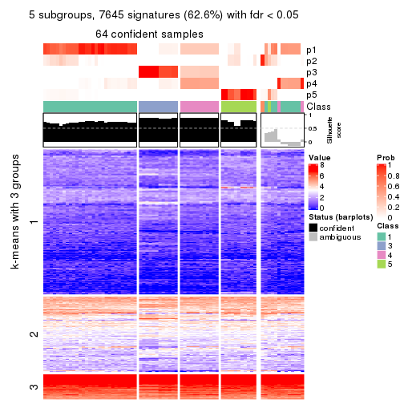
get_signatures(res, k = 6, scale_rows = FALSE)
Compare the overlap of signatures from different k:
compare_signatures(res)
get_signature() returns a data frame invisibly. TO get the list of signatures, the function
call should be assigned to a variable explicitly. In following code, if plot argument is set
to FALSE, no heatmap is plotted while only the differential analysis is performed.
# code only for demonstration
tb = get_signature(res, k = ..., plot = FALSE)
An example of the output of tb is:
#> which_row fdr mean_1 mean_2 scaled_mean_1 scaled_mean_2 km
#> 1 38 0.042760348 8.373488 9.131774 -0.5533452 0.5164555 1
#> 2 40 0.018707592 7.106213 8.469186 -0.6173731 0.5762149 1
#> 3 55 0.019134737 10.221463 11.207825 -0.6159697 0.5749050 1
#> 4 59 0.006059896 5.921854 7.869574 -0.6899429 0.6439467 1
#> 5 60 0.018055526 8.928898 10.211722 -0.6204761 0.5791110 1
#> 6 98 0.009384629 15.714769 14.887706 0.6635654 -0.6193277 2
...
The columns in tb are:
which_row: row indices corresponding to the input matrix.fdr: FDR for the differential test. mean_x: The mean value in group x.scaled_mean_x: The mean value in group x after rows are scaled.km: Row groups if k-means clustering is applied to rows.UMAP plot which shows how samples are separated.
dimension_reduction(res, k = 2, method = "UMAP")
dimension_reduction(res, k = 3, method = "UMAP")
dimension_reduction(res, k = 4, method = "UMAP")
dimension_reduction(res, k = 5, method = "UMAP")
dimension_reduction(res, k = 6, method = "UMAP")
Following heatmap shows how subgroups are split when increasing k:
collect_classes(res)
If matrix rows can be associated to genes, consider to use functional_enrichment(res,
...) to perform function enrichment for the signature genes. See this vignette for more detailed explanations.
The object with results only for a single top-value method and a single partition method can be extracted as:
res = res_list["CV", "kmeans"]
# you can also extract it by
# res = res_list["CV:kmeans"]
A summary of res and all the functions that can be applied to it:
res
#> A 'ConsensusPartition' object with k = 2, 3, 4, 5, 6.
#> On a matrix with 12208 rows and 77 columns.
#> Top rows (1000, 2000, 3000, 4000, 5000) are extracted by 'CV' method.
#> Subgroups are detected by 'kmeans' method.
#> Performed in total 1250 partitions by row resampling.
#> Best k for subgroups seems to be 2.
#>
#> Following methods can be applied to this 'ConsensusPartition' object:
#> [1] "cola_report" "collect_classes" "collect_plots"
#> [4] "collect_stats" "colnames" "compare_signatures"
#> [7] "consensus_heatmap" "dimension_reduction" "functional_enrichment"
#> [10] "get_anno_col" "get_anno" "get_classes"
#> [13] "get_consensus" "get_matrix" "get_membership"
#> [16] "get_param" "get_signatures" "get_stats"
#> [19] "is_best_k" "is_stable_k" "membership_heatmap"
#> [22] "ncol" "nrow" "plot_ecdf"
#> [25] "rownames" "select_partition_number" "show"
#> [28] "suggest_best_k" "test_to_known_factors"
collect_plots() function collects all the plots made from res for all k (number of partitions)
into one single page to provide an easy and fast comparison between different k.
collect_plots(res)
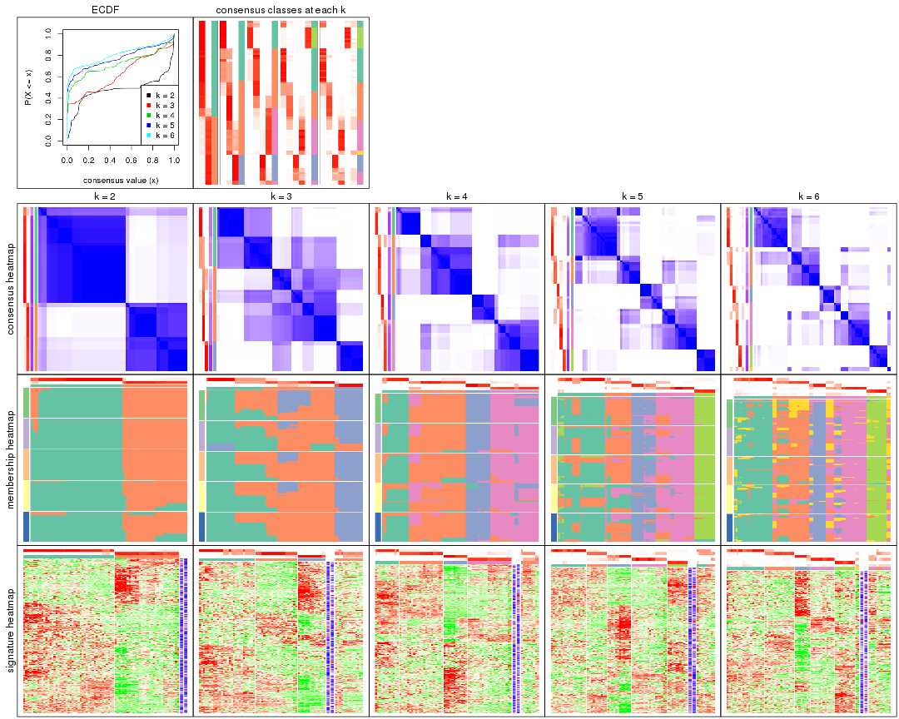
The plots are:
k and the heatmap of
predicted classes for each k.k.k.k.All the plots in panels can be made by individual functions and they are plotted later in this section.
select_partition_number() produces several plots showing different
statistics for choosing “optimized” k. There are following statistics:
k;k, the area increased is defined as \(A_k - A_{k-1}\).The detailed explanations of these statistics can be found in the cola vignette.
Generally speaking, lower PAC score, higher mean silhouette score or higher
concordance corresponds to better partition. Rand index and Jaccard index
measure how similar the current partition is compared to partition with k-1.
If they are too similar, we won't accept k is better than k-1.
select_partition_number(res)
The numeric values for all these statistics can be obtained by get_stats().
get_stats(res)
#> k 1-PAC mean_silhouette concordance area_increased Rand Jaccard
#> 2 2 0.683 0.919 0.947 0.4779 0.508 0.508
#> 3 3 0.510 0.659 0.817 0.3066 0.647 0.423
#> 4 4 0.687 0.780 0.872 0.1552 0.746 0.429
#> 5 5 0.722 0.693 0.791 0.0768 0.868 0.571
#> 6 6 0.761 0.580 0.806 0.0395 0.901 0.610
suggest_best_k() suggests the best \(k\) based on these statistics. The rules are as follows:
suggest_best_k(res)
#> [1] 2
Following shows the table of the partitions (You need to click the show/hide
code output link to see it). The membership matrix (columns with name p*)
is inferred by
clue::cl_consensus()
function with the SE method. Basically the value in the membership matrix
represents the probability to belong to a certain group. The finall class
label for an item is determined with the group with highest probability it
belongs to.
In get_classes() function, the entropy is calculated from the membership
matrix and the silhouette score is calculated from the consensus matrix.
cbind(get_classes(res, k = 2), get_membership(res, k = 2))
#> class entropy silhouette p1 p2
#> SRR2044063 2 0.6887 0.836 0.184 0.816
#> SRR2044062 1 0.8813 0.587 0.700 0.300
#> SRR2044061 1 0.9044 0.544 0.680 0.320
#> SRR2044060 2 0.7815 0.764 0.232 0.768
#> SRR2044099 1 0.0000 0.958 1.000 0.000
#> SRR2044098 1 0.1184 0.954 0.984 0.016
#> SRR2044097 1 0.0376 0.958 0.996 0.004
#> SRR2044096 1 0.0000 0.958 1.000 0.000
#> SRR2044095 1 0.2043 0.948 0.968 0.032
#> SRR2044094 1 0.0376 0.958 0.996 0.004
#> SRR2044087 1 0.2043 0.948 0.968 0.032
#> SRR2044086 1 0.2043 0.948 0.968 0.032
#> SRR2044085 1 0.2043 0.948 0.968 0.032
#> SRR2044084 1 0.2043 0.948 0.968 0.032
#> SRR2044083 1 0.2043 0.948 0.968 0.032
#> SRR2044082 1 0.2043 0.948 0.968 0.032
#> SRR2044075 1 0.3584 0.923 0.932 0.068
#> SRR2044074 1 0.2603 0.942 0.956 0.044
#> SRR2044073 1 0.2603 0.942 0.956 0.044
#> SRR2044072 1 0.2948 0.937 0.948 0.052
#> SRR2044071 1 0.2603 0.942 0.956 0.044
#> SRR2044070 1 0.2603 0.942 0.956 0.044
#> SRR2044069 2 0.2043 0.922 0.032 0.968
#> SRR2044068 2 0.2043 0.922 0.032 0.968
#> SRR2044067 2 0.2043 0.922 0.032 0.968
#> SRR2044066 2 0.2043 0.922 0.032 0.968
#> SRR2044065 2 0.2043 0.922 0.032 0.968
#> SRR2044064 2 0.2043 0.922 0.032 0.968
#> SRR2044059 1 0.7950 0.698 0.760 0.240
#> SRR2044058 1 0.9044 0.544 0.680 0.320
#> SRR2044057 1 0.0000 0.958 1.000 0.000
#> SRR2044056 1 0.0000 0.958 1.000 0.000
#> SRR2044055 1 0.0000 0.958 1.000 0.000
#> SRR2044054 1 0.0000 0.958 1.000 0.000
#> SRR2044053 1 0.0000 0.958 1.000 0.000
#> SRR2044052 1 0.0000 0.958 1.000 0.000
#> SRR2044051 2 0.4939 0.921 0.108 0.892
#> SRR2044050 2 0.4939 0.921 0.108 0.892
#> SRR2044049 2 0.4939 0.921 0.108 0.892
#> SRR2044048 2 0.4939 0.921 0.108 0.892
#> SRR2044047 2 0.4939 0.921 0.108 0.892
#> SRR2044046 2 0.4939 0.921 0.108 0.892
#> SRR2044045 1 0.0000 0.958 1.000 0.000
#> SRR2044044 1 0.0000 0.958 1.000 0.000
#> SRR2044042 1 0.0000 0.958 1.000 0.000
#> SRR2044041 1 0.0000 0.958 1.000 0.000
#> SRR2044040 1 0.0000 0.958 1.000 0.000
#> SRR2044039 2 0.3584 0.930 0.068 0.932
#> SRR2044038 2 0.4939 0.921 0.108 0.892
#> SRR2044037 2 0.4939 0.921 0.108 0.892
#> SRR2044036 2 0.3584 0.930 0.068 0.932
#> SRR2044035 2 0.4939 0.921 0.108 0.892
#> SRR2044034 2 0.4939 0.921 0.108 0.892
#> SRR2044033 1 0.0000 0.958 1.000 0.000
#> SRR2044032 1 0.0000 0.958 1.000 0.000
#> SRR2044031 1 0.0000 0.958 1.000 0.000
#> SRR2044030 1 0.0000 0.958 1.000 0.000
#> SRR2044029 1 0.0000 0.958 1.000 0.000
#> SRR2044028 1 0.0000 0.958 1.000 0.000
#> SRR2044027 2 0.1184 0.921 0.016 0.984
#> SRR2044026 2 0.4298 0.927 0.088 0.912
#> SRR2044024 2 0.1184 0.921 0.016 0.984
#> SRR2044023 2 0.4298 0.927 0.088 0.912
#> SRR2044025 2 0.3584 0.930 0.068 0.932
#> SRR2044022 2 0.3584 0.930 0.068 0.932
#> SRR2044021 1 0.0000 0.958 1.000 0.000
#> SRR2044020 1 0.0376 0.958 0.996 0.004
#> SRR2044019 1 0.0000 0.958 1.000 0.000
#> SRR2044018 1 0.0000 0.958 1.000 0.000
#> SRR2044017 1 0.0376 0.958 0.996 0.004
#> SRR2044016 1 0.0000 0.958 1.000 0.000
#> SRR2044015 2 0.2043 0.922 0.032 0.968
#> SRR2044014 2 0.1184 0.921 0.016 0.984
#> SRR2044013 2 0.2043 0.922 0.032 0.968
#> SRR2044011 2 0.2043 0.922 0.032 0.968
#> SRR2044010 2 0.2043 0.922 0.032 0.968
#> SRR2044012 2 0.2043 0.922 0.032 0.968
cbind(get_classes(res, k = 3), get_membership(res, k = 3))
#> class entropy silhouette p1 p2 p3
#> SRR2044063 2 0.0237 0.719 0.000 0.996 0.004
#> SRR2044062 2 0.0000 0.718 0.000 1.000 0.000
#> SRR2044061 2 0.0000 0.718 0.000 1.000 0.000
#> SRR2044060 2 0.0237 0.719 0.000 0.996 0.004
#> SRR2044099 1 0.6483 0.602 0.544 0.452 0.004
#> SRR2044098 1 0.6513 0.568 0.520 0.476 0.004
#> SRR2044097 2 0.6521 -0.552 0.496 0.500 0.004
#> SRR2044096 1 0.6483 0.602 0.544 0.452 0.004
#> SRR2044095 1 0.6521 0.539 0.504 0.492 0.004
#> SRR2044094 1 0.6521 0.531 0.500 0.496 0.004
#> SRR2044087 2 0.5158 0.337 0.232 0.764 0.004
#> SRR2044086 2 0.4293 0.502 0.164 0.832 0.004
#> SRR2044085 2 0.4521 0.469 0.180 0.816 0.004
#> SRR2044084 2 0.4465 0.478 0.176 0.820 0.004
#> SRR2044083 2 0.4293 0.502 0.164 0.832 0.004
#> SRR2044082 2 0.3918 0.543 0.140 0.856 0.004
#> SRR2044075 2 0.0000 0.718 0.000 1.000 0.000
#> SRR2044074 2 0.0000 0.718 0.000 1.000 0.000
#> SRR2044073 2 0.0000 0.718 0.000 1.000 0.000
#> SRR2044072 2 0.0000 0.718 0.000 1.000 0.000
#> SRR2044071 2 0.0000 0.718 0.000 1.000 0.000
#> SRR2044070 2 0.0000 0.718 0.000 1.000 0.000
#> SRR2044069 3 0.0237 0.963 0.004 0.000 0.996
#> SRR2044068 3 0.0237 0.963 0.004 0.000 0.996
#> SRR2044067 3 0.0237 0.963 0.004 0.000 0.996
#> SRR2044066 3 0.0237 0.963 0.004 0.000 0.996
#> SRR2044065 3 0.0237 0.963 0.004 0.000 0.996
#> SRR2044064 3 0.0237 0.963 0.004 0.000 0.996
#> SRR2044059 2 0.0000 0.718 0.000 1.000 0.000
#> SRR2044058 2 0.0000 0.718 0.000 1.000 0.000
#> SRR2044057 1 0.0000 0.705 1.000 0.000 0.000
#> SRR2044056 1 0.0000 0.705 1.000 0.000 0.000
#> SRR2044055 1 0.3425 0.693 0.884 0.112 0.004
#> SRR2044054 1 0.0000 0.705 1.000 0.000 0.000
#> SRR2044053 1 0.0000 0.705 1.000 0.000 0.000
#> SRR2044052 1 0.0000 0.705 1.000 0.000 0.000
#> SRR2044051 2 0.3941 0.710 0.000 0.844 0.156
#> SRR2044050 2 0.3816 0.714 0.000 0.852 0.148
#> SRR2044049 2 0.3941 0.710 0.000 0.844 0.156
#> SRR2044048 2 0.3941 0.710 0.000 0.844 0.156
#> SRR2044047 2 0.3816 0.714 0.000 0.852 0.148
#> SRR2044046 2 0.3816 0.714 0.000 0.852 0.148
#> SRR2044045 1 0.0000 0.705 1.000 0.000 0.000
#> SRR2044044 1 0.0237 0.707 0.996 0.004 0.000
#> SRR2044042 1 0.0000 0.705 1.000 0.000 0.000
#> SRR2044041 1 0.0237 0.707 0.996 0.004 0.000
#> SRR2044040 1 0.6468 0.608 0.552 0.444 0.004
#> SRR2044039 2 0.6192 0.375 0.000 0.580 0.420
#> SRR2044038 2 0.5926 0.499 0.000 0.644 0.356
#> SRR2044037 2 0.5926 0.499 0.000 0.644 0.356
#> SRR2044036 2 0.6192 0.375 0.000 0.580 0.420
#> SRR2044035 2 0.5926 0.499 0.000 0.644 0.356
#> SRR2044034 2 0.5926 0.499 0.000 0.644 0.356
#> SRR2044033 1 0.0000 0.705 1.000 0.000 0.000
#> SRR2044032 1 0.0237 0.707 0.996 0.004 0.000
#> SRR2044031 1 0.6489 0.597 0.540 0.456 0.004
#> SRR2044030 1 0.0237 0.707 0.996 0.004 0.000
#> SRR2044029 1 0.0237 0.707 0.996 0.004 0.000
#> SRR2044028 1 0.6489 0.597 0.540 0.456 0.004
#> SRR2044027 3 0.4178 0.771 0.000 0.172 0.828
#> SRR2044026 2 0.6062 0.451 0.000 0.616 0.384
#> SRR2044024 3 0.4178 0.771 0.000 0.172 0.828
#> SRR2044023 2 0.6062 0.451 0.000 0.616 0.384
#> SRR2044025 2 0.6225 0.348 0.000 0.568 0.432
#> SRR2044022 2 0.6192 0.375 0.000 0.580 0.420
#> SRR2044021 1 0.6468 0.608 0.552 0.444 0.004
#> SRR2044020 1 0.6468 0.608 0.552 0.444 0.004
#> SRR2044019 1 0.6495 0.592 0.536 0.460 0.004
#> SRR2044018 1 0.6460 0.610 0.556 0.440 0.004
#> SRR2044017 1 0.6468 0.608 0.552 0.444 0.004
#> SRR2044016 1 0.6495 0.592 0.536 0.460 0.004
#> SRR2044015 3 0.0237 0.964 0.000 0.004 0.996
#> SRR2044014 3 0.0237 0.964 0.000 0.004 0.996
#> SRR2044013 3 0.0237 0.964 0.000 0.004 0.996
#> SRR2044011 3 0.0237 0.964 0.000 0.004 0.996
#> SRR2044010 3 0.0237 0.964 0.000 0.004 0.996
#> SRR2044012 3 0.0237 0.964 0.000 0.004 0.996
cbind(get_classes(res, k = 4), get_membership(res, k = 4))
#> class entropy silhouette p1 p2 p3 p4
#> SRR2044063 4 0.2345 0.858 0.000 0.100 0.000 0.900
#> SRR2044062 4 0.3266 0.811 0.000 0.168 0.000 0.832
#> SRR2044061 4 0.3266 0.811 0.000 0.168 0.000 0.832
#> SRR2044060 4 0.2345 0.858 0.000 0.100 0.000 0.900
#> SRR2044099 2 0.3032 0.761 0.124 0.868 0.000 0.008
#> SRR2044098 2 0.1474 0.775 0.052 0.948 0.000 0.000
#> SRR2044097 2 0.1356 0.776 0.032 0.960 0.000 0.008
#> SRR2044096 2 0.3032 0.761 0.124 0.868 0.000 0.008
#> SRR2044095 2 0.0188 0.773 0.004 0.996 0.000 0.000
#> SRR2044094 2 0.1545 0.776 0.040 0.952 0.000 0.008
#> SRR2044087 2 0.0817 0.769 0.000 0.976 0.000 0.024
#> SRR2044086 2 0.1211 0.764 0.000 0.960 0.000 0.040
#> SRR2044085 2 0.1118 0.766 0.000 0.964 0.000 0.036
#> SRR2044084 2 0.1118 0.766 0.000 0.964 0.000 0.036
#> SRR2044083 2 0.1211 0.764 0.000 0.960 0.000 0.040
#> SRR2044082 2 0.1211 0.764 0.000 0.960 0.000 0.040
#> SRR2044075 2 0.4866 0.311 0.000 0.596 0.000 0.404
#> SRR2044074 2 0.4866 0.311 0.000 0.596 0.000 0.404
#> SRR2044073 2 0.4866 0.311 0.000 0.596 0.000 0.404
#> SRR2044072 2 0.4866 0.311 0.000 0.596 0.000 0.404
#> SRR2044071 2 0.4866 0.311 0.000 0.596 0.000 0.404
#> SRR2044070 2 0.4866 0.311 0.000 0.596 0.000 0.404
#> SRR2044069 3 0.0000 0.954 0.000 0.000 1.000 0.000
#> SRR2044068 3 0.0000 0.954 0.000 0.000 1.000 0.000
#> SRR2044067 3 0.0000 0.954 0.000 0.000 1.000 0.000
#> SRR2044066 3 0.0000 0.954 0.000 0.000 1.000 0.000
#> SRR2044065 3 0.0000 0.954 0.000 0.000 1.000 0.000
#> SRR2044064 3 0.0000 0.954 0.000 0.000 1.000 0.000
#> SRR2044059 4 0.3975 0.713 0.000 0.240 0.000 0.760
#> SRR2044058 4 0.3266 0.811 0.000 0.168 0.000 0.832
#> SRR2044057 1 0.1211 0.908 0.960 0.040 0.000 0.000
#> SRR2044056 1 0.1211 0.908 0.960 0.040 0.000 0.000
#> SRR2044055 2 0.2999 0.753 0.132 0.864 0.000 0.004
#> SRR2044054 1 0.1211 0.908 0.960 0.040 0.000 0.000
#> SRR2044053 1 0.1211 0.908 0.960 0.040 0.000 0.000
#> SRR2044052 1 0.3837 0.743 0.776 0.224 0.000 0.000
#> SRR2044051 4 0.2816 0.853 0.036 0.064 0.000 0.900
#> SRR2044050 4 0.2345 0.858 0.000 0.100 0.000 0.900
#> SRR2044049 4 0.2345 0.858 0.000 0.100 0.000 0.900
#> SRR2044048 4 0.3128 0.852 0.040 0.076 0.000 0.884
#> SRR2044047 4 0.2345 0.858 0.000 0.100 0.000 0.900
#> SRR2044046 4 0.2345 0.858 0.000 0.100 0.000 0.900
#> SRR2044045 1 0.1211 0.908 0.960 0.040 0.000 0.000
#> SRR2044044 1 0.1211 0.908 0.960 0.040 0.000 0.000
#> SRR2044042 1 0.1211 0.908 0.960 0.040 0.000 0.000
#> SRR2044041 1 0.1211 0.908 0.960 0.040 0.000 0.000
#> SRR2044040 2 0.3032 0.761 0.124 0.868 0.000 0.008
#> SRR2044039 4 0.2048 0.858 0.000 0.008 0.064 0.928
#> SRR2044038 4 0.2048 0.858 0.000 0.008 0.064 0.928
#> SRR2044037 4 0.2048 0.858 0.000 0.008 0.064 0.928
#> SRR2044036 4 0.2048 0.858 0.000 0.008 0.064 0.928
#> SRR2044035 4 0.2048 0.858 0.000 0.008 0.064 0.928
#> SRR2044034 4 0.2048 0.858 0.000 0.008 0.064 0.928
#> SRR2044033 1 0.1211 0.908 0.960 0.040 0.000 0.000
#> SRR2044032 1 0.4981 0.266 0.536 0.464 0.000 0.000
#> SRR2044031 2 0.3032 0.761 0.124 0.868 0.000 0.008
#> SRR2044030 1 0.1211 0.908 0.960 0.040 0.000 0.000
#> SRR2044029 1 0.4661 0.555 0.652 0.348 0.000 0.000
#> SRR2044028 2 0.3032 0.761 0.124 0.868 0.000 0.008
#> SRR2044027 4 0.4679 0.388 0.000 0.000 0.352 0.648
#> SRR2044026 4 0.2048 0.858 0.000 0.008 0.064 0.928
#> SRR2044024 4 0.4679 0.388 0.000 0.000 0.352 0.648
#> SRR2044023 4 0.2048 0.858 0.000 0.008 0.064 0.928
#> SRR2044025 4 0.2048 0.858 0.000 0.008 0.064 0.928
#> SRR2044022 4 0.2048 0.858 0.000 0.008 0.064 0.928
#> SRR2044021 2 0.3032 0.761 0.124 0.868 0.000 0.008
#> SRR2044020 2 0.2760 0.759 0.128 0.872 0.000 0.000
#> SRR2044019 2 0.3032 0.761 0.124 0.868 0.000 0.008
#> SRR2044018 2 0.3032 0.761 0.124 0.868 0.000 0.008
#> SRR2044017 2 0.2760 0.759 0.128 0.872 0.000 0.000
#> SRR2044016 2 0.3032 0.761 0.124 0.868 0.000 0.008
#> SRR2044015 3 0.1867 0.953 0.000 0.000 0.928 0.072
#> SRR2044014 3 0.2469 0.929 0.000 0.000 0.892 0.108
#> SRR2044013 3 0.2081 0.949 0.000 0.000 0.916 0.084
#> SRR2044011 3 0.2081 0.949 0.000 0.000 0.916 0.084
#> SRR2044010 3 0.2081 0.949 0.000 0.000 0.916 0.084
#> SRR2044012 3 0.1867 0.953 0.000 0.000 0.928 0.072
cbind(get_classes(res, k = 5), get_membership(res, k = 5))
#> class entropy silhouette p1 p2 p3 p4 p5
#> SRR2044063 4 0.4617 0.362277 0.000 0.436 0.000 0.552 0.012
#> SRR2044062 2 0.3462 0.687839 0.012 0.792 0.000 0.196 0.000
#> SRR2044061 2 0.3462 0.687839 0.012 0.792 0.000 0.196 0.000
#> SRR2044060 2 0.4565 0.098826 0.000 0.580 0.000 0.408 0.012
#> SRR2044099 1 0.0162 0.808174 0.996 0.000 0.000 0.004 0.000
#> SRR2044098 1 0.1502 0.776973 0.940 0.056 0.004 0.000 0.000
#> SRR2044097 1 0.1341 0.778000 0.944 0.056 0.000 0.000 0.000
#> SRR2044096 1 0.0162 0.808174 0.996 0.000 0.000 0.004 0.000
#> SRR2044095 1 0.2806 0.686813 0.844 0.152 0.004 0.000 0.000
#> SRR2044094 1 0.1341 0.778000 0.944 0.056 0.000 0.000 0.000
#> SRR2044087 1 0.4443 -0.000839 0.524 0.472 0.004 0.000 0.000
#> SRR2044086 2 0.4452 -0.017905 0.496 0.500 0.004 0.000 0.000
#> SRR2044085 1 0.4451 -0.068787 0.504 0.492 0.004 0.000 0.000
#> SRR2044084 1 0.4451 -0.068787 0.504 0.492 0.004 0.000 0.000
#> SRR2044083 2 0.4452 -0.017905 0.496 0.500 0.004 0.000 0.000
#> SRR2044082 1 0.4452 -0.084323 0.500 0.496 0.004 0.000 0.000
#> SRR2044075 2 0.4437 0.793136 0.140 0.760 0.000 0.100 0.000
#> SRR2044074 2 0.4478 0.793321 0.144 0.756 0.000 0.100 0.000
#> SRR2044073 2 0.4478 0.793321 0.144 0.756 0.000 0.100 0.000
#> SRR2044072 2 0.4437 0.793136 0.140 0.760 0.000 0.100 0.000
#> SRR2044071 2 0.4478 0.793321 0.144 0.756 0.000 0.100 0.000
#> SRR2044070 2 0.4519 0.791255 0.148 0.752 0.000 0.100 0.000
#> SRR2044069 3 0.0794 0.805671 0.000 0.000 0.972 0.028 0.000
#> SRR2044068 3 0.0794 0.805671 0.000 0.000 0.972 0.028 0.000
#> SRR2044067 3 0.0794 0.805671 0.000 0.000 0.972 0.028 0.000
#> SRR2044066 3 0.0794 0.805671 0.000 0.000 0.972 0.028 0.000
#> SRR2044065 3 0.0794 0.805671 0.000 0.000 0.972 0.028 0.000
#> SRR2044064 3 0.0794 0.805671 0.000 0.000 0.972 0.028 0.000
#> SRR2044059 2 0.3953 0.740948 0.060 0.792 0.000 0.148 0.000
#> SRR2044058 2 0.3462 0.687839 0.012 0.792 0.000 0.196 0.000
#> SRR2044057 5 0.1341 0.988448 0.056 0.000 0.000 0.000 0.944
#> SRR2044056 5 0.1502 0.988262 0.056 0.004 0.000 0.000 0.940
#> SRR2044055 1 0.2835 0.739562 0.868 0.112 0.016 0.000 0.004
#> SRR2044054 5 0.1341 0.988448 0.056 0.000 0.000 0.000 0.944
#> SRR2044053 5 0.1502 0.988262 0.056 0.004 0.000 0.000 0.940
#> SRR2044052 1 0.6246 0.289514 0.588 0.128 0.020 0.000 0.264
#> SRR2044051 4 0.5235 0.594091 0.004 0.344 0.004 0.608 0.040
#> SRR2044050 4 0.4356 0.581873 0.000 0.340 0.000 0.648 0.012
#> SRR2044049 4 0.4356 0.581873 0.000 0.340 0.000 0.648 0.012
#> SRR2044048 4 0.5249 0.589795 0.004 0.348 0.004 0.604 0.040
#> SRR2044047 4 0.4356 0.581873 0.000 0.340 0.000 0.648 0.012
#> SRR2044046 4 0.4356 0.581873 0.000 0.340 0.000 0.648 0.012
#> SRR2044045 5 0.1341 0.988448 0.056 0.000 0.000 0.000 0.944
#> SRR2044044 5 0.2321 0.982850 0.056 0.024 0.008 0.000 0.912
#> SRR2044042 5 0.1341 0.988448 0.056 0.000 0.000 0.000 0.944
#> SRR2044041 5 0.2321 0.982850 0.056 0.024 0.008 0.000 0.912
#> SRR2044040 1 0.0740 0.805017 0.980 0.008 0.008 0.004 0.000
#> SRR2044039 4 0.0000 0.766738 0.000 0.000 0.000 1.000 0.000
#> SRR2044038 4 0.1197 0.790912 0.000 0.048 0.000 0.952 0.000
#> SRR2044037 4 0.1197 0.790912 0.000 0.048 0.000 0.952 0.000
#> SRR2044036 4 0.0000 0.766738 0.000 0.000 0.000 1.000 0.000
#> SRR2044035 4 0.1197 0.790912 0.000 0.048 0.000 0.952 0.000
#> SRR2044034 4 0.1197 0.790912 0.000 0.048 0.000 0.952 0.000
#> SRR2044033 5 0.2228 0.983732 0.056 0.020 0.008 0.000 0.916
#> SRR2044032 1 0.4032 0.634909 0.792 0.024 0.020 0.000 0.164
#> SRR2044031 1 0.0324 0.808135 0.992 0.000 0.004 0.004 0.000
#> SRR2044030 5 0.2228 0.983732 0.056 0.020 0.008 0.000 0.916
#> SRR2044029 1 0.4573 0.530232 0.728 0.024 0.020 0.000 0.228
#> SRR2044028 1 0.0324 0.808135 0.992 0.000 0.004 0.004 0.000
#> SRR2044027 4 0.3033 0.600226 0.000 0.032 0.076 0.876 0.016
#> SRR2044026 4 0.1121 0.789780 0.000 0.044 0.000 0.956 0.000
#> SRR2044024 4 0.3033 0.600226 0.000 0.032 0.076 0.876 0.016
#> SRR2044023 4 0.1121 0.789780 0.000 0.044 0.000 0.956 0.000
#> SRR2044025 4 0.0000 0.766738 0.000 0.000 0.000 1.000 0.000
#> SRR2044022 4 0.0404 0.773926 0.000 0.012 0.000 0.988 0.000
#> SRR2044021 1 0.0324 0.808135 0.992 0.000 0.004 0.004 0.000
#> SRR2044020 1 0.0566 0.807135 0.984 0.004 0.012 0.000 0.000
#> SRR2044019 1 0.0324 0.807203 0.992 0.004 0.000 0.004 0.000
#> SRR2044018 1 0.0486 0.807345 0.988 0.004 0.004 0.004 0.000
#> SRR2044017 1 0.0912 0.803858 0.972 0.012 0.016 0.000 0.000
#> SRR2044016 1 0.0162 0.808174 0.996 0.000 0.000 0.004 0.000
#> SRR2044015 3 0.4905 0.779087 0.000 0.036 0.692 0.256 0.016
#> SRR2044014 3 0.5552 0.532126 0.000 0.036 0.480 0.468 0.016
#> SRR2044013 3 0.5328 0.728996 0.000 0.036 0.604 0.344 0.016
#> SRR2044011 3 0.5299 0.735642 0.000 0.036 0.612 0.336 0.016
#> SRR2044010 3 0.5328 0.728996 0.000 0.036 0.604 0.344 0.016
#> SRR2044012 3 0.4905 0.779087 0.000 0.036 0.692 0.256 0.016
cbind(get_classes(res, k = 6), get_membership(res, k = 6))
#> class entropy silhouette p1 p2 p3 p4 p5 p6
#> SRR2044063 2 0.5903 -0.612 0.000 0.452 0.000 0.328 0.000 0.220
#> SRR2044062 2 0.2886 0.559 0.004 0.860 0.000 0.064 0.000 0.072
#> SRR2044061 2 0.2886 0.559 0.004 0.860 0.000 0.064 0.000 0.072
#> SRR2044060 2 0.5663 -0.409 0.000 0.532 0.000 0.248 0.000 0.220
#> SRR2044099 1 0.0632 0.888 0.976 0.000 0.000 0.000 0.000 0.024
#> SRR2044098 1 0.2487 0.851 0.876 0.032 0.000 0.000 0.000 0.092
#> SRR2044097 1 0.2263 0.840 0.896 0.056 0.000 0.000 0.000 0.048
#> SRR2044096 1 0.0632 0.888 0.976 0.000 0.000 0.000 0.000 0.024
#> SRR2044095 1 0.4331 0.588 0.704 0.220 0.000 0.000 0.000 0.076
#> SRR2044094 1 0.2263 0.840 0.896 0.056 0.000 0.000 0.000 0.048
#> SRR2044087 2 0.4779 0.431 0.368 0.572 0.000 0.000 0.000 0.060
#> SRR2044086 2 0.4569 0.543 0.304 0.636 0.000 0.000 0.000 0.060
#> SRR2044085 2 0.4593 0.519 0.324 0.620 0.000 0.000 0.000 0.056
#> SRR2044084 2 0.4660 0.510 0.328 0.612 0.000 0.000 0.000 0.060
#> SRR2044083 2 0.4585 0.538 0.308 0.632 0.000 0.000 0.000 0.060
#> SRR2044082 2 0.4563 0.532 0.316 0.628 0.000 0.000 0.000 0.056
#> SRR2044075 2 0.2201 0.668 0.056 0.904 0.000 0.036 0.000 0.004
#> SRR2044074 2 0.2058 0.670 0.056 0.908 0.000 0.036 0.000 0.000
#> SRR2044073 2 0.2058 0.670 0.056 0.908 0.000 0.036 0.000 0.000
#> SRR2044072 2 0.2058 0.670 0.056 0.908 0.000 0.036 0.000 0.000
#> SRR2044071 2 0.2058 0.670 0.056 0.908 0.000 0.036 0.000 0.000
#> SRR2044070 2 0.2263 0.669 0.060 0.900 0.000 0.036 0.000 0.004
#> SRR2044069 3 0.0837 0.869 0.000 0.000 0.972 0.020 0.004 0.004
#> SRR2044068 3 0.0547 0.870 0.000 0.000 0.980 0.020 0.000 0.000
#> SRR2044067 3 0.0837 0.870 0.000 0.004 0.972 0.020 0.000 0.004
#> SRR2044066 3 0.0837 0.870 0.000 0.004 0.972 0.020 0.000 0.004
#> SRR2044065 3 0.0837 0.869 0.000 0.000 0.972 0.020 0.004 0.004
#> SRR2044064 3 0.0837 0.870 0.000 0.004 0.972 0.020 0.000 0.004
#> SRR2044059 2 0.2375 0.598 0.008 0.896 0.000 0.060 0.000 0.036
#> SRR2044058 2 0.2886 0.559 0.004 0.860 0.000 0.064 0.000 0.072
#> SRR2044057 5 0.0458 0.956 0.016 0.000 0.000 0.000 0.984 0.000
#> SRR2044056 5 0.1390 0.954 0.016 0.004 0.000 0.000 0.948 0.032
#> SRR2044055 1 0.3879 0.783 0.788 0.052 0.020 0.000 0.000 0.140
#> SRR2044054 5 0.0458 0.956 0.016 0.000 0.000 0.000 0.984 0.000
#> SRR2044053 5 0.1390 0.954 0.016 0.004 0.000 0.000 0.948 0.032
#> SRR2044052 1 0.6150 0.566 0.612 0.052 0.020 0.000 0.112 0.204
#> SRR2044051 6 0.6228 0.973 0.000 0.212 0.000 0.372 0.012 0.404
#> SRR2044050 4 0.5896 -0.682 0.000 0.324 0.000 0.456 0.000 0.220
#> SRR2044049 4 0.5896 -0.682 0.000 0.324 0.000 0.456 0.000 0.220
#> SRR2044048 6 0.6263 0.973 0.000 0.224 0.000 0.360 0.012 0.404
#> SRR2044047 4 0.5896 -0.682 0.000 0.324 0.000 0.456 0.000 0.220
#> SRR2044046 4 0.5896 -0.682 0.000 0.324 0.000 0.456 0.000 0.220
#> SRR2044045 5 0.0458 0.956 0.016 0.000 0.000 0.000 0.984 0.000
#> SRR2044044 5 0.2704 0.920 0.016 0.000 0.000 0.000 0.844 0.140
#> SRR2044042 5 0.0458 0.956 0.016 0.000 0.000 0.000 0.984 0.000
#> SRR2044041 5 0.2704 0.920 0.016 0.000 0.000 0.000 0.844 0.140
#> SRR2044040 1 0.0964 0.887 0.968 0.004 0.012 0.000 0.000 0.016
#> SRR2044039 4 0.0508 0.538 0.000 0.004 0.000 0.984 0.000 0.012
#> SRR2044038 4 0.1049 0.523 0.000 0.032 0.000 0.960 0.000 0.008
#> SRR2044037 4 0.1049 0.523 0.000 0.032 0.000 0.960 0.000 0.008
#> SRR2044036 4 0.0508 0.538 0.000 0.004 0.000 0.984 0.000 0.012
#> SRR2044035 4 0.1049 0.523 0.000 0.032 0.000 0.960 0.000 0.008
#> SRR2044034 4 0.1049 0.523 0.000 0.032 0.000 0.960 0.000 0.008
#> SRR2044033 5 0.1982 0.945 0.016 0.000 0.004 0.000 0.912 0.068
#> SRR2044032 1 0.3683 0.782 0.768 0.000 0.000 0.000 0.048 0.184
#> SRR2044031 1 0.0520 0.889 0.984 0.000 0.008 0.000 0.000 0.008
#> SRR2044030 5 0.2149 0.943 0.016 0.000 0.004 0.000 0.900 0.080
#> SRR2044029 1 0.4269 0.725 0.724 0.000 0.000 0.000 0.092 0.184
#> SRR2044028 1 0.0622 0.889 0.980 0.000 0.012 0.000 0.000 0.008
#> SRR2044027 4 0.2436 0.505 0.000 0.000 0.032 0.880 0.000 0.088
#> SRR2044026 4 0.1261 0.531 0.000 0.024 0.000 0.952 0.000 0.024
#> SRR2044024 4 0.2436 0.505 0.000 0.000 0.032 0.880 0.000 0.088
#> SRR2044023 4 0.1261 0.531 0.000 0.024 0.000 0.952 0.000 0.024
#> SRR2044025 4 0.0993 0.536 0.000 0.012 0.000 0.964 0.000 0.024
#> SRR2044022 4 0.1088 0.535 0.000 0.016 0.000 0.960 0.000 0.024
#> SRR2044021 1 0.0363 0.890 0.988 0.000 0.000 0.000 0.000 0.012
#> SRR2044020 1 0.1863 0.872 0.896 0.000 0.000 0.000 0.000 0.104
#> SRR2044019 1 0.0405 0.890 0.988 0.000 0.004 0.000 0.000 0.008
#> SRR2044018 1 0.0363 0.890 0.988 0.000 0.000 0.000 0.000 0.012
#> SRR2044017 1 0.1957 0.870 0.888 0.000 0.000 0.000 0.000 0.112
#> SRR2044016 1 0.0146 0.890 0.996 0.000 0.004 0.000 0.000 0.000
#> SRR2044015 3 0.5556 0.502 0.000 0.000 0.548 0.264 0.000 0.188
#> SRR2044014 4 0.5458 0.151 0.000 0.000 0.232 0.572 0.000 0.196
#> SRR2044013 4 0.5837 -0.257 0.000 0.000 0.396 0.416 0.000 0.188
#> SRR2044011 4 0.5837 -0.257 0.000 0.000 0.396 0.416 0.000 0.188
#> SRR2044010 4 0.5837 -0.257 0.000 0.000 0.396 0.416 0.000 0.188
#> SRR2044012 3 0.5556 0.502 0.000 0.000 0.548 0.264 0.000 0.188
Heatmaps for the consensus matrix. It visualizes the probability of two samples to be in a same group.
consensus_heatmap(res, k = 2)
consensus_heatmap(res, k = 3)
consensus_heatmap(res, k = 4)
consensus_heatmap(res, k = 5)
consensus_heatmap(res, k = 6)
Heatmaps for the membership of samples in all partitions to see how consistent they are:
membership_heatmap(res, k = 2)
membership_heatmap(res, k = 3)
membership_heatmap(res, k = 4)
membership_heatmap(res, k = 5)
membership_heatmap(res, k = 6)
As soon as we have had the classes for columns, we can look for signatures which are significantly different between classes which can be candidate marks for certain classes. Following are the heatmaps for signatures.
Signature heatmaps where rows are scaled:
get_signatures(res, k = 2)
get_signatures(res, k = 3)
get_signatures(res, k = 4)
get_signatures(res, k = 5)
get_signatures(res, k = 6)
Signature heatmaps where rows are not scaled:
get_signatures(res, k = 2, scale_rows = FALSE)
get_signatures(res, k = 3, scale_rows = FALSE)
get_signatures(res, k = 4, scale_rows = FALSE)
get_signatures(res, k = 5, scale_rows = FALSE)
get_signatures(res, k = 6, scale_rows = FALSE)
Compare the overlap of signatures from different k:
compare_signatures(res)
get_signature() returns a data frame invisibly. TO get the list of signatures, the function
call should be assigned to a variable explicitly. In following code, if plot argument is set
to FALSE, no heatmap is plotted while only the differential analysis is performed.
# code only for demonstration
tb = get_signature(res, k = ..., plot = FALSE)
An example of the output of tb is:
#> which_row fdr mean_1 mean_2 scaled_mean_1 scaled_mean_2 km
#> 1 38 0.042760348 8.373488 9.131774 -0.5533452 0.5164555 1
#> 2 40 0.018707592 7.106213 8.469186 -0.6173731 0.5762149 1
#> 3 55 0.019134737 10.221463 11.207825 -0.6159697 0.5749050 1
#> 4 59 0.006059896 5.921854 7.869574 -0.6899429 0.6439467 1
#> 5 60 0.018055526 8.928898 10.211722 -0.6204761 0.5791110 1
#> 6 98 0.009384629 15.714769 14.887706 0.6635654 -0.6193277 2
...
The columns in tb are:
which_row: row indices corresponding to the input matrix.fdr: FDR for the differential test. mean_x: The mean value in group x.scaled_mean_x: The mean value in group x after rows are scaled.km: Row groups if k-means clustering is applied to rows.UMAP plot which shows how samples are separated.
dimension_reduction(res, k = 2, method = "UMAP")
dimension_reduction(res, k = 3, method = "UMAP")
dimension_reduction(res, k = 4, method = "UMAP")
dimension_reduction(res, k = 5, method = "UMAP")
dimension_reduction(res, k = 6, method = "UMAP")
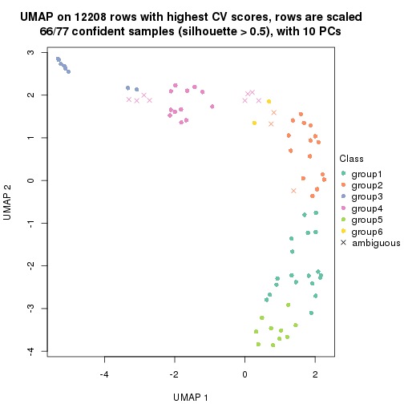
Following heatmap shows how subgroups are split when increasing k:
collect_classes(res)
If matrix rows can be associated to genes, consider to use functional_enrichment(res,
...) to perform function enrichment for the signature genes. See this vignette for more detailed explanations.
The object with results only for a single top-value method and a single partition method can be extracted as:
res = res_list["CV", "skmeans"]
# you can also extract it by
# res = res_list["CV:skmeans"]
A summary of res and all the functions that can be applied to it:
res
#> A 'ConsensusPartition' object with k = 2, 3, 4, 5, 6.
#> On a matrix with 12208 rows and 77 columns.
#> Top rows (1000, 2000, 3000, 4000, 5000) are extracted by 'CV' method.
#> Subgroups are detected by 'skmeans' method.
#> Performed in total 1250 partitions by row resampling.
#> Best k for subgroups seems to be 3.
#>
#> Following methods can be applied to this 'ConsensusPartition' object:
#> [1] "cola_report" "collect_classes" "collect_plots"
#> [4] "collect_stats" "colnames" "compare_signatures"
#> [7] "consensus_heatmap" "dimension_reduction" "functional_enrichment"
#> [10] "get_anno_col" "get_anno" "get_classes"
#> [13] "get_consensus" "get_matrix" "get_membership"
#> [16] "get_param" "get_signatures" "get_stats"
#> [19] "is_best_k" "is_stable_k" "membership_heatmap"
#> [22] "ncol" "nrow" "plot_ecdf"
#> [25] "rownames" "select_partition_number" "show"
#> [28] "suggest_best_k" "test_to_known_factors"
collect_plots() function collects all the plots made from res for all k (number of partitions)
into one single page to provide an easy and fast comparison between different k.
collect_plots(res)
The plots are:
k and the heatmap of
predicted classes for each k.k.k.k.All the plots in panels can be made by individual functions and they are plotted later in this section.
select_partition_number() produces several plots showing different
statistics for choosing “optimized” k. There are following statistics:
k;k, the area increased is defined as \(A_k - A_{k-1}\).The detailed explanations of these statistics can be found in the cola vignette.
Generally speaking, lower PAC score, higher mean silhouette score or higher
concordance corresponds to better partition. Rand index and Jaccard index
measure how similar the current partition is compared to partition with k-1.
If they are too similar, we won't accept k is better than k-1.
select_partition_number(res)
The numeric values for all these statistics can be obtained by get_stats().
get_stats(res)
#> k 1-PAC mean_silhouette concordance area_increased Rand Jaccard
#> 2 2 0.973 0.961 0.984 0.5022 0.498 0.498
#> 3 3 1.000 0.983 0.992 0.3386 0.732 0.510
#> 4 4 0.746 0.700 0.826 0.1142 0.829 0.544
#> 5 5 0.794 0.712 0.869 0.0730 0.863 0.527
#> 6 6 0.768 0.723 0.819 0.0388 0.916 0.613
suggest_best_k() suggests the best \(k\) based on these statistics. The rules are as follows:
suggest_best_k(res)
#> [1] 3
#> attr(,"optional")
#> [1] 2
There is also optional best \(k\) = 2 that is worth to check.
Following shows the table of the partitions (You need to click the show/hide
code output link to see it). The membership matrix (columns with name p*)
is inferred by
clue::cl_consensus()
function with the SE method. Basically the value in the membership matrix
represents the probability to belong to a certain group. The finall class
label for an item is determined with the group with highest probability it
belongs to.
In get_classes() function, the entropy is calculated from the membership
matrix and the silhouette score is calculated from the consensus matrix.
cbind(get_classes(res, k = 2), get_membership(res, k = 2))
#> class entropy silhouette p1 p2
#> SRR2044063 2 0.000 0.9829 0.000 1.000
#> SRR2044062 2 0.706 0.7690 0.192 0.808
#> SRR2044061 2 0.689 0.7806 0.184 0.816
#> SRR2044060 2 0.000 0.9829 0.000 1.000
#> SRR2044099 1 0.000 0.9831 1.000 0.000
#> SRR2044098 1 0.000 0.9831 1.000 0.000
#> SRR2044097 1 0.000 0.9831 1.000 0.000
#> SRR2044096 1 0.000 0.9831 1.000 0.000
#> SRR2044095 1 0.000 0.9831 1.000 0.000
#> SRR2044094 1 0.000 0.9831 1.000 0.000
#> SRR2044087 1 0.000 0.9831 1.000 0.000
#> SRR2044086 1 0.000 0.9831 1.000 0.000
#> SRR2044085 1 0.000 0.9831 1.000 0.000
#> SRR2044084 1 0.000 0.9831 1.000 0.000
#> SRR2044083 1 0.000 0.9831 1.000 0.000
#> SRR2044082 1 0.000 0.9831 1.000 0.000
#> SRR2044075 1 0.529 0.8549 0.880 0.120
#> SRR2044074 1 0.000 0.9831 1.000 0.000
#> SRR2044073 1 0.000 0.9831 1.000 0.000
#> SRR2044072 1 0.402 0.9023 0.920 0.080
#> SRR2044071 1 0.000 0.9831 1.000 0.000
#> SRR2044070 1 0.000 0.9831 1.000 0.000
#> SRR2044069 2 0.000 0.9829 0.000 1.000
#> SRR2044068 2 0.000 0.9829 0.000 1.000
#> SRR2044067 2 0.000 0.9829 0.000 1.000
#> SRR2044066 2 0.000 0.9829 0.000 1.000
#> SRR2044065 2 0.000 0.9829 0.000 1.000
#> SRR2044064 2 0.000 0.9829 0.000 1.000
#> SRR2044059 1 0.998 0.0796 0.528 0.472
#> SRR2044058 2 0.689 0.7806 0.184 0.816
#> SRR2044057 1 0.000 0.9831 1.000 0.000
#> SRR2044056 1 0.000 0.9831 1.000 0.000
#> SRR2044055 1 0.000 0.9831 1.000 0.000
#> SRR2044054 1 0.000 0.9831 1.000 0.000
#> SRR2044053 1 0.000 0.9831 1.000 0.000
#> SRR2044052 1 0.000 0.9831 1.000 0.000
#> SRR2044051 2 0.000 0.9829 0.000 1.000
#> SRR2044050 2 0.000 0.9829 0.000 1.000
#> SRR2044049 2 0.000 0.9829 0.000 1.000
#> SRR2044048 2 0.000 0.9829 0.000 1.000
#> SRR2044047 2 0.000 0.9829 0.000 1.000
#> SRR2044046 2 0.000 0.9829 0.000 1.000
#> SRR2044045 1 0.000 0.9831 1.000 0.000
#> SRR2044044 1 0.000 0.9831 1.000 0.000
#> SRR2044042 1 0.000 0.9831 1.000 0.000
#> SRR2044041 1 0.000 0.9831 1.000 0.000
#> SRR2044040 1 0.000 0.9831 1.000 0.000
#> SRR2044039 2 0.000 0.9829 0.000 1.000
#> SRR2044038 2 0.000 0.9829 0.000 1.000
#> SRR2044037 2 0.000 0.9829 0.000 1.000
#> SRR2044036 2 0.000 0.9829 0.000 1.000
#> SRR2044035 2 0.000 0.9829 0.000 1.000
#> SRR2044034 2 0.000 0.9829 0.000 1.000
#> SRR2044033 1 0.000 0.9831 1.000 0.000
#> SRR2044032 1 0.000 0.9831 1.000 0.000
#> SRR2044031 1 0.000 0.9831 1.000 0.000
#> SRR2044030 1 0.000 0.9831 1.000 0.000
#> SRR2044029 1 0.000 0.9831 1.000 0.000
#> SRR2044028 1 0.000 0.9831 1.000 0.000
#> SRR2044027 2 0.000 0.9829 0.000 1.000
#> SRR2044026 2 0.000 0.9829 0.000 1.000
#> SRR2044024 2 0.000 0.9829 0.000 1.000
#> SRR2044023 2 0.000 0.9829 0.000 1.000
#> SRR2044025 2 0.000 0.9829 0.000 1.000
#> SRR2044022 2 0.000 0.9829 0.000 1.000
#> SRR2044021 1 0.000 0.9831 1.000 0.000
#> SRR2044020 1 0.000 0.9831 1.000 0.000
#> SRR2044019 1 0.000 0.9831 1.000 0.000
#> SRR2044018 1 0.000 0.9831 1.000 0.000
#> SRR2044017 1 0.000 0.9831 1.000 0.000
#> SRR2044016 1 0.000 0.9831 1.000 0.000
#> SRR2044015 2 0.000 0.9829 0.000 1.000
#> SRR2044014 2 0.000 0.9829 0.000 1.000
#> SRR2044013 2 0.000 0.9829 0.000 1.000
#> SRR2044011 2 0.000 0.9829 0.000 1.000
#> SRR2044010 2 0.000 0.9829 0.000 1.000
#> SRR2044012 2 0.000 0.9829 0.000 1.000
cbind(get_classes(res, k = 3), get_membership(res, k = 3))
#> class entropy silhouette p1 p2 p3
#> SRR2044063 2 0.0000 0.985 0.000 1.000 0.000
#> SRR2044062 2 0.0000 0.985 0.000 1.000 0.000
#> SRR2044061 2 0.0000 0.985 0.000 1.000 0.000
#> SRR2044060 2 0.0000 0.985 0.000 1.000 0.000
#> SRR2044099 1 0.0000 0.995 1.000 0.000 0.000
#> SRR2044098 1 0.0000 0.995 1.000 0.000 0.000
#> SRR2044097 1 0.1031 0.974 0.976 0.024 0.000
#> SRR2044096 1 0.0000 0.995 1.000 0.000 0.000
#> SRR2044095 1 0.2959 0.889 0.900 0.100 0.000
#> SRR2044094 1 0.0424 0.989 0.992 0.008 0.000
#> SRR2044087 2 0.4842 0.713 0.224 0.776 0.000
#> SRR2044086 2 0.0000 0.985 0.000 1.000 0.000
#> SRR2044085 2 0.0892 0.969 0.020 0.980 0.000
#> SRR2044084 2 0.1643 0.947 0.044 0.956 0.000
#> SRR2044083 2 0.0000 0.985 0.000 1.000 0.000
#> SRR2044082 2 0.0000 0.985 0.000 1.000 0.000
#> SRR2044075 2 0.0000 0.985 0.000 1.000 0.000
#> SRR2044074 2 0.0000 0.985 0.000 1.000 0.000
#> SRR2044073 2 0.0000 0.985 0.000 1.000 0.000
#> SRR2044072 2 0.0000 0.985 0.000 1.000 0.000
#> SRR2044071 2 0.0000 0.985 0.000 1.000 0.000
#> SRR2044070 2 0.0000 0.985 0.000 1.000 0.000
#> SRR2044069 3 0.0000 0.992 0.000 0.000 1.000
#> SRR2044068 3 0.0000 0.992 0.000 0.000 1.000
#> SRR2044067 3 0.0000 0.992 0.000 0.000 1.000
#> SRR2044066 3 0.0000 0.992 0.000 0.000 1.000
#> SRR2044065 3 0.0000 0.992 0.000 0.000 1.000
#> SRR2044064 3 0.0000 0.992 0.000 0.000 1.000
#> SRR2044059 2 0.0000 0.985 0.000 1.000 0.000
#> SRR2044058 2 0.0000 0.985 0.000 1.000 0.000
#> SRR2044057 1 0.0000 0.995 1.000 0.000 0.000
#> SRR2044056 1 0.0000 0.995 1.000 0.000 0.000
#> SRR2044055 1 0.0000 0.995 1.000 0.000 0.000
#> SRR2044054 1 0.0000 0.995 1.000 0.000 0.000
#> SRR2044053 1 0.0000 0.995 1.000 0.000 0.000
#> SRR2044052 1 0.0000 0.995 1.000 0.000 0.000
#> SRR2044051 2 0.0592 0.977 0.000 0.988 0.012
#> SRR2044050 2 0.0237 0.983 0.000 0.996 0.004
#> SRR2044049 2 0.0237 0.983 0.000 0.996 0.004
#> SRR2044048 2 0.0237 0.983 0.000 0.996 0.004
#> SRR2044047 2 0.0237 0.983 0.000 0.996 0.004
#> SRR2044046 2 0.0237 0.983 0.000 0.996 0.004
#> SRR2044045 1 0.0000 0.995 1.000 0.000 0.000
#> SRR2044044 1 0.0000 0.995 1.000 0.000 0.000
#> SRR2044042 1 0.0000 0.995 1.000 0.000 0.000
#> SRR2044041 1 0.0000 0.995 1.000 0.000 0.000
#> SRR2044040 1 0.0000 0.995 1.000 0.000 0.000
#> SRR2044039 3 0.0000 0.992 0.000 0.000 1.000
#> SRR2044038 3 0.1411 0.971 0.000 0.036 0.964
#> SRR2044037 3 0.1411 0.971 0.000 0.036 0.964
#> SRR2044036 3 0.0000 0.992 0.000 0.000 1.000
#> SRR2044035 3 0.1411 0.971 0.000 0.036 0.964
#> SRR2044034 3 0.1411 0.971 0.000 0.036 0.964
#> SRR2044033 1 0.0000 0.995 1.000 0.000 0.000
#> SRR2044032 1 0.0000 0.995 1.000 0.000 0.000
#> SRR2044031 1 0.0000 0.995 1.000 0.000 0.000
#> SRR2044030 1 0.0000 0.995 1.000 0.000 0.000
#> SRR2044029 1 0.0000 0.995 1.000 0.000 0.000
#> SRR2044028 1 0.0000 0.995 1.000 0.000 0.000
#> SRR2044027 3 0.0000 0.992 0.000 0.000 1.000
#> SRR2044026 3 0.1031 0.979 0.000 0.024 0.976
#> SRR2044024 3 0.0000 0.992 0.000 0.000 1.000
#> SRR2044023 3 0.1031 0.979 0.000 0.024 0.976
#> SRR2044025 3 0.0000 0.992 0.000 0.000 1.000
#> SRR2044022 3 0.0000 0.992 0.000 0.000 1.000
#> SRR2044021 1 0.0000 0.995 1.000 0.000 0.000
#> SRR2044020 1 0.0000 0.995 1.000 0.000 0.000
#> SRR2044019 1 0.0000 0.995 1.000 0.000 0.000
#> SRR2044018 1 0.0000 0.995 1.000 0.000 0.000
#> SRR2044017 1 0.0000 0.995 1.000 0.000 0.000
#> SRR2044016 1 0.0000 0.995 1.000 0.000 0.000
#> SRR2044015 3 0.0000 0.992 0.000 0.000 1.000
#> SRR2044014 3 0.0000 0.992 0.000 0.000 1.000
#> SRR2044013 3 0.0000 0.992 0.000 0.000 1.000
#> SRR2044011 3 0.0000 0.992 0.000 0.000 1.000
#> SRR2044010 3 0.0000 0.992 0.000 0.000 1.000
#> SRR2044012 3 0.0000 0.992 0.000 0.000 1.000
cbind(get_classes(res, k = 4), get_membership(res, k = 4))
#> class entropy silhouette p1 p2 p3 p4
#> SRR2044063 4 0.1389 0.606 0.000 0.048 0.000 0.952
#> SRR2044062 2 0.4961 0.618 0.000 0.552 0.000 0.448
#> SRR2044061 2 0.4977 0.601 0.000 0.540 0.000 0.460
#> SRR2044060 4 0.2149 0.541 0.000 0.088 0.000 0.912
#> SRR2044099 1 0.4843 0.669 0.604 0.396 0.000 0.000
#> SRR2044098 2 0.3801 0.282 0.220 0.780 0.000 0.000
#> SRR2044097 2 0.2149 0.572 0.088 0.912 0.000 0.000
#> SRR2044096 1 0.4679 0.696 0.648 0.352 0.000 0.000
#> SRR2044095 2 0.1302 0.629 0.044 0.956 0.000 0.000
#> SRR2044094 2 0.2530 0.533 0.112 0.888 0.000 0.000
#> SRR2044087 2 0.1059 0.671 0.016 0.972 0.000 0.012
#> SRR2044086 2 0.1389 0.702 0.000 0.952 0.000 0.048
#> SRR2044085 2 0.0592 0.684 0.000 0.984 0.000 0.016
#> SRR2044084 2 0.1722 0.702 0.008 0.944 0.000 0.048
#> SRR2044083 2 0.1118 0.697 0.000 0.964 0.000 0.036
#> SRR2044082 2 0.1302 0.701 0.000 0.956 0.000 0.044
#> SRR2044075 2 0.4843 0.673 0.000 0.604 0.000 0.396
#> SRR2044074 2 0.4817 0.678 0.000 0.612 0.000 0.388
#> SRR2044073 2 0.4804 0.679 0.000 0.616 0.000 0.384
#> SRR2044072 2 0.4830 0.676 0.000 0.608 0.000 0.392
#> SRR2044071 2 0.4817 0.678 0.000 0.612 0.000 0.388
#> SRR2044070 2 0.4817 0.678 0.000 0.612 0.000 0.388
#> SRR2044069 3 0.0000 0.932 0.000 0.000 1.000 0.000
#> SRR2044068 3 0.0000 0.932 0.000 0.000 1.000 0.000
#> SRR2044067 3 0.0000 0.932 0.000 0.000 1.000 0.000
#> SRR2044066 3 0.0000 0.932 0.000 0.000 1.000 0.000
#> SRR2044065 3 0.0000 0.932 0.000 0.000 1.000 0.000
#> SRR2044064 3 0.0000 0.932 0.000 0.000 1.000 0.000
#> SRR2044059 2 0.4941 0.630 0.000 0.564 0.000 0.436
#> SRR2044058 2 0.4961 0.617 0.000 0.552 0.000 0.448
#> SRR2044057 1 0.0000 0.810 1.000 0.000 0.000 0.000
#> SRR2044056 1 0.0000 0.810 1.000 0.000 0.000 0.000
#> SRR2044055 1 0.2760 0.786 0.872 0.128 0.000 0.000
#> SRR2044054 1 0.0000 0.810 1.000 0.000 0.000 0.000
#> SRR2044053 1 0.0000 0.810 1.000 0.000 0.000 0.000
#> SRR2044052 1 0.0336 0.810 0.992 0.008 0.000 0.000
#> SRR2044051 4 0.0000 0.648 0.000 0.000 0.000 1.000
#> SRR2044050 4 0.0707 0.640 0.000 0.020 0.000 0.980
#> SRR2044049 4 0.0592 0.643 0.000 0.016 0.000 0.984
#> SRR2044048 4 0.0592 0.643 0.000 0.016 0.000 0.984
#> SRR2044047 4 0.0707 0.640 0.000 0.020 0.000 0.980
#> SRR2044046 4 0.0592 0.643 0.000 0.016 0.000 0.984
#> SRR2044045 1 0.0000 0.810 1.000 0.000 0.000 0.000
#> SRR2044044 1 0.0000 0.810 1.000 0.000 0.000 0.000
#> SRR2044042 1 0.0000 0.810 1.000 0.000 0.000 0.000
#> SRR2044041 1 0.0000 0.810 1.000 0.000 0.000 0.000
#> SRR2044040 1 0.4916 0.648 0.576 0.424 0.000 0.000
#> SRR2044039 4 0.4907 0.484 0.000 0.000 0.420 0.580
#> SRR2044038 4 0.4643 0.611 0.000 0.000 0.344 0.656
#> SRR2044037 4 0.4643 0.611 0.000 0.000 0.344 0.656
#> SRR2044036 4 0.4925 0.467 0.000 0.000 0.428 0.572
#> SRR2044035 4 0.4643 0.611 0.000 0.000 0.344 0.656
#> SRR2044034 4 0.4643 0.611 0.000 0.000 0.344 0.656
#> SRR2044033 1 0.0000 0.810 1.000 0.000 0.000 0.000
#> SRR2044032 1 0.0336 0.810 0.992 0.008 0.000 0.000
#> SRR2044031 1 0.4941 0.635 0.564 0.436 0.000 0.000
#> SRR2044030 1 0.0000 0.810 1.000 0.000 0.000 0.000
#> SRR2044029 1 0.0000 0.810 1.000 0.000 0.000 0.000
#> SRR2044028 1 0.4941 0.635 0.564 0.436 0.000 0.000
#> SRR2044027 3 0.2408 0.821 0.000 0.000 0.896 0.104
#> SRR2044026 4 0.4697 0.596 0.000 0.000 0.356 0.644
#> SRR2044024 3 0.2530 0.810 0.000 0.000 0.888 0.112
#> SRR2044023 4 0.4697 0.596 0.000 0.000 0.356 0.644
#> SRR2044025 3 0.4999 -0.320 0.000 0.000 0.508 0.492
#> SRR2044022 4 0.4916 0.475 0.000 0.000 0.424 0.576
#> SRR2044021 1 0.4564 0.709 0.672 0.328 0.000 0.000
#> SRR2044020 1 0.4907 0.651 0.580 0.420 0.000 0.000
#> SRR2044019 1 0.4981 0.596 0.536 0.464 0.000 0.000
#> SRR2044018 1 0.2081 0.797 0.916 0.084 0.000 0.000
#> SRR2044017 1 0.4877 0.661 0.592 0.408 0.000 0.000
#> SRR2044016 1 0.4967 0.614 0.548 0.452 0.000 0.000
#> SRR2044015 3 0.0000 0.932 0.000 0.000 1.000 0.000
#> SRR2044014 3 0.0000 0.932 0.000 0.000 1.000 0.000
#> SRR2044013 3 0.0000 0.932 0.000 0.000 1.000 0.000
#> SRR2044011 3 0.0000 0.932 0.000 0.000 1.000 0.000
#> SRR2044010 3 0.0000 0.932 0.000 0.000 1.000 0.000
#> SRR2044012 3 0.0000 0.932 0.000 0.000 1.000 0.000
cbind(get_classes(res, k = 5), get_membership(res, k = 5))
#> class entropy silhouette p1 p2 p3 p4 p5
#> SRR2044063 2 0.4403 -0.1502 0.004 0.560 0.000 0.436 0.000
#> SRR2044062 2 0.1124 0.7354 0.004 0.960 0.000 0.036 0.000
#> SRR2044061 2 0.1121 0.7277 0.000 0.956 0.000 0.044 0.000
#> SRR2044060 2 0.4211 0.1231 0.004 0.636 0.000 0.360 0.000
#> SRR2044099 1 0.2424 0.8230 0.868 0.000 0.000 0.000 0.132
#> SRR2044098 1 0.2802 0.7734 0.876 0.100 0.000 0.008 0.016
#> SRR2044097 1 0.0609 0.8237 0.980 0.020 0.000 0.000 0.000
#> SRR2044096 1 0.3196 0.7747 0.804 0.004 0.000 0.000 0.192
#> SRR2044095 1 0.3797 0.5960 0.756 0.232 0.000 0.004 0.008
#> SRR2044094 1 0.1041 0.8211 0.964 0.032 0.000 0.000 0.004
#> SRR2044087 1 0.4822 0.1169 0.564 0.416 0.000 0.004 0.016
#> SRR2044086 2 0.4252 0.4629 0.340 0.652 0.000 0.008 0.000
#> SRR2044085 2 0.4481 0.3088 0.416 0.576 0.000 0.008 0.000
#> SRR2044084 2 0.4504 0.2867 0.428 0.564 0.000 0.008 0.000
#> SRR2044083 2 0.4299 0.3890 0.388 0.608 0.000 0.004 0.000
#> SRR2044082 2 0.4341 0.4271 0.364 0.628 0.000 0.008 0.000
#> SRR2044075 2 0.0898 0.7550 0.020 0.972 0.000 0.008 0.000
#> SRR2044074 2 0.1124 0.7568 0.036 0.960 0.000 0.004 0.000
#> SRR2044073 2 0.1357 0.7535 0.048 0.948 0.000 0.004 0.000
#> SRR2044072 2 0.1117 0.7537 0.020 0.964 0.000 0.016 0.000
#> SRR2044071 2 0.0955 0.7560 0.028 0.968 0.000 0.004 0.000
#> SRR2044070 2 0.1357 0.7563 0.048 0.948 0.000 0.004 0.000
#> SRR2044069 3 0.0000 0.9511 0.000 0.000 1.000 0.000 0.000
#> SRR2044068 3 0.0000 0.9511 0.000 0.000 1.000 0.000 0.000
#> SRR2044067 3 0.0000 0.9511 0.000 0.000 1.000 0.000 0.000
#> SRR2044066 3 0.0000 0.9511 0.000 0.000 1.000 0.000 0.000
#> SRR2044065 3 0.0000 0.9511 0.000 0.000 1.000 0.000 0.000
#> SRR2044064 3 0.0000 0.9511 0.000 0.000 1.000 0.000 0.000
#> SRR2044059 2 0.0566 0.7482 0.004 0.984 0.000 0.012 0.000
#> SRR2044058 2 0.1124 0.7359 0.004 0.960 0.000 0.036 0.000
#> SRR2044057 5 0.0000 0.9409 0.000 0.000 0.000 0.000 1.000
#> SRR2044056 5 0.0000 0.9409 0.000 0.000 0.000 0.000 1.000
#> SRR2044055 1 0.4182 0.4554 0.644 0.000 0.000 0.004 0.352
#> SRR2044054 5 0.0000 0.9409 0.000 0.000 0.000 0.000 1.000
#> SRR2044053 5 0.0000 0.9409 0.000 0.000 0.000 0.000 1.000
#> SRR2044052 5 0.2890 0.7749 0.160 0.000 0.000 0.004 0.836
#> SRR2044051 4 0.3766 0.6066 0.004 0.268 0.000 0.728 0.000
#> SRR2044050 4 0.4397 0.4157 0.004 0.432 0.000 0.564 0.000
#> SRR2044049 4 0.4350 0.4529 0.004 0.408 0.000 0.588 0.000
#> SRR2044048 4 0.4196 0.5203 0.004 0.356 0.000 0.640 0.000
#> SRR2044047 4 0.4410 0.3987 0.004 0.440 0.000 0.556 0.000
#> SRR2044046 4 0.4390 0.4215 0.004 0.428 0.000 0.568 0.000
#> SRR2044045 5 0.0000 0.9409 0.000 0.000 0.000 0.000 1.000
#> SRR2044044 5 0.0000 0.9409 0.000 0.000 0.000 0.000 1.000
#> SRR2044042 5 0.0000 0.9409 0.000 0.000 0.000 0.000 1.000
#> SRR2044041 5 0.0000 0.9409 0.000 0.000 0.000 0.000 1.000
#> SRR2044040 1 0.1478 0.8420 0.936 0.000 0.000 0.000 0.064
#> SRR2044039 4 0.1851 0.7322 0.000 0.000 0.088 0.912 0.000
#> SRR2044038 4 0.0510 0.7644 0.000 0.000 0.016 0.984 0.000
#> SRR2044037 4 0.0510 0.7644 0.000 0.000 0.016 0.984 0.000
#> SRR2044036 4 0.1544 0.7460 0.000 0.000 0.068 0.932 0.000
#> SRR2044035 4 0.0510 0.7644 0.000 0.000 0.016 0.984 0.000
#> SRR2044034 4 0.0510 0.7644 0.000 0.000 0.016 0.984 0.000
#> SRR2044033 5 0.0000 0.9409 0.000 0.000 0.000 0.000 1.000
#> SRR2044032 5 0.1124 0.9139 0.036 0.000 0.000 0.004 0.960
#> SRR2044031 1 0.0963 0.8428 0.964 0.000 0.000 0.000 0.036
#> SRR2044030 5 0.0000 0.9409 0.000 0.000 0.000 0.000 1.000
#> SRR2044029 5 0.0865 0.9241 0.024 0.000 0.000 0.004 0.972
#> SRR2044028 1 0.1043 0.8437 0.960 0.000 0.000 0.000 0.040
#> SRR2044027 3 0.4451 0.0449 0.004 0.000 0.504 0.492 0.000
#> SRR2044026 4 0.0771 0.7640 0.004 0.000 0.020 0.976 0.000
#> SRR2044024 4 0.4440 -0.0519 0.004 0.000 0.468 0.528 0.000
#> SRR2044023 4 0.0771 0.7640 0.004 0.000 0.020 0.976 0.000
#> SRR2044025 4 0.2930 0.6489 0.004 0.000 0.164 0.832 0.000
#> SRR2044022 4 0.1892 0.7375 0.004 0.000 0.080 0.916 0.000
#> SRR2044021 1 0.3491 0.7275 0.768 0.004 0.000 0.000 0.228
#> SRR2044020 1 0.3333 0.8063 0.820 0.008 0.000 0.008 0.164
#> SRR2044019 1 0.0794 0.8405 0.972 0.000 0.000 0.000 0.028
#> SRR2044018 5 0.4675 0.0609 0.444 0.008 0.000 0.004 0.544
#> SRR2044017 1 0.3421 0.8042 0.816 0.016 0.000 0.004 0.164
#> SRR2044016 1 0.1043 0.8434 0.960 0.000 0.000 0.000 0.040
#> SRR2044015 3 0.0162 0.9511 0.000 0.000 0.996 0.004 0.000
#> SRR2044014 3 0.0794 0.9313 0.000 0.000 0.972 0.028 0.000
#> SRR2044013 3 0.0162 0.9511 0.000 0.000 0.996 0.004 0.000
#> SRR2044011 3 0.0162 0.9511 0.000 0.000 0.996 0.004 0.000
#> SRR2044010 3 0.0162 0.9511 0.000 0.000 0.996 0.004 0.000
#> SRR2044012 3 0.0162 0.9511 0.000 0.000 0.996 0.004 0.000
cbind(get_classes(res, k = 6), get_membership(res, k = 6))
#> class entropy silhouette p1 p2 p3 p4 p5 p6
#> SRR2044063 6 0.4425 0.6812 0.000 0.112 0.000 0.176 0.000 0.712
#> SRR2044062 2 0.3860 0.2138 0.000 0.528 0.000 0.000 0.000 0.472
#> SRR2044061 6 0.4045 -0.0528 0.000 0.428 0.000 0.008 0.000 0.564
#> SRR2044060 6 0.4886 0.5759 0.008 0.184 0.000 0.128 0.000 0.680
#> SRR2044099 1 0.4023 0.7842 0.800 0.032 0.000 0.004 0.084 0.080
#> SRR2044098 1 0.5744 0.4236 0.512 0.376 0.000 0.008 0.016 0.088
#> SRR2044097 1 0.3268 0.7447 0.812 0.144 0.000 0.000 0.000 0.044
#> SRR2044096 1 0.4633 0.7634 0.748 0.036 0.000 0.004 0.128 0.084
#> SRR2044095 2 0.5204 -0.0494 0.364 0.536 0.000 0.000 0.000 0.100
#> SRR2044094 1 0.4710 0.6662 0.684 0.208 0.000 0.004 0.000 0.104
#> SRR2044087 2 0.5191 0.4707 0.200 0.660 0.000 0.004 0.012 0.124
#> SRR2044086 2 0.2214 0.6710 0.096 0.888 0.000 0.000 0.000 0.016
#> SRR2044085 2 0.2908 0.6621 0.104 0.848 0.000 0.000 0.000 0.048
#> SRR2044084 2 0.4340 0.5565 0.176 0.720 0.000 0.000 0.000 0.104
#> SRR2044083 2 0.3044 0.6544 0.116 0.836 0.000 0.000 0.000 0.048
#> SRR2044082 2 0.2752 0.6691 0.108 0.856 0.000 0.000 0.000 0.036
#> SRR2044075 2 0.3728 0.5264 0.004 0.652 0.000 0.000 0.000 0.344
#> SRR2044074 2 0.2912 0.6414 0.000 0.784 0.000 0.000 0.000 0.216
#> SRR2044073 2 0.2631 0.6565 0.000 0.820 0.000 0.000 0.000 0.180
#> SRR2044072 2 0.4009 0.5228 0.008 0.632 0.000 0.004 0.000 0.356
#> SRR2044071 2 0.2854 0.6497 0.000 0.792 0.000 0.000 0.000 0.208
#> SRR2044070 2 0.2762 0.6523 0.000 0.804 0.000 0.000 0.000 0.196
#> SRR2044069 3 0.1218 0.9587 0.004 0.012 0.956 0.000 0.000 0.028
#> SRR2044068 3 0.1218 0.9587 0.004 0.012 0.956 0.000 0.000 0.028
#> SRR2044067 3 0.1218 0.9587 0.004 0.012 0.956 0.000 0.000 0.028
#> SRR2044066 3 0.1218 0.9587 0.004 0.012 0.956 0.000 0.000 0.028
#> SRR2044065 3 0.1218 0.9587 0.004 0.012 0.956 0.000 0.000 0.028
#> SRR2044064 3 0.1218 0.9587 0.004 0.012 0.956 0.000 0.000 0.028
#> SRR2044059 2 0.3765 0.3932 0.000 0.596 0.000 0.000 0.000 0.404
#> SRR2044058 6 0.3868 -0.2407 0.000 0.496 0.000 0.000 0.000 0.504
#> SRR2044057 5 0.0000 0.9489 0.000 0.000 0.000 0.000 1.000 0.000
#> SRR2044056 5 0.0000 0.9489 0.000 0.000 0.000 0.000 1.000 0.000
#> SRR2044055 1 0.3281 0.7351 0.808 0.008 0.000 0.008 0.168 0.008
#> SRR2044054 5 0.0000 0.9489 0.000 0.000 0.000 0.000 1.000 0.000
#> SRR2044053 5 0.0000 0.9489 0.000 0.000 0.000 0.000 1.000 0.000
#> SRR2044052 5 0.3810 0.5722 0.276 0.004 0.000 0.004 0.708 0.008
#> SRR2044051 6 0.3890 0.5370 0.004 0.000 0.000 0.400 0.000 0.596
#> SRR2044050 6 0.3888 0.7307 0.000 0.032 0.000 0.252 0.000 0.716
#> SRR2044049 6 0.3802 0.6917 0.000 0.012 0.000 0.312 0.000 0.676
#> SRR2044048 6 0.3910 0.6669 0.004 0.008 0.000 0.328 0.000 0.660
#> SRR2044047 6 0.4072 0.7279 0.004 0.032 0.000 0.260 0.000 0.704
#> SRR2044046 6 0.3690 0.7120 0.000 0.012 0.000 0.288 0.000 0.700
#> SRR2044045 5 0.0000 0.9489 0.000 0.000 0.000 0.000 1.000 0.000
#> SRR2044044 5 0.0622 0.9422 0.000 0.008 0.000 0.000 0.980 0.012
#> SRR2044042 5 0.0000 0.9489 0.000 0.000 0.000 0.000 1.000 0.000
#> SRR2044041 5 0.0622 0.9422 0.000 0.008 0.000 0.000 0.980 0.012
#> SRR2044040 1 0.1396 0.7946 0.952 0.004 0.000 0.008 0.024 0.012
#> SRR2044039 4 0.1713 0.8385 0.000 0.000 0.044 0.928 0.000 0.028
#> SRR2044038 4 0.1563 0.8313 0.000 0.000 0.012 0.932 0.000 0.056
#> SRR2044037 4 0.1500 0.8329 0.000 0.000 0.012 0.936 0.000 0.052
#> SRR2044036 4 0.2052 0.8349 0.004 0.000 0.056 0.912 0.000 0.028
#> SRR2044035 4 0.1563 0.8313 0.000 0.000 0.012 0.932 0.000 0.056
#> SRR2044034 4 0.1434 0.8346 0.000 0.000 0.012 0.940 0.000 0.048
#> SRR2044033 5 0.0146 0.9478 0.000 0.000 0.000 0.000 0.996 0.004
#> SRR2044032 5 0.3036 0.8423 0.088 0.020 0.000 0.004 0.860 0.028
#> SRR2044031 1 0.1223 0.7941 0.960 0.012 0.000 0.004 0.016 0.008
#> SRR2044030 5 0.0146 0.9478 0.000 0.000 0.000 0.000 0.996 0.004
#> SRR2044029 5 0.2422 0.8825 0.056 0.016 0.000 0.004 0.900 0.024
#> SRR2044028 1 0.1425 0.7936 0.952 0.020 0.000 0.008 0.008 0.012
#> SRR2044027 4 0.4362 0.3848 0.004 0.000 0.392 0.584 0.000 0.020
#> SRR2044026 4 0.1563 0.8213 0.000 0.000 0.012 0.932 0.000 0.056
#> SRR2044024 4 0.4148 0.4982 0.004 0.000 0.344 0.636 0.000 0.016
#> SRR2044023 4 0.1367 0.8275 0.000 0.000 0.012 0.944 0.000 0.044
#> SRR2044025 4 0.2882 0.7842 0.004 0.000 0.120 0.848 0.000 0.028
#> SRR2044022 4 0.2344 0.8232 0.004 0.000 0.052 0.896 0.000 0.048
#> SRR2044021 1 0.4325 0.7545 0.752 0.016 0.000 0.004 0.164 0.064
#> SRR2044020 1 0.6418 0.6694 0.576 0.144 0.000 0.004 0.184 0.092
#> SRR2044019 1 0.1536 0.7936 0.944 0.020 0.000 0.000 0.012 0.024
#> SRR2044018 1 0.5228 0.2905 0.504 0.004 0.000 0.004 0.420 0.068
#> SRR2044017 1 0.6078 0.6917 0.620 0.124 0.000 0.008 0.176 0.072
#> SRR2044016 1 0.1518 0.7926 0.944 0.024 0.000 0.000 0.008 0.024
#> SRR2044015 3 0.0603 0.9544 0.000 0.000 0.980 0.016 0.000 0.004
#> SRR2044014 3 0.2261 0.8659 0.004 0.000 0.884 0.104 0.000 0.008
#> SRR2044013 3 0.1116 0.9450 0.004 0.000 0.960 0.028 0.000 0.008
#> SRR2044011 3 0.0748 0.9532 0.004 0.000 0.976 0.016 0.000 0.004
#> SRR2044010 3 0.0951 0.9500 0.004 0.000 0.968 0.020 0.000 0.008
#> SRR2044012 3 0.0458 0.9552 0.000 0.000 0.984 0.016 0.000 0.000
Heatmaps for the consensus matrix. It visualizes the probability of two samples to be in a same group.
consensus_heatmap(res, k = 2)
consensus_heatmap(res, k = 3)
consensus_heatmap(res, k = 4)
consensus_heatmap(res, k = 5)
consensus_heatmap(res, k = 6)
Heatmaps for the membership of samples in all partitions to see how consistent they are:
membership_heatmap(res, k = 2)
membership_heatmap(res, k = 3)
membership_heatmap(res, k = 4)
membership_heatmap(res, k = 5)
membership_heatmap(res, k = 6)
As soon as we have had the classes for columns, we can look for signatures which are significantly different between classes which can be candidate marks for certain classes. Following are the heatmaps for signatures.
Signature heatmaps where rows are scaled:
get_signatures(res, k = 2)
get_signatures(res, k = 3)
get_signatures(res, k = 4)
get_signatures(res, k = 5)
get_signatures(res, k = 6)
Signature heatmaps where rows are not scaled:
get_signatures(res, k = 2, scale_rows = FALSE)
get_signatures(res, k = 3, scale_rows = FALSE)
get_signatures(res, k = 4, scale_rows = FALSE)
get_signatures(res, k = 5, scale_rows = FALSE)
get_signatures(res, k = 6, scale_rows = FALSE)
Compare the overlap of signatures from different k:
compare_signatures(res)
get_signature() returns a data frame invisibly. TO get the list of signatures, the function
call should be assigned to a variable explicitly. In following code, if plot argument is set
to FALSE, no heatmap is plotted while only the differential analysis is performed.
# code only for demonstration
tb = get_signature(res, k = ..., plot = FALSE)
An example of the output of tb is:
#> which_row fdr mean_1 mean_2 scaled_mean_1 scaled_mean_2 km
#> 1 38 0.042760348 8.373488 9.131774 -0.5533452 0.5164555 1
#> 2 40 0.018707592 7.106213 8.469186 -0.6173731 0.5762149 1
#> 3 55 0.019134737 10.221463 11.207825 -0.6159697 0.5749050 1
#> 4 59 0.006059896 5.921854 7.869574 -0.6899429 0.6439467 1
#> 5 60 0.018055526 8.928898 10.211722 -0.6204761 0.5791110 1
#> 6 98 0.009384629 15.714769 14.887706 0.6635654 -0.6193277 2
...
The columns in tb are:
which_row: row indices corresponding to the input matrix.fdr: FDR for the differential test. mean_x: The mean value in group x.scaled_mean_x: The mean value in group x after rows are scaled.km: Row groups if k-means clustering is applied to rows.UMAP plot which shows how samples are separated.
dimension_reduction(res, k = 2, method = "UMAP")

dimension_reduction(res, k = 3, method = "UMAP")
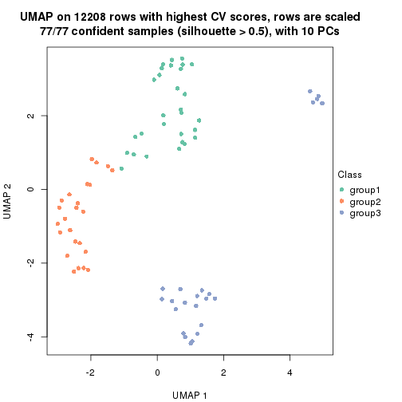
dimension_reduction(res, k = 4, method = "UMAP")
dimension_reduction(res, k = 5, method = "UMAP")
dimension_reduction(res, k = 6, method = "UMAP")
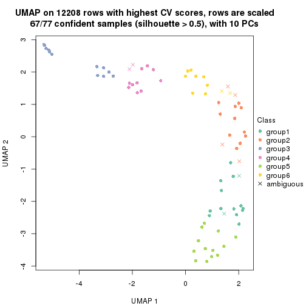
Following heatmap shows how subgroups are split when increasing k:
collect_classes(res)
If matrix rows can be associated to genes, consider to use functional_enrichment(res,
...) to perform function enrichment for the signature genes. See this vignette for more detailed explanations.
The object with results only for a single top-value method and a single partition method can be extracted as:
res = res_list["CV", "pam"]
# you can also extract it by
# res = res_list["CV:pam"]
A summary of res and all the functions that can be applied to it:
res
#> A 'ConsensusPartition' object with k = 2, 3, 4, 5, 6.
#> On a matrix with 12208 rows and 77 columns.
#> Top rows (1000, 2000, 3000, 4000, 5000) are extracted by 'CV' method.
#> Subgroups are detected by 'pam' method.
#> Performed in total 1250 partitions by row resampling.
#> Best k for subgroups seems to be 3.
#>
#> Following methods can be applied to this 'ConsensusPartition' object:
#> [1] "cola_report" "collect_classes" "collect_plots"
#> [4] "collect_stats" "colnames" "compare_signatures"
#> [7] "consensus_heatmap" "dimension_reduction" "functional_enrichment"
#> [10] "get_anno_col" "get_anno" "get_classes"
#> [13] "get_consensus" "get_matrix" "get_membership"
#> [16] "get_param" "get_signatures" "get_stats"
#> [19] "is_best_k" "is_stable_k" "membership_heatmap"
#> [22] "ncol" "nrow" "plot_ecdf"
#> [25] "rownames" "select_partition_number" "show"
#> [28] "suggest_best_k" "test_to_known_factors"
collect_plots() function collects all the plots made from res for all k (number of partitions)
into one single page to provide an easy and fast comparison between different k.
collect_plots(res)
The plots are:
k and the heatmap of
predicted classes for each k.k.k.k.All the plots in panels can be made by individual functions and they are plotted later in this section.
select_partition_number() produces several plots showing different
statistics for choosing “optimized” k. There are following statistics:
k;k, the area increased is defined as \(A_k - A_{k-1}\).The detailed explanations of these statistics can be found in the cola vignette.
Generally speaking, lower PAC score, higher mean silhouette score or higher
concordance corresponds to better partition. Rand index and Jaccard index
measure how similar the current partition is compared to partition with k-1.
If they are too similar, we won't accept k is better than k-1.
select_partition_number(res)
The numeric values for all these statistics can be obtained by get_stats().
get_stats(res)
#> k 1-PAC mean_silhouette concordance area_increased Rand Jaccard
#> 2 2 0.496 0.882 0.929 0.3451 0.651 0.651
#> 3 3 0.775 0.888 0.955 0.3521 0.889 0.830
#> 4 4 0.779 0.838 0.928 0.1510 0.956 0.918
#> 5 5 0.662 0.694 0.857 0.0718 0.895 0.797
#> 6 6 0.656 0.758 0.886 0.0641 0.963 0.915
suggest_best_k() suggests the best \(k\) based on these statistics. The rules are as follows:
suggest_best_k(res)
#> [1] 3
Following shows the table of the partitions (You need to click the show/hide
code output link to see it). The membership matrix (columns with name p*)
is inferred by
clue::cl_consensus()
function with the SE method. Basically the value in the membership matrix
represents the probability to belong to a certain group. The finall class
label for an item is determined with the group with highest probability it
belongs to.
In get_classes() function, the entropy is calculated from the membership
matrix and the silhouette score is calculated from the consensus matrix.
cbind(get_classes(res, k = 2), get_membership(res, k = 2))
#> class entropy silhouette p1 p2
#> SRR2044063 2 0.0000 0.9395 0.000 1.000
#> SRR2044062 2 0.0000 0.9395 0.000 1.000
#> SRR2044061 2 0.0000 0.9395 0.000 1.000
#> SRR2044060 2 0.0000 0.9395 0.000 1.000
#> SRR2044099 2 0.0938 0.9304 0.012 0.988
#> SRR2044098 1 0.8081 0.8506 0.752 0.248
#> SRR2044097 2 0.0000 0.9395 0.000 1.000
#> SRR2044096 2 0.5946 0.7849 0.144 0.856
#> SRR2044095 2 0.8081 0.6109 0.248 0.752
#> SRR2044094 2 0.0000 0.9395 0.000 1.000
#> SRR2044087 2 0.0000 0.9395 0.000 1.000
#> SRR2044086 2 0.2948 0.8943 0.052 0.948
#> SRR2044085 2 0.0000 0.9395 0.000 1.000
#> SRR2044084 2 0.0000 0.9395 0.000 1.000
#> SRR2044083 2 0.0000 0.9395 0.000 1.000
#> SRR2044082 2 0.0000 0.9395 0.000 1.000
#> SRR2044075 2 0.0000 0.9395 0.000 1.000
#> SRR2044074 2 0.0000 0.9395 0.000 1.000
#> SRR2044073 2 0.0000 0.9395 0.000 1.000
#> SRR2044072 2 0.0000 0.9395 0.000 1.000
#> SRR2044071 2 0.0000 0.9395 0.000 1.000
#> SRR2044070 2 0.0000 0.9395 0.000 1.000
#> SRR2044069 2 0.5178 0.8353 0.116 0.884
#> SRR2044068 2 0.5178 0.8353 0.116 0.884
#> SRR2044067 2 0.5178 0.8353 0.116 0.884
#> SRR2044066 2 0.5178 0.8353 0.116 0.884
#> SRR2044065 2 0.5178 0.8353 0.116 0.884
#> SRR2044064 2 0.5178 0.8353 0.116 0.884
#> SRR2044059 2 0.0000 0.9395 0.000 1.000
#> SRR2044058 2 0.0000 0.9395 0.000 1.000
#> SRR2044057 1 0.5178 0.9569 0.884 0.116
#> SRR2044056 1 0.5178 0.9569 0.884 0.116
#> SRR2044055 1 0.7674 0.8867 0.776 0.224
#> SRR2044054 1 0.5178 0.9569 0.884 0.116
#> SRR2044053 1 0.5178 0.9569 0.884 0.116
#> SRR2044052 1 0.5294 0.9563 0.880 0.120
#> SRR2044051 2 0.0000 0.9395 0.000 1.000
#> SRR2044050 2 0.0000 0.9395 0.000 1.000
#> SRR2044049 2 0.0000 0.9395 0.000 1.000
#> SRR2044048 2 0.0000 0.9395 0.000 1.000
#> SRR2044047 2 0.0000 0.9395 0.000 1.000
#> SRR2044046 2 0.0000 0.9395 0.000 1.000
#> SRR2044045 1 0.5178 0.9569 0.884 0.116
#> SRR2044044 1 0.5178 0.9569 0.884 0.116
#> SRR2044042 1 0.5178 0.9569 0.884 0.116
#> SRR2044041 1 0.5178 0.9569 0.884 0.116
#> SRR2044040 2 0.9970 -0.1094 0.468 0.532
#> SRR2044039 2 0.0000 0.9395 0.000 1.000
#> SRR2044038 2 0.0000 0.9395 0.000 1.000
#> SRR2044037 2 0.0000 0.9395 0.000 1.000
#> SRR2044036 2 0.0000 0.9395 0.000 1.000
#> SRR2044035 2 0.0000 0.9395 0.000 1.000
#> SRR2044034 2 0.0000 0.9395 0.000 1.000
#> SRR2044033 1 0.5178 0.9569 0.884 0.116
#> SRR2044032 1 0.6801 0.9371 0.820 0.180
#> SRR2044031 2 0.7376 0.6844 0.208 0.792
#> SRR2044030 1 0.6712 0.9391 0.824 0.176
#> SRR2044029 1 0.6801 0.9371 0.820 0.180
#> SRR2044028 2 0.8443 0.5594 0.272 0.728
#> SRR2044027 2 0.0000 0.9395 0.000 1.000
#> SRR2044026 2 0.0000 0.9395 0.000 1.000
#> SRR2044024 2 0.0000 0.9395 0.000 1.000
#> SRR2044023 2 0.0000 0.9395 0.000 1.000
#> SRR2044025 2 0.0000 0.9395 0.000 1.000
#> SRR2044022 2 0.0000 0.9395 0.000 1.000
#> SRR2044021 2 0.9922 -0.0178 0.448 0.552
#> SRR2044020 1 0.6801 0.9371 0.820 0.180
#> SRR2044019 2 0.0376 0.9366 0.004 0.996
#> SRR2044018 2 0.9393 0.3396 0.356 0.644
#> SRR2044017 1 0.6801 0.9371 0.820 0.180
#> SRR2044016 2 0.2423 0.9061 0.040 0.960
#> SRR2044015 2 0.0000 0.9395 0.000 1.000
#> SRR2044014 2 0.0000 0.9395 0.000 1.000
#> SRR2044013 2 0.0000 0.9395 0.000 1.000
#> SRR2044011 2 0.0000 0.9395 0.000 1.000
#> SRR2044010 2 0.0000 0.9395 0.000 1.000
#> SRR2044012 2 0.0000 0.9395 0.000 1.000
cbind(get_classes(res, k = 3), get_membership(res, k = 3))
#> class entropy silhouette p1 p2 p3
#> SRR2044063 2 0.0000 0.9527 0.000 1.000 0.000
#> SRR2044062 2 0.0000 0.9527 0.000 1.000 0.000
#> SRR2044061 2 0.0000 0.9527 0.000 1.000 0.000
#> SRR2044060 2 0.0000 0.9527 0.000 1.000 0.000
#> SRR2044099 2 0.0592 0.9435 0.012 0.988 0.000
#> SRR2044098 1 0.4842 0.7188 0.776 0.224 0.000
#> SRR2044097 2 0.0000 0.9527 0.000 1.000 0.000
#> SRR2044096 2 0.3752 0.8071 0.144 0.856 0.000
#> SRR2044095 2 0.5098 0.6557 0.248 0.752 0.000
#> SRR2044094 2 0.0000 0.9527 0.000 1.000 0.000
#> SRR2044087 2 0.0000 0.9527 0.000 1.000 0.000
#> SRR2044086 2 0.1860 0.9079 0.052 0.948 0.000
#> SRR2044085 2 0.0000 0.9527 0.000 1.000 0.000
#> SRR2044084 2 0.0000 0.9527 0.000 1.000 0.000
#> SRR2044083 2 0.0000 0.9527 0.000 1.000 0.000
#> SRR2044082 2 0.0000 0.9527 0.000 1.000 0.000
#> SRR2044075 2 0.0000 0.9527 0.000 1.000 0.000
#> SRR2044074 2 0.0000 0.9527 0.000 1.000 0.000
#> SRR2044073 2 0.0000 0.9527 0.000 1.000 0.000
#> SRR2044072 2 0.0000 0.9527 0.000 1.000 0.000
#> SRR2044071 2 0.0000 0.9527 0.000 1.000 0.000
#> SRR2044070 2 0.0000 0.9527 0.000 1.000 0.000
#> SRR2044069 3 0.0000 1.0000 0.000 0.000 1.000
#> SRR2044068 3 0.0000 1.0000 0.000 0.000 1.000
#> SRR2044067 3 0.0000 1.0000 0.000 0.000 1.000
#> SRR2044066 3 0.0000 1.0000 0.000 0.000 1.000
#> SRR2044065 3 0.0000 1.0000 0.000 0.000 1.000
#> SRR2044064 3 0.0000 1.0000 0.000 0.000 1.000
#> SRR2044059 2 0.0000 0.9527 0.000 1.000 0.000
#> SRR2044058 2 0.0000 0.9527 0.000 1.000 0.000
#> SRR2044057 1 0.0000 0.8681 1.000 0.000 0.000
#> SRR2044056 1 0.0000 0.8681 1.000 0.000 0.000
#> SRR2044055 1 0.4504 0.7625 0.804 0.196 0.000
#> SRR2044054 1 0.0000 0.8681 1.000 0.000 0.000
#> SRR2044053 1 0.0000 0.8681 1.000 0.000 0.000
#> SRR2044052 1 0.0237 0.8676 0.996 0.004 0.000
#> SRR2044051 2 0.0000 0.9527 0.000 1.000 0.000
#> SRR2044050 2 0.0000 0.9527 0.000 1.000 0.000
#> SRR2044049 2 0.0000 0.9527 0.000 1.000 0.000
#> SRR2044048 2 0.0000 0.9527 0.000 1.000 0.000
#> SRR2044047 2 0.0000 0.9527 0.000 1.000 0.000
#> SRR2044046 2 0.0000 0.9527 0.000 1.000 0.000
#> SRR2044045 1 0.0000 0.8681 1.000 0.000 0.000
#> SRR2044044 1 0.0000 0.8681 1.000 0.000 0.000
#> SRR2044042 1 0.0000 0.8681 1.000 0.000 0.000
#> SRR2044041 1 0.0000 0.8681 1.000 0.000 0.000
#> SRR2044040 2 0.6299 0.0318 0.476 0.524 0.000
#> SRR2044039 2 0.0000 0.9527 0.000 1.000 0.000
#> SRR2044038 2 0.0000 0.9527 0.000 1.000 0.000
#> SRR2044037 2 0.0000 0.9527 0.000 1.000 0.000
#> SRR2044036 2 0.0000 0.9527 0.000 1.000 0.000
#> SRR2044035 2 0.0000 0.9527 0.000 1.000 0.000
#> SRR2044034 2 0.0000 0.9527 0.000 1.000 0.000
#> SRR2044033 1 0.0000 0.8681 1.000 0.000 0.000
#> SRR2044032 1 0.3879 0.8194 0.848 0.152 0.000
#> SRR2044031 2 0.4654 0.7190 0.208 0.792 0.000
#> SRR2044030 1 0.3816 0.8214 0.852 0.148 0.000
#> SRR2044029 1 0.3879 0.8194 0.848 0.152 0.000
#> SRR2044028 2 0.5327 0.6118 0.272 0.728 0.000
#> SRR2044027 2 0.0000 0.9527 0.000 1.000 0.000
#> SRR2044026 2 0.0000 0.9527 0.000 1.000 0.000
#> SRR2044024 2 0.0000 0.9527 0.000 1.000 0.000
#> SRR2044023 2 0.0000 0.9527 0.000 1.000 0.000
#> SRR2044025 2 0.0000 0.9527 0.000 1.000 0.000
#> SRR2044022 2 0.0000 0.9527 0.000 1.000 0.000
#> SRR2044021 2 0.6260 0.1455 0.448 0.552 0.000
#> SRR2044020 1 0.3879 0.8194 0.848 0.152 0.000
#> SRR2044019 2 0.0237 0.9498 0.004 0.996 0.000
#> SRR2044018 2 0.5926 0.4289 0.356 0.644 0.000
#> SRR2044017 1 0.3879 0.8194 0.848 0.152 0.000
#> SRR2044016 2 0.1529 0.9193 0.040 0.960 0.000
#> SRR2044015 2 0.0237 0.9501 0.000 0.996 0.004
#> SRR2044014 2 0.0000 0.9527 0.000 1.000 0.000
#> SRR2044013 2 0.0000 0.9527 0.000 1.000 0.000
#> SRR2044011 2 0.0000 0.9527 0.000 1.000 0.000
#> SRR2044010 2 0.0000 0.9527 0.000 1.000 0.000
#> SRR2044012 2 0.0000 0.9527 0.000 1.000 0.000
cbind(get_classes(res, k = 4), get_membership(res, k = 4))
#> class entropy silhouette p1 p2 p3 p4
#> SRR2044063 2 0.0000 0.9104 0.000 1.000 0.000 0.000
#> SRR2044062 2 0.0000 0.9104 0.000 1.000 0.000 0.000
#> SRR2044061 2 0.0000 0.9104 0.000 1.000 0.000 0.000
#> SRR2044060 2 0.0000 0.9104 0.000 1.000 0.000 0.000
#> SRR2044099 2 0.2760 0.8319 0.128 0.872 0.000 0.000
#> SRR2044098 1 0.1302 0.7906 0.956 0.044 0.000 0.000
#> SRR2044097 2 0.4040 0.7168 0.248 0.752 0.000 0.000
#> SRR2044096 2 0.4008 0.7229 0.244 0.756 0.000 0.000
#> SRR2044095 2 0.4877 0.4551 0.408 0.592 0.000 0.000
#> SRR2044094 2 0.4454 0.6370 0.308 0.692 0.000 0.000
#> SRR2044087 2 0.1022 0.8968 0.032 0.968 0.000 0.000
#> SRR2044086 2 0.4250 0.6823 0.276 0.724 0.000 0.000
#> SRR2044085 2 0.2281 0.8561 0.096 0.904 0.000 0.000
#> SRR2044084 2 0.1118 0.8946 0.036 0.964 0.000 0.000
#> SRR2044083 2 0.3569 0.7717 0.196 0.804 0.000 0.000
#> SRR2044082 2 0.1716 0.8777 0.064 0.936 0.000 0.000
#> SRR2044075 2 0.0000 0.9104 0.000 1.000 0.000 0.000
#> SRR2044074 2 0.1118 0.8947 0.036 0.964 0.000 0.000
#> SRR2044073 2 0.0336 0.9074 0.008 0.992 0.000 0.000
#> SRR2044072 2 0.0000 0.9104 0.000 1.000 0.000 0.000
#> SRR2044071 2 0.0336 0.9074 0.008 0.992 0.000 0.000
#> SRR2044070 2 0.0188 0.9090 0.004 0.996 0.000 0.000
#> SRR2044069 3 0.0000 1.0000 0.000 0.000 1.000 0.000
#> SRR2044068 3 0.0000 1.0000 0.000 0.000 1.000 0.000
#> SRR2044067 3 0.0000 1.0000 0.000 0.000 1.000 0.000
#> SRR2044066 3 0.0000 1.0000 0.000 0.000 1.000 0.000
#> SRR2044065 3 0.0000 1.0000 0.000 0.000 1.000 0.000
#> SRR2044064 3 0.0000 1.0000 0.000 0.000 1.000 0.000
#> SRR2044059 2 0.0000 0.9104 0.000 1.000 0.000 0.000
#> SRR2044058 2 0.0000 0.9104 0.000 1.000 0.000 0.000
#> SRR2044057 4 0.0000 1.0000 0.000 0.000 0.000 1.000
#> SRR2044056 4 0.0000 1.0000 0.000 0.000 0.000 1.000
#> SRR2044055 1 0.0336 0.8441 0.992 0.000 0.000 0.008
#> SRR2044054 4 0.0000 1.0000 0.000 0.000 0.000 1.000
#> SRR2044053 4 0.0000 1.0000 0.000 0.000 0.000 1.000
#> SRR2044052 1 0.0469 0.8430 0.988 0.000 0.000 0.012
#> SRR2044051 2 0.0000 0.9104 0.000 1.000 0.000 0.000
#> SRR2044050 2 0.0000 0.9104 0.000 1.000 0.000 0.000
#> SRR2044049 2 0.0000 0.9104 0.000 1.000 0.000 0.000
#> SRR2044048 2 0.0000 0.9104 0.000 1.000 0.000 0.000
#> SRR2044047 2 0.0000 0.9104 0.000 1.000 0.000 0.000
#> SRR2044046 2 0.0000 0.9104 0.000 1.000 0.000 0.000
#> SRR2044045 4 0.0000 1.0000 0.000 0.000 0.000 1.000
#> SRR2044044 1 0.1940 0.8063 0.924 0.000 0.000 0.076
#> SRR2044042 4 0.0000 1.0000 0.000 0.000 0.000 1.000
#> SRR2044041 1 0.2216 0.7910 0.908 0.000 0.000 0.092
#> SRR2044040 1 0.5119 -0.0497 0.556 0.440 0.000 0.004
#> SRR2044039 2 0.0000 0.9104 0.000 1.000 0.000 0.000
#> SRR2044038 2 0.0000 0.9104 0.000 1.000 0.000 0.000
#> SRR2044037 2 0.0000 0.9104 0.000 1.000 0.000 0.000
#> SRR2044036 2 0.0000 0.9104 0.000 1.000 0.000 0.000
#> SRR2044035 2 0.0000 0.9104 0.000 1.000 0.000 0.000
#> SRR2044034 2 0.0000 0.9104 0.000 1.000 0.000 0.000
#> SRR2044033 1 0.4713 0.2982 0.640 0.000 0.000 0.360
#> SRR2044032 1 0.0336 0.8441 0.992 0.000 0.000 0.008
#> SRR2044031 2 0.4817 0.4973 0.388 0.612 0.000 0.000
#> SRR2044030 1 0.2149 0.7956 0.912 0.000 0.000 0.088
#> SRR2044029 1 0.0336 0.8441 0.992 0.000 0.000 0.008
#> SRR2044028 2 0.4855 0.4723 0.400 0.600 0.000 0.000
#> SRR2044027 2 0.0000 0.9104 0.000 1.000 0.000 0.000
#> SRR2044026 2 0.0000 0.9104 0.000 1.000 0.000 0.000
#> SRR2044024 2 0.0000 0.9104 0.000 1.000 0.000 0.000
#> SRR2044023 2 0.0000 0.9104 0.000 1.000 0.000 0.000
#> SRR2044025 2 0.0000 0.9104 0.000 1.000 0.000 0.000
#> SRR2044022 2 0.0000 0.9104 0.000 1.000 0.000 0.000
#> SRR2044021 2 0.5295 0.1986 0.488 0.504 0.000 0.008
#> SRR2044020 1 0.0336 0.8441 0.992 0.000 0.000 0.008
#> SRR2044019 2 0.4522 0.6188 0.320 0.680 0.000 0.000
#> SRR2044018 2 0.5085 0.4997 0.376 0.616 0.000 0.008
#> SRR2044017 1 0.0336 0.8441 0.992 0.000 0.000 0.008
#> SRR2044016 2 0.4356 0.6604 0.292 0.708 0.000 0.000
#> SRR2044015 2 0.0188 0.9088 0.000 0.996 0.004 0.000
#> SRR2044014 2 0.0000 0.9104 0.000 1.000 0.000 0.000
#> SRR2044013 2 0.0000 0.9104 0.000 1.000 0.000 0.000
#> SRR2044011 2 0.0000 0.9104 0.000 1.000 0.000 0.000
#> SRR2044010 2 0.0000 0.9104 0.000 1.000 0.000 0.000
#> SRR2044012 2 0.0000 0.9104 0.000 1.000 0.000 0.000
cbind(get_classes(res, k = 5), get_membership(res, k = 5))
#> class entropy silhouette p1 p2 p3 p4 p5
#> SRR2044063 2 0.0000 0.9031 0.000 1.000 0.000 0.000 0.000
#> SRR2044062 2 0.0000 0.9031 0.000 1.000 0.000 0.000 0.000
#> SRR2044061 2 0.0000 0.9031 0.000 1.000 0.000 0.000 0.000
#> SRR2044060 2 0.0000 0.9031 0.000 1.000 0.000 0.000 0.000
#> SRR2044099 2 0.3210 0.7134 0.212 0.788 0.000 0.000 0.000
#> SRR2044098 1 0.5119 -0.6120 0.592 0.048 0.000 0.360 0.000
#> SRR2044097 1 0.4300 0.1266 0.524 0.476 0.000 0.000 0.000
#> SRR2044096 2 0.4206 0.5660 0.272 0.708 0.000 0.020 0.000
#> SRR2044095 2 0.4850 0.5612 0.224 0.700 0.000 0.076 0.000
#> SRR2044094 2 0.3534 0.6457 0.256 0.744 0.000 0.000 0.000
#> SRR2044087 2 0.2561 0.7991 0.144 0.856 0.000 0.000 0.000
#> SRR2044086 2 0.3074 0.7374 0.196 0.804 0.000 0.000 0.000
#> SRR2044085 2 0.3074 0.7378 0.196 0.804 0.000 0.000 0.000
#> SRR2044084 2 0.1608 0.8585 0.072 0.928 0.000 0.000 0.000
#> SRR2044083 2 0.3177 0.7220 0.208 0.792 0.000 0.000 0.000
#> SRR2044082 2 0.2852 0.7677 0.172 0.828 0.000 0.000 0.000
#> SRR2044075 2 0.0000 0.9031 0.000 1.000 0.000 0.000 0.000
#> SRR2044074 2 0.2605 0.7941 0.148 0.852 0.000 0.000 0.000
#> SRR2044073 2 0.2074 0.8346 0.104 0.896 0.000 0.000 0.000
#> SRR2044072 2 0.0000 0.9031 0.000 1.000 0.000 0.000 0.000
#> SRR2044071 2 0.2074 0.8349 0.104 0.896 0.000 0.000 0.000
#> SRR2044070 2 0.2074 0.8349 0.104 0.896 0.000 0.000 0.000
#> SRR2044069 3 0.0000 1.0000 0.000 0.000 1.000 0.000 0.000
#> SRR2044068 3 0.0000 1.0000 0.000 0.000 1.000 0.000 0.000
#> SRR2044067 3 0.0000 1.0000 0.000 0.000 1.000 0.000 0.000
#> SRR2044066 3 0.0000 1.0000 0.000 0.000 1.000 0.000 0.000
#> SRR2044065 3 0.0000 1.0000 0.000 0.000 1.000 0.000 0.000
#> SRR2044064 3 0.0000 1.0000 0.000 0.000 1.000 0.000 0.000
#> SRR2044059 2 0.0000 0.9031 0.000 1.000 0.000 0.000 0.000
#> SRR2044058 2 0.0000 0.9031 0.000 1.000 0.000 0.000 0.000
#> SRR2044057 5 0.0000 1.0000 0.000 0.000 0.000 0.000 1.000
#> SRR2044056 5 0.0000 1.0000 0.000 0.000 0.000 0.000 1.000
#> SRR2044055 1 0.3074 -0.5108 0.804 0.000 0.000 0.196 0.000
#> SRR2044054 5 0.0000 1.0000 0.000 0.000 0.000 0.000 1.000
#> SRR2044053 5 0.0000 1.0000 0.000 0.000 0.000 0.000 1.000
#> SRR2044052 4 0.0404 0.4846 0.012 0.000 0.000 0.988 0.000
#> SRR2044051 2 0.0000 0.9031 0.000 1.000 0.000 0.000 0.000
#> SRR2044050 2 0.0000 0.9031 0.000 1.000 0.000 0.000 0.000
#> SRR2044049 2 0.0000 0.9031 0.000 1.000 0.000 0.000 0.000
#> SRR2044048 2 0.0000 0.9031 0.000 1.000 0.000 0.000 0.000
#> SRR2044047 2 0.0000 0.9031 0.000 1.000 0.000 0.000 0.000
#> SRR2044046 2 0.0000 0.9031 0.000 1.000 0.000 0.000 0.000
#> SRR2044045 5 0.0000 1.0000 0.000 0.000 0.000 0.000 1.000
#> SRR2044044 4 0.4294 0.8920 0.468 0.000 0.000 0.532 0.000
#> SRR2044042 5 0.0000 1.0000 0.000 0.000 0.000 0.000 1.000
#> SRR2044041 4 0.4294 0.8920 0.468 0.000 0.000 0.532 0.000
#> SRR2044040 1 0.5834 0.3791 0.544 0.348 0.000 0.108 0.000
#> SRR2044039 2 0.0000 0.9031 0.000 1.000 0.000 0.000 0.000
#> SRR2044038 2 0.0000 0.9031 0.000 1.000 0.000 0.000 0.000
#> SRR2044037 2 0.0000 0.9031 0.000 1.000 0.000 0.000 0.000
#> SRR2044036 2 0.0000 0.9031 0.000 1.000 0.000 0.000 0.000
#> SRR2044035 2 0.0000 0.9031 0.000 1.000 0.000 0.000 0.000
#> SRR2044034 2 0.0000 0.9031 0.000 1.000 0.000 0.000 0.000
#> SRR2044033 1 0.6160 -0.7877 0.448 0.000 0.000 0.420 0.132
#> SRR2044032 4 0.4294 0.8920 0.468 0.000 0.000 0.532 0.000
#> SRR2044031 1 0.5042 0.1941 0.508 0.460 0.000 0.032 0.000
#> SRR2044030 4 0.4297 0.8905 0.472 0.000 0.000 0.528 0.000
#> SRR2044029 4 0.4297 0.8905 0.472 0.000 0.000 0.528 0.000
#> SRR2044028 1 0.5650 0.2123 0.464 0.460 0.000 0.076 0.000
#> SRR2044027 2 0.0000 0.9031 0.000 1.000 0.000 0.000 0.000
#> SRR2044026 2 0.0000 0.9031 0.000 1.000 0.000 0.000 0.000
#> SRR2044024 2 0.0000 0.9031 0.000 1.000 0.000 0.000 0.000
#> SRR2044023 2 0.0000 0.9031 0.000 1.000 0.000 0.000 0.000
#> SRR2044025 2 0.0000 0.9031 0.000 1.000 0.000 0.000 0.000
#> SRR2044022 2 0.0000 0.9031 0.000 1.000 0.000 0.000 0.000
#> SRR2044021 2 0.6443 -0.3291 0.376 0.444 0.000 0.180 0.000
#> SRR2044020 1 0.4291 -0.8318 0.536 0.000 0.000 0.464 0.000
#> SRR2044019 1 0.4287 0.1717 0.540 0.460 0.000 0.000 0.000
#> SRR2044018 2 0.6036 -0.0465 0.308 0.548 0.000 0.144 0.000
#> SRR2044017 1 0.4307 -0.8743 0.504 0.000 0.000 0.496 0.000
#> SRR2044016 1 0.4304 0.0996 0.516 0.484 0.000 0.000 0.000
#> SRR2044015 2 0.0162 0.9008 0.000 0.996 0.004 0.000 0.000
#> SRR2044014 2 0.0000 0.9031 0.000 1.000 0.000 0.000 0.000
#> SRR2044013 2 0.0000 0.9031 0.000 1.000 0.000 0.000 0.000
#> SRR2044011 2 0.0000 0.9031 0.000 1.000 0.000 0.000 0.000
#> SRR2044010 2 0.0000 0.9031 0.000 1.000 0.000 0.000 0.000
#> SRR2044012 2 0.0000 0.9031 0.000 1.000 0.000 0.000 0.000
cbind(get_classes(res, k = 6), get_membership(res, k = 6))
#> class entropy silhouette p1 p2 p3 p4 p5 p6
#> SRR2044063 2 0.0000 0.865 0.000 1.000 0.000 0.000 0.000 0.000
#> SRR2044062 2 0.0790 0.851 0.000 0.968 0.000 0.032 0.000 0.000
#> SRR2044061 2 0.0458 0.859 0.000 0.984 0.000 0.016 0.000 0.000
#> SRR2044060 2 0.0000 0.865 0.000 1.000 0.000 0.000 0.000 0.000
#> SRR2044099 2 0.3511 0.574 0.216 0.760 0.000 0.024 0.000 0.000
#> SRR2044098 5 0.4875 0.287 0.032 0.044 0.000 0.264 0.660 0.000
#> SRR2044097 1 0.4879 0.720 0.544 0.392 0.000 0.064 0.000 0.000
#> SRR2044096 2 0.4099 0.411 0.272 0.696 0.000 0.024 0.008 0.000
#> SRR2044095 2 0.5063 0.333 0.028 0.604 0.000 0.324 0.044 0.000
#> SRR2044094 2 0.4918 0.381 0.184 0.656 0.000 0.160 0.000 0.000
#> SRR2044087 2 0.3227 0.707 0.116 0.824 0.000 0.060 0.000 0.000
#> SRR2044086 2 0.4092 0.427 0.020 0.636 0.000 0.344 0.000 0.000
#> SRR2044085 2 0.3998 0.445 0.016 0.644 0.000 0.340 0.000 0.000
#> SRR2044084 2 0.2325 0.794 0.048 0.892 0.000 0.060 0.000 0.000
#> SRR2044083 2 0.4092 0.427 0.020 0.636 0.000 0.344 0.000 0.000
#> SRR2044082 2 0.3200 0.689 0.016 0.788 0.000 0.196 0.000 0.000
#> SRR2044075 2 0.0363 0.861 0.000 0.988 0.000 0.012 0.000 0.000
#> SRR2044074 2 0.3163 0.657 0.004 0.764 0.000 0.232 0.000 0.000
#> SRR2044073 2 0.2491 0.745 0.000 0.836 0.000 0.164 0.000 0.000
#> SRR2044072 2 0.0547 0.857 0.000 0.980 0.000 0.020 0.000 0.000
#> SRR2044071 2 0.3482 0.522 0.000 0.684 0.000 0.316 0.000 0.000
#> SRR2044070 2 0.2562 0.736 0.000 0.828 0.000 0.172 0.000 0.000
#> SRR2044069 3 0.0000 1.000 0.000 0.000 1.000 0.000 0.000 0.000
#> SRR2044068 3 0.0000 1.000 0.000 0.000 1.000 0.000 0.000 0.000
#> SRR2044067 3 0.0000 1.000 0.000 0.000 1.000 0.000 0.000 0.000
#> SRR2044066 3 0.0000 1.000 0.000 0.000 1.000 0.000 0.000 0.000
#> SRR2044065 3 0.0000 1.000 0.000 0.000 1.000 0.000 0.000 0.000
#> SRR2044064 3 0.0000 1.000 0.000 0.000 1.000 0.000 0.000 0.000
#> SRR2044059 2 0.0937 0.846 0.000 0.960 0.000 0.040 0.000 0.000
#> SRR2044058 2 0.0458 0.859 0.000 0.984 0.000 0.016 0.000 0.000
#> SRR2044057 6 0.0000 0.998 0.000 0.000 0.000 0.000 0.000 1.000
#> SRR2044056 6 0.0146 0.994 0.000 0.000 0.000 0.000 0.004 0.996
#> SRR2044055 1 0.4089 -0.373 0.524 0.000 0.000 0.008 0.468 0.000
#> SRR2044054 6 0.0000 0.998 0.000 0.000 0.000 0.000 0.000 1.000
#> SRR2044053 6 0.0260 0.993 0.008 0.000 0.000 0.000 0.000 0.992
#> SRR2044052 4 0.3833 0.000 0.008 0.000 0.000 0.648 0.344 0.000
#> SRR2044051 2 0.0000 0.865 0.000 1.000 0.000 0.000 0.000 0.000
#> SRR2044050 2 0.0000 0.865 0.000 1.000 0.000 0.000 0.000 0.000
#> SRR2044049 2 0.0000 0.865 0.000 1.000 0.000 0.000 0.000 0.000
#> SRR2044048 2 0.2378 0.673 0.152 0.848 0.000 0.000 0.000 0.000
#> SRR2044047 2 0.0000 0.865 0.000 1.000 0.000 0.000 0.000 0.000
#> SRR2044046 2 0.0000 0.865 0.000 1.000 0.000 0.000 0.000 0.000
#> SRR2044045 6 0.0000 0.998 0.000 0.000 0.000 0.000 0.000 1.000
#> SRR2044044 5 0.0000 0.842 0.000 0.000 0.000 0.000 1.000 0.000
#> SRR2044042 6 0.0000 0.998 0.000 0.000 0.000 0.000 0.000 1.000
#> SRR2044041 5 0.0000 0.842 0.000 0.000 0.000 0.000 1.000 0.000
#> SRR2044040 1 0.4705 0.694 0.652 0.260 0.000 0.000 0.088 0.000
#> SRR2044039 2 0.0000 0.865 0.000 1.000 0.000 0.000 0.000 0.000
#> SRR2044038 2 0.0000 0.865 0.000 1.000 0.000 0.000 0.000 0.000
#> SRR2044037 2 0.0000 0.865 0.000 1.000 0.000 0.000 0.000 0.000
#> SRR2044036 2 0.0000 0.865 0.000 1.000 0.000 0.000 0.000 0.000
#> SRR2044035 2 0.0000 0.865 0.000 1.000 0.000 0.000 0.000 0.000
#> SRR2044034 2 0.0000 0.865 0.000 1.000 0.000 0.000 0.000 0.000
#> SRR2044033 5 0.4566 0.322 0.184 0.000 0.000 0.000 0.696 0.120
#> SRR2044032 5 0.0000 0.842 0.000 0.000 0.000 0.000 1.000 0.000
#> SRR2044031 1 0.3728 0.815 0.652 0.344 0.000 0.004 0.000 0.000
#> SRR2044030 5 0.0260 0.843 0.008 0.000 0.000 0.000 0.992 0.000
#> SRR2044029 5 0.0260 0.843 0.008 0.000 0.000 0.000 0.992 0.000
#> SRR2044028 1 0.4238 0.810 0.628 0.344 0.000 0.000 0.028 0.000
#> SRR2044027 2 0.0000 0.865 0.000 1.000 0.000 0.000 0.000 0.000
#> SRR2044026 2 0.0000 0.865 0.000 1.000 0.000 0.000 0.000 0.000
#> SRR2044024 2 0.0000 0.865 0.000 1.000 0.000 0.000 0.000 0.000
#> SRR2044023 2 0.0000 0.865 0.000 1.000 0.000 0.000 0.000 0.000
#> SRR2044025 2 0.0000 0.865 0.000 1.000 0.000 0.000 0.000 0.000
#> SRR2044022 2 0.0000 0.865 0.000 1.000 0.000 0.000 0.000 0.000
#> SRR2044021 1 0.4770 0.773 0.572 0.380 0.000 0.008 0.040 0.000
#> SRR2044020 5 0.0777 0.826 0.024 0.000 0.000 0.004 0.972 0.000
#> SRR2044019 1 0.3742 0.814 0.648 0.348 0.000 0.004 0.000 0.000
#> SRR2044018 2 0.4308 -0.371 0.452 0.532 0.000 0.008 0.008 0.000
#> SRR2044017 5 0.0508 0.839 0.012 0.000 0.000 0.004 0.984 0.000
#> SRR2044016 1 0.3934 0.787 0.616 0.376 0.000 0.008 0.000 0.000
#> SRR2044015 2 0.0146 0.863 0.000 0.996 0.004 0.000 0.000 0.000
#> SRR2044014 2 0.0000 0.865 0.000 1.000 0.000 0.000 0.000 0.000
#> SRR2044013 2 0.0000 0.865 0.000 1.000 0.000 0.000 0.000 0.000
#> SRR2044011 2 0.0000 0.865 0.000 1.000 0.000 0.000 0.000 0.000
#> SRR2044010 2 0.0000 0.865 0.000 1.000 0.000 0.000 0.000 0.000
#> SRR2044012 2 0.0000 0.865 0.000 1.000 0.000 0.000 0.000 0.000
Heatmaps for the consensus matrix. It visualizes the probability of two samples to be in a same group.
consensus_heatmap(res, k = 2)
consensus_heatmap(res, k = 3)
consensus_heatmap(res, k = 4)
consensus_heatmap(res, k = 5)
consensus_heatmap(res, k = 6)
Heatmaps for the membership of samples in all partitions to see how consistent they are:
membership_heatmap(res, k = 2)
membership_heatmap(res, k = 3)
membership_heatmap(res, k = 4)
membership_heatmap(res, k = 5)
membership_heatmap(res, k = 6)
As soon as we have had the classes for columns, we can look for signatures which are significantly different between classes which can be candidate marks for certain classes. Following are the heatmaps for signatures.
Signature heatmaps where rows are scaled:
get_signatures(res, k = 2)
get_signatures(res, k = 3)
get_signatures(res, k = 4)
get_signatures(res, k = 5)
get_signatures(res, k = 6)
Signature heatmaps where rows are not scaled:
get_signatures(res, k = 2, scale_rows = FALSE)
get_signatures(res, k = 3, scale_rows = FALSE)

get_signatures(res, k = 4, scale_rows = FALSE)
get_signatures(res, k = 5, scale_rows = FALSE)
get_signatures(res, k = 6, scale_rows = FALSE)
Compare the overlap of signatures from different k:
compare_signatures(res)

get_signature() returns a data frame invisibly. TO get the list of signatures, the function
call should be assigned to a variable explicitly. In following code, if plot argument is set
to FALSE, no heatmap is plotted while only the differential analysis is performed.
# code only for demonstration
tb = get_signature(res, k = ..., plot = FALSE)
An example of the output of tb is:
#> which_row fdr mean_1 mean_2 scaled_mean_1 scaled_mean_2 km
#> 1 38 0.042760348 8.373488 9.131774 -0.5533452 0.5164555 1
#> 2 40 0.018707592 7.106213 8.469186 -0.6173731 0.5762149 1
#> 3 55 0.019134737 10.221463 11.207825 -0.6159697 0.5749050 1
#> 4 59 0.006059896 5.921854 7.869574 -0.6899429 0.6439467 1
#> 5 60 0.018055526 8.928898 10.211722 -0.6204761 0.5791110 1
#> 6 98 0.009384629 15.714769 14.887706 0.6635654 -0.6193277 2
...
The columns in tb are:
which_row: row indices corresponding to the input matrix.fdr: FDR for the differential test. mean_x: The mean value in group x.scaled_mean_x: The mean value in group x after rows are scaled.km: Row groups if k-means clustering is applied to rows.UMAP plot which shows how samples are separated.
dimension_reduction(res, k = 2, method = "UMAP")
dimension_reduction(res, k = 3, method = "UMAP")
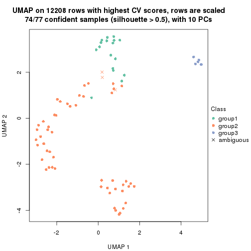
dimension_reduction(res, k = 4, method = "UMAP")
dimension_reduction(res, k = 5, method = "UMAP")
dimension_reduction(res, k = 6, method = "UMAP")
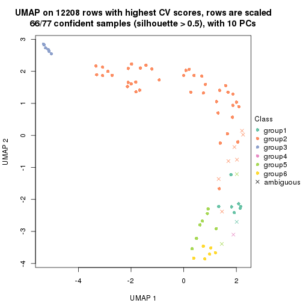
Following heatmap shows how subgroups are split when increasing k:
collect_classes(res)
If matrix rows can be associated to genes, consider to use functional_enrichment(res,
...) to perform function enrichment for the signature genes. See this vignette for more detailed explanations.
The object with results only for a single top-value method and a single partition method can be extracted as:
res = res_list["CV", "mclust"]
# you can also extract it by
# res = res_list["CV:mclust"]
A summary of res and all the functions that can be applied to it:
res
#> A 'ConsensusPartition' object with k = 2, 3, 4, 5, 6.
#> On a matrix with 12208 rows and 77 columns.
#> Top rows (1000, 2000, 3000, 4000, 5000) are extracted by 'CV' method.
#> Subgroups are detected by 'mclust' method.
#> Performed in total 1250 partitions by row resampling.
#> Best k for subgroups seems to be 2.
#>
#> Following methods can be applied to this 'ConsensusPartition' object:
#> [1] "cola_report" "collect_classes" "collect_plots"
#> [4] "collect_stats" "colnames" "compare_signatures"
#> [7] "consensus_heatmap" "dimension_reduction" "functional_enrichment"
#> [10] "get_anno_col" "get_anno" "get_classes"
#> [13] "get_consensus" "get_matrix" "get_membership"
#> [16] "get_param" "get_signatures" "get_stats"
#> [19] "is_best_k" "is_stable_k" "membership_heatmap"
#> [22] "ncol" "nrow" "plot_ecdf"
#> [25] "rownames" "select_partition_number" "show"
#> [28] "suggest_best_k" "test_to_known_factors"
collect_plots() function collects all the plots made from res for all k (number of partitions)
into one single page to provide an easy and fast comparison between different k.
collect_plots(res)
The plots are:
k and the heatmap of
predicted classes for each k.k.k.k.All the plots in panels can be made by individual functions and they are plotted later in this section.
select_partition_number() produces several plots showing different
statistics for choosing “optimized” k. There are following statistics:
k;k, the area increased is defined as \(A_k - A_{k-1}\).The detailed explanations of these statistics can be found in the cola vignette.
Generally speaking, lower PAC score, higher mean silhouette score or higher
concordance corresponds to better partition. Rand index and Jaccard index
measure how similar the current partition is compared to partition with k-1.
If they are too similar, we won't accept k is better than k-1.
select_partition_number(res)
The numeric values for all these statistics can be obtained by get_stats().
get_stats(res)
#> k 1-PAC mean_silhouette concordance area_increased Rand Jaccard
#> 2 2 0.758 0.833 0.929 0.497 0.494 0.494
#> 3 3 0.645 0.826 0.902 0.308 0.690 0.460
#> 4 4 0.707 0.832 0.898 0.119 0.893 0.705
#> 5 5 0.735 0.771 0.839 0.082 0.878 0.588
#> 6 6 0.768 0.778 0.875 0.040 0.966 0.833
suggest_best_k() suggests the best \(k\) based on these statistics. The rules are as follows:
suggest_best_k(res)
#> [1] 2
Following shows the table of the partitions (You need to click the show/hide
code output link to see it). The membership matrix (columns with name p*)
is inferred by
clue::cl_consensus()
function with the SE method. Basically the value in the membership matrix
represents the probability to belong to a certain group. The finall class
label for an item is determined with the group with highest probability it
belongs to.
In get_classes() function, the entropy is calculated from the membership
matrix and the silhouette score is calculated from the consensus matrix.
cbind(get_classes(res, k = 2), get_membership(res, k = 2))
#> class entropy silhouette p1 p2
#> SRR2044063 2 0.0000 0.9386 0.000 1.000
#> SRR2044062 2 0.4161 0.8647 0.084 0.916
#> SRR2044061 2 0.3584 0.8820 0.068 0.932
#> SRR2044060 2 0.0000 0.9386 0.000 1.000
#> SRR2044099 1 0.0672 0.9004 0.992 0.008
#> SRR2044098 1 0.3431 0.8906 0.936 0.064
#> SRR2044097 1 0.2603 0.8961 0.956 0.044
#> SRR2044096 1 0.0376 0.9003 0.996 0.004
#> SRR2044095 1 0.3431 0.8906 0.936 0.064
#> SRR2044094 1 0.0672 0.9004 0.992 0.008
#> SRR2044087 1 0.3431 0.8906 0.936 0.064
#> SRR2044086 1 0.8661 0.6463 0.712 0.288
#> SRR2044085 1 0.6438 0.8094 0.836 0.164
#> SRR2044084 1 0.3733 0.8862 0.928 0.072
#> SRR2044083 1 0.7674 0.7412 0.776 0.224
#> SRR2044082 1 0.7528 0.7514 0.784 0.216
#> SRR2044075 2 0.9988 -0.0948 0.480 0.520
#> SRR2044074 1 0.9983 0.2126 0.524 0.476
#> SRR2044073 1 0.9983 0.2126 0.524 0.476
#> SRR2044072 2 1.0000 -0.1547 0.496 0.504
#> SRR2044071 1 0.9983 0.2126 0.524 0.476
#> SRR2044070 1 0.9983 0.2126 0.524 0.476
#> SRR2044069 2 0.3431 0.8958 0.064 0.936
#> SRR2044068 2 0.3431 0.8958 0.064 0.936
#> SRR2044067 2 0.3431 0.8958 0.064 0.936
#> SRR2044066 2 0.3431 0.8958 0.064 0.936
#> SRR2044065 2 0.3431 0.8958 0.064 0.936
#> SRR2044064 2 0.3431 0.8958 0.064 0.936
#> SRR2044059 2 0.9209 0.4059 0.336 0.664
#> SRR2044058 2 0.3733 0.8780 0.072 0.928
#> SRR2044057 1 0.0000 0.9002 1.000 0.000
#> SRR2044056 1 0.0000 0.9002 1.000 0.000
#> SRR2044055 1 0.3431 0.8906 0.936 0.064
#> SRR2044054 1 0.0000 0.9002 1.000 0.000
#> SRR2044053 1 0.0000 0.9002 1.000 0.000
#> SRR2044052 1 0.3431 0.8906 0.936 0.064
#> SRR2044051 2 0.0000 0.9386 0.000 1.000
#> SRR2044050 2 0.0000 0.9386 0.000 1.000
#> SRR2044049 2 0.0000 0.9386 0.000 1.000
#> SRR2044048 2 0.0000 0.9386 0.000 1.000
#> SRR2044047 2 0.0000 0.9386 0.000 1.000
#> SRR2044046 2 0.0000 0.9386 0.000 1.000
#> SRR2044045 1 0.0000 0.9002 1.000 0.000
#> SRR2044044 1 0.0000 0.9002 1.000 0.000
#> SRR2044042 1 0.0000 0.9002 1.000 0.000
#> SRR2044041 1 0.0000 0.9002 1.000 0.000
#> SRR2044040 1 0.3431 0.8906 0.936 0.064
#> SRR2044039 2 0.0000 0.9386 0.000 1.000
#> SRR2044038 2 0.0000 0.9386 0.000 1.000
#> SRR2044037 2 0.0000 0.9386 0.000 1.000
#> SRR2044036 2 0.0000 0.9386 0.000 1.000
#> SRR2044035 2 0.0000 0.9386 0.000 1.000
#> SRR2044034 2 0.0000 0.9386 0.000 1.000
#> SRR2044033 1 0.0000 0.9002 1.000 0.000
#> SRR2044032 1 0.0000 0.9002 1.000 0.000
#> SRR2044031 1 0.3431 0.8906 0.936 0.064
#> SRR2044030 1 0.0000 0.9002 1.000 0.000
#> SRR2044029 1 0.0000 0.9002 1.000 0.000
#> SRR2044028 1 0.3431 0.8906 0.936 0.064
#> SRR2044027 2 0.0000 0.9386 0.000 1.000
#> SRR2044026 2 0.0000 0.9386 0.000 1.000
#> SRR2044024 2 0.0000 0.9386 0.000 1.000
#> SRR2044023 2 0.0000 0.9386 0.000 1.000
#> SRR2044025 2 0.0000 0.9386 0.000 1.000
#> SRR2044022 2 0.0000 0.9386 0.000 1.000
#> SRR2044021 1 0.0000 0.9002 1.000 0.000
#> SRR2044020 1 0.0000 0.9002 1.000 0.000
#> SRR2044019 1 0.2603 0.8961 0.956 0.044
#> SRR2044018 1 0.0000 0.9002 1.000 0.000
#> SRR2044017 1 0.0000 0.9002 1.000 0.000
#> SRR2044016 1 0.2778 0.8952 0.952 0.048
#> SRR2044015 2 0.0376 0.9365 0.004 0.996
#> SRR2044014 2 0.0000 0.9386 0.000 1.000
#> SRR2044013 2 0.0000 0.9386 0.000 1.000
#> SRR2044011 2 0.0000 0.9386 0.000 1.000
#> SRR2044010 2 0.0000 0.9386 0.000 1.000
#> SRR2044012 2 0.0376 0.9365 0.004 0.996
cbind(get_classes(res, k = 3), get_membership(res, k = 3))
#> class entropy silhouette p1 p2 p3
#> SRR2044063 2 0.0892 0.961 0.020 0.980 0.000
#> SRR2044062 1 0.5859 0.586 0.656 0.344 0.000
#> SRR2044061 1 0.5905 0.571 0.648 0.352 0.000
#> SRR2044060 2 0.2625 0.885 0.084 0.916 0.000
#> SRR2044099 1 0.0000 0.829 1.000 0.000 0.000
#> SRR2044098 1 0.0475 0.830 0.992 0.004 0.004
#> SRR2044097 1 0.2796 0.796 0.908 0.000 0.092
#> SRR2044096 1 0.0237 0.828 0.996 0.000 0.004
#> SRR2044095 1 0.0592 0.831 0.988 0.012 0.000
#> SRR2044094 1 0.3038 0.790 0.896 0.000 0.104
#> SRR2044087 1 0.1289 0.831 0.968 0.032 0.000
#> SRR2044086 1 0.1411 0.830 0.964 0.036 0.000
#> SRR2044085 1 0.1289 0.831 0.968 0.032 0.000
#> SRR2044084 1 0.1289 0.831 0.968 0.032 0.000
#> SRR2044083 1 0.1289 0.831 0.968 0.032 0.000
#> SRR2044082 1 0.1289 0.831 0.968 0.032 0.000
#> SRR2044075 1 0.5138 0.712 0.748 0.252 0.000
#> SRR2044074 1 0.4504 0.756 0.804 0.196 0.000
#> SRR2044073 1 0.4452 0.758 0.808 0.192 0.000
#> SRR2044072 1 0.5138 0.712 0.748 0.252 0.000
#> SRR2044071 1 0.4504 0.756 0.804 0.196 0.000
#> SRR2044070 1 0.4346 0.763 0.816 0.184 0.000
#> SRR2044069 3 0.4291 0.741 0.000 0.180 0.820
#> SRR2044068 3 0.4235 0.745 0.000 0.176 0.824
#> SRR2044067 3 0.4235 0.745 0.000 0.176 0.824
#> SRR2044066 3 0.4235 0.745 0.000 0.176 0.824
#> SRR2044065 3 0.4235 0.745 0.000 0.176 0.824
#> SRR2044064 3 0.4235 0.745 0.000 0.176 0.824
#> SRR2044059 1 0.5291 0.697 0.732 0.268 0.000
#> SRR2044058 1 0.5810 0.600 0.664 0.336 0.000
#> SRR2044057 3 0.1411 0.821 0.036 0.000 0.964
#> SRR2044056 3 0.1643 0.821 0.044 0.000 0.956
#> SRR2044055 1 0.0237 0.830 0.996 0.004 0.000
#> SRR2044054 3 0.1411 0.821 0.036 0.000 0.964
#> SRR2044053 3 0.1643 0.821 0.044 0.000 0.956
#> SRR2044052 1 0.0237 0.830 0.996 0.004 0.000
#> SRR2044051 2 0.0000 0.980 0.000 1.000 0.000
#> SRR2044050 2 0.0000 0.980 0.000 1.000 0.000
#> SRR2044049 2 0.0000 0.980 0.000 1.000 0.000
#> SRR2044048 2 0.0000 0.980 0.000 1.000 0.000
#> SRR2044047 2 0.0000 0.980 0.000 1.000 0.000
#> SRR2044046 2 0.0000 0.980 0.000 1.000 0.000
#> SRR2044045 3 0.1643 0.821 0.044 0.000 0.956
#> SRR2044044 3 0.4399 0.759 0.188 0.000 0.812
#> SRR2044042 3 0.1643 0.821 0.044 0.000 0.956
#> SRR2044041 3 0.4399 0.759 0.188 0.000 0.812
#> SRR2044040 1 0.1860 0.814 0.948 0.000 0.052
#> SRR2044039 2 0.0000 0.980 0.000 1.000 0.000
#> SRR2044038 2 0.0000 0.980 0.000 1.000 0.000
#> SRR2044037 2 0.0000 0.980 0.000 1.000 0.000
#> SRR2044036 2 0.0000 0.980 0.000 1.000 0.000
#> SRR2044035 2 0.0000 0.980 0.000 1.000 0.000
#> SRR2044034 2 0.0000 0.980 0.000 1.000 0.000
#> SRR2044033 3 0.4346 0.761 0.184 0.000 0.816
#> SRR2044032 3 0.6140 0.400 0.404 0.000 0.596
#> SRR2044031 1 0.3038 0.790 0.896 0.000 0.104
#> SRR2044030 3 0.4399 0.759 0.188 0.000 0.812
#> SRR2044029 3 0.6079 0.439 0.388 0.000 0.612
#> SRR2044028 1 0.3038 0.790 0.896 0.000 0.104
#> SRR2044027 2 0.1289 0.965 0.000 0.968 0.032
#> SRR2044026 2 0.0000 0.980 0.000 1.000 0.000
#> SRR2044024 2 0.1289 0.965 0.000 0.968 0.032
#> SRR2044023 2 0.0000 0.980 0.000 1.000 0.000
#> SRR2044025 2 0.0000 0.980 0.000 1.000 0.000
#> SRR2044022 2 0.0000 0.980 0.000 1.000 0.000
#> SRR2044021 1 0.3551 0.768 0.868 0.000 0.132
#> SRR2044020 1 0.5138 0.616 0.748 0.000 0.252
#> SRR2044019 1 0.3038 0.790 0.896 0.000 0.104
#> SRR2044018 1 0.4504 0.702 0.804 0.000 0.196
#> SRR2044017 1 0.5138 0.616 0.748 0.000 0.252
#> SRR2044016 1 0.3038 0.790 0.896 0.000 0.104
#> SRR2044015 2 0.1643 0.959 0.000 0.956 0.044
#> SRR2044014 2 0.1643 0.959 0.000 0.956 0.044
#> SRR2044013 2 0.1643 0.959 0.000 0.956 0.044
#> SRR2044011 2 0.1643 0.959 0.000 0.956 0.044
#> SRR2044010 2 0.1643 0.959 0.000 0.956 0.044
#> SRR2044012 2 0.1643 0.959 0.000 0.956 0.044
cbind(get_classes(res, k = 4), get_membership(res, k = 4))
#> class entropy silhouette p1 p2 p3 p4
#> SRR2044063 4 0.2647 0.810 0.000 0.120 0.000 0.880
#> SRR2044062 2 0.4948 0.382 0.000 0.560 0.000 0.440
#> SRR2044061 2 0.4961 0.362 0.000 0.552 0.000 0.448
#> SRR2044060 4 0.2973 0.780 0.000 0.144 0.000 0.856
#> SRR2044099 2 0.2011 0.796 0.080 0.920 0.000 0.000
#> SRR2044098 2 0.2882 0.802 0.084 0.892 0.000 0.024
#> SRR2044097 2 0.3172 0.746 0.160 0.840 0.000 0.000
#> SRR2044096 2 0.2081 0.792 0.084 0.916 0.000 0.000
#> SRR2044095 2 0.1837 0.816 0.028 0.944 0.000 0.028
#> SRR2044094 2 0.3172 0.746 0.160 0.840 0.000 0.000
#> SRR2044087 2 0.1356 0.816 0.008 0.960 0.000 0.032
#> SRR2044086 2 0.1867 0.811 0.000 0.928 0.000 0.072
#> SRR2044085 2 0.1022 0.816 0.000 0.968 0.000 0.032
#> SRR2044084 2 0.1022 0.815 0.000 0.968 0.000 0.032
#> SRR2044083 2 0.1557 0.813 0.000 0.944 0.000 0.056
#> SRR2044082 2 0.1211 0.815 0.000 0.960 0.000 0.040
#> SRR2044075 2 0.4643 0.575 0.000 0.656 0.000 0.344
#> SRR2044074 2 0.3172 0.775 0.000 0.840 0.000 0.160
#> SRR2044073 2 0.3400 0.760 0.000 0.820 0.000 0.180
#> SRR2044072 2 0.4643 0.575 0.000 0.656 0.000 0.344
#> SRR2044071 2 0.3311 0.767 0.000 0.828 0.000 0.172
#> SRR2044070 2 0.2868 0.788 0.000 0.864 0.000 0.136
#> SRR2044069 3 0.0000 0.914 0.000 0.000 1.000 0.000
#> SRR2044068 3 0.0000 0.914 0.000 0.000 1.000 0.000
#> SRR2044067 3 0.0000 0.914 0.000 0.000 1.000 0.000
#> SRR2044066 3 0.0000 0.914 0.000 0.000 1.000 0.000
#> SRR2044065 3 0.0000 0.914 0.000 0.000 1.000 0.000
#> SRR2044064 3 0.0000 0.914 0.000 0.000 1.000 0.000
#> SRR2044059 2 0.4761 0.527 0.000 0.628 0.000 0.372
#> SRR2044058 2 0.4933 0.402 0.000 0.568 0.000 0.432
#> SRR2044057 1 0.0188 0.973 0.996 0.004 0.000 0.000
#> SRR2044056 1 0.0188 0.973 0.996 0.004 0.000 0.000
#> SRR2044055 2 0.1022 0.809 0.032 0.968 0.000 0.000
#> SRR2044054 1 0.0188 0.973 0.996 0.004 0.000 0.000
#> SRR2044053 1 0.0188 0.973 0.996 0.004 0.000 0.000
#> SRR2044052 2 0.1118 0.809 0.036 0.964 0.000 0.000
#> SRR2044051 4 0.1610 0.906 0.000 0.032 0.016 0.952
#> SRR2044050 4 0.0592 0.905 0.000 0.016 0.000 0.984
#> SRR2044049 4 0.0672 0.911 0.000 0.008 0.008 0.984
#> SRR2044048 4 0.1209 0.897 0.000 0.032 0.004 0.964
#> SRR2044047 4 0.0592 0.905 0.000 0.016 0.000 0.984
#> SRR2044046 4 0.0707 0.903 0.000 0.020 0.000 0.980
#> SRR2044045 1 0.0188 0.973 0.996 0.004 0.000 0.000
#> SRR2044044 1 0.0000 0.972 1.000 0.000 0.000 0.000
#> SRR2044042 1 0.0188 0.973 0.996 0.004 0.000 0.000
#> SRR2044041 1 0.0000 0.972 1.000 0.000 0.000 0.000
#> SRR2044040 2 0.1022 0.809 0.032 0.968 0.000 0.000
#> SRR2044039 4 0.1474 0.920 0.000 0.000 0.052 0.948
#> SRR2044038 4 0.1389 0.922 0.000 0.000 0.048 0.952
#> SRR2044037 4 0.1389 0.922 0.000 0.000 0.048 0.952
#> SRR2044036 4 0.1716 0.915 0.000 0.000 0.064 0.936
#> SRR2044035 4 0.1389 0.922 0.000 0.000 0.048 0.952
#> SRR2044034 4 0.1389 0.922 0.000 0.000 0.048 0.952
#> SRR2044033 1 0.0188 0.973 0.996 0.004 0.000 0.000
#> SRR2044032 1 0.0000 0.972 1.000 0.000 0.000 0.000
#> SRR2044031 2 0.2973 0.759 0.144 0.856 0.000 0.000
#> SRR2044030 1 0.0188 0.973 0.996 0.004 0.000 0.000
#> SRR2044029 1 0.0000 0.972 1.000 0.000 0.000 0.000
#> SRR2044028 2 0.2921 0.761 0.140 0.860 0.000 0.000
#> SRR2044027 4 0.3837 0.704 0.000 0.000 0.224 0.776
#> SRR2044026 4 0.1557 0.919 0.000 0.000 0.056 0.944
#> SRR2044024 4 0.3486 0.764 0.000 0.000 0.188 0.812
#> SRR2044023 4 0.1792 0.913 0.000 0.000 0.068 0.932
#> SRR2044025 4 0.1867 0.910 0.000 0.000 0.072 0.928
#> SRR2044022 4 0.1867 0.910 0.000 0.000 0.072 0.928
#> SRR2044021 2 0.3801 0.686 0.220 0.780 0.000 0.000
#> SRR2044020 1 0.2868 0.838 0.864 0.136 0.000 0.000
#> SRR2044019 2 0.3172 0.746 0.160 0.840 0.000 0.000
#> SRR2044018 2 0.4331 0.581 0.288 0.712 0.000 0.000
#> SRR2044017 1 0.2868 0.838 0.864 0.136 0.000 0.000
#> SRR2044016 2 0.3172 0.746 0.160 0.840 0.000 0.000
#> SRR2044015 3 0.2921 0.903 0.000 0.000 0.860 0.140
#> SRR2044014 3 0.3074 0.891 0.000 0.000 0.848 0.152
#> SRR2044013 3 0.2973 0.900 0.000 0.000 0.856 0.144
#> SRR2044011 3 0.2921 0.903 0.000 0.000 0.860 0.140
#> SRR2044010 3 0.2921 0.903 0.000 0.000 0.860 0.140
#> SRR2044012 3 0.2868 0.904 0.000 0.000 0.864 0.136
cbind(get_classes(res, k = 5), get_membership(res, k = 5))
#> class entropy silhouette p1 p2 p3 p4 p5
#> SRR2044063 2 0.2690 0.731 0.000 0.844 0.000 0.156 0.000
#> SRR2044062 2 0.2535 0.816 0.076 0.892 0.000 0.032 0.000
#> SRR2044061 2 0.2616 0.815 0.076 0.888 0.000 0.036 0.000
#> SRR2044060 2 0.2605 0.740 0.000 0.852 0.000 0.148 0.000
#> SRR2044099 1 0.2592 0.810 0.892 0.056 0.000 0.000 0.052
#> SRR2044098 2 0.5965 0.348 0.328 0.544 0.000 0.000 0.128
#> SRR2044097 1 0.1851 0.810 0.912 0.000 0.000 0.000 0.088
#> SRR2044096 1 0.2569 0.807 0.892 0.068 0.000 0.000 0.040
#> SRR2044095 2 0.5488 0.482 0.300 0.608 0.000 0.000 0.092
#> SRR2044094 1 0.1851 0.810 0.912 0.000 0.000 0.000 0.088
#> SRR2044087 1 0.3816 0.548 0.696 0.304 0.000 0.000 0.000
#> SRR2044086 2 0.2929 0.774 0.180 0.820 0.000 0.000 0.000
#> SRR2044085 1 0.4227 0.214 0.580 0.420 0.000 0.000 0.000
#> SRR2044084 1 0.4088 0.422 0.632 0.368 0.000 0.000 0.000
#> SRR2044083 2 0.3109 0.754 0.200 0.800 0.000 0.000 0.000
#> SRR2044082 1 0.4182 0.302 0.600 0.400 0.000 0.000 0.000
#> SRR2044075 2 0.2249 0.815 0.096 0.896 0.000 0.008 0.000
#> SRR2044074 2 0.3424 0.722 0.240 0.760 0.000 0.000 0.000
#> SRR2044073 2 0.2891 0.786 0.176 0.824 0.000 0.000 0.000
#> SRR2044072 2 0.2249 0.815 0.096 0.896 0.000 0.008 0.000
#> SRR2044071 2 0.2966 0.780 0.184 0.816 0.000 0.000 0.000
#> SRR2044070 2 0.3109 0.770 0.200 0.800 0.000 0.000 0.000
#> SRR2044069 3 0.0000 0.778 0.000 0.000 1.000 0.000 0.000
#> SRR2044068 3 0.0000 0.778 0.000 0.000 1.000 0.000 0.000
#> SRR2044067 3 0.0000 0.778 0.000 0.000 1.000 0.000 0.000
#> SRR2044066 3 0.0000 0.778 0.000 0.000 1.000 0.000 0.000
#> SRR2044065 3 0.0000 0.778 0.000 0.000 1.000 0.000 0.000
#> SRR2044064 3 0.0000 0.778 0.000 0.000 1.000 0.000 0.000
#> SRR2044059 2 0.2482 0.817 0.084 0.892 0.000 0.024 0.000
#> SRR2044058 2 0.2535 0.816 0.076 0.892 0.000 0.032 0.000
#> SRR2044057 5 0.0162 0.942 0.004 0.000 0.000 0.000 0.996
#> SRR2044056 5 0.0162 0.942 0.004 0.000 0.000 0.000 0.996
#> SRR2044055 1 0.2685 0.782 0.880 0.092 0.000 0.000 0.028
#> SRR2044054 5 0.0162 0.942 0.004 0.000 0.000 0.000 0.996
#> SRR2044053 5 0.0510 0.944 0.016 0.000 0.000 0.000 0.984
#> SRR2044052 1 0.3346 0.769 0.844 0.092 0.000 0.000 0.064
#> SRR2044051 2 0.3932 0.493 0.000 0.672 0.000 0.328 0.000
#> SRR2044050 4 0.3480 0.714 0.000 0.248 0.000 0.752 0.000
#> SRR2044049 4 0.3274 0.748 0.000 0.220 0.000 0.780 0.000
#> SRR2044048 2 0.3913 0.501 0.000 0.676 0.000 0.324 0.000
#> SRR2044047 4 0.3452 0.718 0.000 0.244 0.000 0.756 0.000
#> SRR2044046 4 0.3983 0.538 0.000 0.340 0.000 0.660 0.000
#> SRR2044045 5 0.0162 0.942 0.004 0.000 0.000 0.000 0.996
#> SRR2044044 5 0.1270 0.937 0.052 0.000 0.000 0.000 0.948
#> SRR2044042 5 0.0162 0.942 0.004 0.000 0.000 0.000 0.996
#> SRR2044041 5 0.1270 0.937 0.052 0.000 0.000 0.000 0.948
#> SRR2044040 1 0.2069 0.795 0.912 0.076 0.000 0.000 0.012
#> SRR2044039 4 0.0510 0.898 0.000 0.016 0.000 0.984 0.000
#> SRR2044038 4 0.0703 0.900 0.000 0.024 0.000 0.976 0.000
#> SRR2044037 4 0.0703 0.900 0.000 0.024 0.000 0.976 0.000
#> SRR2044036 4 0.0510 0.898 0.000 0.016 0.000 0.984 0.000
#> SRR2044035 4 0.0703 0.900 0.000 0.024 0.000 0.976 0.000
#> SRR2044034 4 0.0703 0.900 0.000 0.024 0.000 0.976 0.000
#> SRR2044033 5 0.0510 0.944 0.016 0.000 0.000 0.000 0.984
#> SRR2044032 5 0.1544 0.928 0.068 0.000 0.000 0.000 0.932
#> SRR2044031 1 0.2069 0.813 0.912 0.012 0.000 0.000 0.076
#> SRR2044030 5 0.0880 0.943 0.032 0.000 0.000 0.000 0.968
#> SRR2044029 5 0.1410 0.933 0.060 0.000 0.000 0.000 0.940
#> SRR2044028 1 0.2144 0.813 0.912 0.020 0.000 0.000 0.068
#> SRR2044027 4 0.1168 0.845 0.008 0.032 0.000 0.960 0.000
#> SRR2044026 4 0.0609 0.900 0.000 0.020 0.000 0.980 0.000
#> SRR2044024 4 0.0865 0.857 0.004 0.024 0.000 0.972 0.000
#> SRR2044023 4 0.0609 0.900 0.000 0.020 0.000 0.980 0.000
#> SRR2044025 4 0.0510 0.898 0.000 0.016 0.000 0.984 0.000
#> SRR2044022 4 0.0609 0.900 0.000 0.020 0.000 0.980 0.000
#> SRR2044021 1 0.3789 0.680 0.760 0.016 0.000 0.000 0.224
#> SRR2044020 5 0.3745 0.766 0.196 0.024 0.000 0.000 0.780
#> SRR2044019 1 0.1851 0.810 0.912 0.000 0.000 0.000 0.088
#> SRR2044018 1 0.4494 0.353 0.608 0.012 0.000 0.000 0.380
#> SRR2044017 5 0.3745 0.766 0.196 0.024 0.000 0.000 0.780
#> SRR2044016 1 0.1851 0.810 0.912 0.000 0.000 0.000 0.088
#> SRR2044015 3 0.7034 0.726 0.088 0.104 0.544 0.264 0.000
#> SRR2044014 3 0.7132 0.702 0.088 0.104 0.520 0.288 0.000
#> SRR2044013 3 0.7069 0.721 0.088 0.104 0.536 0.272 0.000
#> SRR2044011 3 0.7085 0.717 0.088 0.104 0.532 0.276 0.000
#> SRR2044010 3 0.7069 0.721 0.088 0.104 0.536 0.272 0.000
#> SRR2044012 3 0.6997 0.729 0.088 0.104 0.552 0.256 0.000
cbind(get_classes(res, k = 6), get_membership(res, k = 6))
#> class entropy silhouette p1 p2 p3 p4 p5 p6
#> SRR2044063 2 0.0603 0.861 0.000 0.980 0.000 0.016 0.000 0.004
#> SRR2044062 2 0.0000 0.869 0.000 1.000 0.000 0.000 0.000 0.000
#> SRR2044061 2 0.0000 0.869 0.000 1.000 0.000 0.000 0.000 0.000
#> SRR2044060 2 0.0603 0.861 0.000 0.980 0.000 0.016 0.000 0.004
#> SRR2044099 1 0.3438 0.793 0.812 0.024 0.000 0.000 0.020 0.144
#> SRR2044098 2 0.6268 0.339 0.284 0.536 0.000 0.000 0.104 0.076
#> SRR2044097 1 0.0146 0.816 0.996 0.000 0.000 0.000 0.000 0.004
#> SRR2044096 1 0.3261 0.794 0.820 0.024 0.000 0.000 0.012 0.144
#> SRR2044095 2 0.6044 0.470 0.212 0.596 0.000 0.000 0.076 0.116
#> SRR2044094 1 0.0260 0.815 0.992 0.000 0.000 0.000 0.008 0.000
#> SRR2044087 1 0.5123 0.588 0.616 0.244 0.000 0.000 0.000 0.140
#> SRR2044086 2 0.3112 0.792 0.068 0.836 0.000 0.000 0.000 0.096
#> SRR2044085 1 0.4209 0.315 0.588 0.396 0.000 0.000 0.004 0.012
#> SRR2044084 1 0.5555 0.312 0.480 0.380 0.000 0.000 0.000 0.140
#> SRR2044083 2 0.3657 0.750 0.100 0.792 0.000 0.000 0.000 0.108
#> SRR2044082 1 0.4793 0.580 0.648 0.252 0.000 0.000 0.000 0.100
#> SRR2044075 2 0.0000 0.869 0.000 1.000 0.000 0.000 0.000 0.000
#> SRR2044074 2 0.3394 0.704 0.200 0.776 0.000 0.000 0.000 0.024
#> SRR2044073 2 0.1610 0.842 0.084 0.916 0.000 0.000 0.000 0.000
#> SRR2044072 2 0.0146 0.868 0.004 0.996 0.000 0.000 0.000 0.000
#> SRR2044071 2 0.2212 0.813 0.112 0.880 0.000 0.000 0.000 0.008
#> SRR2044070 2 0.2053 0.830 0.108 0.888 0.000 0.000 0.000 0.004
#> SRR2044069 3 0.0000 1.000 0.000 0.000 1.000 0.000 0.000 0.000
#> SRR2044068 3 0.0000 1.000 0.000 0.000 1.000 0.000 0.000 0.000
#> SRR2044067 3 0.0000 1.000 0.000 0.000 1.000 0.000 0.000 0.000
#> SRR2044066 3 0.0000 1.000 0.000 0.000 1.000 0.000 0.000 0.000
#> SRR2044065 3 0.0000 1.000 0.000 0.000 1.000 0.000 0.000 0.000
#> SRR2044064 3 0.0000 1.000 0.000 0.000 1.000 0.000 0.000 0.000
#> SRR2044059 2 0.0000 0.869 0.000 1.000 0.000 0.000 0.000 0.000
#> SRR2044058 2 0.0000 0.869 0.000 1.000 0.000 0.000 0.000 0.000
#> SRR2044057 5 0.0000 0.906 0.000 0.000 0.000 0.000 1.000 0.000
#> SRR2044056 5 0.0000 0.906 0.000 0.000 0.000 0.000 1.000 0.000
#> SRR2044055 1 0.3141 0.794 0.836 0.004 0.000 0.000 0.048 0.112
#> SRR2044054 5 0.0000 0.906 0.000 0.000 0.000 0.000 1.000 0.000
#> SRR2044053 5 0.0000 0.906 0.000 0.000 0.000 0.000 1.000 0.000
#> SRR2044052 1 0.3842 0.766 0.784 0.004 0.000 0.000 0.112 0.100
#> SRR2044051 4 0.3966 0.289 0.000 0.444 0.000 0.552 0.000 0.004
#> SRR2044050 4 0.3468 0.652 0.000 0.284 0.000 0.712 0.000 0.004
#> SRR2044049 4 0.2994 0.695 0.000 0.208 0.000 0.788 0.000 0.004
#> SRR2044048 4 0.3991 0.207 0.000 0.472 0.000 0.524 0.000 0.004
#> SRR2044047 4 0.3448 0.655 0.000 0.280 0.000 0.716 0.000 0.004
#> SRR2044046 4 0.3601 0.618 0.000 0.312 0.000 0.684 0.000 0.004
#> SRR2044045 5 0.0000 0.906 0.000 0.000 0.000 0.000 1.000 0.000
#> SRR2044044 5 0.1267 0.898 0.060 0.000 0.000 0.000 0.940 0.000
#> SRR2044042 5 0.0000 0.906 0.000 0.000 0.000 0.000 1.000 0.000
#> SRR2044041 5 0.1267 0.898 0.060 0.000 0.000 0.000 0.940 0.000
#> SRR2044040 1 0.0146 0.816 0.996 0.000 0.000 0.000 0.000 0.004
#> SRR2044039 4 0.0146 0.794 0.000 0.000 0.000 0.996 0.000 0.004
#> SRR2044038 4 0.0000 0.794 0.000 0.000 0.000 1.000 0.000 0.000
#> SRR2044037 4 0.0000 0.794 0.000 0.000 0.000 1.000 0.000 0.000
#> SRR2044036 4 0.0146 0.794 0.000 0.000 0.000 0.996 0.000 0.004
#> SRR2044035 4 0.0000 0.794 0.000 0.000 0.000 1.000 0.000 0.000
#> SRR2044034 4 0.0000 0.794 0.000 0.000 0.000 1.000 0.000 0.000
#> SRR2044033 5 0.0291 0.906 0.004 0.000 0.000 0.000 0.992 0.004
#> SRR2044032 5 0.2340 0.848 0.148 0.000 0.000 0.000 0.852 0.000
#> SRR2044031 1 0.0000 0.816 1.000 0.000 0.000 0.000 0.000 0.000
#> SRR2044030 5 0.0935 0.904 0.032 0.000 0.000 0.000 0.964 0.004
#> SRR2044029 5 0.2178 0.859 0.132 0.000 0.000 0.000 0.868 0.000
#> SRR2044028 1 0.0000 0.816 1.000 0.000 0.000 0.000 0.000 0.000
#> SRR2044027 4 0.3482 0.375 0.000 0.000 0.000 0.684 0.000 0.316
#> SRR2044026 4 0.0146 0.794 0.000 0.000 0.000 0.996 0.000 0.004
#> SRR2044024 4 0.3175 0.505 0.000 0.000 0.000 0.744 0.000 0.256
#> SRR2044023 4 0.0146 0.794 0.000 0.000 0.000 0.996 0.000 0.004
#> SRR2044025 4 0.0146 0.794 0.000 0.000 0.000 0.996 0.000 0.004
#> SRR2044022 4 0.0146 0.794 0.000 0.000 0.000 0.996 0.000 0.004
#> SRR2044021 1 0.3546 0.757 0.824 0.024 0.000 0.000 0.096 0.056
#> SRR2044020 5 0.4552 0.583 0.320 0.012 0.000 0.000 0.636 0.032
#> SRR2044019 1 0.0146 0.816 0.996 0.000 0.000 0.000 0.000 0.004
#> SRR2044018 1 0.5874 0.260 0.504 0.024 0.000 0.000 0.356 0.116
#> SRR2044017 5 0.4552 0.583 0.320 0.012 0.000 0.000 0.636 0.032
#> SRR2044016 1 0.0146 0.816 0.996 0.000 0.000 0.000 0.000 0.004
#> SRR2044015 6 0.2572 0.990 0.000 0.000 0.012 0.136 0.000 0.852
#> SRR2044014 6 0.2553 0.989 0.000 0.000 0.008 0.144 0.000 0.848
#> SRR2044013 6 0.2513 0.992 0.000 0.000 0.008 0.140 0.000 0.852
#> SRR2044011 6 0.2513 0.992 0.000 0.000 0.008 0.140 0.000 0.852
#> SRR2044010 6 0.2513 0.992 0.000 0.000 0.008 0.140 0.000 0.852
#> SRR2044012 6 0.2740 0.972 0.000 0.000 0.028 0.120 0.000 0.852
Heatmaps for the consensus matrix. It visualizes the probability of two samples to be in a same group.
consensus_heatmap(res, k = 2)
consensus_heatmap(res, k = 3)
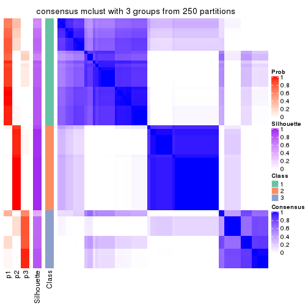
consensus_heatmap(res, k = 4)
consensus_heatmap(res, k = 5)
consensus_heatmap(res, k = 6)
Heatmaps for the membership of samples in all partitions to see how consistent they are:
membership_heatmap(res, k = 2)
membership_heatmap(res, k = 3)

membership_heatmap(res, k = 4)
membership_heatmap(res, k = 5)
membership_heatmap(res, k = 6)
As soon as we have had the classes for columns, we can look for signatures which are significantly different between classes which can be candidate marks for certain classes. Following are the heatmaps for signatures.
Signature heatmaps where rows are scaled:
get_signatures(res, k = 2)
get_signatures(res, k = 3)
get_signatures(res, k = 4)
get_signatures(res, k = 5)
get_signatures(res, k = 6)
Signature heatmaps where rows are not scaled:
get_signatures(res, k = 2, scale_rows = FALSE)
get_signatures(res, k = 3, scale_rows = FALSE)
get_signatures(res, k = 4, scale_rows = FALSE)
get_signatures(res, k = 5, scale_rows = FALSE)
get_signatures(res, k = 6, scale_rows = FALSE)
Compare the overlap of signatures from different k:
compare_signatures(res)
get_signature() returns a data frame invisibly. TO get the list of signatures, the function
call should be assigned to a variable explicitly. In following code, if plot argument is set
to FALSE, no heatmap is plotted while only the differential analysis is performed.
# code only for demonstration
tb = get_signature(res, k = ..., plot = FALSE)
An example of the output of tb is:
#> which_row fdr mean_1 mean_2 scaled_mean_1 scaled_mean_2 km
#> 1 38 0.042760348 8.373488 9.131774 -0.5533452 0.5164555 1
#> 2 40 0.018707592 7.106213 8.469186 -0.6173731 0.5762149 1
#> 3 55 0.019134737 10.221463 11.207825 -0.6159697 0.5749050 1
#> 4 59 0.006059896 5.921854 7.869574 -0.6899429 0.6439467 1
#> 5 60 0.018055526 8.928898 10.211722 -0.6204761 0.5791110 1
#> 6 98 0.009384629 15.714769 14.887706 0.6635654 -0.6193277 2
...
The columns in tb are:
which_row: row indices corresponding to the input matrix.fdr: FDR for the differential test. mean_x: The mean value in group x.scaled_mean_x: The mean value in group x after rows are scaled.km: Row groups if k-means clustering is applied to rows.UMAP plot which shows how samples are separated.
dimension_reduction(res, k = 2, method = "UMAP")
dimension_reduction(res, k = 3, method = "UMAP")
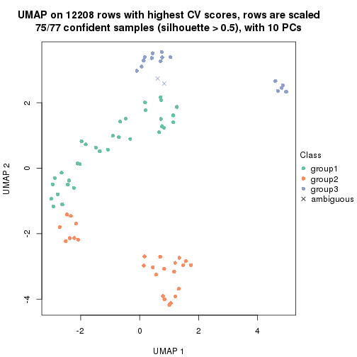
dimension_reduction(res, k = 4, method = "UMAP")
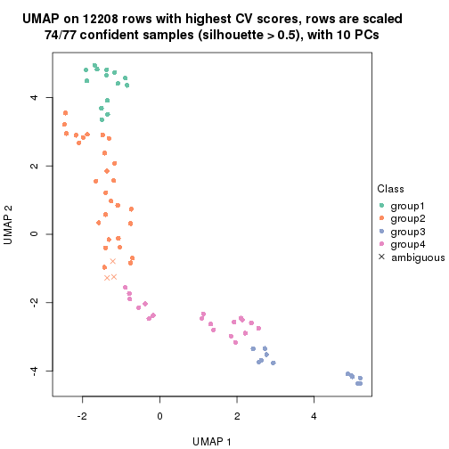
dimension_reduction(res, k = 5, method = "UMAP")
dimension_reduction(res, k = 6, method = "UMAP")
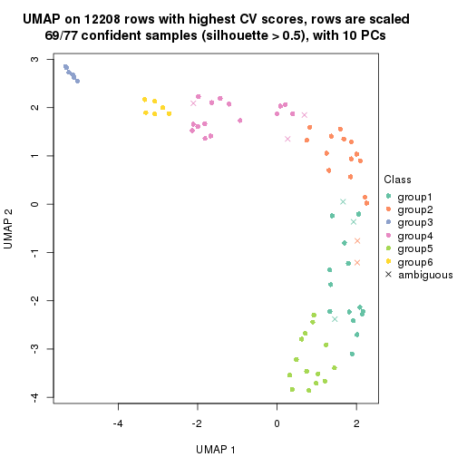
Following heatmap shows how subgroups are split when increasing k:
collect_classes(res)
If matrix rows can be associated to genes, consider to use functional_enrichment(res,
...) to perform function enrichment for the signature genes. See this vignette for more detailed explanations.
The object with results only for a single top-value method and a single partition method can be extracted as:
res = res_list["CV", "NMF"]
# you can also extract it by
# res = res_list["CV:NMF"]
A summary of res and all the functions that can be applied to it:
res
#> A 'ConsensusPartition' object with k = 2, 3, 4, 5, 6.
#> On a matrix with 12208 rows and 77 columns.
#> Top rows (1000, 2000, 3000, 4000, 5000) are extracted by 'CV' method.
#> Subgroups are detected by 'NMF' method.
#> Performed in total 1250 partitions by row resampling.
#> Best k for subgroups seems to be 2.
#>
#> Following methods can be applied to this 'ConsensusPartition' object:
#> [1] "cola_report" "collect_classes" "collect_plots"
#> [4] "collect_stats" "colnames" "compare_signatures"
#> [7] "consensus_heatmap" "dimension_reduction" "functional_enrichment"
#> [10] "get_anno_col" "get_anno" "get_classes"
#> [13] "get_consensus" "get_matrix" "get_membership"
#> [16] "get_param" "get_signatures" "get_stats"
#> [19] "is_best_k" "is_stable_k" "membership_heatmap"
#> [22] "ncol" "nrow" "plot_ecdf"
#> [25] "rownames" "select_partition_number" "show"
#> [28] "suggest_best_k" "test_to_known_factors"
collect_plots() function collects all the plots made from res for all k (number of partitions)
into one single page to provide an easy and fast comparison between different k.
collect_plots(res)
The plots are:
k and the heatmap of
predicted classes for each k.k.k.k.All the plots in panels can be made by individual functions and they are plotted later in this section.
select_partition_number() produces several plots showing different
statistics for choosing “optimized” k. There are following statistics:
k;k, the area increased is defined as \(A_k - A_{k-1}\).The detailed explanations of these statistics can be found in the cola vignette.
Generally speaking, lower PAC score, higher mean silhouette score or higher
concordance corresponds to better partition. Rand index and Jaccard index
measure how similar the current partition is compared to partition with k-1.
If they are too similar, we won't accept k is better than k-1.
select_partition_number(res)
The numeric values for all these statistics can be obtained by get_stats().
get_stats(res)
#> k 1-PAC mean_silhouette concordance area_increased Rand Jaccard
#> 2 2 0.946 0.934 0.974 0.4666 0.524 0.524
#> 3 3 0.879 0.856 0.946 0.4333 0.691 0.469
#> 4 4 0.822 0.846 0.930 0.1059 0.730 0.376
#> 5 5 0.743 0.763 0.877 0.0595 0.864 0.551
#> 6 6 0.846 0.821 0.903 0.0303 0.905 0.617
suggest_best_k() suggests the best \(k\) based on these statistics. The rules are as follows:
suggest_best_k(res)
#> [1] 2
Following shows the table of the partitions (You need to click the show/hide
code output link to see it). The membership matrix (columns with name p*)
is inferred by
clue::cl_consensus()
function with the SE method. Basically the value in the membership matrix
represents the probability to belong to a certain group. The finall class
label for an item is determined with the group with highest probability it
belongs to.
In get_classes() function, the entropy is calculated from the membership
matrix and the silhouette score is calculated from the consensus matrix.
cbind(get_classes(res, k = 2), get_membership(res, k = 2))
#> class entropy silhouette p1 p2
#> SRR2044063 1 0.163 0.964 0.976 0.024
#> SRR2044062 1 0.000 0.990 1.000 0.000
#> SRR2044061 1 0.000 0.990 1.000 0.000
#> SRR2044060 1 0.000 0.990 1.000 0.000
#> SRR2044099 1 0.000 0.990 1.000 0.000
#> SRR2044098 1 0.000 0.990 1.000 0.000
#> SRR2044097 1 0.000 0.990 1.000 0.000
#> SRR2044096 1 0.000 0.990 1.000 0.000
#> SRR2044095 1 0.000 0.990 1.000 0.000
#> SRR2044094 1 0.000 0.990 1.000 0.000
#> SRR2044087 1 0.000 0.990 1.000 0.000
#> SRR2044086 1 0.000 0.990 1.000 0.000
#> SRR2044085 1 0.000 0.990 1.000 0.000
#> SRR2044084 1 0.000 0.990 1.000 0.000
#> SRR2044083 1 0.000 0.990 1.000 0.000
#> SRR2044082 1 0.000 0.990 1.000 0.000
#> SRR2044075 1 0.000 0.990 1.000 0.000
#> SRR2044074 1 0.000 0.990 1.000 0.000
#> SRR2044073 1 0.000 0.990 1.000 0.000
#> SRR2044072 1 0.000 0.990 1.000 0.000
#> SRR2044071 1 0.000 0.990 1.000 0.000
#> SRR2044070 1 0.000 0.990 1.000 0.000
#> SRR2044069 2 0.000 0.942 0.000 1.000
#> SRR2044068 2 0.000 0.942 0.000 1.000
#> SRR2044067 2 0.000 0.942 0.000 1.000
#> SRR2044066 2 0.000 0.942 0.000 1.000
#> SRR2044065 2 0.000 0.942 0.000 1.000
#> SRR2044064 2 0.000 0.942 0.000 1.000
#> SRR2044059 1 0.000 0.990 1.000 0.000
#> SRR2044058 1 0.000 0.990 1.000 0.000
#> SRR2044057 1 0.000 0.990 1.000 0.000
#> SRR2044056 1 0.000 0.990 1.000 0.000
#> SRR2044055 1 0.000 0.990 1.000 0.000
#> SRR2044054 1 0.000 0.990 1.000 0.000
#> SRR2044053 1 0.000 0.990 1.000 0.000
#> SRR2044052 1 0.000 0.990 1.000 0.000
#> SRR2044051 2 0.625 0.801 0.156 0.844
#> SRR2044050 1 0.983 0.167 0.576 0.424
#> SRR2044049 2 0.866 0.625 0.288 0.712
#> SRR2044048 2 0.855 0.638 0.280 0.720
#> SRR2044047 2 0.998 0.166 0.476 0.524
#> SRR2044046 2 0.952 0.459 0.372 0.628
#> SRR2044045 1 0.000 0.990 1.000 0.000
#> SRR2044044 1 0.000 0.990 1.000 0.000
#> SRR2044042 1 0.000 0.990 1.000 0.000
#> SRR2044041 1 0.000 0.990 1.000 0.000
#> SRR2044040 1 0.000 0.990 1.000 0.000
#> SRR2044039 2 0.000 0.942 0.000 1.000
#> SRR2044038 2 0.000 0.942 0.000 1.000
#> SRR2044037 2 0.000 0.942 0.000 1.000
#> SRR2044036 2 0.000 0.942 0.000 1.000
#> SRR2044035 2 0.000 0.942 0.000 1.000
#> SRR2044034 2 0.000 0.942 0.000 1.000
#> SRR2044033 1 0.000 0.990 1.000 0.000
#> SRR2044032 1 0.000 0.990 1.000 0.000
#> SRR2044031 1 0.000 0.990 1.000 0.000
#> SRR2044030 1 0.000 0.990 1.000 0.000
#> SRR2044029 1 0.000 0.990 1.000 0.000
#> SRR2044028 1 0.000 0.990 1.000 0.000
#> SRR2044027 2 0.000 0.942 0.000 1.000
#> SRR2044026 2 0.000 0.942 0.000 1.000
#> SRR2044024 2 0.000 0.942 0.000 1.000
#> SRR2044023 2 0.000 0.942 0.000 1.000
#> SRR2044025 2 0.000 0.942 0.000 1.000
#> SRR2044022 2 0.000 0.942 0.000 1.000
#> SRR2044021 1 0.000 0.990 1.000 0.000
#> SRR2044020 1 0.000 0.990 1.000 0.000
#> SRR2044019 1 0.000 0.990 1.000 0.000
#> SRR2044018 1 0.000 0.990 1.000 0.000
#> SRR2044017 1 0.000 0.990 1.000 0.000
#> SRR2044016 1 0.000 0.990 1.000 0.000
#> SRR2044015 2 0.000 0.942 0.000 1.000
#> SRR2044014 2 0.000 0.942 0.000 1.000
#> SRR2044013 2 0.000 0.942 0.000 1.000
#> SRR2044011 2 0.000 0.942 0.000 1.000
#> SRR2044010 2 0.000 0.942 0.000 1.000
#> SRR2044012 2 0.000 0.942 0.000 1.000
cbind(get_classes(res, k = 3), get_membership(res, k = 3))
#> class entropy silhouette p1 p2 p3
#> SRR2044063 2 0.0000 0.9036 0.000 1.000 0.000
#> SRR2044062 2 0.0000 0.9036 0.000 1.000 0.000
#> SRR2044061 2 0.0000 0.9036 0.000 1.000 0.000
#> SRR2044060 2 0.0000 0.9036 0.000 1.000 0.000
#> SRR2044099 1 0.0424 0.9554 0.992 0.008 0.000
#> SRR2044098 1 0.5926 0.4552 0.644 0.356 0.000
#> SRR2044097 1 0.6140 0.3340 0.596 0.404 0.000
#> SRR2044096 1 0.0000 0.9592 1.000 0.000 0.000
#> SRR2044095 2 0.6309 -0.0629 0.496 0.504 0.000
#> SRR2044094 2 0.6215 0.1792 0.428 0.572 0.000
#> SRR2044087 2 0.2625 0.8351 0.084 0.916 0.000
#> SRR2044086 2 0.0000 0.9036 0.000 1.000 0.000
#> SRR2044085 2 0.0000 0.9036 0.000 1.000 0.000
#> SRR2044084 2 0.3116 0.8093 0.108 0.892 0.000
#> SRR2044083 2 0.0000 0.9036 0.000 1.000 0.000
#> SRR2044082 2 0.0000 0.9036 0.000 1.000 0.000
#> SRR2044075 2 0.0000 0.9036 0.000 1.000 0.000
#> SRR2044074 2 0.0000 0.9036 0.000 1.000 0.000
#> SRR2044073 2 0.0000 0.9036 0.000 1.000 0.000
#> SRR2044072 2 0.0000 0.9036 0.000 1.000 0.000
#> SRR2044071 2 0.0000 0.9036 0.000 1.000 0.000
#> SRR2044070 2 0.0000 0.9036 0.000 1.000 0.000
#> SRR2044069 3 0.0000 0.9575 0.000 0.000 1.000
#> SRR2044068 3 0.0000 0.9575 0.000 0.000 1.000
#> SRR2044067 3 0.0000 0.9575 0.000 0.000 1.000
#> SRR2044066 3 0.0000 0.9575 0.000 0.000 1.000
#> SRR2044065 3 0.0000 0.9575 0.000 0.000 1.000
#> SRR2044064 3 0.0000 0.9575 0.000 0.000 1.000
#> SRR2044059 2 0.0000 0.9036 0.000 1.000 0.000
#> SRR2044058 2 0.0000 0.9036 0.000 1.000 0.000
#> SRR2044057 1 0.0000 0.9592 1.000 0.000 0.000
#> SRR2044056 1 0.0000 0.9592 1.000 0.000 0.000
#> SRR2044055 1 0.0000 0.9592 1.000 0.000 0.000
#> SRR2044054 1 0.0000 0.9592 1.000 0.000 0.000
#> SRR2044053 1 0.0000 0.9592 1.000 0.000 0.000
#> SRR2044052 1 0.0000 0.9592 1.000 0.000 0.000
#> SRR2044051 2 0.0000 0.9036 0.000 1.000 0.000
#> SRR2044050 2 0.0000 0.9036 0.000 1.000 0.000
#> SRR2044049 2 0.0000 0.9036 0.000 1.000 0.000
#> SRR2044048 2 0.0000 0.9036 0.000 1.000 0.000
#> SRR2044047 2 0.0000 0.9036 0.000 1.000 0.000
#> SRR2044046 2 0.0000 0.9036 0.000 1.000 0.000
#> SRR2044045 1 0.0000 0.9592 1.000 0.000 0.000
#> SRR2044044 1 0.0000 0.9592 1.000 0.000 0.000
#> SRR2044042 1 0.0000 0.9592 1.000 0.000 0.000
#> SRR2044041 1 0.0000 0.9592 1.000 0.000 0.000
#> SRR2044040 1 0.0000 0.9592 1.000 0.000 0.000
#> SRR2044039 3 0.0237 0.9557 0.000 0.004 0.996
#> SRR2044038 2 0.6204 0.2040 0.000 0.576 0.424
#> SRR2044037 2 0.6267 0.1123 0.000 0.548 0.452
#> SRR2044036 3 0.0237 0.9557 0.000 0.004 0.996
#> SRR2044035 2 0.6008 0.3447 0.000 0.628 0.372
#> SRR2044034 3 0.6244 0.2112 0.000 0.440 0.560
#> SRR2044033 1 0.0000 0.9592 1.000 0.000 0.000
#> SRR2044032 1 0.0000 0.9592 1.000 0.000 0.000
#> SRR2044031 1 0.0237 0.9574 0.996 0.004 0.000
#> SRR2044030 1 0.0000 0.9592 1.000 0.000 0.000
#> SRR2044029 1 0.0000 0.9592 1.000 0.000 0.000
#> SRR2044028 1 0.0424 0.9554 0.992 0.008 0.000
#> SRR2044027 3 0.0000 0.9575 0.000 0.000 1.000
#> SRR2044026 3 0.4121 0.7883 0.000 0.168 0.832
#> SRR2044024 3 0.0000 0.9575 0.000 0.000 1.000
#> SRR2044023 3 0.4002 0.7988 0.000 0.160 0.840
#> SRR2044025 3 0.0237 0.9557 0.000 0.004 0.996
#> SRR2044022 3 0.0424 0.9529 0.000 0.008 0.992
#> SRR2044021 1 0.0000 0.9592 1.000 0.000 0.000
#> SRR2044020 1 0.0424 0.9554 0.992 0.008 0.000
#> SRR2044019 1 0.2356 0.9016 0.928 0.072 0.000
#> SRR2044018 1 0.0000 0.9592 1.000 0.000 0.000
#> SRR2044017 1 0.1411 0.9340 0.964 0.036 0.000
#> SRR2044016 1 0.2878 0.8765 0.904 0.096 0.000
#> SRR2044015 3 0.0000 0.9575 0.000 0.000 1.000
#> SRR2044014 3 0.0000 0.9575 0.000 0.000 1.000
#> SRR2044013 3 0.0000 0.9575 0.000 0.000 1.000
#> SRR2044011 3 0.0000 0.9575 0.000 0.000 1.000
#> SRR2044010 3 0.0000 0.9575 0.000 0.000 1.000
#> SRR2044012 3 0.0000 0.9575 0.000 0.000 1.000
cbind(get_classes(res, k = 4), get_membership(res, k = 4))
#> class entropy silhouette p1 p2 p3 p4
#> SRR2044063 4 0.0469 0.857 0.000 0.012 0.000 0.988
#> SRR2044062 4 0.3400 0.737 0.000 0.180 0.000 0.820
#> SRR2044061 4 0.3400 0.736 0.000 0.180 0.000 0.820
#> SRR2044060 4 0.0817 0.853 0.000 0.024 0.000 0.976
#> SRR2044099 2 0.1557 0.874 0.056 0.944 0.000 0.000
#> SRR2044098 2 0.0000 0.904 0.000 1.000 0.000 0.000
#> SRR2044097 2 0.0000 0.904 0.000 1.000 0.000 0.000
#> SRR2044096 2 0.2589 0.820 0.116 0.884 0.000 0.000
#> SRR2044095 2 0.0000 0.904 0.000 1.000 0.000 0.000
#> SRR2044094 2 0.0000 0.904 0.000 1.000 0.000 0.000
#> SRR2044087 2 0.0000 0.904 0.000 1.000 0.000 0.000
#> SRR2044086 2 0.0000 0.904 0.000 1.000 0.000 0.000
#> SRR2044085 2 0.0000 0.904 0.000 1.000 0.000 0.000
#> SRR2044084 2 0.0000 0.904 0.000 1.000 0.000 0.000
#> SRR2044083 2 0.0000 0.904 0.000 1.000 0.000 0.000
#> SRR2044082 2 0.0000 0.904 0.000 1.000 0.000 0.000
#> SRR2044075 2 0.4605 0.487 0.000 0.664 0.000 0.336
#> SRR2044074 2 0.4713 0.433 0.000 0.640 0.000 0.360
#> SRR2044073 2 0.1716 0.871 0.000 0.936 0.000 0.064
#> SRR2044072 2 0.2216 0.848 0.000 0.908 0.000 0.092
#> SRR2044071 2 0.2760 0.811 0.000 0.872 0.000 0.128
#> SRR2044070 2 0.1940 0.863 0.000 0.924 0.000 0.076
#> SRR2044069 3 0.0000 1.000 0.000 0.000 1.000 0.000
#> SRR2044068 3 0.0000 1.000 0.000 0.000 1.000 0.000
#> SRR2044067 3 0.0000 1.000 0.000 0.000 1.000 0.000
#> SRR2044066 3 0.0000 1.000 0.000 0.000 1.000 0.000
#> SRR2044065 3 0.0000 1.000 0.000 0.000 1.000 0.000
#> SRR2044064 3 0.0000 1.000 0.000 0.000 1.000 0.000
#> SRR2044059 4 0.4761 0.387 0.000 0.372 0.000 0.628
#> SRR2044058 4 0.3907 0.667 0.000 0.232 0.000 0.768
#> SRR2044057 1 0.0000 0.963 1.000 0.000 0.000 0.000
#> SRR2044056 1 0.0000 0.963 1.000 0.000 0.000 0.000
#> SRR2044055 2 0.3907 0.677 0.232 0.768 0.000 0.000
#> SRR2044054 1 0.0000 0.963 1.000 0.000 0.000 0.000
#> SRR2044053 1 0.0000 0.963 1.000 0.000 0.000 0.000
#> SRR2044052 2 0.4790 0.397 0.380 0.620 0.000 0.000
#> SRR2044051 4 0.0000 0.859 0.000 0.000 0.000 1.000
#> SRR2044050 4 0.0188 0.859 0.000 0.004 0.000 0.996
#> SRR2044049 4 0.0000 0.859 0.000 0.000 0.000 1.000
#> SRR2044048 4 0.0000 0.859 0.000 0.000 0.000 1.000
#> SRR2044047 4 0.0188 0.859 0.000 0.004 0.000 0.996
#> SRR2044046 4 0.0188 0.859 0.000 0.004 0.000 0.996
#> SRR2044045 1 0.0000 0.963 1.000 0.000 0.000 0.000
#> SRR2044044 1 0.0000 0.963 1.000 0.000 0.000 0.000
#> SRR2044042 1 0.0000 0.963 1.000 0.000 0.000 0.000
#> SRR2044041 1 0.0000 0.963 1.000 0.000 0.000 0.000
#> SRR2044040 2 0.1118 0.888 0.036 0.964 0.000 0.000
#> SRR2044039 4 0.4933 0.320 0.000 0.000 0.432 0.568
#> SRR2044038 4 0.0188 0.859 0.000 0.000 0.004 0.996
#> SRR2044037 4 0.0469 0.857 0.000 0.000 0.012 0.988
#> SRR2044036 4 0.4746 0.466 0.000 0.000 0.368 0.632
#> SRR2044035 4 0.0000 0.859 0.000 0.000 0.000 1.000
#> SRR2044034 4 0.1389 0.842 0.000 0.000 0.048 0.952
#> SRR2044033 1 0.0000 0.963 1.000 0.000 0.000 0.000
#> SRR2044032 1 0.1940 0.896 0.924 0.076 0.000 0.000
#> SRR2044031 2 0.0188 0.903 0.004 0.996 0.000 0.000
#> SRR2044030 1 0.0000 0.963 1.000 0.000 0.000 0.000
#> SRR2044029 1 0.0336 0.957 0.992 0.008 0.000 0.000
#> SRR2044028 2 0.0188 0.903 0.004 0.996 0.000 0.000
#> SRR2044027 3 0.0000 1.000 0.000 0.000 1.000 0.000
#> SRR2044026 4 0.2973 0.771 0.000 0.000 0.144 0.856
#> SRR2044024 3 0.0188 0.995 0.000 0.000 0.996 0.004
#> SRR2044023 4 0.0817 0.853 0.000 0.000 0.024 0.976
#> SRR2044025 4 0.4817 0.429 0.000 0.000 0.388 0.612
#> SRR2044022 4 0.3837 0.689 0.000 0.000 0.224 0.776
#> SRR2044021 2 0.4843 0.341 0.396 0.604 0.000 0.000
#> SRR2044020 2 0.1211 0.885 0.040 0.960 0.000 0.000
#> SRR2044019 2 0.0000 0.904 0.000 1.000 0.000 0.000
#> SRR2044018 1 0.4406 0.551 0.700 0.300 0.000 0.000
#> SRR2044017 2 0.0592 0.898 0.016 0.984 0.000 0.000
#> SRR2044016 2 0.0000 0.904 0.000 1.000 0.000 0.000
#> SRR2044015 3 0.0000 1.000 0.000 0.000 1.000 0.000
#> SRR2044014 3 0.0000 1.000 0.000 0.000 1.000 0.000
#> SRR2044013 3 0.0000 1.000 0.000 0.000 1.000 0.000
#> SRR2044011 3 0.0000 1.000 0.000 0.000 1.000 0.000
#> SRR2044010 3 0.0000 1.000 0.000 0.000 1.000 0.000
#> SRR2044012 3 0.0000 1.000 0.000 0.000 1.000 0.000
cbind(get_classes(res, k = 5), get_membership(res, k = 5))
#> class entropy silhouette p1 p2 p3 p4 p5
#> SRR2044063 2 0.2848 0.7712 0.004 0.840 0.000 0.156 0.000
#> SRR2044062 2 0.2624 0.8344 0.116 0.872 0.000 0.012 0.000
#> SRR2044061 2 0.2915 0.8354 0.116 0.860 0.000 0.024 0.000
#> SRR2044060 2 0.2233 0.7986 0.016 0.904 0.000 0.080 0.000
#> SRR2044099 1 0.0324 0.8505 0.992 0.004 0.000 0.000 0.004
#> SRR2044098 1 0.0290 0.8490 0.992 0.008 0.000 0.000 0.000
#> SRR2044097 1 0.0162 0.8499 0.996 0.004 0.000 0.000 0.000
#> SRR2044096 1 0.0963 0.8347 0.964 0.000 0.000 0.000 0.036
#> SRR2044095 1 0.1270 0.8261 0.948 0.052 0.000 0.000 0.000
#> SRR2044094 1 0.0290 0.8490 0.992 0.008 0.000 0.000 0.000
#> SRR2044087 1 0.3534 0.6150 0.744 0.256 0.000 0.000 0.000
#> SRR2044086 1 0.4219 0.2758 0.584 0.416 0.000 0.000 0.000
#> SRR2044085 1 0.4201 0.3010 0.592 0.408 0.000 0.000 0.000
#> SRR2044084 1 0.3210 0.6753 0.788 0.212 0.000 0.000 0.000
#> SRR2044083 1 0.4088 0.4074 0.632 0.368 0.000 0.000 0.000
#> SRR2044082 1 0.4088 0.4042 0.632 0.368 0.000 0.000 0.000
#> SRR2044075 2 0.3177 0.7933 0.208 0.792 0.000 0.000 0.000
#> SRR2044074 2 0.3003 0.8066 0.188 0.812 0.000 0.000 0.000
#> SRR2044073 2 0.3305 0.7766 0.224 0.776 0.000 0.000 0.000
#> SRR2044072 2 0.3395 0.7593 0.236 0.764 0.000 0.000 0.000
#> SRR2044071 2 0.3177 0.7926 0.208 0.792 0.000 0.000 0.000
#> SRR2044070 2 0.3274 0.7813 0.220 0.780 0.000 0.000 0.000
#> SRR2044069 3 0.0000 0.8404 0.000 0.000 1.000 0.000 0.000
#> SRR2044068 3 0.0000 0.8404 0.000 0.000 1.000 0.000 0.000
#> SRR2044067 3 0.0000 0.8404 0.000 0.000 1.000 0.000 0.000
#> SRR2044066 3 0.0000 0.8404 0.000 0.000 1.000 0.000 0.000
#> SRR2044065 3 0.0000 0.8404 0.000 0.000 1.000 0.000 0.000
#> SRR2044064 3 0.0000 0.8404 0.000 0.000 1.000 0.000 0.000
#> SRR2044059 2 0.2583 0.8307 0.132 0.864 0.000 0.004 0.000
#> SRR2044058 2 0.2563 0.8335 0.120 0.872 0.000 0.008 0.000
#> SRR2044057 5 0.0000 0.9620 0.000 0.000 0.000 0.000 1.000
#> SRR2044056 5 0.0290 0.9611 0.000 0.000 0.000 0.008 0.992
#> SRR2044055 1 0.2136 0.7946 0.904 0.000 0.000 0.008 0.088
#> SRR2044054 5 0.0000 0.9620 0.000 0.000 0.000 0.000 1.000
#> SRR2044053 5 0.0290 0.9611 0.000 0.000 0.000 0.008 0.992
#> SRR2044052 1 0.2077 0.7989 0.908 0.000 0.000 0.008 0.084
#> SRR2044051 4 0.4287 0.1919 0.000 0.460 0.000 0.540 0.000
#> SRR2044050 2 0.2471 0.7810 0.000 0.864 0.000 0.136 0.000
#> SRR2044049 2 0.3074 0.7340 0.000 0.804 0.000 0.196 0.000
#> SRR2044048 2 0.4242 0.0834 0.000 0.572 0.000 0.428 0.000
#> SRR2044047 2 0.2852 0.7533 0.000 0.828 0.000 0.172 0.000
#> SRR2044046 2 0.2966 0.7390 0.000 0.816 0.000 0.184 0.000
#> SRR2044045 5 0.0000 0.9620 0.000 0.000 0.000 0.000 1.000
#> SRR2044044 5 0.0290 0.9611 0.000 0.000 0.000 0.008 0.992
#> SRR2044042 5 0.0000 0.9620 0.000 0.000 0.000 0.000 1.000
#> SRR2044041 5 0.0290 0.9611 0.000 0.000 0.000 0.008 0.992
#> SRR2044040 1 0.0290 0.8487 0.992 0.000 0.000 0.000 0.008
#> SRR2044039 4 0.0963 0.8346 0.000 0.000 0.036 0.964 0.000
#> SRR2044038 4 0.1544 0.8173 0.000 0.068 0.000 0.932 0.000
#> SRR2044037 4 0.0794 0.8278 0.000 0.028 0.000 0.972 0.000
#> SRR2044036 4 0.0963 0.8338 0.000 0.000 0.036 0.964 0.000
#> SRR2044035 4 0.1341 0.8230 0.000 0.056 0.000 0.944 0.000
#> SRR2044034 4 0.1117 0.8342 0.000 0.020 0.016 0.964 0.000
#> SRR2044033 5 0.0000 0.9620 0.000 0.000 0.000 0.000 1.000
#> SRR2044032 5 0.3671 0.6865 0.236 0.000 0.000 0.008 0.756
#> SRR2044031 1 0.0000 0.8504 1.000 0.000 0.000 0.000 0.000
#> SRR2044030 5 0.0000 0.9620 0.000 0.000 0.000 0.000 1.000
#> SRR2044029 5 0.2136 0.8833 0.088 0.000 0.000 0.008 0.904
#> SRR2044028 1 0.0000 0.8504 1.000 0.000 0.000 0.000 0.000
#> SRR2044027 4 0.3730 0.5943 0.000 0.000 0.288 0.712 0.000
#> SRR2044026 4 0.1670 0.8377 0.000 0.012 0.052 0.936 0.000
#> SRR2044024 4 0.3395 0.6912 0.000 0.000 0.236 0.764 0.000
#> SRR2044023 4 0.2685 0.8228 0.000 0.028 0.092 0.880 0.000
#> SRR2044025 4 0.2966 0.7595 0.000 0.000 0.184 0.816 0.000
#> SRR2044022 4 0.3086 0.7634 0.000 0.004 0.180 0.816 0.000
#> SRR2044021 1 0.2127 0.7786 0.892 0.000 0.000 0.000 0.108
#> SRR2044020 1 0.0162 0.8499 0.996 0.000 0.000 0.000 0.004
#> SRR2044019 1 0.0000 0.8504 1.000 0.000 0.000 0.000 0.000
#> SRR2044018 1 0.3210 0.6361 0.788 0.000 0.000 0.000 0.212
#> SRR2044017 1 0.0486 0.8499 0.988 0.004 0.000 0.004 0.004
#> SRR2044016 1 0.0000 0.8504 1.000 0.000 0.000 0.000 0.000
#> SRR2044015 3 0.0000 0.8404 0.000 0.000 1.000 0.000 0.000
#> SRR2044014 3 0.4297 0.1404 0.000 0.000 0.528 0.472 0.000
#> SRR2044013 3 0.3913 0.5487 0.000 0.000 0.676 0.324 0.000
#> SRR2044011 3 0.3857 0.5690 0.000 0.000 0.688 0.312 0.000
#> SRR2044010 3 0.3837 0.5733 0.000 0.000 0.692 0.308 0.000
#> SRR2044012 3 0.0510 0.8336 0.000 0.000 0.984 0.016 0.000
cbind(get_classes(res, k = 6), get_membership(res, k = 6))
#> class entropy silhouette p1 p2 p3 p4 p5 p6
#> SRR2044063 2 0.1168 0.844 0.000 0.956 0.000 0.028 0.000 0.016
#> SRR2044062 2 0.0665 0.853 0.008 0.980 0.000 0.004 0.000 0.008
#> SRR2044061 2 0.0665 0.853 0.008 0.980 0.000 0.004 0.000 0.008
#> SRR2044060 2 0.2094 0.820 0.000 0.900 0.000 0.020 0.000 0.080
#> SRR2044099 1 0.1958 0.879 0.896 0.004 0.000 0.000 0.000 0.100
#> SRR2044098 1 0.2451 0.838 0.884 0.060 0.000 0.000 0.000 0.056
#> SRR2044097 1 0.2020 0.882 0.896 0.008 0.000 0.000 0.000 0.096
#> SRR2044096 1 0.1958 0.879 0.896 0.004 0.000 0.000 0.000 0.100
#> SRR2044095 1 0.3468 0.761 0.804 0.128 0.000 0.000 0.000 0.068
#> SRR2044094 1 0.1908 0.884 0.900 0.004 0.000 0.000 0.000 0.096
#> SRR2044087 2 0.5120 0.296 0.380 0.532 0.000 0.000 0.000 0.088
#> SRR2044086 2 0.3715 0.700 0.188 0.764 0.000 0.000 0.000 0.048
#> SRR2044085 2 0.3671 0.676 0.208 0.756 0.000 0.000 0.000 0.036
#> SRR2044084 1 0.5319 0.177 0.504 0.388 0.000 0.000 0.000 0.108
#> SRR2044083 2 0.4075 0.636 0.240 0.712 0.000 0.000 0.000 0.048
#> SRR2044082 2 0.3819 0.595 0.280 0.700 0.000 0.000 0.000 0.020
#> SRR2044075 2 0.1562 0.850 0.024 0.940 0.000 0.004 0.000 0.032
#> SRR2044074 2 0.0725 0.854 0.012 0.976 0.000 0.000 0.000 0.012
#> SRR2044073 2 0.1092 0.853 0.020 0.960 0.000 0.000 0.000 0.020
#> SRR2044072 2 0.1867 0.834 0.020 0.916 0.000 0.000 0.000 0.064
#> SRR2044071 2 0.1074 0.852 0.012 0.960 0.000 0.000 0.000 0.028
#> SRR2044070 2 0.1003 0.853 0.016 0.964 0.000 0.000 0.000 0.020
#> SRR2044069 3 0.0000 0.980 0.000 0.000 1.000 0.000 0.000 0.000
#> SRR2044068 3 0.0000 0.980 0.000 0.000 1.000 0.000 0.000 0.000
#> SRR2044067 3 0.0000 0.980 0.000 0.000 1.000 0.000 0.000 0.000
#> SRR2044066 3 0.0000 0.980 0.000 0.000 1.000 0.000 0.000 0.000
#> SRR2044065 3 0.0000 0.980 0.000 0.000 1.000 0.000 0.000 0.000
#> SRR2044064 3 0.0000 0.980 0.000 0.000 1.000 0.000 0.000 0.000
#> SRR2044059 2 0.0551 0.854 0.008 0.984 0.000 0.004 0.000 0.004
#> SRR2044058 2 0.0665 0.853 0.008 0.980 0.000 0.004 0.000 0.008
#> SRR2044057 5 0.0000 0.938 0.000 0.000 0.000 0.000 1.000 0.000
#> SRR2044056 5 0.0363 0.937 0.000 0.000 0.000 0.000 0.988 0.012
#> SRR2044055 1 0.0777 0.888 0.972 0.000 0.000 0.000 0.004 0.024
#> SRR2044054 5 0.0000 0.938 0.000 0.000 0.000 0.000 1.000 0.000
#> SRR2044053 5 0.0363 0.937 0.000 0.000 0.000 0.000 0.988 0.012
#> SRR2044052 1 0.0458 0.895 0.984 0.000 0.000 0.000 0.000 0.016
#> SRR2044051 6 0.4503 0.779 0.000 0.080 0.000 0.240 0.000 0.680
#> SRR2044050 2 0.1391 0.836 0.000 0.944 0.000 0.016 0.000 0.040
#> SRR2044049 2 0.2660 0.782 0.000 0.868 0.000 0.048 0.000 0.084
#> SRR2044048 6 0.4795 0.797 0.000 0.176 0.000 0.152 0.000 0.672
#> SRR2044047 2 0.2066 0.816 0.000 0.908 0.000 0.040 0.000 0.052
#> SRR2044046 2 0.2088 0.813 0.000 0.904 0.000 0.028 0.000 0.068
#> SRR2044045 5 0.0000 0.938 0.000 0.000 0.000 0.000 1.000 0.000
#> SRR2044044 5 0.0790 0.928 0.000 0.000 0.000 0.000 0.968 0.032
#> SRR2044042 5 0.0000 0.938 0.000 0.000 0.000 0.000 1.000 0.000
#> SRR2044041 5 0.0547 0.935 0.000 0.000 0.000 0.000 0.980 0.020
#> SRR2044040 1 0.0363 0.893 0.988 0.000 0.000 0.000 0.000 0.012
#> SRR2044039 4 0.0146 0.819 0.000 0.000 0.000 0.996 0.000 0.004
#> SRR2044038 4 0.0820 0.817 0.000 0.016 0.000 0.972 0.000 0.012
#> SRR2044037 4 0.0622 0.818 0.000 0.008 0.000 0.980 0.000 0.012
#> SRR2044036 4 0.0146 0.819 0.000 0.000 0.000 0.996 0.000 0.004
#> SRR2044035 4 0.0820 0.817 0.000 0.016 0.000 0.972 0.000 0.012
#> SRR2044034 4 0.0520 0.819 0.000 0.008 0.000 0.984 0.000 0.008
#> SRR2044033 5 0.0260 0.936 0.000 0.000 0.000 0.000 0.992 0.008
#> SRR2044032 5 0.4261 0.582 0.252 0.000 0.000 0.000 0.692 0.056
#> SRR2044031 1 0.0632 0.896 0.976 0.000 0.000 0.000 0.000 0.024
#> SRR2044030 5 0.0363 0.934 0.000 0.000 0.000 0.000 0.988 0.012
#> SRR2044029 5 0.3150 0.785 0.120 0.000 0.000 0.000 0.828 0.052
#> SRR2044028 1 0.0363 0.893 0.988 0.000 0.000 0.000 0.000 0.012
#> SRR2044027 4 0.2121 0.804 0.000 0.000 0.096 0.892 0.000 0.012
#> SRR2044026 4 0.0964 0.824 0.000 0.004 0.012 0.968 0.000 0.016
#> SRR2044024 4 0.1625 0.823 0.000 0.000 0.060 0.928 0.000 0.012
#> SRR2044023 4 0.1364 0.823 0.000 0.012 0.016 0.952 0.000 0.020
#> SRR2044025 4 0.1745 0.823 0.000 0.000 0.056 0.924 0.000 0.020
#> SRR2044022 4 0.1765 0.823 0.000 0.000 0.052 0.924 0.000 0.024
#> SRR2044021 1 0.1858 0.883 0.904 0.000 0.000 0.000 0.004 0.092
#> SRR2044020 1 0.1686 0.869 0.924 0.012 0.000 0.000 0.000 0.064
#> SRR2044019 1 0.0865 0.895 0.964 0.000 0.000 0.000 0.000 0.036
#> SRR2044018 1 0.2412 0.870 0.880 0.000 0.000 0.000 0.028 0.092
#> SRR2044017 1 0.1950 0.861 0.912 0.024 0.000 0.000 0.000 0.064
#> SRR2044016 1 0.0547 0.895 0.980 0.000 0.000 0.000 0.000 0.020
#> SRR2044015 3 0.0260 0.973 0.000 0.000 0.992 0.008 0.000 0.000
#> SRR2044014 4 0.3076 0.685 0.000 0.000 0.240 0.760 0.000 0.000
#> SRR2044013 4 0.3797 0.444 0.000 0.000 0.420 0.580 0.000 0.000
#> SRR2044011 4 0.3756 0.485 0.000 0.000 0.400 0.600 0.000 0.000
#> SRR2044010 4 0.3828 0.396 0.000 0.000 0.440 0.560 0.000 0.000
#> SRR2044012 3 0.1610 0.871 0.000 0.000 0.916 0.084 0.000 0.000
Heatmaps for the consensus matrix. It visualizes the probability of two samples to be in a same group.
consensus_heatmap(res, k = 2)
consensus_heatmap(res, k = 3)
consensus_heatmap(res, k = 4)
consensus_heatmap(res, k = 5)
consensus_heatmap(res, k = 6)
Heatmaps for the membership of samples in all partitions to see how consistent they are:
membership_heatmap(res, k = 2)
membership_heatmap(res, k = 3)
membership_heatmap(res, k = 4)
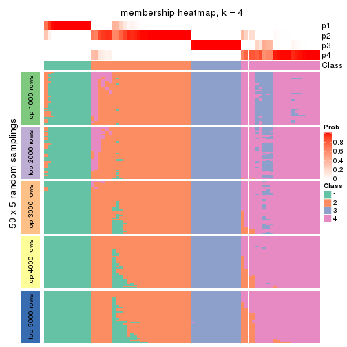
membership_heatmap(res, k = 5)
membership_heatmap(res, k = 6)
As soon as we have had the classes for columns, we can look for signatures which are significantly different between classes which can be candidate marks for certain classes. Following are the heatmaps for signatures.
Signature heatmaps where rows are scaled:
get_signatures(res, k = 2)
get_signatures(res, k = 3)
get_signatures(res, k = 4)
get_signatures(res, k = 5)
get_signatures(res, k = 6)
Signature heatmaps where rows are not scaled:
get_signatures(res, k = 2, scale_rows = FALSE)
get_signatures(res, k = 3, scale_rows = FALSE)
get_signatures(res, k = 4, scale_rows = FALSE)
get_signatures(res, k = 5, scale_rows = FALSE)
get_signatures(res, k = 6, scale_rows = FALSE)
Compare the overlap of signatures from different k:
compare_signatures(res)
get_signature() returns a data frame invisibly. TO get the list of signatures, the function
call should be assigned to a variable explicitly. In following code, if plot argument is set
to FALSE, no heatmap is plotted while only the differential analysis is performed.
# code only for demonstration
tb = get_signature(res, k = ..., plot = FALSE)
An example of the output of tb is:
#> which_row fdr mean_1 mean_2 scaled_mean_1 scaled_mean_2 km
#> 1 38 0.042760348 8.373488 9.131774 -0.5533452 0.5164555 1
#> 2 40 0.018707592 7.106213 8.469186 -0.6173731 0.5762149 1
#> 3 55 0.019134737 10.221463 11.207825 -0.6159697 0.5749050 1
#> 4 59 0.006059896 5.921854 7.869574 -0.6899429 0.6439467 1
#> 5 60 0.018055526 8.928898 10.211722 -0.6204761 0.5791110 1
#> 6 98 0.009384629 15.714769 14.887706 0.6635654 -0.6193277 2
...
The columns in tb are:
which_row: row indices corresponding to the input matrix.fdr: FDR for the differential test. mean_x: The mean value in group x.scaled_mean_x: The mean value in group x after rows are scaled.km: Row groups if k-means clustering is applied to rows.UMAP plot which shows how samples are separated.
dimension_reduction(res, k = 2, method = "UMAP")
dimension_reduction(res, k = 3, method = "UMAP")
dimension_reduction(res, k = 4, method = "UMAP")
dimension_reduction(res, k = 5, method = "UMAP")
dimension_reduction(res, k = 6, method = "UMAP")
Following heatmap shows how subgroups are split when increasing k:
collect_classes(res)
If matrix rows can be associated to genes, consider to use functional_enrichment(res,
...) to perform function enrichment for the signature genes. See this vignette for more detailed explanations.
The object with results only for a single top-value method and a single partition method can be extracted as:
res = res_list["MAD", "hclust"]
# you can also extract it by
# res = res_list["MAD:hclust"]
A summary of res and all the functions that can be applied to it:
res
#> A 'ConsensusPartition' object with k = 2, 3, 4, 5, 6.
#> On a matrix with 12208 rows and 77 columns.
#> Top rows (1000, 2000, 3000, 4000, 5000) are extracted by 'MAD' method.
#> Subgroups are detected by 'hclust' method.
#> Performed in total 1250 partitions by row resampling.
#> Best k for subgroups seems to be 3.
#>
#> Following methods can be applied to this 'ConsensusPartition' object:
#> [1] "cola_report" "collect_classes" "collect_plots"
#> [4] "collect_stats" "colnames" "compare_signatures"
#> [7] "consensus_heatmap" "dimension_reduction" "functional_enrichment"
#> [10] "get_anno_col" "get_anno" "get_classes"
#> [13] "get_consensus" "get_matrix" "get_membership"
#> [16] "get_param" "get_signatures" "get_stats"
#> [19] "is_best_k" "is_stable_k" "membership_heatmap"
#> [22] "ncol" "nrow" "plot_ecdf"
#> [25] "rownames" "select_partition_number" "show"
#> [28] "suggest_best_k" "test_to_known_factors"
collect_plots() function collects all the plots made from res for all k (number of partitions)
into one single page to provide an easy and fast comparison between different k.
collect_plots(res)
The plots are:
k and the heatmap of
predicted classes for each k.k.k.k.All the plots in panels can be made by individual functions and they are plotted later in this section.
select_partition_number() produces several plots showing different
statistics for choosing “optimized” k. There are following statistics:
k;k, the area increased is defined as \(A_k - A_{k-1}\).The detailed explanations of these statistics can be found in the cola vignette.
Generally speaking, lower PAC score, higher mean silhouette score or higher
concordance corresponds to better partition. Rand index and Jaccard index
measure how similar the current partition is compared to partition with k-1.
If they are too similar, we won't accept k is better than k-1.
select_partition_number(res)
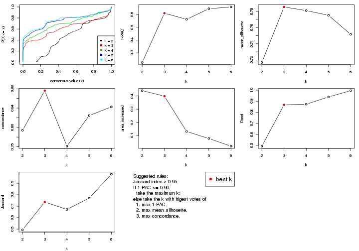
The numeric values for all these statistics can be obtained by get_stats().
get_stats(res)
#> k 1-PAC mean_silhouette concordance area_increased Rand Jaccard
#> 2 2 0.225 0.717 0.794 0.4406 0.494 0.494
#> 3 3 0.610 0.785 0.876 0.3985 0.867 0.736
#> 4 4 0.562 0.781 0.761 0.1306 0.873 0.672
#> 5 5 0.645 0.775 0.825 0.0771 0.938 0.770
#> 6 6 0.658 0.752 0.843 0.0190 0.996 0.978
suggest_best_k() suggests the best \(k\) based on these statistics. The rules are as follows:
suggest_best_k(res)
#> [1] 3
Following shows the table of the partitions (You need to click the show/hide
code output link to see it). The membership matrix (columns with name p*)
is inferred by
clue::cl_consensus()
function with the SE method. Basically the value in the membership matrix
represents the probability to belong to a certain group. The finall class
label for an item is determined with the group with highest probability it
belongs to.
In get_classes() function, the entropy is calculated from the membership
matrix and the silhouette score is calculated from the consensus matrix.
cbind(get_classes(res, k = 2), get_membership(res, k = 2))
#> class entropy silhouette p1 p2
#> SRR2044063 2 0.327 0.721 0.060 0.940
#> SRR2044062 2 0.760 0.712 0.220 0.780
#> SRR2044061 2 0.745 0.713 0.212 0.788
#> SRR2044060 2 0.327 0.721 0.060 0.940
#> SRR2044099 1 0.574 0.830 0.864 0.136
#> SRR2044098 2 0.999 0.333 0.480 0.520
#> SRR2044097 1 0.615 0.817 0.848 0.152
#> SRR2044096 1 0.574 0.830 0.864 0.136
#> SRR2044095 2 0.955 0.562 0.376 0.624
#> SRR2044094 1 0.671 0.789 0.824 0.176
#> SRR2044087 2 0.895 0.651 0.312 0.688
#> SRR2044086 2 0.936 0.605 0.352 0.648
#> SRR2044085 2 0.895 0.651 0.312 0.688
#> SRR2044084 2 0.913 0.641 0.328 0.672
#> SRR2044083 2 0.936 0.605 0.352 0.648
#> SRR2044082 2 0.932 0.609 0.348 0.652
#> SRR2044075 2 0.866 0.677 0.288 0.712
#> SRR2044074 2 0.814 0.702 0.252 0.748
#> SRR2044073 2 0.814 0.702 0.252 0.748
#> SRR2044072 2 0.866 0.677 0.288 0.712
#> SRR2044071 2 0.814 0.702 0.252 0.748
#> SRR2044070 2 0.814 0.702 0.252 0.748
#> SRR2044069 1 0.753 0.650 0.784 0.216
#> SRR2044068 1 0.753 0.650 0.784 0.216
#> SRR2044067 1 0.753 0.650 0.784 0.216
#> SRR2044066 1 0.753 0.650 0.784 0.216
#> SRR2044065 1 0.753 0.650 0.784 0.216
#> SRR2044064 1 0.753 0.650 0.784 0.216
#> SRR2044059 2 0.814 0.702 0.252 0.748
#> SRR2044058 2 0.745 0.713 0.212 0.788
#> SRR2044057 1 0.518 0.834 0.884 0.116
#> SRR2044056 1 0.518 0.834 0.884 0.116
#> SRR2044055 1 0.494 0.833 0.892 0.108
#> SRR2044054 1 0.518 0.834 0.884 0.116
#> SRR2044053 1 0.518 0.834 0.884 0.116
#> SRR2044052 1 0.494 0.833 0.892 0.108
#> SRR2044051 2 0.204 0.709 0.032 0.968
#> SRR2044050 2 0.327 0.721 0.060 0.940
#> SRR2044049 2 0.327 0.721 0.060 0.940
#> SRR2044048 2 0.204 0.709 0.032 0.968
#> SRR2044047 2 0.327 0.721 0.060 0.940
#> SRR2044046 2 0.327 0.721 0.060 0.940
#> SRR2044045 1 0.518 0.834 0.884 0.116
#> SRR2044044 1 0.541 0.831 0.876 0.124
#> SRR2044042 1 0.518 0.834 0.884 0.116
#> SRR2044041 1 0.541 0.831 0.876 0.124
#> SRR2044040 1 0.518 0.832 0.884 0.116
#> SRR2044039 2 0.706 0.643 0.192 0.808
#> SRR2044038 2 0.706 0.643 0.192 0.808
#> SRR2044037 2 0.706 0.643 0.192 0.808
#> SRR2044036 2 0.706 0.643 0.192 0.808
#> SRR2044035 2 0.706 0.643 0.192 0.808
#> SRR2044034 2 0.706 0.643 0.192 0.808
#> SRR2044033 1 0.518 0.834 0.884 0.116
#> SRR2044032 1 0.595 0.818 0.856 0.144
#> SRR2044031 1 0.574 0.830 0.864 0.136
#> SRR2044030 1 0.518 0.834 0.884 0.116
#> SRR2044029 1 0.595 0.818 0.856 0.144
#> SRR2044028 1 0.574 0.830 0.864 0.136
#> SRR2044027 2 0.706 0.643 0.192 0.808
#> SRR2044026 2 0.706 0.643 0.192 0.808
#> SRR2044024 2 0.706 0.643 0.192 0.808
#> SRR2044023 2 0.706 0.643 0.192 0.808
#> SRR2044025 2 0.706 0.643 0.192 0.808
#> SRR2044022 2 0.706 0.643 0.192 0.808
#> SRR2044021 1 0.574 0.830 0.864 0.136
#> SRR2044020 1 0.653 0.791 0.832 0.168
#> SRR2044019 1 0.574 0.830 0.864 0.136
#> SRR2044018 1 0.574 0.830 0.864 0.136
#> SRR2044017 1 0.662 0.788 0.828 0.172
#> SRR2044016 1 0.574 0.830 0.864 0.136
#> SRR2044015 1 0.753 0.650 0.784 0.216
#> SRR2044014 1 0.753 0.650 0.784 0.216
#> SRR2044013 1 0.753 0.650 0.784 0.216
#> SRR2044011 1 0.753 0.650 0.784 0.216
#> SRR2044010 1 0.753 0.650 0.784 0.216
#> SRR2044012 1 0.753 0.650 0.784 0.216
cbind(get_classes(res, k = 3), get_membership(res, k = 3))
#> class entropy silhouette p1 p2 p3
#> SRR2044063 2 0.1289 0.730 0.032 0.968 0.000
#> SRR2044062 2 0.4452 0.714 0.192 0.808 0.000
#> SRR2044061 2 0.4346 0.717 0.184 0.816 0.000
#> SRR2044060 2 0.1289 0.730 0.032 0.968 0.000
#> SRR2044099 1 0.1711 0.940 0.960 0.032 0.008
#> SRR2044098 1 0.6302 -0.200 0.520 0.480 0.000
#> SRR2044097 1 0.2584 0.914 0.928 0.064 0.008
#> SRR2044096 1 0.1711 0.940 0.960 0.032 0.008
#> SRR2044095 2 0.6180 0.436 0.416 0.584 0.000
#> SRR2044094 1 0.2945 0.889 0.908 0.088 0.004
#> SRR2044087 2 0.5810 0.584 0.336 0.664 0.000
#> SRR2044086 2 0.6045 0.515 0.380 0.620 0.000
#> SRR2044085 2 0.5835 0.578 0.340 0.660 0.000
#> SRR2044084 2 0.5905 0.564 0.352 0.648 0.000
#> SRR2044083 2 0.6045 0.515 0.380 0.620 0.000
#> SRR2044082 2 0.6026 0.521 0.376 0.624 0.000
#> SRR2044075 2 0.5291 0.660 0.268 0.732 0.000
#> SRR2044074 2 0.4842 0.697 0.224 0.776 0.000
#> SRR2044073 2 0.4842 0.697 0.224 0.776 0.000
#> SRR2044072 2 0.5291 0.660 0.268 0.732 0.000
#> SRR2044071 2 0.4842 0.697 0.224 0.776 0.000
#> SRR2044070 2 0.4842 0.697 0.224 0.776 0.000
#> SRR2044069 3 0.0000 1.000 0.000 0.000 1.000
#> SRR2044068 3 0.0000 1.000 0.000 0.000 1.000
#> SRR2044067 3 0.0000 1.000 0.000 0.000 1.000
#> SRR2044066 3 0.0000 1.000 0.000 0.000 1.000
#> SRR2044065 3 0.0000 1.000 0.000 0.000 1.000
#> SRR2044064 3 0.0000 1.000 0.000 0.000 1.000
#> SRR2044059 2 0.4842 0.697 0.224 0.776 0.000
#> SRR2044058 2 0.4346 0.717 0.184 0.816 0.000
#> SRR2044057 1 0.0237 0.943 0.996 0.004 0.000
#> SRR2044056 1 0.0237 0.943 0.996 0.004 0.000
#> SRR2044055 1 0.0424 0.940 0.992 0.000 0.008
#> SRR2044054 1 0.0237 0.943 0.996 0.004 0.000
#> SRR2044053 1 0.0237 0.943 0.996 0.004 0.000
#> SRR2044052 1 0.0424 0.940 0.992 0.000 0.008
#> SRR2044051 2 0.0237 0.712 0.004 0.996 0.000
#> SRR2044050 2 0.1289 0.730 0.032 0.968 0.000
#> SRR2044049 2 0.1289 0.730 0.032 0.968 0.000
#> SRR2044048 2 0.0237 0.712 0.004 0.996 0.000
#> SRR2044047 2 0.1289 0.730 0.032 0.968 0.000
#> SRR2044046 2 0.1289 0.730 0.032 0.968 0.000
#> SRR2044045 1 0.0237 0.943 0.996 0.004 0.000
#> SRR2044044 1 0.0592 0.943 0.988 0.012 0.000
#> SRR2044042 1 0.0237 0.943 0.996 0.004 0.000
#> SRR2044041 1 0.0592 0.943 0.988 0.012 0.000
#> SRR2044040 1 0.0848 0.942 0.984 0.008 0.008
#> SRR2044039 2 0.5291 0.591 0.000 0.732 0.268
#> SRR2044038 2 0.5291 0.591 0.000 0.732 0.268
#> SRR2044037 2 0.5291 0.591 0.000 0.732 0.268
#> SRR2044036 2 0.5291 0.591 0.000 0.732 0.268
#> SRR2044035 2 0.5291 0.591 0.000 0.732 0.268
#> SRR2044034 2 0.5291 0.591 0.000 0.732 0.268
#> SRR2044033 1 0.0237 0.943 0.996 0.004 0.000
#> SRR2044032 1 0.1289 0.937 0.968 0.032 0.000
#> SRR2044031 1 0.1585 0.942 0.964 0.028 0.008
#> SRR2044030 1 0.0237 0.943 0.996 0.004 0.000
#> SRR2044029 1 0.1289 0.937 0.968 0.032 0.000
#> SRR2044028 1 0.1585 0.942 0.964 0.028 0.008
#> SRR2044027 2 0.5291 0.591 0.000 0.732 0.268
#> SRR2044026 2 0.5291 0.591 0.000 0.732 0.268
#> SRR2044024 2 0.5291 0.591 0.000 0.732 0.268
#> SRR2044023 2 0.5291 0.591 0.000 0.732 0.268
#> SRR2044025 2 0.5291 0.591 0.000 0.732 0.268
#> SRR2044022 2 0.5291 0.591 0.000 0.732 0.268
#> SRR2044021 1 0.1585 0.942 0.964 0.028 0.008
#> SRR2044020 1 0.3412 0.827 0.876 0.124 0.000
#> SRR2044019 1 0.1585 0.942 0.964 0.028 0.008
#> SRR2044018 1 0.1585 0.942 0.964 0.028 0.008
#> SRR2044017 1 0.3551 0.815 0.868 0.132 0.000
#> SRR2044016 1 0.1585 0.942 0.964 0.028 0.008
#> SRR2044015 3 0.0000 1.000 0.000 0.000 1.000
#> SRR2044014 3 0.0000 1.000 0.000 0.000 1.000
#> SRR2044013 3 0.0000 1.000 0.000 0.000 1.000
#> SRR2044011 3 0.0000 1.000 0.000 0.000 1.000
#> SRR2044010 3 0.0000 1.000 0.000 0.000 1.000
#> SRR2044012 3 0.0000 1.000 0.000 0.000 1.000
cbind(get_classes(res, k = 4), get_membership(res, k = 4))
#> class entropy silhouette p1 p2 p3 p4
#> SRR2044063 2 0.3266 0.517 0.000 0.832 0.000 0.168
#> SRR2044062 2 0.1936 0.763 0.028 0.940 0.000 0.032
#> SRR2044061 2 0.2124 0.757 0.028 0.932 0.000 0.040
#> SRR2044060 2 0.3266 0.517 0.000 0.832 0.000 0.168
#> SRR2044099 1 0.1474 0.821 0.948 0.052 0.000 0.000
#> SRR2044098 2 0.4761 0.506 0.332 0.664 0.000 0.004
#> SRR2044097 1 0.2737 0.784 0.888 0.104 0.000 0.008
#> SRR2044096 1 0.1474 0.821 0.948 0.052 0.000 0.000
#> SRR2044095 2 0.3801 0.679 0.220 0.780 0.000 0.000
#> SRR2044094 1 0.3088 0.764 0.864 0.128 0.000 0.008
#> SRR2044087 2 0.2921 0.753 0.140 0.860 0.000 0.000
#> SRR2044086 2 0.3444 0.721 0.184 0.816 0.000 0.000
#> SRR2044085 2 0.2973 0.751 0.144 0.856 0.000 0.000
#> SRR2044084 2 0.3123 0.742 0.156 0.844 0.000 0.000
#> SRR2044083 2 0.3444 0.721 0.184 0.816 0.000 0.000
#> SRR2044082 2 0.3400 0.724 0.180 0.820 0.000 0.000
#> SRR2044075 2 0.1867 0.777 0.072 0.928 0.000 0.000
#> SRR2044074 2 0.0921 0.778 0.028 0.972 0.000 0.000
#> SRR2044073 2 0.0921 0.778 0.028 0.972 0.000 0.000
#> SRR2044072 2 0.1867 0.777 0.072 0.928 0.000 0.000
#> SRR2044071 2 0.0921 0.778 0.028 0.972 0.000 0.000
#> SRR2044070 2 0.0921 0.778 0.028 0.972 0.000 0.000
#> SRR2044069 3 0.0000 0.883 0.000 0.000 1.000 0.000
#> SRR2044068 3 0.0000 0.883 0.000 0.000 1.000 0.000
#> SRR2044067 3 0.0000 0.883 0.000 0.000 1.000 0.000
#> SRR2044066 3 0.0000 0.883 0.000 0.000 1.000 0.000
#> SRR2044065 3 0.0000 0.883 0.000 0.000 1.000 0.000
#> SRR2044064 3 0.0000 0.883 0.000 0.000 1.000 0.000
#> SRR2044059 2 0.0921 0.778 0.028 0.972 0.000 0.000
#> SRR2044058 2 0.2124 0.757 0.028 0.932 0.000 0.040
#> SRR2044057 1 0.6534 0.765 0.624 0.132 0.000 0.244
#> SRR2044056 1 0.6534 0.765 0.624 0.132 0.000 0.244
#> SRR2044055 1 0.0336 0.817 0.992 0.000 0.000 0.008
#> SRR2044054 1 0.6534 0.765 0.624 0.132 0.000 0.244
#> SRR2044053 1 0.6534 0.765 0.624 0.132 0.000 0.244
#> SRR2044052 1 0.1118 0.802 0.964 0.000 0.000 0.036
#> SRR2044051 4 0.4996 0.382 0.000 0.484 0.000 0.516
#> SRR2044050 2 0.3266 0.517 0.000 0.832 0.000 0.168
#> SRR2044049 2 0.3266 0.517 0.000 0.832 0.000 0.168
#> SRR2044048 4 0.4996 0.382 0.000 0.484 0.000 0.516
#> SRR2044047 2 0.3266 0.517 0.000 0.832 0.000 0.168
#> SRR2044046 2 0.3266 0.517 0.000 0.832 0.000 0.168
#> SRR2044045 1 0.6506 0.766 0.628 0.132 0.000 0.240
#> SRR2044044 1 0.5759 0.799 0.708 0.112 0.000 0.180
#> SRR2044042 1 0.6506 0.766 0.628 0.132 0.000 0.240
#> SRR2044041 1 0.5759 0.799 0.708 0.112 0.000 0.180
#> SRR2044040 1 0.0672 0.819 0.984 0.008 0.000 0.008
#> SRR2044039 4 0.6276 0.924 0.000 0.380 0.064 0.556
#> SRR2044038 4 0.6276 0.924 0.000 0.380 0.064 0.556
#> SRR2044037 4 0.6276 0.924 0.000 0.380 0.064 0.556
#> SRR2044036 4 0.6276 0.924 0.000 0.380 0.064 0.556
#> SRR2044035 4 0.6276 0.924 0.000 0.380 0.064 0.556
#> SRR2044034 4 0.6276 0.924 0.000 0.380 0.064 0.556
#> SRR2044033 1 0.5248 0.811 0.748 0.088 0.000 0.164
#> SRR2044032 1 0.5209 0.812 0.756 0.104 0.000 0.140
#> SRR2044031 1 0.1635 0.818 0.948 0.044 0.000 0.008
#> SRR2044030 1 0.5056 0.814 0.760 0.076 0.000 0.164
#> SRR2044029 1 0.5209 0.812 0.756 0.104 0.000 0.140
#> SRR2044028 1 0.1635 0.818 0.948 0.044 0.000 0.008
#> SRR2044027 4 0.6276 0.924 0.000 0.380 0.064 0.556
#> SRR2044026 4 0.6276 0.924 0.000 0.380 0.064 0.556
#> SRR2044024 4 0.6276 0.924 0.000 0.380 0.064 0.556
#> SRR2044023 4 0.6276 0.924 0.000 0.380 0.064 0.556
#> SRR2044025 4 0.6276 0.924 0.000 0.380 0.064 0.556
#> SRR2044022 4 0.6276 0.924 0.000 0.380 0.064 0.556
#> SRR2044021 1 0.1389 0.822 0.952 0.048 0.000 0.000
#> SRR2044020 1 0.6139 0.683 0.656 0.244 0.000 0.100
#> SRR2044019 1 0.1635 0.818 0.948 0.044 0.000 0.008
#> SRR2044018 1 0.1389 0.822 0.952 0.048 0.000 0.000
#> SRR2044017 1 0.6248 0.660 0.640 0.260 0.000 0.100
#> SRR2044016 1 0.1635 0.818 0.948 0.044 0.000 0.008
#> SRR2044015 3 0.3649 0.870 0.000 0.000 0.796 0.204
#> SRR2044014 3 0.3649 0.870 0.000 0.000 0.796 0.204
#> SRR2044013 3 0.3649 0.870 0.000 0.000 0.796 0.204
#> SRR2044011 3 0.3649 0.870 0.000 0.000 0.796 0.204
#> SRR2044010 3 0.3649 0.870 0.000 0.000 0.796 0.204
#> SRR2044012 3 0.3649 0.870 0.000 0.000 0.796 0.204
cbind(get_classes(res, k = 5), get_membership(res, k = 5))
#> class entropy silhouette p1 p2 p3 p4 p5
#> SRR2044063 2 0.3074 0.6461 0.000 0.804 0.000 0.196 0.000
#> SRR2044062 2 0.0880 0.8097 0.000 0.968 0.000 0.032 0.000
#> SRR2044061 2 0.1043 0.8059 0.000 0.960 0.000 0.040 0.000
#> SRR2044060 2 0.3074 0.6461 0.000 0.804 0.000 0.196 0.000
#> SRR2044099 1 0.2616 0.8480 0.888 0.076 0.000 0.000 0.036
#> SRR2044098 2 0.3969 0.5383 0.304 0.692 0.000 0.000 0.004
#> SRR2044097 1 0.2424 0.8124 0.868 0.132 0.000 0.000 0.000
#> SRR2044096 1 0.2616 0.8480 0.888 0.076 0.000 0.000 0.036
#> SRR2044095 2 0.3039 0.7289 0.192 0.808 0.000 0.000 0.000
#> SRR2044094 1 0.2690 0.7846 0.844 0.156 0.000 0.000 0.000
#> SRR2044087 2 0.2179 0.7943 0.112 0.888 0.000 0.000 0.000
#> SRR2044086 2 0.2690 0.7654 0.156 0.844 0.000 0.000 0.000
#> SRR2044085 2 0.2230 0.7925 0.116 0.884 0.000 0.000 0.000
#> SRR2044084 2 0.2377 0.7852 0.128 0.872 0.000 0.000 0.000
#> SRR2044083 2 0.2690 0.7654 0.156 0.844 0.000 0.000 0.000
#> SRR2044082 2 0.2648 0.7688 0.152 0.848 0.000 0.000 0.000
#> SRR2044075 2 0.1121 0.8176 0.044 0.956 0.000 0.000 0.000
#> SRR2044074 2 0.0000 0.8194 0.000 1.000 0.000 0.000 0.000
#> SRR2044073 2 0.0000 0.8194 0.000 1.000 0.000 0.000 0.000
#> SRR2044072 2 0.1121 0.8176 0.044 0.956 0.000 0.000 0.000
#> SRR2044071 2 0.0000 0.8194 0.000 1.000 0.000 0.000 0.000
#> SRR2044070 2 0.0000 0.8194 0.000 1.000 0.000 0.000 0.000
#> SRR2044069 3 0.0000 0.8527 0.000 0.000 1.000 0.000 0.000
#> SRR2044068 3 0.0000 0.8527 0.000 0.000 1.000 0.000 0.000
#> SRR2044067 3 0.0000 0.8527 0.000 0.000 1.000 0.000 0.000
#> SRR2044066 3 0.0000 0.8527 0.000 0.000 1.000 0.000 0.000
#> SRR2044065 3 0.0000 0.8527 0.000 0.000 1.000 0.000 0.000
#> SRR2044064 3 0.0000 0.8527 0.000 0.000 1.000 0.000 0.000
#> SRR2044059 2 0.0000 0.8194 0.000 1.000 0.000 0.000 0.000
#> SRR2044058 2 0.1043 0.8059 0.000 0.960 0.000 0.040 0.000
#> SRR2044057 5 0.2068 0.8259 0.092 0.004 0.000 0.000 0.904
#> SRR2044056 5 0.2068 0.8259 0.092 0.004 0.000 0.000 0.904
#> SRR2044055 1 0.1588 0.8173 0.948 0.028 0.000 0.008 0.016
#> SRR2044054 5 0.2068 0.8259 0.092 0.004 0.000 0.000 0.904
#> SRR2044053 5 0.2068 0.8259 0.092 0.004 0.000 0.000 0.904
#> SRR2044052 1 0.0798 0.7847 0.976 0.000 0.000 0.008 0.016
#> SRR2044051 4 0.5104 0.4480 0.016 0.164 0.000 0.724 0.096
#> SRR2044050 2 0.3074 0.6461 0.000 0.804 0.000 0.196 0.000
#> SRR2044049 2 0.3074 0.6461 0.000 0.804 0.000 0.196 0.000
#> SRR2044048 4 0.5140 0.4439 0.016 0.168 0.000 0.720 0.096
#> SRR2044047 2 0.3074 0.6461 0.000 0.804 0.000 0.196 0.000
#> SRR2044046 2 0.3074 0.6461 0.000 0.804 0.000 0.196 0.000
#> SRR2044045 5 0.2124 0.8262 0.096 0.004 0.000 0.000 0.900
#> SRR2044044 5 0.3849 0.7870 0.232 0.016 0.000 0.000 0.752
#> SRR2044042 5 0.2124 0.8262 0.096 0.004 0.000 0.000 0.900
#> SRR2044041 5 0.3849 0.7870 0.232 0.016 0.000 0.000 0.752
#> SRR2044040 1 0.1538 0.8264 0.948 0.036 0.000 0.008 0.008
#> SRR2044039 4 0.3612 0.9111 0.000 0.268 0.000 0.732 0.000
#> SRR2044038 4 0.3612 0.9111 0.000 0.268 0.000 0.732 0.000
#> SRR2044037 4 0.3612 0.9111 0.000 0.268 0.000 0.732 0.000
#> SRR2044036 4 0.3612 0.9111 0.000 0.268 0.000 0.732 0.000
#> SRR2044035 4 0.3612 0.9111 0.000 0.268 0.000 0.732 0.000
#> SRR2044034 4 0.3612 0.9111 0.000 0.268 0.000 0.732 0.000
#> SRR2044033 5 0.4196 0.6701 0.356 0.004 0.000 0.000 0.640
#> SRR2044032 5 0.5252 0.5784 0.364 0.056 0.000 0.000 0.580
#> SRR2044031 1 0.1608 0.8542 0.928 0.072 0.000 0.000 0.000
#> SRR2044030 5 0.4276 0.6337 0.380 0.004 0.000 0.000 0.616
#> SRR2044029 5 0.5252 0.5784 0.364 0.056 0.000 0.000 0.580
#> SRR2044028 1 0.1608 0.8542 0.928 0.072 0.000 0.000 0.000
#> SRR2044027 4 0.3612 0.9111 0.000 0.268 0.000 0.732 0.000
#> SRR2044026 4 0.3612 0.9111 0.000 0.268 0.000 0.732 0.000
#> SRR2044024 4 0.3612 0.9111 0.000 0.268 0.000 0.732 0.000
#> SRR2044023 4 0.3612 0.9111 0.000 0.268 0.000 0.732 0.000
#> SRR2044025 4 0.3612 0.9111 0.000 0.268 0.000 0.732 0.000
#> SRR2044022 4 0.3612 0.9111 0.000 0.268 0.000 0.732 0.000
#> SRR2044021 1 0.2554 0.8483 0.892 0.072 0.000 0.000 0.036
#> SRR2044020 1 0.6599 -0.0573 0.436 0.220 0.000 0.000 0.344
#> SRR2044019 1 0.1608 0.8542 0.928 0.072 0.000 0.000 0.000
#> SRR2044018 1 0.2554 0.8483 0.892 0.072 0.000 0.000 0.036
#> SRR2044017 1 0.6645 -0.0301 0.432 0.236 0.000 0.000 0.332
#> SRR2044016 1 0.1608 0.8542 0.928 0.072 0.000 0.000 0.000
#> SRR2044015 3 0.3452 0.8379 0.000 0.000 0.756 0.244 0.000
#> SRR2044014 3 0.3452 0.8379 0.000 0.000 0.756 0.244 0.000
#> SRR2044013 3 0.3452 0.8379 0.000 0.000 0.756 0.244 0.000
#> SRR2044011 3 0.3452 0.8379 0.000 0.000 0.756 0.244 0.000
#> SRR2044010 3 0.3452 0.8379 0.000 0.000 0.756 0.244 0.000
#> SRR2044012 3 0.3452 0.8379 0.000 0.000 0.756 0.244 0.000
cbind(get_classes(res, k = 6), get_membership(res, k = 6))
#> class entropy silhouette p1 p2 p3 p4 p5 p6
#> SRR2044063 2 0.3344 0.6903 0.000 0.804 0.000 0.152 0.000 0.044
#> SRR2044062 2 0.0790 0.8254 0.000 0.968 0.000 0.000 0.000 0.032
#> SRR2044061 2 0.0937 0.8226 0.000 0.960 0.000 0.000 0.000 0.040
#> SRR2044060 2 0.3344 0.6903 0.000 0.804 0.000 0.152 0.000 0.044
#> SRR2044099 1 0.2856 0.8250 0.856 0.076 0.000 0.000 0.068 0.000
#> SRR2044098 2 0.3954 0.5559 0.292 0.688 0.000 0.000 0.012 0.008
#> SRR2044097 1 0.2320 0.8003 0.864 0.132 0.000 0.000 0.000 0.004
#> SRR2044096 1 0.2856 0.8250 0.856 0.076 0.000 0.000 0.068 0.000
#> SRR2044095 2 0.2948 0.7408 0.188 0.804 0.000 0.000 0.000 0.008
#> SRR2044094 1 0.2558 0.7740 0.840 0.156 0.000 0.000 0.000 0.004
#> SRR2044087 2 0.2165 0.8050 0.108 0.884 0.000 0.000 0.000 0.008
#> SRR2044086 2 0.2631 0.7770 0.152 0.840 0.000 0.000 0.000 0.008
#> SRR2044085 2 0.2212 0.8031 0.112 0.880 0.000 0.000 0.000 0.008
#> SRR2044084 2 0.2346 0.7962 0.124 0.868 0.000 0.000 0.000 0.008
#> SRR2044083 2 0.2631 0.7770 0.152 0.840 0.000 0.000 0.000 0.008
#> SRR2044082 2 0.2593 0.7804 0.148 0.844 0.000 0.000 0.000 0.008
#> SRR2044075 2 0.1196 0.8287 0.040 0.952 0.000 0.000 0.000 0.008
#> SRR2044074 2 0.0000 0.8328 0.000 1.000 0.000 0.000 0.000 0.000
#> SRR2044073 2 0.0000 0.8328 0.000 1.000 0.000 0.000 0.000 0.000
#> SRR2044072 2 0.1196 0.8287 0.040 0.952 0.000 0.000 0.000 0.008
#> SRR2044071 2 0.0000 0.8328 0.000 1.000 0.000 0.000 0.000 0.000
#> SRR2044070 2 0.0000 0.8328 0.000 1.000 0.000 0.000 0.000 0.000
#> SRR2044069 3 0.0000 0.8006 0.000 0.000 1.000 0.000 0.000 0.000
#> SRR2044068 3 0.0000 0.8006 0.000 0.000 1.000 0.000 0.000 0.000
#> SRR2044067 3 0.0000 0.8006 0.000 0.000 1.000 0.000 0.000 0.000
#> SRR2044066 3 0.0000 0.8006 0.000 0.000 1.000 0.000 0.000 0.000
#> SRR2044065 3 0.0000 0.8006 0.000 0.000 1.000 0.000 0.000 0.000
#> SRR2044064 3 0.0000 0.8006 0.000 0.000 1.000 0.000 0.000 0.000
#> SRR2044059 2 0.0000 0.8328 0.000 1.000 0.000 0.000 0.000 0.000
#> SRR2044058 2 0.0937 0.8226 0.000 0.960 0.000 0.000 0.000 0.040
#> SRR2044057 5 0.0000 0.7798 0.000 0.000 0.000 0.000 1.000 0.000
#> SRR2044056 5 0.0000 0.7798 0.000 0.000 0.000 0.000 1.000 0.000
#> SRR2044055 1 0.1421 0.7934 0.944 0.028 0.000 0.000 0.000 0.028
#> SRR2044054 5 0.0000 0.7798 0.000 0.000 0.000 0.000 1.000 0.000
#> SRR2044053 5 0.0000 0.7798 0.000 0.000 0.000 0.000 1.000 0.000
#> SRR2044052 1 0.0713 0.7618 0.972 0.000 0.000 0.000 0.000 0.028
#> SRR2044051 4 0.4238 -0.5823 0.000 0.016 0.000 0.540 0.000 0.444
#> SRR2044050 2 0.3344 0.6903 0.000 0.804 0.000 0.152 0.000 0.044
#> SRR2044049 2 0.3344 0.6903 0.000 0.804 0.000 0.152 0.000 0.044
#> SRR2044048 6 0.1003 0.0000 0.000 0.016 0.000 0.020 0.000 0.964
#> SRR2044047 2 0.3344 0.6903 0.000 0.804 0.000 0.152 0.000 0.044
#> SRR2044046 2 0.3344 0.6903 0.000 0.804 0.000 0.152 0.000 0.044
#> SRR2044045 5 0.0146 0.7807 0.004 0.000 0.000 0.000 0.996 0.000
#> SRR2044044 5 0.2845 0.7698 0.148 0.008 0.000 0.000 0.836 0.008
#> SRR2044042 5 0.0146 0.7807 0.004 0.000 0.000 0.000 0.996 0.000
#> SRR2044041 5 0.2845 0.7698 0.148 0.008 0.000 0.000 0.836 0.008
#> SRR2044040 1 0.1572 0.8021 0.936 0.036 0.000 0.000 0.000 0.028
#> SRR2044039 4 0.3198 0.9359 0.000 0.260 0.000 0.740 0.000 0.000
#> SRR2044038 4 0.3198 0.9359 0.000 0.260 0.000 0.740 0.000 0.000
#> SRR2044037 4 0.3198 0.9359 0.000 0.260 0.000 0.740 0.000 0.000
#> SRR2044036 4 0.3198 0.9359 0.000 0.260 0.000 0.740 0.000 0.000
#> SRR2044035 4 0.3198 0.9359 0.000 0.260 0.000 0.740 0.000 0.000
#> SRR2044034 4 0.3198 0.9359 0.000 0.260 0.000 0.740 0.000 0.000
#> SRR2044033 5 0.3426 0.6780 0.276 0.000 0.000 0.000 0.720 0.004
#> SRR2044032 5 0.4721 0.5239 0.324 0.048 0.000 0.000 0.620 0.008
#> SRR2044031 1 0.1701 0.8367 0.920 0.072 0.000 0.000 0.000 0.008
#> SRR2044030 5 0.3601 0.6296 0.312 0.000 0.000 0.000 0.684 0.004
#> SRR2044029 5 0.4721 0.5239 0.324 0.048 0.000 0.000 0.620 0.008
#> SRR2044028 1 0.1701 0.8367 0.920 0.072 0.000 0.000 0.000 0.008
#> SRR2044027 4 0.3198 0.9359 0.000 0.260 0.000 0.740 0.000 0.000
#> SRR2044026 4 0.3198 0.9359 0.000 0.260 0.000 0.740 0.000 0.000
#> SRR2044024 4 0.3198 0.9359 0.000 0.260 0.000 0.740 0.000 0.000
#> SRR2044023 4 0.3198 0.9359 0.000 0.260 0.000 0.740 0.000 0.000
#> SRR2044025 4 0.3198 0.9359 0.000 0.260 0.000 0.740 0.000 0.000
#> SRR2044022 4 0.3198 0.9359 0.000 0.260 0.000 0.740 0.000 0.000
#> SRR2044021 1 0.2801 0.8253 0.860 0.072 0.000 0.000 0.068 0.000
#> SRR2044020 1 0.6149 -0.0344 0.396 0.212 0.000 0.000 0.384 0.008
#> SRR2044019 1 0.1701 0.8367 0.920 0.072 0.000 0.000 0.000 0.008
#> SRR2044018 1 0.2801 0.8253 0.860 0.072 0.000 0.000 0.068 0.000
#> SRR2044017 1 0.6199 -0.0088 0.392 0.228 0.000 0.000 0.372 0.008
#> SRR2044016 1 0.1701 0.8367 0.920 0.072 0.000 0.000 0.000 0.008
#> SRR2044015 3 0.3101 0.8059 0.000 0.000 0.756 0.244 0.000 0.000
#> SRR2044014 3 0.3101 0.8059 0.000 0.000 0.756 0.244 0.000 0.000
#> SRR2044013 3 0.3101 0.8059 0.000 0.000 0.756 0.244 0.000 0.000
#> SRR2044011 3 0.3101 0.8059 0.000 0.000 0.756 0.244 0.000 0.000
#> SRR2044010 3 0.3101 0.8059 0.000 0.000 0.756 0.244 0.000 0.000
#> SRR2044012 3 0.3101 0.8059 0.000 0.000 0.756 0.244 0.000 0.000
Heatmaps for the consensus matrix. It visualizes the probability of two samples to be in a same group.
consensus_heatmap(res, k = 2)
consensus_heatmap(res, k = 3)
consensus_heatmap(res, k = 4)
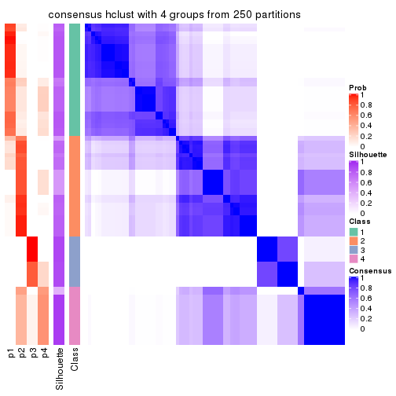
consensus_heatmap(res, k = 5)
consensus_heatmap(res, k = 6)
Heatmaps for the membership of samples in all partitions to see how consistent they are:
membership_heatmap(res, k = 2)
membership_heatmap(res, k = 3)
membership_heatmap(res, k = 4)

membership_heatmap(res, k = 5)
membership_heatmap(res, k = 6)
As soon as we have had the classes for columns, we can look for signatures which are significantly different between classes which can be candidate marks for certain classes. Following are the heatmaps for signatures.
Signature heatmaps where rows are scaled:
get_signatures(res, k = 2)
get_signatures(res, k = 3)
get_signatures(res, k = 4)
get_signatures(res, k = 5)
get_signatures(res, k = 6)
Signature heatmaps where rows are not scaled:
get_signatures(res, k = 2, scale_rows = FALSE)
get_signatures(res, k = 3, scale_rows = FALSE)
get_signatures(res, k = 4, scale_rows = FALSE)
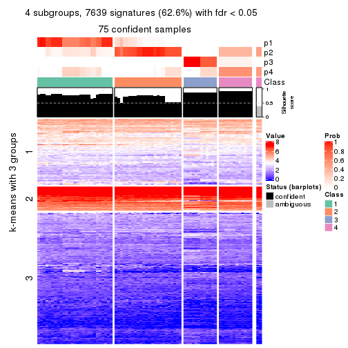
get_signatures(res, k = 5, scale_rows = FALSE)
get_signatures(res, k = 6, scale_rows = FALSE)
Compare the overlap of signatures from different k:
compare_signatures(res)
get_signature() returns a data frame invisibly. TO get the list of signatures, the function
call should be assigned to a variable explicitly. In following code, if plot argument is set
to FALSE, no heatmap is plotted while only the differential analysis is performed.
# code only for demonstration
tb = get_signature(res, k = ..., plot = FALSE)
An example of the output of tb is:
#> which_row fdr mean_1 mean_2 scaled_mean_1 scaled_mean_2 km
#> 1 38 0.042760348 8.373488 9.131774 -0.5533452 0.5164555 1
#> 2 40 0.018707592 7.106213 8.469186 -0.6173731 0.5762149 1
#> 3 55 0.019134737 10.221463 11.207825 -0.6159697 0.5749050 1
#> 4 59 0.006059896 5.921854 7.869574 -0.6899429 0.6439467 1
#> 5 60 0.018055526 8.928898 10.211722 -0.6204761 0.5791110 1
#> 6 98 0.009384629 15.714769 14.887706 0.6635654 -0.6193277 2
...
The columns in tb are:
which_row: row indices corresponding to the input matrix.fdr: FDR for the differential test. mean_x: The mean value in group x.scaled_mean_x: The mean value in group x after rows are scaled.km: Row groups if k-means clustering is applied to rows.UMAP plot which shows how samples are separated.
dimension_reduction(res, k = 2, method = "UMAP")
dimension_reduction(res, k = 3, method = "UMAP")
dimension_reduction(res, k = 4, method = "UMAP")
dimension_reduction(res, k = 5, method = "UMAP")
dimension_reduction(res, k = 6, method = "UMAP")
Following heatmap shows how subgroups are split when increasing k:
collect_classes(res)
If matrix rows can be associated to genes, consider to use functional_enrichment(res,
...) to perform function enrichment for the signature genes. See this vignette for more detailed explanations.
The object with results only for a single top-value method and a single partition method can be extracted as:
res = res_list["MAD", "kmeans"]
# you can also extract it by
# res = res_list["MAD:kmeans"]
A summary of res and all the functions that can be applied to it:
res
#> A 'ConsensusPartition' object with k = 2, 3, 4, 5, 6.
#> On a matrix with 12208 rows and 77 columns.
#> Top rows (1000, 2000, 3000, 4000, 5000) are extracted by 'MAD' method.
#> Subgroups are detected by 'kmeans' method.
#> Performed in total 1250 partitions by row resampling.
#> Best k for subgroups seems to be 3.
#>
#> Following methods can be applied to this 'ConsensusPartition' object:
#> [1] "cola_report" "collect_classes" "collect_plots"
#> [4] "collect_stats" "colnames" "compare_signatures"
#> [7] "consensus_heatmap" "dimension_reduction" "functional_enrichment"
#> [10] "get_anno_col" "get_anno" "get_classes"
#> [13] "get_consensus" "get_matrix" "get_membership"
#> [16] "get_param" "get_signatures" "get_stats"
#> [19] "is_best_k" "is_stable_k" "membership_heatmap"
#> [22] "ncol" "nrow" "plot_ecdf"
#> [25] "rownames" "select_partition_number" "show"
#> [28] "suggest_best_k" "test_to_known_factors"
collect_plots() function collects all the plots made from res for all k (number of partitions)
into one single page to provide an easy and fast comparison between different k.
collect_plots(res)
The plots are:
k and the heatmap of
predicted classes for each k.k.k.k.All the plots in panels can be made by individual functions and they are plotted later in this section.
select_partition_number() produces several plots showing different
statistics for choosing “optimized” k. There are following statistics:
k;k, the area increased is defined as \(A_k - A_{k-1}\).The detailed explanations of these statistics can be found in the cola vignette.
Generally speaking, lower PAC score, higher mean silhouette score or higher
concordance corresponds to better partition. Rand index and Jaccard index
measure how similar the current partition is compared to partition with k-1.
If they are too similar, we won't accept k is better than k-1.
select_partition_number(res)
The numeric values for all these statistics can be obtained by get_stats().
get_stats(res)
#> k 1-PAC mean_silhouette concordance area_increased Rand Jaccard
#> 2 2 0.347 0.722 0.851 0.4210 0.565 0.565
#> 3 3 0.835 0.893 0.943 0.5134 0.658 0.461
#> 4 4 0.677 0.551 0.716 0.1211 0.954 0.872
#> 5 5 0.703 0.728 0.792 0.0832 0.862 0.585
#> 6 6 0.753 0.617 0.786 0.0500 0.911 0.647
suggest_best_k() suggests the best \(k\) based on these statistics. The rules are as follows:
suggest_best_k(res)
#> [1] 3
Following shows the table of the partitions (You need to click the show/hide
code output link to see it). The membership matrix (columns with name p*)
is inferred by
clue::cl_consensus()
function with the SE method. Basically the value in the membership matrix
represents the probability to belong to a certain group. The finall class
label for an item is determined with the group with highest probability it
belongs to.
In get_classes() function, the entropy is calculated from the membership
matrix and the silhouette score is calculated from the consensus matrix.
cbind(get_classes(res, k = 2), get_membership(res, k = 2))
#> class entropy silhouette p1 p2
#> SRR2044063 1 0.6712 0.802 0.824 0.176
#> SRR2044062 1 0.6712 0.802 0.824 0.176
#> SRR2044061 1 0.6712 0.802 0.824 0.176
#> SRR2044060 1 0.6712 0.802 0.824 0.176
#> SRR2044099 1 0.1184 0.829 0.984 0.016
#> SRR2044098 1 0.5737 0.815 0.864 0.136
#> SRR2044097 1 0.0376 0.832 0.996 0.004
#> SRR2044096 1 0.1414 0.828 0.980 0.020
#> SRR2044095 1 0.5737 0.815 0.864 0.136
#> SRR2044094 1 0.0376 0.832 0.996 0.004
#> SRR2044087 1 0.6148 0.810 0.848 0.152
#> SRR2044086 1 0.6247 0.809 0.844 0.156
#> SRR2044085 1 0.6247 0.809 0.844 0.156
#> SRR2044084 1 0.6247 0.809 0.844 0.156
#> SRR2044083 1 0.6247 0.809 0.844 0.156
#> SRR2044082 1 0.6247 0.809 0.844 0.156
#> SRR2044075 1 0.6712 0.802 0.824 0.176
#> SRR2044074 1 0.6712 0.802 0.824 0.176
#> SRR2044073 1 0.6712 0.802 0.824 0.176
#> SRR2044072 1 0.6712 0.802 0.824 0.176
#> SRR2044071 1 0.6712 0.802 0.824 0.176
#> SRR2044070 1 0.6712 0.802 0.824 0.176
#> SRR2044069 2 0.6712 0.755 0.176 0.824
#> SRR2044068 2 0.6712 0.755 0.176 0.824
#> SRR2044067 2 0.6712 0.755 0.176 0.824
#> SRR2044066 2 0.6712 0.755 0.176 0.824
#> SRR2044065 2 0.6712 0.755 0.176 0.824
#> SRR2044064 2 0.6712 0.755 0.176 0.824
#> SRR2044059 1 0.6712 0.802 0.824 0.176
#> SRR2044058 1 0.6712 0.802 0.824 0.176
#> SRR2044057 1 0.1414 0.828 0.980 0.020
#> SRR2044056 1 0.1414 0.828 0.980 0.020
#> SRR2044055 1 0.1414 0.828 0.980 0.020
#> SRR2044054 1 0.1414 0.828 0.980 0.020
#> SRR2044053 1 0.1414 0.828 0.980 0.020
#> SRR2044052 1 0.1414 0.828 0.980 0.020
#> SRR2044051 1 1.0000 0.139 0.504 0.496
#> SRR2044050 1 0.9866 0.362 0.568 0.432
#> SRR2044049 1 0.9866 0.362 0.568 0.432
#> SRR2044048 1 1.0000 0.139 0.504 0.496
#> SRR2044047 1 0.9866 0.362 0.568 0.432
#> SRR2044046 1 0.9866 0.362 0.568 0.432
#> SRR2044045 1 0.1414 0.828 0.980 0.020
#> SRR2044044 1 0.0000 0.832 1.000 0.000
#> SRR2044042 1 0.1414 0.828 0.980 0.020
#> SRR2044041 1 0.0000 0.832 1.000 0.000
#> SRR2044040 1 0.1414 0.828 0.980 0.020
#> SRR2044039 2 0.9000 0.523 0.316 0.684
#> SRR2044038 2 0.9286 0.433 0.344 0.656
#> SRR2044037 2 0.9286 0.433 0.344 0.656
#> SRR2044036 2 0.9000 0.523 0.316 0.684
#> SRR2044035 2 0.9286 0.433 0.344 0.656
#> SRR2044034 2 0.9286 0.433 0.344 0.656
#> SRR2044033 1 0.1414 0.828 0.980 0.020
#> SRR2044032 1 0.0376 0.832 0.996 0.004
#> SRR2044031 1 0.1414 0.828 0.980 0.020
#> SRR2044030 1 0.1414 0.828 0.980 0.020
#> SRR2044029 1 0.0376 0.832 0.996 0.004
#> SRR2044028 1 0.1414 0.828 0.980 0.020
#> SRR2044027 2 0.6148 0.760 0.152 0.848
#> SRR2044026 2 0.9129 0.466 0.328 0.672
#> SRR2044024 2 0.6148 0.760 0.152 0.848
#> SRR2044023 2 0.9129 0.466 0.328 0.672
#> SRR2044025 2 0.8813 0.505 0.300 0.700
#> SRR2044022 2 0.8813 0.505 0.300 0.700
#> SRR2044021 1 0.1414 0.828 0.980 0.020
#> SRR2044020 1 0.0000 0.832 1.000 0.000
#> SRR2044019 1 0.1414 0.828 0.980 0.020
#> SRR2044018 1 0.1414 0.828 0.980 0.020
#> SRR2044017 1 0.0000 0.832 1.000 0.000
#> SRR2044016 1 0.1414 0.828 0.980 0.020
#> SRR2044015 2 0.6247 0.761 0.156 0.844
#> SRR2044014 2 0.6247 0.761 0.156 0.844
#> SRR2044013 2 0.6247 0.761 0.156 0.844
#> SRR2044011 2 0.6247 0.761 0.156 0.844
#> SRR2044010 2 0.6247 0.761 0.156 0.844
#> SRR2044012 2 0.6247 0.761 0.156 0.844
cbind(get_classes(res, k = 3), get_membership(res, k = 3))
#> class entropy silhouette p1 p2 p3
#> SRR2044063 2 0.0424 0.9067 0.008 0.992 0.000
#> SRR2044062 2 0.0892 0.9060 0.020 0.980 0.000
#> SRR2044061 2 0.0892 0.9060 0.020 0.980 0.000
#> SRR2044060 2 0.0424 0.9067 0.008 0.992 0.000
#> SRR2044099 1 0.0892 0.9542 0.980 0.020 0.000
#> SRR2044098 1 0.1289 0.9464 0.968 0.032 0.000
#> SRR2044097 1 0.0892 0.9542 0.980 0.020 0.000
#> SRR2044096 1 0.0892 0.9542 0.980 0.020 0.000
#> SRR2044095 1 0.1289 0.9464 0.968 0.032 0.000
#> SRR2044094 1 0.0892 0.9542 0.980 0.020 0.000
#> SRR2044087 1 0.5327 0.6583 0.728 0.272 0.000
#> SRR2044086 2 0.6111 0.2853 0.396 0.604 0.000
#> SRR2044085 1 0.3879 0.8381 0.848 0.152 0.000
#> SRR2044084 1 0.5621 0.6013 0.692 0.308 0.000
#> SRR2044083 2 0.6305 -0.0315 0.484 0.516 0.000
#> SRR2044082 1 0.5621 0.6013 0.692 0.308 0.000
#> SRR2044075 2 0.0892 0.9060 0.020 0.980 0.000
#> SRR2044074 2 0.0892 0.9060 0.020 0.980 0.000
#> SRR2044073 2 0.0892 0.9060 0.020 0.980 0.000
#> SRR2044072 2 0.0892 0.9060 0.020 0.980 0.000
#> SRR2044071 2 0.0892 0.9060 0.020 0.980 0.000
#> SRR2044070 2 0.0892 0.9060 0.020 0.980 0.000
#> SRR2044069 3 0.0892 0.9703 0.020 0.000 0.980
#> SRR2044068 3 0.0892 0.9703 0.020 0.000 0.980
#> SRR2044067 3 0.0892 0.9703 0.020 0.000 0.980
#> SRR2044066 3 0.0892 0.9703 0.020 0.000 0.980
#> SRR2044065 3 0.0892 0.9703 0.020 0.000 0.980
#> SRR2044064 3 0.0892 0.9703 0.020 0.000 0.980
#> SRR2044059 2 0.0892 0.9060 0.020 0.980 0.000
#> SRR2044058 2 0.0892 0.9060 0.020 0.980 0.000
#> SRR2044057 1 0.0424 0.9499 0.992 0.000 0.008
#> SRR2044056 1 0.0424 0.9499 0.992 0.000 0.008
#> SRR2044055 1 0.0892 0.9542 0.980 0.020 0.000
#> SRR2044054 1 0.0424 0.9499 0.992 0.000 0.008
#> SRR2044053 1 0.0424 0.9499 0.992 0.000 0.008
#> SRR2044052 1 0.0237 0.9513 0.996 0.004 0.000
#> SRR2044051 2 0.0747 0.9018 0.000 0.984 0.016
#> SRR2044050 2 0.0661 0.9068 0.008 0.988 0.004
#> SRR2044049 2 0.0661 0.9068 0.008 0.988 0.004
#> SRR2044048 2 0.0747 0.9018 0.000 0.984 0.016
#> SRR2044047 2 0.0661 0.9068 0.008 0.988 0.004
#> SRR2044046 2 0.0661 0.9068 0.008 0.988 0.004
#> SRR2044045 1 0.0424 0.9499 0.992 0.000 0.008
#> SRR2044044 1 0.0424 0.9499 0.992 0.000 0.008
#> SRR2044042 1 0.0424 0.9499 0.992 0.000 0.008
#> SRR2044041 1 0.0424 0.9499 0.992 0.000 0.008
#> SRR2044040 1 0.0892 0.9542 0.980 0.020 0.000
#> SRR2044039 2 0.4346 0.7836 0.000 0.816 0.184
#> SRR2044038 2 0.2796 0.8700 0.000 0.908 0.092
#> SRR2044037 2 0.2796 0.8700 0.000 0.908 0.092
#> SRR2044036 2 0.4346 0.7836 0.000 0.816 0.184
#> SRR2044035 2 0.2796 0.8700 0.000 0.908 0.092
#> SRR2044034 2 0.2796 0.8700 0.000 0.908 0.092
#> SRR2044033 1 0.0424 0.9499 0.992 0.000 0.008
#> SRR2044032 1 0.0237 0.9501 0.996 0.000 0.004
#> SRR2044031 1 0.0892 0.9542 0.980 0.020 0.000
#> SRR2044030 1 0.0424 0.9499 0.992 0.000 0.008
#> SRR2044029 1 0.0237 0.9501 0.996 0.000 0.004
#> SRR2044028 1 0.0892 0.9542 0.980 0.020 0.000
#> SRR2044027 3 0.4059 0.8713 0.012 0.128 0.860
#> SRR2044026 2 0.2878 0.8673 0.000 0.904 0.096
#> SRR2044024 3 0.4059 0.8713 0.012 0.128 0.860
#> SRR2044023 2 0.2878 0.8673 0.000 0.904 0.096
#> SRR2044025 2 0.3267 0.8521 0.000 0.884 0.116
#> SRR2044022 2 0.3267 0.8521 0.000 0.884 0.116
#> SRR2044021 1 0.0892 0.9542 0.980 0.020 0.000
#> SRR2044020 1 0.0892 0.9542 0.980 0.020 0.000
#> SRR2044019 1 0.0892 0.9542 0.980 0.020 0.000
#> SRR2044018 1 0.0892 0.9542 0.980 0.020 0.000
#> SRR2044017 1 0.0892 0.9542 0.980 0.020 0.000
#> SRR2044016 1 0.0892 0.9542 0.980 0.020 0.000
#> SRR2044015 3 0.1182 0.9708 0.012 0.012 0.976
#> SRR2044014 3 0.1620 0.9692 0.012 0.024 0.964
#> SRR2044013 3 0.1620 0.9692 0.012 0.024 0.964
#> SRR2044011 3 0.1620 0.9692 0.012 0.024 0.964
#> SRR2044010 3 0.1620 0.9692 0.012 0.024 0.964
#> SRR2044012 3 0.1182 0.9708 0.012 0.012 0.976
cbind(get_classes(res, k = 4), get_membership(res, k = 4))
#> class entropy silhouette p1 p2 p3 p4
#> SRR2044063 2 0.0188 0.648 0.004 0.996 0.000 0.000
#> SRR2044062 2 0.1022 0.659 0.032 0.968 0.000 0.000
#> SRR2044061 2 0.1022 0.659 0.032 0.968 0.000 0.000
#> SRR2044060 2 0.0188 0.648 0.004 0.996 0.000 0.000
#> SRR2044099 1 0.0469 0.787 0.988 0.012 0.000 0.000
#> SRR2044098 1 0.1109 0.778 0.968 0.028 0.000 0.004
#> SRR2044097 1 0.0657 0.786 0.984 0.012 0.004 0.000
#> SRR2044096 1 0.0469 0.787 0.988 0.012 0.000 0.000
#> SRR2044095 1 0.1661 0.764 0.944 0.052 0.000 0.004
#> SRR2044094 1 0.0657 0.786 0.984 0.012 0.004 0.000
#> SRR2044087 1 0.5105 0.207 0.564 0.432 0.000 0.004
#> SRR2044086 2 0.5028 0.215 0.400 0.596 0.000 0.004
#> SRR2044085 1 0.5097 0.218 0.568 0.428 0.000 0.004
#> SRR2044084 1 0.5112 0.197 0.560 0.436 0.000 0.004
#> SRR2044083 2 0.5050 0.196 0.408 0.588 0.000 0.004
#> SRR2044082 1 0.5143 0.142 0.540 0.456 0.000 0.004
#> SRR2044075 2 0.1305 0.658 0.036 0.960 0.000 0.004
#> SRR2044074 2 0.1661 0.651 0.052 0.944 0.000 0.004
#> SRR2044073 2 0.1661 0.651 0.052 0.944 0.000 0.004
#> SRR2044072 2 0.1305 0.658 0.036 0.960 0.000 0.004
#> SRR2044071 2 0.1661 0.651 0.052 0.944 0.000 0.004
#> SRR2044070 2 0.1661 0.651 0.052 0.944 0.000 0.004
#> SRR2044069 3 0.0188 0.811 0.004 0.000 0.996 0.000
#> SRR2044068 3 0.0188 0.811 0.004 0.000 0.996 0.000
#> SRR2044067 3 0.0188 0.811 0.004 0.000 0.996 0.000
#> SRR2044066 3 0.0188 0.811 0.004 0.000 0.996 0.000
#> SRR2044065 3 0.0188 0.811 0.004 0.000 0.996 0.000
#> SRR2044064 3 0.0188 0.811 0.004 0.000 0.996 0.000
#> SRR2044059 2 0.1022 0.659 0.032 0.968 0.000 0.000
#> SRR2044058 2 0.1022 0.659 0.032 0.968 0.000 0.000
#> SRR2044057 1 0.4916 0.621 0.576 0.000 0.000 0.424
#> SRR2044056 1 0.4916 0.621 0.576 0.000 0.000 0.424
#> SRR2044055 1 0.0657 0.786 0.984 0.012 0.004 0.000
#> SRR2044054 1 0.4916 0.621 0.576 0.000 0.000 0.424
#> SRR2044053 1 0.4916 0.621 0.576 0.000 0.000 0.424
#> SRR2044052 1 0.0524 0.781 0.988 0.000 0.004 0.008
#> SRR2044051 2 0.4356 0.389 0.000 0.708 0.000 0.292
#> SRR2044050 2 0.3105 0.565 0.004 0.856 0.000 0.140
#> SRR2044049 2 0.3105 0.565 0.004 0.856 0.000 0.140
#> SRR2044048 2 0.4509 0.389 0.000 0.708 0.004 0.288
#> SRR2044047 2 0.3105 0.565 0.004 0.856 0.000 0.140
#> SRR2044046 2 0.3105 0.565 0.004 0.856 0.000 0.140
#> SRR2044045 1 0.4916 0.621 0.576 0.000 0.000 0.424
#> SRR2044044 1 0.4907 0.623 0.580 0.000 0.000 0.420
#> SRR2044042 1 0.4916 0.621 0.576 0.000 0.000 0.424
#> SRR2044041 1 0.4907 0.623 0.580 0.000 0.000 0.420
#> SRR2044040 1 0.0657 0.786 0.984 0.012 0.004 0.000
#> SRR2044039 4 0.6912 0.645 0.004 0.392 0.096 0.508
#> SRR2044038 2 0.6323 -0.450 0.000 0.500 0.060 0.440
#> SRR2044037 2 0.6323 -0.450 0.000 0.500 0.060 0.440
#> SRR2044036 4 0.6912 0.645 0.004 0.392 0.096 0.508
#> SRR2044035 2 0.6323 -0.450 0.000 0.500 0.060 0.440
#> SRR2044034 2 0.6323 -0.450 0.000 0.500 0.060 0.440
#> SRR2044033 1 0.4916 0.621 0.576 0.000 0.000 0.424
#> SRR2044032 1 0.2530 0.753 0.888 0.000 0.000 0.112
#> SRR2044031 1 0.0657 0.786 0.984 0.012 0.004 0.000
#> SRR2044030 1 0.4916 0.621 0.576 0.000 0.000 0.424
#> SRR2044029 1 0.2530 0.753 0.888 0.000 0.000 0.112
#> SRR2044028 1 0.0657 0.786 0.984 0.012 0.004 0.000
#> SRR2044027 4 0.6834 0.178 0.004 0.088 0.404 0.504
#> SRR2044026 2 0.6323 -0.450 0.000 0.500 0.060 0.440
#> SRR2044024 4 0.6834 0.178 0.004 0.088 0.404 0.504
#> SRR2044023 2 0.6323 -0.450 0.000 0.500 0.060 0.440
#> SRR2044025 4 0.6315 0.583 0.000 0.432 0.060 0.508
#> SRR2044022 4 0.6315 0.583 0.000 0.432 0.060 0.508
#> SRR2044021 1 0.0469 0.787 0.988 0.012 0.000 0.000
#> SRR2044020 1 0.0469 0.787 0.988 0.012 0.000 0.000
#> SRR2044019 1 0.0657 0.786 0.984 0.012 0.004 0.000
#> SRR2044018 1 0.0469 0.787 0.988 0.012 0.000 0.000
#> SRR2044017 1 0.0469 0.787 0.988 0.012 0.000 0.000
#> SRR2044016 1 0.0657 0.786 0.984 0.012 0.004 0.000
#> SRR2044015 3 0.4089 0.770 0.004 0.004 0.780 0.212
#> SRR2044014 3 0.5265 0.695 0.004 0.024 0.684 0.288
#> SRR2044013 3 0.5265 0.695 0.004 0.024 0.684 0.288
#> SRR2044011 3 0.5265 0.695 0.004 0.024 0.684 0.288
#> SRR2044010 3 0.5265 0.695 0.004 0.024 0.684 0.288
#> SRR2044012 3 0.4089 0.770 0.004 0.004 0.780 0.212
cbind(get_classes(res, k = 5), get_membership(res, k = 5))
#> class entropy silhouette p1 p2 p3 p4 p5
#> SRR2044063 2 0.2517 0.7446 0.000 0.884 0.004 0.008 0.104
#> SRR2044062 2 0.0833 0.7835 0.000 0.976 0.004 0.004 0.016
#> SRR2044061 2 0.0833 0.7835 0.000 0.976 0.004 0.004 0.016
#> SRR2044060 2 0.2517 0.7446 0.000 0.884 0.004 0.008 0.104
#> SRR2044099 1 0.0162 0.8214 0.996 0.004 0.000 0.000 0.000
#> SRR2044098 1 0.1956 0.7790 0.916 0.076 0.008 0.000 0.000
#> SRR2044097 1 0.0566 0.8210 0.984 0.012 0.000 0.004 0.000
#> SRR2044096 1 0.0162 0.8214 0.996 0.004 0.000 0.000 0.000
#> SRR2044095 1 0.2563 0.7430 0.872 0.120 0.008 0.000 0.000
#> SRR2044094 1 0.0566 0.8210 0.984 0.012 0.000 0.004 0.000
#> SRR2044087 1 0.4692 0.3046 0.528 0.460 0.008 0.000 0.004
#> SRR2044086 2 0.3957 0.4095 0.280 0.712 0.008 0.000 0.000
#> SRR2044085 1 0.4533 0.3311 0.544 0.448 0.008 0.000 0.000
#> SRR2044084 1 0.4692 0.3046 0.528 0.460 0.008 0.000 0.004
#> SRR2044083 2 0.4127 0.3332 0.312 0.680 0.008 0.000 0.000
#> SRR2044082 1 0.4546 0.3036 0.532 0.460 0.008 0.000 0.000
#> SRR2044075 2 0.0162 0.7823 0.000 0.996 0.000 0.000 0.004
#> SRR2044074 2 0.0162 0.7825 0.004 0.996 0.000 0.000 0.000
#> SRR2044073 2 0.0162 0.7825 0.004 0.996 0.000 0.000 0.000
#> SRR2044072 2 0.0162 0.7823 0.000 0.996 0.000 0.000 0.004
#> SRR2044071 2 0.0162 0.7825 0.004 0.996 0.000 0.000 0.000
#> SRR2044070 2 0.0162 0.7825 0.004 0.996 0.000 0.000 0.000
#> SRR2044069 3 0.0963 0.7865 0.000 0.000 0.964 0.036 0.000
#> SRR2044068 3 0.0963 0.7865 0.000 0.000 0.964 0.036 0.000
#> SRR2044067 3 0.0963 0.7865 0.000 0.000 0.964 0.036 0.000
#> SRR2044066 3 0.0963 0.7865 0.000 0.000 0.964 0.036 0.000
#> SRR2044065 3 0.0963 0.7865 0.000 0.000 0.964 0.036 0.000
#> SRR2044064 3 0.1124 0.7860 0.000 0.000 0.960 0.036 0.004
#> SRR2044059 2 0.0727 0.7836 0.000 0.980 0.004 0.004 0.012
#> SRR2044058 2 0.0833 0.7835 0.000 0.976 0.004 0.004 0.016
#> SRR2044057 5 0.3676 0.9865 0.232 0.000 0.004 0.004 0.760
#> SRR2044056 5 0.3676 0.9871 0.232 0.000 0.004 0.004 0.760
#> SRR2044055 1 0.1168 0.8125 0.960 0.000 0.008 0.032 0.000
#> SRR2044054 5 0.3676 0.9865 0.232 0.000 0.004 0.004 0.760
#> SRR2044053 5 0.3676 0.9871 0.232 0.000 0.004 0.004 0.760
#> SRR2044052 1 0.1251 0.8103 0.956 0.000 0.008 0.036 0.000
#> SRR2044051 4 0.6603 -0.0532 0.000 0.392 0.012 0.448 0.148
#> SRR2044050 2 0.5701 0.3872 0.000 0.608 0.004 0.284 0.104
#> SRR2044049 2 0.5701 0.3872 0.000 0.608 0.004 0.284 0.104
#> SRR2044048 2 0.6603 0.1329 0.000 0.448 0.012 0.392 0.148
#> SRR2044047 2 0.5701 0.3872 0.000 0.608 0.004 0.284 0.104
#> SRR2044046 2 0.5701 0.3872 0.000 0.608 0.004 0.284 0.104
#> SRR2044045 5 0.3676 0.9865 0.232 0.000 0.004 0.004 0.760
#> SRR2044044 5 0.4267 0.9798 0.232 0.000 0.004 0.028 0.736
#> SRR2044042 5 0.3676 0.9865 0.232 0.000 0.004 0.004 0.760
#> SRR2044041 5 0.4267 0.9798 0.232 0.000 0.004 0.028 0.736
#> SRR2044040 1 0.1168 0.8125 0.960 0.000 0.008 0.032 0.000
#> SRR2044039 4 0.3016 0.8265 0.000 0.132 0.000 0.848 0.020
#> SRR2044038 4 0.3177 0.8505 0.000 0.208 0.000 0.792 0.000
#> SRR2044037 4 0.3177 0.8505 0.000 0.208 0.000 0.792 0.000
#> SRR2044036 4 0.3016 0.8265 0.000 0.132 0.000 0.848 0.020
#> SRR2044035 4 0.3177 0.8505 0.000 0.208 0.000 0.792 0.000
#> SRR2044034 4 0.3177 0.8505 0.000 0.208 0.000 0.792 0.000
#> SRR2044033 5 0.3849 0.9856 0.232 0.000 0.000 0.016 0.752
#> SRR2044032 1 0.3951 0.5339 0.776 0.000 0.004 0.028 0.192
#> SRR2044031 1 0.0798 0.8193 0.976 0.000 0.008 0.016 0.000
#> SRR2044030 5 0.3849 0.9856 0.232 0.000 0.000 0.016 0.752
#> SRR2044029 1 0.3985 0.5261 0.772 0.000 0.004 0.028 0.196
#> SRR2044028 1 0.0798 0.8193 0.976 0.000 0.008 0.016 0.000
#> SRR2044027 4 0.3682 0.6090 0.000 0.012 0.120 0.828 0.040
#> SRR2044026 4 0.3177 0.8505 0.000 0.208 0.000 0.792 0.000
#> SRR2044024 4 0.3682 0.6090 0.000 0.012 0.120 0.828 0.040
#> SRR2044023 4 0.3177 0.8505 0.000 0.208 0.000 0.792 0.000
#> SRR2044025 4 0.2424 0.8364 0.000 0.132 0.000 0.868 0.000
#> SRR2044022 4 0.2424 0.8364 0.000 0.132 0.000 0.868 0.000
#> SRR2044021 1 0.0162 0.8214 0.996 0.004 0.000 0.000 0.000
#> SRR2044020 1 0.0693 0.8178 0.980 0.000 0.008 0.012 0.000
#> SRR2044019 1 0.0798 0.8193 0.976 0.000 0.008 0.016 0.000
#> SRR2044018 1 0.0162 0.8214 0.996 0.004 0.000 0.000 0.000
#> SRR2044017 1 0.0693 0.8178 0.980 0.000 0.008 0.012 0.000
#> SRR2044016 1 0.0798 0.8193 0.976 0.000 0.008 0.016 0.000
#> SRR2044015 3 0.5010 0.7402 0.000 0.000 0.676 0.248 0.076
#> SRR2044014 3 0.5576 0.6419 0.000 0.000 0.536 0.388 0.076
#> SRR2044013 3 0.5576 0.6419 0.000 0.000 0.536 0.388 0.076
#> SRR2044011 3 0.5576 0.6419 0.000 0.000 0.536 0.388 0.076
#> SRR2044010 3 0.5576 0.6419 0.000 0.000 0.536 0.388 0.076
#> SRR2044012 3 0.5010 0.7402 0.000 0.000 0.676 0.248 0.076
cbind(get_classes(res, k = 6), get_membership(res, k = 6))
#> class entropy silhouette p1 p2 p3 p4 p5 p6
#> SRR2044063 2 0.4178 0.1075 0.000 0.684 0.000 0.020 0.012 0.284
#> SRR2044062 2 0.1204 0.5542 0.000 0.944 0.000 0.000 0.000 0.056
#> SRR2044061 2 0.1204 0.5542 0.000 0.944 0.000 0.000 0.000 0.056
#> SRR2044060 2 0.4048 0.1175 0.000 0.684 0.000 0.012 0.012 0.292
#> SRR2044099 1 0.0405 0.8793 0.988 0.000 0.000 0.000 0.008 0.004
#> SRR2044098 1 0.3453 0.7774 0.804 0.064 0.000 0.000 0.000 0.132
#> SRR2044097 1 0.0891 0.8784 0.968 0.008 0.000 0.000 0.000 0.024
#> SRR2044096 1 0.0405 0.8793 0.988 0.000 0.000 0.000 0.008 0.004
#> SRR2044095 1 0.3508 0.7737 0.800 0.068 0.000 0.000 0.000 0.132
#> SRR2044094 1 0.0972 0.8787 0.964 0.008 0.000 0.000 0.000 0.028
#> SRR2044087 2 0.5496 0.3770 0.312 0.564 0.000 0.000 0.012 0.112
#> SRR2044086 2 0.4183 0.4825 0.152 0.740 0.000 0.000 0.000 0.108
#> SRR2044085 2 0.5219 0.3185 0.340 0.552 0.000 0.000 0.000 0.108
#> SRR2044084 2 0.5496 0.3770 0.312 0.564 0.000 0.000 0.012 0.112
#> SRR2044083 2 0.4253 0.4788 0.160 0.732 0.000 0.000 0.000 0.108
#> SRR2044082 2 0.5133 0.3798 0.312 0.580 0.000 0.000 0.000 0.108
#> SRR2044075 2 0.0508 0.5795 0.004 0.984 0.000 0.000 0.012 0.000
#> SRR2044074 2 0.0000 0.5816 0.000 1.000 0.000 0.000 0.000 0.000
#> SRR2044073 2 0.0000 0.5816 0.000 1.000 0.000 0.000 0.000 0.000
#> SRR2044072 2 0.0508 0.5795 0.004 0.984 0.000 0.000 0.012 0.000
#> SRR2044071 2 0.0000 0.5816 0.000 1.000 0.000 0.000 0.000 0.000
#> SRR2044070 2 0.0000 0.5816 0.000 1.000 0.000 0.000 0.000 0.000
#> SRR2044069 3 0.0603 0.8694 0.000 0.000 0.980 0.016 0.000 0.004
#> SRR2044068 3 0.0458 0.8701 0.000 0.000 0.984 0.016 0.000 0.000
#> SRR2044067 3 0.0458 0.8701 0.000 0.000 0.984 0.016 0.000 0.000
#> SRR2044066 3 0.0458 0.8701 0.000 0.000 0.984 0.016 0.000 0.000
#> SRR2044065 3 0.0603 0.8694 0.000 0.000 0.980 0.016 0.000 0.004
#> SRR2044064 3 0.0458 0.8701 0.000 0.000 0.984 0.016 0.000 0.000
#> SRR2044059 2 0.0713 0.5705 0.000 0.972 0.000 0.000 0.000 0.028
#> SRR2044058 2 0.1204 0.5542 0.000 0.944 0.000 0.000 0.000 0.056
#> SRR2044057 5 0.2567 0.9712 0.100 0.000 0.004 0.008 0.876 0.012
#> SRR2044056 5 0.2586 0.9686 0.100 0.000 0.000 0.000 0.868 0.032
#> SRR2044055 1 0.2734 0.8360 0.840 0.000 0.000 0.004 0.008 0.148
#> SRR2044054 5 0.2567 0.9712 0.100 0.000 0.004 0.008 0.876 0.012
#> SRR2044053 5 0.2586 0.9686 0.100 0.000 0.000 0.000 0.868 0.032
#> SRR2044052 1 0.2734 0.8360 0.840 0.000 0.000 0.004 0.008 0.148
#> SRR2044051 6 0.6956 0.8756 0.000 0.244 0.008 0.296 0.044 0.408
#> SRR2044050 2 0.5888 -0.6041 0.000 0.460 0.000 0.220 0.000 0.320
#> SRR2044049 2 0.5888 -0.6041 0.000 0.460 0.000 0.220 0.000 0.320
#> SRR2044048 6 0.6946 0.8668 0.000 0.304 0.008 0.236 0.044 0.408
#> SRR2044047 2 0.5888 -0.6041 0.000 0.460 0.000 0.220 0.000 0.320
#> SRR2044046 2 0.5888 -0.6041 0.000 0.460 0.000 0.220 0.000 0.320
#> SRR2044045 5 0.2567 0.9712 0.100 0.000 0.004 0.008 0.876 0.012
#> SRR2044044 5 0.3174 0.9520 0.104 0.000 0.004 0.000 0.836 0.056
#> SRR2044042 5 0.2567 0.9712 0.100 0.000 0.004 0.008 0.876 0.012
#> SRR2044041 5 0.3174 0.9520 0.104 0.000 0.004 0.000 0.836 0.056
#> SRR2044040 1 0.2445 0.8488 0.868 0.000 0.000 0.004 0.008 0.120
#> SRR2044039 4 0.2356 0.6963 0.000 0.016 0.004 0.884 0.000 0.096
#> SRR2044038 4 0.1267 0.6777 0.000 0.060 0.000 0.940 0.000 0.000
#> SRR2044037 4 0.1267 0.6777 0.000 0.060 0.000 0.940 0.000 0.000
#> SRR2044036 4 0.2356 0.6963 0.000 0.016 0.004 0.884 0.000 0.096
#> SRR2044035 4 0.1267 0.6777 0.000 0.060 0.000 0.940 0.000 0.000
#> SRR2044034 4 0.1267 0.6777 0.000 0.060 0.000 0.940 0.000 0.000
#> SRR2044033 5 0.1958 0.9731 0.100 0.000 0.000 0.000 0.896 0.004
#> SRR2044032 1 0.4838 0.6164 0.676 0.000 0.004 0.000 0.192 0.128
#> SRR2044031 1 0.1866 0.8693 0.908 0.000 0.000 0.000 0.008 0.084
#> SRR2044030 5 0.2070 0.9729 0.100 0.000 0.000 0.000 0.892 0.008
#> SRR2044029 1 0.4838 0.6164 0.676 0.000 0.004 0.000 0.192 0.128
#> SRR2044028 1 0.1866 0.8693 0.908 0.000 0.000 0.000 0.008 0.084
#> SRR2044027 4 0.2709 0.6816 0.000 0.000 0.020 0.848 0.000 0.132
#> SRR2044026 4 0.1745 0.6609 0.000 0.056 0.000 0.924 0.000 0.020
#> SRR2044024 4 0.2709 0.6816 0.000 0.000 0.020 0.848 0.000 0.132
#> SRR2044023 4 0.1745 0.6609 0.000 0.056 0.000 0.924 0.000 0.020
#> SRR2044025 4 0.0632 0.6940 0.000 0.024 0.000 0.976 0.000 0.000
#> SRR2044022 4 0.0632 0.6940 0.000 0.024 0.000 0.976 0.000 0.000
#> SRR2044021 1 0.0405 0.8793 0.988 0.000 0.000 0.000 0.008 0.004
#> SRR2044020 1 0.2504 0.8219 0.856 0.000 0.004 0.000 0.004 0.136
#> SRR2044019 1 0.1866 0.8693 0.908 0.000 0.000 0.000 0.008 0.084
#> SRR2044018 1 0.0405 0.8793 0.988 0.000 0.000 0.000 0.008 0.004
#> SRR2044017 1 0.2504 0.8219 0.856 0.000 0.004 0.000 0.004 0.136
#> SRR2044016 1 0.1866 0.8693 0.908 0.000 0.000 0.000 0.008 0.084
#> SRR2044015 3 0.6215 0.4725 0.000 0.000 0.548 0.184 0.044 0.224
#> SRR2044014 4 0.6615 0.0318 0.000 0.000 0.344 0.388 0.032 0.236
#> SRR2044013 4 0.6615 0.0318 0.000 0.000 0.344 0.388 0.032 0.236
#> SRR2044011 4 0.6615 0.0318 0.000 0.000 0.344 0.388 0.032 0.236
#> SRR2044010 4 0.6615 0.0318 0.000 0.000 0.344 0.388 0.032 0.236
#> SRR2044012 3 0.6215 0.4725 0.000 0.000 0.548 0.184 0.044 0.224
Heatmaps for the consensus matrix. It visualizes the probability of two samples to be in a same group.
consensus_heatmap(res, k = 2)
consensus_heatmap(res, k = 3)
consensus_heatmap(res, k = 4)
consensus_heatmap(res, k = 5)
consensus_heatmap(res, k = 6)
Heatmaps for the membership of samples in all partitions to see how consistent they are:
membership_heatmap(res, k = 2)
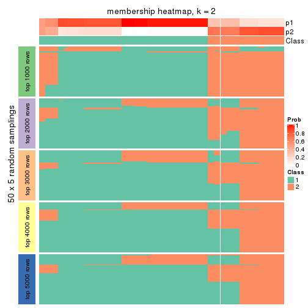
membership_heatmap(res, k = 3)
membership_heatmap(res, k = 4)
membership_heatmap(res, k = 5)
membership_heatmap(res, k = 6)
As soon as we have had the classes for columns, we can look for signatures which are significantly different between classes which can be candidate marks for certain classes. Following are the heatmaps for signatures.
Signature heatmaps where rows are scaled:
get_signatures(res, k = 2)
get_signatures(res, k = 3)
get_signatures(res, k = 4)
get_signatures(res, k = 5)
get_signatures(res, k = 6)
Signature heatmaps where rows are not scaled:
get_signatures(res, k = 2, scale_rows = FALSE)
get_signatures(res, k = 3, scale_rows = FALSE)
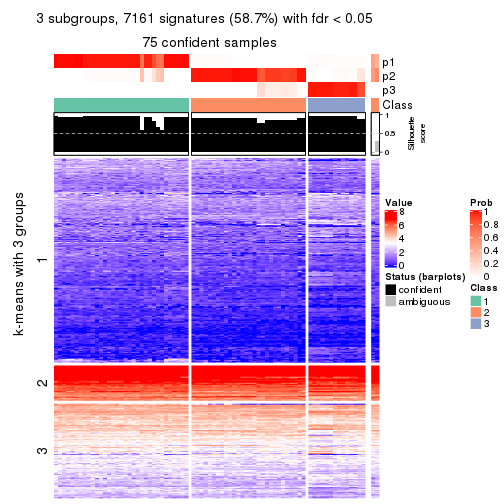
get_signatures(res, k = 4, scale_rows = FALSE)
get_signatures(res, k = 5, scale_rows = FALSE)
get_signatures(res, k = 6, scale_rows = FALSE)
Compare the overlap of signatures from different k:
compare_signatures(res)
get_signature() returns a data frame invisibly. TO get the list of signatures, the function
call should be assigned to a variable explicitly. In following code, if plot argument is set
to FALSE, no heatmap is plotted while only the differential analysis is performed.
# code only for demonstration
tb = get_signature(res, k = ..., plot = FALSE)
An example of the output of tb is:
#> which_row fdr mean_1 mean_2 scaled_mean_1 scaled_mean_2 km
#> 1 38 0.042760348 8.373488 9.131774 -0.5533452 0.5164555 1
#> 2 40 0.018707592 7.106213 8.469186 -0.6173731 0.5762149 1
#> 3 55 0.019134737 10.221463 11.207825 -0.6159697 0.5749050 1
#> 4 59 0.006059896 5.921854 7.869574 -0.6899429 0.6439467 1
#> 5 60 0.018055526 8.928898 10.211722 -0.6204761 0.5791110 1
#> 6 98 0.009384629 15.714769 14.887706 0.6635654 -0.6193277 2
...
The columns in tb are:
which_row: row indices corresponding to the input matrix.fdr: FDR for the differential test. mean_x: The mean value in group x.scaled_mean_x: The mean value in group x after rows are scaled.km: Row groups if k-means clustering is applied to rows.UMAP plot which shows how samples are separated.
dimension_reduction(res, k = 2, method = "UMAP")
dimension_reduction(res, k = 3, method = "UMAP")
dimension_reduction(res, k = 4, method = "UMAP")
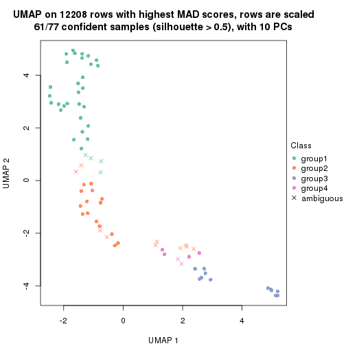
dimension_reduction(res, k = 5, method = "UMAP")
dimension_reduction(res, k = 6, method = "UMAP")
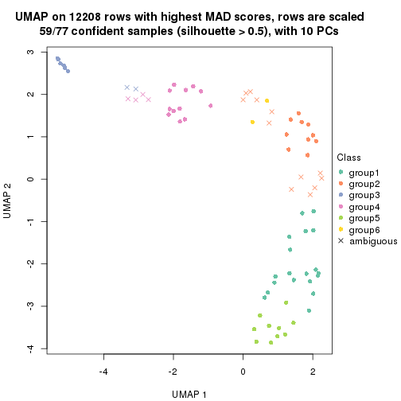
Following heatmap shows how subgroups are split when increasing k:
collect_classes(res)
If matrix rows can be associated to genes, consider to use functional_enrichment(res,
...) to perform function enrichment for the signature genes. See this vignette for more detailed explanations.
The object with results only for a single top-value method and a single partition method can be extracted as:
res = res_list["MAD", "skmeans"]
# you can also extract it by
# res = res_list["MAD:skmeans"]
A summary of res and all the functions that can be applied to it:
res
#> A 'ConsensusPartition' object with k = 2, 3, 4, 5, 6.
#> On a matrix with 12208 rows and 77 columns.
#> Top rows (1000, 2000, 3000, 4000, 5000) are extracted by 'MAD' method.
#> Subgroups are detected by 'skmeans' method.
#> Performed in total 1250 partitions by row resampling.
#> Best k for subgroups seems to be 5.
#>
#> Following methods can be applied to this 'ConsensusPartition' object:
#> [1] "cola_report" "collect_classes" "collect_plots"
#> [4] "collect_stats" "colnames" "compare_signatures"
#> [7] "consensus_heatmap" "dimension_reduction" "functional_enrichment"
#> [10] "get_anno_col" "get_anno" "get_classes"
#> [13] "get_consensus" "get_matrix" "get_membership"
#> [16] "get_param" "get_signatures" "get_stats"
#> [19] "is_best_k" "is_stable_k" "membership_heatmap"
#> [22] "ncol" "nrow" "plot_ecdf"
#> [25] "rownames" "select_partition_number" "show"
#> [28] "suggest_best_k" "test_to_known_factors"
collect_plots() function collects all the plots made from res for all k (number of partitions)
into one single page to provide an easy and fast comparison between different k.
collect_plots(res)
The plots are:
k and the heatmap of
predicted classes for each k.k.k.k.All the plots in panels can be made by individual functions and they are plotted later in this section.
select_partition_number() produces several plots showing different
statistics for choosing “optimized” k. There are following statistics:
k;k, the area increased is defined as \(A_k - A_{k-1}\).The detailed explanations of these statistics can be found in the cola vignette.
Generally speaking, lower PAC score, higher mean silhouette score or higher
concordance corresponds to better partition. Rand index and Jaccard index
measure how similar the current partition is compared to partition with k-1.
If they are too similar, we won't accept k is better than k-1.
select_partition_number(res)
The numeric values for all these statistics can be obtained by get_stats().
get_stats(res)
#> k 1-PAC mean_silhouette concordance area_increased Rand Jaccard
#> 2 2 1.000 0.987 0.994 0.4942 0.508 0.508
#> 3 3 1.000 0.995 0.997 0.3609 0.732 0.514
#> 4 4 0.767 0.830 0.801 0.0988 0.917 0.750
#> 5 5 0.922 0.892 0.944 0.0807 0.939 0.766
#> 6 6 0.896 0.799 0.868 0.0457 0.947 0.749
suggest_best_k() suggests the best \(k\) based on these statistics. The rules are as follows:
suggest_best_k(res)
#> [1] 5
#> attr(,"optional")
#> [1] 2 3
There is also optional best \(k\) = 2 3 that is worth to check.
Following shows the table of the partitions (You need to click the show/hide
code output link to see it). The membership matrix (columns with name p*)
is inferred by
clue::cl_consensus()
function with the SE method. Basically the value in the membership matrix
represents the probability to belong to a certain group. The finall class
label for an item is determined with the group with highest probability it
belongs to.
In get_classes() function, the entropy is calculated from the membership
matrix and the silhouette score is calculated from the consensus matrix.
cbind(get_classes(res, k = 2), get_membership(res, k = 2))
#> class entropy silhouette p1 p2
#> SRR2044063 2 0.000 1.000 0.000 1.000
#> SRR2044062 1 0.584 0.847 0.860 0.140
#> SRR2044061 1 0.584 0.847 0.860 0.140
#> SRR2044060 2 0.000 1.000 0.000 1.000
#> SRR2044099 1 0.000 0.989 1.000 0.000
#> SRR2044098 1 0.000 0.989 1.000 0.000
#> SRR2044097 1 0.000 0.989 1.000 0.000
#> SRR2044096 1 0.000 0.989 1.000 0.000
#> SRR2044095 1 0.000 0.989 1.000 0.000
#> SRR2044094 1 0.000 0.989 1.000 0.000
#> SRR2044087 1 0.000 0.989 1.000 0.000
#> SRR2044086 1 0.000 0.989 1.000 0.000
#> SRR2044085 1 0.000 0.989 1.000 0.000
#> SRR2044084 1 0.000 0.989 1.000 0.000
#> SRR2044083 1 0.000 0.989 1.000 0.000
#> SRR2044082 1 0.000 0.989 1.000 0.000
#> SRR2044075 1 0.000 0.989 1.000 0.000
#> SRR2044074 1 0.000 0.989 1.000 0.000
#> SRR2044073 1 0.000 0.989 1.000 0.000
#> SRR2044072 1 0.000 0.989 1.000 0.000
#> SRR2044071 1 0.000 0.989 1.000 0.000
#> SRR2044070 1 0.000 0.989 1.000 0.000
#> SRR2044069 2 0.000 1.000 0.000 1.000
#> SRR2044068 2 0.000 1.000 0.000 1.000
#> SRR2044067 2 0.000 1.000 0.000 1.000
#> SRR2044066 2 0.000 1.000 0.000 1.000
#> SRR2044065 2 0.000 1.000 0.000 1.000
#> SRR2044064 2 0.000 1.000 0.000 1.000
#> SRR2044059 1 0.358 0.926 0.932 0.068
#> SRR2044058 1 0.584 0.847 0.860 0.140
#> SRR2044057 1 0.000 0.989 1.000 0.000
#> SRR2044056 1 0.000 0.989 1.000 0.000
#> SRR2044055 1 0.000 0.989 1.000 0.000
#> SRR2044054 1 0.000 0.989 1.000 0.000
#> SRR2044053 1 0.000 0.989 1.000 0.000
#> SRR2044052 1 0.000 0.989 1.000 0.000
#> SRR2044051 2 0.000 1.000 0.000 1.000
#> SRR2044050 2 0.000 1.000 0.000 1.000
#> SRR2044049 2 0.000 1.000 0.000 1.000
#> SRR2044048 2 0.000 1.000 0.000 1.000
#> SRR2044047 2 0.000 1.000 0.000 1.000
#> SRR2044046 2 0.000 1.000 0.000 1.000
#> SRR2044045 1 0.000 0.989 1.000 0.000
#> SRR2044044 1 0.000 0.989 1.000 0.000
#> SRR2044042 1 0.000 0.989 1.000 0.000
#> SRR2044041 1 0.000 0.989 1.000 0.000
#> SRR2044040 1 0.000 0.989 1.000 0.000
#> SRR2044039 2 0.000 1.000 0.000 1.000
#> SRR2044038 2 0.000 1.000 0.000 1.000
#> SRR2044037 2 0.000 1.000 0.000 1.000
#> SRR2044036 2 0.000 1.000 0.000 1.000
#> SRR2044035 2 0.000 1.000 0.000 1.000
#> SRR2044034 2 0.000 1.000 0.000 1.000
#> SRR2044033 1 0.000 0.989 1.000 0.000
#> SRR2044032 1 0.000 0.989 1.000 0.000
#> SRR2044031 1 0.000 0.989 1.000 0.000
#> SRR2044030 1 0.000 0.989 1.000 0.000
#> SRR2044029 1 0.000 0.989 1.000 0.000
#> SRR2044028 1 0.000 0.989 1.000 0.000
#> SRR2044027 2 0.000 1.000 0.000 1.000
#> SRR2044026 2 0.000 1.000 0.000 1.000
#> SRR2044024 2 0.000 1.000 0.000 1.000
#> SRR2044023 2 0.000 1.000 0.000 1.000
#> SRR2044025 2 0.000 1.000 0.000 1.000
#> SRR2044022 2 0.000 1.000 0.000 1.000
#> SRR2044021 1 0.000 0.989 1.000 0.000
#> SRR2044020 1 0.000 0.989 1.000 0.000
#> SRR2044019 1 0.000 0.989 1.000 0.000
#> SRR2044018 1 0.000 0.989 1.000 0.000
#> SRR2044017 1 0.000 0.989 1.000 0.000
#> SRR2044016 1 0.000 0.989 1.000 0.000
#> SRR2044015 2 0.000 1.000 0.000 1.000
#> SRR2044014 2 0.000 1.000 0.000 1.000
#> SRR2044013 2 0.000 1.000 0.000 1.000
#> SRR2044011 2 0.000 1.000 0.000 1.000
#> SRR2044010 2 0.000 1.000 0.000 1.000
#> SRR2044012 2 0.000 1.000 0.000 1.000
cbind(get_classes(res, k = 3), get_membership(res, k = 3))
#> class entropy silhouette p1 p2 p3
#> SRR2044063 2 0.0000 0.994 0.000 1.000 0.000
#> SRR2044062 2 0.0000 0.994 0.000 1.000 0.000
#> SRR2044061 2 0.0000 0.994 0.000 1.000 0.000
#> SRR2044060 2 0.0000 0.994 0.000 1.000 0.000
#> SRR2044099 1 0.0000 1.000 1.000 0.000 0.000
#> SRR2044098 1 0.0000 1.000 1.000 0.000 0.000
#> SRR2044097 1 0.0000 1.000 1.000 0.000 0.000
#> SRR2044096 1 0.0000 1.000 1.000 0.000 0.000
#> SRR2044095 1 0.0000 1.000 1.000 0.000 0.000
#> SRR2044094 1 0.0000 1.000 1.000 0.000 0.000
#> SRR2044087 2 0.2959 0.891 0.100 0.900 0.000
#> SRR2044086 2 0.0000 0.994 0.000 1.000 0.000
#> SRR2044085 2 0.0592 0.984 0.012 0.988 0.000
#> SRR2044084 2 0.0424 0.988 0.008 0.992 0.000
#> SRR2044083 2 0.0000 0.994 0.000 1.000 0.000
#> SRR2044082 2 0.0237 0.991 0.004 0.996 0.000
#> SRR2044075 2 0.0000 0.994 0.000 1.000 0.000
#> SRR2044074 2 0.0000 0.994 0.000 1.000 0.000
#> SRR2044073 2 0.0000 0.994 0.000 1.000 0.000
#> SRR2044072 2 0.0000 0.994 0.000 1.000 0.000
#> SRR2044071 2 0.0000 0.994 0.000 1.000 0.000
#> SRR2044070 2 0.0000 0.994 0.000 1.000 0.000
#> SRR2044069 3 0.0000 0.997 0.000 0.000 1.000
#> SRR2044068 3 0.0000 0.997 0.000 0.000 1.000
#> SRR2044067 3 0.0000 0.997 0.000 0.000 1.000
#> SRR2044066 3 0.0000 0.997 0.000 0.000 1.000
#> SRR2044065 3 0.0000 0.997 0.000 0.000 1.000
#> SRR2044064 3 0.0000 0.997 0.000 0.000 1.000
#> SRR2044059 2 0.0000 0.994 0.000 1.000 0.000
#> SRR2044058 2 0.0000 0.994 0.000 1.000 0.000
#> SRR2044057 1 0.0000 1.000 1.000 0.000 0.000
#> SRR2044056 1 0.0000 1.000 1.000 0.000 0.000
#> SRR2044055 1 0.0000 1.000 1.000 0.000 0.000
#> SRR2044054 1 0.0000 1.000 1.000 0.000 0.000
#> SRR2044053 1 0.0000 1.000 1.000 0.000 0.000
#> SRR2044052 1 0.0000 1.000 1.000 0.000 0.000
#> SRR2044051 2 0.0000 0.994 0.000 1.000 0.000
#> SRR2044050 2 0.0000 0.994 0.000 1.000 0.000
#> SRR2044049 2 0.0000 0.994 0.000 1.000 0.000
#> SRR2044048 2 0.0000 0.994 0.000 1.000 0.000
#> SRR2044047 2 0.0000 0.994 0.000 1.000 0.000
#> SRR2044046 2 0.0000 0.994 0.000 1.000 0.000
#> SRR2044045 1 0.0000 1.000 1.000 0.000 0.000
#> SRR2044044 1 0.0000 1.000 1.000 0.000 0.000
#> SRR2044042 1 0.0000 1.000 1.000 0.000 0.000
#> SRR2044041 1 0.0000 1.000 1.000 0.000 0.000
#> SRR2044040 1 0.0000 1.000 1.000 0.000 0.000
#> SRR2044039 3 0.0000 0.997 0.000 0.000 1.000
#> SRR2044038 3 0.0592 0.991 0.000 0.012 0.988
#> SRR2044037 3 0.0592 0.991 0.000 0.012 0.988
#> SRR2044036 3 0.0000 0.997 0.000 0.000 1.000
#> SRR2044035 3 0.0592 0.991 0.000 0.012 0.988
#> SRR2044034 3 0.0592 0.991 0.000 0.012 0.988
#> SRR2044033 1 0.0000 1.000 1.000 0.000 0.000
#> SRR2044032 1 0.0000 1.000 1.000 0.000 0.000
#> SRR2044031 1 0.0000 1.000 1.000 0.000 0.000
#> SRR2044030 1 0.0000 1.000 1.000 0.000 0.000
#> SRR2044029 1 0.0000 1.000 1.000 0.000 0.000
#> SRR2044028 1 0.0000 1.000 1.000 0.000 0.000
#> SRR2044027 3 0.0000 0.997 0.000 0.000 1.000
#> SRR2044026 3 0.0592 0.991 0.000 0.012 0.988
#> SRR2044024 3 0.0000 0.997 0.000 0.000 1.000
#> SRR2044023 3 0.0592 0.991 0.000 0.012 0.988
#> SRR2044025 3 0.0000 0.997 0.000 0.000 1.000
#> SRR2044022 3 0.0000 0.997 0.000 0.000 1.000
#> SRR2044021 1 0.0000 1.000 1.000 0.000 0.000
#> SRR2044020 1 0.0000 1.000 1.000 0.000 0.000
#> SRR2044019 1 0.0000 1.000 1.000 0.000 0.000
#> SRR2044018 1 0.0000 1.000 1.000 0.000 0.000
#> SRR2044017 1 0.0000 1.000 1.000 0.000 0.000
#> SRR2044016 1 0.0000 1.000 1.000 0.000 0.000
#> SRR2044015 3 0.0000 0.997 0.000 0.000 1.000
#> SRR2044014 3 0.0000 0.997 0.000 0.000 1.000
#> SRR2044013 3 0.0000 0.997 0.000 0.000 1.000
#> SRR2044011 3 0.0000 0.997 0.000 0.000 1.000
#> SRR2044010 3 0.0000 0.997 0.000 0.000 1.000
#> SRR2044012 3 0.0000 0.997 0.000 0.000 1.000
cbind(get_classes(res, k = 4), get_membership(res, k = 4))
#> class entropy silhouette p1 p2 p3 p4
#> SRR2044063 2 0.0336 0.882 0.008 0.992 0.000 0.000
#> SRR2044062 2 0.0000 0.884 0.000 1.000 0.000 0.000
#> SRR2044061 2 0.0000 0.884 0.000 1.000 0.000 0.000
#> SRR2044060 2 0.0188 0.883 0.004 0.996 0.000 0.000
#> SRR2044099 1 0.4888 0.939 0.588 0.000 0.412 0.000
#> SRR2044098 1 0.5548 0.905 0.588 0.024 0.388 0.000
#> SRR2044097 1 0.4888 0.939 0.588 0.000 0.412 0.000
#> SRR2044096 1 0.4888 0.939 0.588 0.000 0.412 0.000
#> SRR2044095 1 0.5769 0.885 0.588 0.036 0.376 0.000
#> SRR2044094 1 0.4888 0.939 0.588 0.000 0.412 0.000
#> SRR2044087 2 0.4661 0.495 0.348 0.652 0.000 0.000
#> SRR2044086 2 0.2408 0.816 0.104 0.896 0.000 0.000
#> SRR2044085 1 0.4925 0.059 0.572 0.428 0.000 0.000
#> SRR2044084 2 0.4543 0.538 0.324 0.676 0.000 0.000
#> SRR2044083 2 0.2469 0.813 0.108 0.892 0.000 0.000
#> SRR2044082 2 0.5000 0.103 0.500 0.500 0.000 0.000
#> SRR2044075 2 0.0000 0.884 0.000 1.000 0.000 0.000
#> SRR2044074 2 0.0000 0.884 0.000 1.000 0.000 0.000
#> SRR2044073 2 0.0000 0.884 0.000 1.000 0.000 0.000
#> SRR2044072 2 0.0000 0.884 0.000 1.000 0.000 0.000
#> SRR2044071 2 0.0000 0.884 0.000 1.000 0.000 0.000
#> SRR2044070 2 0.0000 0.884 0.000 1.000 0.000 0.000
#> SRR2044069 3 0.4888 0.788 0.000 0.000 0.588 0.412
#> SRR2044068 3 0.4888 0.788 0.000 0.000 0.588 0.412
#> SRR2044067 3 0.4888 0.788 0.000 0.000 0.588 0.412
#> SRR2044066 3 0.4888 0.788 0.000 0.000 0.588 0.412
#> SRR2044065 3 0.4888 0.788 0.000 0.000 0.588 0.412
#> SRR2044064 3 0.4888 0.788 0.000 0.000 0.588 0.412
#> SRR2044059 2 0.0000 0.884 0.000 1.000 0.000 0.000
#> SRR2044058 2 0.0000 0.884 0.000 1.000 0.000 0.000
#> SRR2044057 4 0.4888 1.000 0.000 0.000 0.412 0.588
#> SRR2044056 4 0.4888 1.000 0.000 0.000 0.412 0.588
#> SRR2044055 1 0.4888 0.939 0.588 0.000 0.412 0.000
#> SRR2044054 4 0.4888 1.000 0.000 0.000 0.412 0.588
#> SRR2044053 4 0.4888 1.000 0.000 0.000 0.412 0.588
#> SRR2044052 1 0.4888 0.939 0.588 0.000 0.412 0.000
#> SRR2044051 2 0.4888 0.417 0.412 0.588 0.000 0.000
#> SRR2044050 2 0.1637 0.860 0.060 0.940 0.000 0.000
#> SRR2044049 2 0.1637 0.860 0.060 0.940 0.000 0.000
#> SRR2044048 2 0.4304 0.624 0.284 0.716 0.000 0.000
#> SRR2044047 2 0.1637 0.860 0.060 0.940 0.000 0.000
#> SRR2044046 2 0.1637 0.860 0.060 0.940 0.000 0.000
#> SRR2044045 4 0.4888 1.000 0.000 0.000 0.412 0.588
#> SRR2044044 4 0.4888 1.000 0.000 0.000 0.412 0.588
#> SRR2044042 4 0.4888 1.000 0.000 0.000 0.412 0.588
#> SRR2044041 4 0.4888 1.000 0.000 0.000 0.412 0.588
#> SRR2044040 1 0.4888 0.939 0.588 0.000 0.412 0.000
#> SRR2044039 3 0.4888 0.755 0.412 0.000 0.588 0.000
#> SRR2044038 3 0.7110 0.678 0.412 0.128 0.460 0.000
#> SRR2044037 3 0.7110 0.678 0.412 0.128 0.460 0.000
#> SRR2044036 3 0.4888 0.755 0.412 0.000 0.588 0.000
#> SRR2044035 3 0.7110 0.678 0.412 0.128 0.460 0.000
#> SRR2044034 3 0.7110 0.678 0.412 0.128 0.460 0.000
#> SRR2044033 4 0.4888 1.000 0.000 0.000 0.412 0.588
#> SRR2044032 4 0.4888 1.000 0.000 0.000 0.412 0.588
#> SRR2044031 1 0.4888 0.939 0.588 0.000 0.412 0.000
#> SRR2044030 4 0.4888 1.000 0.000 0.000 0.412 0.588
#> SRR2044029 4 0.4888 1.000 0.000 0.000 0.412 0.588
#> SRR2044028 1 0.4888 0.939 0.588 0.000 0.412 0.000
#> SRR2044027 3 0.6265 0.769 0.340 0.000 0.588 0.072
#> SRR2044026 3 0.7110 0.678 0.412 0.128 0.460 0.000
#> SRR2044024 3 0.6171 0.768 0.348 0.000 0.588 0.064
#> SRR2044023 3 0.7110 0.678 0.412 0.128 0.460 0.000
#> SRR2044025 3 0.4888 0.755 0.412 0.000 0.588 0.000
#> SRR2044022 3 0.5060 0.754 0.412 0.004 0.584 0.000
#> SRR2044021 1 0.4888 0.939 0.588 0.000 0.412 0.000
#> SRR2044020 1 0.4888 0.939 0.588 0.000 0.412 0.000
#> SRR2044019 1 0.4888 0.939 0.588 0.000 0.412 0.000
#> SRR2044018 1 0.4888 0.939 0.588 0.000 0.412 0.000
#> SRR2044017 1 0.4888 0.939 0.588 0.000 0.412 0.000
#> SRR2044016 1 0.4888 0.939 0.588 0.000 0.412 0.000
#> SRR2044015 3 0.4888 0.788 0.000 0.000 0.588 0.412
#> SRR2044014 3 0.4888 0.788 0.000 0.000 0.588 0.412
#> SRR2044013 3 0.4888 0.788 0.000 0.000 0.588 0.412
#> SRR2044011 3 0.4888 0.788 0.000 0.000 0.588 0.412
#> SRR2044010 3 0.4888 0.788 0.000 0.000 0.588 0.412
#> SRR2044012 3 0.4888 0.788 0.000 0.000 0.588 0.412
cbind(get_classes(res, k = 5), get_membership(res, k = 5))
#> class entropy silhouette p1 p2 p3 p4 p5
#> SRR2044063 2 0.1626 0.860 0.000 0.940 0.000 0.044 0.016
#> SRR2044062 2 0.0566 0.876 0.000 0.984 0.000 0.012 0.004
#> SRR2044061 2 0.0566 0.876 0.000 0.984 0.000 0.012 0.004
#> SRR2044060 2 0.1300 0.868 0.000 0.956 0.000 0.028 0.016
#> SRR2044099 1 0.0290 0.958 0.992 0.000 0.000 0.000 0.008
#> SRR2044098 1 0.0771 0.942 0.976 0.020 0.000 0.004 0.000
#> SRR2044097 1 0.0000 0.956 1.000 0.000 0.000 0.000 0.000
#> SRR2044096 1 0.0290 0.958 0.992 0.000 0.000 0.000 0.008
#> SRR2044095 1 0.1571 0.907 0.936 0.060 0.000 0.004 0.000
#> SRR2044094 1 0.0000 0.956 1.000 0.000 0.000 0.000 0.000
#> SRR2044087 2 0.3579 0.647 0.240 0.756 0.000 0.004 0.000
#> SRR2044086 2 0.0566 0.872 0.012 0.984 0.000 0.004 0.000
#> SRR2044085 1 0.4434 0.109 0.536 0.460 0.000 0.004 0.000
#> SRR2044084 2 0.3333 0.694 0.208 0.788 0.000 0.004 0.000
#> SRR2044083 2 0.0671 0.870 0.016 0.980 0.000 0.004 0.000
#> SRR2044082 2 0.4299 0.331 0.388 0.608 0.000 0.004 0.000
#> SRR2044075 2 0.0162 0.876 0.000 0.996 0.000 0.004 0.000
#> SRR2044074 2 0.0162 0.876 0.004 0.996 0.000 0.000 0.000
#> SRR2044073 2 0.0162 0.876 0.004 0.996 0.000 0.000 0.000
#> SRR2044072 2 0.0162 0.876 0.000 0.996 0.000 0.004 0.000
#> SRR2044071 2 0.0162 0.876 0.004 0.996 0.000 0.000 0.000
#> SRR2044070 2 0.0162 0.876 0.004 0.996 0.000 0.000 0.000
#> SRR2044069 3 0.0162 0.998 0.000 0.000 0.996 0.000 0.004
#> SRR2044068 3 0.0162 0.998 0.000 0.000 0.996 0.000 0.004
#> SRR2044067 3 0.0162 0.998 0.000 0.000 0.996 0.000 0.004
#> SRR2044066 3 0.0162 0.998 0.000 0.000 0.996 0.000 0.004
#> SRR2044065 3 0.0162 0.998 0.000 0.000 0.996 0.000 0.004
#> SRR2044064 3 0.0162 0.998 0.000 0.000 0.996 0.000 0.004
#> SRR2044059 2 0.0404 0.876 0.000 0.988 0.000 0.012 0.000
#> SRR2044058 2 0.0566 0.876 0.000 0.984 0.000 0.012 0.004
#> SRR2044057 5 0.0609 0.997 0.020 0.000 0.000 0.000 0.980
#> SRR2044056 5 0.0609 0.997 0.020 0.000 0.000 0.000 0.980
#> SRR2044055 1 0.0290 0.958 0.992 0.000 0.000 0.000 0.008
#> SRR2044054 5 0.0609 0.997 0.020 0.000 0.000 0.000 0.980
#> SRR2044053 5 0.0609 0.997 0.020 0.000 0.000 0.000 0.980
#> SRR2044052 1 0.0290 0.958 0.992 0.000 0.000 0.000 0.008
#> SRR2044051 4 0.3343 0.708 0.000 0.172 0.000 0.812 0.016
#> SRR2044050 2 0.3696 0.735 0.000 0.772 0.000 0.212 0.016
#> SRR2044049 2 0.3696 0.735 0.000 0.772 0.000 0.212 0.016
#> SRR2044048 2 0.4718 0.285 0.000 0.540 0.000 0.444 0.016
#> SRR2044047 2 0.3663 0.739 0.000 0.776 0.000 0.208 0.016
#> SRR2044046 2 0.3696 0.735 0.000 0.772 0.000 0.212 0.016
#> SRR2044045 5 0.0609 0.997 0.020 0.000 0.000 0.000 0.980
#> SRR2044044 5 0.0609 0.997 0.020 0.000 0.000 0.000 0.980
#> SRR2044042 5 0.0609 0.997 0.020 0.000 0.000 0.000 0.980
#> SRR2044041 5 0.0609 0.997 0.020 0.000 0.000 0.000 0.980
#> SRR2044040 1 0.0290 0.958 0.992 0.000 0.000 0.000 0.008
#> SRR2044039 4 0.0880 0.924 0.000 0.000 0.032 0.968 0.000
#> SRR2044038 4 0.0404 0.932 0.000 0.000 0.012 0.988 0.000
#> SRR2044037 4 0.0404 0.932 0.000 0.000 0.012 0.988 0.000
#> SRR2044036 4 0.0880 0.924 0.000 0.000 0.032 0.968 0.000
#> SRR2044035 4 0.0404 0.932 0.000 0.000 0.012 0.988 0.000
#> SRR2044034 4 0.0404 0.932 0.000 0.000 0.012 0.988 0.000
#> SRR2044033 5 0.0609 0.997 0.020 0.000 0.000 0.000 0.980
#> SRR2044032 5 0.0963 0.983 0.036 0.000 0.000 0.000 0.964
#> SRR2044031 1 0.0290 0.958 0.992 0.000 0.000 0.000 0.008
#> SRR2044030 5 0.0609 0.997 0.020 0.000 0.000 0.000 0.980
#> SRR2044029 5 0.0963 0.983 0.036 0.000 0.000 0.000 0.964
#> SRR2044028 1 0.0290 0.958 0.992 0.000 0.000 0.000 0.008
#> SRR2044027 4 0.3534 0.677 0.000 0.000 0.256 0.744 0.000
#> SRR2044026 4 0.0404 0.932 0.000 0.000 0.012 0.988 0.000
#> SRR2044024 4 0.3534 0.677 0.000 0.000 0.256 0.744 0.000
#> SRR2044023 4 0.0404 0.932 0.000 0.000 0.012 0.988 0.000
#> SRR2044025 4 0.0510 0.931 0.000 0.000 0.016 0.984 0.000
#> SRR2044022 4 0.0510 0.931 0.000 0.000 0.016 0.984 0.000
#> SRR2044021 1 0.0703 0.949 0.976 0.000 0.000 0.000 0.024
#> SRR2044020 1 0.0613 0.954 0.984 0.004 0.000 0.004 0.008
#> SRR2044019 1 0.0290 0.958 0.992 0.000 0.000 0.000 0.008
#> SRR2044018 1 0.0609 0.952 0.980 0.000 0.000 0.000 0.020
#> SRR2044017 1 0.0932 0.948 0.972 0.004 0.000 0.004 0.020
#> SRR2044016 1 0.0290 0.958 0.992 0.000 0.000 0.000 0.008
#> SRR2044015 3 0.0000 0.998 0.000 0.000 1.000 0.000 0.000
#> SRR2044014 3 0.0000 0.998 0.000 0.000 1.000 0.000 0.000
#> SRR2044013 3 0.0000 0.998 0.000 0.000 1.000 0.000 0.000
#> SRR2044011 3 0.0000 0.998 0.000 0.000 1.000 0.000 0.000
#> SRR2044010 3 0.0000 0.998 0.000 0.000 1.000 0.000 0.000
#> SRR2044012 3 0.0000 0.998 0.000 0.000 1.000 0.000 0.000
cbind(get_classes(res, k = 6), get_membership(res, k = 6))
#> class entropy silhouette p1 p2 p3 p4 p5 p6
#> SRR2044063 2 0.3719 0.635 0.000 0.728 0.000 0.024 0.000 0.248
#> SRR2044062 2 0.0260 0.597 0.000 0.992 0.000 0.000 0.000 0.008
#> SRR2044061 2 0.0363 0.602 0.000 0.988 0.000 0.000 0.000 0.012
#> SRR2044060 2 0.3314 0.636 0.000 0.764 0.000 0.012 0.000 0.224
#> SRR2044099 1 0.1297 0.900 0.948 0.000 0.000 0.000 0.012 0.040
#> SRR2044098 1 0.4062 0.300 0.552 0.008 0.000 0.000 0.000 0.440
#> SRR2044097 1 0.0363 0.911 0.988 0.000 0.000 0.000 0.000 0.012
#> SRR2044096 1 0.0865 0.906 0.964 0.000 0.000 0.000 0.000 0.036
#> SRR2044095 6 0.5146 0.116 0.396 0.088 0.000 0.000 0.000 0.516
#> SRR2044094 1 0.0937 0.901 0.960 0.000 0.000 0.000 0.000 0.040
#> SRR2044087 6 0.4292 0.814 0.024 0.388 0.000 0.000 0.000 0.588
#> SRR2044086 6 0.3833 0.763 0.000 0.444 0.000 0.000 0.000 0.556
#> SRR2044085 6 0.4903 0.796 0.072 0.360 0.000 0.000 0.000 0.568
#> SRR2044084 6 0.4237 0.814 0.020 0.396 0.000 0.000 0.000 0.584
#> SRR2044083 6 0.3817 0.779 0.000 0.432 0.000 0.000 0.000 0.568
#> SRR2044082 6 0.4649 0.812 0.048 0.380 0.000 0.000 0.000 0.572
#> SRR2044075 2 0.2378 0.458 0.000 0.848 0.000 0.000 0.000 0.152
#> SRR2044074 2 0.3050 0.283 0.000 0.764 0.000 0.000 0.000 0.236
#> SRR2044073 2 0.3198 0.207 0.000 0.740 0.000 0.000 0.000 0.260
#> SRR2044072 2 0.2178 0.496 0.000 0.868 0.000 0.000 0.000 0.132
#> SRR2044071 2 0.2941 0.321 0.000 0.780 0.000 0.000 0.000 0.220
#> SRR2044070 2 0.3076 0.271 0.000 0.760 0.000 0.000 0.000 0.240
#> SRR2044069 3 0.0000 0.956 0.000 0.000 1.000 0.000 0.000 0.000
#> SRR2044068 3 0.0000 0.956 0.000 0.000 1.000 0.000 0.000 0.000
#> SRR2044067 3 0.0000 0.956 0.000 0.000 1.000 0.000 0.000 0.000
#> SRR2044066 3 0.0000 0.956 0.000 0.000 1.000 0.000 0.000 0.000
#> SRR2044065 3 0.0000 0.956 0.000 0.000 1.000 0.000 0.000 0.000
#> SRR2044064 3 0.0000 0.956 0.000 0.000 1.000 0.000 0.000 0.000
#> SRR2044059 2 0.1387 0.553 0.000 0.932 0.000 0.000 0.000 0.068
#> SRR2044058 2 0.0000 0.601 0.000 1.000 0.000 0.000 0.000 0.000
#> SRR2044057 5 0.0000 0.987 0.000 0.000 0.000 0.000 1.000 0.000
#> SRR2044056 5 0.0000 0.987 0.000 0.000 0.000 0.000 1.000 0.000
#> SRR2044055 1 0.0000 0.913 1.000 0.000 0.000 0.000 0.000 0.000
#> SRR2044054 5 0.0000 0.987 0.000 0.000 0.000 0.000 1.000 0.000
#> SRR2044053 5 0.0000 0.987 0.000 0.000 0.000 0.000 1.000 0.000
#> SRR2044052 1 0.0547 0.911 0.980 0.000 0.000 0.000 0.000 0.020
#> SRR2044051 2 0.5769 0.484 0.000 0.504 0.000 0.220 0.000 0.276
#> SRR2044050 2 0.4414 0.628 0.000 0.676 0.000 0.064 0.000 0.260
#> SRR2044049 2 0.4435 0.626 0.000 0.672 0.000 0.064 0.000 0.264
#> SRR2044048 2 0.5205 0.569 0.000 0.596 0.000 0.136 0.000 0.268
#> SRR2044047 2 0.4414 0.628 0.000 0.676 0.000 0.064 0.000 0.260
#> SRR2044046 2 0.4414 0.628 0.000 0.676 0.000 0.064 0.000 0.260
#> SRR2044045 5 0.0000 0.987 0.000 0.000 0.000 0.000 1.000 0.000
#> SRR2044044 5 0.0363 0.982 0.000 0.000 0.000 0.000 0.988 0.012
#> SRR2044042 5 0.0000 0.987 0.000 0.000 0.000 0.000 1.000 0.000
#> SRR2044041 5 0.0260 0.984 0.000 0.000 0.000 0.000 0.992 0.008
#> SRR2044040 1 0.0000 0.913 1.000 0.000 0.000 0.000 0.000 0.000
#> SRR2044039 4 0.1075 0.921 0.000 0.000 0.000 0.952 0.000 0.048
#> SRR2044038 4 0.0000 0.936 0.000 0.000 0.000 1.000 0.000 0.000
#> SRR2044037 4 0.0000 0.936 0.000 0.000 0.000 1.000 0.000 0.000
#> SRR2044036 4 0.1075 0.921 0.000 0.000 0.000 0.952 0.000 0.048
#> SRR2044035 4 0.0000 0.936 0.000 0.000 0.000 1.000 0.000 0.000
#> SRR2044034 4 0.0000 0.936 0.000 0.000 0.000 1.000 0.000 0.000
#> SRR2044033 5 0.0146 0.985 0.000 0.000 0.000 0.000 0.996 0.004
#> SRR2044032 5 0.1780 0.934 0.028 0.000 0.000 0.000 0.924 0.048
#> SRR2044031 1 0.0000 0.913 1.000 0.000 0.000 0.000 0.000 0.000
#> SRR2044030 5 0.0000 0.987 0.000 0.000 0.000 0.000 1.000 0.000
#> SRR2044029 5 0.1498 0.948 0.028 0.000 0.000 0.000 0.940 0.032
#> SRR2044028 1 0.0000 0.913 1.000 0.000 0.000 0.000 0.000 0.000
#> SRR2044027 4 0.4023 0.764 0.000 0.000 0.144 0.756 0.000 0.100
#> SRR2044026 4 0.1267 0.919 0.000 0.000 0.000 0.940 0.000 0.060
#> SRR2044024 4 0.3985 0.769 0.000 0.000 0.140 0.760 0.000 0.100
#> SRR2044023 4 0.1204 0.921 0.000 0.000 0.000 0.944 0.000 0.056
#> SRR2044025 4 0.1007 0.934 0.000 0.000 0.000 0.956 0.000 0.044
#> SRR2044022 4 0.0937 0.931 0.000 0.000 0.000 0.960 0.000 0.040
#> SRR2044021 1 0.1088 0.901 0.960 0.000 0.000 0.000 0.016 0.024
#> SRR2044020 1 0.3758 0.626 0.700 0.000 0.000 0.000 0.016 0.284
#> SRR2044019 1 0.0000 0.913 1.000 0.000 0.000 0.000 0.000 0.000
#> SRR2044018 1 0.0692 0.907 0.976 0.000 0.000 0.000 0.004 0.020
#> SRR2044017 1 0.4087 0.619 0.688 0.000 0.000 0.000 0.036 0.276
#> SRR2044016 1 0.0000 0.913 1.000 0.000 0.000 0.000 0.000 0.000
#> SRR2044015 3 0.1714 0.955 0.000 0.000 0.908 0.000 0.000 0.092
#> SRR2044014 3 0.1858 0.954 0.000 0.000 0.904 0.004 0.000 0.092
#> SRR2044013 3 0.1858 0.954 0.000 0.000 0.904 0.004 0.000 0.092
#> SRR2044011 3 0.1858 0.954 0.000 0.000 0.904 0.004 0.000 0.092
#> SRR2044010 3 0.1858 0.954 0.000 0.000 0.904 0.004 0.000 0.092
#> SRR2044012 3 0.1714 0.955 0.000 0.000 0.908 0.000 0.000 0.092
Heatmaps for the consensus matrix. It visualizes the probability of two samples to be in a same group.
consensus_heatmap(res, k = 2)
consensus_heatmap(res, k = 3)
consensus_heatmap(res, k = 4)
consensus_heatmap(res, k = 5)
consensus_heatmap(res, k = 6)
Heatmaps for the membership of samples in all partitions to see how consistent they are:
membership_heatmap(res, k = 2)
membership_heatmap(res, k = 3)
membership_heatmap(res, k = 4)
membership_heatmap(res, k = 5)
membership_heatmap(res, k = 6)
As soon as we have had the classes for columns, we can look for signatures which are significantly different between classes which can be candidate marks for certain classes. Following are the heatmaps for signatures.
Signature heatmaps where rows are scaled:
get_signatures(res, k = 2)
get_signatures(res, k = 3)
get_signatures(res, k = 4)
get_signatures(res, k = 5)
get_signatures(res, k = 6)
Signature heatmaps where rows are not scaled:
get_signatures(res, k = 2, scale_rows = FALSE)
get_signatures(res, k = 3, scale_rows = FALSE)
get_signatures(res, k = 4, scale_rows = FALSE)
get_signatures(res, k = 5, scale_rows = FALSE)
get_signatures(res, k = 6, scale_rows = FALSE)
Compare the overlap of signatures from different k:
compare_signatures(res)
get_signature() returns a data frame invisibly. TO get the list of signatures, the function
call should be assigned to a variable explicitly. In following code, if plot argument is set
to FALSE, no heatmap is plotted while only the differential analysis is performed.
# code only for demonstration
tb = get_signature(res, k = ..., plot = FALSE)
An example of the output of tb is:
#> which_row fdr mean_1 mean_2 scaled_mean_1 scaled_mean_2 km
#> 1 38 0.042760348 8.373488 9.131774 -0.5533452 0.5164555 1
#> 2 40 0.018707592 7.106213 8.469186 -0.6173731 0.5762149 1
#> 3 55 0.019134737 10.221463 11.207825 -0.6159697 0.5749050 1
#> 4 59 0.006059896 5.921854 7.869574 -0.6899429 0.6439467 1
#> 5 60 0.018055526 8.928898 10.211722 -0.6204761 0.5791110 1
#> 6 98 0.009384629 15.714769 14.887706 0.6635654 -0.6193277 2
...
The columns in tb are:
which_row: row indices corresponding to the input matrix.fdr: FDR for the differential test. mean_x: The mean value in group x.scaled_mean_x: The mean value in group x after rows are scaled.km: Row groups if k-means clustering is applied to rows.UMAP plot which shows how samples are separated.
dimension_reduction(res, k = 2, method = "UMAP")
dimension_reduction(res, k = 3, method = "UMAP")
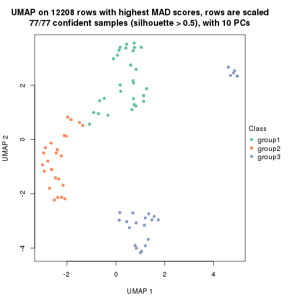
dimension_reduction(res, k = 4, method = "UMAP")
dimension_reduction(res, k = 5, method = "UMAP")
dimension_reduction(res, k = 6, method = "UMAP")
Following heatmap shows how subgroups are split when increasing k:
collect_classes(res)
If matrix rows can be associated to genes, consider to use functional_enrichment(res,
...) to perform function enrichment for the signature genes. See this vignette for more detailed explanations.
The object with results only for a single top-value method and a single partition method can be extracted as:
res = res_list["MAD", "pam"]
# you can also extract it by
# res = res_list["MAD:pam"]
A summary of res and all the functions that can be applied to it:
res
#> A 'ConsensusPartition' object with k = 2, 3, 4, 5, 6.
#> On a matrix with 12208 rows and 77 columns.
#> Top rows (1000, 2000, 3000, 4000, 5000) are extracted by 'MAD' method.
#> Subgroups are detected by 'pam' method.
#> Performed in total 1250 partitions by row resampling.
#> Best k for subgroups seems to be 6.
#>
#> Following methods can be applied to this 'ConsensusPartition' object:
#> [1] "cola_report" "collect_classes" "collect_plots"
#> [4] "collect_stats" "colnames" "compare_signatures"
#> [7] "consensus_heatmap" "dimension_reduction" "functional_enrichment"
#> [10] "get_anno_col" "get_anno" "get_classes"
#> [13] "get_consensus" "get_matrix" "get_membership"
#> [16] "get_param" "get_signatures" "get_stats"
#> [19] "is_best_k" "is_stable_k" "membership_heatmap"
#> [22] "ncol" "nrow" "plot_ecdf"
#> [25] "rownames" "select_partition_number" "show"
#> [28] "suggest_best_k" "test_to_known_factors"
collect_plots() function collects all the plots made from res for all k (number of partitions)
into one single page to provide an easy and fast comparison between different k.
collect_plots(res)
The plots are:
k and the heatmap of
predicted classes for each k.k.k.k.All the plots in panels can be made by individual functions and they are plotted later in this section.
select_partition_number() produces several plots showing different
statistics for choosing “optimized” k. There are following statistics:
k;k, the area increased is defined as \(A_k - A_{k-1}\).The detailed explanations of these statistics can be found in the cola vignette.
Generally speaking, lower PAC score, higher mean silhouette score or higher
concordance corresponds to better partition. Rand index and Jaccard index
measure how similar the current partition is compared to partition with k-1.
If they are too similar, we won't accept k is better than k-1.
select_partition_number(res)
The numeric values for all these statistics can be obtained by get_stats().
get_stats(res)
#> k 1-PAC mean_silhouette concordance area_increased Rand Jaccard
#> 2 2 0.919 0.933 0.973 0.5014 0.498 0.498
#> 3 3 0.928 0.926 0.973 0.1842 0.907 0.813
#> 4 4 0.785 0.895 0.916 0.1785 0.870 0.686
#> 5 5 0.839 0.821 0.899 0.0670 0.956 0.857
#> 6 6 0.978 0.920 0.964 0.0545 0.935 0.768
suggest_best_k() suggests the best \(k\) based on these statistics. The rules are as follows:
suggest_best_k(res)
#> [1] 6
#> attr(,"optional")
#> [1] 2 3
There is also optional best \(k\) = 2 3 that is worth to check.
Following shows the table of the partitions (You need to click the show/hide
code output link to see it). The membership matrix (columns with name p*)
is inferred by
clue::cl_consensus()
function with the SE method. Basically the value in the membership matrix
represents the probability to belong to a certain group. The finall class
label for an item is determined with the group with highest probability it
belongs to.
In get_classes() function, the entropy is calculated from the membership
matrix and the silhouette score is calculated from the consensus matrix.
cbind(get_classes(res, k = 2), get_membership(res, k = 2))
#> class entropy silhouette p1 p2
#> SRR2044063 2 0.0000 0.970 0.000 1.000
#> SRR2044062 2 0.0000 0.970 0.000 1.000
#> SRR2044061 2 0.0000 0.970 0.000 1.000
#> SRR2044060 2 0.0000 0.970 0.000 1.000
#> SRR2044099 1 0.0000 0.970 1.000 0.000
#> SRR2044098 1 0.0000 0.970 1.000 0.000
#> SRR2044097 1 0.0000 0.970 1.000 0.000
#> SRR2044096 1 0.0000 0.970 1.000 0.000
#> SRR2044095 1 0.0000 0.970 1.000 0.000
#> SRR2044094 1 0.0000 0.970 1.000 0.000
#> SRR2044087 1 0.9358 0.453 0.648 0.352
#> SRR2044086 1 0.0672 0.964 0.992 0.008
#> SRR2044085 1 0.0000 0.970 1.000 0.000
#> SRR2044084 1 0.9087 0.524 0.676 0.324
#> SRR2044083 1 0.0000 0.970 1.000 0.000
#> SRR2044082 1 0.6712 0.777 0.824 0.176
#> SRR2044075 2 0.0000 0.970 0.000 1.000
#> SRR2044074 2 0.8763 0.576 0.296 0.704
#> SRR2044073 2 0.5737 0.826 0.136 0.864
#> SRR2044072 2 0.0000 0.970 0.000 1.000
#> SRR2044071 2 0.8608 0.599 0.284 0.716
#> SRR2044070 2 0.9881 0.224 0.436 0.564
#> SRR2044069 2 0.0000 0.970 0.000 1.000
#> SRR2044068 2 0.0000 0.970 0.000 1.000
#> SRR2044067 2 0.0000 0.970 0.000 1.000
#> SRR2044066 2 0.0000 0.970 0.000 1.000
#> SRR2044065 2 0.0000 0.970 0.000 1.000
#> SRR2044064 2 0.0000 0.970 0.000 1.000
#> SRR2044059 2 0.0000 0.970 0.000 1.000
#> SRR2044058 2 0.0000 0.970 0.000 1.000
#> SRR2044057 1 0.2778 0.930 0.952 0.048
#> SRR2044056 1 0.0000 0.970 1.000 0.000
#> SRR2044055 1 0.0000 0.970 1.000 0.000
#> SRR2044054 1 0.3114 0.922 0.944 0.056
#> SRR2044053 1 0.0000 0.970 1.000 0.000
#> SRR2044052 1 0.0000 0.970 1.000 0.000
#> SRR2044051 2 0.0000 0.970 0.000 1.000
#> SRR2044050 2 0.0000 0.970 0.000 1.000
#> SRR2044049 2 0.0000 0.970 0.000 1.000
#> SRR2044048 2 0.0000 0.970 0.000 1.000
#> SRR2044047 2 0.0000 0.970 0.000 1.000
#> SRR2044046 2 0.0000 0.970 0.000 1.000
#> SRR2044045 1 0.0000 0.970 1.000 0.000
#> SRR2044044 1 0.0000 0.970 1.000 0.000
#> SRR2044042 1 0.0000 0.970 1.000 0.000
#> SRR2044041 1 0.0000 0.970 1.000 0.000
#> SRR2044040 1 0.0000 0.970 1.000 0.000
#> SRR2044039 2 0.0000 0.970 0.000 1.000
#> SRR2044038 2 0.0000 0.970 0.000 1.000
#> SRR2044037 2 0.0000 0.970 0.000 1.000
#> SRR2044036 2 0.0000 0.970 0.000 1.000
#> SRR2044035 2 0.0000 0.970 0.000 1.000
#> SRR2044034 2 0.0000 0.970 0.000 1.000
#> SRR2044033 1 0.0000 0.970 1.000 0.000
#> SRR2044032 1 0.0000 0.970 1.000 0.000
#> SRR2044031 1 0.0000 0.970 1.000 0.000
#> SRR2044030 1 0.0000 0.970 1.000 0.000
#> SRR2044029 1 0.0000 0.970 1.000 0.000
#> SRR2044028 1 0.0000 0.970 1.000 0.000
#> SRR2044027 2 0.0000 0.970 0.000 1.000
#> SRR2044026 2 0.0000 0.970 0.000 1.000
#> SRR2044024 2 0.0000 0.970 0.000 1.000
#> SRR2044023 2 0.0000 0.970 0.000 1.000
#> SRR2044025 2 0.0000 0.970 0.000 1.000
#> SRR2044022 2 0.0000 0.970 0.000 1.000
#> SRR2044021 1 0.0000 0.970 1.000 0.000
#> SRR2044020 1 0.0000 0.970 1.000 0.000
#> SRR2044019 1 0.0000 0.970 1.000 0.000
#> SRR2044018 1 0.0000 0.970 1.000 0.000
#> SRR2044017 1 0.0000 0.970 1.000 0.000
#> SRR2044016 1 0.0000 0.970 1.000 0.000
#> SRR2044015 2 0.0000 0.970 0.000 1.000
#> SRR2044014 2 0.0000 0.970 0.000 1.000
#> SRR2044013 2 0.0000 0.970 0.000 1.000
#> SRR2044011 2 0.0000 0.970 0.000 1.000
#> SRR2044010 2 0.0000 0.970 0.000 1.000
#> SRR2044012 2 0.0000 0.970 0.000 1.000
cbind(get_classes(res, k = 3), get_membership(res, k = 3))
#> class entropy silhouette p1 p2 p3
#> SRR2044063 2 0.0000 0.955 0.000 1.000 0
#> SRR2044062 2 0.0000 0.955 0.000 1.000 0
#> SRR2044061 2 0.0000 0.955 0.000 1.000 0
#> SRR2044060 2 0.0000 0.955 0.000 1.000 0
#> SRR2044099 1 0.0000 0.964 1.000 0.000 0
#> SRR2044098 1 0.0000 0.964 1.000 0.000 0
#> SRR2044097 1 0.0000 0.964 1.000 0.000 0
#> SRR2044096 1 0.0000 0.964 1.000 0.000 0
#> SRR2044095 1 0.0000 0.964 1.000 0.000 0
#> SRR2044094 1 0.0000 0.964 1.000 0.000 0
#> SRR2044087 1 0.5905 0.446 0.648 0.352 0
#> SRR2044086 1 0.0424 0.957 0.992 0.008 0
#> SRR2044085 1 0.0000 0.964 1.000 0.000 0
#> SRR2044084 1 0.5733 0.519 0.676 0.324 0
#> SRR2044083 1 0.0000 0.964 1.000 0.000 0
#> SRR2044082 1 0.4235 0.755 0.824 0.176 0
#> SRR2044075 2 0.0000 0.955 0.000 1.000 0
#> SRR2044074 2 0.5529 0.580 0.296 0.704 0
#> SRR2044073 2 0.3619 0.800 0.136 0.864 0
#> SRR2044072 2 0.0000 0.955 0.000 1.000 0
#> SRR2044071 2 0.5431 0.600 0.284 0.716 0
#> SRR2044070 2 0.6235 0.232 0.436 0.564 0
#> SRR2044069 3 0.0000 1.000 0.000 0.000 1
#> SRR2044068 3 0.0000 1.000 0.000 0.000 1
#> SRR2044067 3 0.0000 1.000 0.000 0.000 1
#> SRR2044066 3 0.0000 1.000 0.000 0.000 1
#> SRR2044065 3 0.0000 1.000 0.000 0.000 1
#> SRR2044064 3 0.0000 1.000 0.000 0.000 1
#> SRR2044059 2 0.0000 0.955 0.000 1.000 0
#> SRR2044058 2 0.0000 0.955 0.000 1.000 0
#> SRR2044057 1 0.1753 0.917 0.952 0.048 0
#> SRR2044056 1 0.0000 0.964 1.000 0.000 0
#> SRR2044055 1 0.0000 0.964 1.000 0.000 0
#> SRR2044054 1 0.1964 0.908 0.944 0.056 0
#> SRR2044053 1 0.0000 0.964 1.000 0.000 0
#> SRR2044052 1 0.0000 0.964 1.000 0.000 0
#> SRR2044051 2 0.0000 0.955 0.000 1.000 0
#> SRR2044050 2 0.0000 0.955 0.000 1.000 0
#> SRR2044049 2 0.0000 0.955 0.000 1.000 0
#> SRR2044048 2 0.0000 0.955 0.000 1.000 0
#> SRR2044047 2 0.0000 0.955 0.000 1.000 0
#> SRR2044046 2 0.0000 0.955 0.000 1.000 0
#> SRR2044045 1 0.0000 0.964 1.000 0.000 0
#> SRR2044044 1 0.0000 0.964 1.000 0.000 0
#> SRR2044042 1 0.0000 0.964 1.000 0.000 0
#> SRR2044041 1 0.0000 0.964 1.000 0.000 0
#> SRR2044040 1 0.0000 0.964 1.000 0.000 0
#> SRR2044039 2 0.0000 0.955 0.000 1.000 0
#> SRR2044038 2 0.0000 0.955 0.000 1.000 0
#> SRR2044037 2 0.0000 0.955 0.000 1.000 0
#> SRR2044036 2 0.0000 0.955 0.000 1.000 0
#> SRR2044035 2 0.0000 0.955 0.000 1.000 0
#> SRR2044034 2 0.0000 0.955 0.000 1.000 0
#> SRR2044033 1 0.0000 0.964 1.000 0.000 0
#> SRR2044032 1 0.0000 0.964 1.000 0.000 0
#> SRR2044031 1 0.0000 0.964 1.000 0.000 0
#> SRR2044030 1 0.0000 0.964 1.000 0.000 0
#> SRR2044029 1 0.0000 0.964 1.000 0.000 0
#> SRR2044028 1 0.0000 0.964 1.000 0.000 0
#> SRR2044027 2 0.0000 0.955 0.000 1.000 0
#> SRR2044026 2 0.0000 0.955 0.000 1.000 0
#> SRR2044024 2 0.0000 0.955 0.000 1.000 0
#> SRR2044023 2 0.0000 0.955 0.000 1.000 0
#> SRR2044025 2 0.0000 0.955 0.000 1.000 0
#> SRR2044022 2 0.0000 0.955 0.000 1.000 0
#> SRR2044021 1 0.0000 0.964 1.000 0.000 0
#> SRR2044020 1 0.0000 0.964 1.000 0.000 0
#> SRR2044019 1 0.0000 0.964 1.000 0.000 0
#> SRR2044018 1 0.0000 0.964 1.000 0.000 0
#> SRR2044017 1 0.0000 0.964 1.000 0.000 0
#> SRR2044016 1 0.0000 0.964 1.000 0.000 0
#> SRR2044015 3 0.0000 1.000 0.000 0.000 1
#> SRR2044014 2 0.0000 0.955 0.000 1.000 0
#> SRR2044013 2 0.0000 0.955 0.000 1.000 0
#> SRR2044011 2 0.0000 0.955 0.000 1.000 0
#> SRR2044010 2 0.0000 0.955 0.000 1.000 0
#> SRR2044012 3 0.0000 1.000 0.000 0.000 1
cbind(get_classes(res, k = 4), get_membership(res, k = 4))
#> class entropy silhouette p1 p2 p3 p4
#> SRR2044063 2 0.357 0.919 0.000 0.804 0 0.196
#> SRR2044062 2 0.357 0.919 0.000 0.804 0 0.196
#> SRR2044061 2 0.357 0.919 0.000 0.804 0 0.196
#> SRR2044060 2 0.398 0.870 0.000 0.760 0 0.240
#> SRR2044099 1 0.000 0.911 1.000 0.000 0 0.000
#> SRR2044098 1 0.000 0.911 1.000 0.000 0 0.000
#> SRR2044097 1 0.000 0.911 1.000 0.000 0 0.000
#> SRR2044096 1 0.000 0.911 1.000 0.000 0 0.000
#> SRR2044095 1 0.000 0.911 1.000 0.000 0 0.000
#> SRR2044094 1 0.000 0.911 1.000 0.000 0 0.000
#> SRR2044087 1 0.530 0.422 0.612 0.016 0 0.372
#> SRR2044086 2 0.466 0.469 0.348 0.652 0 0.000
#> SRR2044085 1 0.484 0.288 0.604 0.396 0 0.000
#> SRR2044084 1 0.458 0.540 0.668 0.000 0 0.332
#> SRR2044083 2 0.473 0.434 0.364 0.636 0 0.000
#> SRR2044082 1 0.594 0.548 0.676 0.232 0 0.092
#> SRR2044075 2 0.357 0.919 0.000 0.804 0 0.196
#> SRR2044074 2 0.357 0.919 0.000 0.804 0 0.196
#> SRR2044073 2 0.371 0.917 0.004 0.804 0 0.192
#> SRR2044072 2 0.365 0.912 0.000 0.796 0 0.204
#> SRR2044071 2 0.371 0.917 0.004 0.804 0 0.192
#> SRR2044070 2 0.454 0.797 0.108 0.804 0 0.088
#> SRR2044069 3 0.000 1.000 0.000 0.000 1 0.000
#> SRR2044068 3 0.000 1.000 0.000 0.000 1 0.000
#> SRR2044067 3 0.000 1.000 0.000 0.000 1 0.000
#> SRR2044066 3 0.000 1.000 0.000 0.000 1 0.000
#> SRR2044065 3 0.000 1.000 0.000 0.000 1 0.000
#> SRR2044064 3 0.000 1.000 0.000 0.000 1 0.000
#> SRR2044059 2 0.357 0.919 0.000 0.804 0 0.196
#> SRR2044058 2 0.357 0.919 0.000 0.804 0 0.196
#> SRR2044057 1 0.357 0.804 0.804 0.196 0 0.000
#> SRR2044056 1 0.357 0.804 0.804 0.196 0 0.000
#> SRR2044055 1 0.000 0.911 1.000 0.000 0 0.000
#> SRR2044054 1 0.357 0.804 0.804 0.196 0 0.000
#> SRR2044053 1 0.357 0.804 0.804 0.196 0 0.000
#> SRR2044052 1 0.000 0.911 1.000 0.000 0 0.000
#> SRR2044051 4 0.000 0.998 0.000 0.000 0 1.000
#> SRR2044050 2 0.357 0.919 0.000 0.804 0 0.196
#> SRR2044049 4 0.112 0.954 0.000 0.036 0 0.964
#> SRR2044048 4 0.000 0.998 0.000 0.000 0 1.000
#> SRR2044047 2 0.357 0.919 0.000 0.804 0 0.196
#> SRR2044046 2 0.357 0.919 0.000 0.804 0 0.196
#> SRR2044045 1 0.357 0.804 0.804 0.196 0 0.000
#> SRR2044044 1 0.000 0.911 1.000 0.000 0 0.000
#> SRR2044042 1 0.357 0.804 0.804 0.196 0 0.000
#> SRR2044041 1 0.000 0.911 1.000 0.000 0 0.000
#> SRR2044040 1 0.000 0.911 1.000 0.000 0 0.000
#> SRR2044039 4 0.000 0.998 0.000 0.000 0 1.000
#> SRR2044038 4 0.000 0.998 0.000 0.000 0 1.000
#> SRR2044037 4 0.000 0.998 0.000 0.000 0 1.000
#> SRR2044036 4 0.000 0.998 0.000 0.000 0 1.000
#> SRR2044035 4 0.000 0.998 0.000 0.000 0 1.000
#> SRR2044034 4 0.000 0.998 0.000 0.000 0 1.000
#> SRR2044033 1 0.247 0.858 0.892 0.108 0 0.000
#> SRR2044032 1 0.000 0.911 1.000 0.000 0 0.000
#> SRR2044031 1 0.000 0.911 1.000 0.000 0 0.000
#> SRR2044030 1 0.000 0.911 1.000 0.000 0 0.000
#> SRR2044029 1 0.000 0.911 1.000 0.000 0 0.000
#> SRR2044028 1 0.000 0.911 1.000 0.000 0 0.000
#> SRR2044027 4 0.000 0.998 0.000 0.000 0 1.000
#> SRR2044026 4 0.000 0.998 0.000 0.000 0 1.000
#> SRR2044024 4 0.000 0.998 0.000 0.000 0 1.000
#> SRR2044023 4 0.000 0.998 0.000 0.000 0 1.000
#> SRR2044025 4 0.000 0.998 0.000 0.000 0 1.000
#> SRR2044022 4 0.000 0.998 0.000 0.000 0 1.000
#> SRR2044021 1 0.000 0.911 1.000 0.000 0 0.000
#> SRR2044020 1 0.000 0.911 1.000 0.000 0 0.000
#> SRR2044019 1 0.000 0.911 1.000 0.000 0 0.000
#> SRR2044018 1 0.000 0.911 1.000 0.000 0 0.000
#> SRR2044017 1 0.000 0.911 1.000 0.000 0 0.000
#> SRR2044016 1 0.000 0.911 1.000 0.000 0 0.000
#> SRR2044015 3 0.000 1.000 0.000 0.000 1 0.000
#> SRR2044014 4 0.000 0.998 0.000 0.000 0 1.000
#> SRR2044013 4 0.000 0.998 0.000 0.000 0 1.000
#> SRR2044011 4 0.000 0.998 0.000 0.000 0 1.000
#> SRR2044010 4 0.000 0.998 0.000 0.000 0 1.000
#> SRR2044012 3 0.000 1.000 0.000 0.000 1 0.000
cbind(get_classes(res, k = 5), get_membership(res, k = 5))
#> class entropy silhouette p1 p2 p3 p4 p5
#> SRR2044063 2 0.0162 0.9632 0.000 0.996 0.000 0.004 0.000
#> SRR2044062 2 0.0000 0.9665 0.000 1.000 0.000 0.000 0.000
#> SRR2044061 2 0.0000 0.9665 0.000 1.000 0.000 0.000 0.000
#> SRR2044060 2 0.1197 0.9152 0.000 0.952 0.000 0.048 0.000
#> SRR2044099 1 0.0000 0.8516 1.000 0.000 0.000 0.000 0.000
#> SRR2044098 1 0.0000 0.8516 1.000 0.000 0.000 0.000 0.000
#> SRR2044097 1 0.0000 0.8516 1.000 0.000 0.000 0.000 0.000
#> SRR2044096 1 0.0000 0.8516 1.000 0.000 0.000 0.000 0.000
#> SRR2044095 1 0.0000 0.8516 1.000 0.000 0.000 0.000 0.000
#> SRR2044094 1 0.0000 0.8516 1.000 0.000 0.000 0.000 0.000
#> SRR2044087 1 0.4268 0.4534 0.648 0.008 0.000 0.344 0.000
#> SRR2044086 2 0.3837 0.5159 0.308 0.692 0.000 0.000 0.000
#> SRR2044085 1 0.3561 0.5906 0.740 0.260 0.000 0.000 0.000
#> SRR2044084 1 0.3949 0.4948 0.668 0.000 0.000 0.332 0.000
#> SRR2044083 1 0.4304 0.0158 0.516 0.484 0.000 0.000 0.000
#> SRR2044082 1 0.4521 0.6401 0.748 0.164 0.000 0.088 0.000
#> SRR2044075 2 0.0000 0.9665 0.000 1.000 0.000 0.000 0.000
#> SRR2044074 2 0.0000 0.9665 0.000 1.000 0.000 0.000 0.000
#> SRR2044073 2 0.0000 0.9665 0.000 1.000 0.000 0.000 0.000
#> SRR2044072 2 0.0290 0.9596 0.000 0.992 0.000 0.008 0.000
#> SRR2044071 2 0.0000 0.9665 0.000 1.000 0.000 0.000 0.000
#> SRR2044070 2 0.0000 0.9665 0.000 1.000 0.000 0.000 0.000
#> SRR2044069 3 0.4256 1.0000 0.000 0.000 0.564 0.000 0.436
#> SRR2044068 3 0.4256 1.0000 0.000 0.000 0.564 0.000 0.436
#> SRR2044067 3 0.4256 1.0000 0.000 0.000 0.564 0.000 0.436
#> SRR2044066 3 0.4256 1.0000 0.000 0.000 0.564 0.000 0.436
#> SRR2044065 3 0.4256 1.0000 0.000 0.000 0.564 0.000 0.436
#> SRR2044064 3 0.4256 1.0000 0.000 0.000 0.564 0.000 0.436
#> SRR2044059 2 0.0000 0.9665 0.000 1.000 0.000 0.000 0.000
#> SRR2044058 2 0.0000 0.9665 0.000 1.000 0.000 0.000 0.000
#> SRR2044057 1 0.4256 0.5509 0.564 0.000 0.436 0.000 0.000
#> SRR2044056 1 0.4256 0.5509 0.564 0.000 0.436 0.000 0.000
#> SRR2044055 1 0.0000 0.8516 1.000 0.000 0.000 0.000 0.000
#> SRR2044054 1 0.4256 0.5509 0.564 0.000 0.436 0.000 0.000
#> SRR2044053 1 0.4256 0.5509 0.564 0.000 0.436 0.000 0.000
#> SRR2044052 1 0.0000 0.8516 1.000 0.000 0.000 0.000 0.000
#> SRR2044051 4 0.0000 0.9864 0.000 0.000 0.000 1.000 0.000
#> SRR2044050 2 0.0000 0.9665 0.000 1.000 0.000 0.000 0.000
#> SRR2044049 4 0.1410 0.8866 0.000 0.060 0.000 0.940 0.000
#> SRR2044048 4 0.0000 0.9864 0.000 0.000 0.000 1.000 0.000
#> SRR2044047 2 0.0000 0.9665 0.000 1.000 0.000 0.000 0.000
#> SRR2044046 2 0.0000 0.9665 0.000 1.000 0.000 0.000 0.000
#> SRR2044045 1 0.4256 0.5509 0.564 0.000 0.436 0.000 0.000
#> SRR2044044 1 0.0000 0.8516 1.000 0.000 0.000 0.000 0.000
#> SRR2044042 1 0.4256 0.5509 0.564 0.000 0.436 0.000 0.000
#> SRR2044041 1 0.0000 0.8516 1.000 0.000 0.000 0.000 0.000
#> SRR2044040 1 0.0000 0.8516 1.000 0.000 0.000 0.000 0.000
#> SRR2044039 4 0.0000 0.9864 0.000 0.000 0.000 1.000 0.000
#> SRR2044038 4 0.0000 0.9864 0.000 0.000 0.000 1.000 0.000
#> SRR2044037 4 0.0000 0.9864 0.000 0.000 0.000 1.000 0.000
#> SRR2044036 4 0.0000 0.9864 0.000 0.000 0.000 1.000 0.000
#> SRR2044035 4 0.0000 0.9864 0.000 0.000 0.000 1.000 0.000
#> SRR2044034 4 0.0000 0.9864 0.000 0.000 0.000 1.000 0.000
#> SRR2044033 1 0.3534 0.7051 0.744 0.000 0.256 0.000 0.000
#> SRR2044032 1 0.0000 0.8516 1.000 0.000 0.000 0.000 0.000
#> SRR2044031 1 0.0000 0.8516 1.000 0.000 0.000 0.000 0.000
#> SRR2044030 1 0.2424 0.7838 0.868 0.000 0.132 0.000 0.000
#> SRR2044029 1 0.0000 0.8516 1.000 0.000 0.000 0.000 0.000
#> SRR2044028 1 0.0000 0.8516 1.000 0.000 0.000 0.000 0.000
#> SRR2044027 4 0.1341 0.9101 0.000 0.000 0.000 0.944 0.056
#> SRR2044026 4 0.0000 0.9864 0.000 0.000 0.000 1.000 0.000
#> SRR2044024 4 0.0000 0.9864 0.000 0.000 0.000 1.000 0.000
#> SRR2044023 4 0.0000 0.9864 0.000 0.000 0.000 1.000 0.000
#> SRR2044025 4 0.0000 0.9864 0.000 0.000 0.000 1.000 0.000
#> SRR2044022 4 0.0000 0.9864 0.000 0.000 0.000 1.000 0.000
#> SRR2044021 1 0.0000 0.8516 1.000 0.000 0.000 0.000 0.000
#> SRR2044020 1 0.0000 0.8516 1.000 0.000 0.000 0.000 0.000
#> SRR2044019 1 0.0000 0.8516 1.000 0.000 0.000 0.000 0.000
#> SRR2044018 1 0.0000 0.8516 1.000 0.000 0.000 0.000 0.000
#> SRR2044017 1 0.0000 0.8516 1.000 0.000 0.000 0.000 0.000
#> SRR2044016 1 0.0000 0.8516 1.000 0.000 0.000 0.000 0.000
#> SRR2044015 5 0.0000 0.0739 0.000 0.000 0.000 0.000 1.000
#> SRR2044014 5 0.4256 0.6467 0.000 0.000 0.000 0.436 0.564
#> SRR2044013 5 0.4256 0.6467 0.000 0.000 0.000 0.436 0.564
#> SRR2044011 5 0.4256 0.6467 0.000 0.000 0.000 0.436 0.564
#> SRR2044010 5 0.4256 0.6467 0.000 0.000 0.000 0.436 0.564
#> SRR2044012 5 0.0000 0.0739 0.000 0.000 0.000 0.000 1.000
cbind(get_classes(res, k = 6), get_membership(res, k = 6))
#> class entropy silhouette p1 p2 p3 p4 p5 p6
#> SRR2044063 2 0.0146 0.952 0.000 0.996 0 0.004 0.000 0.000
#> SRR2044062 2 0.0000 0.955 0.000 1.000 0 0.000 0.000 0.000
#> SRR2044061 2 0.0000 0.955 0.000 1.000 0 0.000 0.000 0.000
#> SRR2044060 2 0.1075 0.904 0.000 0.952 0 0.048 0.000 0.000
#> SRR2044099 1 0.0363 0.932 0.988 0.000 0 0.000 0.012 0.000
#> SRR2044098 1 0.1387 0.924 0.932 0.000 0 0.000 0.068 0.000
#> SRR2044097 1 0.0000 0.930 1.000 0.000 0 0.000 0.000 0.000
#> SRR2044096 1 0.0146 0.931 0.996 0.000 0 0.000 0.004 0.000
#> SRR2044095 1 0.1387 0.924 0.932 0.000 0 0.000 0.068 0.000
#> SRR2044094 1 0.0000 0.930 1.000 0.000 0 0.000 0.000 0.000
#> SRR2044087 1 0.3062 0.780 0.816 0.000 0 0.160 0.024 0.000
#> SRR2044086 2 0.3817 0.186 0.432 0.568 0 0.000 0.000 0.000
#> SRR2044085 1 0.1257 0.928 0.952 0.020 0 0.000 0.028 0.000
#> SRR2044084 1 0.4356 0.452 0.608 0.000 0 0.360 0.032 0.000
#> SRR2044083 1 0.1866 0.881 0.908 0.084 0 0.000 0.008 0.000
#> SRR2044082 1 0.1458 0.925 0.948 0.016 0 0.020 0.016 0.000
#> SRR2044075 2 0.0000 0.955 0.000 1.000 0 0.000 0.000 0.000
#> SRR2044074 2 0.0000 0.955 0.000 1.000 0 0.000 0.000 0.000
#> SRR2044073 2 0.0000 0.955 0.000 1.000 0 0.000 0.000 0.000
#> SRR2044072 2 0.0260 0.948 0.000 0.992 0 0.008 0.000 0.000
#> SRR2044071 2 0.0000 0.955 0.000 1.000 0 0.000 0.000 0.000
#> SRR2044070 2 0.0000 0.955 0.000 1.000 0 0.000 0.000 0.000
#> SRR2044069 3 0.0000 1.000 0.000 0.000 1 0.000 0.000 0.000
#> SRR2044068 3 0.0000 1.000 0.000 0.000 1 0.000 0.000 0.000
#> SRR2044067 3 0.0000 1.000 0.000 0.000 1 0.000 0.000 0.000
#> SRR2044066 3 0.0000 1.000 0.000 0.000 1 0.000 0.000 0.000
#> SRR2044065 3 0.0000 1.000 0.000 0.000 1 0.000 0.000 0.000
#> SRR2044064 3 0.0000 1.000 0.000 0.000 1 0.000 0.000 0.000
#> SRR2044059 2 0.0000 0.955 0.000 1.000 0 0.000 0.000 0.000
#> SRR2044058 2 0.0000 0.955 0.000 1.000 0 0.000 0.000 0.000
#> SRR2044057 5 0.0000 0.902 0.000 0.000 0 0.000 1.000 0.000
#> SRR2044056 5 0.0000 0.902 0.000 0.000 0 0.000 1.000 0.000
#> SRR2044055 1 0.0000 0.930 1.000 0.000 0 0.000 0.000 0.000
#> SRR2044054 5 0.0000 0.902 0.000 0.000 0 0.000 1.000 0.000
#> SRR2044053 5 0.0000 0.902 0.000 0.000 0 0.000 1.000 0.000
#> SRR2044052 1 0.0865 0.931 0.964 0.000 0 0.000 0.036 0.000
#> SRR2044051 4 0.0000 0.987 0.000 0.000 0 1.000 0.000 0.000
#> SRR2044050 2 0.0000 0.955 0.000 1.000 0 0.000 0.000 0.000
#> SRR2044049 4 0.1267 0.923 0.000 0.060 0 0.940 0.000 0.000
#> SRR2044048 4 0.0000 0.987 0.000 0.000 0 1.000 0.000 0.000
#> SRR2044047 2 0.0000 0.955 0.000 1.000 0 0.000 0.000 0.000
#> SRR2044046 2 0.0000 0.955 0.000 1.000 0 0.000 0.000 0.000
#> SRR2044045 5 0.0000 0.902 0.000 0.000 0 0.000 1.000 0.000
#> SRR2044044 1 0.1387 0.924 0.932 0.000 0 0.000 0.068 0.000
#> SRR2044042 5 0.0000 0.902 0.000 0.000 0 0.000 1.000 0.000
#> SRR2044041 1 0.1387 0.924 0.932 0.000 0 0.000 0.068 0.000
#> SRR2044040 1 0.0000 0.930 1.000 0.000 0 0.000 0.000 0.000
#> SRR2044039 4 0.0000 0.987 0.000 0.000 0 1.000 0.000 0.000
#> SRR2044038 4 0.0000 0.987 0.000 0.000 0 1.000 0.000 0.000
#> SRR2044037 4 0.0000 0.987 0.000 0.000 0 1.000 0.000 0.000
#> SRR2044036 4 0.0000 0.987 0.000 0.000 0 1.000 0.000 0.000
#> SRR2044035 4 0.0000 0.987 0.000 0.000 0 1.000 0.000 0.000
#> SRR2044034 4 0.0000 0.987 0.000 0.000 0 1.000 0.000 0.000
#> SRR2044033 5 0.3647 0.348 0.360 0.000 0 0.000 0.640 0.000
#> SRR2044032 1 0.1387 0.924 0.932 0.000 0 0.000 0.068 0.000
#> SRR2044031 1 0.0000 0.930 1.000 0.000 0 0.000 0.000 0.000
#> SRR2044030 1 0.3563 0.523 0.664 0.000 0 0.000 0.336 0.000
#> SRR2044029 1 0.1387 0.924 0.932 0.000 0 0.000 0.068 0.000
#> SRR2044028 1 0.0000 0.930 1.000 0.000 0 0.000 0.000 0.000
#> SRR2044027 4 0.1814 0.891 0.000 0.000 0 0.900 0.000 0.100
#> SRR2044026 4 0.0000 0.987 0.000 0.000 0 1.000 0.000 0.000
#> SRR2044024 4 0.0146 0.985 0.000 0.000 0 0.996 0.000 0.004
#> SRR2044023 4 0.0000 0.987 0.000 0.000 0 1.000 0.000 0.000
#> SRR2044025 4 0.0000 0.987 0.000 0.000 0 1.000 0.000 0.000
#> SRR2044022 4 0.0000 0.987 0.000 0.000 0 1.000 0.000 0.000
#> SRR2044021 1 0.0865 0.931 0.964 0.000 0 0.000 0.036 0.000
#> SRR2044020 1 0.1387 0.924 0.932 0.000 0 0.000 0.068 0.000
#> SRR2044019 1 0.0000 0.930 1.000 0.000 0 0.000 0.000 0.000
#> SRR2044018 1 0.0146 0.931 0.996 0.000 0 0.000 0.004 0.000
#> SRR2044017 1 0.1387 0.924 0.932 0.000 0 0.000 0.068 0.000
#> SRR2044016 1 0.0000 0.930 1.000 0.000 0 0.000 0.000 0.000
#> SRR2044015 6 0.0000 1.000 0.000 0.000 0 0.000 0.000 1.000
#> SRR2044014 6 0.0000 1.000 0.000 0.000 0 0.000 0.000 1.000
#> SRR2044013 6 0.0000 1.000 0.000 0.000 0 0.000 0.000 1.000
#> SRR2044011 6 0.0000 1.000 0.000 0.000 0 0.000 0.000 1.000
#> SRR2044010 6 0.0000 1.000 0.000 0.000 0 0.000 0.000 1.000
#> SRR2044012 6 0.0000 1.000 0.000 0.000 0 0.000 0.000 1.000
Heatmaps for the consensus matrix. It visualizes the probability of two samples to be in a same group.
consensus_heatmap(res, k = 2)
consensus_heatmap(res, k = 3)
consensus_heatmap(res, k = 4)
consensus_heatmap(res, k = 5)

consensus_heatmap(res, k = 6)
Heatmaps for the membership of samples in all partitions to see how consistent they are:
membership_heatmap(res, k = 2)
membership_heatmap(res, k = 3)
membership_heatmap(res, k = 4)
membership_heatmap(res, k = 5)
membership_heatmap(res, k = 6)
As soon as we have had the classes for columns, we can look for signatures which are significantly different between classes which can be candidate marks for certain classes. Following are the heatmaps for signatures.
Signature heatmaps where rows are scaled:
get_signatures(res, k = 2)
get_signatures(res, k = 3)
get_signatures(res, k = 4)
get_signatures(res, k = 5)
get_signatures(res, k = 6)
Signature heatmaps where rows are not scaled:
get_signatures(res, k = 2, scale_rows = FALSE)
get_signatures(res, k = 3, scale_rows = FALSE)
get_signatures(res, k = 4, scale_rows = FALSE)
get_signatures(res, k = 5, scale_rows = FALSE)
get_signatures(res, k = 6, scale_rows = FALSE)
Compare the overlap of signatures from different k:
compare_signatures(res)
get_signature() returns a data frame invisibly. TO get the list of signatures, the function
call should be assigned to a variable explicitly. In following code, if plot argument is set
to FALSE, no heatmap is plotted while only the differential analysis is performed.
# code only for demonstration
tb = get_signature(res, k = ..., plot = FALSE)
An example of the output of tb is:
#> which_row fdr mean_1 mean_2 scaled_mean_1 scaled_mean_2 km
#> 1 38 0.042760348 8.373488 9.131774 -0.5533452 0.5164555 1
#> 2 40 0.018707592 7.106213 8.469186 -0.6173731 0.5762149 1
#> 3 55 0.019134737 10.221463 11.207825 -0.6159697 0.5749050 1
#> 4 59 0.006059896 5.921854 7.869574 -0.6899429 0.6439467 1
#> 5 60 0.018055526 8.928898 10.211722 -0.6204761 0.5791110 1
#> 6 98 0.009384629 15.714769 14.887706 0.6635654 -0.6193277 2
...
The columns in tb are:
which_row: row indices corresponding to the input matrix.fdr: FDR for the differential test. mean_x: The mean value in group x.scaled_mean_x: The mean value in group x after rows are scaled.km: Row groups if k-means clustering is applied to rows.UMAP plot which shows how samples are separated.
dimension_reduction(res, k = 2, method = "UMAP")
dimension_reduction(res, k = 3, method = "UMAP")
dimension_reduction(res, k = 4, method = "UMAP")
dimension_reduction(res, k = 5, method = "UMAP")
dimension_reduction(res, k = 6, method = "UMAP")
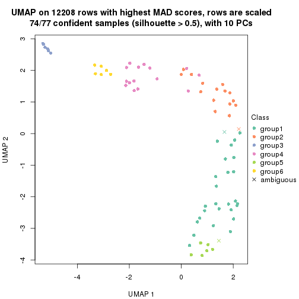
Following heatmap shows how subgroups are split when increasing k:
collect_classes(res)
If matrix rows can be associated to genes, consider to use functional_enrichment(res,
...) to perform function enrichment for the signature genes. See this vignette for more detailed explanations.
The object with results only for a single top-value method and a single partition method can be extracted as:
res = res_list["MAD", "mclust"]
# you can also extract it by
# res = res_list["MAD:mclust"]
A summary of res and all the functions that can be applied to it:
res
#> A 'ConsensusPartition' object with k = 2, 3, 4, 5, 6.
#> On a matrix with 12208 rows and 77 columns.
#> Top rows (1000, 2000, 3000, 4000, 5000) are extracted by 'MAD' method.
#> Subgroups are detected by 'mclust' method.
#> Performed in total 1250 partitions by row resampling.
#> Best k for subgroups seems to be 5.
#>
#> Following methods can be applied to this 'ConsensusPartition' object:
#> [1] "cola_report" "collect_classes" "collect_plots"
#> [4] "collect_stats" "colnames" "compare_signatures"
#> [7] "consensus_heatmap" "dimension_reduction" "functional_enrichment"
#> [10] "get_anno_col" "get_anno" "get_classes"
#> [13] "get_consensus" "get_matrix" "get_membership"
#> [16] "get_param" "get_signatures" "get_stats"
#> [19] "is_best_k" "is_stable_k" "membership_heatmap"
#> [22] "ncol" "nrow" "plot_ecdf"
#> [25] "rownames" "select_partition_number" "show"
#> [28] "suggest_best_k" "test_to_known_factors"
collect_plots() function collects all the plots made from res for all k (number of partitions)
into one single page to provide an easy and fast comparison between different k.
collect_plots(res)
The plots are:
k and the heatmap of
predicted classes for each k.k.k.k.All the plots in panels can be made by individual functions and they are plotted later in this section.
select_partition_number() produces several plots showing different
statistics for choosing “optimized” k. There are following statistics:
k;k, the area increased is defined as \(A_k - A_{k-1}\).The detailed explanations of these statistics can be found in the cola vignette.
Generally speaking, lower PAC score, higher mean silhouette score or higher
concordance corresponds to better partition. Rand index and Jaccard index
measure how similar the current partition is compared to partition with k-1.
If they are too similar, we won't accept k is better than k-1.
select_partition_number(res)
The numeric values for all these statistics can be obtained by get_stats().
get_stats(res)
#> k 1-PAC mean_silhouette concordance area_increased Rand Jaccard
#> 2 2 0.448 0.604 0.821 0.4796 0.513 0.513
#> 3 3 0.608 0.834 0.889 0.3338 0.733 0.537
#> 4 4 0.664 0.713 0.804 0.1277 0.799 0.532
#> 5 5 0.780 0.854 0.921 0.0797 0.847 0.528
#> 6 6 0.786 0.781 0.888 0.0437 0.961 0.818
suggest_best_k() suggests the best \(k\) based on these statistics. The rules are as follows:
suggest_best_k(res)
#> [1] 5
Following shows the table of the partitions (You need to click the show/hide
code output link to see it). The membership matrix (columns with name p*)
is inferred by
clue::cl_consensus()
function with the SE method. Basically the value in the membership matrix
represents the probability to belong to a certain group. The finall class
label for an item is determined with the group with highest probability it
belongs to.
In get_classes() function, the entropy is calculated from the membership
matrix and the silhouette score is calculated from the consensus matrix.
cbind(get_classes(res, k = 2), get_membership(res, k = 2))
#> class entropy silhouette p1 p2
#> SRR2044063 2 0.0376 0.695 0.004 0.996
#> SRR2044062 2 0.9944 0.460 0.456 0.544
#> SRR2044061 2 0.9944 0.460 0.456 0.544
#> SRR2044060 2 0.6801 0.612 0.180 0.820
#> SRR2044099 1 0.1843 0.766 0.972 0.028
#> SRR2044098 2 0.9970 0.451 0.468 0.532
#> SRR2044097 1 0.8081 0.420 0.752 0.248
#> SRR2044096 1 0.0000 0.786 1.000 0.000
#> SRR2044095 2 0.9970 0.451 0.468 0.532
#> SRR2044094 1 0.4022 0.719 0.920 0.080
#> SRR2044087 2 0.9970 0.451 0.468 0.532
#> SRR2044086 2 0.9970 0.451 0.468 0.532
#> SRR2044085 2 0.9970 0.451 0.468 0.532
#> SRR2044084 2 0.9970 0.451 0.468 0.532
#> SRR2044083 2 0.9970 0.451 0.468 0.532
#> SRR2044082 2 0.9970 0.451 0.468 0.532
#> SRR2044075 2 0.9970 0.451 0.468 0.532
#> SRR2044074 2 0.9970 0.451 0.468 0.532
#> SRR2044073 2 0.9970 0.451 0.468 0.532
#> SRR2044072 2 0.9970 0.451 0.468 0.532
#> SRR2044071 2 0.9970 0.451 0.468 0.532
#> SRR2044070 2 0.9970 0.451 0.468 0.532
#> SRR2044069 1 0.9970 0.289 0.532 0.468
#> SRR2044068 1 0.9970 0.289 0.532 0.468
#> SRR2044067 1 0.9970 0.289 0.532 0.468
#> SRR2044066 1 0.9970 0.289 0.532 0.468
#> SRR2044065 1 0.9970 0.289 0.532 0.468
#> SRR2044064 1 0.9970 0.289 0.532 0.468
#> SRR2044059 2 0.9954 0.457 0.460 0.540
#> SRR2044058 2 0.9944 0.460 0.456 0.544
#> SRR2044057 1 0.0000 0.786 1.000 0.000
#> SRR2044056 1 0.0000 0.786 1.000 0.000
#> SRR2044055 2 0.9970 0.451 0.468 0.532
#> SRR2044054 1 0.0000 0.786 1.000 0.000
#> SRR2044053 1 0.0000 0.786 1.000 0.000
#> SRR2044052 2 0.9970 0.451 0.468 0.532
#> SRR2044051 2 0.0000 0.697 0.000 1.000
#> SRR2044050 2 0.0000 0.697 0.000 1.000
#> SRR2044049 2 0.0000 0.697 0.000 1.000
#> SRR2044048 2 0.0000 0.697 0.000 1.000
#> SRR2044047 2 0.0000 0.697 0.000 1.000
#> SRR2044046 2 0.0000 0.697 0.000 1.000
#> SRR2044045 1 0.0000 0.786 1.000 0.000
#> SRR2044044 1 0.0000 0.786 1.000 0.000
#> SRR2044042 1 0.0000 0.786 1.000 0.000
#> SRR2044041 1 0.0000 0.786 1.000 0.000
#> SRR2044040 1 0.9087 0.224 0.676 0.324
#> SRR2044039 2 0.0000 0.697 0.000 1.000
#> SRR2044038 2 0.0000 0.697 0.000 1.000
#> SRR2044037 2 0.0000 0.697 0.000 1.000
#> SRR2044036 2 0.0000 0.697 0.000 1.000
#> SRR2044035 2 0.0000 0.697 0.000 1.000
#> SRR2044034 2 0.0000 0.697 0.000 1.000
#> SRR2044033 1 0.0000 0.786 1.000 0.000
#> SRR2044032 1 0.0000 0.786 1.000 0.000
#> SRR2044031 1 0.7376 0.536 0.792 0.208
#> SRR2044030 1 0.0000 0.786 1.000 0.000
#> SRR2044029 1 0.0000 0.786 1.000 0.000
#> SRR2044028 1 0.7528 0.519 0.784 0.216
#> SRR2044027 2 0.0000 0.697 0.000 1.000
#> SRR2044026 2 0.0000 0.697 0.000 1.000
#> SRR2044024 2 0.0000 0.697 0.000 1.000
#> SRR2044023 2 0.0000 0.697 0.000 1.000
#> SRR2044025 2 0.0000 0.697 0.000 1.000
#> SRR2044022 2 0.0000 0.697 0.000 1.000
#> SRR2044021 1 0.0000 0.786 1.000 0.000
#> SRR2044020 1 0.0000 0.786 1.000 0.000
#> SRR2044019 1 0.6887 0.578 0.816 0.184
#> SRR2044018 1 0.0000 0.786 1.000 0.000
#> SRR2044017 1 0.0000 0.786 1.000 0.000
#> SRR2044016 1 0.6623 0.598 0.828 0.172
#> SRR2044015 2 0.0000 0.697 0.000 1.000
#> SRR2044014 2 0.0000 0.697 0.000 1.000
#> SRR2044013 2 0.0000 0.697 0.000 1.000
#> SRR2044011 2 0.0000 0.697 0.000 1.000
#> SRR2044010 2 0.0000 0.697 0.000 1.000
#> SRR2044012 2 0.0000 0.697 0.000 1.000
cbind(get_classes(res, k = 3), get_membership(res, k = 3))
#> class entropy silhouette p1 p2 p3
#> SRR2044063 2 0.0424 0.853 0.000 0.992 0.008
#> SRR2044062 2 0.1031 0.850 0.024 0.976 0.000
#> SRR2044061 2 0.1031 0.850 0.024 0.976 0.000
#> SRR2044060 2 0.0475 0.853 0.004 0.992 0.004
#> SRR2044099 1 0.0983 0.884 0.980 0.016 0.004
#> SRR2044098 1 0.4931 0.778 0.768 0.232 0.000
#> SRR2044097 1 0.3267 0.869 0.884 0.116 0.000
#> SRR2044096 1 0.0983 0.884 0.980 0.016 0.004
#> SRR2044095 1 0.5016 0.770 0.760 0.240 0.000
#> SRR2044094 1 0.3116 0.871 0.892 0.108 0.000
#> SRR2044087 2 0.2959 0.803 0.100 0.900 0.000
#> SRR2044086 2 0.1964 0.830 0.056 0.944 0.000
#> SRR2044085 1 0.5650 0.683 0.688 0.312 0.000
#> SRR2044084 2 0.2959 0.803 0.100 0.900 0.000
#> SRR2044083 2 0.1964 0.830 0.056 0.944 0.000
#> SRR2044082 1 0.5733 0.663 0.676 0.324 0.000
#> SRR2044075 2 0.1031 0.850 0.024 0.976 0.000
#> SRR2044074 2 0.1163 0.848 0.028 0.972 0.000
#> SRR2044073 2 0.1163 0.848 0.028 0.972 0.000
#> SRR2044072 2 0.1031 0.850 0.024 0.976 0.000
#> SRR2044071 2 0.1163 0.848 0.028 0.972 0.000
#> SRR2044070 2 0.1163 0.848 0.028 0.972 0.000
#> SRR2044069 3 0.3116 0.901 0.108 0.000 0.892
#> SRR2044068 3 0.3116 0.901 0.108 0.000 0.892
#> SRR2044067 3 0.3116 0.901 0.108 0.000 0.892
#> SRR2044066 3 0.3116 0.901 0.108 0.000 0.892
#> SRR2044065 3 0.3116 0.901 0.108 0.000 0.892
#> SRR2044064 3 0.3116 0.901 0.108 0.000 0.892
#> SRR2044059 2 0.1031 0.850 0.024 0.976 0.000
#> SRR2044058 2 0.1031 0.850 0.024 0.976 0.000
#> SRR2044057 1 0.5465 0.548 0.712 0.000 0.288
#> SRR2044056 1 0.1163 0.873 0.972 0.000 0.028
#> SRR2044055 1 0.3851 0.857 0.860 0.136 0.004
#> SRR2044054 1 0.5465 0.548 0.712 0.000 0.288
#> SRR2044053 1 0.1163 0.873 0.972 0.000 0.028
#> SRR2044052 1 0.3851 0.857 0.860 0.136 0.004
#> SRR2044051 2 0.4178 0.814 0.000 0.828 0.172
#> SRR2044050 2 0.2165 0.851 0.000 0.936 0.064
#> SRR2044049 2 0.2165 0.851 0.000 0.936 0.064
#> SRR2044048 2 0.2261 0.850 0.000 0.932 0.068
#> SRR2044047 2 0.2165 0.851 0.000 0.936 0.064
#> SRR2044046 2 0.2165 0.851 0.000 0.936 0.064
#> SRR2044045 1 0.1411 0.868 0.964 0.000 0.036
#> SRR2044044 1 0.1129 0.877 0.976 0.004 0.020
#> SRR2044042 1 0.1411 0.868 0.964 0.000 0.036
#> SRR2044041 1 0.1129 0.877 0.976 0.004 0.020
#> SRR2044040 1 0.3619 0.858 0.864 0.136 0.000
#> SRR2044039 2 0.5722 0.730 0.004 0.704 0.292
#> SRR2044038 2 0.5578 0.780 0.012 0.748 0.240
#> SRR2044037 2 0.5578 0.780 0.012 0.748 0.240
#> SRR2044036 2 0.5623 0.744 0.004 0.716 0.280
#> SRR2044035 2 0.5578 0.780 0.012 0.748 0.240
#> SRR2044034 2 0.5578 0.780 0.012 0.748 0.240
#> SRR2044033 1 0.0892 0.876 0.980 0.000 0.020
#> SRR2044032 1 0.0829 0.880 0.984 0.004 0.012
#> SRR2044031 1 0.3412 0.865 0.876 0.124 0.000
#> SRR2044030 1 0.0892 0.876 0.980 0.000 0.020
#> SRR2044029 1 0.0829 0.880 0.984 0.004 0.012
#> SRR2044028 1 0.3340 0.867 0.880 0.120 0.000
#> SRR2044027 2 0.5835 0.669 0.000 0.660 0.340
#> SRR2044026 2 0.5578 0.780 0.012 0.748 0.240
#> SRR2044024 2 0.5835 0.669 0.000 0.660 0.340
#> SRR2044023 2 0.5578 0.780 0.012 0.748 0.240
#> SRR2044025 2 0.5578 0.780 0.012 0.748 0.240
#> SRR2044022 2 0.5578 0.780 0.012 0.748 0.240
#> SRR2044021 1 0.0829 0.884 0.984 0.012 0.004
#> SRR2044020 1 0.1289 0.884 0.968 0.032 0.000
#> SRR2044019 1 0.2878 0.873 0.904 0.096 0.000
#> SRR2044018 1 0.1015 0.883 0.980 0.012 0.008
#> SRR2044017 1 0.1289 0.884 0.968 0.032 0.000
#> SRR2044016 1 0.3340 0.867 0.880 0.120 0.000
#> SRR2044015 3 0.1411 0.898 0.000 0.036 0.964
#> SRR2044014 3 0.1860 0.889 0.000 0.052 0.948
#> SRR2044013 3 0.1753 0.893 0.000 0.048 0.952
#> SRR2044011 3 0.1753 0.893 0.000 0.048 0.952
#> SRR2044010 3 0.1753 0.893 0.000 0.048 0.952
#> SRR2044012 3 0.1411 0.898 0.000 0.036 0.964
cbind(get_classes(res, k = 4), get_membership(res, k = 4))
#> class entropy silhouette p1 p2 p3 p4
#> SRR2044063 2 0.4679 0.641 0.000 0.648 0.000 0.352
#> SRR2044062 2 0.4134 0.737 0.000 0.740 0.000 0.260
#> SRR2044061 2 0.4134 0.737 0.000 0.740 0.000 0.260
#> SRR2044060 2 0.4643 0.652 0.000 0.656 0.000 0.344
#> SRR2044099 1 0.6547 0.670 0.568 0.340 0.092 0.000
#> SRR2044098 2 0.1807 0.690 0.008 0.940 0.052 0.000
#> SRR2044097 1 0.6718 0.648 0.524 0.380 0.096 0.000
#> SRR2044096 1 0.6561 0.669 0.564 0.344 0.092 0.000
#> SRR2044095 2 0.1807 0.690 0.008 0.940 0.052 0.000
#> SRR2044094 1 0.6718 0.648 0.524 0.380 0.096 0.000
#> SRR2044087 2 0.2334 0.665 0.004 0.908 0.088 0.000
#> SRR2044086 2 0.1807 0.703 0.000 0.940 0.052 0.008
#> SRR2044085 2 0.2466 0.656 0.004 0.900 0.096 0.000
#> SRR2044084 2 0.2334 0.665 0.004 0.908 0.088 0.000
#> SRR2044083 2 0.1474 0.697 0.000 0.948 0.052 0.000
#> SRR2044082 2 0.2466 0.656 0.004 0.900 0.096 0.000
#> SRR2044075 2 0.4040 0.742 0.000 0.752 0.000 0.248
#> SRR2044074 2 0.1474 0.749 0.000 0.948 0.000 0.052
#> SRR2044073 2 0.1637 0.751 0.000 0.940 0.000 0.060
#> SRR2044072 2 0.4040 0.742 0.000 0.752 0.000 0.248
#> SRR2044071 2 0.1474 0.749 0.000 0.948 0.000 0.052
#> SRR2044070 2 0.1118 0.742 0.000 0.964 0.000 0.036
#> SRR2044069 3 0.2281 1.000 0.000 0.000 0.904 0.096
#> SRR2044068 3 0.2281 1.000 0.000 0.000 0.904 0.096
#> SRR2044067 3 0.2281 1.000 0.000 0.000 0.904 0.096
#> SRR2044066 3 0.2281 1.000 0.000 0.000 0.904 0.096
#> SRR2044065 3 0.2281 1.000 0.000 0.000 0.904 0.096
#> SRR2044064 3 0.2281 1.000 0.000 0.000 0.904 0.096
#> SRR2044059 2 0.4134 0.737 0.000 0.740 0.000 0.260
#> SRR2044058 2 0.4134 0.737 0.000 0.740 0.000 0.260
#> SRR2044057 1 0.0000 0.699 1.000 0.000 0.000 0.000
#> SRR2044056 1 0.0000 0.699 1.000 0.000 0.000 0.000
#> SRR2044055 1 0.6718 0.648 0.524 0.380 0.096 0.000
#> SRR2044054 1 0.0000 0.699 1.000 0.000 0.000 0.000
#> SRR2044053 1 0.0000 0.699 1.000 0.000 0.000 0.000
#> SRR2044052 1 0.6770 0.611 0.496 0.408 0.096 0.000
#> SRR2044051 4 0.2469 0.725 0.000 0.108 0.000 0.892
#> SRR2044050 2 0.4790 0.601 0.000 0.620 0.000 0.380
#> SRR2044049 2 0.4790 0.601 0.000 0.620 0.000 0.380
#> SRR2044048 4 0.4730 0.101 0.000 0.364 0.000 0.636
#> SRR2044047 2 0.4790 0.601 0.000 0.620 0.000 0.380
#> SRR2044046 2 0.4790 0.601 0.000 0.620 0.000 0.380
#> SRR2044045 1 0.0000 0.699 1.000 0.000 0.000 0.000
#> SRR2044044 1 0.0707 0.687 0.980 0.000 0.000 0.020
#> SRR2044042 1 0.0000 0.699 1.000 0.000 0.000 0.000
#> SRR2044041 1 0.0707 0.687 0.980 0.000 0.000 0.020
#> SRR2044040 1 0.6718 0.648 0.524 0.380 0.096 0.000
#> SRR2044039 4 0.0188 0.832 0.000 0.000 0.004 0.996
#> SRR2044038 4 0.0188 0.833 0.000 0.004 0.000 0.996
#> SRR2044037 4 0.0188 0.833 0.000 0.004 0.000 0.996
#> SRR2044036 4 0.0188 0.832 0.000 0.000 0.004 0.996
#> SRR2044035 4 0.0188 0.833 0.000 0.004 0.000 0.996
#> SRR2044034 4 0.0188 0.833 0.000 0.004 0.000 0.996
#> SRR2044033 1 0.0000 0.699 1.000 0.000 0.000 0.000
#> SRR2044032 1 0.1059 0.693 0.972 0.012 0.000 0.016
#> SRR2044031 1 0.6718 0.648 0.524 0.380 0.096 0.000
#> SRR2044030 1 0.0000 0.699 1.000 0.000 0.000 0.000
#> SRR2044029 1 0.1059 0.693 0.972 0.012 0.000 0.016
#> SRR2044028 1 0.6718 0.648 0.524 0.380 0.096 0.000
#> SRR2044027 4 0.1389 0.812 0.000 0.000 0.048 0.952
#> SRR2044026 4 0.0188 0.833 0.000 0.004 0.000 0.996
#> SRR2044024 4 0.1474 0.810 0.000 0.000 0.052 0.948
#> SRR2044023 4 0.0188 0.833 0.000 0.004 0.000 0.996
#> SRR2044025 4 0.0188 0.833 0.000 0.004 0.000 0.996
#> SRR2044022 4 0.0188 0.833 0.000 0.004 0.000 0.996
#> SRR2044021 1 0.6299 0.680 0.600 0.320 0.080 0.000
#> SRR2044020 1 0.3975 0.498 0.760 0.240 0.000 0.000
#> SRR2044019 1 0.6718 0.648 0.524 0.380 0.096 0.000
#> SRR2044018 1 0.5366 0.696 0.684 0.276 0.040 0.000
#> SRR2044017 1 0.3837 0.524 0.776 0.224 0.000 0.000
#> SRR2044016 1 0.6718 0.648 0.524 0.380 0.096 0.000
#> SRR2044015 4 0.4134 0.619 0.000 0.000 0.260 0.740
#> SRR2044014 4 0.4134 0.619 0.000 0.000 0.260 0.740
#> SRR2044013 4 0.4134 0.619 0.000 0.000 0.260 0.740
#> SRR2044011 4 0.4134 0.619 0.000 0.000 0.260 0.740
#> SRR2044010 4 0.4134 0.619 0.000 0.000 0.260 0.740
#> SRR2044012 4 0.4134 0.619 0.000 0.000 0.260 0.740
cbind(get_classes(res, k = 5), get_membership(res, k = 5))
#> class entropy silhouette p1 p2 p3 p4 p5
#> SRR2044063 2 0.0162 0.859 0.000 0.996 0.000 0.004 0.000
#> SRR2044062 2 0.0000 0.859 0.000 1.000 0.000 0.000 0.000
#> SRR2044061 2 0.0000 0.859 0.000 1.000 0.000 0.000 0.000
#> SRR2044060 2 0.0162 0.859 0.000 0.996 0.000 0.004 0.000
#> SRR2044099 1 0.1544 0.875 0.932 0.000 0.000 0.000 0.068
#> SRR2044098 1 0.2561 0.855 0.856 0.144 0.000 0.000 0.000
#> SRR2044097 1 0.0162 0.896 0.996 0.000 0.000 0.000 0.004
#> SRR2044096 1 0.1478 0.877 0.936 0.000 0.000 0.000 0.064
#> SRR2044095 1 0.2561 0.855 0.856 0.144 0.000 0.000 0.000
#> SRR2044094 1 0.0162 0.896 0.996 0.000 0.000 0.000 0.004
#> SRR2044087 1 0.2424 0.861 0.868 0.132 0.000 0.000 0.000
#> SRR2044086 1 0.3636 0.687 0.728 0.272 0.000 0.000 0.000
#> SRR2044085 1 0.2561 0.855 0.856 0.144 0.000 0.000 0.000
#> SRR2044084 1 0.2424 0.861 0.868 0.132 0.000 0.000 0.000
#> SRR2044083 1 0.3274 0.769 0.780 0.220 0.000 0.000 0.000
#> SRR2044082 1 0.2561 0.855 0.856 0.144 0.000 0.000 0.000
#> SRR2044075 2 0.3305 0.712 0.224 0.776 0.000 0.000 0.000
#> SRR2044074 2 0.1410 0.842 0.060 0.940 0.000 0.000 0.000
#> SRR2044073 2 0.3242 0.722 0.216 0.784 0.000 0.000 0.000
#> SRR2044072 2 0.3305 0.712 0.224 0.776 0.000 0.000 0.000
#> SRR2044071 2 0.1410 0.842 0.060 0.940 0.000 0.000 0.000
#> SRR2044070 2 0.3395 0.693 0.236 0.764 0.000 0.000 0.000
#> SRR2044069 3 0.0000 1.000 0.000 0.000 1.000 0.000 0.000
#> SRR2044068 3 0.0000 1.000 0.000 0.000 1.000 0.000 0.000
#> SRR2044067 3 0.0000 1.000 0.000 0.000 1.000 0.000 0.000
#> SRR2044066 3 0.0000 1.000 0.000 0.000 1.000 0.000 0.000
#> SRR2044065 3 0.0000 1.000 0.000 0.000 1.000 0.000 0.000
#> SRR2044064 3 0.0000 1.000 0.000 0.000 1.000 0.000 0.000
#> SRR2044059 2 0.0000 0.859 0.000 1.000 0.000 0.000 0.000
#> SRR2044058 2 0.0000 0.859 0.000 1.000 0.000 0.000 0.000
#> SRR2044057 5 0.0000 0.910 0.000 0.000 0.000 0.000 1.000
#> SRR2044056 5 0.0000 0.910 0.000 0.000 0.000 0.000 1.000
#> SRR2044055 1 0.0162 0.896 0.996 0.000 0.000 0.000 0.004
#> SRR2044054 5 0.0000 0.910 0.000 0.000 0.000 0.000 1.000
#> SRR2044053 5 0.0000 0.910 0.000 0.000 0.000 0.000 1.000
#> SRR2044052 1 0.0162 0.896 0.996 0.000 0.000 0.000 0.004
#> SRR2044051 4 0.4256 0.316 0.000 0.436 0.000 0.564 0.000
#> SRR2044050 2 0.1608 0.830 0.000 0.928 0.000 0.072 0.000
#> SRR2044049 2 0.1608 0.830 0.000 0.928 0.000 0.072 0.000
#> SRR2044048 2 0.4182 0.227 0.000 0.600 0.000 0.400 0.000
#> SRR2044047 2 0.1608 0.830 0.000 0.928 0.000 0.072 0.000
#> SRR2044046 2 0.1608 0.830 0.000 0.928 0.000 0.072 0.000
#> SRR2044045 5 0.0000 0.910 0.000 0.000 0.000 0.000 1.000
#> SRR2044044 5 0.1965 0.890 0.096 0.000 0.000 0.000 0.904
#> SRR2044042 5 0.0000 0.910 0.000 0.000 0.000 0.000 1.000
#> SRR2044041 5 0.1965 0.890 0.096 0.000 0.000 0.000 0.904
#> SRR2044040 1 0.0162 0.896 0.996 0.000 0.000 0.000 0.004
#> SRR2044039 4 0.0162 0.906 0.000 0.004 0.000 0.996 0.000
#> SRR2044038 4 0.2280 0.896 0.000 0.120 0.000 0.880 0.000
#> SRR2044037 4 0.2280 0.896 0.000 0.120 0.000 0.880 0.000
#> SRR2044036 4 0.0162 0.906 0.000 0.004 0.000 0.996 0.000
#> SRR2044035 4 0.2280 0.896 0.000 0.120 0.000 0.880 0.000
#> SRR2044034 4 0.2280 0.896 0.000 0.120 0.000 0.880 0.000
#> SRR2044033 5 0.0290 0.910 0.008 0.000 0.000 0.000 0.992
#> SRR2044032 5 0.1965 0.890 0.096 0.000 0.000 0.000 0.904
#> SRR2044031 1 0.0162 0.896 0.996 0.000 0.000 0.000 0.004
#> SRR2044030 5 0.0290 0.910 0.008 0.000 0.000 0.000 0.992
#> SRR2044029 5 0.1965 0.890 0.096 0.000 0.000 0.000 0.904
#> SRR2044028 1 0.0162 0.896 0.996 0.000 0.000 0.000 0.004
#> SRR2044027 4 0.0324 0.906 0.004 0.004 0.000 0.992 0.000
#> SRR2044026 4 0.2280 0.896 0.000 0.120 0.000 0.880 0.000
#> SRR2044024 4 0.0324 0.906 0.004 0.004 0.000 0.992 0.000
#> SRR2044023 4 0.2280 0.896 0.000 0.120 0.000 0.880 0.000
#> SRR2044025 4 0.2230 0.897 0.000 0.116 0.000 0.884 0.000
#> SRR2044022 4 0.2280 0.896 0.000 0.120 0.000 0.880 0.000
#> SRR2044021 1 0.2561 0.804 0.856 0.000 0.000 0.000 0.144
#> SRR2044020 5 0.4382 0.652 0.288 0.024 0.000 0.000 0.688
#> SRR2044019 1 0.0162 0.896 0.996 0.000 0.000 0.000 0.004
#> SRR2044018 1 0.3561 0.627 0.740 0.000 0.000 0.000 0.260
#> SRR2044017 5 0.4382 0.652 0.288 0.024 0.000 0.000 0.688
#> SRR2044016 1 0.0162 0.896 0.996 0.000 0.000 0.000 0.004
#> SRR2044015 4 0.0324 0.904 0.004 0.000 0.004 0.992 0.000
#> SRR2044014 4 0.0324 0.904 0.004 0.000 0.004 0.992 0.000
#> SRR2044013 4 0.0324 0.904 0.004 0.000 0.004 0.992 0.000
#> SRR2044011 4 0.0324 0.904 0.004 0.000 0.004 0.992 0.000
#> SRR2044010 4 0.0324 0.904 0.004 0.000 0.004 0.992 0.000
#> SRR2044012 4 0.0324 0.904 0.004 0.000 0.004 0.992 0.000
cbind(get_classes(res, k = 6), get_membership(res, k = 6))
#> class entropy silhouette p1 p2 p3 p4 p5 p6
#> SRR2044063 2 0.0458 0.801 0.000 0.984 0 0.016 0.000 0.000
#> SRR2044062 2 0.0146 0.802 0.000 0.996 0 0.004 0.000 0.000
#> SRR2044061 2 0.0146 0.802 0.000 0.996 0 0.004 0.000 0.000
#> SRR2044060 2 0.0458 0.801 0.000 0.984 0 0.016 0.000 0.000
#> SRR2044099 1 0.1003 0.813 0.964 0.000 0 0.004 0.028 0.004
#> SRR2044098 1 0.3468 0.684 0.712 0.284 0 0.004 0.000 0.000
#> SRR2044097 1 0.0603 0.828 0.980 0.000 0 0.016 0.000 0.004
#> SRR2044096 1 0.1003 0.813 0.964 0.000 0 0.004 0.028 0.004
#> SRR2044095 1 0.3489 0.679 0.708 0.288 0 0.004 0.000 0.000
#> SRR2044094 1 0.0603 0.828 0.980 0.000 0 0.016 0.000 0.004
#> SRR2044087 1 0.3560 0.706 0.732 0.256 0 0.008 0.000 0.004
#> SRR2044086 1 0.3954 0.545 0.620 0.372 0 0.004 0.000 0.004
#> SRR2044085 1 0.3468 0.683 0.712 0.284 0 0.004 0.000 0.000
#> SRR2044084 1 0.3560 0.706 0.732 0.256 0 0.008 0.000 0.004
#> SRR2044083 1 0.3930 0.561 0.628 0.364 0 0.004 0.000 0.004
#> SRR2044082 1 0.3468 0.683 0.712 0.284 0 0.004 0.000 0.000
#> SRR2044075 2 0.3273 0.660 0.212 0.776 0 0.008 0.000 0.004
#> SRR2044074 2 0.1958 0.769 0.100 0.896 0 0.000 0.000 0.004
#> SRR2044073 2 0.3134 0.668 0.208 0.784 0 0.004 0.000 0.004
#> SRR2044072 2 0.3273 0.660 0.212 0.776 0 0.008 0.000 0.004
#> SRR2044071 2 0.2053 0.764 0.108 0.888 0 0.000 0.000 0.004
#> SRR2044070 2 0.3134 0.668 0.208 0.784 0 0.004 0.000 0.004
#> SRR2044069 3 0.0000 1.000 0.000 0.000 1 0.000 0.000 0.000
#> SRR2044068 3 0.0000 1.000 0.000 0.000 1 0.000 0.000 0.000
#> SRR2044067 3 0.0000 1.000 0.000 0.000 1 0.000 0.000 0.000
#> SRR2044066 3 0.0000 1.000 0.000 0.000 1 0.000 0.000 0.000
#> SRR2044065 3 0.0000 1.000 0.000 0.000 1 0.000 0.000 0.000
#> SRR2044064 3 0.0000 1.000 0.000 0.000 1 0.000 0.000 0.000
#> SRR2044059 2 0.0146 0.802 0.000 0.996 0 0.004 0.000 0.000
#> SRR2044058 2 0.0146 0.802 0.000 0.996 0 0.004 0.000 0.000
#> SRR2044057 5 0.0000 0.849 0.000 0.000 0 0.000 1.000 0.000
#> SRR2044056 5 0.0000 0.849 0.000 0.000 0 0.000 1.000 0.000
#> SRR2044055 1 0.0603 0.828 0.980 0.000 0 0.016 0.000 0.004
#> SRR2044054 5 0.0000 0.849 0.000 0.000 0 0.000 1.000 0.000
#> SRR2044053 5 0.0000 0.849 0.000 0.000 0 0.000 1.000 0.000
#> SRR2044052 1 0.0603 0.828 0.980 0.000 0 0.016 0.000 0.004
#> SRR2044051 4 0.2562 0.770 0.000 0.172 0 0.828 0.000 0.000
#> SRR2044050 2 0.3309 0.536 0.000 0.720 0 0.280 0.000 0.000
#> SRR2044049 2 0.3309 0.536 0.000 0.720 0 0.280 0.000 0.000
#> SRR2044048 4 0.2969 0.690 0.000 0.224 0 0.776 0.000 0.000
#> SRR2044047 2 0.3309 0.536 0.000 0.720 0 0.280 0.000 0.000
#> SRR2044046 2 0.3309 0.536 0.000 0.720 0 0.280 0.000 0.000
#> SRR2044045 5 0.0000 0.849 0.000 0.000 0 0.000 1.000 0.000
#> SRR2044044 5 0.2491 0.809 0.164 0.000 0 0.000 0.836 0.000
#> SRR2044042 5 0.0000 0.849 0.000 0.000 0 0.000 1.000 0.000
#> SRR2044041 5 0.2491 0.809 0.164 0.000 0 0.000 0.836 0.000
#> SRR2044040 1 0.0603 0.828 0.980 0.000 0 0.016 0.000 0.004
#> SRR2044039 6 0.3810 0.343 0.000 0.000 0 0.428 0.000 0.572
#> SRR2044038 4 0.0713 0.938 0.000 0.000 0 0.972 0.000 0.028
#> SRR2044037 4 0.0713 0.938 0.000 0.000 0 0.972 0.000 0.028
#> SRR2044036 6 0.3817 0.333 0.000 0.000 0 0.432 0.000 0.568
#> SRR2044035 4 0.0713 0.938 0.000 0.000 0 0.972 0.000 0.028
#> SRR2044034 4 0.0713 0.938 0.000 0.000 0 0.972 0.000 0.028
#> SRR2044033 5 0.0260 0.849 0.008 0.000 0 0.000 0.992 0.000
#> SRR2044032 5 0.2491 0.809 0.164 0.000 0 0.000 0.836 0.000
#> SRR2044031 1 0.0603 0.828 0.980 0.000 0 0.016 0.000 0.004
#> SRR2044030 5 0.0260 0.849 0.008 0.000 0 0.000 0.992 0.000
#> SRR2044029 5 0.2491 0.809 0.164 0.000 0 0.000 0.836 0.000
#> SRR2044028 1 0.0603 0.828 0.980 0.000 0 0.016 0.000 0.004
#> SRR2044027 6 0.1814 0.836 0.000 0.000 0 0.100 0.000 0.900
#> SRR2044026 4 0.0713 0.938 0.000 0.000 0 0.972 0.000 0.028
#> SRR2044024 6 0.1814 0.836 0.000 0.000 0 0.100 0.000 0.900
#> SRR2044023 4 0.0713 0.938 0.000 0.000 0 0.972 0.000 0.028
#> SRR2044025 4 0.0713 0.938 0.000 0.000 0 0.972 0.000 0.028
#> SRR2044022 4 0.0713 0.938 0.000 0.000 0 0.972 0.000 0.028
#> SRR2044021 1 0.1674 0.780 0.924 0.000 0 0.004 0.068 0.004
#> SRR2044020 5 0.4964 0.323 0.428 0.056 0 0.004 0.512 0.000
#> SRR2044019 1 0.0603 0.828 0.980 0.000 0 0.016 0.000 0.004
#> SRR2044018 1 0.2584 0.685 0.848 0.000 0 0.004 0.144 0.004
#> SRR2044017 5 0.4968 0.311 0.432 0.056 0 0.004 0.508 0.000
#> SRR2044016 1 0.0603 0.828 0.980 0.000 0 0.016 0.000 0.004
#> SRR2044015 6 0.0260 0.868 0.000 0.000 0 0.008 0.000 0.992
#> SRR2044014 6 0.0260 0.868 0.000 0.000 0 0.008 0.000 0.992
#> SRR2044013 6 0.0260 0.868 0.000 0.000 0 0.008 0.000 0.992
#> SRR2044011 6 0.0260 0.868 0.000 0.000 0 0.008 0.000 0.992
#> SRR2044010 6 0.0260 0.868 0.000 0.000 0 0.008 0.000 0.992
#> SRR2044012 6 0.0260 0.868 0.000 0.000 0 0.008 0.000 0.992
Heatmaps for the consensus matrix. It visualizes the probability of two samples to be in a same group.
consensus_heatmap(res, k = 2)
consensus_heatmap(res, k = 3)
consensus_heatmap(res, k = 4)
consensus_heatmap(res, k = 5)
consensus_heatmap(res, k = 6)
Heatmaps for the membership of samples in all partitions to see how consistent they are:
membership_heatmap(res, k = 2)
membership_heatmap(res, k = 3)

membership_heatmap(res, k = 4)
membership_heatmap(res, k = 5)
membership_heatmap(res, k = 6)
As soon as we have had the classes for columns, we can look for signatures which are significantly different between classes which can be candidate marks for certain classes. Following are the heatmaps for signatures.
Signature heatmaps where rows are scaled:
get_signatures(res, k = 2)
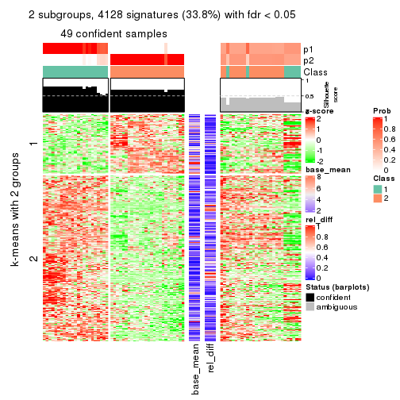
get_signatures(res, k = 3)
get_signatures(res, k = 4)
get_signatures(res, k = 5)
get_signatures(res, k = 6)
Signature heatmaps where rows are not scaled:
get_signatures(res, k = 2, scale_rows = FALSE)
get_signatures(res, k = 3, scale_rows = FALSE)
get_signatures(res, k = 4, scale_rows = FALSE)
get_signatures(res, k = 5, scale_rows = FALSE)
get_signatures(res, k = 6, scale_rows = FALSE)
Compare the overlap of signatures from different k:
compare_signatures(res)
get_signature() returns a data frame invisibly. TO get the list of signatures, the function
call should be assigned to a variable explicitly. In following code, if plot argument is set
to FALSE, no heatmap is plotted while only the differential analysis is performed.
# code only for demonstration
tb = get_signature(res, k = ..., plot = FALSE)
An example of the output of tb is:
#> which_row fdr mean_1 mean_2 scaled_mean_1 scaled_mean_2 km
#> 1 38 0.042760348 8.373488 9.131774 -0.5533452 0.5164555 1
#> 2 40 0.018707592 7.106213 8.469186 -0.6173731 0.5762149 1
#> 3 55 0.019134737 10.221463 11.207825 -0.6159697 0.5749050 1
#> 4 59 0.006059896 5.921854 7.869574 -0.6899429 0.6439467 1
#> 5 60 0.018055526 8.928898 10.211722 -0.6204761 0.5791110 1
#> 6 98 0.009384629 15.714769 14.887706 0.6635654 -0.6193277 2
...
The columns in tb are:
which_row: row indices corresponding to the input matrix.fdr: FDR for the differential test. mean_x: The mean value in group x.scaled_mean_x: The mean value in group x after rows are scaled.km: Row groups if k-means clustering is applied to rows.UMAP plot which shows how samples are separated.
dimension_reduction(res, k = 2, method = "UMAP")
dimension_reduction(res, k = 3, method = "UMAP")
dimension_reduction(res, k = 4, method = "UMAP")
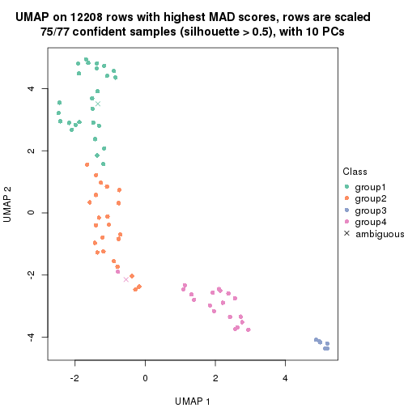
dimension_reduction(res, k = 5, method = "UMAP")
dimension_reduction(res, k = 6, method = "UMAP")
Following heatmap shows how subgroups are split when increasing k:
collect_classes(res)
If matrix rows can be associated to genes, consider to use functional_enrichment(res,
...) to perform function enrichment for the signature genes. See this vignette for more detailed explanations.
The object with results only for a single top-value method and a single partition method can be extracted as:
res = res_list["MAD", "NMF"]
# you can also extract it by
# res = res_list["MAD:NMF"]
A summary of res and all the functions that can be applied to it:
res
#> A 'ConsensusPartition' object with k = 2, 3, 4, 5, 6.
#> On a matrix with 12208 rows and 77 columns.
#> Top rows (1000, 2000, 3000, 4000, 5000) are extracted by 'MAD' method.
#> Subgroups are detected by 'NMF' method.
#> Performed in total 1250 partitions by row resampling.
#> Best k for subgroups seems to be 3.
#>
#> Following methods can be applied to this 'ConsensusPartition' object:
#> [1] "cola_report" "collect_classes" "collect_plots"
#> [4] "collect_stats" "colnames" "compare_signatures"
#> [7] "consensus_heatmap" "dimension_reduction" "functional_enrichment"
#> [10] "get_anno_col" "get_anno" "get_classes"
#> [13] "get_consensus" "get_matrix" "get_membership"
#> [16] "get_param" "get_signatures" "get_stats"
#> [19] "is_best_k" "is_stable_k" "membership_heatmap"
#> [22] "ncol" "nrow" "plot_ecdf"
#> [25] "rownames" "select_partition_number" "show"
#> [28] "suggest_best_k" "test_to_known_factors"
collect_plots() function collects all the plots made from res for all k (number of partitions)
into one single page to provide an easy and fast comparison between different k.
collect_plots(res)
The plots are:
k and the heatmap of
predicted classes for each k.k.k.k.All the plots in panels can be made by individual functions and they are plotted later in this section.
select_partition_number() produces several plots showing different
statistics for choosing “optimized” k. There are following statistics:
k;k, the area increased is defined as \(A_k - A_{k-1}\).The detailed explanations of these statistics can be found in the cola vignette.
Generally speaking, lower PAC score, higher mean silhouette score or higher
concordance corresponds to better partition. Rand index and Jaccard index
measure how similar the current partition is compared to partition with k-1.
If they are too similar, we won't accept k is better than k-1.
select_partition_number(res)
The numeric values for all these statistics can be obtained by get_stats().
get_stats(res)
#> k 1-PAC mean_silhouette concordance area_increased Rand Jaccard
#> 2 2 0.946 0.950 0.979 0.3962 0.610 0.610
#> 3 3 0.978 0.962 0.982 0.6148 0.663 0.486
#> 4 4 0.740 0.791 0.883 0.1302 0.784 0.491
#> 5 5 0.836 0.875 0.919 0.0814 0.829 0.476
#> 6 6 0.889 0.816 0.917 0.0311 0.952 0.790
suggest_best_k() suggests the best \(k\) based on these statistics. The rules are as follows:
suggest_best_k(res)
#> [1] 3
#> attr(,"optional")
#> [1] 2
There is also optional best \(k\) = 2 that is worth to check.
Following shows the table of the partitions (You need to click the show/hide
code output link to see it). The membership matrix (columns with name p*)
is inferred by
clue::cl_consensus()
function with the SE method. Basically the value in the membership matrix
represents the probability to belong to a certain group. The finall class
label for an item is determined with the group with highest probability it
belongs to.
In get_classes() function, the entropy is calculated from the membership
matrix and the silhouette score is calculated from the consensus matrix.
cbind(get_classes(res, k = 2), get_membership(res, k = 2))
#> class entropy silhouette p1 p2
#> SRR2044063 1 0.0000 0.979 1.000 0.000
#> SRR2044062 1 0.0000 0.979 1.000 0.000
#> SRR2044061 1 0.0000 0.979 1.000 0.000
#> SRR2044060 1 0.0000 0.979 1.000 0.000
#> SRR2044099 1 0.0000 0.979 1.000 0.000
#> SRR2044098 1 0.0000 0.979 1.000 0.000
#> SRR2044097 1 0.0000 0.979 1.000 0.000
#> SRR2044096 1 0.0000 0.979 1.000 0.000
#> SRR2044095 1 0.0000 0.979 1.000 0.000
#> SRR2044094 1 0.0000 0.979 1.000 0.000
#> SRR2044087 1 0.0000 0.979 1.000 0.000
#> SRR2044086 1 0.0000 0.979 1.000 0.000
#> SRR2044085 1 0.0000 0.979 1.000 0.000
#> SRR2044084 1 0.0000 0.979 1.000 0.000
#> SRR2044083 1 0.0000 0.979 1.000 0.000
#> SRR2044082 1 0.0000 0.979 1.000 0.000
#> SRR2044075 1 0.0000 0.979 1.000 0.000
#> SRR2044074 1 0.0000 0.979 1.000 0.000
#> SRR2044073 1 0.0000 0.979 1.000 0.000
#> SRR2044072 1 0.0000 0.979 1.000 0.000
#> SRR2044071 1 0.0000 0.979 1.000 0.000
#> SRR2044070 1 0.0000 0.979 1.000 0.000
#> SRR2044069 2 0.0000 0.972 0.000 1.000
#> SRR2044068 2 0.0000 0.972 0.000 1.000
#> SRR2044067 2 0.0000 0.972 0.000 1.000
#> SRR2044066 2 0.0000 0.972 0.000 1.000
#> SRR2044065 2 0.0000 0.972 0.000 1.000
#> SRR2044064 2 0.0000 0.972 0.000 1.000
#> SRR2044059 1 0.0000 0.979 1.000 0.000
#> SRR2044058 1 0.0000 0.979 1.000 0.000
#> SRR2044057 1 0.0000 0.979 1.000 0.000
#> SRR2044056 1 0.0000 0.979 1.000 0.000
#> SRR2044055 1 0.0000 0.979 1.000 0.000
#> SRR2044054 1 0.0000 0.979 1.000 0.000
#> SRR2044053 1 0.0000 0.979 1.000 0.000
#> SRR2044052 1 0.0672 0.972 0.992 0.008
#> SRR2044051 1 0.0000 0.979 1.000 0.000
#> SRR2044050 1 0.0000 0.979 1.000 0.000
#> SRR2044049 1 0.0000 0.979 1.000 0.000
#> SRR2044048 1 0.0000 0.979 1.000 0.000
#> SRR2044047 1 0.0000 0.979 1.000 0.000
#> SRR2044046 1 0.0000 0.979 1.000 0.000
#> SRR2044045 1 0.0000 0.979 1.000 0.000
#> SRR2044044 1 0.0000 0.979 1.000 0.000
#> SRR2044042 1 0.0000 0.979 1.000 0.000
#> SRR2044041 1 0.0000 0.979 1.000 0.000
#> SRR2044040 1 0.0000 0.979 1.000 0.000
#> SRR2044039 2 0.0000 0.972 0.000 1.000
#> SRR2044038 1 0.8081 0.669 0.752 0.248
#> SRR2044037 1 0.8909 0.558 0.692 0.308
#> SRR2044036 2 0.0000 0.972 0.000 1.000
#> SRR2044035 1 0.7950 0.682 0.760 0.240
#> SRR2044034 1 0.9000 0.541 0.684 0.316
#> SRR2044033 1 0.0000 0.979 1.000 0.000
#> SRR2044032 1 0.0000 0.979 1.000 0.000
#> SRR2044031 1 0.0000 0.979 1.000 0.000
#> SRR2044030 1 0.0000 0.979 1.000 0.000
#> SRR2044029 1 0.0000 0.979 1.000 0.000
#> SRR2044028 1 0.0000 0.979 1.000 0.000
#> SRR2044027 2 0.0000 0.972 0.000 1.000
#> SRR2044026 2 0.8713 0.584 0.292 0.708
#> SRR2044024 2 0.0000 0.972 0.000 1.000
#> SRR2044023 2 0.7528 0.720 0.216 0.784
#> SRR2044025 2 0.0000 0.972 0.000 1.000
#> SRR2044022 2 0.0000 0.972 0.000 1.000
#> SRR2044021 1 0.0000 0.979 1.000 0.000
#> SRR2044020 1 0.0000 0.979 1.000 0.000
#> SRR2044019 1 0.0000 0.979 1.000 0.000
#> SRR2044018 1 0.0000 0.979 1.000 0.000
#> SRR2044017 1 0.0000 0.979 1.000 0.000
#> SRR2044016 1 0.0000 0.979 1.000 0.000
#> SRR2044015 2 0.0000 0.972 0.000 1.000
#> SRR2044014 2 0.0000 0.972 0.000 1.000
#> SRR2044013 2 0.0000 0.972 0.000 1.000
#> SRR2044011 2 0.0000 0.972 0.000 1.000
#> SRR2044010 2 0.0000 0.972 0.000 1.000
#> SRR2044012 2 0.0000 0.972 0.000 1.000
cbind(get_classes(res, k = 3), get_membership(res, k = 3))
#> class entropy silhouette p1 p2 p3
#> SRR2044063 2 0.0000 0.957 0.000 1.000 0.000
#> SRR2044062 2 0.0000 0.957 0.000 1.000 0.000
#> SRR2044061 2 0.0000 0.957 0.000 1.000 0.000
#> SRR2044060 2 0.0000 0.957 0.000 1.000 0.000
#> SRR2044099 1 0.0000 0.996 1.000 0.000 0.000
#> SRR2044098 1 0.0000 0.996 1.000 0.000 0.000
#> SRR2044097 1 0.0000 0.996 1.000 0.000 0.000
#> SRR2044096 1 0.0000 0.996 1.000 0.000 0.000
#> SRR2044095 1 0.0000 0.996 1.000 0.000 0.000
#> SRR2044094 1 0.0000 0.996 1.000 0.000 0.000
#> SRR2044087 1 0.0000 0.996 1.000 0.000 0.000
#> SRR2044086 1 0.3267 0.862 0.884 0.116 0.000
#> SRR2044085 1 0.0000 0.996 1.000 0.000 0.000
#> SRR2044084 1 0.0000 0.996 1.000 0.000 0.000
#> SRR2044083 1 0.0237 0.992 0.996 0.004 0.000
#> SRR2044082 1 0.0000 0.996 1.000 0.000 0.000
#> SRR2044075 2 0.0000 0.957 0.000 1.000 0.000
#> SRR2044074 2 0.0424 0.951 0.008 0.992 0.000
#> SRR2044073 2 0.0592 0.948 0.012 0.988 0.000
#> SRR2044072 2 0.0000 0.957 0.000 1.000 0.000
#> SRR2044071 2 0.0747 0.944 0.016 0.984 0.000
#> SRR2044070 2 0.1860 0.906 0.052 0.948 0.000
#> SRR2044069 3 0.0000 0.989 0.000 0.000 1.000
#> SRR2044068 3 0.0000 0.989 0.000 0.000 1.000
#> SRR2044067 3 0.0000 0.989 0.000 0.000 1.000
#> SRR2044066 3 0.0000 0.989 0.000 0.000 1.000
#> SRR2044065 3 0.0000 0.989 0.000 0.000 1.000
#> SRR2044064 3 0.0000 0.989 0.000 0.000 1.000
#> SRR2044059 2 0.0000 0.957 0.000 1.000 0.000
#> SRR2044058 2 0.0000 0.957 0.000 1.000 0.000
#> SRR2044057 1 0.0000 0.996 1.000 0.000 0.000
#> SRR2044056 1 0.0000 0.996 1.000 0.000 0.000
#> SRR2044055 1 0.0000 0.996 1.000 0.000 0.000
#> SRR2044054 1 0.0000 0.996 1.000 0.000 0.000
#> SRR2044053 1 0.0000 0.996 1.000 0.000 0.000
#> SRR2044052 1 0.0000 0.996 1.000 0.000 0.000
#> SRR2044051 2 0.0000 0.957 0.000 1.000 0.000
#> SRR2044050 2 0.0000 0.957 0.000 1.000 0.000
#> SRR2044049 2 0.0000 0.957 0.000 1.000 0.000
#> SRR2044048 2 0.0000 0.957 0.000 1.000 0.000
#> SRR2044047 2 0.0000 0.957 0.000 1.000 0.000
#> SRR2044046 2 0.0000 0.957 0.000 1.000 0.000
#> SRR2044045 1 0.0000 0.996 1.000 0.000 0.000
#> SRR2044044 1 0.0000 0.996 1.000 0.000 0.000
#> SRR2044042 1 0.0000 0.996 1.000 0.000 0.000
#> SRR2044041 1 0.0000 0.996 1.000 0.000 0.000
#> SRR2044040 1 0.0000 0.996 1.000 0.000 0.000
#> SRR2044039 2 0.5650 0.585 0.000 0.688 0.312
#> SRR2044038 2 0.0000 0.957 0.000 1.000 0.000
#> SRR2044037 2 0.0000 0.957 0.000 1.000 0.000
#> SRR2044036 2 0.5678 0.577 0.000 0.684 0.316
#> SRR2044035 2 0.0000 0.957 0.000 1.000 0.000
#> SRR2044034 2 0.0000 0.957 0.000 1.000 0.000
#> SRR2044033 1 0.0000 0.996 1.000 0.000 0.000
#> SRR2044032 1 0.0000 0.996 1.000 0.000 0.000
#> SRR2044031 1 0.0000 0.996 1.000 0.000 0.000
#> SRR2044030 1 0.0000 0.996 1.000 0.000 0.000
#> SRR2044029 1 0.0000 0.996 1.000 0.000 0.000
#> SRR2044028 1 0.0000 0.996 1.000 0.000 0.000
#> SRR2044027 3 0.2165 0.932 0.000 0.064 0.936
#> SRR2044026 2 0.0592 0.950 0.000 0.988 0.012
#> SRR2044024 3 0.2356 0.923 0.000 0.072 0.928
#> SRR2044023 2 0.0424 0.952 0.000 0.992 0.008
#> SRR2044025 2 0.4654 0.750 0.000 0.792 0.208
#> SRR2044022 2 0.4002 0.810 0.000 0.840 0.160
#> SRR2044021 1 0.0000 0.996 1.000 0.000 0.000
#> SRR2044020 1 0.0000 0.996 1.000 0.000 0.000
#> SRR2044019 1 0.0000 0.996 1.000 0.000 0.000
#> SRR2044018 1 0.0000 0.996 1.000 0.000 0.000
#> SRR2044017 1 0.0000 0.996 1.000 0.000 0.000
#> SRR2044016 1 0.0000 0.996 1.000 0.000 0.000
#> SRR2044015 3 0.0000 0.989 0.000 0.000 1.000
#> SRR2044014 3 0.0000 0.989 0.000 0.000 1.000
#> SRR2044013 3 0.0000 0.989 0.000 0.000 1.000
#> SRR2044011 3 0.0000 0.989 0.000 0.000 1.000
#> SRR2044010 3 0.0000 0.989 0.000 0.000 1.000
#> SRR2044012 3 0.0000 0.989 0.000 0.000 1.000
cbind(get_classes(res, k = 4), get_membership(res, k = 4))
#> class entropy silhouette p1 p2 p3 p4
#> SRR2044063 2 0.1637 0.849 0.000 0.940 0.000 0.060
#> SRR2044062 2 0.1022 0.865 0.000 0.968 0.000 0.032
#> SRR2044061 2 0.0921 0.867 0.000 0.972 0.000 0.028
#> SRR2044060 2 0.1637 0.849 0.000 0.940 0.000 0.060
#> SRR2044099 1 0.0707 0.926 0.980 0.020 0.000 0.000
#> SRR2044098 1 0.1792 0.915 0.932 0.068 0.000 0.000
#> SRR2044097 1 0.1940 0.910 0.924 0.076 0.000 0.000
#> SRR2044096 1 0.1118 0.926 0.964 0.036 0.000 0.000
#> SRR2044095 1 0.2216 0.897 0.908 0.092 0.000 0.000
#> SRR2044094 1 0.2530 0.878 0.888 0.112 0.000 0.000
#> SRR2044087 2 0.4406 0.544 0.300 0.700 0.000 0.000
#> SRR2044086 2 0.2216 0.814 0.092 0.908 0.000 0.000
#> SRR2044085 2 0.2921 0.765 0.140 0.860 0.000 0.000
#> SRR2044084 2 0.4776 0.408 0.376 0.624 0.000 0.000
#> SRR2044083 2 0.2469 0.801 0.108 0.892 0.000 0.000
#> SRR2044082 2 0.2589 0.792 0.116 0.884 0.000 0.000
#> SRR2044075 2 0.0188 0.871 0.004 0.996 0.000 0.000
#> SRR2044074 2 0.0469 0.870 0.012 0.988 0.000 0.000
#> SRR2044073 2 0.0592 0.868 0.016 0.984 0.000 0.000
#> SRR2044072 2 0.0000 0.871 0.000 1.000 0.000 0.000
#> SRR2044071 2 0.0469 0.870 0.012 0.988 0.000 0.000
#> SRR2044070 2 0.0707 0.866 0.020 0.980 0.000 0.000
#> SRR2044069 3 0.0000 0.963 0.000 0.000 1.000 0.000
#> SRR2044068 3 0.0000 0.963 0.000 0.000 1.000 0.000
#> SRR2044067 3 0.0000 0.963 0.000 0.000 1.000 0.000
#> SRR2044066 3 0.0000 0.963 0.000 0.000 1.000 0.000
#> SRR2044065 3 0.0000 0.963 0.000 0.000 1.000 0.000
#> SRR2044064 3 0.0000 0.963 0.000 0.000 1.000 0.000
#> SRR2044059 2 0.0336 0.871 0.000 0.992 0.000 0.008
#> SRR2044058 2 0.0817 0.868 0.000 0.976 0.000 0.024
#> SRR2044057 4 0.3123 0.507 0.156 0.000 0.000 0.844
#> SRR2044056 1 0.2408 0.890 0.896 0.000 0.000 0.104
#> SRR2044055 1 0.1474 0.923 0.948 0.052 0.000 0.000
#> SRR2044054 4 0.3074 0.511 0.152 0.000 0.000 0.848
#> SRR2044053 1 0.2281 0.895 0.904 0.000 0.000 0.096
#> SRR2044052 1 0.1798 0.922 0.944 0.040 0.016 0.000
#> SRR2044051 4 0.4981 0.422 0.000 0.464 0.000 0.536
#> SRR2044050 2 0.1557 0.851 0.000 0.944 0.000 0.056
#> SRR2044049 2 0.1637 0.849 0.000 0.940 0.000 0.060
#> SRR2044048 2 0.3610 0.638 0.000 0.800 0.000 0.200
#> SRR2044047 2 0.1637 0.849 0.000 0.940 0.000 0.060
#> SRR2044046 2 0.1637 0.849 0.000 0.940 0.000 0.060
#> SRR2044045 1 0.2973 0.861 0.856 0.000 0.000 0.144
#> SRR2044044 1 0.2081 0.901 0.916 0.000 0.000 0.084
#> SRR2044042 1 0.4543 0.631 0.676 0.000 0.000 0.324
#> SRR2044041 1 0.2081 0.901 0.916 0.000 0.000 0.084
#> SRR2044040 1 0.1557 0.922 0.944 0.056 0.000 0.000
#> SRR2044039 4 0.2443 0.639 0.000 0.024 0.060 0.916
#> SRR2044038 4 0.4981 0.428 0.000 0.464 0.000 0.536
#> SRR2044037 4 0.4522 0.639 0.000 0.320 0.000 0.680
#> SRR2044036 4 0.2450 0.633 0.000 0.016 0.072 0.912
#> SRR2044035 4 0.4855 0.553 0.000 0.400 0.000 0.600
#> SRR2044034 4 0.4790 0.581 0.000 0.380 0.000 0.620
#> SRR2044033 1 0.2081 0.901 0.916 0.000 0.000 0.084
#> SRR2044032 1 0.1792 0.908 0.932 0.000 0.000 0.068
#> SRR2044031 1 0.1557 0.922 0.944 0.056 0.000 0.000
#> SRR2044030 1 0.2081 0.901 0.916 0.000 0.000 0.084
#> SRR2044029 1 0.1792 0.908 0.932 0.000 0.000 0.068
#> SRR2044028 1 0.1474 0.923 0.948 0.052 0.000 0.000
#> SRR2044027 4 0.2342 0.627 0.000 0.008 0.080 0.912
#> SRR2044026 4 0.4855 0.548 0.000 0.400 0.000 0.600
#> SRR2044024 4 0.2342 0.627 0.000 0.008 0.080 0.912
#> SRR2044023 4 0.4406 0.650 0.000 0.300 0.000 0.700
#> SRR2044025 4 0.3999 0.679 0.000 0.140 0.036 0.824
#> SRR2044022 4 0.4624 0.621 0.000 0.340 0.000 0.660
#> SRR2044021 1 0.0469 0.921 0.988 0.000 0.000 0.012
#> SRR2044020 1 0.0921 0.926 0.972 0.028 0.000 0.000
#> SRR2044019 1 0.1637 0.920 0.940 0.060 0.000 0.000
#> SRR2044018 1 0.0921 0.918 0.972 0.000 0.000 0.028
#> SRR2044017 1 0.0921 0.926 0.972 0.028 0.000 0.000
#> SRR2044016 1 0.1557 0.922 0.944 0.056 0.000 0.000
#> SRR2044015 3 0.0000 0.963 0.000 0.000 1.000 0.000
#> SRR2044014 4 0.5000 -0.087 0.000 0.000 0.496 0.504
#> SRR2044013 4 0.4830 0.186 0.000 0.000 0.392 0.608
#> SRR2044011 3 0.1637 0.911 0.000 0.000 0.940 0.060
#> SRR2044010 3 0.3873 0.671 0.000 0.000 0.772 0.228
#> SRR2044012 3 0.0000 0.963 0.000 0.000 1.000 0.000
cbind(get_classes(res, k = 5), get_membership(res, k = 5))
#> class entropy silhouette p1 p2 p3 p4 p5
#> SRR2044063 2 0.1410 0.908 0.000 0.940 0.000 0.000 0.060
#> SRR2044062 2 0.1197 0.926 0.048 0.952 0.000 0.000 0.000
#> SRR2044061 2 0.0963 0.925 0.036 0.964 0.000 0.000 0.000
#> SRR2044060 2 0.1043 0.914 0.000 0.960 0.000 0.000 0.040
#> SRR2044099 1 0.1410 0.883 0.940 0.000 0.000 0.000 0.060
#> SRR2044098 1 0.1012 0.883 0.968 0.020 0.000 0.000 0.012
#> SRR2044097 1 0.1197 0.869 0.952 0.048 0.000 0.000 0.000
#> SRR2044096 1 0.1197 0.890 0.952 0.000 0.000 0.000 0.048
#> SRR2044095 1 0.0798 0.882 0.976 0.016 0.000 0.000 0.008
#> SRR2044094 1 0.1121 0.871 0.956 0.044 0.000 0.000 0.000
#> SRR2044087 1 0.2439 0.827 0.876 0.120 0.000 0.000 0.004
#> SRR2044086 1 0.4201 0.353 0.592 0.408 0.000 0.000 0.000
#> SRR2044085 1 0.2230 0.827 0.884 0.116 0.000 0.000 0.000
#> SRR2044084 1 0.2230 0.828 0.884 0.116 0.000 0.000 0.000
#> SRR2044083 1 0.3508 0.684 0.748 0.252 0.000 0.000 0.000
#> SRR2044082 1 0.2424 0.817 0.868 0.132 0.000 0.000 0.000
#> SRR2044075 2 0.1410 0.922 0.060 0.940 0.000 0.000 0.000
#> SRR2044074 2 0.1544 0.918 0.068 0.932 0.000 0.000 0.000
#> SRR2044073 2 0.1544 0.918 0.068 0.932 0.000 0.000 0.000
#> SRR2044072 2 0.1197 0.926 0.048 0.952 0.000 0.000 0.000
#> SRR2044071 2 0.1544 0.918 0.068 0.932 0.000 0.000 0.000
#> SRR2044070 2 0.1478 0.920 0.064 0.936 0.000 0.000 0.000
#> SRR2044069 3 0.0000 0.870 0.000 0.000 1.000 0.000 0.000
#> SRR2044068 3 0.0000 0.870 0.000 0.000 1.000 0.000 0.000
#> SRR2044067 3 0.0000 0.870 0.000 0.000 1.000 0.000 0.000
#> SRR2044066 3 0.0000 0.870 0.000 0.000 1.000 0.000 0.000
#> SRR2044065 3 0.0000 0.870 0.000 0.000 1.000 0.000 0.000
#> SRR2044064 3 0.0000 0.870 0.000 0.000 1.000 0.000 0.000
#> SRR2044059 2 0.1270 0.925 0.052 0.948 0.000 0.000 0.000
#> SRR2044058 2 0.1197 0.926 0.048 0.952 0.000 0.000 0.000
#> SRR2044057 5 0.2448 0.806 0.020 0.000 0.000 0.088 0.892
#> SRR2044056 5 0.2179 0.919 0.112 0.000 0.000 0.000 0.888
#> SRR2044055 1 0.1121 0.891 0.956 0.000 0.000 0.000 0.044
#> SRR2044054 5 0.2448 0.806 0.020 0.000 0.000 0.088 0.892
#> SRR2044053 5 0.2179 0.919 0.112 0.000 0.000 0.000 0.888
#> SRR2044052 1 0.1282 0.890 0.952 0.000 0.004 0.000 0.044
#> SRR2044051 2 0.4139 0.773 0.000 0.784 0.000 0.132 0.084
#> SRR2044050 2 0.2046 0.900 0.000 0.916 0.000 0.016 0.068
#> SRR2044049 2 0.2208 0.896 0.000 0.908 0.000 0.020 0.072
#> SRR2044048 2 0.2554 0.885 0.000 0.892 0.000 0.036 0.072
#> SRR2044047 2 0.2006 0.900 0.000 0.916 0.000 0.012 0.072
#> SRR2044046 2 0.2208 0.896 0.000 0.908 0.000 0.020 0.072
#> SRR2044045 5 0.2127 0.917 0.108 0.000 0.000 0.000 0.892
#> SRR2044044 5 0.2230 0.919 0.116 0.000 0.000 0.000 0.884
#> SRR2044042 5 0.2248 0.904 0.088 0.000 0.000 0.012 0.900
#> SRR2044041 5 0.2230 0.919 0.116 0.000 0.000 0.000 0.884
#> SRR2044040 1 0.1121 0.891 0.956 0.000 0.000 0.000 0.044
#> SRR2044039 4 0.0510 0.969 0.000 0.000 0.000 0.984 0.016
#> SRR2044038 4 0.0290 0.970 0.000 0.000 0.000 0.992 0.008
#> SRR2044037 4 0.0162 0.971 0.000 0.000 0.000 0.996 0.004
#> SRR2044036 4 0.0404 0.971 0.000 0.000 0.000 0.988 0.012
#> SRR2044035 4 0.0404 0.971 0.000 0.000 0.000 0.988 0.012
#> SRR2044034 4 0.0290 0.970 0.000 0.000 0.000 0.992 0.008
#> SRR2044033 5 0.2230 0.919 0.116 0.000 0.000 0.000 0.884
#> SRR2044032 5 0.3837 0.699 0.308 0.000 0.000 0.000 0.692
#> SRR2044031 1 0.1197 0.892 0.952 0.000 0.000 0.000 0.048
#> SRR2044030 5 0.2179 0.919 0.112 0.000 0.000 0.000 0.888
#> SRR2044029 5 0.3707 0.741 0.284 0.000 0.000 0.000 0.716
#> SRR2044028 1 0.1197 0.892 0.952 0.000 0.000 0.000 0.048
#> SRR2044027 4 0.0794 0.967 0.000 0.000 0.000 0.972 0.028
#> SRR2044026 4 0.0865 0.957 0.000 0.024 0.000 0.972 0.004
#> SRR2044024 4 0.0771 0.968 0.000 0.000 0.004 0.976 0.020
#> SRR2044023 4 0.1124 0.944 0.000 0.036 0.000 0.960 0.004
#> SRR2044025 4 0.0324 0.970 0.000 0.004 0.000 0.992 0.004
#> SRR2044022 4 0.0451 0.968 0.000 0.008 0.000 0.988 0.004
#> SRR2044021 1 0.1792 0.866 0.916 0.000 0.000 0.000 0.084
#> SRR2044020 1 0.1478 0.882 0.936 0.000 0.000 0.000 0.064
#> SRR2044019 1 0.1197 0.892 0.952 0.000 0.000 0.000 0.048
#> SRR2044018 1 0.1965 0.854 0.904 0.000 0.000 0.000 0.096
#> SRR2044017 1 0.1608 0.876 0.928 0.000 0.000 0.000 0.072
#> SRR2044016 1 0.1197 0.892 0.952 0.000 0.000 0.000 0.048
#> SRR2044015 3 0.4182 0.389 0.000 0.000 0.600 0.400 0.000
#> SRR2044014 4 0.1106 0.961 0.000 0.000 0.024 0.964 0.012
#> SRR2044013 4 0.1106 0.961 0.000 0.000 0.024 0.964 0.012
#> SRR2044011 4 0.1965 0.898 0.000 0.000 0.096 0.904 0.000
#> SRR2044010 4 0.1571 0.934 0.000 0.000 0.060 0.936 0.004
#> SRR2044012 3 0.4126 0.435 0.000 0.000 0.620 0.380 0.000
cbind(get_classes(res, k = 6), get_membership(res, k = 6))
#> class entropy silhouette p1 p2 p3 p4 p5 p6
#> SRR2044063 2 0.2003 0.7939 0.000 0.884 0.000 0.000 0.000 0.116
#> SRR2044062 2 0.0790 0.8358 0.000 0.968 0.000 0.000 0.000 0.032
#> SRR2044061 2 0.1204 0.8268 0.000 0.944 0.000 0.000 0.000 0.056
#> SRR2044060 2 0.1765 0.8069 0.000 0.904 0.000 0.000 0.000 0.096
#> SRR2044099 1 0.0405 0.8944 0.988 0.000 0.000 0.000 0.008 0.004
#> SRR2044098 1 0.2445 0.8231 0.868 0.120 0.000 0.000 0.004 0.008
#> SRR2044097 1 0.1198 0.8906 0.960 0.020 0.000 0.012 0.004 0.004
#> SRR2044096 1 0.0436 0.8949 0.988 0.004 0.000 0.000 0.004 0.004
#> SRR2044095 1 0.2163 0.8447 0.892 0.096 0.000 0.000 0.004 0.008
#> SRR2044094 1 0.1226 0.8846 0.952 0.040 0.000 0.000 0.004 0.004
#> SRR2044087 1 0.3807 0.4805 0.628 0.368 0.000 0.000 0.000 0.004
#> SRR2044086 2 0.1584 0.7837 0.064 0.928 0.000 0.000 0.000 0.008
#> SRR2044085 1 0.3872 0.4455 0.604 0.392 0.000 0.000 0.000 0.004
#> SRR2044084 1 0.3950 0.3304 0.564 0.432 0.000 0.000 0.000 0.004
#> SRR2044083 2 0.1866 0.7621 0.084 0.908 0.000 0.000 0.000 0.008
#> SRR2044082 2 0.4072 -0.0339 0.448 0.544 0.000 0.000 0.000 0.008
#> SRR2044075 2 0.0547 0.8363 0.000 0.980 0.000 0.000 0.000 0.020
#> SRR2044074 2 0.0508 0.8303 0.004 0.984 0.000 0.000 0.000 0.012
#> SRR2044073 2 0.0520 0.8303 0.008 0.984 0.000 0.000 0.000 0.008
#> SRR2044072 2 0.0865 0.8353 0.000 0.964 0.000 0.000 0.000 0.036
#> SRR2044071 2 0.0405 0.8316 0.004 0.988 0.000 0.000 0.000 0.008
#> SRR2044070 2 0.0146 0.8331 0.004 0.996 0.000 0.000 0.000 0.000
#> SRR2044069 3 0.0000 0.7867 0.000 0.000 1.000 0.000 0.000 0.000
#> SRR2044068 3 0.0000 0.7867 0.000 0.000 1.000 0.000 0.000 0.000
#> SRR2044067 3 0.0000 0.7867 0.000 0.000 1.000 0.000 0.000 0.000
#> SRR2044066 3 0.0000 0.7867 0.000 0.000 1.000 0.000 0.000 0.000
#> SRR2044065 3 0.0000 0.7867 0.000 0.000 1.000 0.000 0.000 0.000
#> SRR2044064 3 0.0000 0.7867 0.000 0.000 1.000 0.000 0.000 0.000
#> SRR2044059 2 0.0547 0.8360 0.000 0.980 0.000 0.000 0.000 0.020
#> SRR2044058 2 0.0790 0.8350 0.000 0.968 0.000 0.000 0.000 0.032
#> SRR2044057 5 0.0260 0.9191 0.000 0.000 0.000 0.008 0.992 0.000
#> SRR2044056 5 0.0547 0.9357 0.020 0.000 0.000 0.000 0.980 0.000
#> SRR2044055 1 0.0520 0.8932 0.984 0.000 0.000 0.000 0.008 0.008
#> SRR2044054 5 0.0260 0.9191 0.000 0.000 0.000 0.008 0.992 0.000
#> SRR2044053 5 0.0547 0.9357 0.020 0.000 0.000 0.000 0.980 0.000
#> SRR2044052 1 0.0767 0.8943 0.976 0.004 0.000 0.000 0.008 0.012
#> SRR2044051 6 0.1176 0.9024 0.000 0.024 0.000 0.020 0.000 0.956
#> SRR2044050 2 0.2883 0.7067 0.000 0.788 0.000 0.000 0.000 0.212
#> SRR2044049 2 0.3986 0.2130 0.000 0.532 0.000 0.004 0.000 0.464
#> SRR2044048 6 0.1806 0.9046 0.000 0.088 0.000 0.004 0.000 0.908
#> SRR2044047 2 0.3351 0.6043 0.000 0.712 0.000 0.000 0.000 0.288
#> SRR2044046 2 0.3727 0.4337 0.000 0.612 0.000 0.000 0.000 0.388
#> SRR2044045 5 0.0458 0.9340 0.016 0.000 0.000 0.000 0.984 0.000
#> SRR2044044 5 0.0632 0.9358 0.024 0.000 0.000 0.000 0.976 0.000
#> SRR2044042 5 0.0405 0.9293 0.008 0.000 0.000 0.004 0.988 0.000
#> SRR2044041 5 0.0632 0.9358 0.024 0.000 0.000 0.000 0.976 0.000
#> SRR2044040 1 0.0520 0.8932 0.984 0.000 0.000 0.000 0.008 0.008
#> SRR2044039 4 0.0405 0.9737 0.000 0.000 0.000 0.988 0.008 0.004
#> SRR2044038 4 0.0436 0.9732 0.004 0.000 0.000 0.988 0.004 0.004
#> SRR2044037 4 0.0291 0.9729 0.004 0.000 0.000 0.992 0.004 0.000
#> SRR2044036 4 0.0405 0.9738 0.000 0.000 0.000 0.988 0.008 0.004
#> SRR2044035 4 0.0436 0.9728 0.004 0.000 0.000 0.988 0.004 0.004
#> SRR2044034 4 0.0291 0.9729 0.004 0.000 0.000 0.992 0.004 0.000
#> SRR2044033 5 0.0790 0.9322 0.032 0.000 0.000 0.000 0.968 0.000
#> SRR2044032 5 0.2996 0.6985 0.228 0.000 0.000 0.000 0.772 0.000
#> SRR2044031 1 0.0405 0.8921 0.988 0.000 0.000 0.004 0.000 0.008
#> SRR2044030 5 0.0790 0.9322 0.032 0.000 0.000 0.000 0.968 0.000
#> SRR2044029 5 0.2854 0.7300 0.208 0.000 0.000 0.000 0.792 0.000
#> SRR2044028 1 0.0260 0.8927 0.992 0.000 0.000 0.000 0.000 0.008
#> SRR2044027 4 0.0820 0.9718 0.000 0.000 0.000 0.972 0.016 0.012
#> SRR2044026 4 0.1268 0.9573 0.000 0.008 0.000 0.952 0.004 0.036
#> SRR2044024 4 0.0725 0.9725 0.000 0.000 0.000 0.976 0.012 0.012
#> SRR2044023 4 0.1453 0.9513 0.000 0.008 0.000 0.944 0.008 0.040
#> SRR2044025 4 0.0508 0.9730 0.000 0.000 0.000 0.984 0.004 0.012
#> SRR2044022 4 0.0632 0.9702 0.000 0.000 0.000 0.976 0.000 0.024
#> SRR2044021 1 0.0520 0.8938 0.984 0.000 0.000 0.000 0.008 0.008
#> SRR2044020 1 0.1232 0.8872 0.956 0.016 0.000 0.000 0.024 0.004
#> SRR2044019 1 0.0665 0.8891 0.980 0.000 0.000 0.008 0.004 0.008
#> SRR2044018 1 0.0717 0.8908 0.976 0.000 0.000 0.000 0.016 0.008
#> SRR2044017 1 0.1138 0.8881 0.960 0.012 0.000 0.000 0.024 0.004
#> SRR2044016 1 0.0767 0.8870 0.976 0.000 0.000 0.012 0.004 0.008
#> SRR2044015 3 0.4165 0.2168 0.000 0.000 0.536 0.452 0.000 0.012
#> SRR2044014 4 0.1321 0.9630 0.000 0.000 0.020 0.952 0.004 0.024
#> SRR2044013 4 0.1261 0.9618 0.000 0.000 0.024 0.952 0.000 0.024
#> SRR2044011 4 0.1564 0.9506 0.000 0.000 0.040 0.936 0.000 0.024
#> SRR2044010 4 0.1418 0.9574 0.000 0.000 0.032 0.944 0.000 0.024
#> SRR2044012 3 0.4179 0.1539 0.000 0.000 0.516 0.472 0.000 0.012
Heatmaps for the consensus matrix. It visualizes the probability of two samples to be in a same group.
consensus_heatmap(res, k = 2)
consensus_heatmap(res, k = 3)
consensus_heatmap(res, k = 4)
consensus_heatmap(res, k = 5)
consensus_heatmap(res, k = 6)
Heatmaps for the membership of samples in all partitions to see how consistent they are:
membership_heatmap(res, k = 2)
membership_heatmap(res, k = 3)
membership_heatmap(res, k = 4)
membership_heatmap(res, k = 5)
membership_heatmap(res, k = 6)

As soon as we have had the classes for columns, we can look for signatures which are significantly different between classes which can be candidate marks for certain classes. Following are the heatmaps for signatures.
Signature heatmaps where rows are scaled:
get_signatures(res, k = 2)
get_signatures(res, k = 3)
get_signatures(res, k = 4)
get_signatures(res, k = 5)
get_signatures(res, k = 6)
Signature heatmaps where rows are not scaled:
get_signatures(res, k = 2, scale_rows = FALSE)
get_signatures(res, k = 3, scale_rows = FALSE)
get_signatures(res, k = 4, scale_rows = FALSE)
get_signatures(res, k = 5, scale_rows = FALSE)
get_signatures(res, k = 6, scale_rows = FALSE)
Compare the overlap of signatures from different k:
compare_signatures(res)
get_signature() returns a data frame invisibly. TO get the list of signatures, the function
call should be assigned to a variable explicitly. In following code, if plot argument is set
to FALSE, no heatmap is plotted while only the differential analysis is performed.
# code only for demonstration
tb = get_signature(res, k = ..., plot = FALSE)
An example of the output of tb is:
#> which_row fdr mean_1 mean_2 scaled_mean_1 scaled_mean_2 km
#> 1 38 0.042760348 8.373488 9.131774 -0.5533452 0.5164555 1
#> 2 40 0.018707592 7.106213 8.469186 -0.6173731 0.5762149 1
#> 3 55 0.019134737 10.221463 11.207825 -0.6159697 0.5749050 1
#> 4 59 0.006059896 5.921854 7.869574 -0.6899429 0.6439467 1
#> 5 60 0.018055526 8.928898 10.211722 -0.6204761 0.5791110 1
#> 6 98 0.009384629 15.714769 14.887706 0.6635654 -0.6193277 2
...
The columns in tb are:
which_row: row indices corresponding to the input matrix.fdr: FDR for the differential test. mean_x: The mean value in group x.scaled_mean_x: The mean value in group x after rows are scaled.km: Row groups if k-means clustering is applied to rows.UMAP plot which shows how samples are separated.
dimension_reduction(res, k = 2, method = "UMAP")
dimension_reduction(res, k = 3, method = "UMAP")
dimension_reduction(res, k = 4, method = "UMAP")
dimension_reduction(res, k = 5, method = "UMAP")
dimension_reduction(res, k = 6, method = "UMAP")
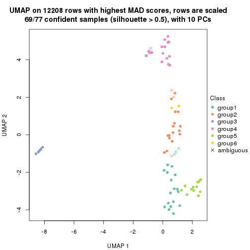
Following heatmap shows how subgroups are split when increasing k:
collect_classes(res)

If matrix rows can be associated to genes, consider to use functional_enrichment(res,
...) to perform function enrichment for the signature genes. See this vignette for more detailed explanations.
The object with results only for a single top-value method and a single partition method can be extracted as:
res = res_list["ATC", "hclust"]
# you can also extract it by
# res = res_list["ATC:hclust"]
A summary of res and all the functions that can be applied to it:
res
#> A 'ConsensusPartition' object with k = 2, 3, 4, 5, 6.
#> On a matrix with 12208 rows and 77 columns.
#> Top rows (1000, 2000, 3000, 4000, 5000) are extracted by 'ATC' method.
#> Subgroups are detected by 'hclust' method.
#> Performed in total 1250 partitions by row resampling.
#> Best k for subgroups seems to be 2.
#>
#> Following methods can be applied to this 'ConsensusPartition' object:
#> [1] "cola_report" "collect_classes" "collect_plots"
#> [4] "collect_stats" "colnames" "compare_signatures"
#> [7] "consensus_heatmap" "dimension_reduction" "functional_enrichment"
#> [10] "get_anno_col" "get_anno" "get_classes"
#> [13] "get_consensus" "get_matrix" "get_membership"
#> [16] "get_param" "get_signatures" "get_stats"
#> [19] "is_best_k" "is_stable_k" "membership_heatmap"
#> [22] "ncol" "nrow" "plot_ecdf"
#> [25] "rownames" "select_partition_number" "show"
#> [28] "suggest_best_k" "test_to_known_factors"
collect_plots() function collects all the plots made from res for all k (number of partitions)
into one single page to provide an easy and fast comparison between different k.
collect_plots(res)
The plots are:
k and the heatmap of
predicted classes for each k.k.k.k.All the plots in panels can be made by individual functions and they are plotted later in this section.
select_partition_number() produces several plots showing different
statistics for choosing “optimized” k. There are following statistics:
k;k, the area increased is defined as \(A_k - A_{k-1}\).The detailed explanations of these statistics can be found in the cola vignette.
Generally speaking, lower PAC score, higher mean silhouette score or higher
concordance corresponds to better partition. Rand index and Jaccard index
measure how similar the current partition is compared to partition with k-1.
If they are too similar, we won't accept k is better than k-1.
select_partition_number(res)
The numeric values for all these statistics can be obtained by get_stats().
get_stats(res)
#> k 1-PAC mean_silhouette concordance area_increased Rand Jaccard
#> 2 2 1.000 0.996 0.997 0.2699 0.733 0.733
#> 3 3 0.692 0.887 0.926 1.1378 0.658 0.534
#> 4 4 0.647 0.869 0.891 0.1575 0.913 0.781
#> 5 5 0.715 0.831 0.837 0.0496 0.954 0.866
#> 6 6 0.807 0.884 0.915 0.1265 0.851 0.554
suggest_best_k() suggests the best \(k\) based on these statistics. The rules are as follows:
suggest_best_k(res)
#> [1] 2
Following shows the table of the partitions (You need to click the show/hide
code output link to see it). The membership matrix (columns with name p*)
is inferred by
clue::cl_consensus()
function with the SE method. Basically the value in the membership matrix
represents the probability to belong to a certain group. The finall class
label for an item is determined with the group with highest probability it
belongs to.
In get_classes() function, the entropy is calculated from the membership
matrix and the silhouette score is calculated from the consensus matrix.
cbind(get_classes(res, k = 2), get_membership(res, k = 2))
#> class entropy silhouette p1 p2
#> SRR2044063 1 0.0000 0.997 1.000 0.000
#> SRR2044062 1 0.0000 0.997 1.000 0.000
#> SRR2044061 1 0.0000 0.997 1.000 0.000
#> SRR2044060 1 0.0000 0.997 1.000 0.000
#> SRR2044099 1 0.0938 0.991 0.988 0.012
#> SRR2044098 1 0.0000 0.997 1.000 0.000
#> SRR2044097 1 0.0672 0.993 0.992 0.008
#> SRR2044096 1 0.0938 0.991 0.988 0.012
#> SRR2044095 1 0.0000 0.997 1.000 0.000
#> SRR2044094 1 0.0672 0.993 0.992 0.008
#> SRR2044087 1 0.0000 0.997 1.000 0.000
#> SRR2044086 1 0.0000 0.997 1.000 0.000
#> SRR2044085 1 0.0000 0.997 1.000 0.000
#> SRR2044084 1 0.0000 0.997 1.000 0.000
#> SRR2044083 1 0.0000 0.997 1.000 0.000
#> SRR2044082 1 0.0000 0.997 1.000 0.000
#> SRR2044075 1 0.0000 0.997 1.000 0.000
#> SRR2044074 1 0.0000 0.997 1.000 0.000
#> SRR2044073 1 0.0000 0.997 1.000 0.000
#> SRR2044072 1 0.0000 0.997 1.000 0.000
#> SRR2044071 1 0.0000 0.997 1.000 0.000
#> SRR2044070 1 0.0000 0.997 1.000 0.000
#> SRR2044069 2 0.0000 1.000 0.000 1.000
#> SRR2044068 2 0.0000 1.000 0.000 1.000
#> SRR2044067 2 0.0000 1.000 0.000 1.000
#> SRR2044066 2 0.0000 1.000 0.000 1.000
#> SRR2044065 2 0.0000 1.000 0.000 1.000
#> SRR2044064 2 0.0000 1.000 0.000 1.000
#> SRR2044059 1 0.0000 0.997 1.000 0.000
#> SRR2044058 1 0.0000 0.997 1.000 0.000
#> SRR2044057 1 0.0000 0.997 1.000 0.000
#> SRR2044056 1 0.0000 0.997 1.000 0.000
#> SRR2044055 1 0.1184 0.988 0.984 0.016
#> SRR2044054 1 0.0000 0.997 1.000 0.000
#> SRR2044053 1 0.0000 0.997 1.000 0.000
#> SRR2044052 1 0.1184 0.988 0.984 0.016
#> SRR2044051 1 0.0000 0.997 1.000 0.000
#> SRR2044050 1 0.0000 0.997 1.000 0.000
#> SRR2044049 1 0.0000 0.997 1.000 0.000
#> SRR2044048 1 0.0000 0.997 1.000 0.000
#> SRR2044047 1 0.0000 0.997 1.000 0.000
#> SRR2044046 1 0.0000 0.997 1.000 0.000
#> SRR2044045 1 0.0000 0.997 1.000 0.000
#> SRR2044044 1 0.0000 0.997 1.000 0.000
#> SRR2044042 1 0.0000 0.997 1.000 0.000
#> SRR2044041 1 0.0000 0.997 1.000 0.000
#> SRR2044040 1 0.1184 0.988 0.984 0.016
#> SRR2044039 1 0.0672 0.993 0.992 0.008
#> SRR2044038 1 0.0000 0.997 1.000 0.000
#> SRR2044037 1 0.0000 0.997 1.000 0.000
#> SRR2044036 1 0.0672 0.993 0.992 0.008
#> SRR2044035 1 0.0000 0.997 1.000 0.000
#> SRR2044034 1 0.0000 0.997 1.000 0.000
#> SRR2044033 1 0.0000 0.997 1.000 0.000
#> SRR2044032 1 0.0000 0.997 1.000 0.000
#> SRR2044031 1 0.1184 0.988 0.984 0.016
#> SRR2044030 1 0.0000 0.997 1.000 0.000
#> SRR2044029 1 0.0000 0.997 1.000 0.000
#> SRR2044028 1 0.1184 0.988 0.984 0.016
#> SRR2044027 1 0.0672 0.993 0.992 0.008
#> SRR2044026 1 0.0000 0.997 1.000 0.000
#> SRR2044024 1 0.0672 0.993 0.992 0.008
#> SRR2044023 1 0.0000 0.997 1.000 0.000
#> SRR2044025 1 0.0672 0.993 0.992 0.008
#> SRR2044022 1 0.0672 0.993 0.992 0.008
#> SRR2044021 1 0.0938 0.991 0.988 0.012
#> SRR2044020 1 0.0000 0.997 1.000 0.000
#> SRR2044019 1 0.1184 0.988 0.984 0.016
#> SRR2044018 1 0.0938 0.991 0.988 0.012
#> SRR2044017 1 0.0000 0.997 1.000 0.000
#> SRR2044016 1 0.1184 0.988 0.984 0.016
#> SRR2044015 2 0.0000 1.000 0.000 1.000
#> SRR2044014 2 0.0000 1.000 0.000 1.000
#> SRR2044013 2 0.0000 1.000 0.000 1.000
#> SRR2044011 2 0.0000 1.000 0.000 1.000
#> SRR2044010 2 0.0000 1.000 0.000 1.000
#> SRR2044012 2 0.0000 1.000 0.000 1.000
cbind(get_classes(res, k = 3), get_membership(res, k = 3))
#> class entropy silhouette p1 p2 p3
#> SRR2044063 2 0.0000 0.928 0.000 1.000 0.000
#> SRR2044062 2 0.0892 0.926 0.020 0.980 0.000
#> SRR2044061 2 0.0892 0.926 0.020 0.980 0.000
#> SRR2044060 2 0.0000 0.928 0.000 1.000 0.000
#> SRR2044099 1 0.2261 0.900 0.932 0.068 0.000
#> SRR2044098 2 0.4931 0.681 0.232 0.768 0.000
#> SRR2044097 1 0.2356 0.900 0.928 0.072 0.000
#> SRR2044096 1 0.2261 0.900 0.932 0.068 0.000
#> SRR2044095 2 0.4002 0.799 0.160 0.840 0.000
#> SRR2044094 1 0.2356 0.900 0.928 0.072 0.000
#> SRR2044087 2 0.3267 0.855 0.116 0.884 0.000
#> SRR2044086 2 0.3267 0.855 0.116 0.884 0.000
#> SRR2044085 2 0.3267 0.855 0.116 0.884 0.000
#> SRR2044084 2 0.3267 0.855 0.116 0.884 0.000
#> SRR2044083 2 0.3267 0.855 0.116 0.884 0.000
#> SRR2044082 2 0.3267 0.855 0.116 0.884 0.000
#> SRR2044075 2 0.1529 0.915 0.040 0.960 0.000
#> SRR2044074 2 0.0892 0.926 0.020 0.980 0.000
#> SRR2044073 2 0.0892 0.926 0.020 0.980 0.000
#> SRR2044072 2 0.1529 0.915 0.040 0.960 0.000
#> SRR2044071 2 0.0892 0.926 0.020 0.980 0.000
#> SRR2044070 2 0.0892 0.926 0.020 0.980 0.000
#> SRR2044069 3 0.0000 0.996 0.000 0.000 1.000
#> SRR2044068 3 0.0000 0.996 0.000 0.000 1.000
#> SRR2044067 3 0.0000 0.996 0.000 0.000 1.000
#> SRR2044066 3 0.0000 0.996 0.000 0.000 1.000
#> SRR2044065 3 0.0000 0.996 0.000 0.000 1.000
#> SRR2044064 3 0.0000 0.996 0.000 0.000 1.000
#> SRR2044059 2 0.0892 0.926 0.020 0.980 0.000
#> SRR2044058 2 0.0892 0.926 0.020 0.980 0.000
#> SRR2044057 1 0.4654 0.889 0.792 0.208 0.000
#> SRR2044056 1 0.4654 0.889 0.792 0.208 0.000
#> SRR2044055 1 0.2165 0.898 0.936 0.064 0.000
#> SRR2044054 1 0.4654 0.889 0.792 0.208 0.000
#> SRR2044053 1 0.4654 0.889 0.792 0.208 0.000
#> SRR2044052 1 0.0000 0.817 1.000 0.000 0.000
#> SRR2044051 2 0.0000 0.928 0.000 1.000 0.000
#> SRR2044050 2 0.0000 0.928 0.000 1.000 0.000
#> SRR2044049 2 0.0000 0.928 0.000 1.000 0.000
#> SRR2044048 2 0.0000 0.928 0.000 1.000 0.000
#> SRR2044047 2 0.0000 0.928 0.000 1.000 0.000
#> SRR2044046 2 0.0000 0.928 0.000 1.000 0.000
#> SRR2044045 1 0.4654 0.889 0.792 0.208 0.000
#> SRR2044044 1 0.4654 0.889 0.792 0.208 0.000
#> SRR2044042 1 0.4654 0.889 0.792 0.208 0.000
#> SRR2044041 1 0.4654 0.889 0.792 0.208 0.000
#> SRR2044040 1 0.2165 0.898 0.936 0.064 0.000
#> SRR2044039 2 0.0424 0.925 0.008 0.992 0.000
#> SRR2044038 2 0.0000 0.928 0.000 1.000 0.000
#> SRR2044037 2 0.0000 0.928 0.000 1.000 0.000
#> SRR2044036 2 0.0424 0.925 0.008 0.992 0.000
#> SRR2044035 2 0.0000 0.928 0.000 1.000 0.000
#> SRR2044034 2 0.0000 0.928 0.000 1.000 0.000
#> SRR2044033 1 0.4654 0.889 0.792 0.208 0.000
#> SRR2044032 1 0.4654 0.889 0.792 0.208 0.000
#> SRR2044031 1 0.2165 0.898 0.936 0.064 0.000
#> SRR2044030 1 0.4605 0.890 0.796 0.204 0.000
#> SRR2044029 1 0.4654 0.889 0.792 0.208 0.000
#> SRR2044028 1 0.2165 0.898 0.936 0.064 0.000
#> SRR2044027 2 0.0424 0.925 0.008 0.992 0.000
#> SRR2044026 2 0.0000 0.928 0.000 1.000 0.000
#> SRR2044024 2 0.0424 0.925 0.008 0.992 0.000
#> SRR2044023 2 0.0000 0.928 0.000 1.000 0.000
#> SRR2044025 2 0.0424 0.925 0.008 0.992 0.000
#> SRR2044022 2 0.0424 0.925 0.008 0.992 0.000
#> SRR2044021 1 0.2261 0.900 0.932 0.068 0.000
#> SRR2044020 2 0.6308 -0.161 0.492 0.508 0.000
#> SRR2044019 1 0.2165 0.898 0.936 0.064 0.000
#> SRR2044018 1 0.2261 0.900 0.932 0.068 0.000
#> SRR2044017 2 0.6308 -0.161 0.492 0.508 0.000
#> SRR2044016 1 0.2165 0.898 0.936 0.064 0.000
#> SRR2044015 3 0.0424 0.996 0.008 0.000 0.992
#> SRR2044014 3 0.0424 0.996 0.008 0.000 0.992
#> SRR2044013 3 0.0424 0.996 0.008 0.000 0.992
#> SRR2044011 3 0.0424 0.996 0.008 0.000 0.992
#> SRR2044010 3 0.0424 0.996 0.008 0.000 0.992
#> SRR2044012 3 0.0424 0.996 0.008 0.000 0.992
cbind(get_classes(res, k = 4), get_membership(res, k = 4))
#> class entropy silhouette p1 p2 p3 p4
#> SRR2044063 2 0.2081 0.878 0.084 0.916 0.000 0.000
#> SRR2044062 2 0.2408 0.878 0.104 0.896 0.000 0.000
#> SRR2044061 2 0.2408 0.878 0.104 0.896 0.000 0.000
#> SRR2044060 2 0.2081 0.878 0.084 0.916 0.000 0.000
#> SRR2044099 4 0.3801 0.910 0.220 0.000 0.000 0.780
#> SRR2044098 2 0.6095 0.657 0.224 0.668 0.000 0.108
#> SRR2044097 4 0.3356 0.930 0.176 0.000 0.000 0.824
#> SRR2044096 4 0.3801 0.910 0.220 0.000 0.000 0.780
#> SRR2044095 2 0.4888 0.762 0.224 0.740 0.000 0.036
#> SRR2044094 4 0.3356 0.930 0.176 0.000 0.000 0.824
#> SRR2044087 2 0.3764 0.810 0.216 0.784 0.000 0.000
#> SRR2044086 2 0.3726 0.811 0.212 0.788 0.000 0.000
#> SRR2044085 2 0.3764 0.810 0.216 0.784 0.000 0.000
#> SRR2044084 2 0.3764 0.810 0.216 0.784 0.000 0.000
#> SRR2044083 2 0.3726 0.811 0.212 0.788 0.000 0.000
#> SRR2044082 2 0.3764 0.810 0.216 0.784 0.000 0.000
#> SRR2044075 2 0.2814 0.868 0.132 0.868 0.000 0.000
#> SRR2044074 2 0.2530 0.877 0.112 0.888 0.000 0.000
#> SRR2044073 2 0.2530 0.877 0.112 0.888 0.000 0.000
#> SRR2044072 2 0.2814 0.868 0.132 0.868 0.000 0.000
#> SRR2044071 2 0.2530 0.877 0.112 0.888 0.000 0.000
#> SRR2044070 2 0.2530 0.877 0.112 0.888 0.000 0.000
#> SRR2044069 3 0.0000 0.995 0.000 0.000 1.000 0.000
#> SRR2044068 3 0.0000 0.995 0.000 0.000 1.000 0.000
#> SRR2044067 3 0.0000 0.995 0.000 0.000 1.000 0.000
#> SRR2044066 3 0.0000 0.995 0.000 0.000 1.000 0.000
#> SRR2044065 3 0.0000 0.995 0.000 0.000 1.000 0.000
#> SRR2044064 3 0.0000 0.995 0.000 0.000 1.000 0.000
#> SRR2044059 2 0.2408 0.878 0.104 0.896 0.000 0.000
#> SRR2044058 2 0.2408 0.878 0.104 0.896 0.000 0.000
#> SRR2044057 1 0.0469 0.892 0.988 0.012 0.000 0.000
#> SRR2044056 1 0.0469 0.892 0.988 0.012 0.000 0.000
#> SRR2044055 4 0.3024 0.938 0.148 0.000 0.000 0.852
#> SRR2044054 1 0.0469 0.892 0.988 0.012 0.000 0.000
#> SRR2044053 1 0.0469 0.892 0.988 0.012 0.000 0.000
#> SRR2044052 4 0.0000 0.782 0.000 0.000 0.000 1.000
#> SRR2044051 2 0.2081 0.878 0.084 0.916 0.000 0.000
#> SRR2044050 2 0.2081 0.878 0.084 0.916 0.000 0.000
#> SRR2044049 2 0.2081 0.878 0.084 0.916 0.000 0.000
#> SRR2044048 2 0.2081 0.878 0.084 0.916 0.000 0.000
#> SRR2044047 2 0.2081 0.878 0.084 0.916 0.000 0.000
#> SRR2044046 2 0.2081 0.878 0.084 0.916 0.000 0.000
#> SRR2044045 1 0.0657 0.893 0.984 0.012 0.000 0.004
#> SRR2044044 1 0.1406 0.891 0.960 0.016 0.000 0.024
#> SRR2044042 1 0.0657 0.893 0.984 0.012 0.000 0.004
#> SRR2044041 1 0.1406 0.891 0.960 0.016 0.000 0.024
#> SRR2044040 4 0.3024 0.938 0.148 0.000 0.000 0.852
#> SRR2044039 2 0.2530 0.812 0.112 0.888 0.000 0.000
#> SRR2044038 2 0.2408 0.817 0.104 0.896 0.000 0.000
#> SRR2044037 2 0.2408 0.817 0.104 0.896 0.000 0.000
#> SRR2044036 2 0.2530 0.812 0.112 0.888 0.000 0.000
#> SRR2044035 2 0.2408 0.817 0.104 0.896 0.000 0.000
#> SRR2044034 2 0.2408 0.817 0.104 0.896 0.000 0.000
#> SRR2044033 1 0.1284 0.890 0.964 0.012 0.000 0.024
#> SRR2044032 1 0.1406 0.891 0.960 0.016 0.000 0.024
#> SRR2044031 4 0.3024 0.938 0.148 0.000 0.000 0.852
#> SRR2044030 1 0.1388 0.885 0.960 0.012 0.000 0.028
#> SRR2044029 1 0.1406 0.891 0.960 0.016 0.000 0.024
#> SRR2044028 4 0.3024 0.938 0.148 0.000 0.000 0.852
#> SRR2044027 2 0.2530 0.812 0.112 0.888 0.000 0.000
#> SRR2044026 2 0.2408 0.817 0.104 0.896 0.000 0.000
#> SRR2044024 2 0.2530 0.812 0.112 0.888 0.000 0.000
#> SRR2044023 2 0.2408 0.817 0.104 0.896 0.000 0.000
#> SRR2044025 2 0.2530 0.812 0.112 0.888 0.000 0.000
#> SRR2044022 2 0.2530 0.812 0.112 0.888 0.000 0.000
#> SRR2044021 4 0.4164 0.869 0.264 0.000 0.000 0.736
#> SRR2044020 1 0.6700 0.327 0.572 0.316 0.000 0.112
#> SRR2044019 4 0.3024 0.938 0.148 0.000 0.000 0.852
#> SRR2044018 4 0.4164 0.869 0.264 0.000 0.000 0.736
#> SRR2044017 1 0.6700 0.327 0.572 0.316 0.000 0.112
#> SRR2044016 4 0.3024 0.938 0.148 0.000 0.000 0.852
#> SRR2044015 3 0.0469 0.995 0.012 0.000 0.988 0.000
#> SRR2044014 3 0.0469 0.995 0.012 0.000 0.988 0.000
#> SRR2044013 3 0.0469 0.995 0.012 0.000 0.988 0.000
#> SRR2044011 3 0.0469 0.995 0.012 0.000 0.988 0.000
#> SRR2044010 3 0.0469 0.995 0.012 0.000 0.988 0.000
#> SRR2044012 3 0.0469 0.995 0.012 0.000 0.988 0.000
cbind(get_classes(res, k = 5), get_membership(res, k = 5))
#> class entropy silhouette p1 p2 p3 p4 p5
#> SRR2044063 2 0.0794 0.808 0.000 0.972 0.028 0.000 0.000
#> SRR2044062 2 0.0000 0.806 0.000 1.000 0.000 0.000 0.000
#> SRR2044061 2 0.0000 0.806 0.000 1.000 0.000 0.000 0.000
#> SRR2044060 2 0.0794 0.808 0.000 0.972 0.028 0.000 0.000
#> SRR2044099 1 0.1608 0.909 0.928 0.000 0.000 0.000 0.072
#> SRR2044098 2 0.3994 0.654 0.188 0.772 0.000 0.000 0.040
#> SRR2044097 1 0.0898 0.929 0.972 0.020 0.000 0.000 0.008
#> SRR2044096 1 0.1608 0.909 0.928 0.000 0.000 0.000 0.072
#> SRR2044095 2 0.3242 0.733 0.116 0.844 0.000 0.000 0.040
#> SRR2044094 1 0.0898 0.929 0.972 0.020 0.000 0.000 0.008
#> SRR2044087 2 0.2632 0.767 0.072 0.888 0.000 0.000 0.040
#> SRR2044086 2 0.2569 0.768 0.068 0.892 0.000 0.000 0.040
#> SRR2044085 2 0.2632 0.767 0.072 0.888 0.000 0.000 0.040
#> SRR2044084 2 0.2632 0.767 0.072 0.888 0.000 0.000 0.040
#> SRR2044083 2 0.2569 0.768 0.068 0.892 0.000 0.000 0.040
#> SRR2044082 2 0.2632 0.767 0.072 0.888 0.000 0.000 0.040
#> SRR2044075 2 0.0794 0.801 0.000 0.972 0.000 0.000 0.028
#> SRR2044074 2 0.0290 0.804 0.000 0.992 0.000 0.000 0.008
#> SRR2044073 2 0.0290 0.804 0.000 0.992 0.000 0.000 0.008
#> SRR2044072 2 0.0794 0.801 0.000 0.972 0.000 0.000 0.028
#> SRR2044071 2 0.0290 0.804 0.000 0.992 0.000 0.000 0.008
#> SRR2044070 2 0.0290 0.804 0.000 0.992 0.000 0.000 0.008
#> SRR2044069 3 0.3242 1.000 0.000 0.000 0.784 0.216 0.000
#> SRR2044068 3 0.3242 1.000 0.000 0.000 0.784 0.216 0.000
#> SRR2044067 3 0.3242 1.000 0.000 0.000 0.784 0.216 0.000
#> SRR2044066 3 0.3242 1.000 0.000 0.000 0.784 0.216 0.000
#> SRR2044065 3 0.3242 1.000 0.000 0.000 0.784 0.216 0.000
#> SRR2044064 3 0.3242 1.000 0.000 0.000 0.784 0.216 0.000
#> SRR2044059 2 0.0000 0.806 0.000 1.000 0.000 0.000 0.000
#> SRR2044058 2 0.0000 0.806 0.000 1.000 0.000 0.000 0.000
#> SRR2044057 5 0.4212 0.980 0.144 0.080 0.000 0.000 0.776
#> SRR2044056 5 0.4212 0.980 0.144 0.080 0.000 0.000 0.776
#> SRR2044055 1 0.0000 0.941 1.000 0.000 0.000 0.000 0.000
#> SRR2044054 5 0.4212 0.980 0.144 0.080 0.000 0.000 0.776
#> SRR2044053 5 0.4212 0.980 0.144 0.080 0.000 0.000 0.776
#> SRR2044052 1 0.2719 0.771 0.852 0.000 0.004 0.000 0.144
#> SRR2044051 2 0.2280 0.790 0.000 0.880 0.120 0.000 0.000
#> SRR2044050 2 0.0794 0.808 0.000 0.972 0.028 0.000 0.000
#> SRR2044049 2 0.0794 0.808 0.000 0.972 0.028 0.000 0.000
#> SRR2044048 2 0.2280 0.790 0.000 0.880 0.120 0.000 0.000
#> SRR2044047 2 0.0794 0.808 0.000 0.972 0.028 0.000 0.000
#> SRR2044046 2 0.0794 0.808 0.000 0.972 0.028 0.000 0.000
#> SRR2044045 5 0.4254 0.981 0.148 0.080 0.000 0.000 0.772
#> SRR2044044 5 0.4504 0.980 0.168 0.084 0.000 0.000 0.748
#> SRR2044042 5 0.4254 0.981 0.148 0.080 0.000 0.000 0.772
#> SRR2044041 5 0.4504 0.980 0.168 0.084 0.000 0.000 0.748
#> SRR2044040 1 0.0000 0.941 1.000 0.000 0.000 0.000 0.000
#> SRR2044039 2 0.6658 0.693 0.052 0.612 0.212 0.008 0.116
#> SRR2044038 2 0.6393 0.698 0.052 0.620 0.212 0.000 0.116
#> SRR2044037 2 0.6393 0.698 0.052 0.620 0.212 0.000 0.116
#> SRR2044036 2 0.6658 0.693 0.052 0.612 0.212 0.008 0.116
#> SRR2044035 2 0.6393 0.698 0.052 0.620 0.212 0.000 0.116
#> SRR2044034 2 0.6393 0.698 0.052 0.620 0.212 0.000 0.116
#> SRR2044033 5 0.4486 0.978 0.172 0.080 0.000 0.000 0.748
#> SRR2044032 5 0.4504 0.980 0.168 0.084 0.000 0.000 0.748
#> SRR2044031 1 0.0000 0.941 1.000 0.000 0.000 0.000 0.000
#> SRR2044030 5 0.4466 0.974 0.176 0.076 0.000 0.000 0.748
#> SRR2044029 5 0.4504 0.980 0.168 0.084 0.000 0.000 0.748
#> SRR2044028 1 0.0000 0.941 1.000 0.000 0.000 0.000 0.000
#> SRR2044027 2 0.6658 0.693 0.052 0.612 0.212 0.008 0.116
#> SRR2044026 2 0.6393 0.698 0.052 0.620 0.212 0.000 0.116
#> SRR2044024 2 0.6658 0.693 0.052 0.612 0.212 0.008 0.116
#> SRR2044023 2 0.6393 0.698 0.052 0.620 0.212 0.000 0.116
#> SRR2044025 2 0.6658 0.693 0.052 0.612 0.212 0.008 0.116
#> SRR2044022 2 0.6658 0.693 0.052 0.612 0.212 0.008 0.116
#> SRR2044021 1 0.2230 0.866 0.884 0.000 0.000 0.000 0.116
#> SRR2044020 2 0.6721 -0.199 0.256 0.404 0.000 0.000 0.340
#> SRR2044019 1 0.0000 0.941 1.000 0.000 0.000 0.000 0.000
#> SRR2044018 1 0.2230 0.866 0.884 0.000 0.000 0.000 0.116
#> SRR2044017 2 0.6721 -0.199 0.256 0.404 0.000 0.000 0.340
#> SRR2044016 1 0.0000 0.941 1.000 0.000 0.000 0.000 0.000
#> SRR2044015 4 0.0000 1.000 0.000 0.000 0.000 1.000 0.000
#> SRR2044014 4 0.0000 1.000 0.000 0.000 0.000 1.000 0.000
#> SRR2044013 4 0.0000 1.000 0.000 0.000 0.000 1.000 0.000
#> SRR2044011 4 0.0000 1.000 0.000 0.000 0.000 1.000 0.000
#> SRR2044010 4 0.0000 1.000 0.000 0.000 0.000 1.000 0.000
#> SRR2044012 4 0.0000 1.000 0.000 0.000 0.000 1.000 0.000
cbind(get_classes(res, k = 6), get_membership(res, k = 6))
#> class entropy silhouette p1 p2 p3 p4 p5 p6
#> SRR2044063 2 0.2597 0.786 0.000 0.824 0 0.176 0.000 0
#> SRR2044062 2 0.0363 0.891 0.000 0.988 0 0.012 0.000 0
#> SRR2044061 2 0.0363 0.891 0.000 0.988 0 0.012 0.000 0
#> SRR2044060 2 0.2597 0.786 0.000 0.824 0 0.176 0.000 0
#> SRR2044099 1 0.1444 0.905 0.928 0.000 0 0.000 0.072 0
#> SRR2044098 2 0.3377 0.761 0.188 0.784 0 0.000 0.028 0
#> SRR2044097 1 0.0713 0.926 0.972 0.028 0 0.000 0.000 0
#> SRR2044096 1 0.1444 0.905 0.928 0.000 0 0.000 0.072 0
#> SRR2044095 2 0.2696 0.828 0.116 0.856 0 0.000 0.028 0
#> SRR2044094 1 0.0713 0.926 0.972 0.028 0 0.000 0.000 0
#> SRR2044087 2 0.2145 0.860 0.072 0.900 0 0.000 0.028 0
#> SRR2044086 2 0.2088 0.863 0.068 0.904 0 0.000 0.028 0
#> SRR2044085 2 0.2145 0.860 0.072 0.900 0 0.000 0.028 0
#> SRR2044084 2 0.2145 0.860 0.072 0.900 0 0.000 0.028 0
#> SRR2044083 2 0.2088 0.863 0.068 0.904 0 0.000 0.028 0
#> SRR2044082 2 0.2145 0.860 0.072 0.900 0 0.000 0.028 0
#> SRR2044075 2 0.0458 0.890 0.000 0.984 0 0.000 0.016 0
#> SRR2044074 2 0.0146 0.892 0.000 0.996 0 0.004 0.000 0
#> SRR2044073 2 0.0146 0.892 0.000 0.996 0 0.004 0.000 0
#> SRR2044072 2 0.0458 0.890 0.000 0.984 0 0.000 0.016 0
#> SRR2044071 2 0.0146 0.892 0.000 0.996 0 0.004 0.000 0
#> SRR2044070 2 0.0146 0.892 0.000 0.996 0 0.004 0.000 0
#> SRR2044069 3 0.0000 1.000 0.000 0.000 1 0.000 0.000 0
#> SRR2044068 3 0.0000 1.000 0.000 0.000 1 0.000 0.000 0
#> SRR2044067 3 0.0000 1.000 0.000 0.000 1 0.000 0.000 0
#> SRR2044066 3 0.0000 1.000 0.000 0.000 1 0.000 0.000 0
#> SRR2044065 3 0.0000 1.000 0.000 0.000 1 0.000 0.000 0
#> SRR2044064 3 0.0000 1.000 0.000 0.000 1 0.000 0.000 0
#> SRR2044059 2 0.0363 0.891 0.000 0.988 0 0.012 0.000 0
#> SRR2044058 2 0.0363 0.891 0.000 0.988 0 0.012 0.000 0
#> SRR2044057 5 0.2178 0.890 0.132 0.000 0 0.000 0.868 0
#> SRR2044056 5 0.2178 0.890 0.132 0.000 0 0.000 0.868 0
#> SRR2044055 1 0.0000 0.938 1.000 0.000 0 0.000 0.000 0
#> SRR2044054 5 0.2178 0.890 0.132 0.000 0 0.000 0.868 0
#> SRR2044053 5 0.2178 0.890 0.132 0.000 0 0.000 0.868 0
#> SRR2044052 1 0.3083 0.755 0.828 0.000 0 0.040 0.132 0
#> SRR2044051 4 0.3531 0.588 0.000 0.328 0 0.672 0.000 0
#> SRR2044050 2 0.2597 0.786 0.000 0.824 0 0.176 0.000 0
#> SRR2044049 2 0.2597 0.786 0.000 0.824 0 0.176 0.000 0
#> SRR2044048 4 0.3531 0.588 0.000 0.328 0 0.672 0.000 0
#> SRR2044047 2 0.2597 0.786 0.000 0.824 0 0.176 0.000 0
#> SRR2044046 2 0.2597 0.786 0.000 0.824 0 0.176 0.000 0
#> SRR2044045 5 0.2300 0.893 0.144 0.000 0 0.000 0.856 0
#> SRR2044044 5 0.2743 0.892 0.164 0.008 0 0.000 0.828 0
#> SRR2044042 5 0.2300 0.893 0.144 0.000 0 0.000 0.856 0
#> SRR2044041 5 0.2743 0.892 0.164 0.008 0 0.000 0.828 0
#> SRR2044040 1 0.0000 0.938 1.000 0.000 0 0.000 0.000 0
#> SRR2044039 4 0.0937 0.937 0.000 0.040 0 0.960 0.000 0
#> SRR2044038 4 0.1075 0.938 0.000 0.048 0 0.952 0.000 0
#> SRR2044037 4 0.1075 0.938 0.000 0.048 0 0.952 0.000 0
#> SRR2044036 4 0.0937 0.937 0.000 0.040 0 0.960 0.000 0
#> SRR2044035 4 0.1075 0.938 0.000 0.048 0 0.952 0.000 0
#> SRR2044034 4 0.1075 0.938 0.000 0.048 0 0.952 0.000 0
#> SRR2044033 5 0.2527 0.890 0.168 0.000 0 0.000 0.832 0
#> SRR2044032 5 0.2743 0.892 0.164 0.008 0 0.000 0.828 0
#> SRR2044031 1 0.0000 0.938 1.000 0.000 0 0.000 0.000 0
#> SRR2044030 5 0.2562 0.888 0.172 0.000 0 0.000 0.828 0
#> SRR2044029 5 0.2743 0.892 0.164 0.008 0 0.000 0.828 0
#> SRR2044028 1 0.0000 0.938 1.000 0.000 0 0.000 0.000 0
#> SRR2044027 4 0.0937 0.937 0.000 0.040 0 0.960 0.000 0
#> SRR2044026 4 0.1075 0.938 0.000 0.048 0 0.952 0.000 0
#> SRR2044024 4 0.0937 0.937 0.000 0.040 0 0.960 0.000 0
#> SRR2044023 4 0.1075 0.938 0.000 0.048 0 0.952 0.000 0
#> SRR2044025 4 0.0937 0.937 0.000 0.040 0 0.960 0.000 0
#> SRR2044022 4 0.0937 0.937 0.000 0.040 0 0.960 0.000 0
#> SRR2044021 1 0.2003 0.861 0.884 0.000 0 0.000 0.116 0
#> SRR2044020 5 0.6024 0.387 0.256 0.328 0 0.000 0.416 0
#> SRR2044019 1 0.0000 0.938 1.000 0.000 0 0.000 0.000 0
#> SRR2044018 1 0.2003 0.861 0.884 0.000 0 0.000 0.116 0
#> SRR2044017 5 0.6024 0.387 0.256 0.328 0 0.000 0.416 0
#> SRR2044016 1 0.0000 0.938 1.000 0.000 0 0.000 0.000 0
#> SRR2044015 6 0.0000 1.000 0.000 0.000 0 0.000 0.000 1
#> SRR2044014 6 0.0000 1.000 0.000 0.000 0 0.000 0.000 1
#> SRR2044013 6 0.0000 1.000 0.000 0.000 0 0.000 0.000 1
#> SRR2044011 6 0.0000 1.000 0.000 0.000 0 0.000 0.000 1
#> SRR2044010 6 0.0000 1.000 0.000 0.000 0 0.000 0.000 1
#> SRR2044012 6 0.0000 1.000 0.000 0.000 0 0.000 0.000 1
Heatmaps for the consensus matrix. It visualizes the probability of two samples to be in a same group.
consensus_heatmap(res, k = 2)

consensus_heatmap(res, k = 3)
consensus_heatmap(res, k = 4)
consensus_heatmap(res, k = 5)
consensus_heatmap(res, k = 6)
Heatmaps for the membership of samples in all partitions to see how consistent they are:
membership_heatmap(res, k = 2)

membership_heatmap(res, k = 3)
membership_heatmap(res, k = 4)
membership_heatmap(res, k = 5)
membership_heatmap(res, k = 6)
As soon as we have had the classes for columns, we can look for signatures which are significantly different between classes which can be candidate marks for certain classes. Following are the heatmaps for signatures.
Signature heatmaps where rows are scaled:
get_signatures(res, k = 2)
get_signatures(res, k = 3)
get_signatures(res, k = 4)
get_signatures(res, k = 5)
get_signatures(res, k = 6)
Signature heatmaps where rows are not scaled:
get_signatures(res, k = 2, scale_rows = FALSE)
get_signatures(res, k = 3, scale_rows = FALSE)
get_signatures(res, k = 4, scale_rows = FALSE)
get_signatures(res, k = 5, scale_rows = FALSE)
get_signatures(res, k = 6, scale_rows = FALSE)
Compare the overlap of signatures from different k:
compare_signatures(res)
get_signature() returns a data frame invisibly. TO get the list of signatures, the function
call should be assigned to a variable explicitly. In following code, if plot argument is set
to FALSE, no heatmap is plotted while only the differential analysis is performed.
# code only for demonstration
tb = get_signature(res, k = ..., plot = FALSE)
An example of the output of tb is:
#> which_row fdr mean_1 mean_2 scaled_mean_1 scaled_mean_2 km
#> 1 38 0.042760348 8.373488 9.131774 -0.5533452 0.5164555 1
#> 2 40 0.018707592 7.106213 8.469186 -0.6173731 0.5762149 1
#> 3 55 0.019134737 10.221463 11.207825 -0.6159697 0.5749050 1
#> 4 59 0.006059896 5.921854 7.869574 -0.6899429 0.6439467 1
#> 5 60 0.018055526 8.928898 10.211722 -0.6204761 0.5791110 1
#> 6 98 0.009384629 15.714769 14.887706 0.6635654 -0.6193277 2
...
The columns in tb are:
which_row: row indices corresponding to the input matrix.fdr: FDR for the differential test. mean_x: The mean value in group x.scaled_mean_x: The mean value in group x after rows are scaled.km: Row groups if k-means clustering is applied to rows.UMAP plot which shows how samples are separated.
dimension_reduction(res, k = 2, method = "UMAP")

dimension_reduction(res, k = 3, method = "UMAP")
dimension_reduction(res, k = 4, method = "UMAP")
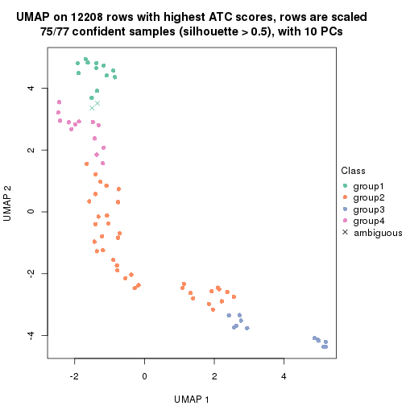
dimension_reduction(res, k = 5, method = "UMAP")
dimension_reduction(res, k = 6, method = "UMAP")
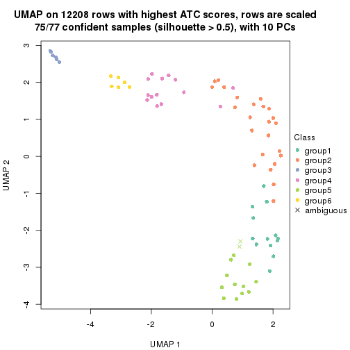
Following heatmap shows how subgroups are split when increasing k:
collect_classes(res)
If matrix rows can be associated to genes, consider to use functional_enrichment(res,
...) to perform function enrichment for the signature genes. See this vignette for more detailed explanations.
The object with results only for a single top-value method and a single partition method can be extracted as:
res = res_list["ATC", "kmeans"]
# you can also extract it by
# res = res_list["ATC:kmeans"]
A summary of res and all the functions that can be applied to it:
res
#> A 'ConsensusPartition' object with k = 2, 3, 4, 5, 6.
#> On a matrix with 12208 rows and 77 columns.
#> Top rows (1000, 2000, 3000, 4000, 5000) are extracted by 'ATC' method.
#> Subgroups are detected by 'kmeans' method.
#> Performed in total 1250 partitions by row resampling.
#> Best k for subgroups seems to be 3.
#>
#> Following methods can be applied to this 'ConsensusPartition' object:
#> [1] "cola_report" "collect_classes" "collect_plots"
#> [4] "collect_stats" "colnames" "compare_signatures"
#> [7] "consensus_heatmap" "dimension_reduction" "functional_enrichment"
#> [10] "get_anno_col" "get_anno" "get_classes"
#> [13] "get_consensus" "get_matrix" "get_membership"
#> [16] "get_param" "get_signatures" "get_stats"
#> [19] "is_best_k" "is_stable_k" "membership_heatmap"
#> [22] "ncol" "nrow" "plot_ecdf"
#> [25] "rownames" "select_partition_number" "show"
#> [28] "suggest_best_k" "test_to_known_factors"
collect_plots() function collects all the plots made from res for all k (number of partitions)
into one single page to provide an easy and fast comparison between different k.
collect_plots(res)
The plots are:
k and the heatmap of
predicted classes for each k.k.k.k.All the plots in panels can be made by individual functions and they are plotted later in this section.
select_partition_number() produces several plots showing different
statistics for choosing “optimized” k. There are following statistics:
k;k, the area increased is defined as \(A_k - A_{k-1}\).The detailed explanations of these statistics can be found in the cola vignette.
Generally speaking, lower PAC score, higher mean silhouette score or higher
concordance corresponds to better partition. Rand index and Jaccard index
measure how similar the current partition is compared to partition with k-1.
If they are too similar, we won't accept k is better than k-1.
select_partition_number(res)
The numeric values for all these statistics can be obtained by get_stats().
get_stats(res)
#> k 1-PAC mean_silhouette concordance area_increased Rand Jaccard
#> 2 2 0.533 0.920 0.921 0.3121 0.733 0.733
#> 3 3 1.000 0.944 0.970 0.9953 0.640 0.509
#> 4 4 0.681 0.692 0.768 0.1472 0.871 0.664
#> 5 5 0.720 0.728 0.823 0.0846 0.826 0.471
#> 6 6 0.718 0.676 0.717 0.0501 0.932 0.706
suggest_best_k() suggests the best \(k\) based on these statistics. The rules are as follows:
suggest_best_k(res)
#> [1] 3
Following shows the table of the partitions (You need to click the show/hide
code output link to see it). The membership matrix (columns with name p*)
is inferred by
clue::cl_consensus()
function with the SE method. Basically the value in the membership matrix
represents the probability to belong to a certain group. The finall class
label for an item is determined with the group with highest probability it
belongs to.
In get_classes() function, the entropy is calculated from the membership
matrix and the silhouette score is calculated from the consensus matrix.
cbind(get_classes(res, k = 2), get_membership(res, k = 2))
#> class entropy silhouette p1 p2
#> SRR2044063 1 0.000 0.920 1.000 0.000
#> SRR2044062 1 0.000 0.920 1.000 0.000
#> SRR2044061 1 0.000 0.920 1.000 0.000
#> SRR2044060 1 0.000 0.920 1.000 0.000
#> SRR2044099 1 0.494 0.907 0.892 0.108
#> SRR2044098 1 0.000 0.920 1.000 0.000
#> SRR2044097 1 0.494 0.907 0.892 0.108
#> SRR2044096 1 0.625 0.887 0.844 0.156
#> SRR2044095 1 0.000 0.920 1.000 0.000
#> SRR2044094 1 0.494 0.907 0.892 0.108
#> SRR2044087 1 0.000 0.920 1.000 0.000
#> SRR2044086 1 0.000 0.920 1.000 0.000
#> SRR2044085 1 0.000 0.920 1.000 0.000
#> SRR2044084 1 0.000 0.920 1.000 0.000
#> SRR2044083 1 0.000 0.920 1.000 0.000
#> SRR2044082 1 0.000 0.920 1.000 0.000
#> SRR2044075 1 0.000 0.920 1.000 0.000
#> SRR2044074 1 0.000 0.920 1.000 0.000
#> SRR2044073 1 0.000 0.920 1.000 0.000
#> SRR2044072 1 0.000 0.920 1.000 0.000
#> SRR2044071 1 0.000 0.920 1.000 0.000
#> SRR2044070 1 0.000 0.920 1.000 0.000
#> SRR2044069 2 0.000 1.000 0.000 1.000
#> SRR2044068 2 0.000 1.000 0.000 1.000
#> SRR2044067 2 0.000 1.000 0.000 1.000
#> SRR2044066 2 0.000 1.000 0.000 1.000
#> SRR2044065 2 0.000 1.000 0.000 1.000
#> SRR2044064 2 0.000 1.000 0.000 1.000
#> SRR2044059 1 0.000 0.920 1.000 0.000
#> SRR2044058 1 0.000 0.920 1.000 0.000
#> SRR2044057 1 0.625 0.887 0.844 0.156
#> SRR2044056 1 0.625 0.887 0.844 0.156
#> SRR2044055 1 0.625 0.887 0.844 0.156
#> SRR2044054 1 0.625 0.887 0.844 0.156
#> SRR2044053 1 0.625 0.887 0.844 0.156
#> SRR2044052 1 0.625 0.887 0.844 0.156
#> SRR2044051 1 0.242 0.911 0.960 0.040
#> SRR2044050 1 0.242 0.911 0.960 0.040
#> SRR2044049 1 0.242 0.911 0.960 0.040
#> SRR2044048 1 0.242 0.911 0.960 0.040
#> SRR2044047 1 0.242 0.911 0.960 0.040
#> SRR2044046 1 0.242 0.911 0.960 0.040
#> SRR2044045 1 0.625 0.887 0.844 0.156
#> SRR2044044 1 0.482 0.908 0.896 0.104
#> SRR2044042 1 0.625 0.887 0.844 0.156
#> SRR2044041 1 0.482 0.908 0.896 0.104
#> SRR2044040 1 0.625 0.887 0.844 0.156
#> SRR2044039 1 0.242 0.911 0.960 0.040
#> SRR2044038 1 0.242 0.911 0.960 0.040
#> SRR2044037 1 0.242 0.911 0.960 0.040
#> SRR2044036 1 0.242 0.911 0.960 0.040
#> SRR2044035 1 0.242 0.911 0.960 0.040
#> SRR2044034 1 0.242 0.911 0.960 0.040
#> SRR2044033 1 0.625 0.887 0.844 0.156
#> SRR2044032 1 0.482 0.908 0.896 0.104
#> SRR2044031 1 0.625 0.887 0.844 0.156
#> SRR2044030 1 0.625 0.887 0.844 0.156
#> SRR2044029 1 0.494 0.907 0.892 0.108
#> SRR2044028 1 0.625 0.887 0.844 0.156
#> SRR2044027 1 0.714 0.869 0.804 0.196
#> SRR2044026 1 0.242 0.911 0.960 0.040
#> SRR2044024 1 0.714 0.869 0.804 0.196
#> SRR2044023 1 0.242 0.911 0.960 0.040
#> SRR2044025 1 0.242 0.911 0.960 0.040
#> SRR2044022 1 0.242 0.911 0.960 0.040
#> SRR2044021 1 0.625 0.887 0.844 0.156
#> SRR2044020 1 0.482 0.908 0.896 0.104
#> SRR2044019 1 0.625 0.887 0.844 0.156
#> SRR2044018 1 0.625 0.887 0.844 0.156
#> SRR2044017 1 0.482 0.908 0.896 0.104
#> SRR2044016 1 0.625 0.887 0.844 0.156
#> SRR2044015 2 0.000 1.000 0.000 1.000
#> SRR2044014 2 0.000 1.000 0.000 1.000
#> SRR2044013 2 0.000 1.000 0.000 1.000
#> SRR2044011 2 0.000 1.000 0.000 1.000
#> SRR2044010 2 0.000 1.000 0.000 1.000
#> SRR2044012 2 0.000 1.000 0.000 1.000
cbind(get_classes(res, k = 3), get_membership(res, k = 3))
#> class entropy silhouette p1 p2 p3
#> SRR2044063 2 0.0747 0.9575 0.016 0.984 0.000
#> SRR2044062 2 0.0892 0.9573 0.020 0.980 0.000
#> SRR2044061 2 0.0892 0.9573 0.020 0.980 0.000
#> SRR2044060 2 0.0747 0.9575 0.016 0.984 0.000
#> SRR2044099 1 0.0424 0.9800 0.992 0.008 0.000
#> SRR2044098 1 0.0892 0.9719 0.980 0.020 0.000
#> SRR2044097 1 0.0424 0.9800 0.992 0.008 0.000
#> SRR2044096 1 0.0237 0.9806 0.996 0.004 0.000
#> SRR2044095 1 0.0892 0.9719 0.980 0.020 0.000
#> SRR2044094 1 0.0424 0.9800 0.992 0.008 0.000
#> SRR2044087 2 0.5926 0.4590 0.356 0.644 0.000
#> SRR2044086 2 0.1289 0.9492 0.032 0.968 0.000
#> SRR2044085 1 0.1643 0.9481 0.956 0.044 0.000
#> SRR2044084 2 0.6309 0.0268 0.496 0.504 0.000
#> SRR2044083 2 0.1289 0.9492 0.032 0.968 0.000
#> SRR2044082 1 0.5760 0.4946 0.672 0.328 0.000
#> SRR2044075 2 0.0892 0.9573 0.020 0.980 0.000
#> SRR2044074 2 0.0892 0.9573 0.020 0.980 0.000
#> SRR2044073 2 0.0892 0.9573 0.020 0.980 0.000
#> SRR2044072 2 0.0892 0.9573 0.020 0.980 0.000
#> SRR2044071 2 0.0892 0.9573 0.020 0.980 0.000
#> SRR2044070 2 0.0892 0.9573 0.020 0.980 0.000
#> SRR2044069 3 0.0424 0.9898 0.008 0.000 0.992
#> SRR2044068 3 0.0424 0.9898 0.008 0.000 0.992
#> SRR2044067 3 0.0424 0.9898 0.008 0.000 0.992
#> SRR2044066 3 0.0424 0.9898 0.008 0.000 0.992
#> SRR2044065 3 0.0424 0.9898 0.008 0.000 0.992
#> SRR2044064 3 0.0424 0.9898 0.008 0.000 0.992
#> SRR2044059 2 0.0892 0.9573 0.020 0.980 0.000
#> SRR2044058 2 0.0892 0.9573 0.020 0.980 0.000
#> SRR2044057 1 0.0000 0.9793 1.000 0.000 0.000
#> SRR2044056 1 0.0000 0.9793 1.000 0.000 0.000
#> SRR2044055 1 0.0237 0.9806 0.996 0.004 0.000
#> SRR2044054 1 0.0000 0.9793 1.000 0.000 0.000
#> SRR2044053 1 0.0000 0.9793 1.000 0.000 0.000
#> SRR2044052 1 0.0000 0.9793 1.000 0.000 0.000
#> SRR2044051 2 0.0983 0.9576 0.016 0.980 0.004
#> SRR2044050 2 0.0983 0.9576 0.016 0.980 0.004
#> SRR2044049 2 0.0983 0.9576 0.016 0.980 0.004
#> SRR2044048 2 0.0983 0.9576 0.016 0.980 0.004
#> SRR2044047 2 0.0983 0.9576 0.016 0.980 0.004
#> SRR2044046 2 0.0983 0.9576 0.016 0.980 0.004
#> SRR2044045 1 0.0000 0.9793 1.000 0.000 0.000
#> SRR2044044 1 0.0592 0.9784 0.988 0.012 0.000
#> SRR2044042 1 0.0000 0.9793 1.000 0.000 0.000
#> SRR2044041 1 0.0592 0.9784 0.988 0.012 0.000
#> SRR2044040 1 0.0237 0.9806 0.996 0.004 0.000
#> SRR2044039 2 0.1015 0.9431 0.012 0.980 0.008
#> SRR2044038 2 0.1315 0.9546 0.020 0.972 0.008
#> SRR2044037 2 0.1315 0.9546 0.020 0.972 0.008
#> SRR2044036 2 0.1015 0.9431 0.012 0.980 0.008
#> SRR2044035 2 0.1315 0.9546 0.020 0.972 0.008
#> SRR2044034 2 0.1315 0.9546 0.020 0.972 0.008
#> SRR2044033 1 0.0000 0.9793 1.000 0.000 0.000
#> SRR2044032 1 0.0592 0.9784 0.988 0.012 0.000
#> SRR2044031 1 0.0237 0.9806 0.996 0.004 0.000
#> SRR2044030 1 0.0000 0.9793 1.000 0.000 0.000
#> SRR2044029 1 0.0592 0.9784 0.988 0.012 0.000
#> SRR2044028 1 0.0237 0.9806 0.996 0.004 0.000
#> SRR2044027 2 0.1453 0.9392 0.024 0.968 0.008
#> SRR2044026 2 0.1315 0.9546 0.020 0.972 0.008
#> SRR2044024 2 0.1453 0.9392 0.024 0.968 0.008
#> SRR2044023 2 0.1315 0.9546 0.020 0.972 0.008
#> SRR2044025 2 0.1453 0.9525 0.024 0.968 0.008
#> SRR2044022 2 0.1453 0.9525 0.024 0.968 0.008
#> SRR2044021 1 0.0237 0.9806 0.996 0.004 0.000
#> SRR2044020 1 0.0592 0.9784 0.988 0.012 0.000
#> SRR2044019 1 0.0237 0.9806 0.996 0.004 0.000
#> SRR2044018 1 0.0237 0.9806 0.996 0.004 0.000
#> SRR2044017 1 0.0592 0.9784 0.988 0.012 0.000
#> SRR2044016 1 0.0237 0.9806 0.996 0.004 0.000
#> SRR2044015 3 0.0592 0.9891 0.000 0.012 0.988
#> SRR2044014 3 0.1129 0.9870 0.004 0.020 0.976
#> SRR2044013 3 0.1129 0.9870 0.004 0.020 0.976
#> SRR2044011 3 0.1129 0.9870 0.004 0.020 0.976
#> SRR2044010 3 0.1129 0.9870 0.004 0.020 0.976
#> SRR2044012 3 0.0592 0.9891 0.000 0.012 0.988
cbind(get_classes(res, k = 4), get_membership(res, k = 4))
#> class entropy silhouette p1 p2 p3 p4
#> SRR2044063 2 0.4564 0.6146 0.000 0.672 0.00 0.328
#> SRR2044062 2 0.4500 0.6448 0.000 0.684 0.00 0.316
#> SRR2044061 2 0.4500 0.6448 0.000 0.684 0.00 0.316
#> SRR2044060 2 0.4564 0.6146 0.000 0.672 0.00 0.328
#> SRR2044099 1 0.1042 0.8647 0.972 0.020 0.00 0.008
#> SRR2044098 1 0.2704 0.7773 0.876 0.124 0.00 0.000
#> SRR2044097 1 0.1042 0.8647 0.972 0.020 0.00 0.008
#> SRR2044096 1 0.1042 0.8647 0.972 0.020 0.00 0.008
#> SRR2044095 1 0.2704 0.7773 0.876 0.124 0.00 0.000
#> SRR2044094 1 0.1042 0.8647 0.972 0.020 0.00 0.008
#> SRR2044087 2 0.5659 0.4938 0.368 0.600 0.00 0.032
#> SRR2044086 2 0.5416 0.5541 0.260 0.692 0.00 0.048
#> SRR2044085 2 0.5119 0.3796 0.440 0.556 0.00 0.004
#> SRR2044084 2 0.5626 0.4832 0.384 0.588 0.00 0.028
#> SRR2044083 2 0.5416 0.5541 0.260 0.692 0.00 0.048
#> SRR2044082 2 0.5172 0.4682 0.404 0.588 0.00 0.008
#> SRR2044075 2 0.4477 0.6503 0.000 0.688 0.00 0.312
#> SRR2044074 2 0.4844 0.6609 0.012 0.688 0.00 0.300
#> SRR2044073 2 0.4844 0.6609 0.012 0.688 0.00 0.300
#> SRR2044072 2 0.4844 0.6609 0.012 0.688 0.00 0.300
#> SRR2044071 2 0.4844 0.6609 0.012 0.688 0.00 0.300
#> SRR2044070 2 0.4844 0.6609 0.012 0.688 0.00 0.300
#> SRR2044069 3 0.0000 0.8636 0.000 0.000 1.00 0.000
#> SRR2044068 3 0.0000 0.8636 0.000 0.000 1.00 0.000
#> SRR2044067 3 0.0000 0.8636 0.000 0.000 1.00 0.000
#> SRR2044066 3 0.0000 0.8636 0.000 0.000 1.00 0.000
#> SRR2044065 3 0.0000 0.8636 0.000 0.000 1.00 0.000
#> SRR2044064 3 0.0000 0.8636 0.000 0.000 1.00 0.000
#> SRR2044059 2 0.4477 0.6503 0.000 0.688 0.00 0.312
#> SRR2044058 2 0.4500 0.6448 0.000 0.684 0.00 0.316
#> SRR2044057 1 0.4431 0.7664 0.696 0.304 0.00 0.000
#> SRR2044056 1 0.4431 0.7664 0.696 0.304 0.00 0.000
#> SRR2044055 1 0.0804 0.8657 0.980 0.012 0.00 0.008
#> SRR2044054 1 0.4431 0.7664 0.696 0.304 0.00 0.000
#> SRR2044053 1 0.4431 0.7664 0.696 0.304 0.00 0.000
#> SRR2044052 1 0.0672 0.8641 0.984 0.008 0.00 0.008
#> SRR2044051 4 0.4992 0.1146 0.000 0.476 0.00 0.524
#> SRR2044050 4 0.4994 0.0734 0.000 0.480 0.00 0.520
#> SRR2044049 4 0.4994 0.0734 0.000 0.480 0.00 0.520
#> SRR2044048 4 0.4994 0.1021 0.000 0.480 0.00 0.520
#> SRR2044047 4 0.4994 0.0734 0.000 0.480 0.00 0.520
#> SRR2044046 4 0.4994 0.0734 0.000 0.480 0.00 0.520
#> SRR2044045 1 0.4431 0.7664 0.696 0.304 0.00 0.000
#> SRR2044044 1 0.4431 0.7664 0.696 0.304 0.00 0.000
#> SRR2044042 1 0.4431 0.7664 0.696 0.304 0.00 0.000
#> SRR2044041 1 0.4431 0.7664 0.696 0.304 0.00 0.000
#> SRR2044040 1 0.0927 0.8655 0.976 0.016 0.00 0.008
#> SRR2044039 4 0.0000 0.6806 0.000 0.000 0.00 1.000
#> SRR2044038 4 0.2647 0.7073 0.000 0.120 0.00 0.880
#> SRR2044037 4 0.2647 0.7073 0.000 0.120 0.00 0.880
#> SRR2044036 4 0.0000 0.6806 0.000 0.000 0.00 1.000
#> SRR2044035 4 0.2647 0.7073 0.000 0.120 0.00 0.880
#> SRR2044034 4 0.2647 0.7073 0.000 0.120 0.00 0.880
#> SRR2044033 1 0.4431 0.7664 0.696 0.304 0.00 0.000
#> SRR2044032 1 0.1211 0.8597 0.960 0.040 0.00 0.000
#> SRR2044031 1 0.1042 0.8647 0.972 0.020 0.00 0.008
#> SRR2044030 1 0.4431 0.7664 0.696 0.304 0.00 0.000
#> SRR2044029 1 0.1211 0.8597 0.960 0.040 0.00 0.000
#> SRR2044028 1 0.1042 0.8647 0.972 0.020 0.00 0.008
#> SRR2044027 4 0.0469 0.6716 0.012 0.000 0.00 0.988
#> SRR2044026 4 0.2530 0.7086 0.000 0.112 0.00 0.888
#> SRR2044024 4 0.0469 0.6716 0.012 0.000 0.00 0.988
#> SRR2044023 4 0.2530 0.7086 0.000 0.112 0.00 0.888
#> SRR2044025 4 0.0707 0.6910 0.000 0.020 0.00 0.980
#> SRR2044022 4 0.0817 0.6925 0.000 0.024 0.00 0.976
#> SRR2044021 1 0.0927 0.8655 0.976 0.016 0.00 0.008
#> SRR2044020 1 0.1118 0.8641 0.964 0.036 0.00 0.000
#> SRR2044019 1 0.1042 0.8647 0.972 0.020 0.00 0.008
#> SRR2044018 1 0.0927 0.8655 0.976 0.016 0.00 0.008
#> SRR2044017 1 0.1118 0.8641 0.964 0.036 0.00 0.000
#> SRR2044016 1 0.1042 0.8647 0.972 0.020 0.00 0.008
#> SRR2044015 3 0.2647 0.8505 0.000 0.000 0.88 0.120
#> SRR2044014 3 0.4790 0.7145 0.000 0.000 0.62 0.380
#> SRR2044013 3 0.4713 0.7364 0.000 0.000 0.64 0.360
#> SRR2044011 3 0.4713 0.7364 0.000 0.000 0.64 0.360
#> SRR2044010 3 0.4713 0.7364 0.000 0.000 0.64 0.360
#> SRR2044012 3 0.2647 0.8505 0.000 0.000 0.88 0.120
cbind(get_classes(res, k = 5), get_membership(res, k = 5))
#> class entropy silhouette p1 p2 p3 p4 p5
#> SRR2044063 2 0.2519 0.7636 0.100 0.884 0.000 0.016 0.000
#> SRR2044062 2 0.0000 0.8026 0.000 1.000 0.000 0.000 0.000
#> SRR2044061 2 0.0000 0.8026 0.000 1.000 0.000 0.000 0.000
#> SRR2044060 2 0.2519 0.7636 0.100 0.884 0.000 0.016 0.000
#> SRR2044099 1 0.3913 0.8130 0.676 0.000 0.000 0.000 0.324
#> SRR2044098 1 0.5087 0.6357 0.700 0.148 0.000 0.000 0.152
#> SRR2044097 1 0.3876 0.8106 0.684 0.000 0.000 0.000 0.316
#> SRR2044096 1 0.4045 0.8178 0.644 0.000 0.000 0.000 0.356
#> SRR2044095 1 0.5087 0.6357 0.700 0.148 0.000 0.000 0.152
#> SRR2044094 1 0.3876 0.8106 0.684 0.000 0.000 0.000 0.316
#> SRR2044087 2 0.4624 0.3976 0.340 0.636 0.000 0.000 0.024
#> SRR2044086 2 0.2516 0.7387 0.140 0.860 0.000 0.000 0.000
#> SRR2044085 1 0.4968 0.0970 0.516 0.456 0.000 0.000 0.028
#> SRR2044084 2 0.4624 0.3976 0.340 0.636 0.000 0.000 0.024
#> SRR2044083 2 0.2516 0.7387 0.140 0.860 0.000 0.000 0.000
#> SRR2044082 1 0.4904 0.0429 0.504 0.472 0.000 0.000 0.024
#> SRR2044075 2 0.0703 0.8027 0.024 0.976 0.000 0.000 0.000
#> SRR2044074 2 0.0794 0.8024 0.028 0.972 0.000 0.000 0.000
#> SRR2044073 2 0.0794 0.8024 0.028 0.972 0.000 0.000 0.000
#> SRR2044072 2 0.0794 0.8024 0.028 0.972 0.000 0.000 0.000
#> SRR2044071 2 0.0794 0.8024 0.028 0.972 0.000 0.000 0.000
#> SRR2044070 2 0.0794 0.8024 0.028 0.972 0.000 0.000 0.000
#> SRR2044069 3 0.0000 0.9259 0.000 0.000 1.000 0.000 0.000
#> SRR2044068 3 0.0162 0.9259 0.004 0.000 0.996 0.000 0.000
#> SRR2044067 3 0.0000 0.9259 0.000 0.000 1.000 0.000 0.000
#> SRR2044066 3 0.0162 0.9259 0.004 0.000 0.996 0.000 0.000
#> SRR2044065 3 0.0000 0.9259 0.000 0.000 1.000 0.000 0.000
#> SRR2044064 3 0.0162 0.9259 0.004 0.000 0.996 0.000 0.000
#> SRR2044059 2 0.0290 0.8031 0.008 0.992 0.000 0.000 0.000
#> SRR2044058 2 0.0000 0.8026 0.000 1.000 0.000 0.000 0.000
#> SRR2044057 5 0.0162 0.9776 0.000 0.000 0.000 0.004 0.996
#> SRR2044056 5 0.0162 0.9786 0.000 0.000 0.000 0.004 0.996
#> SRR2044055 1 0.4682 0.8045 0.620 0.000 0.000 0.024 0.356
#> SRR2044054 5 0.0162 0.9776 0.000 0.000 0.000 0.004 0.996
#> SRR2044053 5 0.0162 0.9786 0.000 0.000 0.000 0.004 0.996
#> SRR2044052 1 0.4682 0.8045 0.620 0.000 0.000 0.024 0.356
#> SRR2044051 2 0.5852 0.4300 0.116 0.556 0.000 0.328 0.000
#> SRR2044050 2 0.5336 0.5700 0.100 0.648 0.000 0.252 0.000
#> SRR2044049 2 0.5336 0.5700 0.100 0.648 0.000 0.252 0.000
#> SRR2044048 2 0.5714 0.5007 0.116 0.592 0.000 0.292 0.000
#> SRR2044047 2 0.5336 0.5700 0.100 0.648 0.000 0.252 0.000
#> SRR2044046 2 0.5336 0.5700 0.100 0.648 0.000 0.252 0.000
#> SRR2044045 5 0.0000 0.9787 0.000 0.000 0.000 0.000 1.000
#> SRR2044044 5 0.1522 0.9303 0.044 0.000 0.000 0.012 0.944
#> SRR2044042 5 0.0000 0.9787 0.000 0.000 0.000 0.000 1.000
#> SRR2044041 5 0.1522 0.9303 0.044 0.000 0.000 0.012 0.944
#> SRR2044040 1 0.4682 0.8045 0.620 0.000 0.000 0.024 0.356
#> SRR2044039 4 0.1597 0.7741 0.012 0.048 0.000 0.940 0.000
#> SRR2044038 4 0.2424 0.7660 0.000 0.132 0.000 0.868 0.000
#> SRR2044037 4 0.2424 0.7660 0.000 0.132 0.000 0.868 0.000
#> SRR2044036 4 0.1597 0.7741 0.012 0.048 0.000 0.940 0.000
#> SRR2044035 4 0.2424 0.7660 0.000 0.132 0.000 0.868 0.000
#> SRR2044034 4 0.2424 0.7660 0.000 0.132 0.000 0.868 0.000
#> SRR2044033 5 0.0290 0.9772 0.000 0.000 0.000 0.008 0.992
#> SRR2044032 1 0.4641 0.6208 0.532 0.000 0.000 0.012 0.456
#> SRR2044031 1 0.4045 0.8178 0.644 0.000 0.000 0.000 0.356
#> SRR2044030 5 0.0290 0.9772 0.000 0.000 0.000 0.008 0.992
#> SRR2044029 1 0.4641 0.6208 0.532 0.000 0.000 0.012 0.456
#> SRR2044028 1 0.4045 0.8178 0.644 0.000 0.000 0.000 0.356
#> SRR2044027 4 0.2719 0.7517 0.068 0.048 0.000 0.884 0.000
#> SRR2044026 4 0.2707 0.7611 0.008 0.132 0.000 0.860 0.000
#> SRR2044024 4 0.2719 0.7517 0.068 0.048 0.000 0.884 0.000
#> SRR2044023 4 0.2707 0.7611 0.008 0.132 0.000 0.860 0.000
#> SRR2044025 4 0.1341 0.7778 0.000 0.056 0.000 0.944 0.000
#> SRR2044022 4 0.1410 0.7783 0.000 0.060 0.000 0.940 0.000
#> SRR2044021 1 0.4045 0.8178 0.644 0.000 0.000 0.000 0.356
#> SRR2044020 1 0.4235 0.7823 0.656 0.000 0.000 0.008 0.336
#> SRR2044019 1 0.4045 0.8178 0.644 0.000 0.000 0.000 0.356
#> SRR2044018 1 0.4045 0.8178 0.644 0.000 0.000 0.000 0.356
#> SRR2044017 1 0.4235 0.7823 0.656 0.000 0.000 0.008 0.336
#> SRR2044016 1 0.4045 0.8178 0.644 0.000 0.000 0.000 0.356
#> SRR2044015 3 0.4704 0.7476 0.152 0.000 0.736 0.112 0.000
#> SRR2044014 4 0.6175 0.1975 0.152 0.000 0.332 0.516 0.000
#> SRR2044013 4 0.6289 0.0407 0.152 0.000 0.396 0.452 0.000
#> SRR2044011 4 0.6289 0.0407 0.152 0.000 0.396 0.452 0.000
#> SRR2044010 4 0.6289 0.0407 0.152 0.000 0.396 0.452 0.000
#> SRR2044012 3 0.4704 0.7476 0.152 0.000 0.736 0.112 0.000
cbind(get_classes(res, k = 6), get_membership(res, k = 6))
#> class entropy silhouette p1 p2 p3 p4 p5 p6
#> SRR2044063 2 0.0951 0.471 0.000 0.968 0.000 0.020 0.008 0.004
#> SRR2044062 2 0.3161 0.416 0.000 0.776 0.000 0.008 0.000 0.216
#> SRR2044061 2 0.3161 0.416 0.000 0.776 0.000 0.008 0.000 0.216
#> SRR2044060 2 0.0862 0.470 0.000 0.972 0.000 0.016 0.008 0.004
#> SRR2044099 1 0.2092 0.794 0.876 0.000 0.000 0.000 0.000 0.124
#> SRR2044098 1 0.4832 0.353 0.516 0.032 0.000 0.000 0.012 0.440
#> SRR2044097 1 0.1863 0.800 0.896 0.000 0.000 0.000 0.000 0.104
#> SRR2044096 1 0.1204 0.806 0.944 0.000 0.000 0.000 0.000 0.056
#> SRR2044095 1 0.4832 0.353 0.516 0.032 0.000 0.000 0.012 0.440
#> SRR2044094 1 0.1863 0.800 0.896 0.000 0.000 0.000 0.000 0.104
#> SRR2044087 6 0.5536 0.819 0.120 0.332 0.000 0.000 0.008 0.540
#> SRR2044086 6 0.4338 0.597 0.020 0.484 0.000 0.000 0.000 0.496
#> SRR2044085 6 0.5752 0.779 0.172 0.280 0.000 0.000 0.008 0.540
#> SRR2044084 6 0.5536 0.819 0.120 0.332 0.000 0.000 0.008 0.540
#> SRR2044083 6 0.4338 0.597 0.020 0.484 0.000 0.000 0.000 0.496
#> SRR2044082 6 0.5715 0.796 0.160 0.292 0.000 0.000 0.008 0.540
#> SRR2044075 2 0.3653 0.307 0.000 0.692 0.000 0.008 0.000 0.300
#> SRR2044074 2 0.3634 0.309 0.000 0.696 0.000 0.008 0.000 0.296
#> SRR2044073 2 0.3634 0.309 0.000 0.696 0.000 0.008 0.000 0.296
#> SRR2044072 2 0.3653 0.307 0.000 0.692 0.000 0.008 0.000 0.300
#> SRR2044071 2 0.3634 0.309 0.000 0.696 0.000 0.008 0.000 0.296
#> SRR2044070 2 0.3665 0.293 0.004 0.696 0.000 0.004 0.000 0.296
#> SRR2044069 3 0.3271 0.699 0.000 0.000 0.760 0.000 0.008 0.232
#> SRR2044068 3 0.3076 0.700 0.000 0.000 0.760 0.000 0.000 0.240
#> SRR2044067 3 0.3342 0.698 0.000 0.000 0.760 0.000 0.012 0.228
#> SRR2044066 3 0.3076 0.700 0.000 0.000 0.760 0.000 0.000 0.240
#> SRR2044065 3 0.3076 0.700 0.000 0.000 0.760 0.000 0.000 0.240
#> SRR2044064 3 0.3076 0.700 0.000 0.000 0.760 0.000 0.000 0.240
#> SRR2044059 2 0.3298 0.395 0.000 0.756 0.000 0.008 0.000 0.236
#> SRR2044058 2 0.3161 0.416 0.000 0.776 0.000 0.008 0.000 0.216
#> SRR2044057 5 0.3144 0.955 0.172 0.000 0.000 0.004 0.808 0.016
#> SRR2044056 5 0.2703 0.956 0.172 0.000 0.000 0.000 0.824 0.004
#> SRR2044055 1 0.2051 0.749 0.896 0.004 0.000 0.004 0.000 0.096
#> SRR2044054 5 0.3144 0.955 0.172 0.000 0.000 0.004 0.808 0.016
#> SRR2044053 5 0.2703 0.956 0.172 0.000 0.000 0.000 0.824 0.004
#> SRR2044052 1 0.2101 0.747 0.892 0.004 0.000 0.004 0.000 0.100
#> SRR2044051 2 0.4782 0.349 0.000 0.624 0.000 0.320 0.036 0.020
#> SRR2044050 2 0.3766 0.482 0.000 0.720 0.000 0.256 0.024 0.000
#> SRR2044049 2 0.3766 0.482 0.000 0.720 0.000 0.256 0.024 0.000
#> SRR2044048 2 0.4592 0.439 0.000 0.668 0.000 0.276 0.036 0.020
#> SRR2044047 2 0.3766 0.482 0.000 0.720 0.000 0.256 0.024 0.000
#> SRR2044046 2 0.3766 0.482 0.000 0.720 0.000 0.256 0.024 0.000
#> SRR2044045 5 0.3229 0.955 0.172 0.000 0.000 0.004 0.804 0.020
#> SRR2044044 5 0.4279 0.872 0.140 0.000 0.000 0.000 0.732 0.128
#> SRR2044042 5 0.3229 0.955 0.172 0.000 0.000 0.004 0.804 0.020
#> SRR2044041 5 0.4279 0.872 0.140 0.000 0.000 0.000 0.732 0.128
#> SRR2044040 1 0.2051 0.749 0.896 0.004 0.000 0.004 0.000 0.096
#> SRR2044039 4 0.0665 0.939 0.000 0.008 0.008 0.980 0.000 0.004
#> SRR2044038 4 0.0865 0.949 0.000 0.036 0.000 0.964 0.000 0.000
#> SRR2044037 4 0.0865 0.949 0.000 0.036 0.000 0.964 0.000 0.000
#> SRR2044036 4 0.0665 0.939 0.000 0.008 0.008 0.980 0.000 0.004
#> SRR2044035 4 0.0865 0.949 0.000 0.036 0.000 0.964 0.000 0.000
#> SRR2044034 4 0.0865 0.949 0.000 0.036 0.000 0.964 0.000 0.000
#> SRR2044033 5 0.3168 0.952 0.172 0.000 0.000 0.000 0.804 0.024
#> SRR2044032 1 0.5625 0.453 0.540 0.000 0.000 0.000 0.216 0.244
#> SRR2044031 1 0.0146 0.799 0.996 0.000 0.000 0.000 0.000 0.004
#> SRR2044030 5 0.3168 0.952 0.172 0.000 0.000 0.000 0.804 0.024
#> SRR2044029 1 0.5605 0.461 0.544 0.000 0.000 0.000 0.212 0.244
#> SRR2044028 1 0.0146 0.799 0.996 0.000 0.000 0.000 0.000 0.004
#> SRR2044027 4 0.2579 0.843 0.000 0.008 0.100 0.876 0.008 0.008
#> SRR2044026 4 0.1429 0.938 0.000 0.052 0.000 0.940 0.004 0.004
#> SRR2044024 4 0.2579 0.843 0.000 0.008 0.100 0.876 0.008 0.008
#> SRR2044023 4 0.1429 0.938 0.000 0.052 0.000 0.940 0.004 0.004
#> SRR2044025 4 0.0862 0.947 0.000 0.016 0.000 0.972 0.004 0.008
#> SRR2044022 4 0.0862 0.947 0.000 0.016 0.000 0.972 0.004 0.008
#> SRR2044021 1 0.1007 0.806 0.956 0.000 0.000 0.000 0.000 0.044
#> SRR2044020 1 0.4332 0.667 0.672 0.000 0.000 0.000 0.052 0.276
#> SRR2044019 1 0.0146 0.799 0.996 0.000 0.000 0.000 0.000 0.004
#> SRR2044018 1 0.1007 0.806 0.956 0.000 0.000 0.000 0.000 0.044
#> SRR2044017 1 0.4332 0.667 0.672 0.000 0.000 0.000 0.052 0.276
#> SRR2044016 1 0.0260 0.797 0.992 0.000 0.000 0.000 0.000 0.008
#> SRR2044015 3 0.3095 0.645 0.000 0.000 0.844 0.044 0.104 0.008
#> SRR2044014 3 0.5376 0.270 0.000 0.000 0.480 0.408 0.112 0.000
#> SRR2044013 3 0.5334 0.343 0.000 0.000 0.512 0.376 0.112 0.000
#> SRR2044011 3 0.5334 0.343 0.000 0.000 0.512 0.376 0.112 0.000
#> SRR2044010 3 0.5334 0.343 0.000 0.000 0.512 0.376 0.112 0.000
#> SRR2044012 3 0.3095 0.645 0.000 0.000 0.844 0.044 0.104 0.008
Heatmaps for the consensus matrix. It visualizes the probability of two samples to be in a same group.
consensus_heatmap(res, k = 2)
consensus_heatmap(res, k = 3)
consensus_heatmap(res, k = 4)
consensus_heatmap(res, k = 5)
consensus_heatmap(res, k = 6)
Heatmaps for the membership of samples in all partitions to see how consistent they are:
membership_heatmap(res, k = 2)
membership_heatmap(res, k = 3)
membership_heatmap(res, k = 4)
membership_heatmap(res, k = 5)
membership_heatmap(res, k = 6)
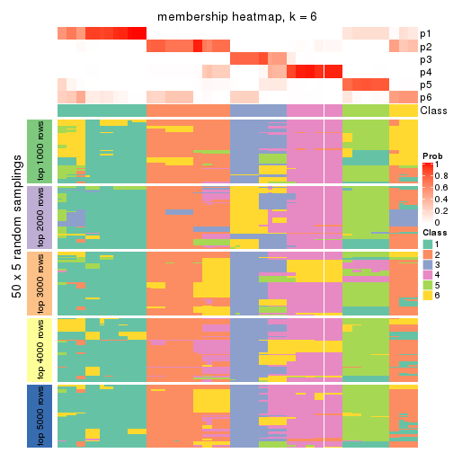
As soon as we have had the classes for columns, we can look for signatures which are significantly different between classes which can be candidate marks for certain classes. Following are the heatmaps for signatures.
Signature heatmaps where rows are scaled:
get_signatures(res, k = 2)
get_signatures(res, k = 3)
get_signatures(res, k = 4)
get_signatures(res, k = 5)
get_signatures(res, k = 6)
Signature heatmaps where rows are not scaled:
get_signatures(res, k = 2, scale_rows = FALSE)
get_signatures(res, k = 3, scale_rows = FALSE)
get_signatures(res, k = 4, scale_rows = FALSE)
get_signatures(res, k = 5, scale_rows = FALSE)
get_signatures(res, k = 6, scale_rows = FALSE)
Compare the overlap of signatures from different k:
compare_signatures(res)
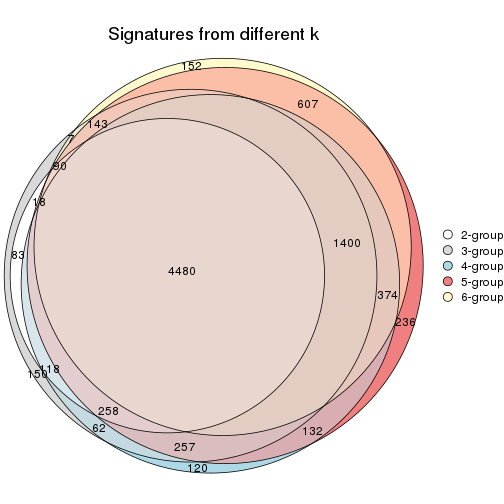
get_signature() returns a data frame invisibly. TO get the list of signatures, the function
call should be assigned to a variable explicitly. In following code, if plot argument is set
to FALSE, no heatmap is plotted while only the differential analysis is performed.
# code only for demonstration
tb = get_signature(res, k = ..., plot = FALSE)
An example of the output of tb is:
#> which_row fdr mean_1 mean_2 scaled_mean_1 scaled_mean_2 km
#> 1 38 0.042760348 8.373488 9.131774 -0.5533452 0.5164555 1
#> 2 40 0.018707592 7.106213 8.469186 -0.6173731 0.5762149 1
#> 3 55 0.019134737 10.221463 11.207825 -0.6159697 0.5749050 1
#> 4 59 0.006059896 5.921854 7.869574 -0.6899429 0.6439467 1
#> 5 60 0.018055526 8.928898 10.211722 -0.6204761 0.5791110 1
#> 6 98 0.009384629 15.714769 14.887706 0.6635654 -0.6193277 2
...
The columns in tb are:
which_row: row indices corresponding to the input matrix.fdr: FDR for the differential test. mean_x: The mean value in group x.scaled_mean_x: The mean value in group x after rows are scaled.km: Row groups if k-means clustering is applied to rows.UMAP plot which shows how samples are separated.
dimension_reduction(res, k = 2, method = "UMAP")
dimension_reduction(res, k = 3, method = "UMAP")
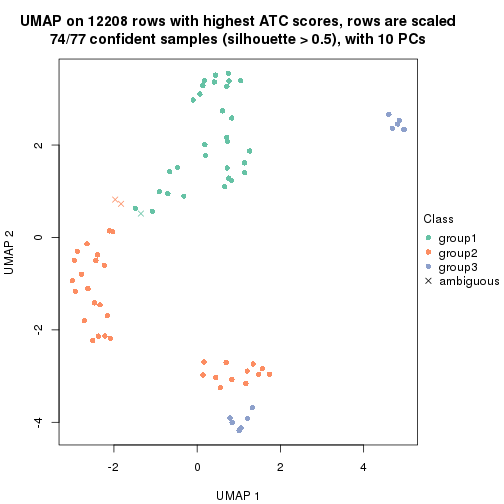
dimension_reduction(res, k = 4, method = "UMAP")
dimension_reduction(res, k = 5, method = "UMAP")
dimension_reduction(res, k = 6, method = "UMAP")
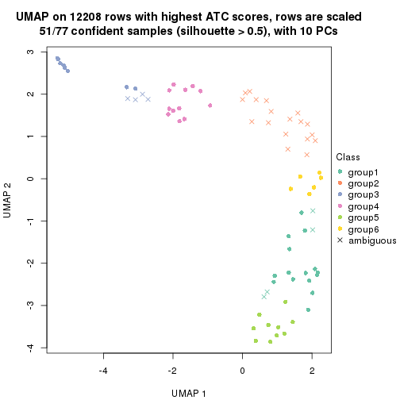
Following heatmap shows how subgroups are split when increasing k:
collect_classes(res)
If matrix rows can be associated to genes, consider to use functional_enrichment(res,
...) to perform function enrichment for the signature genes. See this vignette for more detailed explanations.
The object with results only for a single top-value method and a single partition method can be extracted as:
res = res_list["ATC", "skmeans"]
# you can also extract it by
# res = res_list["ATC:skmeans"]
A summary of res and all the functions that can be applied to it:
res
#> A 'ConsensusPartition' object with k = 2, 3, 4, 5, 6.
#> On a matrix with 12208 rows and 77 columns.
#> Top rows (1000, 2000, 3000, 4000, 5000) are extracted by 'ATC' method.
#> Subgroups are detected by 'skmeans' method.
#> Performed in total 1250 partitions by row resampling.
#> Best k for subgroups seems to be 5.
#>
#> Following methods can be applied to this 'ConsensusPartition' object:
#> [1] "cola_report" "collect_classes" "collect_plots"
#> [4] "collect_stats" "colnames" "compare_signatures"
#> [7] "consensus_heatmap" "dimension_reduction" "functional_enrichment"
#> [10] "get_anno_col" "get_anno" "get_classes"
#> [13] "get_consensus" "get_matrix" "get_membership"
#> [16] "get_param" "get_signatures" "get_stats"
#> [19] "is_best_k" "is_stable_k" "membership_heatmap"
#> [22] "ncol" "nrow" "plot_ecdf"
#> [25] "rownames" "select_partition_number" "show"
#> [28] "suggest_best_k" "test_to_known_factors"
collect_plots() function collects all the plots made from res for all k (number of partitions)
into one single page to provide an easy and fast comparison between different k.
collect_plots(res)
The plots are:
k and the heatmap of
predicted classes for each k.k.k.k.All the plots in panels can be made by individual functions and they are plotted later in this section.
select_partition_number() produces several plots showing different
statistics for choosing “optimized” k. There are following statistics:
k;k, the area increased is defined as \(A_k - A_{k-1}\).The detailed explanations of these statistics can be found in the cola vignette.
Generally speaking, lower PAC score, higher mean silhouette score or higher
concordance corresponds to better partition. Rand index and Jaccard index
measure how similar the current partition is compared to partition with k-1.
If they are too similar, we won't accept k is better than k-1.
select_partition_number(res)
The numeric values for all these statistics can be obtained by get_stats().
get_stats(res)
#> k 1-PAC mean_silhouette concordance area_increased Rand Jaccard
#> 2 2 0.851 0.929 0.966 0.4783 0.513 0.513
#> 3 3 1.000 0.989 0.996 0.3813 0.676 0.449
#> 4 4 0.915 0.913 0.954 0.1146 0.860 0.620
#> 5 5 0.915 0.860 0.938 0.0863 0.938 0.758
#> 6 6 0.889 0.775 0.872 0.0468 0.899 0.553
suggest_best_k() suggests the best \(k\) based on these statistics. The rules are as follows:
suggest_best_k(res)
#> [1] 5
#> attr(,"optional")
#> [1] 3 4
There is also optional best \(k\) = 3 4 that is worth to check.
Following shows the table of the partitions (You need to click the show/hide
code output link to see it). The membership matrix (columns with name p*)
is inferred by
clue::cl_consensus()
function with the SE method. Basically the value in the membership matrix
represents the probability to belong to a certain group. The finall class
label for an item is determined with the group with highest probability it
belongs to.
In get_classes() function, the entropy is calculated from the membership
matrix and the silhouette score is calculated from the consensus matrix.
cbind(get_classes(res, k = 2), get_membership(res, k = 2))
#> class entropy silhouette p1 p2
#> SRR2044063 2 0.9933 0.2438 0.452 0.548
#> SRR2044062 1 0.1184 0.9775 0.984 0.016
#> SRR2044061 1 0.1184 0.9775 0.984 0.016
#> SRR2044060 1 0.9944 0.0598 0.544 0.456
#> SRR2044099 1 0.0000 0.9823 1.000 0.000
#> SRR2044098 1 0.0000 0.9823 1.000 0.000
#> SRR2044097 1 0.0000 0.9823 1.000 0.000
#> SRR2044096 1 0.0000 0.9823 1.000 0.000
#> SRR2044095 1 0.0000 0.9823 1.000 0.000
#> SRR2044094 1 0.0000 0.9823 1.000 0.000
#> SRR2044087 1 0.1184 0.9775 0.984 0.016
#> SRR2044086 1 0.1184 0.9775 0.984 0.016
#> SRR2044085 1 0.1184 0.9775 0.984 0.016
#> SRR2044084 1 0.1184 0.9775 0.984 0.016
#> SRR2044083 1 0.1184 0.9775 0.984 0.016
#> SRR2044082 1 0.1184 0.9775 0.984 0.016
#> SRR2044075 1 0.1184 0.9775 0.984 0.016
#> SRR2044074 1 0.1184 0.9775 0.984 0.016
#> SRR2044073 1 0.1184 0.9775 0.984 0.016
#> SRR2044072 1 0.1184 0.9775 0.984 0.016
#> SRR2044071 1 0.1184 0.9775 0.984 0.016
#> SRR2044070 1 0.1184 0.9775 0.984 0.016
#> SRR2044069 2 0.1184 0.9345 0.016 0.984
#> SRR2044068 2 0.1184 0.9345 0.016 0.984
#> SRR2044067 2 0.1184 0.9345 0.016 0.984
#> SRR2044066 2 0.1184 0.9345 0.016 0.984
#> SRR2044065 2 0.1184 0.9345 0.016 0.984
#> SRR2044064 2 0.1184 0.9345 0.016 0.984
#> SRR2044059 1 0.1184 0.9775 0.984 0.016
#> SRR2044058 1 0.1184 0.9775 0.984 0.016
#> SRR2044057 1 0.0000 0.9823 1.000 0.000
#> SRR2044056 1 0.0000 0.9823 1.000 0.000
#> SRR2044055 1 0.0376 0.9799 0.996 0.004
#> SRR2044054 1 0.0000 0.9823 1.000 0.000
#> SRR2044053 1 0.0000 0.9823 1.000 0.000
#> SRR2044052 1 0.0376 0.9799 0.996 0.004
#> SRR2044051 2 0.7219 0.7809 0.200 0.800
#> SRR2044050 2 0.7299 0.7765 0.204 0.796
#> SRR2044049 2 0.7299 0.7765 0.204 0.796
#> SRR2044048 2 0.7219 0.7809 0.200 0.800
#> SRR2044047 2 0.7299 0.7765 0.204 0.796
#> SRR2044046 2 0.7299 0.7765 0.204 0.796
#> SRR2044045 1 0.0000 0.9823 1.000 0.000
#> SRR2044044 1 0.0000 0.9823 1.000 0.000
#> SRR2044042 1 0.0000 0.9823 1.000 0.000
#> SRR2044041 1 0.0000 0.9823 1.000 0.000
#> SRR2044040 1 0.0000 0.9823 1.000 0.000
#> SRR2044039 2 0.0000 0.9344 0.000 1.000
#> SRR2044038 2 0.0376 0.9335 0.004 0.996
#> SRR2044037 2 0.0000 0.9344 0.000 1.000
#> SRR2044036 2 0.0000 0.9344 0.000 1.000
#> SRR2044035 2 0.0376 0.9335 0.004 0.996
#> SRR2044034 2 0.0000 0.9344 0.000 1.000
#> SRR2044033 1 0.0000 0.9823 1.000 0.000
#> SRR2044032 1 0.0000 0.9823 1.000 0.000
#> SRR2044031 1 0.0000 0.9823 1.000 0.000
#> SRR2044030 1 0.0000 0.9823 1.000 0.000
#> SRR2044029 1 0.0000 0.9823 1.000 0.000
#> SRR2044028 1 0.0000 0.9823 1.000 0.000
#> SRR2044027 2 0.0000 0.9344 0.000 1.000
#> SRR2044026 2 0.0000 0.9344 0.000 1.000
#> SRR2044024 2 0.0000 0.9344 0.000 1.000
#> SRR2044023 2 0.0000 0.9344 0.000 1.000
#> SRR2044025 2 0.0000 0.9344 0.000 1.000
#> SRR2044022 2 0.0000 0.9344 0.000 1.000
#> SRR2044021 1 0.0000 0.9823 1.000 0.000
#> SRR2044020 1 0.0000 0.9823 1.000 0.000
#> SRR2044019 1 0.0376 0.9799 0.996 0.004
#> SRR2044018 1 0.0000 0.9823 1.000 0.000
#> SRR2044017 1 0.0000 0.9823 1.000 0.000
#> SRR2044016 1 0.0376 0.9799 0.996 0.004
#> SRR2044015 2 0.1184 0.9345 0.016 0.984
#> SRR2044014 2 0.1184 0.9345 0.016 0.984
#> SRR2044013 2 0.1184 0.9345 0.016 0.984
#> SRR2044011 2 0.1184 0.9345 0.016 0.984
#> SRR2044010 2 0.1184 0.9345 0.016 0.984
#> SRR2044012 2 0.1184 0.9345 0.016 0.984
cbind(get_classes(res, k = 3), get_membership(res, k = 3))
#> class entropy silhouette p1 p2 p3
#> SRR2044063 2 0.0000 0.987 0.000 1.000 0.000
#> SRR2044062 2 0.0000 0.987 0.000 1.000 0.000
#> SRR2044061 2 0.0000 0.987 0.000 1.000 0.000
#> SRR2044060 2 0.0000 0.987 0.000 1.000 0.000
#> SRR2044099 1 0.0000 1.000 1.000 0.000 0.000
#> SRR2044098 1 0.0000 1.000 1.000 0.000 0.000
#> SRR2044097 1 0.0000 1.000 1.000 0.000 0.000
#> SRR2044096 1 0.0000 1.000 1.000 0.000 0.000
#> SRR2044095 1 0.0000 1.000 1.000 0.000 0.000
#> SRR2044094 1 0.0000 1.000 1.000 0.000 0.000
#> SRR2044087 2 0.0000 0.987 0.000 1.000 0.000
#> SRR2044086 2 0.0000 0.987 0.000 1.000 0.000
#> SRR2044085 2 0.5678 0.538 0.316 0.684 0.000
#> SRR2044084 2 0.0000 0.987 0.000 1.000 0.000
#> SRR2044083 2 0.0000 0.987 0.000 1.000 0.000
#> SRR2044082 2 0.0000 0.987 0.000 1.000 0.000
#> SRR2044075 2 0.0000 0.987 0.000 1.000 0.000
#> SRR2044074 2 0.0000 0.987 0.000 1.000 0.000
#> SRR2044073 2 0.0000 0.987 0.000 1.000 0.000
#> SRR2044072 2 0.0000 0.987 0.000 1.000 0.000
#> SRR2044071 2 0.0000 0.987 0.000 1.000 0.000
#> SRR2044070 2 0.0000 0.987 0.000 1.000 0.000
#> SRR2044069 3 0.0000 1.000 0.000 0.000 1.000
#> SRR2044068 3 0.0000 1.000 0.000 0.000 1.000
#> SRR2044067 3 0.0000 1.000 0.000 0.000 1.000
#> SRR2044066 3 0.0000 1.000 0.000 0.000 1.000
#> SRR2044065 3 0.0000 1.000 0.000 0.000 1.000
#> SRR2044064 3 0.0000 1.000 0.000 0.000 1.000
#> SRR2044059 2 0.0000 0.987 0.000 1.000 0.000
#> SRR2044058 2 0.0000 0.987 0.000 1.000 0.000
#> SRR2044057 1 0.0000 1.000 1.000 0.000 0.000
#> SRR2044056 1 0.0000 1.000 1.000 0.000 0.000
#> SRR2044055 1 0.0000 1.000 1.000 0.000 0.000
#> SRR2044054 1 0.0000 1.000 1.000 0.000 0.000
#> SRR2044053 1 0.0000 1.000 1.000 0.000 0.000
#> SRR2044052 1 0.0000 1.000 1.000 0.000 0.000
#> SRR2044051 2 0.0000 0.987 0.000 1.000 0.000
#> SRR2044050 2 0.0000 0.987 0.000 1.000 0.000
#> SRR2044049 2 0.0000 0.987 0.000 1.000 0.000
#> SRR2044048 2 0.0000 0.987 0.000 1.000 0.000
#> SRR2044047 2 0.0000 0.987 0.000 1.000 0.000
#> SRR2044046 2 0.0000 0.987 0.000 1.000 0.000
#> SRR2044045 1 0.0000 1.000 1.000 0.000 0.000
#> SRR2044044 1 0.0000 1.000 1.000 0.000 0.000
#> SRR2044042 1 0.0000 1.000 1.000 0.000 0.000
#> SRR2044041 1 0.0000 1.000 1.000 0.000 0.000
#> SRR2044040 1 0.0000 1.000 1.000 0.000 0.000
#> SRR2044039 3 0.0000 1.000 0.000 0.000 1.000
#> SRR2044038 2 0.0237 0.984 0.000 0.996 0.004
#> SRR2044037 2 0.0237 0.984 0.000 0.996 0.004
#> SRR2044036 3 0.0000 1.000 0.000 0.000 1.000
#> SRR2044035 2 0.0237 0.984 0.000 0.996 0.004
#> SRR2044034 2 0.0237 0.984 0.000 0.996 0.004
#> SRR2044033 1 0.0000 1.000 1.000 0.000 0.000
#> SRR2044032 1 0.0000 1.000 1.000 0.000 0.000
#> SRR2044031 1 0.0000 1.000 1.000 0.000 0.000
#> SRR2044030 1 0.0000 1.000 1.000 0.000 0.000
#> SRR2044029 1 0.0000 1.000 1.000 0.000 0.000
#> SRR2044028 1 0.0000 1.000 1.000 0.000 0.000
#> SRR2044027 3 0.0000 1.000 0.000 0.000 1.000
#> SRR2044026 2 0.0237 0.984 0.000 0.996 0.004
#> SRR2044024 3 0.0000 1.000 0.000 0.000 1.000
#> SRR2044023 2 0.0424 0.981 0.000 0.992 0.008
#> SRR2044025 3 0.0000 1.000 0.000 0.000 1.000
#> SRR2044022 3 0.0000 1.000 0.000 0.000 1.000
#> SRR2044021 1 0.0000 1.000 1.000 0.000 0.000
#> SRR2044020 1 0.0000 1.000 1.000 0.000 0.000
#> SRR2044019 1 0.0000 1.000 1.000 0.000 0.000
#> SRR2044018 1 0.0000 1.000 1.000 0.000 0.000
#> SRR2044017 1 0.0000 1.000 1.000 0.000 0.000
#> SRR2044016 1 0.0000 1.000 1.000 0.000 0.000
#> SRR2044015 3 0.0000 1.000 0.000 0.000 1.000
#> SRR2044014 3 0.0000 1.000 0.000 0.000 1.000
#> SRR2044013 3 0.0000 1.000 0.000 0.000 1.000
#> SRR2044011 3 0.0000 1.000 0.000 0.000 1.000
#> SRR2044010 3 0.0000 1.000 0.000 0.000 1.000
#> SRR2044012 3 0.0000 1.000 0.000 0.000 1.000
cbind(get_classes(res, k = 4), get_membership(res, k = 4))
#> class entropy silhouette p1 p2 p3 p4
#> SRR2044063 2 0.2408 0.831 0.000 0.896 0.000 0.104
#> SRR2044062 2 0.0000 0.949 0.000 1.000 0.000 0.000
#> SRR2044061 2 0.0000 0.949 0.000 1.000 0.000 0.000
#> SRR2044060 2 0.1637 0.889 0.000 0.940 0.000 0.060
#> SRR2044099 1 0.0188 0.990 0.996 0.000 0.000 0.004
#> SRR2044098 2 0.4008 0.649 0.244 0.756 0.000 0.000
#> SRR2044097 1 0.0188 0.990 0.996 0.000 0.000 0.004
#> SRR2044096 1 0.0188 0.990 0.996 0.000 0.000 0.004
#> SRR2044095 2 0.4008 0.649 0.244 0.756 0.000 0.000
#> SRR2044094 1 0.0188 0.990 0.996 0.000 0.000 0.004
#> SRR2044087 2 0.0188 0.946 0.004 0.996 0.000 0.000
#> SRR2044086 2 0.0000 0.949 0.000 1.000 0.000 0.000
#> SRR2044085 2 0.0707 0.933 0.020 0.980 0.000 0.000
#> SRR2044084 2 0.0000 0.949 0.000 1.000 0.000 0.000
#> SRR2044083 2 0.0000 0.949 0.000 1.000 0.000 0.000
#> SRR2044082 2 0.0707 0.933 0.020 0.980 0.000 0.000
#> SRR2044075 2 0.0000 0.949 0.000 1.000 0.000 0.000
#> SRR2044074 2 0.0000 0.949 0.000 1.000 0.000 0.000
#> SRR2044073 2 0.0000 0.949 0.000 1.000 0.000 0.000
#> SRR2044072 2 0.0000 0.949 0.000 1.000 0.000 0.000
#> SRR2044071 2 0.0000 0.949 0.000 1.000 0.000 0.000
#> SRR2044070 2 0.0000 0.949 0.000 1.000 0.000 0.000
#> SRR2044069 3 0.0000 0.976 0.000 0.000 1.000 0.000
#> SRR2044068 3 0.0000 0.976 0.000 0.000 1.000 0.000
#> SRR2044067 3 0.0000 0.976 0.000 0.000 1.000 0.000
#> SRR2044066 3 0.0000 0.976 0.000 0.000 1.000 0.000
#> SRR2044065 3 0.0000 0.976 0.000 0.000 1.000 0.000
#> SRR2044064 3 0.0000 0.976 0.000 0.000 1.000 0.000
#> SRR2044059 2 0.0000 0.949 0.000 1.000 0.000 0.000
#> SRR2044058 2 0.0000 0.949 0.000 1.000 0.000 0.000
#> SRR2044057 1 0.0707 0.988 0.980 0.000 0.000 0.020
#> SRR2044056 1 0.0707 0.988 0.980 0.000 0.000 0.020
#> SRR2044055 1 0.0188 0.990 0.996 0.000 0.000 0.004
#> SRR2044054 1 0.0707 0.988 0.980 0.000 0.000 0.020
#> SRR2044053 1 0.0707 0.988 0.980 0.000 0.000 0.020
#> SRR2044052 1 0.0188 0.990 0.996 0.000 0.000 0.004
#> SRR2044051 4 0.3726 0.752 0.000 0.212 0.000 0.788
#> SRR2044050 4 0.4843 0.551 0.000 0.396 0.000 0.604
#> SRR2044049 4 0.4843 0.551 0.000 0.396 0.000 0.604
#> SRR2044048 4 0.4040 0.723 0.000 0.248 0.000 0.752
#> SRR2044047 4 0.4843 0.551 0.000 0.396 0.000 0.604
#> SRR2044046 4 0.4843 0.551 0.000 0.396 0.000 0.604
#> SRR2044045 1 0.0707 0.988 0.980 0.000 0.000 0.020
#> SRR2044044 1 0.0707 0.988 0.980 0.000 0.000 0.020
#> SRR2044042 1 0.0707 0.988 0.980 0.000 0.000 0.020
#> SRR2044041 1 0.0707 0.988 0.980 0.000 0.000 0.020
#> SRR2044040 1 0.0188 0.990 0.996 0.000 0.000 0.004
#> SRR2044039 4 0.0817 0.829 0.000 0.000 0.024 0.976
#> SRR2044038 4 0.0817 0.843 0.000 0.024 0.000 0.976
#> SRR2044037 4 0.0817 0.843 0.000 0.024 0.000 0.976
#> SRR2044036 4 0.0817 0.829 0.000 0.000 0.024 0.976
#> SRR2044035 4 0.0817 0.843 0.000 0.024 0.000 0.976
#> SRR2044034 4 0.0817 0.843 0.000 0.024 0.000 0.976
#> SRR2044033 1 0.0707 0.988 0.980 0.000 0.000 0.020
#> SRR2044032 1 0.0707 0.988 0.980 0.000 0.000 0.020
#> SRR2044031 1 0.0188 0.990 0.996 0.000 0.000 0.004
#> SRR2044030 1 0.0707 0.988 0.980 0.000 0.000 0.020
#> SRR2044029 1 0.0707 0.988 0.980 0.000 0.000 0.020
#> SRR2044028 1 0.0188 0.990 0.996 0.000 0.000 0.004
#> SRR2044027 3 0.3074 0.839 0.000 0.000 0.848 0.152
#> SRR2044026 4 0.0817 0.843 0.000 0.024 0.000 0.976
#> SRR2044024 3 0.3074 0.839 0.000 0.000 0.848 0.152
#> SRR2044023 4 0.0817 0.843 0.000 0.024 0.000 0.976
#> SRR2044025 4 0.0817 0.829 0.000 0.000 0.024 0.976
#> SRR2044022 4 0.0817 0.829 0.000 0.000 0.024 0.976
#> SRR2044021 1 0.0188 0.990 0.996 0.000 0.000 0.004
#> SRR2044020 1 0.0000 0.990 1.000 0.000 0.000 0.000
#> SRR2044019 1 0.0188 0.990 0.996 0.000 0.000 0.004
#> SRR2044018 1 0.0188 0.990 0.996 0.000 0.000 0.004
#> SRR2044017 1 0.0000 0.990 1.000 0.000 0.000 0.000
#> SRR2044016 1 0.0188 0.990 0.996 0.000 0.000 0.004
#> SRR2044015 3 0.0000 0.976 0.000 0.000 1.000 0.000
#> SRR2044014 3 0.0000 0.976 0.000 0.000 1.000 0.000
#> SRR2044013 3 0.0000 0.976 0.000 0.000 1.000 0.000
#> SRR2044011 3 0.0000 0.976 0.000 0.000 1.000 0.000
#> SRR2044010 3 0.0000 0.976 0.000 0.000 1.000 0.000
#> SRR2044012 3 0.0000 0.976 0.000 0.000 1.000 0.000
cbind(get_classes(res, k = 5), get_membership(res, k = 5))
#> class entropy silhouette p1 p2 p3 p4 p5
#> SRR2044063 2 0.1168 0.899 0.000 0.960 0.000 0.032 0.008
#> SRR2044062 2 0.0290 0.928 0.000 0.992 0.000 0.000 0.008
#> SRR2044061 2 0.0290 0.928 0.000 0.992 0.000 0.000 0.008
#> SRR2044060 2 0.0798 0.916 0.000 0.976 0.000 0.016 0.008
#> SRR2044099 1 0.0162 0.999 0.996 0.000 0.000 0.000 0.004
#> SRR2044098 2 0.4793 0.225 0.436 0.544 0.000 0.000 0.020
#> SRR2044097 1 0.0000 0.995 1.000 0.000 0.000 0.000 0.000
#> SRR2044096 1 0.0162 0.999 0.996 0.000 0.000 0.000 0.004
#> SRR2044095 2 0.4760 0.280 0.416 0.564 0.000 0.000 0.020
#> SRR2044094 1 0.0000 0.995 1.000 0.000 0.000 0.000 0.000
#> SRR2044087 2 0.0162 0.930 0.004 0.996 0.000 0.000 0.000
#> SRR2044086 2 0.0162 0.930 0.004 0.996 0.000 0.000 0.000
#> SRR2044085 2 0.1270 0.889 0.052 0.948 0.000 0.000 0.000
#> SRR2044084 2 0.0162 0.930 0.004 0.996 0.000 0.000 0.000
#> SRR2044083 2 0.0162 0.930 0.004 0.996 0.000 0.000 0.000
#> SRR2044082 2 0.0794 0.912 0.028 0.972 0.000 0.000 0.000
#> SRR2044075 2 0.0162 0.930 0.000 0.996 0.000 0.000 0.004
#> SRR2044074 2 0.0000 0.931 0.000 1.000 0.000 0.000 0.000
#> SRR2044073 2 0.0000 0.931 0.000 1.000 0.000 0.000 0.000
#> SRR2044072 2 0.0000 0.931 0.000 1.000 0.000 0.000 0.000
#> SRR2044071 2 0.0000 0.931 0.000 1.000 0.000 0.000 0.000
#> SRR2044070 2 0.0000 0.931 0.000 1.000 0.000 0.000 0.000
#> SRR2044069 3 0.0000 0.968 0.000 0.000 1.000 0.000 0.000
#> SRR2044068 3 0.0000 0.968 0.000 0.000 1.000 0.000 0.000
#> SRR2044067 3 0.0000 0.968 0.000 0.000 1.000 0.000 0.000
#> SRR2044066 3 0.0000 0.968 0.000 0.000 1.000 0.000 0.000
#> SRR2044065 3 0.0000 0.968 0.000 0.000 1.000 0.000 0.000
#> SRR2044064 3 0.0000 0.968 0.000 0.000 1.000 0.000 0.000
#> SRR2044059 2 0.0162 0.930 0.000 0.996 0.000 0.000 0.004
#> SRR2044058 2 0.0290 0.928 0.000 0.992 0.000 0.000 0.008
#> SRR2044057 5 0.0290 0.923 0.008 0.000 0.000 0.000 0.992
#> SRR2044056 5 0.0290 0.923 0.008 0.000 0.000 0.000 0.992
#> SRR2044055 1 0.0162 0.999 0.996 0.000 0.000 0.000 0.004
#> SRR2044054 5 0.0290 0.923 0.008 0.000 0.000 0.000 0.992
#> SRR2044053 5 0.0290 0.923 0.008 0.000 0.000 0.000 0.992
#> SRR2044052 1 0.0162 0.999 0.996 0.000 0.000 0.000 0.004
#> SRR2044051 4 0.3209 0.739 0.000 0.180 0.000 0.812 0.008
#> SRR2044050 4 0.4497 0.463 0.000 0.424 0.000 0.568 0.008
#> SRR2044049 4 0.4497 0.463 0.000 0.424 0.000 0.568 0.008
#> SRR2044048 4 0.3934 0.659 0.000 0.276 0.000 0.716 0.008
#> SRR2044047 4 0.4497 0.463 0.000 0.424 0.000 0.568 0.008
#> SRR2044046 4 0.4497 0.463 0.000 0.424 0.000 0.568 0.008
#> SRR2044045 5 0.0290 0.923 0.008 0.000 0.000 0.000 0.992
#> SRR2044044 5 0.0290 0.923 0.008 0.000 0.000 0.000 0.992
#> SRR2044042 5 0.0290 0.923 0.008 0.000 0.000 0.000 0.992
#> SRR2044041 5 0.0290 0.923 0.008 0.000 0.000 0.000 0.992
#> SRR2044040 1 0.0162 0.999 0.996 0.000 0.000 0.000 0.004
#> SRR2044039 4 0.0000 0.829 0.000 0.000 0.000 1.000 0.000
#> SRR2044038 4 0.0000 0.829 0.000 0.000 0.000 1.000 0.000
#> SRR2044037 4 0.0000 0.829 0.000 0.000 0.000 1.000 0.000
#> SRR2044036 4 0.0000 0.829 0.000 0.000 0.000 1.000 0.000
#> SRR2044035 4 0.0000 0.829 0.000 0.000 0.000 1.000 0.000
#> SRR2044034 4 0.0000 0.829 0.000 0.000 0.000 1.000 0.000
#> SRR2044033 5 0.0290 0.923 0.008 0.000 0.000 0.000 0.992
#> SRR2044032 5 0.0290 0.923 0.008 0.000 0.000 0.000 0.992
#> SRR2044031 1 0.0162 0.999 0.996 0.000 0.000 0.000 0.004
#> SRR2044030 5 0.0290 0.923 0.008 0.000 0.000 0.000 0.992
#> SRR2044029 5 0.0290 0.923 0.008 0.000 0.000 0.000 0.992
#> SRR2044028 1 0.0162 0.999 0.996 0.000 0.000 0.000 0.004
#> SRR2044027 3 0.3143 0.775 0.000 0.000 0.796 0.204 0.000
#> SRR2044026 4 0.0000 0.829 0.000 0.000 0.000 1.000 0.000
#> SRR2044024 3 0.3143 0.775 0.000 0.000 0.796 0.204 0.000
#> SRR2044023 4 0.0000 0.829 0.000 0.000 0.000 1.000 0.000
#> SRR2044025 4 0.0000 0.829 0.000 0.000 0.000 1.000 0.000
#> SRR2044022 4 0.0000 0.829 0.000 0.000 0.000 1.000 0.000
#> SRR2044021 1 0.0162 0.999 0.996 0.000 0.000 0.000 0.004
#> SRR2044020 5 0.4297 0.158 0.472 0.000 0.000 0.000 0.528
#> SRR2044019 1 0.0162 0.999 0.996 0.000 0.000 0.000 0.004
#> SRR2044018 1 0.0162 0.999 0.996 0.000 0.000 0.000 0.004
#> SRR2044017 5 0.4297 0.158 0.472 0.000 0.000 0.000 0.528
#> SRR2044016 1 0.0162 0.999 0.996 0.000 0.000 0.000 0.004
#> SRR2044015 3 0.0000 0.968 0.000 0.000 1.000 0.000 0.000
#> SRR2044014 3 0.0000 0.968 0.000 0.000 1.000 0.000 0.000
#> SRR2044013 3 0.0000 0.968 0.000 0.000 1.000 0.000 0.000
#> SRR2044011 3 0.0000 0.968 0.000 0.000 1.000 0.000 0.000
#> SRR2044010 3 0.0000 0.968 0.000 0.000 1.000 0.000 0.000
#> SRR2044012 3 0.0000 0.968 0.000 0.000 1.000 0.000 0.000
cbind(get_classes(res, k = 6), get_membership(res, k = 6))
#> class entropy silhouette p1 p2 p3 p4 p5 p6
#> SRR2044063 2 0.0146 0.75844 0.000 0.996 0.000 0.000 0.000 0.004
#> SRR2044062 2 0.2912 0.66019 0.000 0.784 0.000 0.000 0.000 0.216
#> SRR2044061 2 0.2941 0.65691 0.000 0.780 0.000 0.000 0.000 0.220
#> SRR2044060 2 0.0146 0.75844 0.000 0.996 0.000 0.000 0.000 0.004
#> SRR2044099 1 0.0865 0.97145 0.964 0.000 0.000 0.000 0.000 0.036
#> SRR2044098 6 0.2146 0.58647 0.116 0.004 0.000 0.000 0.000 0.880
#> SRR2044097 1 0.0790 0.97410 0.968 0.000 0.000 0.000 0.000 0.032
#> SRR2044096 1 0.0363 0.98637 0.988 0.000 0.000 0.000 0.000 0.012
#> SRR2044095 6 0.1908 0.59913 0.096 0.004 0.000 0.000 0.000 0.900
#> SRR2044094 1 0.0790 0.97481 0.968 0.000 0.000 0.000 0.000 0.032
#> SRR2044087 6 0.1765 0.64387 0.000 0.096 0.000 0.000 0.000 0.904
#> SRR2044086 6 0.1663 0.64735 0.000 0.088 0.000 0.000 0.000 0.912
#> SRR2044085 6 0.1196 0.64520 0.008 0.040 0.000 0.000 0.000 0.952
#> SRR2044084 6 0.1714 0.64598 0.000 0.092 0.000 0.000 0.000 0.908
#> SRR2044083 6 0.1663 0.64735 0.000 0.088 0.000 0.000 0.000 0.912
#> SRR2044082 6 0.1285 0.64728 0.004 0.052 0.000 0.000 0.000 0.944
#> SRR2044075 2 0.3647 0.42005 0.000 0.640 0.000 0.000 0.000 0.360
#> SRR2044074 6 0.3843 0.08717 0.000 0.452 0.000 0.000 0.000 0.548
#> SRR2044073 6 0.3847 0.07518 0.000 0.456 0.000 0.000 0.000 0.544
#> SRR2044072 2 0.3868 -0.00256 0.000 0.508 0.000 0.000 0.000 0.492
#> SRR2044071 6 0.3847 0.07518 0.000 0.456 0.000 0.000 0.000 0.544
#> SRR2044070 6 0.3838 0.09744 0.000 0.448 0.000 0.000 0.000 0.552
#> SRR2044069 3 0.0508 0.98633 0.000 0.004 0.984 0.000 0.000 0.012
#> SRR2044068 3 0.0508 0.98633 0.000 0.004 0.984 0.000 0.000 0.012
#> SRR2044067 3 0.0508 0.98633 0.000 0.004 0.984 0.000 0.000 0.012
#> SRR2044066 3 0.0508 0.98633 0.000 0.004 0.984 0.000 0.000 0.012
#> SRR2044065 3 0.0508 0.98633 0.000 0.004 0.984 0.000 0.000 0.012
#> SRR2044064 3 0.0508 0.98633 0.000 0.004 0.984 0.000 0.000 0.012
#> SRR2044059 2 0.3371 0.55734 0.000 0.708 0.000 0.000 0.000 0.292
#> SRR2044058 2 0.2969 0.65280 0.000 0.776 0.000 0.000 0.000 0.224
#> SRR2044057 5 0.0000 0.96252 0.000 0.000 0.000 0.000 1.000 0.000
#> SRR2044056 5 0.0000 0.96252 0.000 0.000 0.000 0.000 1.000 0.000
#> SRR2044055 1 0.0000 0.99141 1.000 0.000 0.000 0.000 0.000 0.000
#> SRR2044054 5 0.0000 0.96252 0.000 0.000 0.000 0.000 1.000 0.000
#> SRR2044053 5 0.0000 0.96252 0.000 0.000 0.000 0.000 1.000 0.000
#> SRR2044052 1 0.0000 0.99141 1.000 0.000 0.000 0.000 0.000 0.000
#> SRR2044051 2 0.2092 0.70268 0.000 0.876 0.000 0.124 0.000 0.000
#> SRR2044050 2 0.1204 0.76225 0.000 0.944 0.000 0.056 0.000 0.000
#> SRR2044049 2 0.1204 0.76225 0.000 0.944 0.000 0.056 0.000 0.000
#> SRR2044048 2 0.1610 0.74032 0.000 0.916 0.000 0.084 0.000 0.000
#> SRR2044047 2 0.1204 0.76225 0.000 0.944 0.000 0.056 0.000 0.000
#> SRR2044046 2 0.1204 0.76225 0.000 0.944 0.000 0.056 0.000 0.000
#> SRR2044045 5 0.0000 0.96252 0.000 0.000 0.000 0.000 1.000 0.000
#> SRR2044044 5 0.1814 0.92208 0.000 0.000 0.000 0.000 0.900 0.100
#> SRR2044042 5 0.0000 0.96252 0.000 0.000 0.000 0.000 1.000 0.000
#> SRR2044041 5 0.1814 0.92208 0.000 0.000 0.000 0.000 0.900 0.100
#> SRR2044040 1 0.0000 0.99141 1.000 0.000 0.000 0.000 0.000 0.000
#> SRR2044039 4 0.0146 0.88897 0.000 0.000 0.004 0.996 0.000 0.000
#> SRR2044038 4 0.0547 0.89454 0.000 0.020 0.000 0.980 0.000 0.000
#> SRR2044037 4 0.0547 0.89454 0.000 0.020 0.000 0.980 0.000 0.000
#> SRR2044036 4 0.0146 0.88897 0.000 0.000 0.004 0.996 0.000 0.000
#> SRR2044035 4 0.0547 0.89454 0.000 0.020 0.000 0.980 0.000 0.000
#> SRR2044034 4 0.0547 0.89454 0.000 0.020 0.000 0.980 0.000 0.000
#> SRR2044033 5 0.0000 0.96252 0.000 0.000 0.000 0.000 1.000 0.000
#> SRR2044032 5 0.1910 0.91760 0.000 0.000 0.000 0.000 0.892 0.108
#> SRR2044031 1 0.0000 0.99141 1.000 0.000 0.000 0.000 0.000 0.000
#> SRR2044030 5 0.0000 0.96252 0.000 0.000 0.000 0.000 1.000 0.000
#> SRR2044029 5 0.1910 0.91760 0.000 0.000 0.000 0.000 0.892 0.108
#> SRR2044028 1 0.0000 0.99141 1.000 0.000 0.000 0.000 0.000 0.000
#> SRR2044027 4 0.4083 0.19642 0.000 0.000 0.460 0.532 0.000 0.008
#> SRR2044026 4 0.1196 0.88576 0.000 0.040 0.000 0.952 0.000 0.008
#> SRR2044024 4 0.4083 0.19642 0.000 0.000 0.460 0.532 0.000 0.008
#> SRR2044023 4 0.1196 0.88576 0.000 0.040 0.000 0.952 0.000 0.008
#> SRR2044025 4 0.0622 0.89338 0.000 0.012 0.000 0.980 0.000 0.008
#> SRR2044022 4 0.0622 0.89338 0.000 0.012 0.000 0.980 0.000 0.008
#> SRR2044021 1 0.0000 0.99141 1.000 0.000 0.000 0.000 0.000 0.000
#> SRR2044020 6 0.6047 -0.01996 0.272 0.000 0.000 0.000 0.316 0.412
#> SRR2044019 1 0.0000 0.99141 1.000 0.000 0.000 0.000 0.000 0.000
#> SRR2044018 1 0.0000 0.99141 1.000 0.000 0.000 0.000 0.000 0.000
#> SRR2044017 6 0.6044 -0.00504 0.276 0.000 0.000 0.000 0.308 0.416
#> SRR2044016 1 0.0000 0.99141 1.000 0.000 0.000 0.000 0.000 0.000
#> SRR2044015 3 0.0000 0.98535 0.000 0.000 1.000 0.000 0.000 0.000
#> SRR2044014 3 0.0547 0.97969 0.000 0.000 0.980 0.020 0.000 0.000
#> SRR2044013 3 0.0547 0.97969 0.000 0.000 0.980 0.020 0.000 0.000
#> SRR2044011 3 0.0547 0.97969 0.000 0.000 0.980 0.020 0.000 0.000
#> SRR2044010 3 0.0547 0.97969 0.000 0.000 0.980 0.020 0.000 0.000
#> SRR2044012 3 0.0000 0.98535 0.000 0.000 1.000 0.000 0.000 0.000
Heatmaps for the consensus matrix. It visualizes the probability of two samples to be in a same group.
consensus_heatmap(res, k = 2)
consensus_heatmap(res, k = 3)
consensus_heatmap(res, k = 4)
consensus_heatmap(res, k = 5)
consensus_heatmap(res, k = 6)
Heatmaps for the membership of samples in all partitions to see how consistent they are:
membership_heatmap(res, k = 2)
membership_heatmap(res, k = 3)
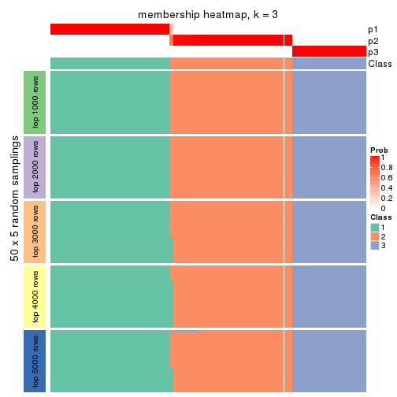
membership_heatmap(res, k = 4)
membership_heatmap(res, k = 5)
membership_heatmap(res, k = 6)
As soon as we have had the classes for columns, we can look for signatures which are significantly different between classes which can be candidate marks for certain classes. Following are the heatmaps for signatures.
Signature heatmaps where rows are scaled:
get_signatures(res, k = 2)
get_signatures(res, k = 3)
get_signatures(res, k = 4)
get_signatures(res, k = 5)
get_signatures(res, k = 6)
Signature heatmaps where rows are not scaled:
get_signatures(res, k = 2, scale_rows = FALSE)
get_signatures(res, k = 3, scale_rows = FALSE)
get_signatures(res, k = 4, scale_rows = FALSE)
get_signatures(res, k = 5, scale_rows = FALSE)
get_signatures(res, k = 6, scale_rows = FALSE)
Compare the overlap of signatures from different k:
compare_signatures(res)
get_signature() returns a data frame invisibly. TO get the list of signatures, the function
call should be assigned to a variable explicitly. In following code, if plot argument is set
to FALSE, no heatmap is plotted while only the differential analysis is performed.
# code only for demonstration
tb = get_signature(res, k = ..., plot = FALSE)
An example of the output of tb is:
#> which_row fdr mean_1 mean_2 scaled_mean_1 scaled_mean_2 km
#> 1 38 0.042760348 8.373488 9.131774 -0.5533452 0.5164555 1
#> 2 40 0.018707592 7.106213 8.469186 -0.6173731 0.5762149 1
#> 3 55 0.019134737 10.221463 11.207825 -0.6159697 0.5749050 1
#> 4 59 0.006059896 5.921854 7.869574 -0.6899429 0.6439467 1
#> 5 60 0.018055526 8.928898 10.211722 -0.6204761 0.5791110 1
#> 6 98 0.009384629 15.714769 14.887706 0.6635654 -0.6193277 2
...
The columns in tb are:
which_row: row indices corresponding to the input matrix.fdr: FDR for the differential test. mean_x: The mean value in group x.scaled_mean_x: The mean value in group x after rows are scaled.km: Row groups if k-means clustering is applied to rows.UMAP plot which shows how samples are separated.
dimension_reduction(res, k = 2, method = "UMAP")
dimension_reduction(res, k = 3, method = "UMAP")
dimension_reduction(res, k = 4, method = "UMAP")
dimension_reduction(res, k = 5, method = "UMAP")
dimension_reduction(res, k = 6, method = "UMAP")
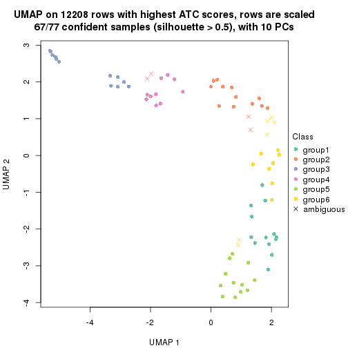
Following heatmap shows how subgroups are split when increasing k:
collect_classes(res)
If matrix rows can be associated to genes, consider to use functional_enrichment(res,
...) to perform function enrichment for the signature genes. See this vignette for more detailed explanations.
The object with results only for a single top-value method and a single partition method can be extracted as:
res = res_list["ATC", "pam"]
# you can also extract it by
# res = res_list["ATC:pam"]
A summary of res and all the functions that can be applied to it:
res
#> A 'ConsensusPartition' object with k = 2, 3, 4, 5, 6.
#> On a matrix with 12208 rows and 77 columns.
#> Top rows (1000, 2000, 3000, 4000, 5000) are extracted by 'ATC' method.
#> Subgroups are detected by 'pam' method.
#> Performed in total 1250 partitions by row resampling.
#> Best k for subgroups seems to be 5.
#>
#> Following methods can be applied to this 'ConsensusPartition' object:
#> [1] "cola_report" "collect_classes" "collect_plots"
#> [4] "collect_stats" "colnames" "compare_signatures"
#> [7] "consensus_heatmap" "dimension_reduction" "functional_enrichment"
#> [10] "get_anno_col" "get_anno" "get_classes"
#> [13] "get_consensus" "get_matrix" "get_membership"
#> [16] "get_param" "get_signatures" "get_stats"
#> [19] "is_best_k" "is_stable_k" "membership_heatmap"
#> [22] "ncol" "nrow" "plot_ecdf"
#> [25] "rownames" "select_partition_number" "show"
#> [28] "suggest_best_k" "test_to_known_factors"
collect_plots() function collects all the plots made from res for all k (number of partitions)
into one single page to provide an easy and fast comparison between different k.
collect_plots(res)
The plots are:
k and the heatmap of
predicted classes for each k.k.k.k.All the plots in panels can be made by individual functions and they are plotted later in this section.
select_partition_number() produces several plots showing different
statistics for choosing “optimized” k. There are following statistics:
k;k, the area increased is defined as \(A_k - A_{k-1}\).The detailed explanations of these statistics can be found in the cola vignette.
Generally speaking, lower PAC score, higher mean silhouette score or higher
concordance corresponds to better partition. Rand index and Jaccard index
measure how similar the current partition is compared to partition with k-1.
If they are too similar, we won't accept k is better than k-1.
select_partition_number(res)

The numeric values for all these statistics can be obtained by get_stats().
get_stats(res)
#> k 1-PAC mean_silhouette concordance area_increased Rand Jaccard
#> 2 2 1.000 0.970 0.988 0.2491 0.752 0.752
#> 3 3 0.713 0.905 0.949 1.2787 0.604 0.492
#> 4 4 0.956 0.906 0.965 0.2583 0.786 0.527
#> 5 5 0.960 0.914 0.968 0.0311 0.974 0.908
#> 6 6 0.829 0.837 0.921 0.0959 0.884 0.595
suggest_best_k() suggests the best \(k\) based on these statistics. The rules are as follows:
suggest_best_k(res)
#> [1] 5
#> attr(,"optional")
#> [1] 2 4
There is also optional best \(k\) = 2 4 that is worth to check.
Following shows the table of the partitions (You need to click the show/hide
code output link to see it). The membership matrix (columns with name p*)
is inferred by
clue::cl_consensus()
function with the SE method. Basically the value in the membership matrix
represents the probability to belong to a certain group. The finall class
label for an item is determined with the group with highest probability it
belongs to.
In get_classes() function, the entropy is calculated from the membership
matrix and the silhouette score is calculated from the consensus matrix.
cbind(get_classes(res, k = 2), get_membership(res, k = 2))
#> class entropy silhouette p1 p2
#> SRR2044063 1 0.000 0.9924 1.000 0.000
#> SRR2044062 1 0.000 0.9924 1.000 0.000
#> SRR2044061 1 0.000 0.9924 1.000 0.000
#> SRR2044060 1 0.000 0.9924 1.000 0.000
#> SRR2044099 1 0.000 0.9924 1.000 0.000
#> SRR2044098 1 0.000 0.9924 1.000 0.000
#> SRR2044097 1 0.000 0.9924 1.000 0.000
#> SRR2044096 1 0.000 0.9924 1.000 0.000
#> SRR2044095 1 0.000 0.9924 1.000 0.000
#> SRR2044094 1 0.000 0.9924 1.000 0.000
#> SRR2044087 1 0.000 0.9924 1.000 0.000
#> SRR2044086 1 0.000 0.9924 1.000 0.000
#> SRR2044085 1 0.000 0.9924 1.000 0.000
#> SRR2044084 1 0.000 0.9924 1.000 0.000
#> SRR2044083 1 0.000 0.9924 1.000 0.000
#> SRR2044082 1 0.000 0.9924 1.000 0.000
#> SRR2044075 1 0.000 0.9924 1.000 0.000
#> SRR2044074 1 0.000 0.9924 1.000 0.000
#> SRR2044073 1 0.000 0.9924 1.000 0.000
#> SRR2044072 1 0.000 0.9924 1.000 0.000
#> SRR2044071 1 0.000 0.9924 1.000 0.000
#> SRR2044070 1 0.000 0.9924 1.000 0.000
#> SRR2044069 2 0.000 0.9560 0.000 1.000
#> SRR2044068 2 0.000 0.9560 0.000 1.000
#> SRR2044067 2 0.000 0.9560 0.000 1.000
#> SRR2044066 2 0.000 0.9560 0.000 1.000
#> SRR2044065 2 0.000 0.9560 0.000 1.000
#> SRR2044064 2 0.000 0.9560 0.000 1.000
#> SRR2044059 1 0.000 0.9924 1.000 0.000
#> SRR2044058 1 0.000 0.9924 1.000 0.000
#> SRR2044057 1 0.000 0.9924 1.000 0.000
#> SRR2044056 1 0.000 0.9924 1.000 0.000
#> SRR2044055 1 0.000 0.9924 1.000 0.000
#> SRR2044054 1 0.000 0.9924 1.000 0.000
#> SRR2044053 1 0.000 0.9924 1.000 0.000
#> SRR2044052 1 0.000 0.9924 1.000 0.000
#> SRR2044051 1 0.000 0.9924 1.000 0.000
#> SRR2044050 1 0.000 0.9924 1.000 0.000
#> SRR2044049 1 0.000 0.9924 1.000 0.000
#> SRR2044048 1 0.000 0.9924 1.000 0.000
#> SRR2044047 1 0.000 0.9924 1.000 0.000
#> SRR2044046 1 0.000 0.9924 1.000 0.000
#> SRR2044045 1 0.000 0.9924 1.000 0.000
#> SRR2044044 1 0.000 0.9924 1.000 0.000
#> SRR2044042 1 0.000 0.9924 1.000 0.000
#> SRR2044041 1 0.000 0.9924 1.000 0.000
#> SRR2044040 1 0.000 0.9924 1.000 0.000
#> SRR2044039 1 0.000 0.9924 1.000 0.000
#> SRR2044038 1 0.000 0.9924 1.000 0.000
#> SRR2044037 1 0.000 0.9924 1.000 0.000
#> SRR2044036 1 0.000 0.9924 1.000 0.000
#> SRR2044035 1 0.000 0.9924 1.000 0.000
#> SRR2044034 1 0.000 0.9924 1.000 0.000
#> SRR2044033 1 0.000 0.9924 1.000 0.000
#> SRR2044032 1 0.000 0.9924 1.000 0.000
#> SRR2044031 1 0.000 0.9924 1.000 0.000
#> SRR2044030 1 0.000 0.9924 1.000 0.000
#> SRR2044029 1 0.000 0.9924 1.000 0.000
#> SRR2044028 1 0.000 0.9924 1.000 0.000
#> SRR2044027 1 0.000 0.9924 1.000 0.000
#> SRR2044026 1 0.000 0.9924 1.000 0.000
#> SRR2044024 1 0.000 0.9924 1.000 0.000
#> SRR2044023 1 0.000 0.9924 1.000 0.000
#> SRR2044025 1 0.000 0.9924 1.000 0.000
#> SRR2044022 1 0.000 0.9924 1.000 0.000
#> SRR2044021 1 0.000 0.9924 1.000 0.000
#> SRR2044020 1 0.000 0.9924 1.000 0.000
#> SRR2044019 1 0.000 0.9924 1.000 0.000
#> SRR2044018 1 0.000 0.9924 1.000 0.000
#> SRR2044017 1 0.000 0.9924 1.000 0.000
#> SRR2044016 1 0.000 0.9924 1.000 0.000
#> SRR2044015 2 0.000 0.9560 0.000 1.000
#> SRR2044014 1 0.997 0.0387 0.532 0.468
#> SRR2044013 2 0.730 0.7698 0.204 0.796
#> SRR2044011 2 0.204 0.9375 0.032 0.968
#> SRR2044010 2 0.714 0.7809 0.196 0.804
#> SRR2044012 2 0.000 0.9560 0.000 1.000
cbind(get_classes(res, k = 3), get_membership(res, k = 3))
#> class entropy silhouette p1 p2 p3
#> SRR2044063 2 0.4235 0.824 0.176 0.824 0.000
#> SRR2044062 2 0.5465 0.716 0.288 0.712 0.000
#> SRR2044061 2 0.4555 0.806 0.200 0.800 0.000
#> SRR2044060 2 0.4235 0.824 0.176 0.824 0.000
#> SRR2044099 1 0.0000 0.981 1.000 0.000 0.000
#> SRR2044098 1 0.0000 0.981 1.000 0.000 0.000
#> SRR2044097 1 0.0000 0.981 1.000 0.000 0.000
#> SRR2044096 1 0.0000 0.981 1.000 0.000 0.000
#> SRR2044095 1 0.0000 0.981 1.000 0.000 0.000
#> SRR2044094 1 0.0000 0.981 1.000 0.000 0.000
#> SRR2044087 1 0.0000 0.981 1.000 0.000 0.000
#> SRR2044086 1 0.0592 0.971 0.988 0.012 0.000
#> SRR2044085 1 0.0000 0.981 1.000 0.000 0.000
#> SRR2044084 1 0.0000 0.981 1.000 0.000 0.000
#> SRR2044083 1 0.0592 0.971 0.988 0.012 0.000
#> SRR2044082 1 0.0000 0.981 1.000 0.000 0.000
#> SRR2044075 2 0.5621 0.687 0.308 0.692 0.000
#> SRR2044074 1 0.3816 0.812 0.852 0.148 0.000
#> SRR2044073 1 0.3816 0.812 0.852 0.148 0.000
#> SRR2044072 2 0.6274 0.348 0.456 0.544 0.000
#> SRR2044071 1 0.3816 0.812 0.852 0.148 0.000
#> SRR2044070 1 0.3551 0.835 0.868 0.132 0.000
#> SRR2044069 3 0.0000 1.000 0.000 0.000 1.000
#> SRR2044068 3 0.0000 1.000 0.000 0.000 1.000
#> SRR2044067 3 0.0000 1.000 0.000 0.000 1.000
#> SRR2044066 3 0.0000 1.000 0.000 0.000 1.000
#> SRR2044065 3 0.0000 1.000 0.000 0.000 1.000
#> SRR2044064 3 0.0000 1.000 0.000 0.000 1.000
#> SRR2044059 2 0.5591 0.694 0.304 0.696 0.000
#> SRR2044058 2 0.4605 0.802 0.204 0.796 0.000
#> SRR2044057 1 0.0000 0.981 1.000 0.000 0.000
#> SRR2044056 1 0.0000 0.981 1.000 0.000 0.000
#> SRR2044055 1 0.0000 0.981 1.000 0.000 0.000
#> SRR2044054 1 0.0000 0.981 1.000 0.000 0.000
#> SRR2044053 1 0.0000 0.981 1.000 0.000 0.000
#> SRR2044052 1 0.0000 0.981 1.000 0.000 0.000
#> SRR2044051 2 0.4235 0.824 0.176 0.824 0.000
#> SRR2044050 2 0.4235 0.824 0.176 0.824 0.000
#> SRR2044049 2 0.4235 0.824 0.176 0.824 0.000
#> SRR2044048 2 0.4235 0.824 0.176 0.824 0.000
#> SRR2044047 2 0.4235 0.824 0.176 0.824 0.000
#> SRR2044046 2 0.4235 0.824 0.176 0.824 0.000
#> SRR2044045 1 0.0000 0.981 1.000 0.000 0.000
#> SRR2044044 1 0.0000 0.981 1.000 0.000 0.000
#> SRR2044042 1 0.0000 0.981 1.000 0.000 0.000
#> SRR2044041 1 0.0000 0.981 1.000 0.000 0.000
#> SRR2044040 1 0.0000 0.981 1.000 0.000 0.000
#> SRR2044039 2 0.0592 0.843 0.012 0.988 0.000
#> SRR2044038 2 0.0000 0.839 0.000 1.000 0.000
#> SRR2044037 2 0.0000 0.839 0.000 1.000 0.000
#> SRR2044036 2 0.0592 0.843 0.012 0.988 0.000
#> SRR2044035 2 0.0000 0.839 0.000 1.000 0.000
#> SRR2044034 2 0.0237 0.841 0.004 0.996 0.000
#> SRR2044033 1 0.0000 0.981 1.000 0.000 0.000
#> SRR2044032 1 0.0000 0.981 1.000 0.000 0.000
#> SRR2044031 1 0.0000 0.981 1.000 0.000 0.000
#> SRR2044030 1 0.0000 0.981 1.000 0.000 0.000
#> SRR2044029 1 0.0000 0.981 1.000 0.000 0.000
#> SRR2044028 1 0.0000 0.981 1.000 0.000 0.000
#> SRR2044027 2 0.0592 0.843 0.012 0.988 0.000
#> SRR2044026 2 0.0424 0.842 0.008 0.992 0.000
#> SRR2044024 2 0.0592 0.843 0.012 0.988 0.000
#> SRR2044023 2 0.0592 0.843 0.012 0.988 0.000
#> SRR2044025 2 0.0592 0.843 0.012 0.988 0.000
#> SRR2044022 2 0.0592 0.843 0.012 0.988 0.000
#> SRR2044021 1 0.0000 0.981 1.000 0.000 0.000
#> SRR2044020 1 0.0000 0.981 1.000 0.000 0.000
#> SRR2044019 1 0.0000 0.981 1.000 0.000 0.000
#> SRR2044018 1 0.0000 0.981 1.000 0.000 0.000
#> SRR2044017 1 0.0000 0.981 1.000 0.000 0.000
#> SRR2044016 1 0.0000 0.981 1.000 0.000 0.000
#> SRR2044015 3 0.0000 1.000 0.000 0.000 1.000
#> SRR2044014 2 0.0592 0.843 0.012 0.988 0.000
#> SRR2044013 2 0.0661 0.839 0.004 0.988 0.008
#> SRR2044011 2 0.1031 0.830 0.000 0.976 0.024
#> SRR2044010 2 0.0592 0.836 0.000 0.988 0.012
#> SRR2044012 3 0.0000 1.000 0.000 0.000 1.000
cbind(get_classes(res, k = 4), get_membership(res, k = 4))
#> class entropy silhouette p1 p2 p3 p4
#> SRR2044063 2 0.0000 0.878 0.000 1.000 0 0.000
#> SRR2044062 2 0.0000 0.878 0.000 1.000 0 0.000
#> SRR2044061 2 0.0000 0.878 0.000 1.000 0 0.000
#> SRR2044060 2 0.0000 0.878 0.000 1.000 0 0.000
#> SRR2044099 1 0.0000 1.000 1.000 0.000 0 0.000
#> SRR2044098 1 0.0000 1.000 1.000 0.000 0 0.000
#> SRR2044097 1 0.0000 1.000 1.000 0.000 0 0.000
#> SRR2044096 1 0.0000 1.000 1.000 0.000 0 0.000
#> SRR2044095 1 0.0000 1.000 1.000 0.000 0 0.000
#> SRR2044094 1 0.0000 1.000 1.000 0.000 0 0.000
#> SRR2044087 2 0.4941 0.312 0.436 0.564 0 0.000
#> SRR2044086 2 0.0000 0.878 0.000 1.000 0 0.000
#> SRR2044085 2 0.4972 0.254 0.456 0.544 0 0.000
#> SRR2044084 2 0.4661 0.510 0.348 0.652 0 0.000
#> SRR2044083 2 0.0000 0.878 0.000 1.000 0 0.000
#> SRR2044082 2 0.4972 0.260 0.456 0.544 0 0.000
#> SRR2044075 2 0.0000 0.878 0.000 1.000 0 0.000
#> SRR2044074 2 0.0000 0.878 0.000 1.000 0 0.000
#> SRR2044073 2 0.0000 0.878 0.000 1.000 0 0.000
#> SRR2044072 2 0.0000 0.878 0.000 1.000 0 0.000
#> SRR2044071 2 0.0000 0.878 0.000 1.000 0 0.000
#> SRR2044070 2 0.0000 0.878 0.000 1.000 0 0.000
#> SRR2044069 3 0.0000 1.000 0.000 0.000 1 0.000
#> SRR2044068 3 0.0000 1.000 0.000 0.000 1 0.000
#> SRR2044067 3 0.0000 1.000 0.000 0.000 1 0.000
#> SRR2044066 3 0.0000 1.000 0.000 0.000 1 0.000
#> SRR2044065 3 0.0000 1.000 0.000 0.000 1 0.000
#> SRR2044064 3 0.0000 1.000 0.000 0.000 1 0.000
#> SRR2044059 2 0.0000 0.878 0.000 1.000 0 0.000
#> SRR2044058 2 0.0000 0.878 0.000 1.000 0 0.000
#> SRR2044057 1 0.0000 1.000 1.000 0.000 0 0.000
#> SRR2044056 1 0.0000 1.000 1.000 0.000 0 0.000
#> SRR2044055 1 0.0000 1.000 1.000 0.000 0 0.000
#> SRR2044054 1 0.0000 1.000 1.000 0.000 0 0.000
#> SRR2044053 1 0.0000 1.000 1.000 0.000 0 0.000
#> SRR2044052 1 0.0000 1.000 1.000 0.000 0 0.000
#> SRR2044051 4 0.4817 0.408 0.000 0.388 0 0.612
#> SRR2044050 2 0.0188 0.875 0.000 0.996 0 0.004
#> SRR2044049 2 0.3764 0.622 0.000 0.784 0 0.216
#> SRR2044048 4 0.4843 0.389 0.000 0.396 0 0.604
#> SRR2044047 2 0.0188 0.875 0.000 0.996 0 0.004
#> SRR2044046 2 0.0188 0.875 0.000 0.996 0 0.004
#> SRR2044045 1 0.0000 1.000 1.000 0.000 0 0.000
#> SRR2044044 1 0.0000 1.000 1.000 0.000 0 0.000
#> SRR2044042 1 0.0000 1.000 1.000 0.000 0 0.000
#> SRR2044041 1 0.0000 1.000 1.000 0.000 0 0.000
#> SRR2044040 1 0.0000 1.000 1.000 0.000 0 0.000
#> SRR2044039 4 0.0000 0.944 0.000 0.000 0 1.000
#> SRR2044038 4 0.0000 0.944 0.000 0.000 0 1.000
#> SRR2044037 4 0.0000 0.944 0.000 0.000 0 1.000
#> SRR2044036 4 0.0000 0.944 0.000 0.000 0 1.000
#> SRR2044035 4 0.0000 0.944 0.000 0.000 0 1.000
#> SRR2044034 4 0.0000 0.944 0.000 0.000 0 1.000
#> SRR2044033 1 0.0000 1.000 1.000 0.000 0 0.000
#> SRR2044032 1 0.0000 1.000 1.000 0.000 0 0.000
#> SRR2044031 1 0.0000 1.000 1.000 0.000 0 0.000
#> SRR2044030 1 0.0000 1.000 1.000 0.000 0 0.000
#> SRR2044029 1 0.0000 1.000 1.000 0.000 0 0.000
#> SRR2044028 1 0.0000 1.000 1.000 0.000 0 0.000
#> SRR2044027 4 0.0000 0.944 0.000 0.000 0 1.000
#> SRR2044026 4 0.0000 0.944 0.000 0.000 0 1.000
#> SRR2044024 4 0.0000 0.944 0.000 0.000 0 1.000
#> SRR2044023 4 0.0000 0.944 0.000 0.000 0 1.000
#> SRR2044025 4 0.0000 0.944 0.000 0.000 0 1.000
#> SRR2044022 4 0.0000 0.944 0.000 0.000 0 1.000
#> SRR2044021 1 0.0000 1.000 1.000 0.000 0 0.000
#> SRR2044020 1 0.0000 1.000 1.000 0.000 0 0.000
#> SRR2044019 1 0.0000 1.000 1.000 0.000 0 0.000
#> SRR2044018 1 0.0000 1.000 1.000 0.000 0 0.000
#> SRR2044017 1 0.0000 1.000 1.000 0.000 0 0.000
#> SRR2044016 1 0.0000 1.000 1.000 0.000 0 0.000
#> SRR2044015 3 0.0000 1.000 0.000 0.000 1 0.000
#> SRR2044014 4 0.0000 0.944 0.000 0.000 0 1.000
#> SRR2044013 4 0.0000 0.944 0.000 0.000 0 1.000
#> SRR2044011 4 0.0000 0.944 0.000 0.000 0 1.000
#> SRR2044010 4 0.0000 0.944 0.000 0.000 0 1.000
#> SRR2044012 3 0.0000 1.000 0.000 0.000 1 0.000
cbind(get_classes(res, k = 5), get_membership(res, k = 5))
#> class entropy silhouette p1 p2 p3 p4 p5
#> SRR2044063 2 0.0000 0.873 0.000 1.000 0 0.000 0.000
#> SRR2044062 2 0.0000 0.873 0.000 1.000 0 0.000 0.000
#> SRR2044061 2 0.0000 0.873 0.000 1.000 0 0.000 0.000
#> SRR2044060 2 0.0000 0.873 0.000 1.000 0 0.000 0.000
#> SRR2044099 1 0.0000 1.000 1.000 0.000 0 0.000 0.000
#> SRR2044098 1 0.0000 1.000 1.000 0.000 0 0.000 0.000
#> SRR2044097 1 0.0000 1.000 1.000 0.000 0 0.000 0.000
#> SRR2044096 1 0.0000 1.000 1.000 0.000 0 0.000 0.000
#> SRR2044095 1 0.0000 1.000 1.000 0.000 0 0.000 0.000
#> SRR2044094 1 0.0000 1.000 1.000 0.000 0 0.000 0.000
#> SRR2044087 2 0.4256 0.320 0.436 0.564 0 0.000 0.000
#> SRR2044086 2 0.0000 0.873 0.000 1.000 0 0.000 0.000
#> SRR2044085 2 0.4287 0.252 0.460 0.540 0 0.000 0.000
#> SRR2044084 2 0.4015 0.501 0.348 0.652 0 0.000 0.000
#> SRR2044083 2 0.0000 0.873 0.000 1.000 0 0.000 0.000
#> SRR2044082 2 0.4287 0.254 0.460 0.540 0 0.000 0.000
#> SRR2044075 2 0.0000 0.873 0.000 1.000 0 0.000 0.000
#> SRR2044074 2 0.0000 0.873 0.000 1.000 0 0.000 0.000
#> SRR2044073 2 0.0000 0.873 0.000 1.000 0 0.000 0.000
#> SRR2044072 2 0.0000 0.873 0.000 1.000 0 0.000 0.000
#> SRR2044071 2 0.0000 0.873 0.000 1.000 0 0.000 0.000
#> SRR2044070 2 0.0000 0.873 0.000 1.000 0 0.000 0.000
#> SRR2044069 3 0.0000 1.000 0.000 0.000 1 0.000 0.000
#> SRR2044068 3 0.0000 1.000 0.000 0.000 1 0.000 0.000
#> SRR2044067 3 0.0000 1.000 0.000 0.000 1 0.000 0.000
#> SRR2044066 3 0.0000 1.000 0.000 0.000 1 0.000 0.000
#> SRR2044065 3 0.0000 1.000 0.000 0.000 1 0.000 0.000
#> SRR2044064 3 0.0000 1.000 0.000 0.000 1 0.000 0.000
#> SRR2044059 2 0.0000 0.873 0.000 1.000 0 0.000 0.000
#> SRR2044058 2 0.0000 0.873 0.000 1.000 0 0.000 0.000
#> SRR2044057 1 0.0000 1.000 1.000 0.000 0 0.000 0.000
#> SRR2044056 1 0.0000 1.000 1.000 0.000 0 0.000 0.000
#> SRR2044055 1 0.0000 1.000 1.000 0.000 0 0.000 0.000
#> SRR2044054 1 0.0000 1.000 1.000 0.000 0 0.000 0.000
#> SRR2044053 1 0.0000 1.000 1.000 0.000 0 0.000 0.000
#> SRR2044052 1 0.0000 1.000 1.000 0.000 0 0.000 0.000
#> SRR2044051 4 0.0000 0.954 0.000 0.000 0 1.000 0.000
#> SRR2044050 2 0.0162 0.871 0.000 0.996 0 0.004 0.000
#> SRR2044049 2 0.3274 0.626 0.000 0.780 0 0.220 0.000
#> SRR2044048 4 0.2648 0.776 0.000 0.152 0 0.848 0.000
#> SRR2044047 2 0.0162 0.871 0.000 0.996 0 0.004 0.000
#> SRR2044046 2 0.0162 0.871 0.000 0.996 0 0.004 0.000
#> SRR2044045 1 0.0000 1.000 1.000 0.000 0 0.000 0.000
#> SRR2044044 1 0.0000 1.000 1.000 0.000 0 0.000 0.000
#> SRR2044042 1 0.0000 1.000 1.000 0.000 0 0.000 0.000
#> SRR2044041 1 0.0000 1.000 1.000 0.000 0 0.000 0.000
#> SRR2044040 1 0.0000 1.000 1.000 0.000 0 0.000 0.000
#> SRR2044039 4 0.0000 0.954 0.000 0.000 0 1.000 0.000
#> SRR2044038 4 0.0000 0.954 0.000 0.000 0 1.000 0.000
#> SRR2044037 4 0.0000 0.954 0.000 0.000 0 1.000 0.000
#> SRR2044036 4 0.0000 0.954 0.000 0.000 0 1.000 0.000
#> SRR2044035 4 0.0000 0.954 0.000 0.000 0 1.000 0.000
#> SRR2044034 4 0.0000 0.954 0.000 0.000 0 1.000 0.000
#> SRR2044033 1 0.0000 1.000 1.000 0.000 0 0.000 0.000
#> SRR2044032 1 0.0000 1.000 1.000 0.000 0 0.000 0.000
#> SRR2044031 1 0.0000 1.000 1.000 0.000 0 0.000 0.000
#> SRR2044030 1 0.0000 1.000 1.000 0.000 0 0.000 0.000
#> SRR2044029 1 0.0000 1.000 1.000 0.000 0 0.000 0.000
#> SRR2044028 1 0.0000 1.000 1.000 0.000 0 0.000 0.000
#> SRR2044027 4 0.4171 0.363 0.000 0.000 0 0.604 0.396
#> SRR2044026 4 0.0000 0.954 0.000 0.000 0 1.000 0.000
#> SRR2044024 4 0.0162 0.951 0.000 0.000 0 0.996 0.004
#> SRR2044023 4 0.0000 0.954 0.000 0.000 0 1.000 0.000
#> SRR2044025 4 0.0000 0.954 0.000 0.000 0 1.000 0.000
#> SRR2044022 4 0.0000 0.954 0.000 0.000 0 1.000 0.000
#> SRR2044021 1 0.0000 1.000 1.000 0.000 0 0.000 0.000
#> SRR2044020 1 0.0000 1.000 1.000 0.000 0 0.000 0.000
#> SRR2044019 1 0.0000 1.000 1.000 0.000 0 0.000 0.000
#> SRR2044018 1 0.0000 1.000 1.000 0.000 0 0.000 0.000
#> SRR2044017 1 0.0000 1.000 1.000 0.000 0 0.000 0.000
#> SRR2044016 1 0.0000 1.000 1.000 0.000 0 0.000 0.000
#> SRR2044015 5 0.0000 1.000 0.000 0.000 0 0.000 1.000
#> SRR2044014 5 0.0000 1.000 0.000 0.000 0 0.000 1.000
#> SRR2044013 5 0.0000 1.000 0.000 0.000 0 0.000 1.000
#> SRR2044011 5 0.0000 1.000 0.000 0.000 0 0.000 1.000
#> SRR2044010 5 0.0000 1.000 0.000 0.000 0 0.000 1.000
#> SRR2044012 5 0.0000 1.000 0.000 0.000 0 0.000 1.000
cbind(get_classes(res, k = 6), get_membership(res, k = 6))
#> class entropy silhouette p1 p2 p3 p4 p5 p6
#> SRR2044063 2 0.0000 0.969 0.000 1.000 0 0.000 0.000 0.000
#> SRR2044062 2 0.0000 0.969 0.000 1.000 0 0.000 0.000 0.000
#> SRR2044061 2 0.0000 0.969 0.000 1.000 0 0.000 0.000 0.000
#> SRR2044060 2 0.0000 0.969 0.000 1.000 0 0.000 0.000 0.000
#> SRR2044099 1 0.0458 0.743 0.984 0.000 0 0.000 0.016 0.000
#> SRR2044098 1 0.3828 0.456 0.560 0.000 0 0.000 0.440 0.000
#> SRR2044097 1 0.0000 0.744 1.000 0.000 0 0.000 0.000 0.000
#> SRR2044096 1 0.0547 0.742 0.980 0.000 0 0.000 0.020 0.000
#> SRR2044095 1 0.3828 0.456 0.560 0.000 0 0.000 0.440 0.000
#> SRR2044094 1 0.0000 0.744 1.000 0.000 0 0.000 0.000 0.000
#> SRR2044087 1 0.5279 0.499 0.556 0.120 0 0.000 0.324 0.000
#> SRR2044086 2 0.2562 0.770 0.172 0.828 0 0.000 0.000 0.000
#> SRR2044085 1 0.5232 0.507 0.564 0.116 0 0.000 0.320 0.000
#> SRR2044084 1 0.5381 0.501 0.560 0.144 0 0.000 0.296 0.000
#> SRR2044083 2 0.2597 0.765 0.176 0.824 0 0.000 0.000 0.000
#> SRR2044082 1 0.5197 0.502 0.560 0.108 0 0.000 0.332 0.000
#> SRR2044075 2 0.0000 0.969 0.000 1.000 0 0.000 0.000 0.000
#> SRR2044074 2 0.0000 0.969 0.000 1.000 0 0.000 0.000 0.000
#> SRR2044073 2 0.0000 0.969 0.000 1.000 0 0.000 0.000 0.000
#> SRR2044072 2 0.0000 0.969 0.000 1.000 0 0.000 0.000 0.000
#> SRR2044071 2 0.0000 0.969 0.000 1.000 0 0.000 0.000 0.000
#> SRR2044070 2 0.0000 0.969 0.000 1.000 0 0.000 0.000 0.000
#> SRR2044069 3 0.0000 1.000 0.000 0.000 1 0.000 0.000 0.000
#> SRR2044068 3 0.0000 1.000 0.000 0.000 1 0.000 0.000 0.000
#> SRR2044067 3 0.0000 1.000 0.000 0.000 1 0.000 0.000 0.000
#> SRR2044066 3 0.0000 1.000 0.000 0.000 1 0.000 0.000 0.000
#> SRR2044065 3 0.0000 1.000 0.000 0.000 1 0.000 0.000 0.000
#> SRR2044064 3 0.0000 1.000 0.000 0.000 1 0.000 0.000 0.000
#> SRR2044059 2 0.0000 0.969 0.000 1.000 0 0.000 0.000 0.000
#> SRR2044058 2 0.0000 0.969 0.000 1.000 0 0.000 0.000 0.000
#> SRR2044057 5 0.0000 0.924 0.000 0.000 0 0.000 1.000 0.000
#> SRR2044056 5 0.0000 0.924 0.000 0.000 0 0.000 1.000 0.000
#> SRR2044055 1 0.0000 0.744 1.000 0.000 0 0.000 0.000 0.000
#> SRR2044054 5 0.0000 0.924 0.000 0.000 0 0.000 1.000 0.000
#> SRR2044053 5 0.0000 0.924 0.000 0.000 0 0.000 1.000 0.000
#> SRR2044052 1 0.2697 0.572 0.812 0.000 0 0.000 0.188 0.000
#> SRR2044051 4 0.0000 0.954 0.000 0.000 0 1.000 0.000 0.000
#> SRR2044050 2 0.0000 0.969 0.000 1.000 0 0.000 0.000 0.000
#> SRR2044049 2 0.1327 0.904 0.000 0.936 0 0.064 0.000 0.000
#> SRR2044048 4 0.2378 0.776 0.000 0.152 0 0.848 0.000 0.000
#> SRR2044047 2 0.0000 0.969 0.000 1.000 0 0.000 0.000 0.000
#> SRR2044046 2 0.0000 0.969 0.000 1.000 0 0.000 0.000 0.000
#> SRR2044045 5 0.0000 0.924 0.000 0.000 0 0.000 1.000 0.000
#> SRR2044044 5 0.2883 0.650 0.212 0.000 0 0.000 0.788 0.000
#> SRR2044042 5 0.0000 0.924 0.000 0.000 0 0.000 1.000 0.000
#> SRR2044041 5 0.2823 0.667 0.204 0.000 0 0.000 0.796 0.000
#> SRR2044040 1 0.0000 0.744 1.000 0.000 0 0.000 0.000 0.000
#> SRR2044039 4 0.0000 0.954 0.000 0.000 0 1.000 0.000 0.000
#> SRR2044038 4 0.0000 0.954 0.000 0.000 0 1.000 0.000 0.000
#> SRR2044037 4 0.0000 0.954 0.000 0.000 0 1.000 0.000 0.000
#> SRR2044036 4 0.0000 0.954 0.000 0.000 0 1.000 0.000 0.000
#> SRR2044035 4 0.0000 0.954 0.000 0.000 0 1.000 0.000 0.000
#> SRR2044034 4 0.0000 0.954 0.000 0.000 0 1.000 0.000 0.000
#> SRR2044033 5 0.0713 0.911 0.028 0.000 0 0.000 0.972 0.000
#> SRR2044032 1 0.3828 0.456 0.560 0.000 0 0.000 0.440 0.000
#> SRR2044031 1 0.0000 0.744 1.000 0.000 0 0.000 0.000 0.000
#> SRR2044030 5 0.0713 0.911 0.028 0.000 0 0.000 0.972 0.000
#> SRR2044029 1 0.3828 0.456 0.560 0.000 0 0.000 0.440 0.000
#> SRR2044028 1 0.0000 0.744 1.000 0.000 0 0.000 0.000 0.000
#> SRR2044027 4 0.3747 0.361 0.000 0.000 0 0.604 0.000 0.396
#> SRR2044026 4 0.0000 0.954 0.000 0.000 0 1.000 0.000 0.000
#> SRR2044024 4 0.0146 0.951 0.000 0.000 0 0.996 0.000 0.004
#> SRR2044023 4 0.0000 0.954 0.000 0.000 0 1.000 0.000 0.000
#> SRR2044025 4 0.0000 0.954 0.000 0.000 0 1.000 0.000 0.000
#> SRR2044022 4 0.0000 0.954 0.000 0.000 0 1.000 0.000 0.000
#> SRR2044021 1 0.0547 0.742 0.980 0.000 0 0.000 0.020 0.000
#> SRR2044020 1 0.3828 0.456 0.560 0.000 0 0.000 0.440 0.000
#> SRR2044019 1 0.0000 0.744 1.000 0.000 0 0.000 0.000 0.000
#> SRR2044018 1 0.0146 0.744 0.996 0.000 0 0.000 0.004 0.000
#> SRR2044017 1 0.3828 0.456 0.560 0.000 0 0.000 0.440 0.000
#> SRR2044016 1 0.0000 0.744 1.000 0.000 0 0.000 0.000 0.000
#> SRR2044015 6 0.0000 1.000 0.000 0.000 0 0.000 0.000 1.000
#> SRR2044014 6 0.0000 1.000 0.000 0.000 0 0.000 0.000 1.000
#> SRR2044013 6 0.0000 1.000 0.000 0.000 0 0.000 0.000 1.000
#> SRR2044011 6 0.0000 1.000 0.000 0.000 0 0.000 0.000 1.000
#> SRR2044010 6 0.0000 1.000 0.000 0.000 0 0.000 0.000 1.000
#> SRR2044012 6 0.0000 1.000 0.000 0.000 0 0.000 0.000 1.000
Heatmaps for the consensus matrix. It visualizes the probability of two samples to be in a same group.
consensus_heatmap(res, k = 2)
consensus_heatmap(res, k = 3)
consensus_heatmap(res, k = 4)
consensus_heatmap(res, k = 5)
consensus_heatmap(res, k = 6)

Heatmaps for the membership of samples in all partitions to see how consistent they are:
membership_heatmap(res, k = 2)
membership_heatmap(res, k = 3)
membership_heatmap(res, k = 4)
membership_heatmap(res, k = 5)
membership_heatmap(res, k = 6)
As soon as we have had the classes for columns, we can look for signatures which are significantly different between classes which can be candidate marks for certain classes. Following are the heatmaps for signatures.
Signature heatmaps where rows are scaled:
get_signatures(res, k = 2)
get_signatures(res, k = 3)
get_signatures(res, k = 4)
get_signatures(res, k = 5)
get_signatures(res, k = 6)
Signature heatmaps where rows are not scaled:
get_signatures(res, k = 2, scale_rows = FALSE)
get_signatures(res, k = 3, scale_rows = FALSE)
get_signatures(res, k = 4, scale_rows = FALSE)
get_signatures(res, k = 5, scale_rows = FALSE)
get_signatures(res, k = 6, scale_rows = FALSE)
Compare the overlap of signatures from different k:
compare_signatures(res)
get_signature() returns a data frame invisibly. TO get the list of signatures, the function
call should be assigned to a variable explicitly. In following code, if plot argument is set
to FALSE, no heatmap is plotted while only the differential analysis is performed.
# code only for demonstration
tb = get_signature(res, k = ..., plot = FALSE)
An example of the output of tb is:
#> which_row fdr mean_1 mean_2 scaled_mean_1 scaled_mean_2 km
#> 1 38 0.042760348 8.373488 9.131774 -0.5533452 0.5164555 1
#> 2 40 0.018707592 7.106213 8.469186 -0.6173731 0.5762149 1
#> 3 55 0.019134737 10.221463 11.207825 -0.6159697 0.5749050 1
#> 4 59 0.006059896 5.921854 7.869574 -0.6899429 0.6439467 1
#> 5 60 0.018055526 8.928898 10.211722 -0.6204761 0.5791110 1
#> 6 98 0.009384629 15.714769 14.887706 0.6635654 -0.6193277 2
...
The columns in tb are:
which_row: row indices corresponding to the input matrix.fdr: FDR for the differential test. mean_x: The mean value in group x.scaled_mean_x: The mean value in group x after rows are scaled.km: Row groups if k-means clustering is applied to rows.UMAP plot which shows how samples are separated.
dimension_reduction(res, k = 2, method = "UMAP")
dimension_reduction(res, k = 3, method = "UMAP")
dimension_reduction(res, k = 4, method = "UMAP")
dimension_reduction(res, k = 5, method = "UMAP")
dimension_reduction(res, k = 6, method = "UMAP")
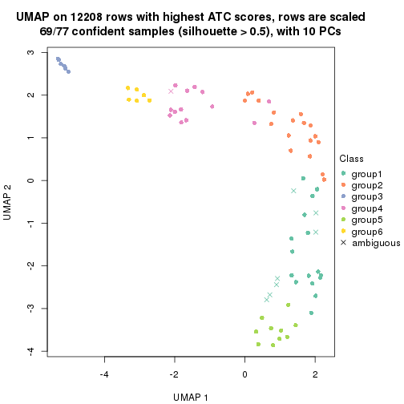
Following heatmap shows how subgroups are split when increasing k:
collect_classes(res)
If matrix rows can be associated to genes, consider to use functional_enrichment(res,
...) to perform function enrichment for the signature genes. See this vignette for more detailed explanations.
The object with results only for a single top-value method and a single partition method can be extracted as:
res = res_list["ATC", "mclust"]
# you can also extract it by
# res = res_list["ATC:mclust"]
A summary of res and all the functions that can be applied to it:
res
#> A 'ConsensusPartition' object with k = 2, 3, 4, 5, 6.
#> On a matrix with 12208 rows and 77 columns.
#> Top rows (1000, 2000, 3000, 4000, 5000) are extracted by 'ATC' method.
#> Subgroups are detected by 'mclust' method.
#> Performed in total 1250 partitions by row resampling.
#> Best k for subgroups seems to be 4.
#>
#> Following methods can be applied to this 'ConsensusPartition' object:
#> [1] "cola_report" "collect_classes" "collect_plots"
#> [4] "collect_stats" "colnames" "compare_signatures"
#> [7] "consensus_heatmap" "dimension_reduction" "functional_enrichment"
#> [10] "get_anno_col" "get_anno" "get_classes"
#> [13] "get_consensus" "get_matrix" "get_membership"
#> [16] "get_param" "get_signatures" "get_stats"
#> [19] "is_best_k" "is_stable_k" "membership_heatmap"
#> [22] "ncol" "nrow" "plot_ecdf"
#> [25] "rownames" "select_partition_number" "show"
#> [28] "suggest_best_k" "test_to_known_factors"
collect_plots() function collects all the plots made from res for all k (number of partitions)
into one single page to provide an easy and fast comparison between different k.
collect_plots(res)
The plots are:
k and the heatmap of
predicted classes for each k.k.k.k.All the plots in panels can be made by individual functions and they are plotted later in this section.
select_partition_number() produces several plots showing different
statistics for choosing “optimized” k. There are following statistics:
k;k, the area increased is defined as \(A_k - A_{k-1}\).The detailed explanations of these statistics can be found in the cola vignette.
Generally speaking, lower PAC score, higher mean silhouette score or higher
concordance corresponds to better partition. Rand index and Jaccard index
measure how similar the current partition is compared to partition with k-1.
If they are too similar, we won't accept k is better than k-1.
select_partition_number(res)
The numeric values for all these statistics can be obtained by get_stats().
get_stats(res)
#> k 1-PAC mean_silhouette concordance area_increased Rand Jaccard
#> 2 2 0.437 0.836 0.886 0.4139 0.576 0.576
#> 3 3 0.571 0.720 0.841 0.5672 0.515 0.305
#> 4 4 0.887 0.883 0.942 0.1059 0.895 0.709
#> 5 5 0.847 0.570 0.815 0.0832 0.923 0.743
#> 6 6 0.862 0.834 0.912 0.0414 0.852 0.478
suggest_best_k() suggests the best \(k\) based on these statistics. The rules are as follows:
suggest_best_k(res)
#> [1] 4
Following shows the table of the partitions (You need to click the show/hide
code output link to see it). The membership matrix (columns with name p*)
is inferred by
clue::cl_consensus()
function with the SE method. Basically the value in the membership matrix
represents the probability to belong to a certain group. The finall class
label for an item is determined with the group with highest probability it
belongs to.
In get_classes() function, the entropy is calculated from the membership
matrix and the silhouette score is calculated from the consensus matrix.
cbind(get_classes(res, k = 2), get_membership(res, k = 2))
#> class entropy silhouette p1 p2
#> SRR2044063 2 0.0000 0.887 0.000 1.000
#> SRR2044062 2 0.5408 0.896 0.124 0.876
#> SRR2044061 2 0.5408 0.896 0.124 0.876
#> SRR2044060 2 0.0000 0.887 0.000 1.000
#> SRR2044099 2 0.5737 0.890 0.136 0.864
#> SRR2044098 2 0.5408 0.896 0.124 0.876
#> SRR2044097 2 0.5737 0.890 0.136 0.864
#> SRR2044096 1 0.9896 0.235 0.560 0.440
#> SRR2044095 2 0.5519 0.894 0.128 0.872
#> SRR2044094 2 0.5737 0.890 0.136 0.864
#> SRR2044087 2 0.5408 0.896 0.124 0.876
#> SRR2044086 2 0.5408 0.896 0.124 0.876
#> SRR2044085 2 0.5408 0.896 0.124 0.876
#> SRR2044084 2 0.5408 0.896 0.124 0.876
#> SRR2044083 2 0.5408 0.896 0.124 0.876
#> SRR2044082 2 0.5408 0.896 0.124 0.876
#> SRR2044075 2 0.5408 0.896 0.124 0.876
#> SRR2044074 2 0.5408 0.896 0.124 0.876
#> SRR2044073 2 0.5408 0.896 0.124 0.876
#> SRR2044072 2 0.5408 0.896 0.124 0.876
#> SRR2044071 2 0.5408 0.896 0.124 0.876
#> SRR2044070 2 0.5408 0.896 0.124 0.876
#> SRR2044069 1 0.5408 0.791 0.876 0.124
#> SRR2044068 1 0.5408 0.791 0.876 0.124
#> SRR2044067 1 0.5408 0.791 0.876 0.124
#> SRR2044066 1 0.5408 0.791 0.876 0.124
#> SRR2044065 1 0.5408 0.791 0.876 0.124
#> SRR2044064 1 0.5408 0.791 0.876 0.124
#> SRR2044059 2 0.5408 0.896 0.124 0.876
#> SRR2044058 2 0.5408 0.896 0.124 0.876
#> SRR2044057 1 0.1843 0.846 0.972 0.028
#> SRR2044056 1 0.2423 0.850 0.960 0.040
#> SRR2044055 2 0.5737 0.890 0.136 0.864
#> SRR2044054 1 0.1843 0.846 0.972 0.028
#> SRR2044053 1 0.2423 0.850 0.960 0.040
#> SRR2044052 2 0.5737 0.890 0.136 0.864
#> SRR2044051 2 0.0938 0.885 0.012 0.988
#> SRR2044050 2 0.0000 0.887 0.000 1.000
#> SRR2044049 2 0.0000 0.887 0.000 1.000
#> SRR2044048 2 0.0938 0.885 0.012 0.988
#> SRR2044047 2 0.0000 0.887 0.000 1.000
#> SRR2044046 2 0.0000 0.887 0.000 1.000
#> SRR2044045 1 0.2423 0.850 0.960 0.040
#> SRR2044044 1 0.2778 0.849 0.952 0.048
#> SRR2044042 1 0.2423 0.850 0.960 0.040
#> SRR2044041 1 0.2778 0.849 0.952 0.048
#> SRR2044040 2 0.5737 0.890 0.136 0.864
#> SRR2044039 2 0.1843 0.876 0.028 0.972
#> SRR2044038 2 0.0938 0.885 0.012 0.988
#> SRR2044037 2 0.0938 0.885 0.012 0.988
#> SRR2044036 2 0.2043 0.874 0.032 0.968
#> SRR2044035 2 0.0938 0.885 0.012 0.988
#> SRR2044034 2 0.0938 0.885 0.012 0.988
#> SRR2044033 1 0.2778 0.849 0.952 0.048
#> SRR2044032 1 0.4022 0.832 0.920 0.080
#> SRR2044031 2 0.7602 0.795 0.220 0.780
#> SRR2044030 1 0.2778 0.849 0.952 0.048
#> SRR2044029 1 0.4022 0.832 0.920 0.080
#> SRR2044028 2 0.7883 0.771 0.236 0.764
#> SRR2044027 2 0.2423 0.868 0.040 0.960
#> SRR2044026 2 0.0938 0.885 0.012 0.988
#> SRR2044024 2 0.2423 0.868 0.040 0.960
#> SRR2044023 2 0.0938 0.885 0.012 0.988
#> SRR2044025 2 0.0938 0.885 0.012 0.988
#> SRR2044022 2 0.0938 0.885 0.012 0.988
#> SRR2044021 1 0.9323 0.503 0.652 0.348
#> SRR2044020 1 0.9460 0.467 0.636 0.364
#> SRR2044019 2 0.6048 0.880 0.148 0.852
#> SRR2044018 1 0.9209 0.522 0.664 0.336
#> SRR2044017 1 0.9522 0.447 0.628 0.372
#> SRR2044016 2 0.5737 0.890 0.136 0.864
#> SRR2044015 2 0.5737 0.774 0.136 0.864
#> SRR2044014 2 0.4161 0.832 0.084 0.916
#> SRR2044013 2 0.4298 0.828 0.088 0.912
#> SRR2044011 2 0.4298 0.828 0.088 0.912
#> SRR2044010 2 0.4298 0.828 0.088 0.912
#> SRR2044012 2 0.5737 0.774 0.136 0.864
cbind(get_classes(res, k = 3), get_membership(res, k = 3))
#> class entropy silhouette p1 p2 p3
#> SRR2044063 2 0.1525 0.841 0.032 0.964 0.004
#> SRR2044062 2 0.0424 0.868 0.008 0.992 0.000
#> SRR2044061 2 0.0424 0.868 0.008 0.992 0.000
#> SRR2044060 2 0.1399 0.844 0.028 0.968 0.004
#> SRR2044099 1 0.4452 0.847 0.808 0.192 0.000
#> SRR2044098 1 0.5650 0.718 0.688 0.312 0.000
#> SRR2044097 1 0.4452 0.847 0.808 0.192 0.000
#> SRR2044096 1 0.4346 0.849 0.816 0.184 0.000
#> SRR2044095 1 0.5397 0.762 0.720 0.280 0.000
#> SRR2044094 1 0.4346 0.849 0.816 0.184 0.000
#> SRR2044087 2 0.6026 0.235 0.376 0.624 0.000
#> SRR2044086 2 0.0424 0.868 0.008 0.992 0.000
#> SRR2044085 1 0.5882 0.656 0.652 0.348 0.000
#> SRR2044084 2 0.6062 0.242 0.384 0.616 0.000
#> SRR2044083 2 0.0424 0.868 0.008 0.992 0.000
#> SRR2044082 1 0.6215 0.474 0.572 0.428 0.000
#> SRR2044075 2 0.0592 0.867 0.012 0.988 0.000
#> SRR2044074 2 0.0424 0.868 0.008 0.992 0.000
#> SRR2044073 2 0.0424 0.868 0.008 0.992 0.000
#> SRR2044072 2 0.0592 0.867 0.012 0.988 0.000
#> SRR2044071 2 0.0424 0.868 0.008 0.992 0.000
#> SRR2044070 2 0.0424 0.868 0.008 0.992 0.000
#> SRR2044069 3 0.4399 0.584 0.188 0.000 0.812
#> SRR2044068 3 0.4399 0.584 0.188 0.000 0.812
#> SRR2044067 3 0.4399 0.584 0.188 0.000 0.812
#> SRR2044066 3 0.4399 0.584 0.188 0.000 0.812
#> SRR2044065 3 0.4399 0.584 0.188 0.000 0.812
#> SRR2044064 3 0.4399 0.584 0.188 0.000 0.812
#> SRR2044059 2 0.0424 0.868 0.008 0.992 0.000
#> SRR2044058 2 0.0424 0.868 0.008 0.992 0.000
#> SRR2044057 1 0.0000 0.867 1.000 0.000 0.000
#> SRR2044056 1 0.0000 0.867 1.000 0.000 0.000
#> SRR2044055 1 0.4605 0.842 0.796 0.204 0.000
#> SRR2044054 1 0.0000 0.867 1.000 0.000 0.000
#> SRR2044053 1 0.0000 0.867 1.000 0.000 0.000
#> SRR2044052 1 0.4605 0.842 0.796 0.204 0.000
#> SRR2044051 3 0.6286 0.465 0.000 0.464 0.536
#> SRR2044050 2 0.5267 0.657 0.044 0.816 0.140
#> SRR2044049 2 0.5267 0.657 0.044 0.816 0.140
#> SRR2044048 3 0.6286 0.465 0.000 0.464 0.536
#> SRR2044047 2 0.5267 0.657 0.044 0.816 0.140
#> SRR2044046 2 0.5267 0.657 0.044 0.816 0.140
#> SRR2044045 1 0.0000 0.867 1.000 0.000 0.000
#> SRR2044044 1 0.0000 0.867 1.000 0.000 0.000
#> SRR2044042 1 0.0000 0.867 1.000 0.000 0.000
#> SRR2044041 1 0.0000 0.867 1.000 0.000 0.000
#> SRR2044040 1 0.4605 0.842 0.796 0.204 0.000
#> SRR2044039 3 0.5621 0.589 0.000 0.308 0.692
#> SRR2044038 3 0.6286 0.465 0.000 0.464 0.536
#> SRR2044037 3 0.6286 0.465 0.000 0.464 0.536
#> SRR2044036 3 0.5621 0.589 0.000 0.308 0.692
#> SRR2044035 3 0.6286 0.465 0.000 0.464 0.536
#> SRR2044034 3 0.6286 0.465 0.000 0.464 0.536
#> SRR2044033 1 0.0000 0.867 1.000 0.000 0.000
#> SRR2044032 1 0.0237 0.868 0.996 0.004 0.000
#> SRR2044031 1 0.4605 0.842 0.796 0.204 0.000
#> SRR2044030 1 0.0000 0.867 1.000 0.000 0.000
#> SRR2044029 1 0.0237 0.868 0.996 0.004 0.000
#> SRR2044028 1 0.4605 0.842 0.796 0.204 0.000
#> SRR2044027 3 0.5138 0.615 0.000 0.252 0.748
#> SRR2044026 3 0.6286 0.465 0.000 0.464 0.536
#> SRR2044024 3 0.5178 0.613 0.000 0.256 0.744
#> SRR2044023 3 0.6286 0.465 0.000 0.464 0.536
#> SRR2044025 3 0.6286 0.465 0.000 0.464 0.536
#> SRR2044022 3 0.6286 0.465 0.000 0.464 0.536
#> SRR2044021 1 0.1753 0.867 0.952 0.048 0.000
#> SRR2044020 1 0.0424 0.868 0.992 0.008 0.000
#> SRR2044019 1 0.4555 0.843 0.800 0.200 0.000
#> SRR2044018 1 0.1753 0.867 0.952 0.048 0.000
#> SRR2044017 1 0.0424 0.868 0.992 0.008 0.000
#> SRR2044016 1 0.4605 0.842 0.796 0.204 0.000
#> SRR2044015 3 0.0424 0.653 0.000 0.008 0.992
#> SRR2044014 3 0.0424 0.653 0.000 0.008 0.992
#> SRR2044013 3 0.0424 0.653 0.000 0.008 0.992
#> SRR2044011 3 0.0424 0.653 0.000 0.008 0.992
#> SRR2044010 3 0.0424 0.653 0.000 0.008 0.992
#> SRR2044012 3 0.0424 0.653 0.000 0.008 0.992
cbind(get_classes(res, k = 4), get_membership(res, k = 4))
#> class entropy silhouette p1 p2 p3 p4
#> SRR2044063 2 0.0188 0.860 0.000 0.996 0.000 0.004
#> SRR2044062 2 0.0188 0.860 0.000 0.996 0.000 0.004
#> SRR2044061 2 0.0188 0.860 0.000 0.996 0.000 0.004
#> SRR2044060 2 0.0188 0.860 0.000 0.996 0.000 0.004
#> SRR2044099 1 0.0817 0.924 0.976 0.024 0.000 0.000
#> SRR2044098 2 0.5465 0.402 0.392 0.588 0.020 0.000
#> SRR2044097 1 0.2021 0.913 0.932 0.012 0.056 0.000
#> SRR2044096 1 0.0188 0.931 0.996 0.004 0.000 0.000
#> SRR2044095 2 0.5535 0.327 0.420 0.560 0.020 0.000
#> SRR2044094 1 0.1584 0.922 0.952 0.012 0.036 0.000
#> SRR2044087 2 0.4564 0.554 0.328 0.672 0.000 0.000
#> SRR2044086 2 0.0000 0.859 0.000 1.000 0.000 0.000
#> SRR2044085 2 0.5984 0.410 0.372 0.580 0.048 0.000
#> SRR2044084 2 0.4564 0.554 0.328 0.672 0.000 0.000
#> SRR2044083 2 0.0000 0.859 0.000 1.000 0.000 0.000
#> SRR2044082 2 0.4980 0.581 0.304 0.680 0.016 0.000
#> SRR2044075 2 0.0188 0.860 0.000 0.996 0.000 0.004
#> SRR2044074 2 0.0000 0.859 0.000 1.000 0.000 0.000
#> SRR2044073 2 0.0000 0.859 0.000 1.000 0.000 0.000
#> SRR2044072 2 0.0188 0.860 0.000 0.996 0.000 0.004
#> SRR2044071 2 0.0000 0.859 0.000 1.000 0.000 0.000
#> SRR2044070 2 0.0000 0.859 0.000 1.000 0.000 0.000
#> SRR2044069 3 0.0188 1.000 0.000 0.000 0.996 0.004
#> SRR2044068 3 0.0188 1.000 0.000 0.000 0.996 0.004
#> SRR2044067 3 0.0188 1.000 0.000 0.000 0.996 0.004
#> SRR2044066 3 0.0188 1.000 0.000 0.000 0.996 0.004
#> SRR2044065 3 0.0188 1.000 0.000 0.000 0.996 0.004
#> SRR2044064 3 0.0188 1.000 0.000 0.000 0.996 0.004
#> SRR2044059 2 0.0188 0.860 0.000 0.996 0.000 0.004
#> SRR2044058 2 0.0188 0.860 0.000 0.996 0.000 0.004
#> SRR2044057 1 0.1118 0.911 0.964 0.000 0.000 0.036
#> SRR2044056 1 0.0188 0.930 0.996 0.000 0.000 0.004
#> SRR2044055 1 0.4888 0.752 0.740 0.036 0.224 0.000
#> SRR2044054 1 0.1118 0.911 0.964 0.000 0.000 0.036
#> SRR2044053 1 0.0188 0.930 0.996 0.000 0.000 0.004
#> SRR2044052 1 0.5959 0.448 0.568 0.044 0.388 0.000
#> SRR2044051 4 0.0336 0.993 0.000 0.008 0.000 0.992
#> SRR2044050 2 0.1118 0.839 0.000 0.964 0.000 0.036
#> SRR2044049 2 0.1118 0.839 0.000 0.964 0.000 0.036
#> SRR2044048 4 0.0817 0.975 0.000 0.024 0.000 0.976
#> SRR2044047 2 0.1118 0.839 0.000 0.964 0.000 0.036
#> SRR2044046 2 0.1118 0.839 0.000 0.964 0.000 0.036
#> SRR2044045 1 0.0188 0.930 0.996 0.000 0.000 0.004
#> SRR2044044 1 0.0564 0.931 0.988 0.004 0.004 0.004
#> SRR2044042 1 0.0188 0.930 0.996 0.000 0.000 0.004
#> SRR2044041 1 0.0564 0.931 0.988 0.004 0.004 0.004
#> SRR2044040 1 0.3674 0.865 0.848 0.036 0.116 0.000
#> SRR2044039 4 0.0188 0.993 0.000 0.004 0.000 0.996
#> SRR2044038 4 0.0336 0.993 0.000 0.008 0.000 0.992
#> SRR2044037 4 0.0336 0.993 0.000 0.008 0.000 0.992
#> SRR2044036 4 0.0188 0.993 0.000 0.004 0.000 0.996
#> SRR2044035 4 0.0336 0.993 0.000 0.008 0.000 0.992
#> SRR2044034 4 0.0336 0.993 0.000 0.008 0.000 0.992
#> SRR2044033 1 0.0188 0.930 0.996 0.000 0.000 0.004
#> SRR2044032 1 0.0376 0.930 0.992 0.004 0.004 0.000
#> SRR2044031 1 0.3401 0.852 0.840 0.008 0.152 0.000
#> SRR2044030 1 0.0188 0.930 0.996 0.000 0.000 0.004
#> SRR2044029 1 0.0376 0.930 0.992 0.004 0.004 0.000
#> SRR2044028 1 0.3351 0.853 0.844 0.008 0.148 0.000
#> SRR2044027 4 0.0000 0.992 0.000 0.000 0.000 1.000
#> SRR2044026 4 0.0336 0.993 0.000 0.008 0.000 0.992
#> SRR2044024 4 0.0000 0.992 0.000 0.000 0.000 1.000
#> SRR2044023 4 0.0336 0.993 0.000 0.008 0.000 0.992
#> SRR2044025 4 0.0336 0.993 0.000 0.008 0.000 0.992
#> SRR2044022 4 0.0336 0.993 0.000 0.008 0.000 0.992
#> SRR2044021 1 0.0188 0.931 0.996 0.004 0.000 0.000
#> SRR2044020 1 0.1209 0.921 0.964 0.032 0.004 0.000
#> SRR2044019 1 0.3401 0.850 0.840 0.008 0.152 0.000
#> SRR2044018 1 0.0188 0.931 0.996 0.004 0.000 0.000
#> SRR2044017 1 0.1489 0.913 0.952 0.044 0.004 0.000
#> SRR2044016 1 0.3401 0.850 0.840 0.008 0.152 0.000
#> SRR2044015 4 0.0188 0.990 0.000 0.000 0.004 0.996
#> SRR2044014 4 0.0188 0.990 0.000 0.000 0.004 0.996
#> SRR2044013 4 0.0188 0.990 0.000 0.000 0.004 0.996
#> SRR2044011 4 0.0188 0.990 0.000 0.000 0.004 0.996
#> SRR2044010 4 0.0188 0.990 0.000 0.000 0.004 0.996
#> SRR2044012 4 0.0188 0.990 0.000 0.000 0.004 0.996
cbind(get_classes(res, k = 5), get_membership(res, k = 5))
#> class entropy silhouette p1 p2 p3 p4 p5
#> SRR2044063 2 0.0162 0.684 0.000 0.996 0 0.004 0.000
#> SRR2044062 2 0.0000 0.684 0.000 1.000 0 0.000 0.000
#> SRR2044061 2 0.0000 0.684 0.000 1.000 0 0.000 0.000
#> SRR2044060 2 0.0162 0.684 0.000 0.996 0 0.004 0.000
#> SRR2044099 5 0.4390 -0.807 0.428 0.004 0 0.000 0.568
#> SRR2044098 1 0.4653 0.985 0.516 0.012 0 0.000 0.472
#> SRR2044097 5 0.3730 -0.449 0.288 0.000 0 0.000 0.712
#> SRR2044096 5 0.3884 -0.455 0.288 0.004 0 0.000 0.708
#> SRR2044095 5 0.4658 -0.933 0.484 0.012 0 0.000 0.504
#> SRR2044094 5 0.3707 -0.439 0.284 0.000 0 0.000 0.716
#> SRR2044087 1 0.4653 0.985 0.516 0.012 0 0.000 0.472
#> SRR2044086 2 0.5177 0.403 0.472 0.488 0 0.000 0.040
#> SRR2044085 1 0.4826 0.979 0.508 0.020 0 0.000 0.472
#> SRR2044084 1 0.4653 0.985 0.516 0.012 0 0.000 0.472
#> SRR2044083 2 0.5238 0.392 0.472 0.484 0 0.000 0.044
#> SRR2044082 1 0.4902 0.973 0.508 0.024 0 0.000 0.468
#> SRR2044075 2 0.4826 0.451 0.472 0.508 0 0.000 0.020
#> SRR2044074 2 0.4632 0.492 0.448 0.540 0 0.000 0.012
#> SRR2044073 2 0.4743 0.457 0.472 0.512 0 0.000 0.016
#> SRR2044072 2 0.4826 0.451 0.472 0.508 0 0.000 0.020
#> SRR2044071 2 0.4637 0.487 0.452 0.536 0 0.000 0.012
#> SRR2044070 2 0.4743 0.457 0.472 0.512 0 0.000 0.016
#> SRR2044069 3 0.0000 1.000 0.000 0.000 1 0.000 0.000
#> SRR2044068 3 0.0000 1.000 0.000 0.000 1 0.000 0.000
#> SRR2044067 3 0.0000 1.000 0.000 0.000 1 0.000 0.000
#> SRR2044066 3 0.0000 1.000 0.000 0.000 1 0.000 0.000
#> SRR2044065 3 0.0000 1.000 0.000 0.000 1 0.000 0.000
#> SRR2044064 3 0.0000 1.000 0.000 0.000 1 0.000 0.000
#> SRR2044059 2 0.0000 0.684 0.000 1.000 0 0.000 0.000
#> SRR2044058 2 0.0000 0.684 0.000 1.000 0 0.000 0.000
#> SRR2044057 5 0.4302 0.478 0.480 0.000 0 0.000 0.520
#> SRR2044056 5 0.4302 0.478 0.480 0.000 0 0.000 0.520
#> SRR2044055 1 0.4302 0.979 0.520 0.000 0 0.000 0.480
#> SRR2044054 5 0.4302 0.478 0.480 0.000 0 0.000 0.520
#> SRR2044053 5 0.4302 0.478 0.480 0.000 0 0.000 0.520
#> SRR2044052 1 0.4302 0.979 0.520 0.000 0 0.000 0.480
#> SRR2044051 4 0.0000 1.000 0.000 0.000 0 1.000 0.000
#> SRR2044050 2 0.1043 0.668 0.000 0.960 0 0.040 0.000
#> SRR2044049 2 0.1043 0.668 0.000 0.960 0 0.040 0.000
#> SRR2044048 4 0.0000 1.000 0.000 0.000 0 1.000 0.000
#> SRR2044047 2 0.1043 0.668 0.000 0.960 0 0.040 0.000
#> SRR2044046 2 0.1043 0.668 0.000 0.960 0 0.040 0.000
#> SRR2044045 5 0.4302 0.478 0.480 0.000 0 0.000 0.520
#> SRR2044044 5 0.4300 0.477 0.476 0.000 0 0.000 0.524
#> SRR2044042 5 0.4302 0.478 0.480 0.000 0 0.000 0.520
#> SRR2044041 5 0.4300 0.477 0.476 0.000 0 0.000 0.524
#> SRR2044040 1 0.4302 0.979 0.520 0.000 0 0.000 0.480
#> SRR2044039 4 0.0000 1.000 0.000 0.000 0 1.000 0.000
#> SRR2044038 4 0.0000 1.000 0.000 0.000 0 1.000 0.000
#> SRR2044037 4 0.0000 1.000 0.000 0.000 0 1.000 0.000
#> SRR2044036 4 0.0000 1.000 0.000 0.000 0 1.000 0.000
#> SRR2044035 4 0.0000 1.000 0.000 0.000 0 1.000 0.000
#> SRR2044034 4 0.0000 1.000 0.000 0.000 0 1.000 0.000
#> SRR2044033 5 0.4302 0.478 0.480 0.000 0 0.000 0.520
#> SRR2044032 5 0.4291 0.477 0.464 0.000 0 0.000 0.536
#> SRR2044031 5 0.4256 -0.795 0.436 0.000 0 0.000 0.564
#> SRR2044030 5 0.4302 0.478 0.480 0.000 0 0.000 0.520
#> SRR2044029 5 0.4300 0.477 0.476 0.000 0 0.000 0.524
#> SRR2044028 5 0.4182 -0.706 0.400 0.000 0 0.000 0.600
#> SRR2044027 4 0.0000 1.000 0.000 0.000 0 1.000 0.000
#> SRR2044026 4 0.0000 1.000 0.000 0.000 0 1.000 0.000
#> SRR2044024 4 0.0000 1.000 0.000 0.000 0 1.000 0.000
#> SRR2044023 4 0.0000 1.000 0.000 0.000 0 1.000 0.000
#> SRR2044025 4 0.0000 1.000 0.000 0.000 0 1.000 0.000
#> SRR2044022 4 0.0000 1.000 0.000 0.000 0 1.000 0.000
#> SRR2044021 5 0.3366 -0.297 0.232 0.000 0 0.000 0.768
#> SRR2044020 5 0.0510 0.227 0.016 0.000 0 0.000 0.984
#> SRR2044019 5 0.4138 -0.667 0.384 0.000 0 0.000 0.616
#> SRR2044018 5 0.3366 -0.297 0.232 0.000 0 0.000 0.768
#> SRR2044017 5 0.0404 0.222 0.012 0.000 0 0.000 0.988
#> SRR2044016 5 0.4138 -0.673 0.384 0.000 0 0.000 0.616
#> SRR2044015 4 0.0000 1.000 0.000 0.000 0 1.000 0.000
#> SRR2044014 4 0.0000 1.000 0.000 0.000 0 1.000 0.000
#> SRR2044013 4 0.0000 1.000 0.000 0.000 0 1.000 0.000
#> SRR2044011 4 0.0000 1.000 0.000 0.000 0 1.000 0.000
#> SRR2044010 4 0.0000 1.000 0.000 0.000 0 1.000 0.000
#> SRR2044012 4 0.0000 1.000 0.000 0.000 0 1.000 0.000
cbind(get_classes(res, k = 6), get_membership(res, k = 6))
#> class entropy silhouette p1 p2 p3 p4 p5 p6
#> SRR2044063 2 0.0713 0.765 0.000 0.972 0 0.028 0.000 0.000
#> SRR2044062 2 0.0000 0.766 0.000 1.000 0 0.000 0.000 0.000
#> SRR2044061 2 0.0000 0.766 0.000 1.000 0 0.000 0.000 0.000
#> SRR2044060 2 0.0713 0.765 0.000 0.972 0 0.028 0.000 0.000
#> SRR2044099 1 0.1204 0.870 0.944 0.000 0 0.000 0.056 0.000
#> SRR2044098 1 0.1845 0.854 0.920 0.052 0 0.000 0.000 0.028
#> SRR2044097 1 0.1610 0.860 0.916 0.000 0 0.000 0.084 0.000
#> SRR2044096 1 0.1663 0.858 0.912 0.000 0 0.000 0.088 0.000
#> SRR2044095 1 0.2202 0.853 0.908 0.052 0 0.000 0.012 0.028
#> SRR2044094 1 0.1610 0.860 0.916 0.000 0 0.000 0.084 0.000
#> SRR2044087 1 0.1257 0.869 0.952 0.020 0 0.000 0.000 0.028
#> SRR2044086 1 0.3619 0.442 0.680 0.316 0 0.000 0.000 0.004
#> SRR2044085 1 0.1713 0.859 0.928 0.044 0 0.000 0.000 0.028
#> SRR2044084 1 0.1257 0.869 0.952 0.020 0 0.000 0.000 0.028
#> SRR2044083 1 0.3728 0.363 0.652 0.344 0 0.000 0.000 0.004
#> SRR2044082 1 0.1713 0.859 0.928 0.044 0 0.000 0.000 0.028
#> SRR2044075 2 0.3872 0.514 0.392 0.604 0 0.000 0.000 0.004
#> SRR2044074 2 0.3619 0.616 0.316 0.680 0 0.000 0.000 0.004
#> SRR2044073 2 0.3756 0.570 0.352 0.644 0 0.000 0.000 0.004
#> SRR2044072 2 0.3890 0.501 0.400 0.596 0 0.000 0.000 0.004
#> SRR2044071 2 0.3619 0.616 0.316 0.680 0 0.000 0.000 0.004
#> SRR2044070 2 0.3782 0.558 0.360 0.636 0 0.000 0.000 0.004
#> SRR2044069 3 0.0000 1.000 0.000 0.000 1 0.000 0.000 0.000
#> SRR2044068 3 0.0000 1.000 0.000 0.000 1 0.000 0.000 0.000
#> SRR2044067 3 0.0000 1.000 0.000 0.000 1 0.000 0.000 0.000
#> SRR2044066 3 0.0000 1.000 0.000 0.000 1 0.000 0.000 0.000
#> SRR2044065 3 0.0000 1.000 0.000 0.000 1 0.000 0.000 0.000
#> SRR2044064 3 0.0000 1.000 0.000 0.000 1 0.000 0.000 0.000
#> SRR2044059 2 0.0000 0.766 0.000 1.000 0 0.000 0.000 0.000
#> SRR2044058 2 0.0000 0.766 0.000 1.000 0 0.000 0.000 0.000
#> SRR2044057 5 0.0000 0.990 0.000 0.000 0 0.000 1.000 0.000
#> SRR2044056 5 0.0000 0.990 0.000 0.000 0 0.000 1.000 0.000
#> SRR2044055 1 0.0000 0.874 1.000 0.000 0 0.000 0.000 0.000
#> SRR2044054 5 0.0000 0.990 0.000 0.000 0 0.000 1.000 0.000
#> SRR2044053 5 0.0000 0.990 0.000 0.000 0 0.000 1.000 0.000
#> SRR2044052 1 0.0000 0.874 1.000 0.000 0 0.000 0.000 0.000
#> SRR2044051 4 0.0000 1.000 0.000 0.000 0 1.000 0.000 0.000
#> SRR2044050 2 0.1814 0.734 0.000 0.900 0 0.100 0.000 0.000
#> SRR2044049 2 0.1814 0.734 0.000 0.900 0 0.100 0.000 0.000
#> SRR2044048 4 0.0000 1.000 0.000 0.000 0 1.000 0.000 0.000
#> SRR2044047 2 0.1814 0.734 0.000 0.900 0 0.100 0.000 0.000
#> SRR2044046 2 0.1814 0.734 0.000 0.900 0 0.100 0.000 0.000
#> SRR2044045 5 0.0000 0.990 0.000 0.000 0 0.000 1.000 0.000
#> SRR2044044 5 0.0632 0.979 0.000 0.000 0 0.000 0.976 0.024
#> SRR2044042 5 0.0000 0.990 0.000 0.000 0 0.000 1.000 0.000
#> SRR2044041 5 0.0632 0.979 0.000 0.000 0 0.000 0.976 0.024
#> SRR2044040 1 0.0000 0.874 1.000 0.000 0 0.000 0.000 0.000
#> SRR2044039 6 0.3789 0.529 0.000 0.000 0 0.416 0.000 0.584
#> SRR2044038 4 0.0000 1.000 0.000 0.000 0 1.000 0.000 0.000
#> SRR2044037 4 0.0000 1.000 0.000 0.000 0 1.000 0.000 0.000
#> SRR2044036 6 0.3789 0.529 0.000 0.000 0 0.416 0.000 0.584
#> SRR2044035 4 0.0000 1.000 0.000 0.000 0 1.000 0.000 0.000
#> SRR2044034 4 0.0000 1.000 0.000 0.000 0 1.000 0.000 0.000
#> SRR2044033 5 0.0000 0.990 0.000 0.000 0 0.000 1.000 0.000
#> SRR2044032 5 0.0632 0.979 0.000 0.000 0 0.000 0.976 0.024
#> SRR2044031 1 0.0260 0.876 0.992 0.000 0 0.000 0.008 0.000
#> SRR2044030 5 0.0000 0.990 0.000 0.000 0 0.000 1.000 0.000
#> SRR2044029 5 0.0632 0.979 0.000 0.000 0 0.000 0.976 0.024
#> SRR2044028 1 0.0260 0.876 0.992 0.000 0 0.000 0.008 0.000
#> SRR2044027 6 0.3464 0.681 0.000 0.000 0 0.312 0.000 0.688
#> SRR2044026 4 0.0000 1.000 0.000 0.000 0 1.000 0.000 0.000
#> SRR2044024 6 0.3464 0.681 0.000 0.000 0 0.312 0.000 0.688
#> SRR2044023 4 0.0000 1.000 0.000 0.000 0 1.000 0.000 0.000
#> SRR2044025 4 0.0000 1.000 0.000 0.000 0 1.000 0.000 0.000
#> SRR2044022 4 0.0000 1.000 0.000 0.000 0 1.000 0.000 0.000
#> SRR2044021 1 0.1910 0.844 0.892 0.000 0 0.000 0.108 0.000
#> SRR2044020 1 0.4456 0.450 0.608 0.008 0 0.000 0.360 0.024
#> SRR2044019 1 0.0458 0.876 0.984 0.000 0 0.000 0.016 0.000
#> SRR2044018 1 0.1910 0.844 0.892 0.000 0 0.000 0.108 0.000
#> SRR2044017 1 0.4456 0.450 0.608 0.008 0 0.000 0.360 0.024
#> SRR2044016 1 0.0458 0.876 0.984 0.000 0 0.000 0.016 0.000
#> SRR2044015 6 0.0713 0.824 0.000 0.000 0 0.028 0.000 0.972
#> SRR2044014 6 0.0713 0.824 0.000 0.000 0 0.028 0.000 0.972
#> SRR2044013 6 0.0713 0.824 0.000 0.000 0 0.028 0.000 0.972
#> SRR2044011 6 0.0713 0.824 0.000 0.000 0 0.028 0.000 0.972
#> SRR2044010 6 0.0713 0.824 0.000 0.000 0 0.028 0.000 0.972
#> SRR2044012 6 0.0713 0.824 0.000 0.000 0 0.028 0.000 0.972
Heatmaps for the consensus matrix. It visualizes the probability of two samples to be in a same group.
consensus_heatmap(res, k = 2)
consensus_heatmap(res, k = 3)
consensus_heatmap(res, k = 4)
consensus_heatmap(res, k = 5)
consensus_heatmap(res, k = 6)
Heatmaps for the membership of samples in all partitions to see how consistent they are:
membership_heatmap(res, k = 2)
membership_heatmap(res, k = 3)
membership_heatmap(res, k = 4)
membership_heatmap(res, k = 5)
membership_heatmap(res, k = 6)
As soon as we have had the classes for columns, we can look for signatures which are significantly different between classes which can be candidate marks for certain classes. Following are the heatmaps for signatures.
Signature heatmaps where rows are scaled:
get_signatures(res, k = 2)
get_signatures(res, k = 3)
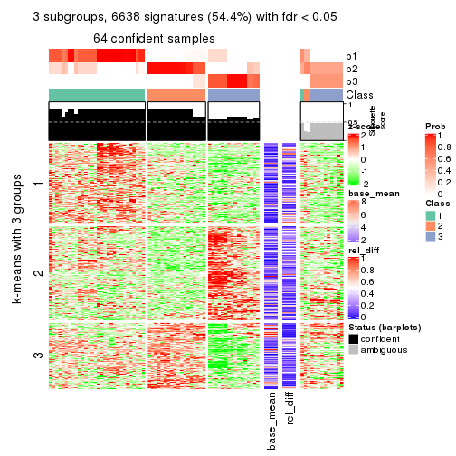
get_signatures(res, k = 4)
get_signatures(res, k = 5)
get_signatures(res, k = 6)
Signature heatmaps where rows are not scaled:
get_signatures(res, k = 2, scale_rows = FALSE)
get_signatures(res, k = 3, scale_rows = FALSE)
get_signatures(res, k = 4, scale_rows = FALSE)
get_signatures(res, k = 5, scale_rows = FALSE)
get_signatures(res, k = 6, scale_rows = FALSE)
Compare the overlap of signatures from different k:
compare_signatures(res)

get_signature() returns a data frame invisibly. TO get the list of signatures, the function
call should be assigned to a variable explicitly. In following code, if plot argument is set
to FALSE, no heatmap is plotted while only the differential analysis is performed.
# code only for demonstration
tb = get_signature(res, k = ..., plot = FALSE)
An example of the output of tb is:
#> which_row fdr mean_1 mean_2 scaled_mean_1 scaled_mean_2 km
#> 1 38 0.042760348 8.373488 9.131774 -0.5533452 0.5164555 1
#> 2 40 0.018707592 7.106213 8.469186 -0.6173731 0.5762149 1
#> 3 55 0.019134737 10.221463 11.207825 -0.6159697 0.5749050 1
#> 4 59 0.006059896 5.921854 7.869574 -0.6899429 0.6439467 1
#> 5 60 0.018055526 8.928898 10.211722 -0.6204761 0.5791110 1
#> 6 98 0.009384629 15.714769 14.887706 0.6635654 -0.6193277 2
...
The columns in tb are:
which_row: row indices corresponding to the input matrix.fdr: FDR for the differential test. mean_x: The mean value in group x.scaled_mean_x: The mean value in group x after rows are scaled.km: Row groups if k-means clustering is applied to rows.UMAP plot which shows how samples are separated.
dimension_reduction(res, k = 2, method = "UMAP")
dimension_reduction(res, k = 3, method = "UMAP")
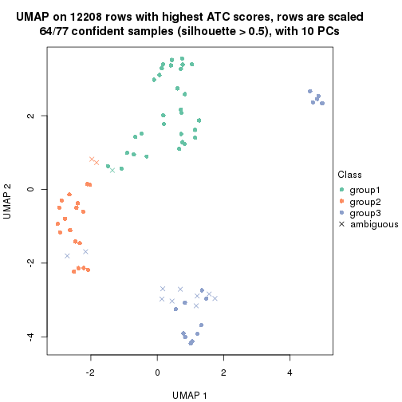
dimension_reduction(res, k = 4, method = "UMAP")
dimension_reduction(res, k = 5, method = "UMAP")
dimension_reduction(res, k = 6, method = "UMAP")
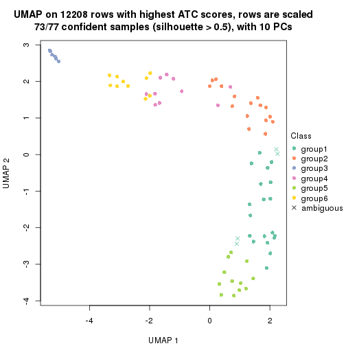
Following heatmap shows how subgroups are split when increasing k:
collect_classes(res)
If matrix rows can be associated to genes, consider to use functional_enrichment(res,
...) to perform function enrichment for the signature genes. See this vignette for more detailed explanations.
The object with results only for a single top-value method and a single partition method can be extracted as:
res = res_list["ATC", "NMF"]
# you can also extract it by
# res = res_list["ATC:NMF"]
A summary of res and all the functions that can be applied to it:
res
#> A 'ConsensusPartition' object with k = 2, 3, 4, 5, 6.
#> On a matrix with 12208 rows and 77 columns.
#> Top rows (1000, 2000, 3000, 4000, 5000) are extracted by 'ATC' method.
#> Subgroups are detected by 'NMF' method.
#> Performed in total 1250 partitions by row resampling.
#> Best k for subgroups seems to be 5.
#>
#> Following methods can be applied to this 'ConsensusPartition' object:
#> [1] "cola_report" "collect_classes" "collect_plots"
#> [4] "collect_stats" "colnames" "compare_signatures"
#> [7] "consensus_heatmap" "dimension_reduction" "functional_enrichment"
#> [10] "get_anno_col" "get_anno" "get_classes"
#> [13] "get_consensus" "get_matrix" "get_membership"
#> [16] "get_param" "get_signatures" "get_stats"
#> [19] "is_best_k" "is_stable_k" "membership_heatmap"
#> [22] "ncol" "nrow" "plot_ecdf"
#> [25] "rownames" "select_partition_number" "show"
#> [28] "suggest_best_k" "test_to_known_factors"
collect_plots() function collects all the plots made from res for all k (number of partitions)
into one single page to provide an easy and fast comparison between different k.
collect_plots(res)
The plots are:
k and the heatmap of
predicted classes for each k.k.k.k.All the plots in panels can be made by individual functions and they are plotted later in this section.
select_partition_number() produces several plots showing different
statistics for choosing “optimized” k. There are following statistics:
k;k, the area increased is defined as \(A_k - A_{k-1}\).The detailed explanations of these statistics can be found in the cola vignette.
Generally speaking, lower PAC score, higher mean silhouette score or higher
concordance corresponds to better partition. Rand index and Jaccard index
measure how similar the current partition is compared to partition with k-1.
If they are too similar, we won't accept k is better than k-1.
select_partition_number(res)
The numeric values for all these statistics can be obtained by get_stats().
get_stats(res)
#> k 1-PAC mean_silhouette concordance area_increased Rand Jaccard
#> 2 2 1.000 0.995 0.998 0.3052 0.699 0.699
#> 3 3 1.000 0.987 0.994 1.0833 0.665 0.521
#> 4 4 0.708 0.762 0.893 0.1466 0.758 0.449
#> 5 5 0.962 0.921 0.963 0.0746 0.828 0.480
#> 6 6 0.835 0.786 0.891 0.0531 0.884 0.537
suggest_best_k() suggests the best \(k\) based on these statistics. The rules are as follows:
suggest_best_k(res)
#> [1] 5
#> attr(,"optional")
#> [1] 2 3
There is also optional best \(k\) = 2 3 that is worth to check.
Following shows the table of the partitions (You need to click the show/hide
code output link to see it). The membership matrix (columns with name p*)
is inferred by
clue::cl_consensus()
function with the SE method. Basically the value in the membership matrix
represents the probability to belong to a certain group. The finall class
label for an item is determined with the group with highest probability it
belongs to.
In get_classes() function, the entropy is calculated from the membership
matrix and the silhouette score is calculated from the consensus matrix.
cbind(get_classes(res, k = 2), get_membership(res, k = 2))
#> class entropy silhouette p1 p2
#> SRR2044063 1 0.000 0.997 1.000 0.000
#> SRR2044062 1 0.000 0.997 1.000 0.000
#> SRR2044061 1 0.000 0.997 1.000 0.000
#> SRR2044060 1 0.000 0.997 1.000 0.000
#> SRR2044099 1 0.000 0.997 1.000 0.000
#> SRR2044098 1 0.000 0.997 1.000 0.000
#> SRR2044097 1 0.000 0.997 1.000 0.000
#> SRR2044096 1 0.000 0.997 1.000 0.000
#> SRR2044095 1 0.000 0.997 1.000 0.000
#> SRR2044094 1 0.000 0.997 1.000 0.000
#> SRR2044087 1 0.000 0.997 1.000 0.000
#> SRR2044086 1 0.000 0.997 1.000 0.000
#> SRR2044085 1 0.000 0.997 1.000 0.000
#> SRR2044084 1 0.000 0.997 1.000 0.000
#> SRR2044083 1 0.000 0.997 1.000 0.000
#> SRR2044082 1 0.000 0.997 1.000 0.000
#> SRR2044075 1 0.000 0.997 1.000 0.000
#> SRR2044074 1 0.000 0.997 1.000 0.000
#> SRR2044073 1 0.000 0.997 1.000 0.000
#> SRR2044072 1 0.000 0.997 1.000 0.000
#> SRR2044071 1 0.000 0.997 1.000 0.000
#> SRR2044070 1 0.000 0.997 1.000 0.000
#> SRR2044069 2 0.000 1.000 0.000 1.000
#> SRR2044068 2 0.000 1.000 0.000 1.000
#> SRR2044067 2 0.000 1.000 0.000 1.000
#> SRR2044066 2 0.000 1.000 0.000 1.000
#> SRR2044065 2 0.000 1.000 0.000 1.000
#> SRR2044064 2 0.000 1.000 0.000 1.000
#> SRR2044059 1 0.000 0.997 1.000 0.000
#> SRR2044058 1 0.000 0.997 1.000 0.000
#> SRR2044057 1 0.000 0.997 1.000 0.000
#> SRR2044056 1 0.000 0.997 1.000 0.000
#> SRR2044055 1 0.000 0.997 1.000 0.000
#> SRR2044054 1 0.000 0.997 1.000 0.000
#> SRR2044053 1 0.000 0.997 1.000 0.000
#> SRR2044052 1 0.697 0.768 0.812 0.188
#> SRR2044051 1 0.000 0.997 1.000 0.000
#> SRR2044050 1 0.000 0.997 1.000 0.000
#> SRR2044049 1 0.000 0.997 1.000 0.000
#> SRR2044048 1 0.000 0.997 1.000 0.000
#> SRR2044047 1 0.000 0.997 1.000 0.000
#> SRR2044046 1 0.000 0.997 1.000 0.000
#> SRR2044045 1 0.000 0.997 1.000 0.000
#> SRR2044044 1 0.000 0.997 1.000 0.000
#> SRR2044042 1 0.000 0.997 1.000 0.000
#> SRR2044041 1 0.000 0.997 1.000 0.000
#> SRR2044040 1 0.000 0.997 1.000 0.000
#> SRR2044039 1 0.000 0.997 1.000 0.000
#> SRR2044038 1 0.000 0.997 1.000 0.000
#> SRR2044037 1 0.000 0.997 1.000 0.000
#> SRR2044036 1 0.000 0.997 1.000 0.000
#> SRR2044035 1 0.000 0.997 1.000 0.000
#> SRR2044034 1 0.000 0.997 1.000 0.000
#> SRR2044033 1 0.000 0.997 1.000 0.000
#> SRR2044032 1 0.000 0.997 1.000 0.000
#> SRR2044031 1 0.000 0.997 1.000 0.000
#> SRR2044030 1 0.000 0.997 1.000 0.000
#> SRR2044029 1 0.000 0.997 1.000 0.000
#> SRR2044028 1 0.000 0.997 1.000 0.000
#> SRR2044027 2 0.000 1.000 0.000 1.000
#> SRR2044026 1 0.000 0.997 1.000 0.000
#> SRR2044024 2 0.000 1.000 0.000 1.000
#> SRR2044023 1 0.000 0.997 1.000 0.000
#> SRR2044025 1 0.000 0.997 1.000 0.000
#> SRR2044022 1 0.000 0.997 1.000 0.000
#> SRR2044021 1 0.000 0.997 1.000 0.000
#> SRR2044020 1 0.000 0.997 1.000 0.000
#> SRR2044019 1 0.000 0.997 1.000 0.000
#> SRR2044018 1 0.000 0.997 1.000 0.000
#> SRR2044017 1 0.000 0.997 1.000 0.000
#> SRR2044016 1 0.000 0.997 1.000 0.000
#> SRR2044015 2 0.000 1.000 0.000 1.000
#> SRR2044014 2 0.000 1.000 0.000 1.000
#> SRR2044013 2 0.000 1.000 0.000 1.000
#> SRR2044011 2 0.000 1.000 0.000 1.000
#> SRR2044010 2 0.000 1.000 0.000 1.000
#> SRR2044012 2 0.000 1.000 0.000 1.000
cbind(get_classes(res, k = 3), get_membership(res, k = 3))
#> class entropy silhouette p1 p2 p3
#> SRR2044063 2 0.0000 1.000 0.000 1.000 0.000
#> SRR2044062 2 0.0000 1.000 0.000 1.000 0.000
#> SRR2044061 2 0.0000 1.000 0.000 1.000 0.000
#> SRR2044060 2 0.0000 1.000 0.000 1.000 0.000
#> SRR2044099 1 0.0000 0.992 1.000 0.000 0.000
#> SRR2044098 1 0.0000 0.992 1.000 0.000 0.000
#> SRR2044097 1 0.0000 0.992 1.000 0.000 0.000
#> SRR2044096 1 0.0000 0.992 1.000 0.000 0.000
#> SRR2044095 1 0.0000 0.992 1.000 0.000 0.000
#> SRR2044094 1 0.0000 0.992 1.000 0.000 0.000
#> SRR2044087 1 0.1529 0.953 0.960 0.040 0.000
#> SRR2044086 1 0.1860 0.940 0.948 0.052 0.000
#> SRR2044085 1 0.0000 0.992 1.000 0.000 0.000
#> SRR2044084 1 0.0237 0.989 0.996 0.004 0.000
#> SRR2044083 1 0.3551 0.841 0.868 0.132 0.000
#> SRR2044082 1 0.0000 0.992 1.000 0.000 0.000
#> SRR2044075 2 0.0000 1.000 0.000 1.000 0.000
#> SRR2044074 2 0.0000 1.000 0.000 1.000 0.000
#> SRR2044073 2 0.0000 1.000 0.000 1.000 0.000
#> SRR2044072 2 0.0000 1.000 0.000 1.000 0.000
#> SRR2044071 2 0.0000 1.000 0.000 1.000 0.000
#> SRR2044070 2 0.0237 0.995 0.004 0.996 0.000
#> SRR2044069 3 0.0000 0.982 0.000 0.000 1.000
#> SRR2044068 3 0.0000 0.982 0.000 0.000 1.000
#> SRR2044067 3 0.0000 0.982 0.000 0.000 1.000
#> SRR2044066 3 0.0000 0.982 0.000 0.000 1.000
#> SRR2044065 3 0.0000 0.982 0.000 0.000 1.000
#> SRR2044064 3 0.0000 0.982 0.000 0.000 1.000
#> SRR2044059 2 0.0000 1.000 0.000 1.000 0.000
#> SRR2044058 2 0.0000 1.000 0.000 1.000 0.000
#> SRR2044057 1 0.0000 0.992 1.000 0.000 0.000
#> SRR2044056 1 0.0000 0.992 1.000 0.000 0.000
#> SRR2044055 1 0.0000 0.992 1.000 0.000 0.000
#> SRR2044054 1 0.0000 0.992 1.000 0.000 0.000
#> SRR2044053 1 0.0000 0.992 1.000 0.000 0.000
#> SRR2044052 1 0.0000 0.992 1.000 0.000 0.000
#> SRR2044051 2 0.0000 1.000 0.000 1.000 0.000
#> SRR2044050 2 0.0000 1.000 0.000 1.000 0.000
#> SRR2044049 2 0.0000 1.000 0.000 1.000 0.000
#> SRR2044048 2 0.0000 1.000 0.000 1.000 0.000
#> SRR2044047 2 0.0000 1.000 0.000 1.000 0.000
#> SRR2044046 2 0.0000 1.000 0.000 1.000 0.000
#> SRR2044045 1 0.0000 0.992 1.000 0.000 0.000
#> SRR2044044 1 0.0000 0.992 1.000 0.000 0.000
#> SRR2044042 1 0.0000 0.992 1.000 0.000 0.000
#> SRR2044041 1 0.0000 0.992 1.000 0.000 0.000
#> SRR2044040 1 0.0000 0.992 1.000 0.000 0.000
#> SRR2044039 2 0.0000 1.000 0.000 1.000 0.000
#> SRR2044038 2 0.0000 1.000 0.000 1.000 0.000
#> SRR2044037 2 0.0000 1.000 0.000 1.000 0.000
#> SRR2044036 2 0.0000 1.000 0.000 1.000 0.000
#> SRR2044035 2 0.0000 1.000 0.000 1.000 0.000
#> SRR2044034 2 0.0000 1.000 0.000 1.000 0.000
#> SRR2044033 1 0.0000 0.992 1.000 0.000 0.000
#> SRR2044032 1 0.0000 0.992 1.000 0.000 0.000
#> SRR2044031 1 0.0000 0.992 1.000 0.000 0.000
#> SRR2044030 1 0.0000 0.992 1.000 0.000 0.000
#> SRR2044029 1 0.0000 0.992 1.000 0.000 0.000
#> SRR2044028 1 0.0000 0.992 1.000 0.000 0.000
#> SRR2044027 3 0.2261 0.924 0.000 0.068 0.932
#> SRR2044026 2 0.0000 1.000 0.000 1.000 0.000
#> SRR2044024 3 0.4178 0.801 0.000 0.172 0.828
#> SRR2044023 2 0.0000 1.000 0.000 1.000 0.000
#> SRR2044025 2 0.0000 1.000 0.000 1.000 0.000
#> SRR2044022 2 0.0000 1.000 0.000 1.000 0.000
#> SRR2044021 1 0.0000 0.992 1.000 0.000 0.000
#> SRR2044020 1 0.0000 0.992 1.000 0.000 0.000
#> SRR2044019 1 0.0000 0.992 1.000 0.000 0.000
#> SRR2044018 1 0.0000 0.992 1.000 0.000 0.000
#> SRR2044017 1 0.0000 0.992 1.000 0.000 0.000
#> SRR2044016 1 0.0000 0.992 1.000 0.000 0.000
#> SRR2044015 3 0.0000 0.982 0.000 0.000 1.000
#> SRR2044014 3 0.0000 0.982 0.000 0.000 1.000
#> SRR2044013 3 0.0000 0.982 0.000 0.000 1.000
#> SRR2044011 3 0.0000 0.982 0.000 0.000 1.000
#> SRR2044010 3 0.0000 0.982 0.000 0.000 1.000
#> SRR2044012 3 0.0000 0.982 0.000 0.000 1.000
cbind(get_classes(res, k = 4), get_membership(res, k = 4))
#> class entropy silhouette p1 p2 p3 p4
#> SRR2044063 2 0.4304 0.6089 0.000 0.716 0.000 0.284
#> SRR2044062 2 0.2814 0.7495 0.000 0.868 0.000 0.132
#> SRR2044061 2 0.2921 0.7442 0.000 0.860 0.000 0.140
#> SRR2044060 2 0.4134 0.6357 0.000 0.740 0.000 0.260
#> SRR2044099 1 0.3907 0.7991 0.768 0.232 0.000 0.000
#> SRR2044098 2 0.4761 0.2089 0.372 0.628 0.000 0.000
#> SRR2044097 2 0.4713 0.2424 0.360 0.640 0.000 0.000
#> SRR2044096 1 0.3266 0.8488 0.832 0.168 0.000 0.000
#> SRR2044095 2 0.4830 0.1442 0.392 0.608 0.000 0.000
#> SRR2044094 2 0.4855 0.1135 0.400 0.600 0.000 0.000
#> SRR2044087 2 0.0188 0.8015 0.004 0.996 0.000 0.000
#> SRR2044086 2 0.0000 0.8023 0.000 1.000 0.000 0.000
#> SRR2044085 2 0.0188 0.8015 0.004 0.996 0.000 0.000
#> SRR2044084 2 0.0188 0.8015 0.004 0.996 0.000 0.000
#> SRR2044083 2 0.0000 0.8023 0.000 1.000 0.000 0.000
#> SRR2044082 2 0.0188 0.8015 0.004 0.996 0.000 0.000
#> SRR2044075 2 0.0592 0.7998 0.000 0.984 0.000 0.016
#> SRR2044074 2 0.0188 0.8025 0.000 0.996 0.000 0.004
#> SRR2044073 2 0.0188 0.8025 0.000 0.996 0.000 0.004
#> SRR2044072 2 0.0000 0.8023 0.000 1.000 0.000 0.000
#> SRR2044071 2 0.0188 0.8025 0.000 0.996 0.000 0.004
#> SRR2044070 2 0.0000 0.8023 0.000 1.000 0.000 0.000
#> SRR2044069 3 0.0000 0.9710 0.000 0.000 1.000 0.000
#> SRR2044068 3 0.0000 0.9710 0.000 0.000 1.000 0.000
#> SRR2044067 3 0.0000 0.9710 0.000 0.000 1.000 0.000
#> SRR2044066 3 0.0000 0.9710 0.000 0.000 1.000 0.000
#> SRR2044065 3 0.0000 0.9710 0.000 0.000 1.000 0.000
#> SRR2044064 3 0.0000 0.9710 0.000 0.000 1.000 0.000
#> SRR2044059 2 0.2408 0.7651 0.000 0.896 0.000 0.104
#> SRR2044058 2 0.2921 0.7442 0.000 0.860 0.000 0.140
#> SRR2044057 1 0.0000 0.8920 1.000 0.000 0.000 0.000
#> SRR2044056 1 0.0000 0.8920 1.000 0.000 0.000 0.000
#> SRR2044055 1 0.3266 0.8488 0.832 0.168 0.000 0.000
#> SRR2044054 1 0.0000 0.8920 1.000 0.000 0.000 0.000
#> SRR2044053 1 0.0000 0.8920 1.000 0.000 0.000 0.000
#> SRR2044052 1 0.3157 0.8591 0.852 0.144 0.004 0.000
#> SRR2044051 4 0.2149 0.7922 0.000 0.088 0.000 0.912
#> SRR2044050 2 0.4406 0.5901 0.000 0.700 0.000 0.300
#> SRR2044049 2 0.4776 0.4647 0.000 0.624 0.000 0.376
#> SRR2044048 4 0.4406 0.4382 0.000 0.300 0.000 0.700
#> SRR2044047 2 0.4543 0.5561 0.000 0.676 0.000 0.324
#> SRR2044046 2 0.4624 0.5307 0.000 0.660 0.000 0.340
#> SRR2044045 1 0.0000 0.8920 1.000 0.000 0.000 0.000
#> SRR2044044 1 0.0000 0.8920 1.000 0.000 0.000 0.000
#> SRR2044042 1 0.0000 0.8920 1.000 0.000 0.000 0.000
#> SRR2044041 1 0.0000 0.8920 1.000 0.000 0.000 0.000
#> SRR2044040 1 0.3688 0.8203 0.792 0.208 0.000 0.000
#> SRR2044039 4 0.0000 0.8714 0.000 0.000 0.000 1.000
#> SRR2044038 4 0.0000 0.8714 0.000 0.000 0.000 1.000
#> SRR2044037 4 0.0000 0.8714 0.000 0.000 0.000 1.000
#> SRR2044036 4 0.0000 0.8714 0.000 0.000 0.000 1.000
#> SRR2044035 4 0.0000 0.8714 0.000 0.000 0.000 1.000
#> SRR2044034 4 0.0000 0.8714 0.000 0.000 0.000 1.000
#> SRR2044033 1 0.0000 0.8920 1.000 0.000 0.000 0.000
#> SRR2044032 1 0.0000 0.8920 1.000 0.000 0.000 0.000
#> SRR2044031 1 0.4040 0.7827 0.752 0.248 0.000 0.000
#> SRR2044030 1 0.0000 0.8920 1.000 0.000 0.000 0.000
#> SRR2044029 1 0.0000 0.8920 1.000 0.000 0.000 0.000
#> SRR2044028 1 0.4164 0.7643 0.736 0.264 0.000 0.000
#> SRR2044027 4 0.0469 0.8633 0.000 0.000 0.012 0.988
#> SRR2044026 4 0.0000 0.8714 0.000 0.000 0.000 1.000
#> SRR2044024 4 0.0188 0.8689 0.000 0.000 0.004 0.996
#> SRR2044023 4 0.0000 0.8714 0.000 0.000 0.000 1.000
#> SRR2044025 4 0.0000 0.8714 0.000 0.000 0.000 1.000
#> SRR2044022 4 0.0336 0.8661 0.000 0.008 0.000 0.992
#> SRR2044021 1 0.0188 0.8916 0.996 0.004 0.000 0.000
#> SRR2044020 1 0.3074 0.8568 0.848 0.152 0.000 0.000
#> SRR2044019 1 0.4477 0.6955 0.688 0.312 0.000 0.000
#> SRR2044018 1 0.0000 0.8920 1.000 0.000 0.000 0.000
#> SRR2044017 1 0.3074 0.8568 0.848 0.152 0.000 0.000
#> SRR2044016 1 0.4382 0.7210 0.704 0.296 0.000 0.000
#> SRR2044015 3 0.0000 0.9710 0.000 0.000 1.000 0.000
#> SRR2044014 4 0.4605 0.4230 0.000 0.000 0.336 0.664
#> SRR2044013 4 0.4992 0.0700 0.000 0.000 0.476 0.524
#> SRR2044011 3 0.3649 0.7108 0.000 0.000 0.796 0.204
#> SRR2044010 4 0.5000 -0.0146 0.000 0.000 0.500 0.500
#> SRR2044012 3 0.0000 0.9710 0.000 0.000 1.000 0.000
cbind(get_classes(res, k = 5), get_membership(res, k = 5))
#> class entropy silhouette p1 p2 p3 p4 p5
#> SRR2044063 2 0.0000 0.929 0.000 1.000 0.000 0.000 0.000
#> SRR2044062 2 0.0404 0.931 0.012 0.988 0.000 0.000 0.000
#> SRR2044061 2 0.0290 0.931 0.008 0.992 0.000 0.000 0.000
#> SRR2044060 2 0.0000 0.929 0.000 1.000 0.000 0.000 0.000
#> SRR2044099 1 0.0404 0.933 0.988 0.000 0.000 0.000 0.012
#> SRR2044098 1 0.0693 0.932 0.980 0.008 0.000 0.000 0.012
#> SRR2044097 1 0.0162 0.932 0.996 0.000 0.000 0.000 0.004
#> SRR2044096 1 0.0609 0.934 0.980 0.000 0.000 0.000 0.020
#> SRR2044095 1 0.0807 0.930 0.976 0.012 0.000 0.000 0.012
#> SRR2044094 1 0.0404 0.933 0.988 0.000 0.000 0.000 0.012
#> SRR2044087 1 0.4249 0.192 0.568 0.432 0.000 0.000 0.000
#> SRR2044086 2 0.4249 0.236 0.432 0.568 0.000 0.000 0.000
#> SRR2044085 1 0.0963 0.915 0.964 0.036 0.000 0.000 0.000
#> SRR2044084 1 0.2561 0.808 0.856 0.144 0.000 0.000 0.000
#> SRR2044083 2 0.4171 0.342 0.396 0.604 0.000 0.000 0.000
#> SRR2044082 1 0.1043 0.912 0.960 0.040 0.000 0.000 0.000
#> SRR2044075 2 0.0404 0.931 0.012 0.988 0.000 0.000 0.000
#> SRR2044074 2 0.0510 0.930 0.016 0.984 0.000 0.000 0.000
#> SRR2044073 2 0.0510 0.930 0.016 0.984 0.000 0.000 0.000
#> SRR2044072 2 0.0404 0.931 0.012 0.988 0.000 0.000 0.000
#> SRR2044071 2 0.0510 0.930 0.016 0.984 0.000 0.000 0.000
#> SRR2044070 2 0.0510 0.930 0.016 0.984 0.000 0.000 0.000
#> SRR2044069 3 0.0000 0.999 0.000 0.000 1.000 0.000 0.000
#> SRR2044068 3 0.0000 0.999 0.000 0.000 1.000 0.000 0.000
#> SRR2044067 3 0.0000 0.999 0.000 0.000 1.000 0.000 0.000
#> SRR2044066 3 0.0000 0.999 0.000 0.000 1.000 0.000 0.000
#> SRR2044065 3 0.0000 0.999 0.000 0.000 1.000 0.000 0.000
#> SRR2044064 3 0.0000 0.999 0.000 0.000 1.000 0.000 0.000
#> SRR2044059 2 0.0404 0.931 0.012 0.988 0.000 0.000 0.000
#> SRR2044058 2 0.0404 0.931 0.012 0.988 0.000 0.000 0.000
#> SRR2044057 5 0.0000 1.000 0.000 0.000 0.000 0.000 1.000
#> SRR2044056 5 0.0000 1.000 0.000 0.000 0.000 0.000 1.000
#> SRR2044055 1 0.0703 0.933 0.976 0.000 0.000 0.000 0.024
#> SRR2044054 5 0.0000 1.000 0.000 0.000 0.000 0.000 1.000
#> SRR2044053 5 0.0000 1.000 0.000 0.000 0.000 0.000 1.000
#> SRR2044052 1 0.0880 0.931 0.968 0.000 0.000 0.000 0.032
#> SRR2044051 2 0.2516 0.785 0.000 0.860 0.000 0.140 0.000
#> SRR2044050 2 0.0000 0.929 0.000 1.000 0.000 0.000 0.000
#> SRR2044049 2 0.0000 0.929 0.000 1.000 0.000 0.000 0.000
#> SRR2044048 2 0.0510 0.918 0.000 0.984 0.000 0.016 0.000
#> SRR2044047 2 0.0000 0.929 0.000 1.000 0.000 0.000 0.000
#> SRR2044046 2 0.0000 0.929 0.000 1.000 0.000 0.000 0.000
#> SRR2044045 5 0.0000 1.000 0.000 0.000 0.000 0.000 1.000
#> SRR2044044 5 0.0000 1.000 0.000 0.000 0.000 0.000 1.000
#> SRR2044042 5 0.0000 1.000 0.000 0.000 0.000 0.000 1.000
#> SRR2044041 5 0.0000 1.000 0.000 0.000 0.000 0.000 1.000
#> SRR2044040 1 0.0609 0.933 0.980 0.000 0.000 0.000 0.020
#> SRR2044039 4 0.0000 0.988 0.000 0.000 0.000 1.000 0.000
#> SRR2044038 4 0.0162 0.988 0.000 0.004 0.000 0.996 0.000
#> SRR2044037 4 0.0162 0.988 0.000 0.004 0.000 0.996 0.000
#> SRR2044036 4 0.0000 0.988 0.000 0.000 0.000 1.000 0.000
#> SRR2044035 4 0.0162 0.988 0.000 0.004 0.000 0.996 0.000
#> SRR2044034 4 0.0162 0.988 0.000 0.004 0.000 0.996 0.000
#> SRR2044033 5 0.0000 1.000 0.000 0.000 0.000 0.000 1.000
#> SRR2044032 1 0.4015 0.523 0.652 0.000 0.000 0.000 0.348
#> SRR2044031 1 0.0290 0.933 0.992 0.000 0.000 0.000 0.008
#> SRR2044030 5 0.0000 1.000 0.000 0.000 0.000 0.000 1.000
#> SRR2044029 1 0.2773 0.814 0.836 0.000 0.000 0.000 0.164
#> SRR2044028 1 0.0290 0.933 0.992 0.000 0.000 0.000 0.008
#> SRR2044027 4 0.0000 0.988 0.000 0.000 0.000 1.000 0.000
#> SRR2044026 4 0.0794 0.976 0.000 0.028 0.000 0.972 0.000
#> SRR2044024 4 0.0000 0.988 0.000 0.000 0.000 1.000 0.000
#> SRR2044023 4 0.0880 0.973 0.000 0.032 0.000 0.968 0.000
#> SRR2044025 4 0.0703 0.979 0.000 0.024 0.000 0.976 0.000
#> SRR2044022 4 0.0703 0.979 0.000 0.024 0.000 0.976 0.000
#> SRR2044021 1 0.0963 0.930 0.964 0.000 0.000 0.000 0.036
#> SRR2044020 1 0.1043 0.929 0.960 0.000 0.000 0.000 0.040
#> SRR2044019 1 0.0290 0.933 0.992 0.000 0.000 0.000 0.008
#> SRR2044018 1 0.0880 0.931 0.968 0.000 0.000 0.000 0.032
#> SRR2044017 1 0.1043 0.929 0.960 0.000 0.000 0.000 0.040
#> SRR2044016 1 0.0290 0.933 0.992 0.000 0.000 0.000 0.008
#> SRR2044015 3 0.0162 0.996 0.000 0.000 0.996 0.004 0.000
#> SRR2044014 4 0.0162 0.987 0.000 0.000 0.004 0.996 0.000
#> SRR2044013 4 0.0290 0.986 0.000 0.000 0.008 0.992 0.000
#> SRR2044011 4 0.0794 0.971 0.000 0.000 0.028 0.972 0.000
#> SRR2044010 4 0.0404 0.983 0.000 0.000 0.012 0.988 0.000
#> SRR2044012 3 0.0162 0.996 0.000 0.000 0.996 0.004 0.000
cbind(get_classes(res, k = 6), get_membership(res, k = 6))
#> class entropy silhouette p1 p2 p3 p4 p5 p6
#> SRR2044063 6 0.3634 0.57271 0.000 0.356 0.000 0.000 0.000 0.644
#> SRR2044062 2 0.2912 0.66322 0.000 0.784 0.000 0.000 0.000 0.216
#> SRR2044061 2 0.2996 0.64220 0.000 0.772 0.000 0.000 0.000 0.228
#> SRR2044060 6 0.3847 0.32464 0.000 0.456 0.000 0.000 0.000 0.544
#> SRR2044099 1 0.2527 0.82040 0.832 0.168 0.000 0.000 0.000 0.000
#> SRR2044098 2 0.3966 0.01169 0.444 0.552 0.000 0.000 0.000 0.004
#> SRR2044097 1 0.3342 0.75149 0.760 0.228 0.000 0.000 0.000 0.012
#> SRR2044096 1 0.0622 0.89462 0.980 0.012 0.000 0.000 0.000 0.008
#> SRR2044095 2 0.3337 0.54925 0.260 0.736 0.000 0.000 0.000 0.004
#> SRR2044094 1 0.3984 0.42370 0.596 0.396 0.000 0.000 0.000 0.008
#> SRR2044087 2 0.1625 0.78749 0.060 0.928 0.000 0.000 0.000 0.012
#> SRR2044086 2 0.0937 0.79020 0.040 0.960 0.000 0.000 0.000 0.000
#> SRR2044085 2 0.2191 0.74136 0.120 0.876 0.000 0.000 0.000 0.004
#> SRR2044084 2 0.1866 0.77350 0.084 0.908 0.000 0.000 0.000 0.008
#> SRR2044083 2 0.1010 0.79009 0.036 0.960 0.000 0.000 0.000 0.004
#> SRR2044082 2 0.2234 0.73782 0.124 0.872 0.000 0.000 0.000 0.004
#> SRR2044075 2 0.2631 0.71062 0.000 0.820 0.000 0.000 0.000 0.180
#> SRR2044074 2 0.1141 0.79330 0.000 0.948 0.000 0.000 0.000 0.052
#> SRR2044073 2 0.1141 0.79359 0.000 0.948 0.000 0.000 0.000 0.052
#> SRR2044072 2 0.2442 0.74211 0.004 0.852 0.000 0.000 0.000 0.144
#> SRR2044071 2 0.1141 0.79330 0.000 0.948 0.000 0.000 0.000 0.052
#> SRR2044070 2 0.1010 0.79509 0.004 0.960 0.000 0.000 0.000 0.036
#> SRR2044069 3 0.0000 0.98924 0.000 0.000 1.000 0.000 0.000 0.000
#> SRR2044068 3 0.0000 0.98924 0.000 0.000 1.000 0.000 0.000 0.000
#> SRR2044067 3 0.0000 0.98924 0.000 0.000 1.000 0.000 0.000 0.000
#> SRR2044066 3 0.0000 0.98924 0.000 0.000 1.000 0.000 0.000 0.000
#> SRR2044065 3 0.0000 0.98924 0.000 0.000 1.000 0.000 0.000 0.000
#> SRR2044064 3 0.0000 0.98924 0.000 0.000 1.000 0.000 0.000 0.000
#> SRR2044059 2 0.2527 0.72218 0.000 0.832 0.000 0.000 0.000 0.168
#> SRR2044058 2 0.2793 0.68567 0.000 0.800 0.000 0.000 0.000 0.200
#> SRR2044057 5 0.0000 0.93915 0.000 0.000 0.000 0.000 1.000 0.000
#> SRR2044056 5 0.0146 0.94199 0.004 0.000 0.000 0.000 0.996 0.000
#> SRR2044055 1 0.1036 0.88734 0.964 0.004 0.000 0.000 0.008 0.024
#> SRR2044054 5 0.0000 0.93915 0.000 0.000 0.000 0.000 1.000 0.000
#> SRR2044053 5 0.0146 0.94199 0.004 0.000 0.000 0.000 0.996 0.000
#> SRR2044052 1 0.1787 0.86461 0.920 0.004 0.000 0.000 0.008 0.068
#> SRR2044051 6 0.2630 0.77446 0.000 0.064 0.000 0.064 0.000 0.872
#> SRR2044050 6 0.2595 0.80829 0.000 0.160 0.000 0.004 0.000 0.836
#> SRR2044049 6 0.2482 0.81253 0.000 0.148 0.000 0.004 0.000 0.848
#> SRR2044048 6 0.2581 0.80646 0.000 0.128 0.000 0.016 0.000 0.856
#> SRR2044047 6 0.2520 0.81202 0.000 0.152 0.000 0.004 0.000 0.844
#> SRR2044046 6 0.2520 0.81230 0.000 0.152 0.000 0.004 0.000 0.844
#> SRR2044045 5 0.0146 0.94199 0.004 0.000 0.000 0.000 0.996 0.000
#> SRR2044044 5 0.0260 0.93981 0.008 0.000 0.000 0.000 0.992 0.000
#> SRR2044042 5 0.0146 0.94199 0.004 0.000 0.000 0.000 0.996 0.000
#> SRR2044041 5 0.0260 0.93981 0.008 0.000 0.000 0.000 0.992 0.000
#> SRR2044040 1 0.0547 0.89071 0.980 0.000 0.000 0.000 0.000 0.020
#> SRR2044039 4 0.0146 0.89038 0.000 0.000 0.000 0.996 0.000 0.004
#> SRR2044038 4 0.0547 0.88980 0.000 0.000 0.000 0.980 0.000 0.020
#> SRR2044037 4 0.0632 0.88958 0.000 0.000 0.000 0.976 0.000 0.024
#> SRR2044036 4 0.0000 0.89100 0.000 0.000 0.000 1.000 0.000 0.000
#> SRR2044035 4 0.0713 0.88952 0.000 0.000 0.000 0.972 0.000 0.028
#> SRR2044034 4 0.0713 0.88952 0.000 0.000 0.000 0.972 0.000 0.028
#> SRR2044033 5 0.0146 0.94199 0.004 0.000 0.000 0.000 0.996 0.000
#> SRR2044032 5 0.4114 0.00532 0.460 0.004 0.000 0.000 0.532 0.004
#> SRR2044031 1 0.0260 0.89230 0.992 0.000 0.000 0.000 0.000 0.008
#> SRR2044030 5 0.0146 0.94199 0.004 0.000 0.000 0.000 0.996 0.000
#> SRR2044029 1 0.3521 0.63049 0.724 0.004 0.000 0.000 0.268 0.004
#> SRR2044028 1 0.0363 0.89411 0.988 0.012 0.000 0.000 0.000 0.000
#> SRR2044027 4 0.0508 0.89104 0.000 0.000 0.004 0.984 0.000 0.012
#> SRR2044026 6 0.3351 0.48979 0.000 0.000 0.000 0.288 0.000 0.712
#> SRR2044024 4 0.0146 0.89107 0.000 0.000 0.000 0.996 0.000 0.004
#> SRR2044023 6 0.3266 0.52398 0.000 0.000 0.000 0.272 0.000 0.728
#> SRR2044025 4 0.3866 0.05263 0.000 0.000 0.000 0.516 0.000 0.484
#> SRR2044022 4 0.3854 0.11961 0.000 0.000 0.000 0.536 0.000 0.464
#> SRR2044021 1 0.0717 0.89282 0.976 0.008 0.000 0.000 0.016 0.000
#> SRR2044020 1 0.2865 0.84223 0.840 0.140 0.000 0.000 0.012 0.008
#> SRR2044019 1 0.0692 0.89359 0.976 0.020 0.000 0.000 0.000 0.004
#> SRR2044018 1 0.0603 0.89175 0.980 0.000 0.000 0.000 0.016 0.004
#> SRR2044017 1 0.2680 0.85094 0.856 0.124 0.000 0.000 0.016 0.004
#> SRR2044016 1 0.0547 0.88972 0.980 0.000 0.000 0.000 0.000 0.020
#> SRR2044015 3 0.1471 0.92219 0.000 0.000 0.932 0.064 0.000 0.004
#> SRR2044014 4 0.1196 0.87921 0.000 0.000 0.008 0.952 0.000 0.040
#> SRR2044013 4 0.1564 0.87412 0.000 0.000 0.024 0.936 0.000 0.040
#> SRR2044011 4 0.1950 0.85470 0.000 0.000 0.064 0.912 0.000 0.024
#> SRR2044010 4 0.1720 0.86940 0.000 0.000 0.032 0.928 0.000 0.040
#> SRR2044012 3 0.0000 0.98924 0.000 0.000 1.000 0.000 0.000 0.000
Heatmaps for the consensus matrix. It visualizes the probability of two samples to be in a same group.
consensus_heatmap(res, k = 2)
consensus_heatmap(res, k = 3)
consensus_heatmap(res, k = 4)
consensus_heatmap(res, k = 5)
consensus_heatmap(res, k = 6)
Heatmaps for the membership of samples in all partitions to see how consistent they are:
membership_heatmap(res, k = 2)
membership_heatmap(res, k = 3)
membership_heatmap(res, k = 4)
membership_heatmap(res, k = 5)
membership_heatmap(res, k = 6)
As soon as we have had the classes for columns, we can look for signatures which are significantly different between classes which can be candidate marks for certain classes. Following are the heatmaps for signatures.
Signature heatmaps where rows are scaled:
get_signatures(res, k = 2)
get_signatures(res, k = 3)
get_signatures(res, k = 4)
get_signatures(res, k = 5)
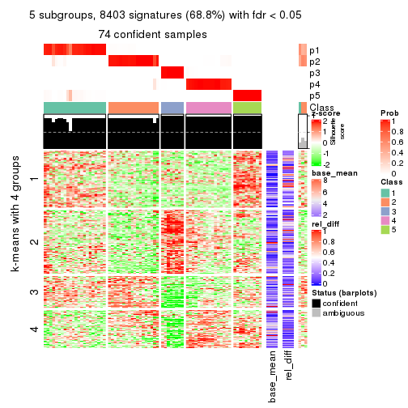
get_signatures(res, k = 6)
Signature heatmaps where rows are not scaled:
get_signatures(res, k = 2, scale_rows = FALSE)
get_signatures(res, k = 3, scale_rows = FALSE)
get_signatures(res, k = 4, scale_rows = FALSE)
get_signatures(res, k = 5, scale_rows = FALSE)
get_signatures(res, k = 6, scale_rows = FALSE)
Compare the overlap of signatures from different k:
compare_signatures(res)
get_signature() returns a data frame invisibly. TO get the list of signatures, the function
call should be assigned to a variable explicitly. In following code, if plot argument is set
to FALSE, no heatmap is plotted while only the differential analysis is performed.
# code only for demonstration
tb = get_signature(res, k = ..., plot = FALSE)
An example of the output of tb is:
#> which_row fdr mean_1 mean_2 scaled_mean_1 scaled_mean_2 km
#> 1 38 0.042760348 8.373488 9.131774 -0.5533452 0.5164555 1
#> 2 40 0.018707592 7.106213 8.469186 -0.6173731 0.5762149 1
#> 3 55 0.019134737 10.221463 11.207825 -0.6159697 0.5749050 1
#> 4 59 0.006059896 5.921854 7.869574 -0.6899429 0.6439467 1
#> 5 60 0.018055526 8.928898 10.211722 -0.6204761 0.5791110 1
#> 6 98 0.009384629 15.714769 14.887706 0.6635654 -0.6193277 2
...
The columns in tb are:
which_row: row indices corresponding to the input matrix.fdr: FDR for the differential test. mean_x: The mean value in group x.scaled_mean_x: The mean value in group x after rows are scaled.km: Row groups if k-means clustering is applied to rows.UMAP plot which shows how samples are separated.
dimension_reduction(res, k = 2, method = "UMAP")
dimension_reduction(res, k = 3, method = "UMAP")
dimension_reduction(res, k = 4, method = "UMAP")
dimension_reduction(res, k = 5, method = "UMAP")
dimension_reduction(res, k = 6, method = "UMAP")
Following heatmap shows how subgroups are split when increasing k:
collect_classes(res)
If matrix rows can be associated to genes, consider to use functional_enrichment(res,
...) to perform function enrichment for the signature genes. See this vignette for more detailed explanations.
sessionInfo()
#> R version 3.6.0 (2019-04-26)
#> Platform: x86_64-pc-linux-gnu (64-bit)
#> Running under: CentOS Linux 7 (Core)
#>
#> Matrix products: default
#> BLAS: /usr/lib64/libblas.so.3.4.2
#> LAPACK: /usr/lib64/liblapack.so.3.4.2
#>
#> locale:
#> [1] LC_CTYPE=en_GB.UTF-8 LC_NUMERIC=C LC_TIME=en_GB.UTF-8
#> [4] LC_COLLATE=en_GB.UTF-8 LC_MONETARY=en_GB.UTF-8 LC_MESSAGES=en_GB.UTF-8
#> [7] LC_PAPER=en_GB.UTF-8 LC_NAME=C LC_ADDRESS=C
#> [10] LC_TELEPHONE=C LC_MEASUREMENT=en_GB.UTF-8 LC_IDENTIFICATION=C
#>
#> attached base packages:
#> [1] grid stats graphics grDevices utils datasets methods base
#>
#> other attached packages:
#> [1] genefilter_1.66.0 ComplexHeatmap_2.3.1 markdown_1.1 knitr_1.26
#> [5] GetoptLong_0.1.7 cola_1.3.2
#>
#> loaded via a namespace (and not attached):
#> [1] circlize_0.4.8 shape_1.4.4 xfun_0.11 slam_0.1-46
#> [5] lattice_0.20-38 splines_3.6.0 colorspace_1.4-1 vctrs_0.2.0
#> [9] stats4_3.6.0 blob_1.2.0 XML_3.98-1.20 survival_2.44-1.1
#> [13] rlang_0.4.2 pillar_1.4.2 DBI_1.0.0 BiocGenerics_0.30.0
#> [17] bit64_0.9-7 RColorBrewer_1.1-2 matrixStats_0.55.0 stringr_1.4.0
#> [21] GlobalOptions_0.1.1 evaluate_0.14 memoise_1.1.0 Biobase_2.44.0
#> [25] IRanges_2.18.3 parallel_3.6.0 AnnotationDbi_1.46.1 highr_0.8
#> [29] Rcpp_1.0.3 xtable_1.8-4 backports_1.1.5 S4Vectors_0.22.1
#> [33] annotate_1.62.0 skmeans_0.2-11 bit_1.1-14 microbenchmark_1.4-7
#> [37] brew_1.0-6 impute_1.58.0 rjson_0.2.20 png_0.1-7
#> [41] digest_0.6.23 stringi_1.4.3 polyclip_1.10-0 clue_0.3-57
#> [45] tools_3.6.0 bitops_1.0-6 magrittr_1.5 eulerr_6.0.0
#> [49] RCurl_1.95-4.12 RSQLite_2.1.4 tibble_2.1.3 cluster_2.1.0
#> [53] crayon_1.3.4 pkgconfig_2.0.3 zeallot_0.1.0 Matrix_1.2-17
#> [57] xml2_1.2.2 httr_1.4.1 R6_2.4.1 mclust_5.4.5
#> [61] compiler_3.6.0